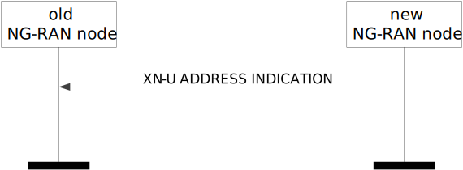
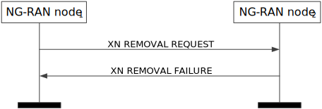

3GPP TS 38.423 V17.9.0 (2024-06)
Technical Specification
3rd Generation Partnership Project;
Technical Specification Group Radio Access Network;
NG-RAN;
Xn application protocol (XnAP)
(Release 17)
The present document has been developed within the 3rd
Generation Partnership Project (3GPP TM) and may be further
elaborated for the purposes of 3GPP..
The present document has not been subject to any approval process by the
3GPP Organizational Partners and shall not be implemented.
This Specification is provided for future development work within 3GPP
only. The Organizational Partners accept no liability for any use of
this Specification.
Specifications and Reports for implementation of the 3GPP TM
system should be obtained via the 3GPP Organizational Partners’
Publications Offices.
3GPP
Postal address
3GPP support office address
650 Route des Lucioles – Sophia Antipolis
Valbonne – FRANCE
Tel.: +33 4 92 94 42 00 Fax: +33 4 93 65 47 16
Internet
Copyright Notification
No part may be reproduced except as authorized by written
permission.
The copyright and the foregoing restriction extend to reproduction in
all media.
© 2024, 3GPP Organizational Partners (ARIB, ATIS, CCSA, ETSI, TSDSI, TTA, TTC).
All rights reserved.
UMTS™ is a Trade Mark of ETSI registered for the benefit of its members
3GPP™ is a Trade Mark of ETSI registered for the benefit of its
Members and of the 3GPP Organizational Partners
LTE™ is a Trade Mark of ETSI registered for the benefit of its Members
and of the 3GPP Organizational Partners
GSM® and the GSM logo are registered and owned by the GSM Association
Foreword 15
1 Scope 16
2 References 16
3 Definitions, symbols and abbreviations 18
3.1 Definitions 18
3.2 Abbreviations 19
4 General 19
4.1 Procedure specification principles 19
4.2 Forwards and backwards compatibility 20
4.3 Specification notations 20
5 XnAP services 20
5.1 XnAP procedure modules 20
5.2 Parallel transactions 21
6 Services expected from signalling transport 21
7 Functions of XnAP 21
8 XnAP procedures 21
8.1 Elementary procedures 21
8.2 Basic mobility procedures 24
8.2.1 Handover Preparation 24
8.2.1.1 General 24
8.2.1.2 Successful Operation 24
8.2.1.3 Unsuccessful Operation 30
8.2.1.4 Abnormal Conditions 30
8.2.2 SN Status Transfer 31
8.2.2.1 General 31
8.2.2.2 Successful Operation 31
8.2.2.3 Unsuccessful Operation 32
8.2.2.4 Abnormal Conditions 32
8.2.3 Handover Cancel 32
8.2.3.1 General 32
8.2.3.2 Successful Operation 32
8.2.3.3 Unsuccessful Operation 33
8.2.3.4 Abnormal Conditions 33
8.2.4 Retrieve UE Context 33
8.2.4.1 General 33
8.2.4.2 Successful Operation 33
8.2.4.3 Unsuccessful Operation 36
8.2.4.4 Abnormal Conditions 36
8.2.5 RAN Paging 37
8.2.5.1 General 37
8.2.5.2 Successful operation 37
8.2.5.3 Unsuccessful Operation 38
8.2.5.4 Abnormal Condition 38
8.2.6 XN-U Address Indication 38
8.2.6.1 General 38
8.2.6.2 Successful Operation 38
8.2.6.3 Unsuccessful Operation 39
8.2.6.4 Abnormal Conditions 39
8.2.7 UE Context Release 40
8.2.7.1 General 40
8.2.7.2 Successful Operation 40
8.2.7.3 Unsuccessful Operation 41
8.2.7.4 Abnormal Conditions 41
8.2.8 Handover Success 41
8.2.8.1 General 41
8.2.8.2 Successful Operation 42
8.2.8.3 Unsuccessful Operation 42
8.2.8.4 Abnormal Conditions 42
8.2.9 Conditional Handover Cancel 42
8.2.9.1 General 42
8.2.9.2 Successful Operation 43
8.2.9.3 Unsuccessful Operation 43
8.2.9.4 Abnormal Conditions 43
8.2.10 Early Status Transfer 43
8.2.10.1 General 43
8.2.10.2 Successful Operation 44
8.2.10.3 Unsuccessful Operation 45
8.2.10.4 Abnormal Conditions 45
8.2.11 RAN Multicast Group Paging 45
8.2.11.1 General 45
8.2.11.2 Successful operation 45
8.2.12 Retrieve UE Context Confirm 46
8.2.12.1 General 46
8.2.12.2 Successful Operation 46
8.2.12.3 Unsuccessful Operation 46
8.2.12.4 Abnormal Conditions 46
8.2.13 Partial UE Context Transfer 47
8.2.13.1 General 47
8.2.13.2 Successful Operation 47
8.2.13.3 Unsuccessful Operation 47
8.2.13.4 Abnormal Condition 47
8.3 Procedures for Dual Connectivity 48
8.3.1 S-NG-RAN node Addition Preparation 48
8.3.1.1 General 48
8.3.1.2 Successful Operation 48
8.3.1.3 Unsuccessful Operation 54
8.3.1.4 Abnormal Conditions 54
8.3.2 S-NG-RAN node Reconfiguration Completion 55
8.3.2.1 General 55
8.3.2.2 Successful Operation 55
8.3.2.3 Abnormal Conditions 56
8.3.3 M-NG-RAN node initiated S-NG-RAN node Modification Preparation 56
8.3.3.1 General 56
8.3.3.2 Successful Operation 56
8.3.3.3 Unsuccessful Operation 64
8.3.3.4 Abnormal Conditions 65
8.3.4 S-NG-RAN node initiated S-NG-RAN node Modification 66
8.3.4.1 General 66
8.3.4.2 Successful Operation 66
8.3.4.3 Unsuccessful Operation 69
8.3.4.4 Abnormal Conditions 69
8.3.5 S-NG-RAN node initiated S-NG-RAN node Change 70
8.3.5.1 General 70
8.3.5.2 Successful Operation 70
8.3.5.3 Unsuccessful Operation 71
8.3.5.4 Abnormal Conditions 71
8.3.6 M-NG-RAN node initiated S-NG-RAN node Release 72
8.3.6.1 General 72
8.3.6.2 Successful Operation 72
8.3.6.3 Unsuccessful Operation 73
8.3.6.4 Abnormal Conditions 73
8.3.7 S-NG-RAN node initiated S-NG-RAN node Release 73
8.3.7.1 General 73
8.3.7.2 Successful Operation 74
8.3.7.3 Unsuccessful Operation 74
8.3.7.4 Abnormal Conditions 74
8.3.8 S-NG-RAN node Counter Check 74
8.3.8.1 General 74
8.3.8.2 Successful Operation 75
8.3.8.3 Unsuccessful Operation 75
8.3.8.4 Abnormal Conditions 75
8.3.9 RRC Transfer 75
8.3.9.1 General 75
8.3.9.2 Successful Operation 76
8.3.9.3 Unsuccessful Operation 76
8.3.9.4 Abnormal Conditions 77
8.3.10 Notification Control Indication 77
8.3.10.1 General 77
8.3.10.2 Successful Operation – M-NG-RAN node initiated 77
8.3.10.3 Successful Operation – S-NG-RAN node initiated 77
8.3.10.4 Abnormal Conditions 78
8.3.11 Activity Notification 78
8.3.11.1 General 78
8.3.11.2 Successful Operation 78
8.3.11.3 Abnormal Conditions 79
8.3.12 E-UTRA – NR Cell Resource Coordination 79
8.3.12.1 General 79
8.3.12.2 Successful Operation 79
8.3.13 Secondary RAT Data Usage Report 80
8.3.13.1 General 80
8.3.13.2 Successful Operation 80
8.3.13.3 Unsuccessful Operation 80
8.3.13.4 Abnormal Conditions 80
8.3.14 Trace Start 80
8.3.14.1 General 80
8.3.14.2 Successful Operation 81
8.3.14.3 Abnormal Conditions 81
8.3.15 Deactivate Trace 81
8.3.15.1 General 81
8.3.15.2 Successful Operation 82
8.3.15.3 Abnormal Conditions 82
8.3.16 Cell Traffic Trace 82
8.3.16.1 General 82
8.3.16.2 Successful Operation 82
8.3.17 SCG Failure Information Report 82
8.3.17.1 General 82
8.3.17.2 Successful Operation 83
8.3.17.3 Unsuccessful Operation 83
8.3.17.4 Abnormal Conditions 83
8.3.18 SCG Failure Transfer 83
8.3.18.1 General 83
8.3.18.2 Successful Operation 84
8.3.18.3 Unsuccessful Operation 84
8.3.18.4 Abnormal Conditions 84
8.3.19 Conditional PSCell Change Cancel 84
8.3.19.1 General 84
8.3.19.2 Successful Operation 84
8.3.19.3 Unsuccessful Operation 84
8.3.19.4 Abnormal Conditions 85
8.4 Global procedures 85
8.4.1 Xn Setup 85
8.4.1.1 General 85
8.4.1.2 Successful Operation 85
8.4.1.3 Unsuccessful Operation 88
8.4.1.4 Abnormal Conditions 88
8.4.2 NG-RAN node Configuration Update 88
8.4.2.1 General 88
8.4.2.2 Successful Operation 89
8.4.2.3 Unsuccessful Operation 93
8.4.2.4 Abnormal Conditions 94
8.4.3 Cell Activation 94
8.4.3.1 General 94
8.4.3.2 Successful Operation 94
8.4.3.3 Unsuccessful Operation 95
8.4.3.4 Abnormal Conditions 95
8.4.4 Reset 95
8.4.4.1 General 95
8.4.4.2 Successful Operation 95
8.4.4.3 Unsuccessful Operation 96
8.4.4.4 Abnormal Conditions 96
8.4.5 Error Indication 96
8.4.5.1 General 96
8.4.5.2 Successful Operation 97
8.4.5.3 Unsuccessful Operation 97
8.4.5.4 Abnormal Conditions 97
8.4.6 Xn Removal 97
8.4.6.1 General 97
8.4.6.2 Successful Operation 98
8.4.6.3 Unsuccessful Operation 98
8.4.6.4 Abnormal Conditions 98
8.4.7 Failure Indication 99
8.4.7.1 General 99
8.4.7.2 Successful Operation 99
8.4.7.3 Unsuccessful Operation 99
8.4.7.4 Abnormal Conditions 99
8.4.8 Handover Report 99
8.4.8.1 General 99
8.4.8.2 Successful Operation 100
8.4.8.3 Unsuccessful Operation 100
8.4.8.4 Abnormal Conditions 100
8.4.9 Mobility Settings Change 100
8.4.9.1 General 100
8.4.9.2 Successful Operation 101
8.4.9.3 Unsuccessful Operation 101
8.4.9.4 Abnormal Conditions 101
8.4.10 Resource Status Reporting Initiation 102
8.4.10.1 General 102
8.4.10.2 Successful Operation 102
8.4.10.3 Unsuccessful Operation 103
8.4.10.4 Abnormal Conditions 103
8.4.11 Resource Status Reporting 104
8.4.11.1 General 104
8.4.11.2 Successful Operation 104
8.4.11.3 Unsuccessful Operation 104
8.4.11.4 Abnormal Conditions 104
8.4.12 Access And Mobility Indication 104
8.4.12.1 General 104
8.4.12.2 Successful Operation 105
8.4.12.3 Abnormal Conditions 105
8.5 IAB Procedures 105
8.5.1 F1-C Traffic Transfer 105
8.5.1.1 General 105
8.5.1.2 Successful Operation 105
8.5.1.3 Unsuccessful Operation 106
8.5.1.4 Abnormal Conditions 106
8.5.2 IAB Transport Migration Management 106
8.5.2.1 General 106
8.5.2.2 Successful Operation 106
8.5.2.3 Unsuccessful Operation 107
8.5.2.4 Abnormal Conditions 107
8.5.3 IAB Transport Migration Modification 107
8.5.3.1 General 107
8.5.3.2 Successful Operation 108
8.5.3.3 Unsuccessful Operation 108
8.5.3.4 Abnormal Conditions 109
8.5.4 IAB Resource Coordination 109
8.5.4.1 General 109
8.5.4.2 Successful Operation 109
8.5.4.3 Unsuccessful Operation 109
8.5.4.4 Abnormal Conditions 109
9 Elements for XnAP Communication 110
9.0 General 110
9.1 Message Functional Definition and Content 110
9.1.1 Messages for Basic Mobility Procedures 110
9.1.1.1 HANDOVER REQUEST 110
9.1.1.2 HANDOVER REQUEST ACKNOWLEDGE 113
9.1.1.3 HANDOVER PREPARATION FAILURE 114
9.1.1.4 SN STATUS TRANSFER 114
9.1.1.5 UE CONTEXT RELEASE 115
9.1.1.6 HANDOVER CANCEL 115
9.1.1.7 RAN PAGING 116
9.1.1.8 RETRIEVE UE CONTEXT REQUEST 116
9.1.1.9 RETRIEVE UE CONTEXT RESPONSE 119
9.1.1.10 RETRIEVE UE CONTEXT FAILURE 119
9.1.1.11 XN-U ADDRESS INDICATION 120
9.1.1.12 HANDOVER SUCCESS 121
9.1.1.13 CONDITIONAL HANDOVER CANCEL 122
9.1.1.14 EARLY STATUS TRANSFER 122
9.1.1.15 RAN MULTICAST GROUP PAGING 124
9.1.1.16 RETRIEVE UE CONTEXT CONFIRM 124
9.1.1.17 PARTIAL UE CONTEXT TRANSFER 125
9.1.1.18 PARTIAL UE CONTEXT TRANSFER ACKNOWLEDGE 125
9.1.1.19 PARTIAL UE CONTEXT TRANSFER FAILURE 126
9.1.2 Messages for Dual Connectivity Procedures 126
9.1.2.1 S-NODE ADDITION REQUEST 126
9.1.2.2 S-NODE ADDITION REQUEST ACKNOWLEDGE 129
9.1.2.3 S-NODE ADDITION REQUEST REJECT 131
9.1.2.4 S-NODE RECONFIGURATION COMPLETE 132
9.1.2.5 S-NODE MODIFICATION REQUEST 132
9.1.2.6 S-NODE MODIFICATION REQUEST ACKNOWLEDGE 137
9.1.2.7 S-NODE MODIFICATION REQUEST REJECT 139
9.1.2.8 S-NODE MODIFICATION REQUIRED 140
9.1.2.9 S-NODE MODIFICATION CONFIRM 142
9.1.2.10 S-NODE MODIFICATION REFUSE 143
9.1.2.11 S-NODE CHANGE REQUIRED 144
9.1.2.12 S-NODE CHANGE CONFIRM 145
9.1.2.13 S-NODE CHANGE REFUSE 147
9.1.2.14 S-NODE RELEASE REQUEST 147
9.1.2.15 S-NODE RELEASE REQUEST ACKNOWLEDGE 148
9.1.2.16 S-NODE RELEASE REJECT 148
9.1.2.17 S-NODE RELEASE REQUIRED 148
9.1.2.18 S-NODE RELEASE CONFIRM 149
9.1.2.19 S-NODE COUNTER CHECK REQUEST 149
9.1.2.20 RRC TRANSFER 150
9.1.2.21 NOTIFICATION CONTROL INDICATION 152
9.1.2.22 ACTIVITY NOTIFICATION 153
9.1.2.23 E-UTRA – NR CELL RESOURCE COORDINATION REQUEST 153
9.1.2.24 E-UTRA – NR CELL RESOURCE COORDINATION RESPONSE 155
9.1.2.25 SECONDARY RAT DATA USAGE REPORT 156
9.1.2.26 TRACE START 156
9.1.2.27 DEACTIVATE TRACE 157
9.1.2.28 CELL TRAFFIC TRACE 157
9.1.2.29 SCG FAILURE INFORMATION REPORT 158
9.1.2.30 SCG FAILURE TRANSFER 158
9.1.2.31 CONDITIONAL PSCELL CHANGE CANCEL 159
9.1.3 Messages for Global Procedures 159
9.1.3.1 XN SETUP REQUEST 159
9.1.3.2 XN SETUP RESPONSE 160
9.1.3.3 XN SETUP FAILURE 162
9.1.3.4 NG-RAN NODE CONFIGURATION UPDATE 162
9.1.3.5 NG-RAN NODE CONFIGURATION UPDATE ACKNOWLEDGE 165
9.1.3.6 NG-RAN NODE CONFIGURATION UPDATE FAILURE 167
9.1.3.7 CELL ACTIVATION REQUEST 167
9.1.3.8 CELL ACTIVATION RESPONSE 168
9.1.3.9 CELL ACTIVATION FAILURE 168
9.1.3.10 RESET REQUEST 169
9.1.3.11 RESET RESPONSE 169
9.1.3.12 ERROR INDICATION 170
9.1.3.13 XN REMOVAL REQUEST 170
9.1.3.14 XN REMOVAL RESPONSE 170
9.1.3.15 XN REMOVAL FAILURE 171
9.1.3.16 FAILURE INDICATION 171
9.1.3.17 HANDOVER REPORT 172
9.1.3.18 RESOURCE STATUS REQUEST 174
9.1.3.19 RESOURCE STATUS RESPONSE 175
9.1.3.20 RESOURCE STATUS FAILURE 176
9.1.3.21 RESOURCE STATUS UPDATE 176
9.1.3.22 MOBILITY CHANGE REQUEST 177
9.1.3.23 MOBILITY CHANGE ACKNOWLEDGE 178
9.1.3.24 MOBILITY CHANGE FAILURE 178
9.1.3.25 ACCESS AND MOBILITY INDICATION 179
9.1.4 Messages for IAB Procedures 179
9.1.4.1 F1-C TRAFFIC TRANSFER 179
9.1.4.2 IAB TRANSPORT MIGRATION MANAGEMENT REQUEST 180
9.1.4.3 IAB TRANSPORT MIGRATION MANAGEMENT RESPONSE 181
9.1.4.3a IAB TRANSPORT MIGRATION MANAGEMENT REJECT 182
9.1.4.4 IAB TRANSPORT MIGRATION MODIFICATION REQUEST 183
9.1.4.5 IAB TRANSPORT MIGRATION MODIFICATION RESPONSE 184
9.1.4.6 IAB RESOURCE COORDINATION REQUEST 184
9.1.4.7 IAB RESOURCE COORDINATION RESPONSE 185
9.2 Information Element definitions 186
9.2.0 General 186
9.2.1 Container and List IE definitions 186
9.2.1.1 PDU Session Resources To Be Setup List 186
9.2.1.2 PDU Session Resources Admitted List 188
9.2.1.3 PDU Session Resources Not Admitted List 189
9.2.1.4 QoS Flow List with Cause 189
9.2.1.4a QoS Flow List 189
9.2.1.5 PDU Session Resource Setup Info – SN terminated 190
9.2.1.6 PDU Session Resource Setup Response Info – SN terminated 191
9.2.1.7 PDU Session Resource Setup Info – MN terminated 193
9.2.1.8 PDU Session Resource Setup Response Info – MN terminated 195
9.2.1.9 PDU Session Resource Modification Info – SN terminated 196
9.2.1.10 PDU Session Resource Modification Response Info – SN terminated 198
9.2.1.11 PDU Session Resource Modification Info – MN terminated 202
9.2.1.12 PDU Session Resource Modification Response Info – MN terminated 205
9.2.1.13 UE Context Information – Retrieve UE Context Response 206
9.2.1.14 DRBs Subject To Status Transfer List 207
9.2.1.15 DRB to QoS Flow Mapping List 209
9.2.1.16 Data Forwarding Info from target NG-RAN node 210
9.2.1.17 Data Forwarding and Offloading Info from source NG-RAN node 210
9.2.1.18 PDU Session Resource Change Required Info – SN terminated 211
9.2.1.19 PDU Session Resource Change Confirm Info – SN terminated 211
9.2.1.20 PDU Session Resource Modification Required Info – SN terminated 212
9.2.1.21 PDU Session Resource Modification Confirm Info – SN terminated 215
9.2.1.22 PDU Session Resource Modification Required Info – MN terminated 216
9.2.1.23 PDU Session Resource Modification Confirm Info – MN terminated 217
9.2.1.24 PDU Session List with data forwarding request info 217
9.2.1.25 PDU Session List with data forwarding info from the target node 218
9.2.1.26 PDU Session List with Cause 218
9.2.1.27 PDU Session List 218
9.2.1.28 DRB List with Cause 218
9.2.1.29 DRB List 219
9.2.1.30 PDU Session Resource Setup Complete Info – SN terminated 219
9.2.1.31 Secondary Data Forwarding Info from target NG-RAN node List 219
9.2.1.32 Additional UL NG-U UP TNL Information at UPF List 220
9.2.1.33 DAPS Request Information 220
9.2.1.34 DAPS Response Information 220
9.2.1.35 Data Forwarding Info from target E-UTRAN node 221
9.2.1.36 MBS Session Information List 221
9.2.1.37 MBS Session Associated Information 221
9.2.1.38 MBS Session Information Response List 222
9.2.1.39 MBS Mapping and Data Forwarding Request Info from source NG-RAN node 222
9.2.1.40 MBS Data Forwarding Response Info from target NG-RAN node 223
9.2.2 NG-RAN Node and Cell Configuration related IE definitions 223
9.2.2.1 Global gNB ID 223
9.2.2.2 Global ng-eNB ID 223
9.2.2.3 Global NG-RAN Node ID 224
9.2.2.4 PLMN Identity 224
9.2.2.5 TAC 224
9.2.2.6 RAN Area Code 225
9.2.2.7 NR CGI 225
9.2.2.8 E-UTRA CGI 225
9.2.2.9 NG-RAN Cell Identity 225
9.2.2.10 NG-RAN Cell PCI 225
9.2.2.11 Served Cell Information NR 226
9.2.2.12 Served Cell Information E-UTRA 231
9.2.2.13 Neighbour Information NR 235
9.2.2.14 Neighbour Information E-UTRA 235
9.2.2.15 Served Cells To Update NR 236
9.2.2.16 Served Cells to Update E-UTRA 236
9.2.2.17 Cell Assistance Information NR 237
9.2.2.18 SUL Information 238
9.2.2.19 NR Frequency Info 238
9.2.2.20 NR Transmission Bandwidth 240
9.2.2.21 E-UTRA ARFCN 240
9.2.2.22 E-UTRA Transmission Bandwidth 240
9.2.2.23 Number of Antenna Ports E-UTRA 241
9.2.2.24 E-UTRA Multiband Info List 241
9.2.2.25 E-UTRA PRACH Configuration 241
9.2.2.26 MBSFN Subframe Allocation E-UTRA 241
9.2.2.27 Global NG-RAN Cell Identity 242
9.2.2.28 Connectivity Support 242
9.2.2.29 Protected E-UTRA Resource Indication 242
9.2.2.30 Data Traffic Resource Indication 244
9.2.2.31 Data Traffic Resources 244
9.2.2.32 Reserved Subframe Pattern 245
9.2.2.33 MR-DC Resource Coordination Information 245
9.2.2.34 E-UTRA Resource Coordination Information 245
9.2.2.35 NR Resource Coordination Information 247
9.2.2.36 E-UTRA Coordination Assistance Information 248
9.2.2.37 NR Coordination Assistance Information 248
9.2.2.38 NE-DC TDM Pattern 248
9.2.2.39 Interface Instance Indication 249
9.2.2.39a Configured TAC Indication 249
9.2.2.40 Intended TDD DL-UL Configuration NR 249
9.2.2.41 Cell and Capacity Assistance Information NR 250
9.2.2.42 Cell and Capacity Assistance Information E-UTRA 250
9.2.2.43 Cell Assistance Information E-UTRA 251
9.2.2.44 Maximum Cell List Size 251
9.2.2.45 Message Oversize Notification 251
9.2.2.46 Partial List Indicator 251
9.2.2.47 Offset of NB-IoT Channel Number to EARFCN 252
9.2.2.48 NB-IoT UL DL Alignment Offset 252
9.2.2.49 TNL Capacity Indicator 252
9.2.2.50 Radio Resource Status 252
9.2.2.51 Composite Available Capacity Group 255
9.2.2.52 Composite Available Capacity 255
9.2.2.53 Cell Capacity Class Value 256
9.2.2.54 Capacity Value 256
9.2.2.55 Slice Available Capacity 256
9.2.2.56 RRC Connections 257
9.2.2.57 Number of RRC Connections 257
9.2.2.58 Available RRC Connection Capacity Value 257
9.2.2.59 UE RLF Report 258
9.2.2.60 Mobility Parameters Information 258
9.2.2.61 Mobility Parameters Modification Range 258
9.2.2.62 Number of Active UEs 259
9.2.2.63 NR Carrier List 259
9.2.2.64 SSB Positions In Burst 259
9.2.2.65 NID 260
9.2.2.66 CAG-Identifier 260
9.2.2.67 Broadcast NID List 260
9.2.2.68 Broadcast SNPN ID List 260
9.2.2.69 Broadcast CAG-Identifier List 261
9.2.2.70 Broadcast PNI-NPN ID Information 261
9.2.2.71 NPN Broadcast Information 261
9.2.2.72 NPN Support 261
9.2.2.73 Global Cell Identity 262
9.2.2.74 NPRACH Configuration 262
9.2.2.75 SFN Offset 263
9.2.2.76 CHO Configuration 263
9.2.2.77 SSB Offset Information 264
9.2.2.78 SSB Offset Modification Range 264
9.2.2.79 Multiplexing Info 264
9.2.2.80 Traffic Index 265
9.2.2.81 Traffic Profile 265
9.2.2.82 F1-Terminating Topology BH Information 265
9.2.2.83 Non-F1-terminating Topology BH Information 266
9.2.2.84 Traffic To Be Released Information 267
9.2.2.85 IAB TNL Address Request 267
9.2.2.86 IAB TNL Address Response 268
9.2.2.87 BAP Routing ID 268
9.2.2.88 BH RLC Channel ID 268
9.2.2.89 BAP Address 268
9.2.2.90 BAP Path ID 269
9.2.2.91 IAB QoS mapping information 269
9.2.2.92 IAB TNL Address 269
9.2.2.93 IAB TNL Addresses Requested 269
9.2.2.94 IAB Cell Information 270
9.2.2.95 gNB-DU Cell Resource Configuration 271
9.2.2.96 IAB STC Info 273
9.2.2.97 RB Set Configuration 273
9.2.2.98 IAB TNL Address Exception 274
9.2.2.99 BH Info List 274
9.2.2.100 Non-UP traffic 275
9.2.2.101 Local NG-RAN Node Identifier 275
9.2.2.102 Served Cell Specific Info Request 276
9.2.3 General IE definitions 277
9.2.3.1 Message Type 277
9.2.3.2 Cause 277
9.2.3.3 Criticality Diagnostics 283
9.2.3.4 Bit Rate 284
9.2.3.5 QoS Flow Level QoS Parameters 284
9.2.3.6 GBR QoS Flow Information 285
9.2.3.7 Allocation and Retention Priority 286
9.2.3.8 Non dynamic 5QI Descriptor 287
9.2.3.9 Dynamic 5QI Descriptor 287
9.2.3.10 QoS Flow Identifier 289
9.2.3.11 Packet Loss Rate 289
9.2.3.12 Packet Delay Budget 289
9.2.3.13 Packet Error Rate 289
9.2.3.14 Averaging Window 289
9.2.3.15 Maximum Data Burst Volume 289
9.2.3.16 NG-RAN node UE XnAP ID 290
9.2.3.17 UE Aggregate Maximum Bit Rate 290
9.2.3.18 PDU Session ID 290
9.2.3.19 PDU Session Type 290
9.2.3.20 TAI Support List 290
9.2.3.21 S-NSSAI 291
9.2.3.22 Slice Support List 291
9.2.3.23 Index to RAT/Frequency Selection Priority 291
9.2.3.24 GUAMI 292
9.2.3.25 Target Cell Global ID 292
9.2.3.26 AMF UE NGAP ID 292
9.2.3.27 SCG Configuration Query 292
9.2.3.28 RLC Mode 292
9.2.3.29 Transport Layer Address 293
9.2.3.30 UP Transport Layer Information 293
9.2.3.31 CP Transport Layer Information 293
9.2.3.32 Masked IMEISV 294
9.2.3.33 DRB ID 294
9.2.3.34 DL Forwarding 294
9.2.3.35 Data Forwarding Accepted 294
9.2.3.36 COUNT Value for PDCP SN Length 12 294
9.2.3.37 COUNT Value for PDCP SN Length 18 295
9.2.3.38 RAN Paging Area 295
9.2.3.39 RAN Area ID 295
9.2.3.40 UE Context ID 295
9.2.3.41 Assistance Data for RAN Paging 296
9.2.3.42 RAN Paging Attempt Information 296
9.2.3.43 UE RAN Paging Identity 296
9.2.3.44 Paging Priority 297
9.2.3.45 Delivery Status 297
9.2.3.46 I-RNTI 297
9.2.3.47 Location Reporting Information 298
9.2.3.48 Area of Interest Information 298
9.2.3.49 UE Security Capabilities 299
9.2.3.50 AS Security Information 300
9.2.3.51 S-NG-RAN node Security Key 300
9.2.3.52 Security Indication 300
9.2.3.53 Mobility Restriction List 301
9.2.3.54 Xn Benefit Value 303
9.2.3.55 Trace Activation 303
9.2.3.56 Time To Wait 304
9.2.3.57 QoS Flow Notification Control Indication Info 304
9.2.3.58 Request Reporting Reference ID 305
9.2.3.59 User plane traffic activity report 305
9.2.3.60 Lower Layer presence status change 305
9.2.3.61 RRC Resume Cause 305
9.2.3.62 Priority Level 305
9.2.3.63 PDCP SN Length 306
9.2.3.64 UE History Information 306
9.2.3.65 Last Visited Cell Information 306
9.2.3.66 Paging DRX 306
9.2.3.67 Security Result 307
9.2.3.68 UE Context Kept Indicator 307
9.2.3.69 PDU Session Aggregate Maximum Bit Rate 307
9.2.3.70 LCID 307
9.2.3.71 Duplication Activation 308
9.2.3.72 RRC Config Indication 308
9.2.3.73 Maximum Integrity Protected Data Rate 308
9.2.3.74 PDCP Change Indication 308
9.2.3.75 UL Configuration 309
9.2.3.76 UP Transport Parameters 309
9.2.3.77 Desired Activity Notification Level 309
9.2.3.78 Number of DRB IDs 310
9.2.3.79 QoS Flow Mapping Indication 310
9.2.3.80 RLC Status 310
9.2.3.81 Expected UE Behaviour 310
9.2.3.82 Expected UE Activity Behaviour 311
9.2.3.83 AMF Region Information 311
9.2.3.84 TNL Association Usage 312
9.2.3.85 Network Instance 312
9.2.3.86 PDCP Duplication Configuration 312
9.2.3.87 Secondary RAT Usage Information 312
9.2.3.88 Volume Timed Report List 313
9.2.3.89 Maximum IP Rate 313
9.2.3.90 UL Forwarding 313
9.2.3.91 UE Radio Capability for Paging 314
9.2.3.92 Common Network Instance 314
9.2.3.93 Default DRB Allowed 314
9.2.3.94 Split Session Indicator 314
9.2.3.95 UL Forwarding Proposal 314
9.2.3.96 TNL Configuration Info 315
9.2.3.97 NG-RAN Trace ID 315
9.2.3.98 Non-GBR Resources Offered 316
9.2.3.99 Extended RAT Restriction Information 316
9.2.3.100 5GC Mobility Restriction List Container 316
9.2.3.101 Maximum Number of CHO Preparations 317
9.2.3.102 Alternative QoS Parameters Set List 317
9.2.3.103 Alternative QoS Parameters Set Index 317
9.2.3.104 Alternative QoS Parameters Set Notify Index 317
9.2.3.105 NR V2X Services Authorized 318
9.2.3.106 LTE V2X Services Authorized 318
9.2.3.107 NR UE Sidelink Aggregate Maximum Bit Rate 318
9.2.3.108 LTE UE Sidelink Aggregate Maximum Bit Rate 318
9.2.3.109 PC5 QoS Parameters 318
9.2.3.110 UE History Information from the UE 319
9.2.3.111 RLC Duplication Information 319
9.2.3.112 Redundant PDU Session Information 320
9.2.3.113 Extended Packet Delay Budget 320
9.2.3.114 TSC Traffic Characteristics 320
9.2.3.115 TSC Assistance Information 320
9.2.3.116 Periodicity 320
9.2.3.117 Burst Arrival Time 321
9.2.3.118 Redundant QoS Flow Indicator 321
9.2.3.119 NPN Mobility Information 321
9.2.3.120 Allowed PNI-NPN ID List 321
9.2.3.121 NPN Paging Assistance Information 322
9.2.3.122 Void 322
9.2.3.123 PNI-NPN Restricted Information 322
9.2.3.124 URI 322
9.2.3.125 MDT Configuration 322
9.2.3.126 MDT Configuration-NR 323
9.2.3.127 MDT Configuration-EUTRA 325
9.2.3.128 M1 Configuration 325
9.2.3.129 M4 Configuration 327
9.2.3.130 M5 Configuration 327
9.2.3.131 M6 Configuration 328
9.2.3.132 M7 Configuration 328
9.2.3.133 MDT PLMN List 329
9.2.3.134 Bluetooth Measurement Configuration 329
9.2.3.135 WLAN Measurement Configuration 329
9.2.3.136 Sensor Measurement Configuration 330
9.2.3.137 Logged Event Trigger Config 330
9.2.3.138 UE Radio Capability ID 331
9.2.3.139 Extended Slice Support List 331
9.2.3.140 Area Scope of Neighbour Cells 331
9.2.3.141 Extended UE Identity Index Value 331
9.2.3.142 E-UTRA Paging eDRX Information 332
9.2.3.143 UE Specific DRX 332
9.2.3.144 QoS Mapping Information 332
9.2.3.144a Hashed UE Identity Index Value 332
9.2.3.145 MRB ID 332
9.2.3.146 MBS Session ID 333
9.2.3.147 MRB Progress Information 333
9.2.3.148 MBS Area Session ID 333
9.2.3.149 MBS Service Area information 333
9.2.3.150 MBS Service Area 333
9.2.3.151 SCG UE History Information 334
9.2.3.152 Survival Time 334
9.2.3.153 Time Synchronisation Assistance Information 334
9.2.3.154 SCG Activation Request 335
9.2.3.155 SCG Activation Status 335
9.2.3.156 QMC Configuration Information 335
9.2.3.157 UE Application Layer Measurement Configuration Information 335
9.2.3.158 Available RAN Visible QoE Metrics 337
9.2.3.159 5G ProSe Authorized 337
9.2.3.160 5G ProSe PC5 QoS Parameters 337
9.2.3.161 NR Paging eDRX Information 338
9.2.3.162 NR Paging eDRX Information for RRC INACTIVE 338
9.2.3.163 SDT Support Request 338
9.2.3.164 Partial UE Context Information for SDT 339
9.2.3.165 SRB ID 340
9.2.3.166 PEIPS Assistance Information 340
9.2.3.167 UE Slice Maximum Bit Rate List 340
9.2.3.168 Positioning Information 340
9.2.3.169 MDT PLMN Modification List 341
9.2.3.170 TAI NSAG Support List 341
9.2.3.171 Excess Packet Delay Threshold Configuration 341
9.3 Message and Information Element Abstract Syntax (with ASN.1) 343
9.3.1 General 343
9.3.2 Usage of Private Message Mechanism for Non-standard Use 343
9.3.3 Elementary Procedure Definitions 344
9.3.4 PDU Definitions 356
9.3.5 Information Element definitions 418
9.3.6 Common definitions 568
9.3.7 Constant definitions 569
9.3.8 Container definitions 580
9.4 Message transfer syntax 585
9.5 Timers 585
10 Handling of unknown, unforeseen and erroneous protocol data 585
Annex A (informative): Change history 586
This Technical Specification has been produced by the 3rd Generation Partnership Project (3GPP).
The contents of the present document are subject to continuing work within the TSG and may change following formal TSG approval. Should the TSG modify the contents of the present document, it will be re-released by the TSG with an identifying change of release date and an increase in version number as follows:
Version x.y.z
where:
x the first digit:
1 presented to TSG for information;
2 presented to TSG for approval;
3 or greater indicates TSG approved document under change control.
y the second digit is incremented for all changes of substance, i.e. technical enhancements, corrections, updates, etc.
z the third digit is incremented when editorial only changes have been incorporated in the document.
The present document specifies the radio network layer signalling procedures of the control plane between NG-RAN nodes in NG-RAN. XnAP supports the functions of the Xn interface by signalling procedures defined in this document. XnAP is developed in accordance to the general principles stated in TS 38.401 [2] and TS 38.420 [3].
The following documents contain provisions which, through reference in this text, constitute provisions of the present document.
- References are either specific (identified by date of publication, edition number, version number, etc.) or non‑specific.
- For a specific reference, subsequent revisions do not apply.
- For a non-specific reference, the latest version applies. In the case of a reference to a 3GPP document (including a GSM document), a non-specific reference implicitly refers to the latest version of that document in the same Release as the present document.
[1] 3GPP TR 21.905: "Vocabulary for 3GPP Specifications".
[2] 3GPP TS 38.401: "NG-RAN; Architecture Description".
[3] 3GPP TS 38.420: "NG-RAN; Xn General Aspects and Principles".
[4] 3GPP TS 38.422: "NG-RAN; Xn Signalling Transport".
[5] 3GPP TS 38.413: "NG-RAN; NG Application Protocol (NGAP) ".
[6] 3GPP TS 25.921: "Guidelines and principles for protocol description and error handling".
[7] 3GPP TS 23.501: "System Architecture for the 5G System".
[8] 3GPP TS 37.340: "Evolved Universal Terrestrial Radio Access (E-UTRA) and NR; Multi-connectivity; Stage 2".
[9] 3GPP TS 38.300: "NR; NR and NG-RAN Overall Description; Stage 2".
[10] 3GPP TS 38.331: "NR; Radio Resource Control (RRC) Protocol specification".
[11] 3GPP TS 38.323: "NR; Packet Data Convergence Protocol (PDCP) specification".
[12] 3GPP TS 36.300: "Evolved Universal Terrestrial Radio Access (E-UTRA) and Evolved Universal Terrestrial Radio Access Network (E-UTRAN); Overall description; Stage 2".
[13] 3GPP TS 23.502: "Procedures for the 5G System; Stage 2".
[14] 3GPP TS 36.331: "Evolved Universal Terrestrial Radio Access (E-UTRA); Radio Resource Control (RRC) protocol specification".
[15] ITU-T Recommendation X.691 (2002-07): "Information technology - ASN.1 encoding rules - Specification of Packed Encoding Rules (PER) ".
[16] ITU-T Recommendation X.680 (2002-07): "Information technology – Abstract Syntax Notation One (ASN.1): Specification of basic notation".
[17] ITU-T Recommendation X.681 (2002-07): "Information technology – Abstract Syntax Notation One (ASN.1): Information object specification".
[18] 3GPP TS 29.281: "General Packet Radio Service (GPRS); Tunnelling Protocol User Plane (GTPv1-U)".
[19] 3GPP TS 38.424: "NG-RAN; Xn data transport".
[20] 3GPP TS 38.414: "NG-RAN; NG data transport".
[21] 3GPP TS 38.412: "NG-RAN; NG Signalling Transport".
[22] 3GPP TS 23.003: "Numbering, Addressing and Identification".
[23] 3GPP TS 32.422: "Trace control and configuration management".
[24] 3GPP TS 38.104: "NR; Base Station (BS) radio transmission and reception".
[25] 3GPP TS 36.104: "Base Station (BS) radio transmission and reception ".
[26] 3GPP TS 36.211: "Evolved Universal Terrestrial Radio Access (E-UTRA); Physical Channels and Modulation".
[27] 3GPP TS 36.101: "User Equipment (UE) radio transmission and reception".
[28] 3GPP TS 33.501: "Security architecture and procedures for 5G System".
[29] 3GPP TS 33.401: "3GPP System Architecture Evolution (SAE); Security architecture".
[30] 3GPP TS 24.501: "Non-Access-Stratum (NAS) protocol for 5G System (5GS); Stage 3".
[31] 3GPP TS 36.413: "Evolved Universal Terrestrial Radio Access Network (E-UTRAN); S1 Application Protocol (S1AP)".
[32] 3GPP TS 25.413: "UTRAN Iu interface RANAP signalling".
[33] 3GPP TS 38.304: "NR; User Equipment (UE) procedures in Idle mode and RRC Inactive state".
[34] 3GPP TS 36.304: "Evolved Universal Terrestrial Radio Access (E-UTRA); User Equipment (UE) procedures in idle mode".
[35] 3GPP TS 38.321: "NR; Medium Access Control (MAC) protocol specification".
[36] 3GPP TS 36.321: "Evolved Universal Terrestrial Radio Access (E-UTRA); Medium Access Control (MAC) protocol specification".
[37] IETF RFC 5905: "Network Time Protocol Version 4: Protocol and Algorithms Specification".
[38] 3GPP TS 23.287: "Architecture enhancements for 5G System (5GS) to support Vehicle-to-Everything (V2X) services".
[39] 3GPP TS 38.211: "NR; Physical channels and modulation".
[40] 3GPP TS 38.213: "NR; Physical layer procedures for control".
[41] 3GPP TS 38.473: "NG-RAN; F1 application protocol (F1AP)".
[42] 3GPP TS 38.314: "NR; Layer 2 measurements".
[43] 3GPP TS 37.320: " Radio measurement collection for Minimization of Drive Tests (MDT),"
[44] 3GPP TS 36.423: " Evolved Universal Terrestrial Radio Access Network (E-UTRAN); X2 application protocol (X2AP)".
[45] 3GPP TS 29.244: "Interface between the Control Plane and the User Plane Nodes; Stage 3".
[46] 3GPP TS 23.247: "Architectural enhancements for 5G multicast-broadcast services; Stage 2".
[47] 3GPP TS 26.247: “Transparent end-to-end Packet-switched Streaming Service (PSS); Progressive Download and Dynamic Adaptive Streaming over HTTP (3GP-DASH)”.
[48] 3GPP TS 23.304: "Proximity based Services (ProSe) in the 5G System (5GS)".
[49] 3GPP TS 38.455: "NG-RAN; NR Positioning Protocol A (NRPPa)".
[50] 3GPP TS 29.571: "5G System; Common Data Types for Service Based Interfaces; Stage 3".
[51] 3GPP TS 37.213: "NR; Physical layer procedures for shared spectrum channel access".
[52] 3GPP TS 38.101-1: "NR; User Equipment (UE) radio transmission and reception; Part 1: Range 1 Standalone".
[53] 3GPP TS 26.114: "IP Multimedia Subsystem (IMS); Multimedia Telephony; Media handling and interaction".
[54] 3GPP TS 26.118: "Virtual Reality (VR) profiles for streaming applications".
[55] 3GPP TS 28.405: "Telecommunication management; Quality of Experience (QoE) measurement collection; Control and configuration".
For the purposes of the present document, the terms and definitions given in 3GPP TR 21.905 [1] and the following apply. A term defined in the present document takes precedence over the definition of the same term, if any, in 3GPP TR 21.905 [1].
CAG Cell: As defined in TS 38.300 [9].
Conditional Handover: As defined in TS 38.300 [9].
Conditional PSCell Change: As defined in TS 37.340 [8].
DAPS Handover: As defined in TS 38.300 [9].
Elementary Procedure: XnAP protocol consists of Elementary Procedures (EPs). An XnAP Elementary Procedure is a unit of interaction between two NG-RAN nodes. An EP consists of an initiating message and possibly a response message. Two kinds of EPs are used:
- Class 1: Elementary Procedures with response (success or failure),
- Class 2: Elementary Procedures without response.
F1-terminating IAB-donor: as defined in TS 38.401 [2].
Immediate Handover: Used in the context of Conditional Handover, to refer to a handover that is executed immediately after the UE receives the Handover Command.
MBS Session Resource: As defined in TS 38.401 [2].
NG-RAN MBS session resource context: as defined in TS 38.401 [2].
NG-RAN node: as defined in TS 38.300 [9].
Non-CAG Cell: As defined in TS 38.300 [9].
Non-F1-terminating IAB-donor: as defined in TS 38.401 [2].
PDU Session Resource: As defined in TS 38.401 [2].
PDU session split: as defined in TS 37.340 [8].
Public Network Integrated NPN: as defined in TS 23.501 [7].
Stand-alone Non-Public Network: as defined in TS 23.501 [7].
For the purposes of the present document, the abbreviations given in 3GPP TR 21.905 [1] and the following apply. An abbreviation defined in the present document takes precedence over the definition of the same abbreviation, if any, in 3GPP TR 21.905 [1].
5QI 5G QoS Identifier
AMF Access and Mobility Management Function
BH Backhaul
CAG Closed Access Group
CGI Cell Global Identifier
CHO Conditional Handover
CP Control Plane
CPA Conditional PSCell Addition
CPAC Conditional PSCell Addition or Change
CPC Conditional PSCell Change
DAPS Dual Active Protocol Stack
DL Downlink
EN-DC E-UTRA-NR Dual Connectivity
E-RAB E-UTRAN Radio Access Bearer
GUAMI Globally Unique AMF Identifier
IAB Integrated Access and Backhaul
IMEISV International Mobile station Equipment Identity and Software Version number
MBS Multicast/Broadcast Service
MCG Master Cell Group
M-NG-RAN node Master NG-RAN node
NGAP NG Application Protocol
NID Network Identifier
NPN Non-Public Network
NSAG Network Slice AS Group
NSSAI Network Slice Selection Assistance Information
PEIPS Paging Early Indication with Paging Subgrouping
PNI-NPN Public Network Integrated Non-Public Network
ProSe Proximity Services
RANAC RAN Area Code
RedCap Reduced Capability
RSN Redundancy Sequence Number
SCG Secondary Cell Group
SCTP Stream Control Transmission Protocol
SNPN Stand-alone Non-Public Network
S-NG-RAN node Secondary NG-RAN node
S-NSSAI Single Network Slice Selection Assistance Information
SUL Supplementary Uplink
SDT Small Data Transmission
TAC Tracking Area Code
TAI Tracking Area Identity
UL Uplink
UPF User Plane Function
V2X Vehicle-to-Everything
The principle for specifying the procedure logic is to specify the functional behaviour of the terminating NG-RAN node exactly and completely. Any rule that specifies the behaviour of the originating NG-RAN node shall be possible to be verified with information that is visible within the system.
The following specification principles have been applied for the procedure text in clause 8:
- The procedure text discriminates between:
1) Functionality which "shall" be executed
The procedure text indicates that the receiving node "shall" perform a certain function Y under a certain condition. If the receiving node supports procedure X but cannot perform functionality Y requested in the initiating message of a Class 1 EP, the receiving node shall respond with the message used to report unsuccessful outcome for this procedure, containing an appropriate cause value.
2) Functionality which "shall, if supported" be executed
The procedure text indicates that the receiving node "shall, if supported," perform a certain function Y under a certain condition. If the receiving node supports procedure X, but does not support functionality Y, the receiving node shall proceed with the execution of the EP, possibly informing the requesting node about the not supported functionality.
- Any required inclusion of an optional IE in a response message is explicitly indicated in the procedure text. If the procedure text does not explicitly indicate that an optional IE shall be included in a response message, the optional IE shall not be included. For requirements on including Criticality Diagnostics IE, see section 10.
The forwards and backwards compatibility of the protocol is assured by a mechanism where all current and future messages, and IEs or groups of related IEs, include ID and criticality fields that are coded in a standard format that will not be changed in the future. These parts can always be decoded regardless of the standard version.
For the purposes of the present document, the following notations apply:
Procedure When referring to an elementary procedure in the specification the Procedure Name is written with the first letters in each word in upper case characters followed by the word "procedure", e.g. Handover Preparation procedure.
Message When referring to a message in the specification the MESSAGE NAME is written with all letters in upper case characters followed by the word "message", e.g. HANDOVER REQUEST message.
IE When referring to an information element (IE) in the specification the Information Element Name is written with the first letters in each word in upper case characters and all letters in Italic font followed by the abbreviation "IE", e.g. PDU Session ID IE.
Value of an IE When referring to the value of an information element (IE) in the specification the "Value" is written as it is specified in sub clause 9.2 enclosed by quotation marks, e.g. "Value".
The present clause describes the services an NG-RAN node offers to its neighbours.
The Xn interface XnAP procedures are divided into two modules as follows:
1. XnAP Basic Mobility Procedures;
2. XnAP Global Procedures;
The XnAP Basic Mobility Procedures module contains procedures used to handle the UE mobility within NG-RAN.
The Global Procedures module contains procedures that are not related to a specific UE. The procedures in this module are in contrast to the above module involving two peer NG-RAN nodes.
Unless explicitly indicated in the procedure specification, at any instance in time one protocol peer shall have a maximum of one ongoing XnAP procedure related to a certain UE.
The signalling connection shall provide in sequence delivery of XnAP messages. XnAP shall be notified if the signalling connection breaks.
Xn signalling transport is specified in TS 38.422 [4].
The functions of XnAP are specified in TS 38.420 [3].
In the following tables, all EPs are divided into Class 1 and Class 2 EPs.
Table 8.1-1: Class 1 Elementary Procedures
| Elementary Procedure | Initiating Message | Successful Outcome | Unsuccessful Outcome |
|---|---|---|---|
| Response message | Response message | ||
| Handover Preparation | HANDOVER REQUEST | HANDOVER REQUEST ACKNOWLEDGE | HANDOVER PREPARATION FAILURE |
| Retrieve UE Context | RETRIEVE UE CONTEXT REQUEST | RETRIEVE UE CONTEXT RESPONSE | RETRIEVE UE CONTEXT FAILURE |
| S-NG-RAN node Addition Preparation | S-NODE ADDITION REQUEST | S-NODE ADDITION REQUEST ACKNOWLEDGE | S-NODE ADDITION REQUEST REJECT |
| M-NG-RAN node initiated S-NG-RAN node Modification Preparation | S-NODE MODIFICATION REQUEST | S-NODE MODIFICATION REQUEST ACKNOWLEDGE | S-NODE MODIFICATION REQUEST REJECT |
| S-NG-RAN node initiated S-NG-RAN node Modification | S-NODE MODIFICATION REQUIRED | S-NODE MODIFICATION CONFIRM | S-NODE MODIFICATION REFUSE |
| S-NG-RAN node initiated S-NG-RAN node CHANGE | S-NODE CHANGE REQUIRED | S-NODE CHANGE CONFIRM | S-NODE CHANGE REFUSE |
| M-NG-RAN node initiated S-NG-RAN node Release | S-NODE RELEASE REQUEST | S-NODE RELEASE REQUEST ACKNOWLEDGE | S-NODE RELEASE REJECT |
| S-NG-RAN node initiated S-NG-RAN node Release | S-NODE RELEASE REQUIRED | S-NODE RELEASE CONFIRM | |
| Xn Setup | XN SETUP REQUEST | XN SETUP RESPONSE | XN SETUP FAILURE |
| NG-RAN node Configuration Update | NG-RAN NODE CONFIGURATION UPDATE | NG-RAN NODE CONFIGURATION UPDATE ACKNOWLEDGE | NG-RAN NODE CONFIGURATION UPDATE FAILURE |
| Cell Activation | CELL ACTIVATION REQUEST | CELL ACTIVATION RESPONSE | CELL ACTIVATION FAILURE |
| Reset | RESET REQUEST | RESET RESPONSE | |
| Xn Removal | Xn REMOVAL REQUEST | Xn REMOVAL RESPONSE | Xn REMOVAL FAILURE |
| E-UTRA - NR Cell Resource Coordination | E-UTRA - NR CELL RESOURCE COORDINATION REQUEST | E-UTRA - NR CELL RESOURCE COORDINATION RESPONSE | |
| Resource Status Reporting Initiation | RESOURCE STATUS REQUEST | RESOURCE STATUS RESPONSE | RESOURCE STATUS FAILURE |
| Mobility Settings Change | MOBILITY CHANGE REQUEST | MOBILITY CHANGE ACKNOWLEDGE | MOBILITY CHANGE FAILURE |
| IAB Transport Migration Management | IAB TRANSPORT MIGRATION MANAGEMENT REQUEST | IAB TRANSPORT MIGRATION MANAGEMENT RESPONSE | IAB TRANSPORT MIGRATION MANAGEMENT REJECT |
| IAB Transport Migration Modification | IAB TRANSPORT MIGRATION MODIFICATION REQUEST | IAB TRANSPORT MIGRATION MODIFICATION RESPONSE | |
| IAB Resource Coordination | IAB RESOURCE COORDINATION REQUEST | IAB RESOURCE COORDINATION RESPONSE | |
| Partial UE Context Transfer | PARTIAL UE CONTEXT TRANSFER | PARTIAL UE CONTEXT TRANSFER ACKNOWLEDGE | PARTIAL UE CONTEXT TRANSFER FAILURE |
Table 8.1-2: Class 2 Elementary Procedures
| Elementary Procedure | Initiating Message |
|---|---|
| Handover Cancel | HANDOVER CANCEL |
| SN Status Transfer | SN STATUS TRANSFER |
| RAN Paging | RAN PAGING |
| Xn-U Address Indication | XN-U ADDRESS INDICATION |
| S-NG-RAN node Reconfiguration Completion | S-NODE RECONFIGURATION COMPLETE |
| S-NG-RAN node Counter Check | S-NODE COUNTER CHECK REQUEST |
| UE Context Release | UE CONTEXT RELEASE |
| RRC Transfer | RRC TRANSFER |
| Error Indication | ERROR INDICATION |
| Notification Control Indication | NOTIFICATION CONTROL INDICATION |
| Activity Notification | ACTIVITY NOTIFICATION |
| Secondary RAT Data Usage Report | SECONDARY RAT DATA USAGE REPORT |
| Trace Start | TRACE START |
| Deactivate Trace | DEACTIVATE TRACE |
| Handover Success | HANDOVER SUCCESS |
| Conditional Handover Cancel | CONDITIONAL HANDOVER CANCEL |
| Early Status Transfer | EARLY STATUS TRANSFER |
| Failure Indication | FAILURE INDICATION |
| Handover Report | HANDOVER REPORT |
| Resource Status Reporting | RESOURCE STATUS UPDATE |
| Access And Mobility Indication | ACCESS AND MOBILITY INDICATION |
| Cell Traffic Trace | CELL TRAFFIC TRACE |
| RAN Multicast Group Paging | RAN MULTICAST GROUP PAGING |
| SCG Failure Information Report | SCG FAILURE INFORMATION REPORT |
| SCG Failure Transfer | SCG FAILURE TRANSFER |
| F1-C Traffic Transfer | F1-C TRAFFIC TRANSFER |
| Retrieve UE Context Confirm | RETRIEVE UE CONTEXT CONFIRM |
| Conditional PSCell Change Cancel | CONDITIONAL PSCELL CHANGE CANCEL |
This procedure is used to establish necessary resources in an NG-RAN node for an incoming handover. If the procedure concerns a conditional handover, parallel transactions are allowed. Possible parallel requests are identified by the target cell ID when the source UE AP IDs are the same.
The procedure uses UE-associated signalling.
Figure 8.2.1.2-1: Handover Preparation, successful operation
The source NG-RAN node initiates the procedure by sending the HANDOVER REQUEST message to the target NG-RAN node. When the source NG-RAN node sends the HANDOVER REQUEST message, it shall start the timer TXnRELOCprep.
If the Conditional Handover Information Request IE is contained in the HANDOVER REQUEST message, the target NG-RAN node shall consider that the request concerns a conditional handover and shall include the Conditional Handover Information Acknowledge IE in the HANDOVER REQUEST ACKNOWLEDGE message.
If the Target NG-RAN node UE XnAP ID IE is contained in the Conditional Handover Information Request IE included in the HANDOVER REQUEST message, then the target NG-RAN node shall remove the existing prepared conditional HO identified by the Target NG-RAN node UE XnAP ID IE and the Target Cell Global ID IE. It is up to the implementation of the target NG-RAN node when to remove the HO information.
Upon reception of the HANDOVER REQUEST ACKNOWLEDGE message, the source NG-RAN node shall stop the timer TXnRELOCprep and terminate the Handover Preparation procedure. If the procedure was initiated for an immediate handover, the source NG-RAN node shall start the timer TXnRELOCoverall. The source NG-RAN node is then defined to have a Prepared Handover for that Xn UE-associated signalling.
For each E-RAB ID IE included in the QoS Flow To Be Setup List IE in the HANDOVER REQUEST message, the target NG-RAN node shall, if supported, store the content of the IE in the UE context and use it for subsequent inter-system handover.
If the Masked IMEISV IE is contained in the HANDOVER REQUEST message the target NG-RAN node shall, if supported, use it to determine the characteristics of the UE for subsequent handling.
At reception of the HANDOVER REQUEST message the target NG-RAN node shall prepare the configuration of the AS security relation between the UE and the target NG-RAN node by using the information in the UE Security Capabilities IE and the AS Security Information IE in the UE Context Information IE, as specified in TS 33.501 [28].
Upon reception of the PDU Session Resource Setup List IE, contained in the HANDOVER REQUEST message, the target NG-RAN node shall behave the same as specified in TS 38.413 [5] for the PDU Session Resource Setup procedure. The target NG-RAN node shall report in the HANDOVER REQUEST ACKNOWLEDGE message the successful establishment of the result for all the requested PDU session resources. When the target NG-RAN node reports the unsuccessful establishment of a PDU session resource, the cause value should be precise enough to enable the source NG-RAN node to know the reason for the unsuccessful establishment.
For each PDU session if the PDU Session Aggregate Maximum Bit Rate IE is included in the PDU Session Resources To Be Setup List IE contained in the HANDOVER REQUEST message, the target NG-RAN node shall store the received PDU Session Aggregate Maximum Bit Rate in the UE context and use it when enforcing traffic policing for Non-GBR QoS flows for the concerned UE as specified in TS 23.501 [7].
For each QoS flow for which the source NG-RAN node proposes to perform forwarding of downlink data, the source NG-RAN node shall include the DL Forwarding IE set to "DL forwarding proposed" within the Data Forwarding and Offloading Info from source NG-RAN node IE in the PDU Session Resources To Be Setup List IE in the HANDOVER REQUEST message. The source NG-RAN node shall include the DL Forwarding IE set to "DL forwarding proposed" for all the QoS flows mapped to a DRB, if it requests a DAPS handover for that DRB.
For each PDU session for which the target NG-RAN node decides to admit the data forwarding for at least one QoS flow, the target NG-RAN node may include the PDU Session level DL data forwarding UP TNL Information IE within the Data Forwarding Info from target NG-RAN node IE in the PDU Session Resource Admitted Info IE contained in the PDU Session Resources Admitted List IE in the HANDOVER REQUEST ACKNOWLEDGE message.
For each QoS flow for which the source NG-RAN node has not yet received the SDAP end marker packet if QoS flow re-mapping happened before handover, the source NG-RAN node shall include the UL Forwarding Proposal IE within the Data Forwarding and Offloading Info from source NG-RAN node IE in the HANDOVER REQUEST message, and if the target NG-RAN node decides to admit uplink data forwarding for at least one QoS flow, the target NG-RAN node may include the PDU Session Level UL Data Forwarding UP TNL Information IE in the Data Forwarding Info from target NG-RAN node IE in the PDU Session Resources Admitted Item IE contained in the PDU Session Resources Admitted List IE in the HANDOVER REQUEST ACKNOWLEDGE message to indicate that it accepts the uplink data forwarding.
For each PDU session resource successfully setup at the target NG-RAN, the target NG-RAN node may allocate resources for additional Xn-U PDU session resource GTP-U tunnels, indicated in the Secondary Data Forwarding Info from target NG-RAN node List IE.
For each PDU session in the HANDOVER REQUEST message, if the Alternative QoS Parameters Set List IE is included in the GBR QoS Flow Information IE in the PDU Session Resources To Be Setup List IE, the target NG-RAN node may accept the setup of the involved QoS flow when notification control has been enabled if the requested QoS parameters set or at least one of the alternative QoS parameters sets can be fulfilled at the time of handover as specified in TS 23.501 [7]. In case the target NG-RAN node accepts the handover fulfilling one of the alternative QoS parameters it shall indicate the alternative QoS parameters set which it can currently fulfil in the Current QoS Parameters Set Index IE within the PDU Session Resources Admitted List IE of the HANDOVER REQUEST ACKNOWLEDGE message while setting the QoS parameters towards the UE according to the requested QoS parameters set as specified in TS 23.501 [7].
For each DRB for which the source NG-RAN node proposes to perform forwarding of downlink data, the source NG-RAN node shall include the DRB ID IE and the mapped QoS Flows List IE within the Source DRB to QoS Flow Mapping List IE contained in the PDU Session Resources To Be Setup List IE in the HANDOVER REQUEST message. The source NG-RAN node may include the QoS Flow Mapping Indication IE in the Source DRB to QoS Flow Mapping List IE to indicate that only the uplink or downlink QoS flow is mapped to the DRB. If the target NG-RAN node decides to use the same DRB configuration and to map the same QoS flows as the source NG-RAN node, the target NG-RAN node includes the DL Forwarding GTP Tunnel Endpoint IE within the Data Forwarding Response DRB List IE in the HANDOVER REQUEST ACKNOWLEDGE message to indicate that it accepts the proposed forwarding of downlink data for this DRB.
If the HANDOVER REQUEST ACKNOWLEDGE message contains the UL Forwarding UP TNL Information IE for a given DRB in the Data Forwarding Response DRB List IE within Data Forwarding Info from target NG-RAN node IE in the PDU Session Resources Admitted List IE and the source NG-RAN node accepts the data forwarding proposed by the target NG-RAN node, the source NG-RAN node shall perform forwarding of uplink data for the DRB.
If the HANDOVER REQUEST includes PDU session resources for PDU sessions associated to S-NSSAIs not supported by target NG-RAN, the target NG-RAN node shall reject such PDU session resources. In this case, and if at least one PDU Session Resource To Be Setup Item IE is admitted, the target NG-RAN node shall send the HANDOVER REQUEST ACKNOWLEDGE message including the PDU Session Resources Not Admitted List IE listing corresponding PDU sessions rejected at the target NG-RAN.
If the Mobility Restriction List IE is
- contained in the HANDOVER REQUEST message, the target NG-RAN node shall
- store the information received in the Mobility Restriction List IE in the UE context;
- use this information to determine a target for the UE during subsequent mobility action for which the NG-RAN node provides information about the target of the mobility action towards the UE, except when one of the PDU sessions has a particular ARP value (TS 23.501 [7]) in which case the information shall not apply;
- use this information to select a proper SCG during dual connectivity operation.
- use this information to select proper RNA(s) for the UE when moving the UE to RRC_INACTIVE.
- not contained in the HANDOVER REQUEST message, the target NG-RAN node shall
- consider that no roaming and no access restriction apply to the UE except for the PNI-NPN mobility as described in TS 23.501 [7].
The target NG-RAN node shall consider that roaming or access to CAG cells is only allowed if the Allowed PNI-NPN ID List IE is contained in the HANDOVER REQUEST message, as described in TS 23.501 [7].
If the Trace Activation IE is included in the HANDOVER REQUEST message the target NG-RAN node shall, if supported, initiate the requested trace function as specified in TS 32.422 [23].
If the Index to RAT/Frequency Selection Priority IE is contained in the HANDOVER REQUEST message, the target NG-RAN node shall store this information and use it as defined in TS 23.501 [7].
If the UE Context Reference at the S-NG-RAN IE is contained in the HANDOVER REQUEST message the target NG-RAN node may use it as specified in TS 37.340 [8]. In this case, the source NG-RAN node may expect the target NG-RAN node to include the UE Context Kept Indicator IE set to "True" in the HANDOVER REQUEST ACKNOWLEDGE message, which shall use this information as specified in TS 37.340 [8].
For each PDU session, if the Network Instance IE is included in the PDU Session Resource To Be Setup List IE and the Common Network Instance IE is not present, the target NG-RAN node shall, if supported, use it when selecting transport network resource as specified in TS 23.501 [7].
Redundant transmission:
- For each PDU session, if the Redundant UL NG-U UP TNL Information at UPF IE is included in the PDU Session Resource To Be Setup List IE, the target NG-RAN node shall, if supported, use it as the uplink termination point for the user plane data for the redundant transmission for the concerned PDU session.
- For each PDU session, if the Additional Redundant UL NG-U UP TNL Information at UPF List IE is included in the PDU Session Resource To Be Setup List IE, the target NG-RAN node shall, if supported, use them as the uplink termination points for the user plane data for the redundant transmission for the concerned PDU session.
- For each PDU session, if the Redundant Common Network Instance IE is included in the PDU Session Resource To Be Setup List IE, the target NG-RAN node shall, if supported, use it when selecting transport network resource for the redundant transmission as specified in TS 23.501 [7].
- For each PDU session, if the Redundant PDU Session Information IE is included in the PDU Session Resource To Be Setup List IE contained in the HANDOVER REQUEST message, the target NG-RAN node shall, if supported, store the received information in the UE context and set up the redundant user plane for the concerned PDU session, as specified in TS 23.501 [7]. If the PDU Session Pair ID IE is included in the Redundant PDU Session Information IE, the target NG-RAN node may store and use it to identify the paired PDU sessions.
If the TSC Traffic Characteristics IE is included in the QoS Flows To Be Setup List in the PDU Session Resource To Be Setup List IE, the target NG-RAN node shall, if supported, use it as specified in TS 23.501 [7].
For each PDU session, if the Common Network Instance IE is included in the PDU Session Resource To Be Setup List IE or in the Additional UL NG-U UP TNL Information at UPF List IE, or in the Additional Redundant UL NG-U UP TNL Information at UPF List IE, the target NG-RAN node shall, if supported, use it when selecting transport network resource for the concerned NG-U transport bearer as specified in TS 23.501 [7].
For each PDU session for which the Security Indication IE is included in the PDU Session Resource To Be Setup List IE and the Integrity Protection Indication IE or Confidentiality Protection Indication IE is set to "required", the target NG-RAN node shall perform user plane integrity protection or ciphering, respectively. If the NG-RAN node is not able to perform the user plane integrity protection or ciphering, it shall reject the setup of the PDU Session Resources with an appropriate cause value.
If the NG-RAN node is an ng-eNB, it shall behave as specified in TS 33.501 [28].
For each PDU session for which the Security Indication IE is included in the PDU Session Resource To Be Setup List IE and the Integrity Protection Indication IE or the Confidentiality Protection Indication IE is set to "preferred", the target NG-RAN node should, if supported, perform user plane integrity protection or ciphering, respectively and shall notify the SMF whether it succeeded the user plane integrity protection or ciphering or not for the concerned security policy.
For each PDU session for which the Maximum Integrity Protected Data Rate IE is included in the Security Indication IE in the PDU Session Resources To Be Setup List IE, the NG-RAN node shall store the respective information and, if integrity protection is to be performed for the PDU session, it shall enforce the traffic corresponding to the received Maximum Integrity Protected Data Rate IE, for the concerned PDU session and concerned UE, as specified in TS 23.501 [7].
For each PDU session for which the Security Indication IE is included in the PDU Session Resource To Be Setup List IE and the Integrity Protection Indication IE or Confidentiality Protection Indication IE is set to "not needed", the target NG-RAN node shall not perform user plane integrity protection or ciphering, respectively, for the concerned PDU session.
For each PDU session, if the Additional UL NG-U UP TNL Information List IE is included in the PDU Session Resources To Be Setup List IE contained in the HANDOVER REQUEST message, the target NG-RAN node may forward the UP transport layer information to the target S-NG-RAN node as the uplink termination point for the user plane data for this PDU session split in different tunnel.
If the Location Reporting Information IE is included in the HANDOVER REQUEST message, then the target NG-RAN node should initiate the requested location reporting functionality as defined in TS 38.413 [5].
Upon reception of UE History Information IE in the HANDOVER REQUEST message, the target NG-RAN node shall collect the information defined as mandatory in the UE History Information IE and shall, if supported, collect the information defined as optional in the UE History Information IE, for as long as the UE stays in one of its cells, and store the collected information to be used for future handover preparations.
If the Trace Activation IE is included in the HANDOVER REQUEST message which includes
- the MDT Activation IE set to "Immediate MDT and Trace", then the target NG-RAN node shall if supported, initiate the requested trace session and MDT session as described in TS 32.422 [23].
- the MDT Activation IE set to "Immediate MDT Only" or "Logged MDT only", the target NG-RAN node shall, if supported, initiate the requested MDT session as described in TS 32.422 [23] and the target NG-RAN node shall ignore the Interfaces To Trace IE, and the Trace Depth IE.
- the MDT Location Information IE, within the MDT Configuration IE, the target NG-RAN node shall, if supported, store this information and take it into account in the requested MDT session.
- the MDT Activation IE set to "Immediate MDT Only" or "Logged MDT only", and if the Signalling based MDT PLMN List IE is included in the MDT Configuration IE, the target NG-RAN node may use it to propagate the MDT Configuration as described in TS 37.320 [43].
- the Bluetooth Measurement Configuration IE, within the MDT Configuration IE, the target NG-RAN node shall, if supported, take it into account for MDT Configuration as described in TS 37.320 [43].
- the WLAN Measurement Configuration IE, within the MDT Configuration IE, the target NG-RAN node shall, if supported, take it into account for MDT Configuration as described in TS 37.320 [43].
- the Sensor Measurement Configuration IE, within the MDT Configuration IE, the target NG-RAN node shall take it into account for MDT Configuration as described in TS 37.320 [43].
- the MDT Configuration IE and if the target NG-RAN node is a gNB receiving a MDT Configuration-EUTRA IE, or the target NG-RAN node is a ng-eNB receiving a MDT Configuration-NR IE, the target NG-RAN node shall store it as part of the UE context, and use it as described in TS 37.320 [43].
If the Area Scope IE is not present in the MDT Configuration IE, the target NG-RAN node shall consider that the MDT Configuration is applied to all PLMNs indicated in the MDT PLMN List, as described in TS 32.422 [23].
If the Management Based MDT PLMN List IE is contained in the HANDOVER REQUEST message, the target NG-RAN node shall, if supported, store the received information in the UE context, and use this information to allow subsequent selection of the UE for management based MDT defined in TS 32.422 [23].
If the HANDOVER REQUEST message includes the Management Based MDT PLMN List IE, the target NG-RAN node shall, if supported, store it in the UE context, and take it into account if it includes information regarding the PLMN serving the UE in the target NG-RAN node.
If the Mobility Information IE is provided in the HANDOVER REQUEST message, the target NG-RAN node shall, if supported, store this information. The target NG-RAN shall, if supported, store the C-RNTI assigned at the source cell as received in the HANDOVER REQUEST message.
Upon reception of the UE History Information from the UE IE in the HANDOVER REQUEST message, the target NG-RAN node shall, if supported, store the collected information and use it for future handover preparations.
For each QoS flow which has been successfully established in the target NG-RAN node, if the QoS Monitoring Request IE was included in the QoS Flow Level QoS Parameters IE contained in the HANDOVER REQUEST message, the target NG-RAN node shall store this information, and shall, if supported, perform delay measurement and QoS monitoring, as specified in TS 23.501 [7]. If the QoS Monitoring Reporting Frequency IE was included in the QoS Flow Level QoS Parameters IE contained in the HANDOVER REQUEST message, the target NG-RAN node shall store this information, and shall, if supported, use it for RAN part delay reporting.
If the 5GC Mobility Restriction List Container IE is included in the HANDOVER REQUEST message, the target NG-RAN node shall, if supported, store this information in the UE context and use it as specified in TS 38.300 [9].
V2X:
- If the NR V2X Services Authorized IE is included in the HANDOVER REQUEST message and it contains one or more IEs set to "authorized", the target NG-RAN node shall, if supported, consider that the UE is authorized for the relevant service(s).
- If the LTE V2X Services Authorized IE is included in the HANDOVER REQUEST message and it contains one or more IEs set to "authorized", the target NG-RAN node shall, if supported, consider that the UE is authorized for the relevant service(s).
- If the NR UE Sidelink Aggregate Maximum Bit Rate IE is included in the HANDOVER REQUEST message, the target NG-RAN node shall, if supported, use the received value for the concerned UE’s sidelink communication in network scheduled mode for NR V2X services.
- If the LTE UE Sidelink Aggregate Maximum Bit Rate IE is included in the HANDOVER REQUEST message, the target NG-RAN node shall, if supported, use the received value for the concerned UE’s sidelink communication in network scheduled mode for LTE V2X services.
5G ProSe:
- If the 5G ProSe Authorized IE is included in the HANDOVER REQUEST message and it contains one or more IEs set to "authorized", the target NG-RAN node shall, if supported, consider that the UE is authorized for the relevant service(s).
- If the 5G ProSe UE PC5 Aggregate Maximum Bit Rate IE is included in the HANDOVER REQUEST message, the target NG-RAN node shall, if supported, use the received value for the concerned UE’s sidelink communication in network scheduled mode for 5G ProSe services.
- If the 5G ProSe PC5 QoS Parameters IE is included in the HANDOVER REQUEST message, the target NG-RAN node shall, if supported, use it as defined in TS 23.304 [48].
If the PC5 QoS Parameters IE is included in the HANDOVER REQUEST message, the target NG-RAN node shall, if supported, use it as defined in TS 23.287 [38].
If the DAPS Request Information IE is included for a given DRB in the HANDOVER REQUEST message, the target NG-RAN node shall consider that the request concerns a DAPS handover for that DRB, as described in TS 38.300 [9]. Accordingly, the target NG-RAN node shall include the DAPS Response Information IE in the HANDOVER REQUEST ACKNOWLEDGE message.
If the Maximum Number of CHO Preparations IE is included in the Conditional Handover Information Acknowledge IE contained in the HANDOVER REQUEST ACKNOWLEDGE message, then the source NG-RAN node should not prepare more candidate target cells for a CHO for the same UE towards the target NG-RAN node than the number indicated in the IE.
If the Estimated Arrival Probability IE is contained in the Conditional Handover Information Request IE included in the HANDOVER REQUEST message, then the target NG-RAN node may use the information to allocate necessary resources for the incoming CHO.
If the IAB Node Indication IE is contained in the HANDOVER REQUEST message, the target NG-RAN node shall, if supported, consider that the handover is for an IAB node. In addition:
- If the No PDU Session Indication IE is contained in the HANDOVER REQUEST message, the target NG-RAN node shall, if supported, consider the UE as an IAB-node which does not have any PDU sessions activated, and ignore the PDU Session Resources To Be Setup List IE, and shall not take any action with respect to PDU session setup. Subsequently, the source NG-RAN node shall, if supported, ignore the PDU Session Resources Admitted To Be Added List IE in the HANDOVER REQUEST ACKNOWLEDGE message.
- If the IAB Authorization Status IE is contained in the HANDOVER REQUEST message, the target NG-RAN node shall, if supported, store the received IAB authorization status information in the UE context and use it as specified in TS 38.401 [2].
If the UE Radio Capability ID IE is contained in the HANDOVER REQUEST message, the target NG-RAN node shall, if supported, store this information in the UE context and use it as defined in TS 23.501 [7] and TS 23.502 [13].
If for a given QoS Flow the Source DL Forwarding IP Address IE is included within the Data Forwarding and Offloading Info from source NG-RAN node IE in the PDU Session Resources To Be Setup List IE contained in the HANDOVER REQUEST message, the target NG-RAN node shall, if supported, store this information and use it as part of its ACL functionality configuration actions, if such ACL functionality is deployed.
If the MBS Session Information List IE is contained in the HANDOVER REQUEST message, the target NG-RAN node shall, if supported, establish an NG-RAN MBS session resources context as specified in TS 23.247 [46] and TS 38.300 [9], if applicable.
If the HANDOVER REQUEST message includes the MBS Area Session ID IE, the target NG-RAN, if supported, shall use this information as an indication from which MBS Area Session ID the UE is handed over. For each MBS session for which the Active MBS Session Information IE is included in the MBS Session Information Item List IE, the target NG-RAN shall, if supported, use this information to setup respective MBS session resources. The target NG-RAN node shall, if supported, consider that the MBS sessions for which the Active MBS Session Information IE is not included are inactive.
If the HANDOVER REQUEST ACKNOWLEDGE message contains in the MBS Session Information Response List IE the MBS Data Forwarding Response Info IE that the source NG-RAN node shall use the information for forwarding MBS traffic to the target NG-RAN node.
If the MBS Session Associated Information List IE is included in the PDU Session Resources To Be Setup List IE in the HANDOVER REQUEST message, the target NG-RAN node shall, if supported, use the information contained in the Associated QoS Flows Information List IE as specified in TS 23.247 [46].
For each MRB indicated in the MBS Mapping and Data Forwarding Request Info from source NG-RAN node IE, the target NG-RAN node shall use the MRB ID IE and, if included, the MRB Progress Information IE which includes the highest PDCP SN of the packet which has already been delivered to the UE for the MRB, to decide whether to apply data forwarding for that MRB and to establish respective resources.
The source NG-RAN shall, for each MRB in the MBS Data Forwarding Response Info from target NG-RAN node IE in the HANDOVER REQUEST ACKNOWLEDGE message, start data forwarding to the indicated DL Forwarding UP TNL Information. If the MRB Progress Information IE is included the source NG-RAN node may use the information to determine when to stop data forwarding.
If the Time Synchronisation Assistance Information IE is contained in the HANDOVER REQUEST message, the target NG-RAN node shall, if supported, store this information in the UE context and use it as defined in TS 23.501 [7].
If the QMC Configuration Information IE is contained in the HANDOVER REQUEST message, the target NG-RAN node shall, if supported, take it into account for QoE measurements handling, as described in TS 38.300 [9].
If the UE Slice-Maximum Bit Rate List IE is contained in HANDOVER REQUEST message, the target NG-RAN node shall, if supported, store the received UE Slice Maximum Bit Rate List in the UE context, and use the received UE Slice Maximum Bit Rate value for each S-NSSAI for the concerned UE as specified in TS 23.501 [7].
Interaction with SN Status Transfer procedure:
If the UE Context Kept Indicator IE set to "True" and the DRBs transferred to MN IE are included in the HANDOVER REQUEST ACKNOWLEDGE message, the source NG-RAN node shall, if supported, include the uplink/downlink PDCP SN and HFN status received from the S-NG-RAN node in the SN Status Transfer procedure towards the target NG-RAN node, as specified in TS 37.340 [8].
Figure 8.2.1.3-1: Handover Preparation, unsuccessful operation
If the target NG-RAN node does not admit at least one PDU session resource, or a failure occurs during the Handover Preparation, the target NG-RAN node shall send the HANDOVER PREPARATION FAILURE message to the source NG-RAN node. The message shall contain the Cause IE with an appropriate value.
If the Conditional Handover Information Request IE is contained in the HANDOVER REQUEST message and the target NG-RAN node rejects the handover or a failure occurs during the Handover Preparation, the target NG-RAN node shall include the Requested Target Cell ID IE in the HANDOVER PREPARATION FAILURE message.
Interactions with Handover Cancel procedure:
If there is no response from the target NG-RAN node to the HANDOVER REQUEST message before timer TXnRELOCprep expires in the source NG-RAN node, the source NG-RAN node should cancel the Handover Preparation procedure towards the target NG-RAN node by initiating the Handover Cancel procedure with the appropriate value for the Cause IE. The source NG-RAN node shall ignore any HANDOVER REQUEST ACKNOWLEDGE or HANDOVER PREPARATION FAILURE message received after the initiation of the Handover Cancel procedure and remove any reference and release any resources related to the concerned Xn UE-associated signalling.
If the supported algorithms for encryption defined in the UE Security Capabilities IE in the UE Context Information IE, plus the mandated support of the EEA0 and NEA0 algorithms in all UEs (TS 33.501 [28]), do not match any allowed algorithms defined in the configured list of allowed encryption algorithms in the NG-RAN node (TS 33.501 [28]), the NG-RAN node shall reject the procedure using the HANDOVER PREPARATION FAILURE message.
If the supported algorithms for integrity defined in the UE Security Capabilities IE in the UE Context Information IE, plus the mandated support of the EIA0 and NIA0 algorithms in all UEs (TS 33.501 [28]), do not match any allowed algorithms defined in the configured list of allowed integrity protection algorithms in the NG-RAN node (TS 33.501 [28]), the NG-RAN node shall reject the procedure using the HANDOVER PREPARATION FAILURE message.
If the CHO trigger IE is set to "CHO-replace" in the HANDOVER REQUEST message, but there is no CHO prepared for the included Target NG-RAN node UE XnAP ID, or the candidate cell in the Target Cell ID IE was not prepared using the same UE-associated signaling connection, the NG-RAN node shall reject the procedure using the HANDOVER PREPARATION FAILURE message.
If the HANDOVER REQUEST message includes information for a PLMN not serving the UE in the target NG-RAN node in the Management Based MDT PLMN List IE, the target NG-RAN node shall ignore information for that PLMN within the Management Based MDT PLMN List.
The purpose of the SN Status Transfer procedure is to transfer the uplink PDCP SN and HFN receiver status and the downlink PDCP SN and HFN transmitter status either, from the source to the target NG-RAN node during an Xn handover, between the NG-RAN nodes involved in dual connectivity, or after retrieval of a UE context for RRC reestablishment, for each respective DRB of the source DRB configuration for which PDCP SN and HFN status preservation applies.
In case that the Xn handover is a DAPS handover, the SN Status Transfer procedure may also be used to transfer the uplink PDCP SN and HFN receiver status, and the downlink PDCP SN and HFN transmitter status for a DRB associated with RLC-UM and configured with DAPS as described in TS 38.300 [9].
In case that the Xn handover is a CHO, the SN Status Transfer procedure may also be used to transfer handover related information.
If the SN Status Transfer procedure is applied in the course of dual connectivity or RRC connection re-establishment in the subsequent specification text
- the behaviour of the NG-RAN node from which the DRB context is transferred, i.e. the NG-RAN node involved in dual connectivity or RRC connection re-establishment, from which data is forwarded, is specified by the behaviour of the "source NG-RAN node",
- the behaviour of the NG-RAN node to which the DRB context is transferred, i.e., the NG-RAN node involved in dual connectivity or RRC connection re-establishment, to which data is forwarded, is specified by the behaviour of the "target NG-RAN node".
The procedure uses UE-associated signalling.
Figure 8.2.2.2-1: SN Status Transfer, successful operation
The source NG-RAN node initiates the procedure by stop assigning PDCP SNs to downlink SDUs and stop delivering UL SDUs towards the 5GC and sending the SN STATUS TRANSFER message to the target NG-RAN node at the time point when it considers the transmitter/receiver status to be frozen. The target NG-RAN node using full configuration for this handover as per TS 38.300 [9] or for the MR-DC operations as per TS 37.340 [8] shall ignore the information received in this message. In case of MR-DC, if the target NG-RAN node performs PDCP SN length change or RLC mode change for a DRB as specified in TS 37.340 [8], it shall ignore the information received for that DRB in this message.
In case that the Xn handover is a DAPS handover, the source NG-RAN node may continue assigning PDCP SNs to downlink SDUs and delivering uplink SDUs toward the 5GC when initiating this procedure for DRBs not configured with DAPS as in TS 38.300 [9].
For each DRB in the DRBs Subject to Status Transfer List IE, the source NG-RAN node shall include the DRB ID IE, the UL COUNT Value IE and the DL COUNT Value IE.
The source NG-RAN node may also include in the SN STATUS TRANSFER message the missing and the received uplink SDUs in the Receive Status of UL PDCP SDUs IE for each DRB for which the source NG-RAN node has accepted the request from the target NG-RAN node for uplink forwarding.
For each DRB in the DRBs Subject to Status Transfer List IE, the target NG-RAN node shall not deliver any uplink packet which has a PDCP-SN lower than the value contained within the UL COUNT Value IE.
For each DRB in the DRBs Subject to Status Transfer List IE, the target NG-RAN node shall use the value of the PDCP SN contained within the DL COUNT Value IE for the first downlink packet for which there is no PDCP-SN yet assigned.
If the Receive Status of UL PDCP SDUs IE is included for at least one DRB in the SN STATUS TRANSFER message, the target NG-RAN node may use it in a Status Report message sent to the UE over the radio interface.
If the SN STATUS TRANSFER message contains in the DRBs Subject To Status Transfer List IE the Old QoS Flow List - UL End Marker expected IE, the target NG-RAN node shall be prepared to receive the SDAP end marker for the QoS flow via the corresponding DRB, as specified in TS 38.300 [9].
If the CHO Configuration IE is included in the SN STATUS TRANSFER message, the target NG-RAN node shall, if supported, store this information in the UE context and use it as specified in TS 38.300 [9].
If the Mobility Information IE is included in the SN STATUS TRANSFER message, the target NG-RAN node shall, if supported, store this information in the UE context and use it as specified in TS 38.300 [9].
Not applicable.
If the target NG-RAN node receives this message for a UE for which no prepared handover exists at the target NG-RAN node, the target NG-RAN node shall ignore the message.
The Handover Cancel procedure is used to enable a source NG-RAN node to cancel an ongoing handover preparation or an already prepared handover.
The procedure uses UE-associated signalling.
Figure 8.2.3.2-1: Handover Cancel, successful operation
The source NG-RAN node initiates the procedure by sending the HANDOVER CANCEL message to the target NG-RAN node. The source NG-RAN node shall indicate the reason for cancelling the handover by means of an appropriate cause value.
If the Candidate Cells To Be Cancelled List IE is included in the HANDOVER CANCEL message, the target NG-RAN node shall consider that the source NG-RAN node is cancelling only the handover associated to the candidate cells identified by the included NG-RAN CGI and associated to the same UE-associated signaling connection identified by the Source NG-RAN node UE XnAP ID IE and, if included, also by the Target NG-RAN node UE XnAP ID IE.
Not applicable.
If the HANDOVER CANCEL message refers to a context that does not exist, the target NG-RAN node shall ignore the message.
If the Candidate Cells To Be Cancelled List IE is included in the HANDOVER CANCEL message and the handover is not associated to a conditional handover, the target NG-RAN node shall ignore the Candidate Cells To Be Cancelled List IE.
If one or more candidate cells in the Candidate Cells To Be Cancelled List IE included in the HANDOVER CANCEL message were not prepared using the same UE-associated signaling connection, the target NG-RAN node shall ignore those non-associated candidate cells.
The purpose of the Retrieve UE Context procedure is to either retrieve the UE context from the old NG-RAN node and transfer it to the NG-RAN node where the UE RRC Connection has been requested to be established, or to enable the old NG-RAN node to forward an RRC message to the UE via the new NG-RAN node without context transfer, or to request for small data transmission.
The procedure uses UE-associated signalling.
Figure 8.2.4.2-1: Retrieve UE Context, successful operation
The new NG-RAN node initiates the procedure by sending the RETRIEVE UE CONTEXT REQUEST message to the old NG-RAN node.
If the old NG-RAN node is able to identify the UE context by means of the UE Context ID, and to successfully verify the UE by means of the integrity protection contained in the RETRIEVE UE CONTEXT REQUEST message, and decides to provide the UE context to the new NG-RAN node, it shall respond to the new NG-RAN node with the RETRIEVE UE CONTEXT RESPONSE message.
If the Trace Activation IE is included in the RETRIEVE UE CONTEXT RESPONSE message, the new NG-RAN node shall, if supported, initiate the requested trace function as specified in TS 32.422 [23].
If the Index to RAT/Frequency Selection Priority IE is contained in the RETRIEVE UE CONTEXT RESPONSE message, the new NG-RAN node shall store this information and use it as defined in TS 23.501 [7].
If the Location Reporting Information IE is included in the RETRIEVE UE CONTEXT RESPONSE message, then the new NG-RAN node should initiate the requested location reporting functionality as defined in TS 38.413 [5].
If the Trace Activation IE is included in the RETRIEVE UE CONTEXT RESPONSE message which includes
- the MDT Activation IE set to "Immediate MDT and Trace", then the new NG-RAN node shall if supported, initiate the requested trace session and MDT session as described in TS 32.422 [23].
- the MDT Activation IE set to "Immediate MDT Only" or "Logged MDT only", the new NG-RAN node shall, if supported, initiate the requested MDT session as described in TS 32.422 [23] and the target NG-RAN node shall ignore the Interfaces To Trace IE, and the Trace Depth IE.
- the MDT Location Information IE, within the MDT Configuration IE, the new NG-RAN node shall, if supported, store this information and take it into account in the requested MDT session.
- the MDT Activation IE set to "Immediate MDT Only" or "Logged MDT only", and if the Signalling based MDT PLMN List IE is included in the MDT Configuration IE, the new NG-RAN node may use it to propagate the MDT Configuration as described in TS 37.320 [43].
- the Bluetooth Measurement Configuration IE, within the MDT Configuration IE, the new NG-RAN node shall, if supported, take it into account for MDT Configuration as described in TS 37.320 [43].
- the WLAN Measurement Configuration IE, within the MDT Configuration IE, the new NG-RAN node shall, if supported, take it into account for MDT Configuration as described in TS 37.320 [43].
- the Sensor Measurement Configuration IE, within the MDT Configuration IE, take it into account for MDT Configuration as described in TS 37.320 [43].
- the MDT Configuration and if the new NG-RAN node is a gNB receiving a MDT Configuration-EUTRA IE, or the target NG-RAN node is a ng-eNB receiving a MDT Configuration-NR IE, the new NG-RAN node shall store it as part of the UE context, and use it as described in TS 37.320 [43].
If the Area Scope IE is not present in the MDT Configuration IE, the new NG-RAN node shall consider that the MDT Configuration is applied to all PLMNs indicated in the MDT PLMN List, as described in TS 32.422 [23].
For each QoS flow in the RETRIEVE UE CONTEXT RESPONSE message, if the QoS Monitoring Request IE is included in the QoS Flow Level QoS Parameters IE in the PDU Session Resources To Be Setup List IE, the new NG-RAN node shall store this information, and shall, if supported, perform delay measurement and QoS monitoring, as specified in TS 23.501 [7]. If the QoS Monitoring Reporting Frequency IE is included in the QoS Flow Level QoS Parameters IE in the PDU Session Resources To Be Setup List IE, the new NG-RAN node shall store this information, and shall, if supported, use it for RAN part delay reporting.
If the 5GC Mobility Restriction List Container IE is included in the RETRIEVE UE CONTEXT RESPONSE message, the new NG-RAN node shall, if supported, store this information in the UE context and use it as specified in TS 38.300 [9].
V2X:
- If the NR V2X Services Authorized IE is included in the RETRIEVE UE CONTEXT RESPONSE message and it contains one or more IEs set to "authorized", the new NG-RAN node shall, if supported, consider that the UE is authorized for the relevant service(s).
- If the LTE V2X Services Authorized IE is included in the RETRIEVE UE CONTEXT RESPONSE message and it contains one or more IEs set to "authorized", the new NG-RAN node shall, if supported, consider that the UE is authorized for the relevant service(s).
- If the NR UE Sidelink Aggregate Maximum Bit Rate IE is included in the UE Context Information Retrieve UE Context Response IE in the RETRIEVE UE CONTEXT RESPONSE message, the new NG-RAN node shall, if supported, use the received value for the concerned UE’s sidelink communication in network scheduled mode for NR V2X services.
- If the LTE UE Sidelink Aggregate Maximum Bit Rate IE is included in the UE Context Information Retrieve UE Context Response IE in the RETRIEVE UE CONTEXT RESPONSE message, the new NG-RAN node shall, if supported, use the received value for the concerned UE’s sidelink communication in network scheduled mode for LTE V2X services.
5G ProSe:
- If the 5G ProSe Authorized IE is included in the RETRIEVE UE CONTEXT RESPONSE message and it contains one or more IEs set to "authorized", the new NG-RAN node shall, if supported, consider that the UE is authorized for the relevant service(s).
- If the 5G ProSe UE PC5 Aggregate Maximum Bit Rate IE is included in the UE Context Information - Retrieve UE Context Response IE in the RETRIEVE UE CONTEXT RESPONSE message, the new NG-RAN node shall, if supported, use the received value for the concerned UE’s sidelink communication in network scheduled mode for 5G ProSe services.
- If the 5G ProSe PC5 QoS Parameters IE is included in the RETRIEVE UE CONTEXT RESPONSE message, the new NG-RAN node shall, if supported, use it as defined in TS 23.304 [48].
If the PC5 QoS Parameters IE is included in the RETRIEVE UE CONTEXT RESPONSE message, the new NG-RAN node shall, if supported, use it as defined in TS 23.287[38].
In case of RRC Re-establishment, the old NG-RAN may include the UE History Information IE or the UE History Information from the UE IE in the RETRIEVE UE CONTEXT RESPONSE message. Upon reception of the UE History Information IE or the UE History Information from the UE IE in the RETRIEVE UE CONTEXT RESPONSE message, the new NG-RAN node shall, if supported, store the collected information and use it for future handover preparations.
If the UE Radio Capability ID IE is contained in the RETRIEVE UE CONTEXT RESPONSE message, the new NG- RAN node shall, if supported store this information in the UE context and use it as defined in TS 23.501 [7] and TS 23.502 [13].
If the Management Based MDT PLMN List IE is contained in the RETRIEVE UE CONTEXT RESPONSE message, the new NG-RAN node shall, if supported, store it in the UE context, and use this information to allow subsequent selection of the UE for management based MDT defined in TS 32.422 [23].
If the MBS Session Information List IE is included in the UE Context Information – Retrieve UE Context Response IE contained in the RETRIEVE UE CONTEXT RESPONSE message, the new NG-RAN node shall, if supported, use this information to establish an NG-RAN MBS session resources context, if applicable.
If the RETRIEVE UE CONTEXT RESPONSE message includes the MBS Area Session ID IE, the new NG-RAN node shall, if supported, use this information as an indication in which MBS Area Session ID the UE has been suspended. For each MBS session for which the Active MBS Session Information IE is included in the MBS Session Information Item IE, the new NG-RAN node shall, if supported, use this information to setup respective MBS session resources. The new NG-RAN node shall, if supported, consider that the MBS sessions for which the Active MBS Session Information IE is not included are inactive.
If the IAB Node Indication IE is contained in the RETRIEVE UE CONTEXT RESPONSE message, the new NG-RAN node shall, if supported, consider that the procedure is performed for an IAB-node. In addition:
- If the No PDU Session Indication IE is contained in the UE Context Information – Retrieve UE Context Response IE of the RETRIEVE UE CONTEXT RESPONSE message, the new NG-RAN node shall, if supported, consider the UE as an IAB-node which does not have any PDU sessions activated, and ignore the PDU Session Resources To Be Setup List IE in the UE Context Information – Retrieve UE Context Response IE, and shall not take any action with respect to PDU session setup.
If the Time Synchronisation Assistance Information IE is contained in the RETRIEVE UE CONTEXT RESPONSE message, the new NG-RAN node shall, if supported, store this information in the UE context and use it as defined in TS 23.501 [7].
If the QMC Configuration Information IE is contained in the RETRIEVE UE CONTEXT RESPONSE message, the new NG-RAN node shall, if supported, take it into account for QoE measurements handling, as described in TS 38.300 [9].
If the SDT Support Request IE is included in the RETRIEVE UE CONTEXT REQUEST message, the old NG-RAN node shall, if supported, consider that the UE has requested for SDT as defined in TS 38.300 [9].
If the UE Slice-Maximum Bit Rate List IE is contained in RETRIEVE UE CONTEXT RESPONSE message, the new NG-RAN node shall, if supported, store the received UE Slice Maximum Bit Rate List in the UE context, and use the received UE Slice Maximum Bit Rate value for each S-NSSAI for the concerned UE as specified in TS 23.501 [7].
If the Positioning Information IE is contained in the RETRIEVE UE CONTEXT RESPONSE message, the new NG-RAN node shall, if supported, take it into account to allocate proper SRS resources and make corresponding response to LMF when positioning a UE.
Interaction with the Retrieve UE Context Confirm procedure
If the UE Context Reference at the S-NG-RAN IE is contained in the RETRIEVE UE CONTEXT RESPONSE message, the new NG-RAN node may use it to establish dual connectivity with the S-NG-RAN node and shall trigger the Retrieve UE Context Confirm procedure to the old NG-RAN node when the UE successfully resumes on the new NG-RAN node.
Figure 8.2.4.3-1: Retrieve UE Context, unsuccessful operation
If the old NG-RAN node is not able to identify the UE context by means of the UE Context ID, or if the integrity protection contained in the RETRIEVE UE CONTEXT REQUEST message is not valid, or, if it decides not to provide the UE context to the new NG-RAN node, it shall respond to the new NG-RAN node with the RETRIEVE UE CONTEXT FAILURE message.
If the old NG-RAN node decides to keep the UE context in case of periodic RNAU or in case of RACH based SDT, it shall store the Allocated C-RNTI IE and the Access PCI IE in the UE Context ID IE, as described in TS 38.300 [9].
If the Old NG-RAN node to New NG-RAN node Resume Container IE is included in the RETRIEVE UE CONTEXT FAILURE message, the new NG-RAN node should transparently forward the content of this IE to the UE as described in TS 38.300 [9].
Interaction with Partial UE Context Transfer procedure
In case of RACH based SDT, if the old NG-RAN node decides to not transfer/relocate the UE Context to the new NG-RAN node, it may trigger the Partial UE Context Transfer procedure as specified in TS 38.300 [9]. After the old NG-RAN node has decided to end the SDT session, it shall terminate the Retrieve UE Context procedure by sending the RETRIEVE UE CONTEXT FAILURE message.
Void.
The purpose of the RAN Paging procedure is to enable the NG-RAN node1 to request paging of a UE in the NG-RAN node2.
The procedure uses non UE-associated signalling.
Figure 8.2.5.2-1: RAN Paging: successful operation
The RAN Paging procedure is triggered by the NG-RAN node1 by sending the RAN PAGING message to the NG-RAN node2, in which the necessary information e.g. UE RAN Paging Identity should be provided.
If the Paging Priority IE is included in the RAN PAGING message, the NG-RAN node2 may use it to prioritize paging.
If the Assistance Data for RAN Paging IE is included in the RAN PAGING message, the NG-RAN node2 may use it according to TS 38.300 [9].
If the UE Radio Capability for Paging IE is included in the RAN PAGING message, the NG-RAN node2 may use it to apply specific paging schemes.
If the Extended UE Identity Index Value IE is included in the RAN PAGING message, the NG-RAN node2 may use it according to TS 36.304 [34], and for eDRX or the UE_ID based subgrouping according to TS 38.304 [33]. When available, NG-RAN node1 may include the Extended UE Identity Index Value IE in the RAN PAGING message towards the NG-RAN node2.
When available, the NG-RAN node1 shall include the E-UTRA Paging eDRX Information IE in the RAN PAGING message towards the NG-RAN node2. If the E-UTRA Paging eDRX Information IE is included in the RAN PAGING message, the NG-RAN node2 shall, if supported, use it according to TS 36.304 [34].
When available, the NG-RAN node1 shall include the UE Specific DRX IE in the RAN PAGING message towards the NG-RAN node2. If the UE specific DRX IE is included in the RAN PAGING message, the NG-RAN node2 shall, if supported, use it according to TS 36.304 [34].
When available, the NG-RAN node1 shall include the NR Paging eDRX Information IE in the RAN PAGING message towards the NG-RAN node2. If the NR Paging eDRX Information IE is included in the RAN PAGING message, the NG-RAN node2 shall, if supported, use it according to TS 38.304 [33].
If the NR Paging eDRX Information for RRC INACTIVE IE is included in the RAN PAGING message, the NG-RAN node2 shall, if supported, use it according to TS 38.304 [33].
When available, the NG-RAN node1 shall include the Paging Cause IE in the RAN PAGING message towards the NG-RAN node2. If the Paging Cause IE is included in the RAN PAGING message, the NG-RAN node2 shall, if supported, use it according to TS 38.331 [10].
When available, the NG-RAN node1 shall include the Hashed UE Identity Index Value IE in the RAN PAGING message towards the NG-RAN node2. If the Hashed UE Identity Index Value IE is included in the RAN PAGING message, the NG-RAN node2 shall, if supported, use it according to TS 38.304 [33] or TS 36.304 [34].
If the PEIPS Assistance Information IE is included in the RAN PAGING message, the NG-RAN node2 shall, if supported, use it according to TS 38.300 [9].
Not applicable.
Void.
For the retrieval of a UE context, the Xn-U Address Indication procedure is used to provide forwarding addresses from the new NG-RAN node to the old NG-RAN node for all PDU session resources successfully established at the new NG-RAN node for which forwarding was requested, and/or all MBS session resources successfully established at the new NG-RAN node for which forwarding was requested.
For MR-DC with 5GC, the Xn-U Address Indication procedure is used to provide data forwarding related information, and Xn-U bearer address information for completion of setup of SN terminated bearers from the M-NG-RAN node to the S-NG-RAN node as specified in TS 37.340 [8].
The procedure uses UE-associated signalling.

Figure 8.2.6.2-1: Xn-U Address Indication, successful operation for UE context retrieval
Figure 8.2.6.2-2: Xn-U Address Indication, successful operation for MR-DC with 5GC
UE Context Retrieval
The Xn-U Address Indication procedure is initiated by the new NG-RAN node. Sending the XN-U ADDRESS INDICATION message, the new NG-RAN node informs the old NG-RAN node of successfully established PDU Session Resource contexts, or MBS session resource contexts, or both, to which user data pending at the old NG-RAN node can be forwarded.
The new NG-RAN node may include Secondary Data Forwarding Info from target NG-RAN node List IE for an additional Xn-U tunnel for data forwarding.
Upon reception of the XN-U ADDRESS INDICATION message, the old NG-RAN node should forward pending user data to the indicated TNL addresses.
If the XN-U ADDRESS INDICATION message includes the MBS Data Forwarding Indicator IE set to "MBS-only", the old NG-RAN node shall, if supported, consider that the XN-U ADDRESS INDICATION message only concerns data forwarding of the indicated MBS sessions.
If the XN-U ADDRESS INDICATION message includes the MBS Session Information Response List IE, the old NG-RAN node shall, if supported, use the information for forwarding MBS traffic to the new NG-RAN node.
MR-DC with 5GC
The Xn-U Address Indication procedure is initiated by the M-NG-RAN node.
Upon reception of the XN-U ADDRESS INDICATION message, in case of data forwarding, the S-NG-RAN node should forward pending DL user data to the indicated TNL addresses; in case Data Forwarding Info from target E-UTRAN node IE is received, the S-NG-RAN node should perform inter-system direct data forwarding to the indicated TNL addresses as specified in TS38.300 [9]; in case of completion of Xn-U bearer establishment for SN terminated bearers, the S-NG-RAN node may start delivery of user data to the indicated TNL address, and shall, if supported, use the received QoS Mapping Information IE within the DRBs to Be Setup List IE in the PDU Session Resource Setup Complete Info – SN terminated IE to set DSCP and/or IPv6 flow label fields for the delivery of user data to the indicated TNL address.
If the XN-U ADDRESS INDICATION message includes the DRB IDs taken into use IE, the S-NG-RAN node shall, if applicable, act as specified in TS 37.340 [8].
If the XN-U ADDRESS INDICATION message includes the CHO MR-DC Indicator IE, the S-NG-RAN node shall, if supported, consider that the XN-U ADDRESS INDICATION message concerns a Conditional Handover, and act as specified in TS 37.340 [8].
If the XN-U ADDRESS INDICATION message includes the CHO MR-DC Early Data Forwarding Indicator IE set to "stop", the S-NG-RAN node shall, if supported and if already initiated, stop early data forwarding for the provided Data Forwarding Address information.
If the XN-U ADDRESS INDICATION message includes the CPC Data Forwarding indicator IE set to "triggered", the S-NG-RAN node shall, if supported, consider that the XN-U ADDRESS INDICATION message concerns a Conditional PSCell Change, and act as specified in TS 37.340 [8]. If the CPC Data Forwarding Indicator IE is present and value set to "“early data transmission stop", the S-NG-RAN node shall, if supported and if already initiated, stop early data forwarding for the provided Data Forwarding Address information.
Interaction with the S-NG-RAN node initiated S-NG-RAN node Modification procedure:
If the CHO MR-DC Indicator IE or the CPC Data Forwarding indicator IE is set to "coordination-only" in the XN-U ADDRESS INDICATION message and if any SCG reconfiguration is executed, the S-NG-RAN node shall, if supported, trigger the S-NG-RAN node initiated S-NG-RAN node Modification procedure to inform the M-NG-RAN node as specified in TS 37.340 [8].
Not applicable.
Void.
For handover, the UE Context Release procedure is initiated by the target NG-RAN node to indicate to the source NG-RAN node that radio and control plane resources for the associated UE context are allowed to be released.
For dual connectivity, the UE Context Release procedure is initiated by the M-NG-RAN node to initiate the release the UE context at the S-NG-RAN node. For dual connectivity specific mobility scenarios specified in TS 37.340 [8], where SCG radio resources in the S-NG-RAN node are kept, only resources related to the UE-associated signalling connection between the M-NG-RAN node and the S-NG-RAN node are released.
For UE context retrieval, the UE Context Release procedure is initiated by the new NG-RAN node to indicate to the old NG-RAN node that radio and control plane resources for the associated UE context are allowed to be released.
The procedure uses UE-associated signalling.
Figure 8.2.7.2-1: UE Context Release, successful operation for handover
Figure 8.2.7.2-2: UE Context Release, successful operation for dual connectivity
Figure 8.2.7.2-3: UE Context Release, successful operation for UE context retrieval
Handover
The UE Context Release procedure is initiated by the target NG-RAN node. By sending the UE CONTEXT RELEASE message the target NG-RAN node informs the source NG-RAN node of Handover success and triggers the release of resources.
Upon reception of the UE CONTEXT RELEASE message, the source NG-RAN node may release radio and control plane related resources associated to the UE context. If data forwarding has been performed, the source NG-RAN node should continue forwarding of user plane data as long as packets are received at the source NG-RAN node.
Dual Connectivity
The UE Context Release procedure is initiated by the M-NG-RAN node. By sending the UE CONTEXT RELEASE message the M-NG-RAN node informs the S-NG-RAN node that the UE Context can be removed.
Upon reception of the UE CONTEXT RELEASE message, the S-NG-RAN node may release radio and control plane related resources associated to the UE context. If data forwarding has been performed, the S-NG-RAN node should continue forwarding of user plane data as long as packets are received at the S-NG-RAN node.
UE Context Retrieval
The UE Context Release procedure is initiated by the new NG-RAN node. By sending the UE CONTEXT RELEASE message the new NG-RAN node informs the old NG-RAN node of RRC connection reestablishment success or RRC connection resumption success and triggers the release of resources.
Interaction with the M-NG-RAN node initiated S-NG-RAN node Release procedure:
The S-NG-RAN node may receive the S-NODE RELEASE REQUEST message including the UE Context Kept Indicator IE set to "True", upon which the S-NG-RAN node shall, if supported, only release the resources related to the UE-associated signalling connection between the M-NG-RAN node and the S-NG-RAN node, as specified in TS 37.340 [8].
Not applicable.
If the UE Context Release procedure is not initiated towards the source NG-RAN node from any prepared NG-RAN node before the expiry of the timer TXnRELOCoverall, the source NG-RAN node shall request the AMF to release the UE context.
If the UE returns to source NG-RAN node before the reception of the UE CONTEXT RELEASE message or the expiry of the timer TXnRELOCoverall, the source NG-RAN node shall stop the TXnRELOCoverall and continue to serve the UE.
The Handover Success procedure is used during a conditional handover or a DAPS handover to enable a target NG-RAN node to inform the source NG-RAN node that the UE has successfully accessed the target NG-RAN node.
The procedure uses UE-associated signalling.
Figure 8.2.8.2-1: Handover Success, successful operation
The target NG-RAN node initiates the procedure by sending the HANDOVER SUCCESS message to the source NG-RAN node.
If late data forwarding was configured for this UE, the source NG-RAN node shall start data forwarding using the tunnel information related to the global target cell ID provided in the HANDOVER SUCCESS message.
When the source NG-RAN node receives the HANDOVER SUCCESS message, it shall consider all other CHO preparations accepted for this UE under the same UE-associated signalling connection in the target NG-RAN node as cancelled.
Interactions with other procedures
If a CONDITIONAL HANDOVER CANCEL message was received for this UE prior the reception of the HANDOVER SUCCESS message, the source NG-RAN node shall consider that the UE successfully executed the handover.
The source NG-RAN node may initiate Handover Cancel procedure towards the other signalling connections or other candidate target NG-RAN nodes for this UE, if any.
Not applicable.
If the HANDOVER SUCCESS message refers to a context that does not exist, the source NG-RAN node shall ignore the message.
The Conditional Handover Cancel procedure is used to enable a target NG-RAN node to cancel an already prepared conditional handover.
The procedure uses UE-associated signalling.
Figure 8.2.9.2-1: Conditional Handover Cancel, successful operation
The target NG-RAN node initiates the procedure by sending the CONDITIONAL HANDOVER CANCEL message to the source NG-RAN node. The target NG-RAN node shall indicate the reason for cancelling the conditional handover by means of an appropriate cause value.
At the reception of the CONDITIONAL HANDOVER CANCEL message, the source NG-RAN node shall consider that the target NG-RAN node is about to remove any reference to, and release any resources previously reserved for candidate cells associated to the UE-associated signalling identified by the Source NG-RAN node UE XnAP ID IE and the Target NG-RAN node UE XnAP ID IE. If the Candidate Cells To Be Cancelled List IE is included in CONDITIONAL HANDOVER CANCEL message, the source NG-RAN node shall consider that only the resources reserved for the cells identified by the included NG-RAN CGI are about to be released.
Not applicable.
If the CONDITIONAL HANDOVER CANCEL message refers to a context that does not exist, the source NG-RAN node shall ignore the message.
If one or more candidate cells in the Candidate Cells To Be Cancelled List IE included in the CONDITIONAL HANDOVER CANCEL message were not prepared using the same UE-associated signaling connection, the source NG-RAN node shall ignore those non-associated candidate cells.
The purpose of the Early Status Transfer procedure is to transfer the COUNT of the first downlink SDU that the source NG-RAN node forwards to the target NG-RAN node or the COUNT for discarding of already forwarded downlink SDUs for respective DRB during DAPS Handover or Conditional Handover.
For MR-DC with 5GC, the Early Status Transfer procedure is also used from the source S-NG-RAN node to the source M-NG-RAN node during a Conditional Handover as specified in TS 37.340 [8].
For Conditional PSCell Addition in MR-DC with NR SCG, the Early Status Transfer procedure is also used, from the M-NG-RAN node to the S-NG-RAN node as specified in TS 37.340 [8].
For Conditional PSCell Change in MR-DC with NR SCG, the Early Status Transfer procedure is also used from the source S-NG-RAN node to the M-NG-RAN node, and from the M-NG-RAN node to the target S-NG-RAN node as specified in TS 37.340 [8].
The procedure uses UE-associated signalling.
Figure 8.2.10.2-1: Early Status Transfer during DAPS Handover or Conditional Handover, successful operation
Figure 8.2.10.2-2: Early Status Transfer during Conditional Handover in MR-DC operation, successful operation

Figure 8.2.10.2-3: Early Status Transfer during CPAC, successful operation
From source NG-RAN node to target NG-RAN node
The DRBs Subject To Early Status Transfer List IE included in the EARLY STATUS TRANSFER message contains the DRB ID(s) corresponding to the DRB(s) subject to be simultaneously served by the source and the target NG-RAN nodes during DAPS Handover or the DRB(s) transferred during Conditional Handover.
For each DRB in the DRBs Subject To Early Status Transfer List IE, the target NG-RAN node shall use the value of the FIRST DL COUNT Value IE as the COUNT of the first downlink SDU that the source NG-RAN node forwards to the target NG-RAN node.
For each DRB in the DRBs Subject To Early Status Transfer List IE for which the DISCARD DL COUNT Value IE is received in the EARLY STATUS TRANSFER message, the target NG-RAN node does not transmit forwarded downlink SDUs to the UE whose COUNT is less than the provided and discards them if transmission has not been attempted.
From source S-NG-RAN node to source M-NG-RAN node, the source NG-RAN node for Conditional Handover
The DRBs Subject To Early Status Transfer List IE included in the EARLY STATUS TRANSFER message contains the DRB ID(s) corresponding to the DRB(s) transferred during Conditional Handover.
For each DRB in the DRBs Subject To Early Status Transfer List IE, the source M-NG-RAN node shall forward to the target, the value of the received FIRST DL COUNT Value IE or DISCARD DL COUNT Value IE.
From M-NG-RAN node to S-NG-RAN node, for Conditional PSCell Addition
The DRBs Subject To Early Status Transfer List IE included in the EARLY STATUS TRANSFER message contains the DRB ID(s) corresponding to the DRB(s) transferred during Conditional PSCell Addition.
For each DRB in the DRBs Subject To Early Status Transfer List IE, the M-NG-RAN node shall forward to the S-NG-RAN node, the value of the received FIRST DL COUNT Value IE or DISCARD DL COUNT Value IE.
From source S-NG-RAN node to M-NG-RAN node, and from M-NG-RAN node to target S-NG-RAN node, for Conditional PSCell Change
The DRBs Subject To Early Status Transfer List IE included in the EARLY STATUS TRANSFER message contains the DRB ID(s) corresponding to the DRB(s) transferred during Conditional PSCell Change.
For each DRB in the DRBs Subject To Early Status Transfer List IE, the source S-NG-RAN node shall forward to the M-NG-RAN node and the M-NG-RAN node shall forward to the target S-NG-RAN node, during Conditional PSCell Change, the value of the received FIRST DL COUNT Value IE or DISCARD DL COUNT Value IE.
Not applicable.
If the target NG-RAN node receives this message for a UE for which no prepared DAPS Handover or Conditional Handover exists at the target NG-RAN node, the target NG-RAN node shall ignore the message.
The purpose of the RAN Multicast Group Paging procedure is to enable the NG-RAN node1 to request paging of UEs that have joined an MBS Session in the NG-RAN node2.
The procedure uses non UE-associated signalling.
Figure 8.2.11.2-1: RAN Multicast Group Paging, successful operation
The RAN Multicast Group Paging procedure is triggered by the NG-RAN node1 by sending the RAN MULTICAST GROUP PAGING message to the NG-RAN node2.
If the RAN MULTICAST GROUP PAGING message includes the Paging DRX IE, the NG-RAN node2.shall, if supported, use it according to TS 38.304 [33].
The Retrieve UE Context Confirm procedure is used by the new NG-RAN node to inform the old NG-RAN node whether the S-NG-RAN node associated with the old NG-RAN node for the UE that was indicated during UE context retrieval is kept or not by the new NG-RAN node during RRC resumption.
In case of RACH based SDT without UE context relocation, the Retrieve UE Context Confirm procedure is also used to request the termination of SDT session from the new NG-RAN node to the old NG-RAN node.
The procedure uses UE-associated signalling.
Figure 8.2.12.2-1: Retrieve UE Context Confirm, successful operation
The new NG-RAN node initiates the procedure by sending the RETRIEVE UE CONTEXT CONFIRM message to the old NG-RAN node.
Upon reception of the RETRIEVE UE CONTEXT CONFIRM message, the old NG-RAN node shall release the resources related to the UE-associated signalling connection between the old NG-RAN node and the new NG-RAN node, as specified in TS 37.340 [8].
If the UE Context Kept Indicator IE is included and set to "True", the old NG-RAN node shall consider that the S-NG-RAN node was kept by the new NG-RAN node and use this information as specified in TS 37.340 [8].
If the old NG-RAN node receives the SDT Termination Request IE in the RETRIEVE UE CONTEXT CONFIRM message, the old NG-RAN node shall, if supported, consider that the termination of the ongoing SDT session is requested from the new NG-RAN node for this UE and act as specified in TS 38.300 [9].
Not applicable.
If the RETRIEVE UE CONTEXT CONFIRM message refers to a context that does not exist, the old NG-RAN node shall ignore the message.
The purpose of the Partial UE Context Transfer procedure is to partially transfer the UE context from the old NG-RAN node to the new NG-RAN node.
The procedure uses UE-associated signalling.
Figure 8.2.13.2-1: Partial UE Context Transfer, successful operation
The old NG-RAN node initiates the procedure by sending the PARTIAL UE CONTEXT TRANSFER message to the new NG-RAN node.
If the new NG-RAN node is able to accept the SDT session without anchor relocation, it shall, if supported, respond to the old NG-RAN node with the PARTIAL UE CONTEXT TRANSFER ACKNOWLEDGE message.
If the Partial UE Context Information for SDT IE is included in the PARTIAL UE CONTEXT TRANSFER message, the new NG-RAN node may include data forwarding related information in the SDT Data Forwarding DRB List IE in the PARTIAL UE CONTEXT TRANSFER ACKNOWLEDGE message.
Figure 8.2.13.3-1: Partial UE Context Transfer, unsuccessful operation
If the new NG-RAN is not able to accept the SDT session without anchor relocation, it shall respond to the old NG-RAN node with the PARTIAL UE CONTEXT TRANSFER FAILURE message.
Void.
The purpose of the S-NG-RAN node Addition Preparation procedure is to request the S-NG-RAN node to allocate resources for dual connectivity operation for a specific UE.
The procedure uses UE-associated signalling.
Figure 8.3.1.2-1: S-NG-RAN node Addition Preparation, successful operation
The M-NG-RAN node initiates the procedure by sending the S-NODE ADDITION REQUEST message to the S-NG-RAN node.
When the M-NG-RAN node sends the S-NODE ADDITION REQUEST message, it shall start the timer TXnDCprep.
The allocation of resources according to the values of the Allocation and Retention Priority IE included in the QoS Flow Level QoS Parameters IE for each QoS flow shall follow the principles specified for the PDU Session Resource Setup procedure in TS 38.413 [5].
The S-NG-RAN node shall choose the ciphering algorithm based on the information in the UE Security Capabilities IE and locally configured priority list of AS encryption algorithms and apply the key indicated in the S-NG-RAN node Security Key IE as specified in TS 33.501 [28].
If the TSC Traffic Characteristics IE is included for a QoS flow in the S-NODE ADDITION REQUEST message, the S-NG-RAN node shall behave the same as the NG-RAN node in the PDU Session Resource Setup procedure, specified in TS 38.413 [5].
If the Additional QoS Flow Information IE is included for a QoS flow in the S-NODE ADDITION REQUEST message, the S-NG-RAN node shall behave the same as the NG-RAN node in the PDU Session Resource Setup procedure, specified in TS 38.413 [5].
For each GBR QoS flow, if the Alternative QoS Parameters Sets IE is included in the GBR QoS Flow Information IE, the S-NG-RAN node shall, if supported, behave the same as the NG-RAN node in the PDU Session Resource Setup procedure specified in TS 38.413 [5].
For each PDU session, if the Network Instance IE is included in the PDU Session Resource Setup Info – SN terminated IE contained in the PDU Session Resources To Be Added List IE and the Common Network Instance IE is not present, the S-NG-RAN node shall, if supported, use it when selecting transport network resource as specified in TS 23.501 [7].
For each GBR QoS flow, if the Offered GBR QoS Flow Information IE is included in the QoS Flows To Be Setup List IE contained in the PDU Session Resource Setup Info – SN terminated IE, the S-NG-RAN node may request the M-NG-RAN node to configure the DRB to which that QoS flow is mapped with MCG resources.
For each PDU session, if the Non-GBR Resources Offered IE is included in the PDU Session Resource Setup Info – SN terminated IE contained in the PDU Session Resources To Be Added List IE and set to "true", the S-NG-RAN node may request the M-NG-RAN node to configure DRBs to which non-GBR QoS flows of the PDU session are mapped with MCG resources.
For each PDU session, if the Common Network Instance IE is included in the PDU Session Resource Setup Info – SN terminated IE contained in the PDU Session Resources To Be Added List IE, the S-NG-RAN node shall, if supported, use it when selecting transport network resource as specified in TS 23.501 [7].
Redundant transmission:
- For each PDU session, if the Redundant UL NG-U UP TNL Information at UPF IE is included in the PDU Session Resource Setup Info – SN terminated IE, the S-NG-RAN node shall, if supported, use it as the uplink termination point for the user plane data for this PDU session for the redundant transmission and it shall include the Redundant DL NG-U UP TNL Information at NG-RAN IE in the PDU Session Resource Setup Response Info – SN terminated IE as described in TS 23.501 [7].
- For each PDU session, if the Redundant Common Network Instance IE is included in the PDU Session Resource Setup Info – SN terminated IE the S-NG-RAN node shall, if supported, use it when selecting transport network resource for the redundant transmission as specified in TS 23.501 [7].
- For each PDU session for which the Redundant QoS Flow Indicator IE is include in QoS Flows To Be Setup List IE contained in the S-NODE ADDITION REQUEST message, the S-NG-RAN node shall, if supported, store and use it as specified in TS 23.501 [7].
- For each PDU session, if the Redundant PDU Session Information IE is included in the PDU Session Resource Setup Info - SN terminated IE in the S-NODE ADDITION REQUEST message, the S-NODE-RAN node shall, if supported, store the received information in the UE context and setup the redundant user plane resources for the concerned PDU session, as specified in TS 23.501 [7].
- For each PDU session resource successfully setup for which the Redundant PDU Session Information IE is included in the S-NODE ADDITION REQUEST message, the S-NG-RAN node shall, if supported, include the Used RSN Information IE in the PDU Session Resource Setup Response Info – SN terminated IE in the S-NODE ADDITION REQUEST ACKNOWLEDGE message. If the PDU Session Pair ID IE is included in the Redundant PDU Session Information IE, the S-NG-RAN node may store and use it to identify the paired PDU sessions.
If the S-NODE ADDITION REQUEST message contains the Selected PLMN IE, the S-NG-RAN node may use it for RRM purposes.
If the S-NODE ADDITION REQUEST message contains the Expected UE Behaviour IE, the S-NG-RAN node shall, if supported, store this information and may use it to optimize resource allocation.
If the S-NODE ADDITION REQUEST message contains the Mobility Restriction List IE, the S-NG-RAN node, if supported, shall store this information and use it to select an appropriate SCG.
If the S-NODE ADDITION REQUEST message contains the Index to RAT/Frequency Selection Priority IE, the S-NG-RAN node may use it for RRM purposes.
If the S-NG-RAN node is a gNB and the S-NODE ADDITION REQUEST message contains the PCell ID IE, the S-NG-RAN node shall search for the target NR cell among the NR neighbour cells of the PCell indicated, as specified in the TS 37.340 [8].
If the S-NODE ADDITION REQUEST message contains the S-NG-RAN node PDU Session Aggregate Maximum Bit Rate IE, the S-NG-RAN node may use it for RRM purposes.
If the S-NODE ADDITION REQUEST message contains the MR-DC Resource Coordination Information IE, the S-NG-RAN node should forward it to lower layers and it may use it for the purpose of resource coordination with the M-NG-RAN node, or to coordinate with sidelink resources used in the M-NG-RAN node. The S-NG-RAN node shall consider the value of the received UL Coordination Information IE valid until reception of a new update of the IE for the same UE. The S-NG-RAN node shall consider the value of the received DL Coordination Information IE valid until reception of a new update of the IE for the same UE. If the E-UTRA Coordination Assistance Information IE or the NR Coordination Assistance Information IE is contained in the MR-DC Resource Coordination Information IE, the S-NG-RAN node shall, if supported, use the information to determine further coordination of resource utilisation between the S-NG-RAN node and the M-NG-RAN node.
If the S-NODE ADDITION REQUEST message contains the NE-DC TDM Pattern IE, the S-NG-RAN node should forward it to lower layers and use it for the purpose of single uplink transmission. The S-NG-RAN node shall consider the value of the received NE-DC TDM Pattern IE valid until reception of a new update of the IE for the same UE.
If the S-NODE ADDITION REQUEST message contains the QoS Flow Mapping Indication IE, the S-NG-RAN node may take it into account that only the uplink or downlink QoS flow is mapped to the DRB.
For each bearer for which allocation of the PDCP entity is requested at the S-NG-RAN node:
- the M-NG-RAN node may propose to apply forwarding of downlink data by including the DL Forwarding IE within PDU Session Resource Setup Info – SN terminated IE of the S-NODE ADDITION REQUEST message. For each bearer that it has decided to admit, the S-NG-RAN node may include the DL Forwarding GTP Tunnel Endpoint IE within the PDU Session Resource Setup Response Info – SN terminated IE of the S-NODE ADDITION REQUEST ACKNOWLEDGE message to indicate that it accepts the proposed forwarding of downlink data for this bearer.
- the S-NG-RAN node may include for each bearer in the PDU Session Resource Setup Response Info – SN terminated IE the UL Forwarding GTP Tunnel Endpoint IE to indicates it request data forwarding of uplink packets to be performed for that bearer.
- the M-NG-RAN node shall include RLC Mode IE for each bearer offloaded from M-NG-RAN node to S-NG-RAN node in the DRBs to QoS Flow Mapping List IE within the PDU Session Resource Setup Info – SN terminated IE of the S-NODE ADDTION REQUEST message, and the RLC Mode IE indicates the mode that the M-NG-RAN used for the DRB when it was hosted at the M-NG-RAN node.
For each bearer for which the PDCP entity is at the M-NG-RAN node:
- the M-NG-RAN node shall include the RLC mode IE for each bearer in the DRBs To Be Setup List IE within the PDU Session Resource Setup Info – MN terminated IE of the S-NODE ADDTION REQUEST message to indicate the RLC mode has been configured at the M-NG-RAN node, so that the S-NG-RAN node shall configure the same RLC mode for this MN terminated split bearer.
The M-NG-RAN node may also propose to apply forwarding of UL data when offloading QoS flows for which in-order delivery is requested by including the UL Forwarding Proposal IE in the Data Forwarding and Offloading Info from source NG-RAN node IE within the PDU Session Resource Setup Info – SN terminated IE of the S-NODE ADDITION REQUEST message. The S-NG-RAN node may include the PDU Session Level UL Data Forwarding UP TNL Information IE in the Data Forwarding Info from target NG-RAN node IE within the PDU Session Resource Setup Response Info – SN terminated IE of the S-NODE ADDITION REQUEST ACKNOWLEDGE message to indicate that it accepts the proposed forwarding.
If the Masked IMEISV IE is contained in the S-NODE ADDITION REQUEST message the S-NG-RAN node shall, if supported, use it to determine the characteristics of the UE for subsequent handling.
If the UE Radio Capability ID IE is contained in the S-NODE ADDITION REQUEST message, the S-NG-RAN node shall, if supported, store this information in the UE context and use it as defined in TS 23.501 [7] and TS 23.502 [13].
The S-NG-RAN node shall report to the M-NG-RAN node, in the S-NODE ADDITION REQUEST ACKNOWLEDGE message, the result for all the requested PDU session resources in the following way:
- A list of PDU session resources which are successfully established shall be included in the PDU Session Resources Admitted To Be Added List IE.
- A list of PDU session resources which failed to be established shall be included in the PDU Session Resources Not Admitted List IE.
Upon reception of the S-NODE ADDITION REQUEST ACKNOWLEDGE message the M-NG-RAN node shall stop the timer TXnDCprep.
If the S-NODE ADDITION REQUEST ACKNOWLEDGE message contains the MR-DC Resource Coordination Information IE, the M-NG-RAN node may use it for the purpose of resource coordination with the S-NG-RAN node. The M-NG-RAN node shall consider the value of the received UL Coordination Information IE valid until reception of a new update of the IE for the same UE. The M-NG-RAN node shall consider the value of the received DL Coordination Information IE valid until reception of a new update of the IE for the same UE. If the E-UTRA Coordination Assistance Information IE or the NR Coordination Assistance Information IE is contained in the MR-DC Resource Coordination Information IE, the M-NG-RAN node shall, if supported, use the information to determine further coordination of resource utilisation between the M-NG-RAN node and the S-NG-RAN node.
The S-NG-RAN node may include for each bearer in the DRBs To Be Setup List IE in the S-NODE ADDITION REQUEST ACKNOWLEDGE message the PDCP SN Length IE to indicate the PDCP SN length for that DRB.
If the S-NG-RAN node UE XnAP ID IE is contained in the S-NODE ADDITION REQUEST message, the S-NG-RAN node shall, if supported, store this information and use it as defined in TS 37.340 [8].
If the S-NODE ADDITION REQUEST message contains the PDCP SN Length IE, the S-NG-RAN node shall, if supported, store this information and use it for lower layer configuration of the concerned MN terminated bearer.
If the S-NODE ADDITION REQUEST message contains the SN Addition Trigger Indication IE, the S-NG-RAN node shall include the RRC config indication IE in the S-NODE ADDITION REQUEST ACKNOWLEDGE message to inform the M-NG-RAN node if the S-NG-RAN node applied full or delta configuration, as specified in TS 37.340 [8].
If the S-NODE ADDITION REQUEST message contains the S-NG-RAN node Maximum Integrity Protected Data Rate Uplink IE or the S-NG-RAN node Maximum Integrity Protected Data Rate Downlink IE, the S-NG-RAN node shall use the received information when enforcing the maximum integrity protected data rate for the UE.
If the Security Indication IE is included in the PDU Session Resource Setup Info – SN terminated IE of the S-NODE ADDITION REQUEST message, the behaviour of the S-NG-RAN node shall be the same as specified for the same IE in the PDU Session Resources To Be Setup List IE in the Handover Preparation procedure, for the concerned PDU session, and the S-NG-RAN node shall include the Security Result IE in the PDU Session Resource Setup Response Info – SN terminated IE. If either the S-NG-RAN node or the M-NG-RAN node is an ng-eNB, the S-NG-RAN node shall behave as specified in TS 33.501 [28].
If the Security Result IE is included in the PDU Session Resource Setup Info – SN terminated IE of the S-NODE ADDITION REQUEST message, the S-NG-RAN node may take the information into account when deciding whether to perform user plane integrity protection or ciphering for the DRBs that it establishes for the concerned PDU session, except if the Split Session Indicator IE is included in the PDU Session Resource Setup Info – SN terminated IE and set to "split", in which case it shall perform user plane integrity protection or ciphering according to the information in the Security Result IE.
The S-NG-RAN node may include the Location Information at S-NODE IE in the S-NODE ADDITION REQUEST ACKNOWLEDGE message, if respective information is available at the S-NG-RAN node.
If the Location Information at S-NODE Reporting IE set to "pscell" is included in the S-NODE ADDITION REQUEST, the S-NG-RAN node shall, start providing information about the current location of the UE. If the Location Information at S-NODE IE is included in the S-NODE ADDITION REQUEST ACKNOWLEDGE, the M-NG-RAN node shall store the included information so that it may be transferred towards the AMF.
If the Default DRB Allowed IE is included in the PDU Session Resource Setup Info – SN terminated IE of the S-NODE ADDITION REQUEST message and set to "true", the S-NG-RAN node may configure the default DRB for the PDU session.
If the S-NODE ADDITION REQUEST ACKNOWLEDGE message includes the DRB IDs taken into use IE, the M-NG-RAN node, if applicable, shall act as specified in TS 37.340 [8].
If Trace Activation IE has previously been received for this UE, it shall be included in the S-NODE ADDITION REQUEST message. If the Trace Activation IE is included in the S-NODE ADDITION REQUEST message, the S-NG-RAN node shall, if supported, initiate the requested trace function as described in TS 32.422 [23].
If the Trace Activation IE is included in the S-NODE ADDITION REQUEST message which includes
- the MDT Activation IE set to "Immediate MDT and Trace", then the S-NG-RAN node shall if supported, initiate the requested trace session and MDT session as described in TS 32.422 [23].
- the MDT Activation IE set to "Immediate MDT Only", the S-NG-RAN node shall, if supported, initiate the requested MDT session as described in TS 32.422 [23] and the S-NG-RAN node shall ignore the Interfaces To Trace IE, and the Trace Depth IE.
- the MDT Location Information IE, within the MDT Configuration IE, the S-NG-RAN node shall, if supported, store this information and take it into account in the requested MDT session.
- the MDT Activation IE set to "Immediate MDT Only", and if the Signalling based MDT PLMN List IE is included in the MDT Configuration IE, the S-NG-RAN node may use it to propagate the MDT Configuration as described in TS 37.320 [43].
- the Bluetooth Measurement Configuration IE, within the MDT Configuration IE, the S-NG-RAN node shall, if supported, take it into account for MDT Configuration as described in TS 37.320 [43].
- the WLAN Measurement Configuration IE, within the MDT Configuration IE, the S-NG-RAN node shall, if supported, take it into account for MDT Configuration as described in TS 37.320 [43].
- the Sensor Measurement Configuration IE, within the MDT Configuration IE, the S-NG-RAN node shall take it into account for MDT Configuration as described in TS 37.320 [43].
- the MDT Configuration IE and if the S-NG-RAN node is a gNB at least the MDT Configuration-NR IE shall be present, while if the S-NG-RAN Node is an ng-eNB at least the MDT Configuration-EUTRA IE shall be present.
If the Area Scope IE is not present in the MDT Configuration IE, the S-NG-RAN node shall consider that the MDT Configuration is applied to all PLMNs indicated in the MDT PLMN List, as described in TS 32.422 [23].
If the Requested Fast MCG recovery via SRB3 IE set to "true" is included in the S-NODE ADDITION REQUEST message and the S-NG-RAN node decides to configure fast MCG link recovery via SRB3 as specified in TS 37.340 [8], the S-NG-RAN node shall, if supported, include the Available fast MCG recovery via SRB3 IE set to "true" in the S-NODE ADDITION REQUEST ACKNOWLEDGE message.
If the QoS Monitoring Request IE is included in the QoS Flow Level QoS Parameters IE for a QoS flow contained in the DRBs To Be Setup List IE of the PDU Session Resource Setup Info – MN terminated IE, the S-NG-RAN node shall, if supported, use it to configure lower layers for the purpose of delay measurement and QoS monitoring as specified in TS 23.501 [7]. If the QoS Monitoring Reporting Frequency IE is included in the QoS Flow Level QoS Parameters IE for a QoS flow contained in the DRBs To Be Setup List IE of the PDU Session Resource Setup Info – MN terminated IE, the S-NG-RAN node shall, if supported, use it for RAN part delay reporting.
For each QoS flow which has been successfully established in the S-NG-RAN node, if the QoS Monitoring Request IE was included in the QoS Flow Level QoS Parameters IE contained in the PDU Session Resource Setup Info – SN terminated IE, the S-NG-RAN node shall store this information, and shall, if supported, perform delay measurement and QoS monitoring as specified in TS 23.501 [7]. If the QoS Monitoring Reporting Frequency IE was included in the QoS Flow Level QoS Parameters IE contained in the PDU Session Resource Setup Info – SN terminated IE, the S-NG-RAN node shall store this information, and shall, if supported, use it for RAN part delay reporting. In case such a QoS flow is included in the DRBs To Be Setup List IE of the PDU Session Resource Setup Response Info – SN terminated IE, the M-NG-RAN node shall, if supported, use it to configure lower layers for the purpose of delay measurement and QoS monitoring. If the QoS Monitoring Reporting Frequency IE is included in the DRBs To Be Setup List IE of the PDU Session Resource Setup Response Info – SN terminated IE, the M-NG-RAN node shall, if supported, use it for RAN part delay reporting.
For each DRB configured as MN-terminated split bearer/SCG bearer, if the QoS Mapping Information IE is included in the DRBs Admitted List IE in the PDU Session Resource Setup Response Info – MN terminated IE of the S-NODE ADDITION REQUEST ACKNOWLEDGE message, the M-NG-RAN node shall, if supported, use it to set DSCP and/or IPv6 flow label fields for the downlink IP packets which are transmitted from M-NG-RAN node to S-NG-RAN node through the GTP tunnels indicated by the UP Transport Layer Information IE.
If the Source NG-RAN Node ID IE is included in the S-NODE ADDITION REQUEST message, the S-NG-RAN node shall, if supported, use it to decide the direct data path availability with the indicated source NG-RAN node, and if the direct data forwarding path is available, include the Direct Forwarding Path Availability IE in the S-NODE ADDITION REQUEST ACKNOWLEDGE message.
If for a given QoS Flow the Source DL Forwarding IP Address IE or both, the Source DL Forwarding IP Address IE and the Source Node DL Forwarding IP Address IE are included within the Data Forwarding and Offloading Info from source NG-RAN node IE in the PDU Session Resource Setup Info – SN terminated IE contained in the S-NODE ADDITION REQUEST message, the S-NG-RAN node shall, if supported, store this information and use it as part of its ACL functionality configuration actions, if such ACL functionality is deployed.
If for a given QoS Flow the Source DL Forwarding IP Address IE is included within the QoS Flows Mapped To DRB List IE in the PDU Session Resource Setup Response Info – SN terminated IE contained in the S-NODE ADDITION REQUEST ACKNOWLEDGE message, the M-NG-RAN node shall, if supported, store this information and use it as part of its ACL functionality to identify source TNL address for data forwarding in case of subsequent handover preparation, if such ACL functionality is deployed.
If the Management Based MDT PLMN List IE is contained in the S-NODE ADDITION REQUEST message, the S-NG-RAN node shall, if supported, store the received information in the UE context, and use this information to allow subsequent selection of the UE for management based MDT defined in TS 32.422 [23].
Upon reception of the S-NODE ADDITION REQUEST message, the S-NG-RAN node shall, if supported, start collecting SCG information and continue for as long as the UE stays in one of its cells.
If the UE History Information IE is included in the S-NODE ADDITION REQUEST message, the S-NG-RAN node shall, if supported, store this information.
If the UE History Information from the UE IE is included in the S-NODE ADDITION REQUEST message, the S-NG-RAN node shall, if supported, store this information.
If the PSCell Change History IE set to "reporting full history" is included in the S-NODE ADDITION REQUEST message, the S-NG-RAN node shall, if supported, signal the latest SCG UE History Information upon each PSCell change, to the M-NG-RAN node, using the S-NG-RAN node initiated S-NG-RAN node Modification procedure.
If the IAB Node Indication IE is contained in the S-NODE ADDITION REQUEST message, the S-NG-RAN node shall, if supported, consider that dual connectivity operation is requested for an IAB-node. In addition:
- If the No PDU Session Indication IE is contained in the S-NODE ADDITION REQUEST message, the S-NG-RAN node shall, if supported, consider the UE as an IAB-node which does not have any PDU sessions activated, and ignore the PDU Session Resources To Be Added List IE, and shall not take any action with respect to PDU session setup. Subsequently, the M-NG-RAN node shall, if supported, ignore the PDU Session Resources Admitted To Be Added List IE in the S-NODE ADDITION REQUEST ACKNOWLEDGE message.
- If the F1-terminating IAB-donor Indicator IE is contained in the S-NODE ADDITION REQUEST message, the S-NG-RAN node shall, if supported, assume that it will become the F1-terminating IAB-donor of the IAB-node, and act as described in TS 38.401 [2].
If the CHO Information SN Addition IE is included in the S-NODE ADDITION REQUEST message, the S-NG-RAN node shall consider that the S-NG-RAN node Addition Preparation procedure has been triggered as part of a conditional handover. It may use the Source M-NG-RAN node ID IE and the Source M-NG-RAN node UE XnAP ID IE to identify other active S-NG-RAN node Addition Preparations related to this UE. If the Estimated Arrival Probability IE is contained in the CHO Information SN Addition IE included in the S-NODE ADDITION REQUEST message, then the S-NG-RAN node may use the information to allocate necessary resources for the UE.
If the SCG Activation Request IE is included in the S-NODE ADDITION REQUEST message, the S-NG-RAN node may use it to configure SCG resources as specified in TS 37.340 [8], and shall, if supported, include the SCG Activation Status IE in the S-NODE ADDITION REQUEST ACKNOWLEDGE message. If the SCG Activation Request IE in the S-NODE ADDITION REQUEST message is set to "Activate SCG", the S-NG-RAN node shall, if supported, activate the SCG resources and set the SCG Activation Status IE in the S-NODE ADDITION REQUEST ACKNOWLEDGE message to "SCG activated".
If the Conditional PSCell Addition Information Request IE is included in the S-NODE ADDITION REQUEST message, the S-NG-RAN node shall, if supported, consider that the request concerns CPAC, as described in TS 37.340 [8]. Accordingly, the S-NG-RAN node shall, if supported, include the Conditional PSCell Addition Acknowledge IE in the S-NODE ADDITION REQUEST ACKNOWLEDGE message.
If the Conditional PSCell Addition Information Acknowledge is included in the S-NODE ADDITION REQUEST ACKNOWLEDGE message, the M-NG-RAN node shall, if supported, shall, if supported, consider the indicated PSCells are selected by the target SN as candidate PSCells for CPAC.
If the CG-CandidateList is included in the S-NG-RAN node to M-NG-RAN node Container IE in the S-NODE ADDITION REQUEST ACKNOWLEDGE message, the M-NG-RAN node shall, if supported, use it for the purpose of CPAC.
If the Estimated Arrival Probability IE is contained in the Conditional PSCell Addition Information Request IE included in the S-NODE ADDITION REQUEST message, then the candidate target S-NG-RAN node may use the information to allocate necessary resources for the incoming CPAC procedure.
If the S-NG-RAN node UE Slice Maximum Bit Rate IE for a specific S-NSSAI is included in the S-NODE ADDITION REQUEST message, the S-NG-RAN node shall, if supported, store and use the received S-NG-RAN node UE Slice Maximum Bit Rate for all PDU sessions associated with the S-NSSAI for the concerned UE as defined in TS 23.501 [7].
If the S-NODE ADDITION REQUEST message contains the IAB Authorization status IE, the S-NG-RAN node shall, if supported, store it and use it as defined in TS 38.401[2].
Interactions with the S-NG-RAN node Reconfiguration Completion procedure:
If the S-NG-RAN node admits at least one PDU session resource, the S-NG-RAN node shall start the timer TXnDCoverall when sending the S-NODE ADDITION REQUEST ACKNOWLEDGE message to the M-NG-RAN node except for a request for conditional configuration. The reception of the S-NODE RECONFIGURATION COMPLETE message shall stop the timer TXnDCoverall if TXnDCoverall is running.
Interaction with the Activity Notification procedure
Upon receiving an S-NODE ADDITION REQUEST message containing the Desired Activity Notification Level IE, the S-NG-RAN node shall, if supported, use this information to decide whether to trigger subsequent Activation Notification procedures according to the requested notification level.
Figure 8.3.1.3-1: S-NG-RAN node Addition Preparation, unsuccessful operation
If the S-NG-RAN node is not able to accept any of the bearers or a failure occurs during the S-NG-RAN node Addition Preparation, the S-NG-RAN node sends the S-NODE ADDITION REQUEST REJECT message with an appropriate cause value to the M-NG-RAN node.
If the S-NG-RAN node receives an S-NODE ADDITION REQUEST message containing in a PDU Session Resource To Be Added Item IE neither the PDU Session Resource Setup Info – SN terminated IE nor the PDU Session Resource Setup Info – MN terminated IE, the S-NG-RAN node shall fail the S-NG-RAN node Addition Preparation procedure indicating an appropriate cause.
If the supported algorithms for encryption defined in the NR Encryption Algorithms IE in the NR UE Security Capabilities IE, plus the mandated support of NEA0 in all UEs (TS 33.501 [28]), do not match any algorithms defined in the configured list of allowed encryption algorithms in the S-NG-RAN node (TS 33.501 [28]), the S-NG-RAN node shall reject the procedure using the S-NODE ADDITION REQUEST REJECT message.
If the supported algorithms for integrity defined in the NR Integrity Protection Algorithms IE in the NR UE Security Capabilities IE do not match any algorithms defined in the configured list of allowed integrity protection algorithms in the S-NG-RAN node (TS 33.501 [28]), the S-NG-RAN node shall reject the procedure using the S-NODE ADDITION REQUEST REJECT message.
If the S-NG-RAN node receives an S-NODE ADDITION REQUEST message containing a S-NG-RAN node UE XnAP ID IE that does not match any existing UE Context that has such ID, the S-NG-RAN node shall reject the procedure using the S-NODE ADDITION REQUEST REJECT message.
If the M-NG-RAN node receives an S-NODE ADDITION REQUEST ACKNOWLEGE message containing a value for PDU Session ID in PDU Session Resources Admitted List IE and in PDU Session Resources Not Admitted List IE, the M-NG-RAN node shall regard setup of S-NG-RAN node resources of that PDU Session as being failed.
If the S-NG-RAN node receives an S-NODE ADDITION REQUEST message containing, for a PDU session, a PDU Session Resource Setup Info – SN terminated IE for which the Split Session Indicator IE is included and set to "split", the Security Result IE is not included, and either the Integrity Protection Indication IE or the Confidentiality Protection Indication IE is set to "preferred", it shall reject the PDU session.
Interaction with the M-NG-RAN node initiated S-NG-RAN node Release procedure:
If the M-NG-RAN node receives an S-NODE ADDITION REQUEST ACKNOWLEDGE message containing in a PDU Session Resource Admitted To Be Added Item IE neither the PDU Session Resource Setup Response Info – SN terminated IE nor the PDU Session Resource Setup Response Info – MN terminated IE, the M-NG-RAN node shall trigger the M-NG-RAN node initiated S-NG-RAN node Release procedure indicating an appropriate cause.
If the timer TXnDCprep expires before the M-NG-RAN node has received the S-NODE ADDITION REQUEST ACKNOWLEDGE message, the M-NG-RAN node shall regard the S-NG-RAN node Addition Preparation procedure as being failed and shall trigger the M-NG-RAN node initiated S-NG-RAN node Release procedure.
Interactions with the S-NG-RAN node Reconfiguration Completion and S-NG-RAN node initiated S-NG-RAN node Release procedure:
If the timer TXnDCoverall expires before the S-NG-RAN node has received the S-NODE RECONFIGURATION COMPLETE or the S-NODE RELEASE REQUEST message, the S-NG-RAN node shall regard the requested RRC connection reconfiguration as being not applied by the UE and shall trigger the S-NG-RAN node initiated S-NG-RAN node Release procedure.
The purpose of the S-NG-RAN node Reconfiguration Completion procedure is to provide information to the S-NG-RAN node whether the requested configuration was successfully applied by the UE.
The procedure uses UE-associated signalling.
Figure 8.3.2.2-1: S-NG-RAN node Reconfiguration Complete procedure, successful operation.
The M-NG-RAN node initiates the procedure by sending the S-NODE RECONFIGURATION COMPLETE message to the S-NG-RAN node.
The S-NODE RECONFIGURATION COMPLETE message may contain information that
- either the UE has successfully applied the configuration requested by the S-NG-RAN node. The M-NG-RAN node may also provide configuration information in the M-NG-RAN node to S-NG-RAN node Container IE.
- or the configuration requested by the S-NG-RAN node has been rejected. The M-NG-RAN node shall provide information with sufficient precision in the included Cause IE to enable the S-NG-RAN node to know the reason for an unsuccessful reconfiguration. The M-NG-RAN node may also provide configuration information in the M-NG-RAN node to S-NG-RAN node Container IE.
Upon reception of the S-NODE RECONFIGURATION COMPLETE message the S-NG-RAN node shall stop the timer TXnDCoverall if TXnDCoverall is running.
Void.
This procedure is used to enable an M-NG-RAN node to request an S-NG-RAN node to either modify the UE context at the S-NG-RAN node or to query the current SCG configuration for supporting delta signalling in M-NG-RAN node initiated S-NG-RAN node change, or to provide the S-RLF-related information to the S-NG-RAN node.
The procedure uses UE-associated signalling.
Figure 8.3.3.2-1: M-NG-RAN node initiated S-NG-RAN node Modification Preparation, successful operation
The M-NG-RAN node initiates the procedure by sending the S-NODE MODIFICATION REQUEST message to the S-NG-RAN node.
When the M-NG-RAN node sends the S-NODE MODIFICATION REQUEST message, it shall start the timer TXnDCprep.
The S-NODE MODIFICATION REQUEST message may contain
- within the UE Context Information IE;
- PDU session resources to be added within the PDU Session Resources To Be Added Item IE;
- PDU session resources to be modified within the PDU Session Resources To Be Modified Item IE;
- PDU session resources to be released within the PDU Session Resources To Be Released Item IE;
- the S-NG-RAN node Security Key IE;
- the S-NG-RAN node UE Aggregate Maximum Bit Rate IE;
- the M-NG-RAN node to S-NG-RAN node Container IE;
- the PDCP Change Indication IE;
- the SCG Configuration Query IE;
- the Requested split SRBs IE;
- the Requested split SRBs release IE;
- the Requested fast MCG recovery via SRB3 IE;
- the Requested fast MCG recovery via SRB3 Release IE;
- the Additional DRB IDs IE;
- the MR-DC Resource Coordination Information IE.
If the S-NODE MODIFICATION REQUEST message contains the Selected PLMN IE, the S-NG-RAN node may use it for RRM purposes.
If the S-NODE MODIFICATION REQUEST message contains the Mobility Restriction List IE, the S-NG-RAN node shall
- replace the previously provided Mobility Restriction List by the received Mobility Restriction List in the UE context;
- use this information to select an appropriate SCG.
If the S-NG-RAN node UE Aggregate Maximum Bit Rate IE is included in the S-NODE MODIFICATION REQUEST message, the S-NG-RAN node shall:
- replace the previously provided S-NG-RAN node UE Aggregate Maximum Bit Rate by the received S-NG-RAN node UE Aggregate Maximum Bit Rate in the UE context;
- use the received S-NG-RAN node UE Aggregate Maximum Bit Rate for Non-GBR Bearers for the concerned UE as defined in TS 37.340 [8].
If the S-NG-RAN node UE Slice Maximum Bit Rate IE is included in the S-NODE MODIFICATION REQUEST message, the S-NG-RAN node shall, if supported:
- store and replace the previously provided S-NG-RAN node UE Slice Maximum Bit Rate, if any, by the received S-NG-RAN node UE Slice Maximum Bit Rate for each S-NSSAI for the concerned UE;
- use the received S-NG-RAN node UE Slice Maximum Bit Rate for all PDU sessions associated with the S-NSSAI for the concerned UE as defined in TS 23.501 [7].
If the S-NODE MODIFICATION REQUEST message contains the Index to RAT/Frequency Selection Priority IE, the S-NG-RAN node may use it for RRM purposes.
If the S-NODE MODIFICATION REQUEST message contains the S-NG-RAN node PDU Session Aggregate Maximum Bit Rate IE, the S-NG-RAN node may use it for RRM purposes.
If the S-NODE MODIFICATION REQUEST message contains the MR-DC Resource Coordination Information IE, the S-NG-RAN node should forward it to lower layers and it may use it for the purpose of resource coordination with the M-NG-RAN node, or to coordinate with sidelink resources used in the M-NG-RAN node. The S-NG-RAN node shall consider the value of the received UL Coordination Information IE valid until reception of a new update of the IE for the same UE. The S-NG-RAN node shall consider the value of the received DL Coordination Information IE valid until reception of a new update of the IE for the same UE. If the E-UTRA Coordination Assistance Information IE or the NR Coordination Assistance Information IE is contained in the MR-DC Resource Coordination Information IE, the S-NG-RAN node shall, if supported, use the information to determine further coordination of resource utilisation between the S-NG-RAN node and the M-NG-RAN node.
If the S-NODE MODIFICATION REQUEST message contains the NE-DC TDM Pattern IE, the S-NG-RAN node should forward it to lower layers and use it for the purpose of single uplink transmission. The S-NG-RAN node shall consider the value of the received NE-DC TDM Pattern IE valid until reception of a new update of the IE for the same UE.
The allocation of resources according to the values of the Allocation and Retention Priority IE included in the QoS Flow Level QoS Parameters IE for each QoS flow shall follow the principles specified for the PDU Session Resource Setup procedure in TS 38.413 [5].
If the Additional QoS Flow Information IE is included for a QoS flow in the S-NODE MODIFICATION REQUEST message, the S-NG-RAN node shall behave the same as the NG-RAN node in the PDU Session Resource Setup procedure, specified in TS 38.413 [5].
For each GBR QoS flow, if the Alternative QoS Parameters Sets IE is included in the GBR QoS Flow Information IE, the S-NG-RAN node shall, if supported, behave the same as the NG-RAN node in the PDU Session Resource Setup procedure specified in TS 38.413 [5].
If the TSC Traffic Characteristics IE is included for a QoS flow in the S-NODE MODIFICATION REQUEST message, the S-NG-RAN node shall behave the same as the NG-RAN node in the PDU Session Resource Setup procedure, specified in TS 38.413 [5].
For each PDU session, if the Network Instance IE is included in the PDU Session Resource Setup Info – SN terminated IE and in the PDU Session Resource Modification Info – SN terminated IE and the Common Network Instance IE is not present, the S-NG-RAN node shall, if supported, use it when selecting transport network resource as specified in TS 23.501 [7].
For each PDU session, if the Common Network Instance IE is included in the PDU Session Resource Setup Info – SN terminated IE and in the PDU Session Resource Modification Info – SN terminated IE, the S-NG-RAN node shall, if supported, use it when selecting transport network resource as specified in TS 23.501 [7].
For each GBR QoS flow, if the Offered GBR QoS Flow Information IE is included in the QoS Flows To Be Setup List IE contained in the PDU Session Resource Setup Info – SN terminated IE, the S-NG-RAN node may request the M-NG-RAN node to configure the DRB to which that QoS flow is mapped with MCG resources.
For each PDU session, if the Non-GBR Resources Offered IE is included in the PDU Session Resource Modification Info – SN terminated IE contained in the PDU Session Resources To Be Added List IE and set to "true", the S-NG-RAN node may request the M-NG-RAN node to configure the DRBs to which non-GBR QoS flows of the PDU session are mapped with MCG resources.
If at least one of the requested modifications is admitted by the S-NG-RAN node, the S-NG-RAN node shall modify the related part of the UE context accordingly and send the S-NODE MODIFICATION REQUEST ACKNOWLEDGE message back to the M-NG-RAN node.
The M-NG-RAN node shall include RLC Mode IE for each bearer offloaded from M-NG-RAN node to S-NG-RAN node in the DRBs to QoS Flow Mapping List IE within the PDU Session Resource Setup Info – SN terminated IE of the S-NODE MODIFICATION REQUEST message, and the RLC Mode IE indicates the mode that the M-NG-RAN used for the DRB when it was hosted at the M-NG-RAN node.
The S-NG-RAN node shall include the PDU sessions for which resources have been either added or modified or released at the S-NG-RAN node either in the PDU Session Resources Admitted To Be Added List IE or the PDU Session Resources Admitted To Be Modified List IE or the PDU Session Resources Admitted To Be Released List IE. The S-NG-RAN node shall include the PDU sessions that have not been admitted in the PDU Session Resources Not Admitted List IE with an appropriate cause value.
If the M-NG-RAN node requests transfer of the PDCP hosting from the S-NG-RAN node to the M-NG-RAN node for a PDU session, in which case the S-NODE MODIFICATION REQUEST message contains an PDU session resource to be released which is configured with the SCG bearer option within the PDU Session Resources To Be Released List IE, the S-NG-RAN node shall include the RLC Mode IE within the DRBs To Be Released List IE in the PDU Session Resources admitted to be released List – SN terminated IE in the S-NODE MODIFICATION REQUEST ACKNOWLEDGE message. The the RLC Mode IE indicates the RLC mode that the S-NG-RAN node uses for the DRB.
If the QoS Flow Mapping Indication IE is included in the S-NODE MODIFICATION REQUEST message for a QoS flow to be modified, the S-NG-RAN node may replace and take it into account that only the uplink or downlink QoS flow is mapped to the DRB.
If the S-NODE MODIFICATION REQUEST message contains for a PDU session resource to be modified which is configured with the SN terminated bearer option, the UL NG-U UP TNL Information at UPF IE the S-NG-RAN node shall use it as the new UL NG-U address.
If the S-NODE MODIFICATION REQUEST message contains for a PDU session resource to be modified which is configured with the MN terminated bearer option, the MN UL PDCP UP TNL Information IE the S-NG-RAN node shall use it as the new UL Xn-U address.
Redundant transmission:
- If the S-NODE MODIFICATION REQUEST message contains for a PDU session resource to be modified which is configured with the SN terminated bearer option, the Redundant UL NG-U UP TNL Information at UPF IE, the S-NG-RAN node shall, if supported, use it as the new UL NG-U address for the redundant transmission as specified in TS 23.501 [7].
- For each PDU session, if the Redundant Common Network Instance IE is included in the PDU Session Resource Setup Info – SN terminated IE or in the PDU Session Resource Modification Info – SN terminated IE, the S-NG-RAN node shall, if supported, use it when selecting transport network resource for the redundant transmission as specified in TS 23.501 [7].
- For each PDU session, if the Redundant QoS Flow Indicator IE is set to false for all QoS flows, the S-NG-RAN node shall, if supported, stop the redundant transmission and release the redundant tunnel for the concerned PDU Session as specified in TS 23.501 [7].
- For each PDU session for which the Redundant QoS Flow Indicator IE is included in the S-NODE MODIFICATION REQUEST message, the S-NG-RAN node shall, if supported, store and use it as specified in TS 23.501 [7].
- For each PDU session, if the Redundant PDU Session Information IE is included in the PDU Session Resource Setup Info - SN terminated IE in the S-NODE MODIFICATION REQUEST message, the S-NODE-RAN node shall, if supported, store the received information in the UE context and setup the redundant user plane for the concerned PDU session, as specified in TS 23.501 [7]. If the PDU Session Pair ID IE is included in the Redundant PDU Session Information IE, the S-NG-RAN node may store and use it to identify the paired PDU sessions.
- For each PDU session resource successfully setup for which the Redundant PDU Session Information IE is included in the S-NODE MODIFICATION REQUEST message, the S-NG-RAN node shall, if supported, include the Used RSN Information IE in the PDU Session Resource Setup Response Info – SN terminated IE in the S-NODE MODIFICATION REQUEST ACKNOWLEDGE message.
If the S-NODE MODIFICATION REQUEST message contains the QoS flows To Be Released List within the PDU Session Resource Modification Info – SN terminated IE, the S-NG-RAN node may propose to apply forwarding of UL data for the QoS flows for which in-order delivery is requested by including the UL Forwarding Proposal IE in the Data Forwarding and Offloading Info from source NG-RAN node IE within the PDU Session Resource Modification Response Info – SN terminated IE of the S-NODE MODIFICATION REQUEST ACKNOWLEDGE message.
For a PDU session resource to be modified which is configured with the SN terminated bearer option the S-NG-RAN node may include in the S-NODE MODIFICATION REQUEST ACKNOWLEDGE message the DL NG-U UP TNL Information at NG-RAN IE.
For a PDU session resource to be modified which is configured with the MN terminated bearer option the S-NG-RAN node may include in the S-NODE MODIFICATION REQUEST ACKNOWLEDGE message the SN DL SCG UP TNL Information IE.
If the PDCP Change Indication IE is included in the S-NODE MODIFICATION REQUEST message, the S-NG-RAN node shall act as specified in TS 37.340 [8].
Upon reception of the S-NODE MODIFICATION REQUEST ACKNOWLEDGE message the M-NG-RAN node shall stop the timer TXnDCprep. If the S-NODE MODIFICATION REQUEST ACKNOWLEDGE message has included the S-NG-RAN node to M-NG-RAN node Container IE, the M-NG-RAN node is then defined to have a Prepared S-NG-RAN node Modification for that Xn UE-associated signalling.
If the SCG Configuration Query IE is included in the S-NODE MODIFICATION REQUEST message, the S-NG-RAN node shall provide corresponding radio configuration information within the S-NG-RAN node to M-NG-RAN node Container IE and may provide the corresponding data forwarding related information within the PDU Session Resources with Data Forwarding List IE as specified in TS 37.340 [8].
For each bearer for which allocation of the PDCP entity is requested at the S-NG-RAN node:
- if applicable, the M-NG-RAN node may propose to apply forwarding of downlink data by including the DL Forwarding IE within the PDU Session Resource Setup Info – SN terminated IE of the S-NODE MODIFICATION REQUEST message. For each bearer that it has decided to admit, the S-NG-RAN node may include the DL Forwarding GTP Tunnel Endpoint IE within the PDU Session Resource Setup Response Info – SN terminated IE of the S-NODE MODIFICATION REQUEST ACKNOWLEDGE message to indicate that it accepts the proposed forwarding of downlink data for this bearer.
- the S-NG-RAN node may include for each bearer in the PDU Session Resource Setup Response Info – SN terminated IE the UL Forwarding GTP Tunnel Endpoint IE to indicate it requests data forwarding of uplink packets to be performed for that bearer.
The M-NG-RAN node may propose to apply forwarding of UL data when offloading QoS flows for which in-order delivery is requested by including the UL Forwarding Proposal IE in the Data Forwarding and Offloading Info from source NG-RAN node IE within the PDU Session Resource Setup Info – SN terminated IE or PDU Session Resource Modification Info – SN terminated IE of the S-NODE MODIFICATION REQUEST message. The S-NG-RAN node may include the PDU Session Level UL Data Forwarding UP TNL Information IE in the Data Forwarding Info from target NG-RAN node IE within the PDU Session Resource Setup Response Info – SN terminated IE or PDU Session Resource Modification Response Info – SN terminated IE of the S-NODE MODIFICATION REQUEST ACKNOWLEDGE message to indicate that it accepts the proposed forwarding.
If the S-NODE MODIFICATION REQUEST message contains the Requested Split SRBs IE, the S-NG-RAN node may use it to add split SRBs. If the S-NODE MODIFICATION REQUEST message contains the Requested Split SRBs release IE, the S-NG-RAN node may use it to release split SRBs.
If the Requested Fast MCG recovery via SRB3 IE set to "true" is included in the S-NODE MODIFICATION REQUEST message and the S-NG-RAN decides to configure fast MCG link recovery via SRB3 as specified in TS 37.340 [8], the S-NG-RAN node shall, if supported, include the Available fast MCG recovery via SRB3 IE set to "true" in the S-NODE MODIFICATION REQUEST ACKNOWLEDGE message. If the Requested Fast MCG recovery via SRB3 Release IE set to "true" is included in the S-NODE MODIFICATION REQUEST message and the S-NG-RAN decides to release fast MCG link recovery via SRB3, the S-NG-RAN node shall, if supported, include the Release fast MCG recovery via SRB3 IE set to "true" in the S-NODE MODIFICATION REQUEST ACKNOWLEDGE message.
If the Lower Layer presence status change IE set to "release lower layers" is included in the S-NODE MODIFICATION REQUEST message, the S-NG-RAN node shall act as specified in TS 37.340 [8].
If the Lower Layer presence status change IE set to "re-establish lower layers" is included in the S-NODE MODIFICATION REQUEST message, the S-NG-RAN node shall act as specified in TS 37.340 [8].
If the Lower Layer presence status change IE set to "suspend lower layers" is included in the S-NODE MODIFICATION REQUEST message, the S-NG-RAN node shall act as specified in TS 37.340 [8].
If the Lower Layer presence status change IE set to "resume lower layers" is included in the S-NODE MODIFICATION REQUEST message, the S-NG-RAN node shall act as specified in TS 37.340 [8].
The M-NG-RAN node may include for each bearer in the DRBs To Be Modified List IE in the S-NODE MODIFICATION REQUEST message the RLC Status IE to indicate that RLC has been reestablished at the M-NG-RAN node and the S-NG-RAN node may trigger PDCP data recovery.
If the S-NODE MODIFICATION REQUEST message contains the PDCP SN Length IE in the DRBs To Be Setup List IE, the S-NG-RAN node shall, if supported, store this information and use it for lower layer configuration of the concerned MN terminated bearer.
If the PDCP Duplication Configuration IE in the PDU Session Resource Modification Info – MN terminated IE is contained in the S-NODE MODIFICATION REQUEST message and set to "configured", the S-NG-RAN node shall, if supported, add the RLC entity of secondary path and the RLC entity of all additional path(s) for the indicated DRB. And if the S-NODE MODIFICATION REQUEST message contains the Duplication Activation IE, the S-NG-RAN node shall, if supported, store this information and use it for the purpose of PDCP duplication.
If the S-NODE MODIFICATION REQUEST message contains RLC Duplication Information IE, the S-NG-RAN node shall, if supported, store this information and use it for the purpose of PDCP duplication for the indicated DRB with more than two RLC entities.
If the PDCP Duplication Configuration IE in the PDU Session Resource Modification Info – MN terminated IE is contained in the S-NODE MODIFICATION REQUEST message and set to "de-configured", the S-NG-RAN node shall, if supported, delete the RLC entity of secondary path and the RLC entity of all additional path(s) for the indicated DRB.
The S-NG-RAN node may include for each bearer in the DRBs To Be Setup List IE in the S-NODE MODIFICATION REQUEST ACKNOWLEDGE message the PDCP SN Length IE to indicate the PDCP SN length for that DRB.
The S-NG-RAN node may include the QoS Flow Mapping Indication IE for a QoS flow in the S-NODE MODIFICATION REQUEST ACKNOWLEDGE message to indicate that only the uplink or downlink QoS flow is mapped to the DRB.
If the Additional DRB IDs IE is included in the S-NODE MODIFICATION REQUEST message, the S-NG-RAN node shall store this information and use it together with previously provided DRB IDs if any, for SN terminated bearers.
If the S-NODE MODIFICATION REQUEST message contains the S-NG-RAN node Maximum Integrity Protected Data Rate Uplink IE or the S-NG-RAN node Maximum Integrity Protected Data Rate Downlink IE, the S-NG-RAN node shall use the received information when enforcing the maximum integrity protected data rate for the UE.
If the Security Indication IE is included in the PDU Session Resource Setup Info – SN terminated IE of the S-NODE MODIFICATION REQUEST message, the behaviour of the S-NG-RAN node shall be the same as specified for the same IE in the PDU Session Resources To Be Setup List IE in the Handover Preparation procedure, for the concerned PDU session, and the S-NG-RAN node shall include the Security Result IE in the PDU Session Resource Setup Response Info – SN terminated IE. If either the S-NG-RAN node or the M-NG-RAN node is an ng-eNB, the S-NG-RAN node shall behave as specified in TS 33.501 [28].
If the Security Result IE is included in the PDU Session Resource Setup Info – SN terminated IE of the S-NODE MODIFICATION REQUEST message, the S-NG-RAN node may take the information into account when deciding whether to perform user plane integrity protection or ciphering for the DRBs that it establishes for the concerned PDU session, except if the Split Session Indicator IE is included in the PDU Session Resource Setup Info – SN terminated IE and set to "split", in which case it shall perform user plane integrity protection or ciphering according to the information in the Security Result IE.
The S-NG-RAN node may include the Location Information at S-NODE IE in the S-NODE MODIFICATION REQUEST ACKNOWLEDGE message, if respective information is available at the S-NG-RAN node.
If the Location Information at S-NODE Reporting IE set to "pscell" is included in the S-NODE MODIFICATION REQUEST, the S-NG-RAN node shall start providing information about the current location of the UE. If the Location Information at S-NODE IE is included in the S-NODE MODIFICATION REQUEST ACKNOWLEDGE, the M-NG-RAN node shall store the included information so that it may be transferred towards the AMF.
If the S-NSSAI IE is included in the PDU Session Resources To Be Modified List IE in the S-NODE MODIFICATION REQUEST message, the S-NG-RAN node shall replace the previously S-NSSAI IE by the received S-NSSAI IE.
If the S-NODE MODIFICATION REQUEST ACKNOWLEDGE message contains the MR-DC Resource Coordination Information IE, the M-NG-RAN node may use it for the purpose of resource coordination with the S-NG-RAN node. The M-NG-RAN node shall consider the value of the received UL Coordination Information IE valid until reception of a new update of the IE for the same UE. The M-NG-RAN node shall consider the value of the received DL Coordination Information IE valid until reception of a new update of the IE for the same UE. If the E-UTRA Coordination Assistance Information IE or the NR Coordination Assistance Information IE is contained in the MR-DC Resource Coordination Information IE, the M-NG-RAN node shall, if supported, use the information to determine further coordination of resource utilisation between the M-NG-RAN node and the S-NG-RAN node.
If the S-NODE MODIFICATION REQUEST message contains the PCell ID IE, the S-NG-RAN node may search for the target cell among the neighbour cells of the PCell indicated, as specified in the TS 37.340 [8].
If the S-NG-RAN node applied a full configuration or delta configuration, e.g., as part of mobility procedure involving a change of DU, the S-NG-RAN node shall inform the M-NG-RAN node by including the RRC config indication IE in the S-NODE MODIFICATION REQUEST ACKNOWLEDGE message.
If the Default DRB Allowed IE is included in the PDU Session Resource Setup Info – SN terminated IE or PDU Session Resource Modification Info – SN terminated IE of the S-NODE MODIFICATION REQUEST message and set to "true", the S-NG-RAN node may configure the default DRB for the PDU session.
If the Default DRB Allowed IE is included in the PDU Session Resource Setup Info – SN terminated IE or PDU Session Resource Modification Info – SN terminated IE of the S-NODE MODIFICATION REQUEST message and set to "false", the S-NG-RAN node shall not configure the default DRB for the PDU session and the S-NG-RAN node shall reconfigure the default DRB into a normal DRB if it has configured the default DRB before.
If the S-NODE MODIFICATION REQUEST ACKNOWLEDGE message includes the DRB IDs taken into use IE, the M-NG-RAN node, if applicable, shall act as specified in TS 37.340 [8].
If the QoS Monitoring Request IE is included in the QoS Flow Level QoS Parameters IE for a QoS flow contained in the DRBs To Be Setup List IE or the DRBs To Be Modified List IE within the PDU Session Resource Setup Info – MN terminated IE or the PDU Session Resource Modification Info – MN terminated IE, the S-NG-RAN node shall, if supported, use it to configure lower layers for the purpose of delay measurement and QoS monitoring as specified in TS 23.501 [7]. If the QoS Monitoring Reporting Frequency IE is included in the QoS Flow Level QoS Parameters IE for a QoS flow contained in the DRBs To Be Setup List IE or the DRBs To Be Modified List IE within the PDU Session Resource Setup Info – MN terminated IE or the PDU Session Resource Modification Info – MN terminated IE, the S-NG-RAN node shall, if supported, use it for RAN part delay reporting.
For each QoS flow which has been successfully added or modified in the S-NG-RAN node, if the QoS Monitoring Request IE was included in the QoS Flow Level QoS Parameters IE contained in the PDU Session Resource Setup Info – SN terminated IE or the PDU Session Resource Modification Info – SN terminated IE, the S-NG-RAN node shall store this information, and shall, if supported, perform delay measurement and QoS monitoring as specified in TS 23.501 [7]. If the QoS Monitoring Reporting Frequency IE was included in the QoS Flow Level QoS Parameters IE contained in the PDU Session Resource Setup Info – SN terminated IE or the PDU Session Resource Modification Info – SN terminated IE, the S-NG-RAN node shall store this information, and shall, if supported, use it for RAN part delay reporting. In case such a QoS flow is included in the DRBs To Be Setup List IE or the DRBs To Be Modified List IE within the PDU Session Resource Setup Response Info – SN terminated IE or the PDU Session Resource Modification Response Info – SN terminated IE, the M-NG-RAN node shall, if supported, use it to configure lower layers for the purpose of delay measurement and QoS monitoring. If the QoS Monitoring Reporting Frequency IE is included in the DRBs To Be Setup List IE or the DRBs To Be Modified List IE within the PDU Session Resource Setup Response Info – SN terminated IE or the PDU Session Resource Modification Response Info – SN terminated IE, the M-NG-RAN node shall, if supported, use it for RAN part delay reporting.
If the PDU Session Expected UE Activity Behaviour IE is included in the PDU Session Resources To Be Added List IE or the PDU Session Resources To Be Modified List IE of the S-NODE MODIFICATION REQUEST message, the S-NG-RAN node shall, if supported, use it for the concerned PDU session as specified in TS 23.501 [7].
If the M-NG-RAN node receives in the S-NODE MODIFICATION REQUEST ACKNOWLEDGE message within the PDU Session Resource Modification Response Info –MN terminated IE a DRBs Admitted to be Setup or Modified Item with DRB ID(s) that it has not requested to be setup or modified, the M-NG-RAN node shall ignore the contained information.
For each DRB configured as MN-terminated split bearer/SCG bearer, if the QoS Mapping Information IE is included in the DRBs Admitted List IE in the PDU Session Resource Setup Response Info – MN terminated IE of the S-NODE MODIFICATION REQUEST ACKNOWLEDGE message, the M-NG-RAN node shall, if supported, use it to set DSCP and/or IPv6 flow label fields for the downlink IP packets which are transmitted from M-NG-RAN node to S-NG-RAN node through the GTP tunnels indicated by the UP Transport Layer Information IE.
For each DRB configured as MN-terminated split bearer/SCG bearer, if the QoS Mapping Information IE is included in the DRBs Admitted to be Setup or Modified List IE in the PDU Session Resource Modification Response Info – MN terminated IE of the S-NODE MODIFICATION REQUEST ACKNOWLEDGE message, the M-NG-RAN node shall, if supported, use it to set DSCP and/or IPv6 flow label fields for the downlink IP packets which are transmitted from M-NG-RAN node to S-NG-RAN node through the GTP tunnels indicated by the UP Transport Layer Information IE.
For each DRB configured as SN-terminated split bearer/MCG bearer, if the QoS Mapping Information IE is included in the DRBs To Be Modified List IE in the PDU Session Resource Modification Info – SN terminated IE of the S-NODE MODIFICATION REQUEST message, the S-NG-RAN node shall, if supported, use it to set DSCP and/or IPv6 flow label fields for the downlink IP packets which are transmitted from S-NG-RAN node to M-NG-RAN node through the GTP tunnels indicated by the UP Transport Layer Information IE.
If the Security Indication IE is included in the PDU Session Resource Modification Info – SN terminated IE of the S-NODE MODIFICATION REQUEST message, the S-NG-RAN node shall, if supported, replace any existing security indication, and enable/disable ciphering or integrity protection as specified in TS 38.331 [10], for the concerned PDU session, and the S-NG-RAN node shall include the Security Result IE in the PDU Session Resource Modification Response Info – SN terminated IE. If either the S-NG-RAN node or the M-NG-RAN node is an ng-eNB, the S-NG-RAN node shall behave as specified in TS 33.501 [28].
If the Target Node ID IE is included in the S-NODE MODIFICATION REQUEST message, the S-NG-RAN node shall, if supported, include the Direct Forwarding Path Availability IE in the S-NODE MODIFICATION REQUEST ACKNOWLEDGE message if the direct forwarding path is available between the S-NG-RAN node and the indicated target node.
If the PSCell History Information Retrieve IE is included in the S-NODE MODIFICATION REQUEST message, the S-NG-RAN node shall, if supported, use this information as specified in TS 37.340 [8].
If the UE History Information from the UE IE is included in the S-NODE MODIFICATION REQUEST message, the S-NG-RAN node shall, if supported, store this information.
If the SCG UE History Information IE is included in the S-NODE MODIFICATION REQUEST ACKNOWLEDGE message, the M-NG-RAN node shall, if supported, use the information to update UE History Information with PSCell history.
If the CHO Information SN Modification IE is included in the S-NODE MODIFICATION REQUEST message, the S-NG-RAN node shall consider that the M-NG-RAN node initiated S-NG-RAN node Modification Preparation procedure has been triggered as part of a conditional handover. If the Estimated Arrival Probability IE is contained in the CHO Information SN Modification IE included in the S-NODE MODIFICATION REQUEST message, then the S-NG-RAN node may use the information to allocate necessary resources for the UE.
If the SCG Activation Request IE is included in the S-NODE MODIFICATION REQUEST message, the S-NG-RAN node may use it to configure SCG resources as specified in TS 37.340 [8], and shall, if supported, include the SCG Activation Status IE in the S-NODE MODIFICATION REQUEST ACKNOWLEDGE message.
If the Conditional PSCell Change Information Update IE is included in the S-NODE MODIFICATION REQUEST message, the S-NG-RAN node shall, if supported, consider that the request provides the list of PSCells prepared at the target S-NG-RAN node, as described in TS 37.340 [8].
If the Conditional PSCell Addition Information Modification Request IE is included in the S-NODE MODIFICATION REQUEST message, the S-NG-RAN node shall, if supported, consider that the request concerns an update of the previous CPAC preparation, as described in TS 37.340 [8]. Accordingly, the S-NG-RAN shall, if supported, include the Conditional PSCell Addition Information Modification Acknowledge IE in the S-NODE MODIFICATION REQUEST ACKNOWLEDGE message.
If the CG-CandidateList is included in the S-NG-RAN node to M-NG-RAN node Container IE in the S-NODE MODIFICATION REQUEST ACKNOWLEDGE message, the M-NG-RAN node shall, if supported, use it for the purpose of CPAC.
If the Estimated Arrival Probability IE is contained in the Conditional PSCell Addition Information Modification Request IE included in the S-NODE MODIFICATION REQUEST message, then the candidate target S-NG-RAN node may use the information to allocate necessary resources for the incoming CPAC procedure.
If for a given QoS Flow the Source DL Forwarding IP Address IE is included within the Data Forwarding and Offloading Info from source NG-RAN node IE in the PDU Session Resource Setup Info – SN terminated IE and/or in the PDU Session Resource Modification Info – SN terminated IE contained in the S-NODE MODIFICATION REQUEST message, the S-NG-RAN node shall, if supported, store this information and use it as part of its ACL functionality configuration actions, if such ACL functionality is deployed.
If for a given QoS Flow the Source DL Forwarding IP Address IE is included within the QoS Flows Mapped To DRB List IE in the PDU Session Resource Setup Response Info – SN terminated IE and/or in the PDU Session Resource Modification Response Info – SN terminated IE contained in the S-NODE MODIFICATION REQUEST ACKNOWLEDGE message, the M-NG-RAN node shall, if supported, store this information and use it as part of its ACL functionality to identify source TNL address for data forwarding in case of subsequent handover preparation, if such ACL functionality is deployed.
If the Management Based MDT PLMN Modification List IE is contained in the S-NODE MODIFICATION REQUEST message, the S-NG-RAN node shall, if supported, overwrite any previously stored Management Based MDT PLMN List information in the UE context and use the received information to determine subsequent selection of the UE for management based MDT defined in TS 32.422 [23].
If the S-NODE MODIFICATION REQUEST message contains the IAB Authorization status IE, the S-NG-RAN node shall, if supported, store it and use it as defined in TS 38.401[2].
Interactions with the S-NG-RAN node Reconfiguration Completion procedure:
If the S-NG-RAN node admits a modification of the UE context requiring the M-NG-RAN node to report about the success of the RRC connection reconfiguration procedure, the S-NG-RAN node shall start the timer TXnDCoverall when sending the S-NODE MODIFICATION REQUEST ACKNOWLEDGE message to the M-NG-RAN node except for a request for conditional configuration. The reception of the S-NG-RAN node RECONFIGURATION COMPLETE message shall stop the timer TXnDCoverall if TXnDCoverall is running.
Interaction with the Activity Notification procedure
Upon receiving an S-NODE MODIFICATION REQUEST message containing the Desired Activity Notification Level IE, the S-NG-RAN node shall, if supported, use this information to decide whether to trigger subsequent Activity Notification procedures, or stop or modify ongoing triggering of these procedures due to a previous request.
Interaction with the Xn-U Address Indication procedure
For QoS flow mapped to DRBs configured with an SN terminated bearer option and removed from the SDAP in the S-NG-RAN node the S-NG-RAN node may provides data forwarding related information in the S-NODE MODIFICATION REQUEST ACKNOWLEDGE within the Data Forwarding and offloading Info from source NG-RAN node IE, in which case the M-NG-RAN node may decide to provide data forwarding addresses to the S-NG-RAN node and trigger the Xn-U Address Indication procedure as specified in TS 37.340 [8].
For QoS flow offloading from the S-NG-RAN node to the M-NG-RAN, the S-NG-RAN node may provide the data forwarding related information in the S-NODE MODIFICATION REQUEST ACKNOWLEDGE within the Data Forwarding and offloading Info from source NG-RAN node IE, in which case the M-NG-RAN node may decide to provide data forwarding addresses to the S-NG-RAN node and trigger the Xn-U Address Indication procedure as specified in TS 37.340 [8].
Interactions with the S-NG-RAN node initiated S-NG-RAN node Modification:
If the SN triggered IE set to "TRUE" is included in the S-NODE MODIFICATION REQUEST message, the S-NG-RAN node shall consider that the procedure has been initiated in response to the previously initiated S-NG-RAN node initiated S-NG-RAN node Modification procedure.
Interaction with the Path Switch Request procedure as specified in TS 38.413 [5]:
For a split PDU session, if the Integrity Protection Indication IE and/or the Confidentiality Protection Indication IE included in the PATH SWITCH REQUEST ACKNOWLEDGE message is set to "preferred", the M-NG-RAN node may keep the current UP integrity protection and ciphering policy.
Figure 8.3.3.3-1: M-NG-RAN node initiated S-NG-RAN node Modification Preparation, unsuccessful operation
If the S-NG-RAN node does not admit any modification requested by the M-NG-RAN node, or a failure occurs during the M-NG-RAN node initiated S-NG-RAN node Modification Preparation, the S-NG-RAN node shall send the S-NODE MODIFICATION REQUEST REJECT message to the M-NG-RAN node. The message shall contain the Cause IE with an appropriate value.
If the S-NG-RAN node receives a S-NODE MODIFICATION REQUEST message containing the M-NG-RAN node to S-NG-RAN node Container IE that does not include required information as specified in TS 37.340 [8], the S-NG-RAN node shall send the S-NODE MODIFICATION REQUEST REJECT message to the M-NG-RAN node.
If the S-NG-RAN node receives an S-NODE MODIFICATION REQUEST message including a PDU Session Resources To Be Added Item IE, containing neither the PDU Session Resource Setup Info – SN terminated IE nor the PDU Session Resource Setup Info – MN terminated IE, the S-NG-RAN node shall fail the S-NG-RAN node Modification Preparation procedure indicating an appropriate cause.
If the S-NG-RAN node receives an S-NODE MODIFICATION REQUEST message including a PDU Session Resources To Be Modified Item IE, containing neither the PDU Session Resource Modification Info – SN terminated IE nor the PDU Session Resource Modification Info – MN terminated IE, the S-NG-RAN node shall fail the S-NG-RAN node Modification Preparation procedure indicating an appropriate cause.
If the S-NG-RAN node receives an S-NODE MODIFICATION REQUEST message containing multiple PDU Session ID IEs (in the PDU Session Resources To Be Released List IE) set to the same value, the S-NG-RAN node shall initiate the release of one corresponding PDU Session and ignore the duplication of the instances of the selected corresponding PDU Sessions.
If the supported algorithms for encryption defined in the NR Encryption Algorithms IE in the NR UE Security Capabilities IE in the UE Context Information IE, plus the mandated support of NEA0 in all UEs (TS 33.501 [58]), do not match any algorithms defined in the configured list of allowed encryption algorithms in the S-NG-RAN node (TS 33.501 [28]), the S-NG-RAN node shall reject the procedure using the S-NODE MODIFICATION REQUEST REJECT message.
If the supported algorithms for integrity defined in the NR Integrity Protection Algorithms IE in the NR UE Security Capabilities IE in the UE Context Information IE do not match any algorithms defined in the configured list of allowed integrity protection algorithms in the S-NG-RAN node (TS 33.501 [28]), the S-NG-RAN node shall reject the procedure using the S-NODE MODIFICATION REQUEST REJECT message.
If the timer TXnDCprep expires before the M-NG-RAN node has received the S-NODE MODIFICATION REQUEST ACKNOWLEDGE message, the M-NG-RAN node shall regard the M-NG-RAN node initiated S-NG-RAN node Modification Preparation procedure as being failed and shall release the UE Context at the S-NG-RAN node.
If the Lower Layer presence status change IE set to "re-establish lower layers" is included in the S-NODE MODIFICATION REQUEST message and was not set to "release lower layers" before, the S-NG-RAN node shall ignore the IE.
If the S-NG-RAN node receives an S-NODE MODIFICATION REQUEST message containing, for a PDU session, a PDU Session Resource Setup Info – SN terminated IE for which the Split Session Indicator IE is included and set to "split", the Security Result IE is not included, and either the Integrity Protection Indication IE or the Confidentiality Protection Indication IE is set to "preferred", it shall reject the PDU session.
Interactions with the S-NG-RAN node Reconfiguration Completion and S-NG-RAN node initiated S-NG-RAN node Release procedure:
If the timer TXnDCoverall expires before the S-NG-RAN node has received the S-NODE RECONFIGURATION COMPLETE or the S-NODE RELEASE REQUEST message, the S-NG-RAN node shall regard the requested modification RRC connection reconfiguration as being not applied by the UE and shall trigger the S-NG-RAN node initiated S-NG-RAN node Release procedure.
Interaction with the S-NG-RAN node initiated S-NG-RAN node Modification Preparation procedure:
If the M-NG-RAN node, after having initiated the M-NG-RAN node initiated S-NG-RAN node Modification procedure, receives the S-NODE MODIFICATION REQUIRED message, the M-NG-RAN node shall refuse the S-NG-RAN node initiated S-NG-RAN node Modification procedure with an appropriate cause value in the Cause IE.
If the M-NG-RAN node has a Prepared S-NG-RAN node Modification and receives the S-NODE MODIFICATION REQUIRED message, the M-NG-RAN node shall respond with the S-NODE MODIFICATION REFUSE message to the S-NG-RAN node with an appropriate cause value in the Cause IE.
Interaction with the M-NG-RAN node initiated S-NG-RAN node Release procedure:
If the M-NG-RAN node receives an S-NODE MODIFICATION REQUEST ACKNOWLEDGE message including a PDU Session Resources Admitted To Be Added Item IE, containing neither the PDU Session Resource Setup Response Info – SN terminated IE nor the PDU Session Resource Setup Response Info – MN terminated IE, the M-NG-RAN node shall trigger the M-NG-RAN node initiated S-NG-RAN node Release procedure indicating an appropriate cause.
If the M-NG-RAN node receives an S-NODE MODIFICATION REQUEST ACKNOWLEDGE message including a PDU Session Resources Admitted To Be Modified Item IE, containing neither the PDU Session Resource Modification Response Info – SN terminated IE nor the PDU Session Resource Modification Response Info – MN terminated IE, the M-NG-RAN node shall trigger the M-NG-RAN node initiated S-NG-RAN node Release procedure indicating an appropriate cause.
If the timer TXnDCprep expires before the M-NG-RAN node has received the S-NODE MODIFICATION REQUEST ACKNOWLEDGE message, the M-NG-RAN node shall regard the S-NG-RAN node Modification Preparation procedure as being failed and may trigger the M-NG-RAN node initiated S-NG-RAN node Release procedure.
This procedure is used by the S-NG-RAN node to modify the UE context in the S-NG-RAN node.
The procedure uses UE-associated signalling.
Figure 8.3.4.2-1: S-NG-RAN node initiated S-NG-RAN node Modification, successful operation.
The S-NG-RAN node initiates the procedure by sending the S-NODE MODIFICATION REQUIRED message to the M-NG-RAN node.
When the S-NG-RAN node sends the S-NODE MODIFICATION REQUIRED message, it shall start the timer TXnDCoverall.
The S-NODE MODIFICATION REQUIRED message may contain
- the S-NG-RAN node to M-NG-RAN node Container IE.
- PDU session resources to be modified within the PDU Session Resources To Be Modified Item IE;
- PDU session resources to be released within the PDU Session Resources To Be Released Item IE;
- the PDCP Change Indication IE;
- the Spare DRB IDs IE;
- the Required Number of DRB IDs IE;
- the QoS Flow Mapping Indication IE;
- the MR-DC Resource Coordination Information IE.
If the M-NG-RAN node receives a S-NODE MODIFICATION REQUIRED message containing the PDCP Change Indication IE, the M-NG-RAN node shall act as specified in TS 37.340 [8].
If the S-NODE MODIFICATION REQUIRED message contains the MR-DC Resource Coordination Information IE, the M-NG-RAN node may use it for the purpose of resource coordination with the S-NG-RAN node. The M-NG-RAN node shall consider the value of the received UL Coordination Information IE valid until reception of a new update of the IE for the same UE. The M-NG-RAN node shall consider the value of the received DL Coordination Information IE valid until reception of a new update of the IE for the same UE. If the E-UTRA Coordination Assistance Information IE or the NR Coordination Assistance Information IE is contained in the MR-DC Resource Coordination Information IE, the M-NG-RAN node shall, if supported, use the information to determine further coordination of resource utilisation between the M-NG-RAN node and the S-NG-RAN node.
If the M-NG-RAN node receives an S-NODE MODIFICATION REQUIRED message containing the Spare DRB IDs IE, the M-NG-RAN node may take those into consideration to be used for MN-terminated bearers.
If the M-NG-RAN node receives an S-NODE MODIFICATION REQUIRED message containing the Required Number of DRB IDs IE, the M-NG-RAN node shall provide new DRB IDs to be used by the S-NG-RAN node for SN-terminated bearers , if such DRB IDs are available, in the Additional DRB IDs IE included in the S-NODE MODIFICATION CONFIRM message.
If the M-NG-RAN node is able to perform the modifications requested by the S-NG-RAN node, the M-NG-RAN node shall send the S-NODE MODIFICATION CONFIRM message to the S-NG-RAN node. The S-NODE MODIFICATION CONFIRM message may contain the M-NG-RAN node to S-NG-RAN node Container IE.
If the PDCP Duplication Configuration IE in the PDU Session Resource Modification Required Info – SN terminated IE is contained in the S-NODE MODIFICATION REQUIRED message and set to "configured", the M-NG-RAN node shall, if supported, add the RLC entity of secondary path and the RLC entity of all additional path(s) for the indicated DRB. And if the S-NODE MODIFICATION REQUIRED message contains the Duplication Activation IE, the M-NG-RAN node shall, if supported, store this information and use it for the purpose of PDCP duplication.
If the S-NODE MODIFICATION REQUIRED message contains the RLC Duplication Information IE, the S-NG-RAN node shall, if supported, store this information and use it for the purpose of PDCP duplication for the indicated DRB with more than two RLC entities.
If the PDCP Duplication Configuration IE in the PDU Session Resource Modification Required Info – SN terminated IE is contained in the S-NODE MODIFICATION REQUIRED message and set to "de-configured", the M-NG-RAN node shall, if supported, delete the RLC entity of secondary path and the RLC entity of all additional path(s) for the indicated DRB.
The S-NG-RAN node may include for each DRB in the DRBs To Be Modified List IE in the S-NODE MODIFICATION REQUIRED message the RLC Status IE to indicate that RLC has been reestablished at the S-NG-RAN node and the M-NG-RAN node may trigger PDCP data recovery.
If the S-NODE MODIFICATION REQUIRED message contains the QoS flows To Be Released List within the PDU Session Resource Modification Info – SN terminated IE, the S-NG-RAN node may also propose to apply forwarding of UL data for which in-order delivery is requested by including the UL Forwarding Proposal IE in the Data Forwarding and Offloading Info from source NG-RAN node IE within the PDU Session Resource Modification Required Info – SN terminated IE of the S-NODE MODIFICATION REQUIRED message. The M-NG-RAN node may include the PDU Session Level UL Data Forwarding UP TNL Information IE in the Data Forwarding Info from target NG-RAN node IE within the PDU Session Resource Modification Confirm Info – SN terminated IE of the S-NODE MODIFICATION CONFIRM message to indicate that it accepts the proposed forwarding.
Upon reception of the S-NODE MODIFICATION CONFIRM message the S-NG-RAN node shall stop the timer TXnDCoverall.
If the S-NODE MODIFICATION CONFIRM message contains the MR-DC Resource Coordination Information IE, the S-NG-RAN node should forward it to lower layers and it may use it for the purpose of resource coordination with the M-NG-RAN node, or to coordinate with sidelink resources used in the M-NG-RAN node. The S-NG-RAN node shall consider the value of the received UL Coordination Information IE valid until reception of a new update of the IE for the same UE. The S-NG-RAN node shall consider the value of the received DL Coordination Information IE valid until reception of a new update of the IE for the same UE. If the E-UTRA Coordination Assistance Information IE or the NR Coordination Assistance Information IE is contained in the MR-DC Resource Coordination Information IE, the S-NG-RAN node shall, if supported, use the information to determine further coordination of resource utilisation between the S-NG-RAN node and the M-NG-RAN node.
If the S-NODE MODIFICATION REQUIRED message contains a PDU session resource to be released which is configured with the SCG bearer option within the PDU sessions to be released List – SN terminated IE, the S-NG-RAN node shall include the RLC Mode IE within the DRBs To Be Released List IE in the PDU Session to be released List – SN terminated IE in the S-NODE MODIFICATION REQUIRED message. The RLC Mode IE indicates the RLC mode used in the S-NG-RAN node for the DRB.
If the Location Information at S-NODE IE is included in the S-NODE MODIFICATION REQUIRED, the M-NG-RAN node shall store the included information so that it may be transferred towards the AMF.
If the QoS Flows Mapped To DRB List IE is included in the S-NODE MODIFICATION REQUIRED message for a DRB to be modified, the M-NG-RAN node shall replace any existing QoS flow mapping for that DRB with the one received.
If the S-NG-RAN node applied a full configuration or delta configuration, e.g., as part of mobility procedure involving a change of DU, the S-NG-RAN node shall inform the M-NG-RAN node by including the RRC config indication IE in the S-NODE MODIFICATION REQUIRED message.
If the S-NODE MODIFICATION CONFIRM message includes the DRB IDs taken into use IE, the S-NG-RAN node shall, if applicable, act as specified in TS 37.340 [8]
If the SCG Indicator IE is contained in the S-NODE MODIFICATION REQUIRED message and it is set to "released", the M-NG-RAN node shall, if supported, deduce that the SCG is removed.
For each DRB configured as MN-terminated split bearer/SCG bearer, if the QoS Mapping Information IE is included in the DRBs To Be Modified List IE in the PDU Session Resource Modification Required Info – MN terminated IE of the S-NODE MODIFICATION REQUIRED message, the M-NG-RAN node shall, if supported, use it to set DSCP and/or IPv6 flow label fields for the downlink IP packets which are transmitted from M-NG-RAN node to S-NG-RAN node through the GTP tunnels indicated by the UP Transport Layer Information IE.
For each DRB configured as SN-terminated split bearer/MCG bearer, if the QoS Mapping Information IE is included in the DRBs Admitted to be Setup or Modified List IE in the PDU Session Resource Modification Confirm Info – SN terminated IE of the S-NODE MODIFICATION CONFIRM message, the S-NG-RAN node shall, if supported, use it to set DSCP and/or IPv6 flow label fields for the downlink IP packets which are transmitted from S-NG-RAN node to M-NG-RAN node through the GTP tunnels indicated by the UP Transport Layer Information IE.
If the S-NG-RAN node receives in the S-NODE MODIFICATION CONFIRM message within the PDU Session Resource Modification Confirm Info – SN terminated IE a DRBs Admitted to be Setup or Modified Item IE with DRB ID(s) that it has not requested to be setup or modified, the S-NG-RAN node shall ignore the contained information.
If the S-NODE MODIFICATION REQUIRED message includes the SCG UE History Information IE, the M-NG-RAN node shall, if supported, use the information to update UE History Information with PSCell history.
If the SCG Activation Request IE is included in the S-NODE MODIFICATION REQUIRED message, the M-NG-RAN node shall consider that the S-NG-RAN node is about to reconfigure the SCG resources as specified in TS 37.340 [8].
If the CPAC Information Required IE is included in the S-NODE MODIFICATION REQUIRED message, the M-NG-RAN node shall, if supported, consider that the request provides the configuration update for the list of PSCells prepared at the target SN, as described in TS 37.340 [8].
If the CG-CandidateList is included in the S-NG-RAN node to M-NG-RAN node Container IE in the S-NODE MODIFICATION REQUIRED message, the M-NG-RAN node shall, if supported, use it for the purpose of CPAC.
If the SCG Reconfiguration Notification IE is included in the S-NODE MODIFICATION REQUIRED message the M-NG-RAN node shall, if supported, consider the request is sent to coordinate CHO or MN-initiated CPC with SCG reconfigurations:
- If the SCG Reconfiguration Notification IE is set to "executed", the M-NG-RAN node shall, if supported, consider that a reconfiguration of the SCG resources using SRB3 has been executed. If the S-NG-RAN node to M-NG-RAN node Container IE is also included in the S-NODE MODIFICATION REQUIRED message, the M-NG-RAN node shall, if supported, consider that the received SCG configuration has already been applied in the UE and should not be forwarded to the UE.
- If the SCG Reconfiguration Notification IE is set to "executed-deleted", the M-NG-RAN node shall, if supported, consider that a reconfiguration with sync of the SCG resources has been executed and earlier CHO or MN-initiated CPC configuration has been deleted in the UE. If the S-NG-RAN node to M-NG-RAN node Container IE is also included in the S-NODE MODIFICATION REQUIRED message, the M-NG-RAN node shall, if supported, consider that the received SCG configuration has already been applied in the UE and should not be forwarded to the UE.
- If the SCG Reconfiguration Notification IE is set to "deleted", the M-NG-RAN node shall, if supported, consider that an earlier CHO or MN-initiated CPC configuration will be deleted in the UE when the SCG configuration provided in the S-NG-RAN node to M-NG-RAN node Container IE is delivered to the UE and executed.
Interaction with the M-NG-RAN node initiated S-NG-RAN node Modification Preparation procedure:
If applicable, as specified in TS 37.340 [8], the S-NG-RAN node may receive, after having initiated the S-NG-RAN node initiated S-NG-RAN node Modification procedure, the S-NODE MODIFICATION REQUEST message including the measGapConfig contained in the CG-ConfigInfo message as defined in TS 38.331 [10] within the M-NG-RAN node to S-NG-RAN node Container IE.
If applicable, the S-NG-RAN node may receive, after having initiated the S-NG-RAN node initiated S-NG-RAN node Modification procedure, the S-NODE MODIFICATION REQUEST message including the SN triggered IE.
Figure 8.3.4.3-1: S-NG-RAN node initiated S-NG-RAN node Modification, unsuccessful operation.
In case the requested modification cannot be performed successfully the M-NG-RAN node shall respond with the S-NODE MODIFICATION REFUSE message to the S-NG-RAN node with an appropriate cause value in the Cause IE.
In case that the Required Number of DRB IDs IE was included in the S-NODE MODIFICATION REQUIRED message and if the M-NG-RAN node is not able to provide additional DRB IDs, the M-NG-RAN node shall respond with the S-NODE MODIFICATION REFUSE with an appropriate cause value in the Cause IE.
The M-NG-RAN node may also provide configuration information in the M-NG-RAN node to S-NG-RAN node Container IE.
If the M-NG-RAN node receives an S-NODE MODIFICATION REQUIRED message including a PDU Session Resources To Be Modified Item IE, containing neither the PDU Session Resource Modification Required Info – SN terminated IE nor the PDU Session Resource Modification Required Info – MN terminated IE, the M-NG-RAN node shall fail the S-NG-RAN node initiated S-NG-RAN node Modification procedure indicating an appropriate cause.
If the timer TXnDCoverall expires before the S-NG-RAN node has received the S-NODE MODIFICATION CONFIRM or the S-NODE MODIFICATION REFUSE message, the S-NG-RAN node shall regard the requested modification as failed and may take further actions like triggering the S-NG-RAN node initiated S-NG-RAN node Release procedure to release all S-NG-RAN node resources allocated for the UE.
If the value received in the PDU Session ID IE of any of the PDU Sessions Resources To Be Released Items IE is not known at the M-NG-RAN node, the M-NG-RAN node shall regard the procedure as failed and may take appropriate actions like triggering the M-NG-RAN node initiated S-NG-RAN node Release procedure.
Interaction with the S-NG-RAN node initiated S-NG-RAN node Release procedure:
If the S-NG-RAN node receives an S-NODE MODIFICATION CONFIRM message including a PDU Session Resources Admitted To Be Modified Item IE, containing neither the PDU Session Resource Modification Confirm Info – SN terminated IE nor the PDU Session Resource Modification Confirm Info – MN terminated IE, the S-NG-RAN node shall trigger the S-NG-RAN node initiated S-NG-RAN node Release procedure indicating an appropriate cause.
Interaction with the M-NG-RAN node initiated S-NG-RAN node Modification Preparation procedure:
If the S-NG-RAN node, after having initiated the S-NG-RAN node initiated S-NG-RAN node Modification procedure, receives the S-NODE MODIFICATION REQUEST message including other IEs than an applicable S-NG-RAN node Security Key IE and/or LCID applicable for PDCP duplication and/or the SN triggered IE set to "TRUE", the S-NG-RAN node shall
- regard the S-NG-RAN node initiated S-NG-RAN node Modification Procedure as being failed;
- stop the TXnDCoverall, which was started to supervise the S-NG-RAN node initiated S-NG-RAN node Modification procedure;
- be prepared to receive the S-NODE MODIFICATION REFUSE message from the M-NG-RAN node and;
- continue with the M-NG-RAN node initiated S-NG-RAN node Modification Preparation procedure as specified in section 8.3.
Interaction with the M-NG-RAN node initiated handover procedure:
If the M-NG-RAN node, after having initiated the handover procedure, receives the S-NODE MODIFICATION REQUIRED message, the M-NG-RAN node shall refuse the S-NG-RAN node modification procedure with an appropriate cause value in the Cause IE.
This procedure is used by the S-NG-RAN node to trigger the change of the S-NG-RAN node.
The procedure uses UE-associated signalling.
Figure 8.3.5.2-1: S-NG-RAN node initiated S-NG-RAN node Change, successful operation.
The S-NG-RAN node initiates the procedure by sending the S-NODE CHANGE REQUIRED message to the M-NG-RAN node including the Target S-NG-RAN node ID IE. When the S-NG-RAN node sends the S-NODE CHANGE REQUIRED message, it shall start the timer TXnDCoverall.
The S-NODE CHANGE REQUIRED message may contain
- the S-NG-RAN node to S-NG-RAN node Container IE.
If the M-NG-RAN node is able to perform the change requested by the S-NG-RAN node, the M-NG-RAN node shall send the S-NODE CHANGE CONFIRM message to the S-NG-RAN node. For DRBs configured with the PDCP entity in the S-NG-RAN node, the M-NG-RAN node may include data forwarding related information in the Data Forwarding Info from target NG-RAN node IE.
If the S-NODE CHANGE CONFIRM message includes the DRB IDs taken into use IE, the S-NG-RAN node shall, if applicable, act as specified in TS 37.340 [8].
The S-NG-RAN node may start data forwarding and stop providing user data to the UE and shall stop the timer TXnDCoverall upon reception of the S-NODE CHANGE CONFIRM message.
If the S-NODE CHANGE REQUIRED message includes the SCG UE History Information IE, the M-NG-RAN node shall, if supported, use the information to update UE History Information with PSCell history.
If the S-NODE CHANGE REQUIRED message includes the SN Mobility Information IE, the M-NG-RAN node shall, if supported, store this information and use it as defined in TS 38.300 [9].
If the S-NODE CHANGE REQUIRED message includes the Source PSCell ID IE, the M-NG-RAN node shall, if supported, store the information and act as specified in TS 38.300 [9].
The M-NG-RAN node may also provide configuration information in the M-NG-RAN node to S-NG-RAN node Container IE.
If the Conditional PSCell Change Information Required IE is included in the S-NODE CHANGE REQUIRED message, the M-NG-RAN node shall, if supported, consider that the requirement concerns CPAC, as described in TS 37.340 [8]. The S-NG-RAN node to M-NG-RAN node Container IE within the Conditional PSCell Change Information Required IE contains at least the suggested PSCell list for each candidate target S-NG-RAN node. Accordingly, the M-NG-RAN node may include the Conditional PSCell Change Information Confirm IE in the S-NODE CHANGE CONFIRM message.
If the Estimated Arrival Probability IE is contained in the Conditional PSCell Change Information Required IE included in the S-NODE CHANGE REQUIRED message, the M-NG-RAN node shall, if supported, forward this information to the candidate target S-NG-RAN node, then the candidate target S-NG-RAN node may use the information to allocate necessary resources for the incoming CPAC procedure.
If the Multiple Target S-NG-RAN Node List IE is included in the S-NODE CHANGE REQUIRED message, if multiple Target S-NG-RAN nodes are prepared, the M-NG-RAN node may include the Additional List of PDU Session Resource Change Confirm Info – SN Terminated IE in the S-NODE CHANGE CONFIRM message to provide different data forwarding addresses for different Target S-NG-RAN nodes.
Interaction with M-NG-RAN node initiated S-NG-RAN node Release:
If the M-NG-RAN node receives the S-NODE CHANGE REQUIRED message indicating releasing target S-NG-RAN node(s) and cancelling all prepared PSCells in the target S-NG-RAN node(s), the M-NG-RAN shall, if supported, trigger the M-NG-RAN node initiated S-NG-RAN node release procedure to the target S-NG-RAN node(s) and cancel all the prepared PSCells at the target S-NG-RAN node(s).
Figure 8.3.5.3-1: S-NG-RAN node initiated S-NG-RAN node Change, unsuccessful operation.
In case the request modification cannot accept the request to change the S-NG-RAN node the M-NG-RAN node shall respond with the S-NODE CHANGE REFUSE message to the S-NG-RAN node with an appropriate cause value in the Cause IE.
If the timer TXnDCoverall expires before the S-NG-RAN node has received the S-NODE CHANGE CONFIRM or the S-NODE CHANGE REFUSE message, the S-NG-RAN node shall regard the requested change as failed and may take further actions like triggering the S-NG-RAN node initiated S-NG-RAN node Release procedure to release all S-NG-RAN node resources allocated for the UE.
If the M-NG-RAN node receives an S-NODE CHANGE REQUIRED message including a PDU Session SN Change Required Item IE, not containing the PDU Session Resource Change Required Info – SN terminated IE, the M-NG-RAN node shall fail the S-NG-RAN node initiated S-NG-RAN node Change procedure indicating an appropriate cause.
Interaction with the M-NG-RAN node initiated Handover Preparation procedure:
If the M-NG-RAN node, after having initiated the Handover Preparation procedure, receives the S-NODE CHANGE REQUIRED message, the M-NG-RAN node shall refuse the S-NG-RAN node initiated S-NG-RAN node Change procedure with an appropriate cause value in the Cause IE.
Interaction with the S-NG-RAN node initiated S-NG-RAN node Release procedure:
If the S-NG-RAN node receives an S-NODE CHANGE CONFIRM message including a PDU Session SN Change Confirm Item IE, not containing the PDU Session Resource Change Confirm Info – SN terminated IE, the S-NG-RAN node shall trigger the S-NG-RAN node initiated S-NG-RAN node Release procedure indicating an appropriate cause.
The M-NG-RAN node initiated S-NG-RAN node Release procedure is triggered by the M-NG-RAN node to initiate the release of the resources for a specific UE.
The procedure uses UE-associated signalling.
Figure 8.3.6.2-1: M-NG-RAN node initiated S-NG-RAN node Release, successful operation
The M-NG-RAN node initiates the procedure by sending the S-NODE RELEASE REQUEST message. Upon reception of the S-NODE RELEASE REQUEST message the S-NG-RAN node shall stop providing user data to the UE.
The S-NG-RAN node UE XnAP ID IE shall be included if it has been obtained from the S-NG-RAN node. The M-NG-RAN node shall provide appropriate information within the Cause IE. The M-NG-RAN node may also provide appropriate information per PDU session resource within the Cause IE of the PDU Session Resources To Be Released List IE.
Upon reception of the S-NODE RELEASE REQUEST message containing UE Context Kept Indicator IE set to "True", the S-NG-RAN node shall, if supported, only initiate the release of the resources related to the UE-associated signalling connection between the M-NG-RAN node and the S-NG-RAN node.
If the S-NG-RAN node confirms the request to release S-NG-RAN node resources, it shall send the S-NODE RELEASE REQUEST ACKNOWLEDGE message to the M-NG-RAN node.
If the S-NODE RELEASE REQUEST message contains a PDU session resource to be released which is configured with the SCG bearer option within the PDU Session Resources To Be Released List IE, the S-NG-RAN node shall include the RLC Mode IE within the DRBs To Be Released List IE in the S-NODE RELEASE REQUEST ACKNOWLEDGE message. The RLC Mode IE indicates the RLC mode used in the S-NG-RAN node for the DRB.
If the S-NODE RELEASE REQUEST ACKNOWLEDGE message includes the SCG UE History Information IE, the M-NG-RAN node shall, if supported, use the information to update UE History Information with PSCell history.
Interaction with the Xn-U Address Indication procedure
If the S-NG-RAN node provides data forwarding related information in the S-NODE RELEASE REQUEST ACKNOWLEDGE message for QoS flows mapped to DRBs configured with an SN terminated bearer option in the PDU Sessions To Be Released List - SN terminated IE, the M-NG-RAN node may decide to provide data forwarding addresses to the S-NG-RAN node and trigger the Xn-U Address Indication procedure as specified in TS 37.340 [8].
If the S-NODE RELEASE REQUEST message concerns a UE for which a Conditional PSCell Change has been triggered, the S-NG-RAN node shall, if supported, consider that the triggered Conditional PSCell Change has been executed, and M-NG-RAN node triggers the Xn-U Address Indication procedure as specified in TS 37.340 [8].
Interaction with the SN Status Transfer procedure
If the UE Context Kept Indicator IE set to "True" and the DRBs transferred to MN IE are included in the S-NODE RELEASE REQUEST message, the S-NG-RAN node shall, if supported, provide the uplink/downlink PDCP SN and HFN status for the listed DRBs, as specified in TS 37.340 [8].
Figure 8.3.6.3-1: M-NG-RAN node initiated S-NG-RAN node Release, unsuccessful operation
If the S-NG-RAN node cannot confirm the request to release S-NG-RAN node resources, it shall send the S-NODE RELEASE REJECT message to the M-NG-RAN node with an appropriate cause indicated in the Cause IE.
If the S-NODE RELEASE REQUEST message refer to a context that does not exist, the S-NG-RAN node shall ignore the message.
When the M-NG-RAN node has initiated the procedure and did not include the S-NG-RAN node UE XnAP ID IE the M-NG-RAN node shall regard the resources for the UE at the S-NG-RAN node as being fully released.
Interactions with the UE Context Release procedure:
If the M-NG-RAN node does not receive the reply from the S-NG-RAN node before it has to release the EN-DC connection, or it receives S-NODE RELEASE REQUEST REJECT, it may trigger the UE Context Release procedure. If the S-NG-RAN node received the UE CONTEXT RELEASE right after receiving the S-NODE RELEASE REQUEST (and before or after responding to it), the S-NG-RAN node shall consider the related M-NG-RAN node initiated S-NG-RAN node Release procedure as being the resolution of abnormal conditions and release the related UE context immediately.
This procedure is triggered by the S-NG-RAN node to initiate the release of the resources for a specific UE.
The procedure uses UE-associated signalling.
Figure 8.3.7.2-1: S-NG-RAN node initiated S-NG-RAN node Release, successful operation.
The S-NG-RAN node initiates the procedure by sending the S-NODE RELEASE REQUIRED message to the M-NG-RAN node.
Upon reception of the S-NODE RELEASE REQUIRED message, the M-NG-RAN node replies with the S-NODE RELEASE CONFIRM message.
For each SN-terminated PDU session resource, the M-NG-RAN node may include the DL Forwarding UP Address IE and the UL Forwarding UP Address IE within the PDU Session Resources To Be Released Item IE to indicate that it requests data forwarding of uplink and downlink packets to be performed for that bearer.
The S-NG-RAN node may start data forwarding and stop providing user data to the UE upon reception of the S-NODE RELEASE CONFIRM message,
If the S-NODE RELEASE REQUIRED message contains an PDU session resource to be released which is configured with the SCG bearer option within the PDU sessions to be released List – SN terminated IE, the S-NG-RAN node shall include the RLC Mode IE within the DRBs To Be Released List IE in the PDU Session to be released List – SN terminated IE in the S-NODE RELEASE REQUIRED message. The RLC Mode IE indicates the RLC mode used in the S-NG-RAN node for the DRB.
If the S-NODE RELEASE CONFIRM message includes the DRB IDs taken into use IE, the S-NG-RAN node shall, if applicable, act as specified in TS 37.340 [8].
If the S-NG-RAN node to M-NG-RAN node Container IE is included in the S-NODE RELEASE REQUIRED message, the M-NG-RAN node may use the contained information to apply delta configuration.
If the S-NODE RELEASE REQUIRED message includes the SCG UE History Information IE, the M-NG-RAN node shall, if supported, use the information to update UE History Information with PSCell history.
Not applicable.
Void.
This procedure is initiated by the S-NG-RAN node to request the M-NG-RAN node to execute a counter check procedure to verify the value of the PDCP COUNTs associated with SCG bearers established in the S-NG-RAN node.
The procedure uses UE-associated signalling.
Figure 8.3.8.2-1: S-NG-RAN node Counter Check procedure, successful operation.
The S-NG-RAN node initiates the procedure by sending the S-NODE COUNTER CHECK REQUEST message to the M-NG-RAN node.
Upon reception of the S-NODE COUNTER CHECK REQUEST message, the M-NG-RAN node may perform the RRC counter check procedure as specified in TS 33.401 [29] and 33.501 [28].
Not applicable.
Void.
The purpose of the RRC Transfer procedure is to deliver a PDCP-C PDU encapsulating an LTE RRC message or NR RRC message to the S-NG-RAN-NODE that it may then be forwarded to the UE, or from the S-NG-RAN-NODE, if it was received from the UE. The delivery status may also be provided from the S-NG-RAN-NODE to the M-NG-RAN-NODE using the RRC Transfer.
The procedure is also used to enable transfer one of the following messages from the M-NG-RAN-NODE to the S-NG-RAN-NODE, when received from the UE:
- the NR RRC message container with the NR measurements;
- the E-UTRA RRC message container with the E-UTRA measurements;
- the NR RRC message container with the NR failure information;
- the NR RRC message container with the RRCReconfigurationComplete message;
- the NR RRC message container with the UE assistance information;
- the NR RRC message container with the IAB other information.
In case of RACH based SDT without UE context relocation, this procedure is also used to deliver a PDCP-C PDU encapsulating an NR RRC message between the new NG-RAN node and the old NG-RAN node.
The procedure uses UE-associated signalling.
Figure 8.3.9.2-1: RRC Transfer procedure for dual connectivity, successful operation.
Figure 8.3.9.2-2: RRC Transfer procedure for SDT, successful operation.
Dual Connectivity
The M-NG-RAN-NODE initiates the procedure by sending the RRC TRANSFER message to the S-NG-RAN-NODE or the S-NG-RAN-NODE initiates the procedure by sending the RRC TRANSFER message to the M-NG-RAN-NODE.
If the S-NG-RAN-NODE receives an RRC TRANSFER message which does not include the RRC Container IE in the Split SRB IE, or the RRC Container IE in the NR UE Report IE, or the the RRC Container IE in the Fast MCG Recovery via SRB3 from MN to SN IE, or the the RRC Container IE in the Fast MCG Recovery via SRB3 from SN to MN IE, it shall ignore the message. If the S-NG-RAN-NODE receives an RRC TRANSFER message with the Delivery Status IE in the Split SRB IE, it shall ignore the message. If the S-NG-RAN-NODE receives the RRC Container IE in the Split SRB IE, it shall deliver the contained PDCP-C PDU encapsulating an RRC message to the UE. If the S-NG-RAN-NODE receives the RRC Container IE in the Fast MCG Recovery via SRB3 from MN to SN IE, the S-NG-RAN-NODE shall deliver the contained RRC container encapsulating an RRC message to the UE.
If the M-NG-RAN-NODE receives the Delivery Status IE in the Split SRB IE, the M-NG-RAN-NODE shall consider RRC messages up to the indicated NR PDCP SN as having been successfully delivered to UE by S-NG-RAN-NODE. If the M-NG-RAN-NODE receives the RRC Container IE in the Fast MCG Recovery via SRB3 from SN to MN IE, the M-NG-RAN-NODE shall consider MCG link failure detected at the UE as specified in TS 37.340 [8].
SDT
The new NG-RAN-NODE initiates the procedure by sending the RRC TRANSFER message to the old NG-RAN-NODE or the old NG-RAN-NODE initiates the procedure by sending the RRC TRANSFER message to the new NG-RAN-NODE.
If the new NG-RAN node receives the RRC Container IE in the SDT SRB between New NG-RAN node and Old NG-RAN node IE, it shall deliver the contained PDCP-C PDU encapsulating an RRC message to the UE. If the old NG-RAN-NODE receives the RRC Container IE in the SDT SRB between New NG-RAN node and Old NG-RAN node IE, it shall consider the contained PDCP-C PDU encapsulating an RRC message from the UE.
Not applicable.
In case of the split SRBs, the receiving node may ignore the message, if the M-NG-RAN-NODE has not indicated possibility of RRC transfer at the bearer setup.
The purpose of the Notification Control indication procedure is to provide information that for already established GBR QoS flow(s) for which notification control has been requested, the NG-RAN node involved in Dual Connectivity cannot fulfil the GFBR anymore or that it can fulfil the GFBR again.
The procedure uses UE-associated signalling.
Figure 8.3.10.2-1: Notification Control Indication procedure, M-NG-RAN node initiated, successful operation.
The M-NG-RAN node initiates the procedure by sending the NOTIFICATION CONTROL INDICATION message to the S-NG-RAN node.
This procedure is triggered to notify the S-NG-RAN node for SN-terminated bearers, that resources requested from the M-NG-RAN node can either not fulfil the GFBR anymore or that the GFBR can be fulfilled again, as specified in TS 37.340 [8]. For a QoS flow indicated as not fulfilled anymore the M-NG-RAN node may also indicate an alternative QoS parameter set which it can currently fulfil in the Current QoS Parameters Set Index IE.
Figure 8.3.10.3-1: Notification Control Indication procedure, S-NG-RAN node initiated, successful operation.
The S-NG-RAN node initiates the procedure by sending the NOTIFICATION CONTROL INDICATION message to the M-NG-RAN node.
This procedure is triggered to notify the M-NG-RAN node that for MN-terminated bearers resources requested from the S-NG-RAN node can either not fulfil the GFBR anymore or that the GFBR can be fulfilled again, as specified in TS 37.340 [8]. For a QoS flow indicated as not fulfilled anymore the S-NG-RAN node may also indicate an alternative QoS parameters set which it can currently fulfil in the Current QoS Parameters Set Index IE.
This procedure is triggered to notify the M-NG-RAN node that resources requested for SN-terminated bearers can either not fulfil the GFBR anymore or that the GFBR can be fulfilled again, as specified in TS 37.340 [8]. For a QoS flow indicated as not fulfilled anymore the S-NG-RAN node may also indicate an alternative QoS parameters set which it can currently fulfil in the Current QoS Parameters Set Index IE.
Void.
The purpose of the Activity Notification procedure is to allow an NG-RAN node to send notification to another NG-RAN node concerning:
- user data traffic activity for the UE, or
- user data traffic activity of already established QoS flows or PDU sessions, or
- RAN Paging failure.
The procedure uses UE-associated signalling.
Figure 8.3.11.2-1: Activity Notification, successful operation
NG-RAN node1 initiates the procedure by sending the ACTIVITY NOTIFICATION message to NG-RAN node2.
The ACTIVITY NOTIFICATION message may contain one or more of the below:
- notification for UE context level user plane activity in the UE Context level user plane activity report IE.
- notification of user plane activity for the already established PDU sessions within the PDU Session Resource Activity Notify List IE.
- notification of user plane activity for the already established QoS flows within the PDU Session Resource Activity Notify List IE.
- notification of RAN Paging failure.
If the ACTIVITY NOTIFICATION message contains the RAN Paging Failure IE, NG-RAN node2 shall consider that RAN Paging has failed in NG-RAN node1 for the UE. NG-RAN node2 may discard the user plane data for that UE and consider that the UE context is unchanged.
NOTE: As specified in TS 37.340 [8], in case of user data activity notification, NG-RAN node1 acts as a Secondary Node, while in case of RAN Paging failure indication, NG-RAN node1 acts as a Master Node.
If the User Plane traffic activity report IE for a reporting object is reported by NG-RAN node1 as "re-activated" and the reporting object was not reported as "inactive", the report for the concerned reporting object shall be ignored by NG-RAN node2.
The purpose of the E-UTRA – NR Cell Resource Coordination procedure is to enable coordination of radio resource allocation between an ng-eNB and a gNB that are sharing spectrum and whose coverage areas are fully or partially overlapping. During the procedure, the ng-eNB and gNB shall exchange their intended resource allocations for data traffic, and, if possible, converge to a shared resource. The procedure is only to be used for the purpose of E-UTRA – NR spectrum sharing.
The procedure uses non-UE-associated signalling.
Figure 8.3.12.2-1: ng-eNB-initiated E-UTRA – NR Cell Resource Coordination request, successful operation
Figure 8.3.12.2-2: gNB-initiated E-UTRA – NR Cell Resource Coordination request, successful operation
If case of network sharing with multiple cell ID broadcast with shared Xn-C signalling transport, as specified in TS 38.300 [9], the E-UTRA – NR CELL RESOURCE COORDINATION REQUEST message and the E-UTRA – NR CELL RESOURCE COORDINATION RESPONSE message shall include the Interface Instance Indication IE to identify the corresponding interface instance.
ng-eNB initiated E-UTRA – NR Cell Resource Coordination:
An ng-eNB initiates the procedure by sending the E-UTRA – NR CELL RESOURCE COORDINATION REQUEST message to an gNB over the Xn interface. The gNB extracts the Data Traffic Resource Indication IE and it replies by sending the E-UTRA – NR CELL RESOURCE COORDINATION RESPONSE message. The gNB shall calculate the full ng-eNB resource allocation by combining the Data Traffic Resource Indication IE and the Protected E-UTRA Resource Indication IE that were most recently received from the ng-eNB.
In case of conflict between the most recently received Data Traffic Resource Indication IE and the most recently received Protected E-UTRA Resource Indication IE, the gNB shall give priority to the Protected E-UTRA Resource Indication IE.
gNB initiated E-UTRA – NR Cell Resource Coordination:
An gNB initiates the procedure by sending the E-UTRA – NR CELL RESOURCE COORDINATION REQUEST message to an ng-eNB. The ng-eNB replies with the E-UTRA – NR CELL RESOURCE COORDINATION RESPONSE message.
In case of conflict between the most recently received Data Traffic Resource Indication IE and the most recently received Protected E-UTRA Resource Indication IE, the gNB shall give priority to the Protected E-UTRA Resource Indication IE.
This procedure is initiated by the S-NG-RAN node to provide information on the used resources of the secondary RAT (e.g. NR resources during MR-DC operation) as specified in TS 23.501 [7].
The procedure uses UE-associated signalling.
Figure 8.3.13.2-1: Secondary RAT Data Usage Report procedure, successful operation.
The S-NG-RAN node initiates the procedure by sending the SECONDARY RAT DATA USAGE REPORT message to the M-NG-RAN node.
Not applicable.
Not applicable.
The purpose of the Trace Start procedure is to allow the M-NG-RAN node to request the S-NG-RAN node to initiate a trace session for a UE. The procedure uses UE-associated signalling.
Figure 8.3.14.2-1: Trace Start, successful operation
The Trace Start procedure is initiated by the M-NG-RAN sending the TRACE START message to the S-NG-RAN for that specific UE. Upon reception of the TRACE START message, the S-NG-RAN node shall initiate the requested trace session as described in TS 32.422 [23].
If the Trace Activation IE includes
- the MDT Activation IE set to "Immediate MDT and Trace", and if the S-NG-RAN node is a gNB, it shall, if supported, initiate the requested trace session and MDT session as described in TS 32.422[23].
- the MDT Activation IE set to "Immediate MDT Only"or "Logged MDT only", and if the S-NG-RAN node is a gNB, it shall, if supported, initiate the requested MDT session as described in TS 32.422[23] and the S-NG-RAN node shall ignore the Interfaces To Trace IE and the Trace Depth IE.
- the MDT Location Information IE, within the MDT Configuration IE, and if the S-NG-RAN node is a gNB, it shall, if supported, store this information and take it into account in the requested MDT session.
- the MDT Activation IE set to "Immediate MDT Only" or "Logged MDT only", and if the Signalling based MDT PLMN List IE is included in the MDT Configuration IE, and if the S-NG-RAN node is gNB, it may use it to propagate the MDT Configuration as described in TS 37.320 [43].
- the Bluetooth Measurement Configuration IE, within the MDT Configuration IE, and if the S-NG-RAN node is a gNB, it shall, if supported, take it into account for MDT Configuration as described in TS 37.320 [43].
- the WLAN Measurement Configuration IE, within the MDT Configuration IE, and if the S-NG-RAN node is a gNB, it shall, if supported, take it into account for MDT Configuration as described in TS 37.320 [43].
- the Sensor Measurement Configuration IE, within the MDT Configuration IE, the S-NG-RAN node shall take it into account for MDT Configuration as described in TS 37.320 [43].
- the MDT Configuration IE, and if the S-NG-RAN Node is a gNB at least the MDT Configuration-NR IE shall be present, while if the S-NG-RAN Node is an ng-eNB at least the MDT Configuration-EUTRA IE shall be present.
If the Area Scope IE is not present in the MDT Configuration IE, the S-NG-RAN node shall consider that the MDT Configuration is applied to all PLMNs indicated in the MDT PLMN List, as described in TS 32.422 [23].
If the Trace Activation IE is not included in the TRACE START message, the S-NG-RAN node shall ignore the message.
The purpose of the Deactivate Trace procedure is to allow the M-NG-RAN node to request the S-NG-RAN node to stop the trace session for the indicated trace reference. The procedure uses UE-associated signalling.
Figure 8.3.15.2-1: Deactivate Trace, successful opration
The Deactivate Trace procedure is initiated by the M-NG-RAN by sending the DEACTIVATE TRACE to the S-NG-RAN node for that specific UE. Upon reception of the DEACTIVATE TRACE message, the S-NG-RAN shall stop the trace session for the indicated trace reference in the NG-RAN Trace ID IE.
Void.
The purpose of the Cell Traffic Trace procedure is to send the allocated Trace Recording Session Reference and the Trace Reference to the M-NG-RAN node. The procedure uses UE-associated signalling.
Figure 8.3.16.2-1: Cell Traffic Trace procedure, successful operation
The procedure is initiated with a CELL TRAFFIC TRACE message sent from the S-NG-RAN node to the M-NG-RAN node.
If the Privacy Indicator IE is included in the message, the M-NG-RAN node shall take the information into account for anonymisation of MDT data as specified in TS 32.422 [23].
The purpose of the SCG Failure Information Report procedure is to provide SCG mobility related information to the S-NG-RAN node.
The procedure uses UE-associated signalling.
Figure 8.3.17.2-1: SCG Failure Information Report, successful operation
The M-NG-RAN node initiates the procedure by sending the SCG FAILURE INFORMATION REPORT message to the S-NG-RAN node. Upon receiving the message, the S-NG-RAN node shall assume that a PSCell change failure event was detected.
The SCG FAILURE INFORMATION REPORT message may include:
- the SN Mobility Information IE, if the SN Mobility Information IE was sent for the PSCell change procedure from the S-NG-RAN node;
- the Source PSCell CGI IE, if the Source PSCell CGI IE was sent for the PSCell change procedure from the S-NG-RAN node.
If the SCG FAILURE INFORMATION REPORT message includes the Source PSCell CGI IE, the S-NG-RAN node shall, if supported, store the information.
If the SCG FAILURE INFORMATION REPORT message includes the Failed PSCell CGI IE, the S-NG-RAN node shall, if supported, store the information and act as specified in TS 38.300 [9].
If received, the S-NG-RAN node uses the above information for SCG failure reason detection and optimisation.
Not applicable.
Void.
The purpose of the SCG Failure Transfer procedure is to indicate to the M-NG-RAN node that the root cause of the SCG failure may have occurred in the other nodes.
The procedure uses UE-associated signalling.
Figure 8.3.18.2-1: SCG Failure Information Transfer, successful operation
S-NG-RAN node initiates the procedure by sending the SCG FAILURE TRANSFER message to M-NG-RAN node.
If received, M-NG-RAN node uses the information according to TS 38.300 [9].
Not applicable.
Void.
This procedure is used by the M-NG-RAN node to inform the source S-NG-RAN node that all the prepared PSCells are cancelled in the target S-NG-RAN node during a Conditional PSCell Change.
The procedure uses UE-associated signalling.
Figure 8.3.19.2-1: Conditional PSCell Change Cancel, successful operation
The M-NG-RAN node initiates the procedure by sending the CONDITIONAL PSCELL CHANGE CANCEL message to the S-NG-RAN node including the Target S-NG-RAN node ID IE.
Not applicable.
Void.
The purpose of the Xn Setup procedure is to exchange application level configuration data needed for two NG-RAN nodes to interoperate correctly over the Xn-C interface.
NOTE 1: If Xn-C signalling transport is shared among multiple Xn-C interface instances, one Xn Setup procedure is issued per Xn-C interface instance to be setup, i.e. several Xn Setup procedures may be issued via the same TNL association after that TNL association has become operational.
NOTE 2: Exchange of application level configuration data also applies between two NG-RAN nodes in case the SN (i.e. the gNB) does not broadcast system information other than for radio frame timing and SFN, as specified in the TS 37.340 [8]. How to use this information when this option is used is not explicitly specified.
The procedure uses non UE-associated signalling.
Figure 8.4.1.2: Xn Setup, successful operation
The NG-RAN node1 initiates the procedure by sending the XN SETUP REQUEST message to the candidate NG-RAN node2. The candidate NG-RAN node2 replies with the XN SETUP RESPONSE message.
The AMF Region Information IE in the XN SETUP REQUEST message shall contain a complete list of Global AMF Region IDs to which the NG-RAN node1 belongs. The AMF Region Information IE in the XN SETUP RESPONSE message shall contain a complete list of Global AMF Region IDs to which the NG-RAN node2 belongs.
The List of Served Cells NR IE and the List of Served Cells E-UTRA IE, if contained in the XN SETUP REQUEST message, shall contain a complete list of cells served by NG-RAN node1 or, if supported, a partial list of served cells together with the Partial List Indicator IE. The List of Served Cells NR IE and the List of Served Cells E-UTRA IE, if contained in the XN SETUP RESPONSE message, shall contain a complete list of cells served by NG-RAN node2 or, if supported, a partial list of served cells together with the Partial List Indicator IE.
If Supplementary Uplink is configured at the NG-RAN node1, the NG-RAN node1 shall include in the XN SETUP REQUEST message the SUL Information IE and the Supported SUL band List IE for each served cell where supplementary uplink is configured.
If Supplementary Uplink is configured at the NG-RAN node2, the candidate NG-RAN node2 shall include in the XN SETUP RESPONSE message the SUL Information IE and the Supported SUL band List IE for each served cell where supplementary uplink is configured.
If the NG-RAN node1 is an ng-eNB, it may include the Protected E-UTRA Resource Indication IE into the XN SETUP REQUEST. If the XN SETUP REQUEST sent by an ng-eNB contains the Protected E-UTRA Resource Indication IE, the receiving gNB should take this into account for cell-level resource coordination with the ng-eNB. The gNB shall consider the received Protected E-UTRA Resource Indication IE content valid until reception of a new update of the IE for the same ng-eNB.
The protected resource pattern indicated in the Protected E-UTRA Resource Indication IE is not valid in subframes indicated by the Reserved Subframes IE, as well as in the non-control region of the MBSFN subframes i.e. it is valid only in the control region therein. The size of the control region of MBSFN subframes is indicated in the Protected E-UTRA Resource Indication IE.
In case of network sharing with multiple cell ID broadcast with shared Xn-C signalling transport, as specified in TS 38.300 [9], the XN SETUP REQUEST message and the XN SETUP RESPONSE message shall include the Interface Instance Indication IE to identify the corresponding interface instance.
If the Intended TDD DL-UL Configuration NR IE is included in the XN SETUP REQUEST or XN SETUP RESPONSE message, the receiving NG-RAN node should take this information into account for cross-link interference management and/or NR-DC power coordination with the sending NG-RAN node. The receiving NG-RAN node shall consider the received Intended TDD DL-UL Configuration NR IE content valid until reception of an update of the IE for the same cell(s).
If the TNL Configuration Info IE is contained in the XN SETUP REQUEST message, the NG-RAN node2 shall, if supported, take this IE into account for IPSec establishment. In case the IP-Sec Transport Layer Address IE within the Extended UP Transport Layer Addresses To Add List IE is present and the GTP Transport Layer Address Info IE within the GTP Transport Layer Addresses To Add List IE is not empty, GTP traffic is conveyed within an IP-Sec tunnel terminated at the IP-Sec tunnel endpoint given in the IP-Sec Transport Layer Address IE. In case the IP-Sec Transport Layer Address IE is not present, GTP traffic is terminated at the endpoints given by the list of addresses in the GTP Transport Layer Address Info IE within the GTP Transport Layer Addresses To Add List IE if present.
If the TNL Configuration Info IE is contained in the XN SETUP RESPONSE message, the NG-RAN node1 shall, if supported, take this IE into account for IPSec establishment. In case the IP-Sec Transport Layer Address IE within the Extended UP Transport Layer Addresses To Add List IE is present and the GTP Transport Layer Address Info IE within the GTP Transport Layer Addresses To Add List IE is not empty, GTP traffic is conveyed within an IP-Sec tunnel terminated at the IP-Sec tunnel endpoint given in the IP-Sec Transport Layer Address IE. In case the IP-Sec Transport Layer Address IE is not present, GTP traffic is terminated at the endpoints given by the list of addresses in the GTP Transport Layer Address Info IE within the GTP Transport Layer Addresses To Add List IE if present.
If the Partial List Indicator NR IE or the Partial List Indicator E-UTRA IE is set to "partial" in the XN SETUP REQUEST message the candidate NG-RAN node2 shall, if supported, assume that the List of Served Cells NR IE or the List of Served Cells E-UTRA IE in the XN SETUP REQUEST message includes a partial list of cells.
If the Partial List Indicator NR IE or the Partial List Indicator E-UTRA IE is set to "partial" in the XN SETUP RESPONSE message from the candidate NG-RAN node2, the NG-RAN node1 shall, if supported, assume that the List of Served Cells NR IE or the List of Served Cells E-UTRA IE in the XN SETUP RESPONSE message includes a partial list of cells.
If the Cell and Capacity Assistance Information NR IE or the Cell and Capacity Assistance Information E-UTRA IE is present in the XN SETUP REQUEST message the candidate NG-RAN node2 shall, if supported, use it when generating the list of NG-RAN served cell information to include in the XN SETUP RESPONSE message.
If the Cell and Capacity Assistance Information NR IE or the Cell and Capacity Assistance Information E-UTRA IE is present in the XN SETUP RESPONSE message from the candidate NG-RAN node2, the NG-RAN node1 shall, if supported, store the collected information to be used for future NG-RAN node interface management.
If the CSI-RS Transmission Indication IE is contained in the XN SETUP REQUEST message, the NG-RAN node2 shall, if supported, take this IE into account for neighbour cell’s CSI-RS measurement.
If the CSI-RS Transmission Indication IE is contained in the XN SETUP RESPONSE message, the NG-RAN node1 shall, if supported, take this IE into account for neighbour cell’s CSI-RS measurement.
The initiating NG-RAN node1 may include the PRACH Configuration IE (for served E-UTRA cells) or the NR Cell PRACH Configuration IE (for served NR cells) or the NPRACH Configuration IE (for served NB-IoT cells) in the XN SETUP REQUEST message. The candidate NG-RAN node2 may also include the PRACH Configuration IE (for served E-UTRA cells) or NR Cell PRACH Configuration IE (for served NR cells) or the NPRACH Configuration IE (for served NB-IoT cells) in the XN SETUP RESPONSE message. The NG-RAN node receiving the IE may use this information for RACH optimisation.
The XN SETUP REQUEST message may contain for each cell served by NG-RAN node1 NPN related broadcast information. The XN SETUP RESPONSE message may contain for each cell served by NG-RAN node2 NPN related broadcast information.
If the SFN Offset IE is included in the XN SETUP REQUEST or XN SETUP RESPONSE message, the receiving NG-RAN node shall, if supported, use this information to deduce the SFN0 time offset of the reported cell.The receiving NG-RAN node shall consider the received SFN Offset IE content valid until reception of an update of the IE for the same cell(s).
The NG-RAN node receiving the Supported MBS FSA ID List IE in the XN SETUP REQUEST message or the in XN SETUP RESPONSE message may use it according to TS 38.300 [9].
If the Additional Measurement Timing Configuration List IE is contained in the XN SETUP REQUEST message, the NG-RAN node2 shall, if supported, take this IE into account for neighbour cell’s CSI-RS measurement.
If the Additional Measurement Timing Configuration List IE is contained in the XN SETUP RESPONSE message, the NG-RAN node1 shall, if supported, take this IE into account for neighbour cell’s CSI-RS measurement.
If the Local NG-RAN Node Identifier IE is present in the XN SETUP REQUEST message, the NG-RAN node2 shall, if supported, take this into account for future retrieval of the UE contexts from the NG-RAN node1.
If the Local NG-RAN Node Identifier IE is present in the XN SETUP RESPONSE message, the NG-RAN node1 shall, if supported, take this into account for future retrieval of the UE contexts from the NG-RAN node2.
If the Neighbour NG-RAN Node List IE is present in the XN SETUP REQUEST message, the NG-RAN node2 may take this into account for Local NG-RAN Node Identifier conflict detection.
If the Neighbour NG-RAN Node List IE is present in the XN SETUP RESPONSE message, the NG-RAN node1 may take this into account for Local NG-RAN Node Identifier conflict detection.
If the Served Cell Specific Info Request IE is included in the XN SETUP REQUEST message and if the NG-RAN node2 is a gNB, the NG-RAN node2 shall, if supported, include the Additional Measurement Timing Configuration List IE for the requested NR cells in the XN SETUP RESPONSE message.
If the RedCap Broadcast Information IE is included in the Served Cell Information NR IE in the XN SETUP REQUEST message or the XN SETUP RESPONSE message, the receiving NG-RAN node may use this information to determine a suitable target in case of subsequent outgoing mobility involving RedCap UEs.
If the TAI NSAG Support List IE is contained in the XN SETUP REQUEST or in the XN SETUP RESPONSE message, the receiving NG-RAN node shall, if supported, take this IE into account for slice aware cell reselection.
Interactions with other procedures:
If the NG-RAN node1 receives a XN SETUP RESPONSE message containing a Local NG-RAN Node Identifier identical to the Local NG-RAN Node Identifier included in the corresponding XN SETUP REQUEST message, the NG-RAN node1 may initiate the NG-RAN node Configuration Update procedure including in the NG-RAN NODE CONFIGURATION UPDATE message a new Local NG-RAN Node Identifier, different from the Local NG-RAN Node Identifier of each of its neighbour NG-RAN Nodes.
If the NG-RAN node1 receives a XN SETUP RESPONSE message containing a Local NG-RAN Node Identifier within the Neighbour NG-RAN Node List IE identical to the Local NG-RAN Node Identifier included in the corresponding XN SETUP REQUEST message, the NG-RAN node1 may initiate the NG-RAN node Configuration Update procedure including in the NG-RAN NODE CONFIGURATION UPDATE message a new Local NG-RAN Node Identifier, different from the Local NG-RAN Node Identifier of each of its neighbour NG-RAN Nodes.
Figure 8.4.1.3-1: Xn Setup, unsuccessful operation
If the candidate NG-RAN node2 cannot accept the setup it shall respond with the XN SETUP FAILURE message with appropriate cause value.
If the XN SETUP FAILURE message includes the Time To Wait IE, the initiating NG-RAN node1 shall wait at least for the indicated time before reinitiating the Xn Setup procedure towards the same NG-RAN node2.
If case of network sharing with multiple Cell ID broadcast with shared Xn-C signalling transport, as specified in TS 38.300 [9], the XN SETUP REQUEST message and the XN SETUP REQUEST FAILURE message shall include the Interface Instance Indication IE to identify the corresponding interface instance.
If the Message Oversize Notification IE is included in the XN SETUP FAILURE, the initiating node shall, if supported, deduce that the failure is due to a too large XN SETUP REQUEST message and ensure that the total number of served cells in following XN SETUP REQUEST message is equal to or lower than the value of the Maximum Cell List Size IE.
If the first message received for a specific TNL association is not an XN SETUP REQUEST, XN SETUP RESPONSE, or XN SETUP FAILURE message then this shall be treated as a logical error.
If the initiating NG-RAN node1 does not receive either XN SETUP RESPONSE message or XN SETUP FAILURE message, the NG-RAN node1 may reinitiate the Xn Setup procedure towards the same NG-RAN node, provided that the content of the new XN SETUP REQUEST message is identical to the content of the previously unacknowledged XN SETUP REQUEST message.
If the initiating NG-RAN node1 receives an XN SETUP REQUEST message from the peer entity on the same Xn interface:
- In case the NG-RAN node1 answers with an XN SETUP RESPONSE message and receives a subsequent Xn SETUP FAILURE message, the NG-RAN node1 shall consider the Xn interface as non operational and the procedure as unsuccessfully terminated according to sub clause 8.4.1.3.
- In case the NG-RAN node1 answers with an XN SETUP FAILURE message and receives a subsequent XN SETUP RESPONSE message, the NG-RAN node1 shall ignore the XN SETUP RESPONSE message and consider the Xn interface as non operational.
The purpose of the NG-RAN node Configuration Update procedure is to update application level configuration data needed for two NG-RAN nodes to interoperate correctly over the Xn-C interface.
NOTE: Update of application level configuration data also applies between two NG-RAN nodes in case the SN (i.e. the gNB) does not broadcast system information other than for radio frame timing and SFN, as specified in the TS 37.340 [8]. How to use this information when this option is used is not explicitly specified.
The procedure uses non UE-associated signalling.
Figure 8.4.2.2-1: NG-RAN node Configuration Update, successful operation
The NG-RAN node1 initiates the procedure by sending the NG-RAN NODE CONFIGURATION UPDATE message to a peer NG-RAN node2.
If Supplementary Uplink is configured at the NG-RAN node1, the NG-RAN node1 shall include in the NG-RAN NODE CONFIGURATION UPDATE message the SUL Information IE and the Supported SUL band List IE for each cell added in the Served NR Cells To Add IE and in the Served NR Cells To Modify IE.
If Supplementary Uplink is configured at the NG-RAN node2, the NG-RAN node2 shall include in the NG-RAN NODE CONFIGURATION UPDATE ACKNOWLEDGE message the SUL Information IE and the Supported SUL band List IE for each cell added in the Served NR Cells IE if any.
If the TAI Support List IE is included in the NG-RAN NODE CONFIGURATION UPDATE message, the receiving node shall replace the previously provided TAI Support List IE by the received TAI Support List IE.
If the Cell Assistance Information NR IE is present, the NG-RAN node2 shall, if supported, use it to generate the Served NR Cells IE and include the list in the NG-RAN NODE CONFIGURATION UPDATE ACKNOWLEDGE message.
If the Cell Assistance Information E-UTRA IE is present, the NG-RAN node2 shall, if supported, use it to generate the Served E-UTRA Cells IE and include the list in the NG-RAN NODE CONFIGURATION UPDATE ACKNOWLEDGE message.
If the Partial List Indicator NR IE is included in the NG-RAN NODE CONFIGURATION UPDATE ACKNOWLEDGE message and set to "partial" the NG-RAN node1 shall, if supported, assume that the Served NR Cells IE in the NG-RAN NODE CONFIGURATION UPDATE ACKNOWLEDGE message includes a partial list of NR cells.
If the Partial List Indicator E-UTRA IE is included in the NG-RAN NODE CONFIGURATION UPDATE ACKNOWLEDGE message and set to "partial" the NG-RAN node1 shall, if supported, assume that the Served E-UTRA Cells IE in the NG-RAN NODE CONFIGURATION UPDATE ACKNOWLEDGE message includes a partial list of NR cells.
If the Cell and Capacity Assistance Information NR IE is present in the NG-RAN NODE CONFIGURATION UPDATE ACKNOWLEDGE message from the candidate NG-RAN node2, the NG-RAN node1 shall, if supported, store the collected information to be used for future NG-RAN node interface management.
If the Cell and Capacity Assistance Information E-UTRA IE is present in the NG-RAN NODE CONFIGURATION UPDATE ACKNOWLEDGE message from the candidate NG-RAN node2, the NG-RAN node1 shall, if supported, store the collected information to be used for future NG-RAN node interface management.
Upon reception of the NG-RAN NODE CONFIGURATION UPDATE message, NG-RAN node2 shall update the information for NG-RAN node1 as follows:
If case of network sharing with multiple cell ID broadcast with shared Xn-C signalling transport, as specified in TS 38.300 [9], the NG-RAN NODE CONFIGURATION UPDATE message and the NG-RAN NODE CONFIGURATION UPDATE ACKNOWLEDGE message shall include the Interface Instance Indication IE to identify the corresponding interface instance.
If the TNL Configuration Info IE is contained in the NG-RAN NODE CONFIGURATION UPDATE message, the NG-RAN node2 shall take this IE into account for IPSec establishment. In case the IP-Sec Transport Layer Address IE within the Extended UP Transport Layer Addresses To Add List IE is present and the GTP Transport Layer Address Info IE within the GTP Transport Layer Addresses To Add List IE is not empty, GTP traffic is conveyed within an IP-Sec tunnel terminated at the IP-Sec tunnel endpoint given in the IP-Sec Transport Layer Address IE. In case the IP-Sec Transport Layer Address IE is not present, GTP traffic is terminated at the endpoints given by the list of addresses in the GTP Transport Layer Address Info IE within the GTP Transport Layer Addresses To Add List IE if present.
If the TNL Configuration Info IE is contained in the NG-RAN NODE CONFIGURATION UPDATE ACKNOWLEDGE message, the NG-RAN node1 shall take this IE into account for IPSec establishment. In case the IP-Sec Transport Layer Address IE within the Extended UP Transport Layer Addresses To Add List IE is present and the GTP Transport Layer Address Info IE within the GTP Transport Layer Addresses To Add List IE is not empty, GTP traffic is conveyed within an IP-Sec tunnel terminated at the IP-Sec tunnel endpoint given in the IP-Sec Transport Layer Address IE. In case the IP-Sec Transport Layer Address IE is not present, GTP traffic is terminated at the endpoints given by the list of addresses in the GTP Transport Layer Address Info IE within the GTP Transport Layer Addresses To Add List IE if present.
If the CSI-RS Transmission Indication IE is contained in the NG-RAN NODE CONFIGURATION UPDATE message, the NG-RAN node2 shall take this IE into account for neighbour cell’s CSI-RS measurement.
The NG-RAN NODE CONFIGURATION UPDATE message may contain for each cell served by NG-RAN node1 NPN related broadcast information. The NG-RAN NODE CONFIGURATION UPDATE ACKNOWLEDGE message may contain for each cell served by NG-RAN node2 NPN related broadcast information.
If the Additional Measurement Timing Configuration List IE is contained in the NG-RAN NODE CONFIGURATION UPDATE message, the NG-RAN node2 shall take this IE into account for neighbour cell’s CSI-RS measurement.
If the Local NG-RAN Node Identifier IE is present in the NG-RAN NODE CONFIGURATION UPDATE message, the NG-RAN node2 shall, if supported, take this into account for future retrieval of the UE contexts from the NG-RAN node1.
If the Local NG-RAN Node Identifier IE is present in the NG-RAN NODE CONFIGURATION UPDATE ACKNOWLEDGE message, the NG-RAN node1 shall, if supported, take this into account for future retrieval of the UE contexts from the NG-RAN node2.
If the Neighbour NG-RAN Node List IE is present in the NG-RAN NODE CONFIGURATION UPDATE message, the NG-RAN node2 may take this into account for Local NG-RAN Node Identifier conflict detection.
If the Neighbour NG-RAN Node List IE is present in the NG-RAN NODE CONFIGURATION UPDATE ACKNOWLEDGE message, the NG-RAN node1 may take this into account for Local NG-RAN Node Identifier conflict detection.
If the Local NG-RAN Node Identifier Removal IE is present in the NG-RAN NODE CONFIGURATION UPDATE message, the NG-RAN node2 shall, if supported, discard it from its context and not use it for future retrieval of the UE contexts from the NG-RAN node1.
If the Local NG-RAN Node Identifier Removal IE is present in the NG-RAN NODE CONFIGURATION UPDATE ACKNOWLEDGE message, the NG-RAN node1 shall, if supported, discard it from its context and not use it for future retrieval of the UE contexts from the NG-RAN node2.
If the Served Cell Specific Info Request IE is included in the NG-RAN NODE CONFIGURATION UPDATE message and if the NG-RAN node2 is a gNB, the NG-RAN node2 shall, if supported, include the Additional Measurement Timing Configuration List IE for the requested NR cells in the NG-RAN NODE CONFIGURATION UPDATE ACKNOWLEDGE message.
If the TAI NSAG Support List IE is contained in the NG-RAN NODE CONFIGURATION UPDATE message, the NG-RAN node shall, if supported, take this IE into account for slice aware cell reselection.
Update of Served Cell Information NR:
- If Served Cells NR To Add IE is contained in the NG-RAN NODE CONFIGURATION UPDATE message, NG-RAN node2 shall add cell information according to the information in the Served Cell Information NR IE.
- If Served Cells NR To Modify IE is contained in the NG-RAN NODE CONFIGURATION UPDATE message, NG-RAN node2 shall modify information of cell indicated by Old NR-CGI IE according to the information in the Served Cell Information NR IE.
- When either served cell information or neighbour information of an existing served cell in NG-RAN node1 need to be updated, the whole list of neighbouring cells, if any, shall be contained in the Neighbour Information NR IE. The NG-RAN node2 shall overwrite the served cell information and the whole list of neighbour cell information for the affected served cell.
- If the Deactivation Indication IE is contained in the Served Cells NR To Modify IE, it indicates that the concerned cell was switched off to lower energy consumption.
- If Served Cells NR To Delete IE is contained in the NG-RAN NODE CONFIGURATION UPDATE message, NG-RAN node2 shall delete information of cell indicated by Old NR-CGI IE.
- If the Intended TDD DL-UL Configuration NR IE is contained in the NG-RAN NODE CONFIGURATION UPDATE message, the NG-RAN node2 should take this information into account for cross-link interference management and/or NR-DC power coordination with the NG-RAN node1. The NG-RAN node2 shall consider the received Intended TDD DL-UL Configuration NR IE content valid until reception of a new update of the IE for the same NG-RAN node2.
- If the NR Cell PRACH Configuration IE is contained in the Served Cell Information NR IE in the NG-RAN NODE CONFIGURATION UPDATE message, the NG-RAN node receiving the IE may use this information for RACH optimisation.
- If the SFN Offset IE is contained in the NG-RAN NODE CONFIGURATION UPDATE message, the NG-RAN node receiving the IE shall, if supported, use this information to update the SFN0 time offset of the reported cell.
- If the Supported MBS FSA ID List IE is contained in the Served Cell Information NR IE in the NG-RAN NODE CONFIGURATION UPDATE message, the NG-RAN node receiving the IE may use it according to TS 38.300 [9].
- If the RedCap Broadcast Information IE is contained in the Served Cell Information NR IE in the NG-RAN NODE CONFIGURATION UPDATE message, the NG-RAN node2 may use this information to determine a suitable target in case of subsequent outgoing mobility involving RedCap UEs.
Update of Served Cell Information E-UTRA:
- If Served Cells E-UTRA To Add IE is contained in the NG-RAN NODE CONFIGURATION UPDATE message, NG-RAN node2 shall add cell information according to the information in the Served Cell Information E-UTRA IE.
- If Served Cells E-UTRA To Modify IE is contained in the NG-RAN NODE CONFIGURATION UPDATE message, NG-RAN node2 shall modify information of cell indicated by Old ECGI IE according to the information in the Served Cell Information E-UTRA IE.
- When either served cell information or neighbour information of an existing served cell in NG-RAN node1 need to be updated, the whole list of neighbouring cells, if any, shall be contained in the Neighbour Information E-UTRA IE. The NG-RAN node2 shall overwrite the served cell information and the whole list of neighbour cell information for the affected served cell.
- If the Deactivation Indication IE is contained in the Served Cells E-UTRA To Modify IE, it indicates that the concerned cell was switched off to lower energy consumption.
- If the Served Cells E-UTRA To Delete IE is contained in the NG-RAN NODE CONFIGURATION UPDATE message, NG-RAN node2 shall delete information of cell indicated by Old ECGI IE.
- If the Protected E-UTRA Resource Indication IE is included into the NG-RAN NODE CONFIGURATION UPDATE (inside the Served Cell Information E-UTRA IE), the receiving gNB should take this into account for cell-level resource coordination with the ng-eNB. The gNB shall consider the received Protected E-UTRA Resource Indication IE content valid until reception of a new update of the IE for the same ng-eNB. The protected resource pattern indicated in the Protected E-UTRA Resource Indication IE is not valid in subframes indicated by the Reserved Subframes IE (contained in E-UTRA - NR CELL RESOURCE COORDINATION REQUEST messages), as well as in the non-control region of the MBSFN subframes i.e. it is valid only in the control region therein. The size of the control region of MBSFN subframes is indicated in the Protected E-UTRA Resource Indication IE.
- If the PRACH Configuration IE is contained in the Served Cell Information E-UTRA IE in the NG-RAN NODE CONFIGURATION UPDATE message, the NG-RAN node receiving the IE may use this information for RACH optimisation.
- If the NPRACH Configuration IE is contained in the Served Cell Information E-UTRA IE in the NG-RAN NODE CONFIGURATION UPDATE message, the NG-RAN node receiving the IE may use this information for RACH optimisation.
- If the SFN Offset IE is contained in Served Cell Information E-UTRA IE in the NG-RAN NODE CONFIGURATION UPDATE message, the NG-RAN node receiving the IE shall, if supported, use this information to update the SFN0 time offset of the reported cell.
Update of TNL addresses for SCTP associations:
If the TNLA To Add List IE is included in the NG-RAN NODE CONFIGURATION UPDATE message, the NG-RAN node2 shall, if supported, use it to establish the TNL association(s) with the NG-RAN node1. If the TNLA To Add List IE does not include the Port Number IE, the NG-RAN node2 shall assume that port number value 38422 is used for the endpoint. The NG-RAN node2 shall report to the NG-RAN node1, in the NG-RAN NODE CONFIGURATION UPDATE ACKNOWLEDGE message, the successful establishment of the TNL association(s) with the NG-RAN node1 as follows:
- A list of successfully established TNL associations shall be included in the TNLA Setup List IE;
- A list of TNL associations that failed to be established shall be included in the TNLA Failed to Setup List IE.
If the TNLA To Remove List IE is included in the NG-RAN NODE CONFIGURATION UPDATE message the NG-RAN node2 shall, if supported, initiate removal of the TNL association(s) indicated by the received Transport Layer information towards the NG-RAN node1.
- If the received TNLA Transport Layer Address IE includes the Port Number IE, the NG-RAN node1 TNL endpoint is identified by the Endpoint IP Address IE and the Port Number IE. Otherwise, the NG-RAN node1 TNL endpoints correspond to all NG-RAN node1 TNL endpoints identified by the Endpoint IP Address IE and any Port Number(s).
If the TNLA To Update List IE is included in the NG-RAN NODE CONFIGURATION UPDATE message the NG-RAN node2 shall, if supported, update the TNL association(s) indicated by the received Transport Layer information towards the NG-RAN node1.
- If the received TNLA Transport Layer Address IE includes the Port Number IE, the NG-RAN node1 TNL endpoint is identified by the Endpoint IP Address IE and the Port Number IE. Otherwise, the NG-RAN node1 TNL endpoints correspond to all NG-RAN node1 TNL endpoints identified by the Endpoint IP Address IE and any Port Number(s).
Update of AMF Region Information:
- If AMF Region Information To Add IE is contained in the NG-RAN NODE CONFIGURATION UPDATE message, the NG-RAN node2 shall add the AMF Regions to its AMF Region List.
- If AMF Region Information To Delete IE is contained in the NG-RAN NODE CONFIGURATION UPDATE message, the NG-RAN node2 shall remove the AMF Regions from its AMF Region List.
Update of Cell Coverage:
If the Coverage Modification List IE is present in the NG-RAN NODE CONFIGURATION UPDATE message, the NG-RAN node2 may use the information in the Cell Coverage State IE to identify the cell deployment configuration enabled by the NG-RAN node1 and for configuring the mobility towards the cell(s) indicated by the Global NG-RAN Cell Identity IE, as described in TS 38.300 [9].
- If the Cell Deployment Status Indicator IE is present in the Coverage Modification List IE, the NG-RAN node2 shall consider the cell deployment configuration of the cell to be modified as the next planned configuration and shall remove any planned configuration stored for this cell.
- If the Cell Deployment Status Indicator IE is present and the Cell Replacing Info IE contains non-empty cell list, the NG-RAN node2 may use this list to avoid connection or re-establishment failures during the reconfiguration, e.g. consider the cells in the list as possible alternative handover targets.
- If the Cell Deployment Status Indicator IE is not present, the NG-RAN node2 shall consider the cell deployment configuration of cell to be modified as activated and replace any previous configuration for the cells indicated in the Coverage Modification List IE.
If the SSB Coverage Modification List IE is present in the Coverage Modification List IE, the NG-RAN node2 may use the information in the SSB Coverage State IE to identify the SSB beam deployment configuration enabled by the NG-RAN node1 and for configuring the mobility towards the beam(s) indicated by the SSB Index IE, as described in TS 38.300 [9].
If the Coverage Modification Cause IE is present in the NG-RAN NODE CONFIGURATION UPDATE message, the NG-RAN node2 may use the information for deducing the CCO issue detected at NG-RAN node1 and for configuring coverage state of its served cell(s).
Interactions with other procedures:
If the NG-RAN node1 receives a NG-RAN NODE CONFIGURATION UPDATE ACKNOWLEDGE message containing a Local NG-RAN Node Identifier identical to the Local NG-RAN Node Identifier included in the corresponding NG-RAN NODE CONFIGURATION UPDATE message, the NG-RAN node1 may initiate the NG-RAN node Configuration Update procedure including in the NG-RAN NODE CONFIGURATION UPDATE message a new Local NG-RAN Node Identifier, different from the Local NG-RAN Node Identifier of each of its neighbour NG-RAN Nodes.
If the NG-RAN node1 receives a NG-RAN NODE CONFIGURATION UPDATE ACKNOWLEDGE message containing a Local NG-RAN Node Identifier within the Neighbour NG-RAN Node List IE identical to the Local NG-RAN Node Identifier included in the corresponding NG-RAN NODE CONFIGURATION UPDATE message, the NG-RAN node1 may initiate the NG-RAN node Configuration Update procedure including in the NG-RAN NODE CONFIGURATION UPDATE message a new Local NG-RAN Node Identifier, different from the Local NG-RAN Node Identifier of each of its neighbour NG-RAN Nodes.
Figure 8.4.2.3-1: NG-RAN node Configuration Update, unsuccessful operation
If the NG-RAN node2 cannot accept the update it shall respond with the NG-RAN NODE CONFIGURATION UPDATE FAILURE message and appropriate cause value.
If the NG-RAN NODE CONFIGURATION UPDATE FAILURE message includes the Time To Wait IE, the NG-RAN node1 shall wait at least for the indicated time before reinitiating the NG-RAN Node Configuration Update procedure towards the same NG-RAN node2. Both nodes shall continue to operate the Xn with their existing configuration data.
If case of network sharing with multiple cell ID broadcast with shared Xn-C signalling transport, as specified in TS 38.300 [9], the NG-RAN NODE CONFIGURATION UPDATE message and the NG-RAN NODE CONFIGURATION UPDATE FAILURE message shall include the Interface Instance Indication IE to identify the corresponding interface instance.
If the NG-RAN node1 after initiating NG-RAN node Configuration Update procedure receives neither NG-RAN NODE CONFIGURATION UPDATE ACKNOWLEDGE message nor NG-RAN NODE CONFIGURATION UPDATE FAILURE message, the NG-RAN node1 may reinitiate the NG-RAN node Configuration Update procedure towards the same NG-RAN node2, provided that the content of the new NG-RAN NODE CONFIGURATION UPDATE message is identical to the content of the previously unacknowledged NG-RAN NODE CONFIGURATION UPDATE message.
The purpose of the Cell Activation procedure is to enable an NG-RAN node to request a neighbouring NG-RAN node to switch on one or more cells, previously reported as inactive due to energy saving.
The procedure uses non UE-associated signalling.
Figure 8.4.3.2-1: Cell Activation, successful operation
The NG-RAN node1 initiates the procedure by sending the CELL ACTIVATION REQUEST message to the peer NG-RAN node2.
Upon receipt of this message, the NG-RAN node2 should activate the cell/s indicated in the CELL ACTIVATION REQUEST message and shall indicate in the CELL ACTIVATION RESPONSE message for which cells the request was fulfilled.
If case of network sharing with multiple cell ID broadcast with shared Xn-C signalling transport, as specified in TS 38.300 [9], the CELL ACTIVATION REQUEST message and the CELL ACTIVATION RESPONSE message shall include the Interface Instance Indication IE to identify the corresponding interface instance.
Interactions with NG-RAN Configuration Update procedure:
The NG-RAN node2 shall not send the NG-RAN CONFIGURATION UPDATE message to the NG-RAN node1 just for the reason of the cell/s indicated in the CELL ACTIVATION REQUEST message changing cell activation state, as the receipt of the CELL ACTIVATION RESPONSE message by the NG-RAN node1 is used to update the information about the activation state of NG-RAN node2 cells in the NG-RAN node1.
Figure 8.4.3.3-1: Cell Activation, unsuccessful operation
If the NG-RAN node2 cannot activate any of the cells indicated in the CELL ACTIVATION REQUEST message, it shall respond with the CELL ACTIVATION FAILURE message with an appropriate cause value.
If case of network sharing with multiple cell ID broadcast with shared Xn-C signalling transport, as specified in TS 38.300 [9], the CELL ACTIVATION REQUEST message and the CELL ACTIVATION FAILURE message shall include the Interface Instance Indication IE to identify the corresponding interface instance.
Void.
The purpose of the Reset procedure is to align the resources in the NG-RAN node1 and the NG-RAN node2 in the event of an abnormal failure. The procedure either resets the Xn interface or selected UE contexts. This procedure doesn’t affect the application level configuration data exchanged during, e.g., the Xn Setup procedure.
The procedure uses non UE-associated signalling.
Figure 8.4.4.2-1: Reset, successful operation
The procedure is initiated with the RESET REQUEST message sent from the NG-RAN node1 to the NG-RAN node2. Upon receipt of this message,
- if the RESET REQUEST message indicates full reset the NG-RAN node2 shall abort any other ongoing procedures over Xn between the NG-RAN node1 and the NG-RAN node2. The NG-RAN node2 shall delete all the context information related to the NG-RAN node1, except the application level configuration data exchanged during the Xn Setup or the NG-RAN node Configuration Update procedures and release the corresponding resources. After completion of release of the resources, the NG-RAN node2 shall respond with the RESET RESPONSE message.
- if the RESET REQUEST message indicates partial reset, the NG-RAN node2 shall abort any other ongoing procedures only for the indicated UE associated signalling connections identified either by the NG-RAN node1 UE XnAP ID IE or the NG-RAN node1 UE XnAP ID IE or both, for which the NG-RAN node2 shall delete all the context information related to the NG-RAN node1 and release the corresponding resources. After completion of release of the resources, the NG-RAN node2 shall respond with the RESET RESPONSE message indicating the UE contexts admitted to be released. The NG-RAN node2 receiving the request for partial reset does not need to wait for the release or reconfiguration of radio resources to be completed before returning the RESET RESPONSE message. The NG-RAN node2 receiving the request for partial reset shall include in the RESET RESPONSE message, for each UE association to be released, the same list of UE-associated logical Xn-connections over Xn. The list shall be in the same order as received in the RESET REQUEST message and shall include also unknown UE-associated logical Xn-connections.
If case of network sharing with multiple cell ID broadcast with shared Xn-C signalling transport, as specified in TS 38.300 [9], the RESET REQUEST message and the RESET RESPONSE message shall include the Interface Instance Indication IE to identify the corresponding interface instance.
Interactions with other procedures:
If the RESET REQUEST message indicates full reset, the NG-RAN node2 shall abort any other ongoing procedure (except for a Reset procedures).
If the RESET REQUEST message indicates partial reset, the NG-RAN node2 shall abort any other ongoing procedure (except for a Reset procedures) on the same Xn interface related to a UE associated signalling connection indicated in the RESET REQUEST message.
Void.
If the RESET REQUEST message is received, any other ongoing procedure (except another Reset procedure) on the same Xn interface shall be aborted.
If the Reset procedure is ongoing and the responding node receives the RESET REQUEST message from the peer entity on the same Xn interface, it shall respond with the RESET RESPONSE message as specified in 8.4.4.2.
If the initiating node does not receive the RESET RESPONSE message, the initiating node may reinitiate the Reset procedure towards the same NG-RAN node, provided that the content of the new RESET REQUEST message is identical to the content of the previously unacknowledged RESET REQUEST message.
The Error Indication procedure is initiated by an NG-RAN node to report detected errors in one incoming message, provided they cannot be reported by an appropriate failure message.
If the error situation arises due to reception of a message utilising UE associated signalling, then the Error Indication procedure uses UE-associated signalling. Otherwise the procedure uses non UE-associated signalling.
Figure 8.4.5.2-1: Error Indication, successful operation.
When the conditions defined in clause 10 are fulfilled, the Error Indication procedure is initiated by the ERROR INDICATION message sent from the node detecting the error situation.
The ERROR INDICATION message shall contain at least either the Cause IE or the Criticality Diagnostics IE.
In case the Error Indication procedure is triggered by UE associated signalling, in the course of handover signalling and signalling for dual connectivity, the Old NG-RAN node UE XnAP ID IE and the New NG-RAN node UE XnAP ID IE shall be included in the ERROR INDICATION message. If any of the Old NG-RAN node UE XnAP ID IE and the New NG-RAN node UE XnAP ID IE is not correct, the cause shall be set to an appropriate value.
If case of network sharing with multiple cell ID broadcast with shared Xn-C signalling transport, as specified in TS 38.300 [9], the ERROR INDICATION message shall include the Interface Instance Indication IE to identify the corresponding interface instance.
Not applicable.
Void.
The purpose of the Xn Removal procedure is to remove the interface instance between two NG-RAN nodes in a controlled manner. If successful, this procedure erases any existing application level configuration data in the two nodes.
NOTE: In case the signalling transport is shared among several Xn-C interface instances, and the TNL association is still used by one or more Xn-C interface instances, the initiating NG-RAN node should not initiate the removal of the TNL association.
The procedure uses non UE-associated signaling.
Figure 8.4.6.2-1: Xn Removal, successful operation
An NG-RAN node1 initiates the procedure by sending the XN REMOVAL REQUEST message to a candidate NG-RAN node2. Upon reception of the XN REMOVAL REQUEST message the candidate NG-RAN node2 shall reply with the XN REMOVAL RESPONSE message. After receiving the XN REMOVAL RESPONSE message, the initiating NG-RAN node1 shall initiate removal of the TNL association towards NG-RAN node2 and may remove all resources associated with that interface instance. The candidate NG-RAN node2 may then remove all resources associated with that interface instance.
If the Xn Removal Threshold IE is included in the XN REMOVAL REQUEST message, the candidate NG-RAN node2 shall, if supported, accept to remove the interface instance with NG-RAN node1 if the Xn Benefit Value of the interface instance determined at the candidate NG-RAN node2 is lower than the value of the Xn Removal Threshold IE.
If case of network sharing with multiple cell ID broadcast with shared Xn-C signalling transport, as specified in TS 38.300 [9], the XN REMOVAL REQUEST message and the XN REMOVAL RESPONSE message shall include the Interface Instance Indication IE to identify the corresponding interface instance.

Figure 8.4.6.3-1: Xn Removal, unsuccessful operation
If the candidate NG-RAN node2 cannot accept to remove the interface instance with NG-RAN node1 it shall respond with an XN REMOVAL FAILURE message with an appropriate cause value.
If case of network sharing with multiple cell ID broadcast with shared Xn-C signalling transport, as specified in TS 38.300 [9], the XN REMOVAL REQUEST message and the XN REMOVAL FAILURE message shall include the Interface Instance Indication IE to identify the corresponding interface instance.
Void.
The purpose of the Failure Indication procedure is to transfer information regarding RRC re-establishment attempts, or received RLF Reports, between NG-RAN nodes. The signalling takes place from the NG-RAN node at which a re-establishment attempt is made, or an RLF Report is received, to an NG-RAN node to which the UE concerned may have previously been attached prior to the connection failure. This may aid the detection of radio link failure, handover failure cases.
The procedure uses non UE-associated signalling.

Figure 8.4.7.2-1: Failure Indication, successful operation
NG-RAN node2 initiates the procedure by sending the FAILURE INDICATION message to NG-RAN node1, following a re-establishment attempt or an RLF Report reception from a UE at NG-RAN node2, when NG-RAN node2 considers that the UE may have previously suffered a connection failure at a cell controlled by NG-RAN node1.
If the UE RLF Report Container IE is included in the FAILURE INDICATION message, NG-RAN node1 shall use it to derive failure case information.
Not applicable.
Void.
The purpose of the Handover Report procedure is to transfer mobility related information between NG-RAN nodes.
The procedure uses non UE-associated signalling.
Figure 8.4.8.2-1: Handover Report, successful operation
NG-RAN node1 initiates the procedure by sending the HANDOVER REPORT message to NG-RAN node2. When receiving the message NG-RAN node2 shall assume that a mobility-related problem was detected.
If the Handover Report Type IE is set to "HO too early" or "HO to wrong cell", then NG-RAN node1 indicates to NG-RAN node2 that, following a successful handover from a cell of NG-RAN node2 to a cell of NG-RAN node1, a radio link failure occurred and the UE attempted RRC Re-establishment or re-connected either at the original cell of NG-RAN node2 (Handover Too Early), or at another cell (Handover to Wrong Cell). The detection of Handover Too Early and Handover to Wrong Cell events is made according to TS 38.300 [9].
The HANDOVER REPORT message may include:
- the Mobility Information IE, if the Mobility Information IE was sent for this handover from NG-RAN node2 (in case the NG-RAN node2 provided it more than once, the most recent Mobility Information IE is included in the HANDOVER REPORT message);
- the Source cell C-RNTI IE.
- the CHO Configuration IE, if the CHO Configuration IE was sent for this handover from NG-RAN node2.
If received, NG-RAN node2 uses the above information according to TS 38.300 [9].
If the Handover Report Type IE is set to "Inter-system ping-pong", then NG-RAN node2 shall deduce that a completed handover from a cell of NG-RAN node2 to a cell in another system might have resulted in an inter-system ping-pong and the UE was successfully handed over to a cell of NG-RAN node1 (indicated with Target cell CGI IE).
Interaction with the Failure Indication procedure:
If NG-RAN node1 receives a UE RLF Report from an NG-RAN node via the FAILURE INDICATION message, as described in TS 38.300 [9], NG-RAN node1 may also include it in the UE RLF Report Container IE included in the HANDOVER REPORT message.
Not applicable.
Void.
This procedure enables an NG-RAN node to negotiate the handover trigger settings with a peer NG-RAN node controlling neighbouring cells.
The procedure uses non UE-associated signalling.
Figure 8.4.9.2-1: Mobility Settings Change, successful operation
NG-RAN node1 initiates the procedure by sending the MOBILITY CHANGE REQUEST message to NG-RAN node2.
Upon receipt, NG-RAN node2 shall evaluate if the proposed NG-RAN node2 handover trigger modification may be accepted. If NG-RAN node2 is able to successfully complete the request it shall reply with MOBILITY CHANGE ACKNOWLEDGE message.
If the NG-RAN node1 SSB Offsets IE is included in the MOBILITY CHANGE REQUEST, the NG-RAN node2 should take into account the value of SSB Offset IE for UE measurements received for the SSB Area indicated by the SSB Index IE.
If the NG-RAN node2 Proposed SSB Offsets IE is included in the MOBILITY CHANGE REQUEST, the NG-RAN node2 shall, if supported, evaluate if the proposed value of SSB Offset IE may be accepted for the SSB Area indicated by the SSB Index IE. If NG-RAN node2 is able to successfully complete the request it shall reply with MOBILITY CHANGE ACKNOWLEDGE message.
Figure 8.4.9.3-1: Mobility Settings Change, unsuccessful operation
If the requested parameter modification is refused by NG-RAN node2, or if NG-RAN node2 is not able to complete the procedure, NG-RAN node2 shall send the MOBILITY CHANGE FAILURE message with the Cause IE set to an appropriate value. NG-RAN node2 may include the Mobility Parameters Modification Range IE in the MOBILITY CHANGE FAILURE message, for example in cases when the proposed change is out of the permitted range.
NG-RAN node2 may include the SSB Offset Modification Range IE in the MOBILITY CHANGE FAILURE message, for example in cases when the proposed change is out of the permitted range.
Void.
This procedure is used by an NG-RAN node to request the reporting of load measurements to another NG-RAN node.
The procedure uses non UE-associated signalling.
Figure 8.4.10.2-1: Resource Status Reporting Initiation, successful operation
NG-RAN node1 initiates the procedure by sending the RESOURCE STATUS REQUEST message to NG-RAN node2 to start a measurement, stop a measurement or add cells to report for a measurement. Upon receipt, NG-RAN node2:
- shall initiate the requested measurement according to the parameters given in the request in case the Registration Request IE set to "start"; or
- shall stop all cells measurements and terminate the reporting in case the Registration Request IE is set to "stop"; or
- shall add cells indicated in the Cell To Report List IE to the measurements initiated before for the given measurement IDs, in case the Registration Request IE is set to "add". If measurements are already initiated for a cell indicated in the Cell To Report List IE, this information shall be ignored.
If the Registration Request IE is set to "start" in the RESOURCE STATUS REQUEST message and the Report Characteristics IE indicates cell specific measurements, the Cell To Report List IE shall be included.
If Registration Request IE is set to "add" in the RESOURCE STATUS REQUEST message, the Cell To Report List IE shall be included.
If NG-RAN node2 is capable to provide all requested resource status information, it shall initiate the measurement as requested by NG-RAN node1 and respond with the RESOURCE STATUS RESPONSE message.
Interaction with other procedures
When starting a measurement, the Report Characteristics IE in the RESOURCE STATUS REQUEST indicates the type of objects NG-RAN node2 shall perform measurements on. For each cell, NG-RAN node2 shall include in the RESOURCE STATUS UPDATE message:
- the Radio Resource Status IE, if the first bit, "PRB Periodic" of the Report Characteristics IE included in the RESOURCE STATUS REQUEST message is set to "1". If NG-RAN node2 is a gNB and if the cell for which Radio Resource Status IE is requested to be reported supports more than one SSB, the Radio Resource Status IE for such cell shall include the SSB Area Radio Resource Status Item IE for all SSB areas supported by the cell. If the SSB To Report List IE is included for a cell, the Radio Resource Status IE for such cell shall include the requested SSB Area Radio Resource Status List IE; If the cell for which Radio Resource Status IE is requested to be reported supports more than one slice, and if the Slice To Report List IE is included for a cell, the Radio Resource Status IE for such cell shall, if supported, include the requested Slice Radio Resource Status Item IE;
- the TNL Capacity Indicator IE, if the second bit, "TNL Capacity Ind Periodic" of the Report Characteristics IE included in the RESOURCE STATUS REQUEST message is set to "1". The received TNL Capacity Indicator IE represents the lowest TNL capacity available for the cell, only taking into account interfaces providing user plane transport.
- the Composite Available Capacity Group IE, if the third bit, "Composite Available Capacity Periodic" of the Report Characteristics IE included in the RESOURCE STATUS REQUEST message is set to "1". If the Cell Capacity Class Value IE is included within the Composite Available Capacity Group IE, this IE is used to assign weights to the available capacity indicated in the Capacity Value IE. If NG-RAN node2 is a gNB and if the cell for which Composite Available Capacity Group IE is requested to be reported supports more than one SSB, the Composite Available Capacity Group IE for such cell shall include the SSB Area Capacity Value List for all SSB areas supported by the cell, providing the SSB area capacity with respect to the Cell Capacity Class Value. If the SSB To Report List IE is included for a cell, the Composite Available Capacity Group IE for such cell shall include the requested SSB Area Capacity Value List IE.
If the cell for which Composite Available Capacity Group IE is requested to be reported supports more than one slice, and if the Slice To Report List IE is included for a cell, the Slice Available Capacity IE for such cell shall include the requested Slice Available Capacity Value Downlink IE and Slice Available Capacity Value Uplink IE, providing the slice capacity with respect to the Cell Capacity Class Value.
- the Number of Active UEs IE, if the fourth bit, "Number of Active UEs Periodic" of the Report Characteristics IE included in the RESOURCE STATUS REQUEST message is set to "1";
- the RRC Connections IE, if the fifth bit, "RRC Connections Periodic" of the Report Characteristics IE included in the RESOURCE STATUS REQUEST message is set to "1".
- the NR-U Channel List IE, if the sixth bit, "NR-U Channel List Periodic" of the Report Characteristics IE included in the RESOURCE STATUS REQUEST message is set to "1".
If the Reporting Periodicity IE in the RESOURCE STATUS REQUEST is present, this indicates the periodicity for the reporting of periodic measurements. the NG-RAN node2 shall report only once, unless otherwise requested within the Reporting Periodicity IE.
Figure 8.4.10.3-1: Resource Status Reporting Initiation, unsuccessful operation
If any of the requested measurements cannot be initiated, NG-RAN node2 shall send the RESOURCE STATUS FAILURE message with an appropriate cause value.
For the same Measurement ID, if the initiating NG-RAN node1 does not receive either the RESOURCE STATUS RESPONSE message or the RESOURCE STATUS FAILURE message, the NG-RAN node1 may reinitiate the Resource Status Reporting Initiation procedure towards the same NG-RAN node, provided that the content of the new RESOURCE STATUS REQUEST message is identical to the content of the previously unacknowledged RESOURCE STATUS REQUEST message.
If the NG-RAN node2 receives a RESOURCE STATUS REQUEST message which includes the Registration Request IE set to "add" or "stop" and if the NG-RAN node2 Measurement ID value received in the RESOURCE STATUS REQUEST message is not used, the NG-RAN node2 shall initiate RESOURCE STATUS FAILURE message with an appropriate cause value.
If the Report Characteristics IE bitmap is set to "0" (all bits are set to "0") in the RESOURCE STATUS REQUEST message then NG-RAN node2 shall initiate a RESOURCE STATUS FAILURE message with an appropriate cause value.
If the NG-RAN node2 receives a RESOURCE STATUS REQUEST message which includes the Registration Request IE set to "start" and the NG-RAN node1Measurement ID IE corresponding to an existing on-going load measurement reporting, then NG-RAN node2 shall initiate a RESOURCE STATUS FAILURE message with an appropriate cause value.
This procedure is initiated by an NG-RAN node to report the result of measurements admitted by the NG-RAN node following a successful Resource Status Reporting Initiation procedure.
The procedure uses non UE-associated signalling.
Figure 8.4.11.2-1: Resource Status Reporting, successful operation
NG-RAN node2 shall report the results of the admitted measurements in RESOURCE STATUS UPDATE message. The admitted measurements are the measurements that were successfully initiated during the preceding Resource Status Reporting Initiation procedure.
If some results of the admitted measurements in RESOURCE STATUS UPDATE message are missing, NG-RAN node1 shall consider that these results were not available at NG-RAN node2.
Not applicable.
Void
The purpose of the Access and Mobility Indication procedure is to transfer Access and Mobility related information between NG-RAN nodes.
Figure 8.4.12.2-1: Access And Mobility Indication, successful operation
NG-RAN node1 initiates the procedure by sending the ACCESS AND MOBILITY INDICATION message sent to NG-RAN node2.
If the Successful HO Report IE is included in the ACCESS AND MOBILITY INDICATION message, NG-RAN node2 may use it to optimize handover configurations.
Not applicable.
The purpose of the F1-C Traffic Transfer procedure is to deliver F1-C traffic between the M-NG-RAN node and the S-NG-RAN node serving a dual-connected IAB-node, where the F1-C traffic is either received from the IAB-node or sent to the IAB-node.
The procedure uses UE-associated signalling. This procedure is only applicable to IAB-nodes.
Figure 8.5.1.2-1: F1-C Traffic Transfer procedure, successful operation
Either the M-NG-RAN Node initiates the procedure by sending the F1-C TRAFFIC TRANSFER message to the S-NG-RAN Node, or the S-NG-RAN Node initiates the procedure by sending the F1-C TRAFFIC TRANSFER message to the M-NG-RAN Node.
Upon reception of the F1-C TRAFFIC TRANSFER message, the receiving node, not being the IAB-donor of the IAB-node, shall deliver the contained F1-C traffic to the IAB-node. Alternatively, the receiving node, being the IAB-donor of the IAB-node, shall handle the received F1-C traffic as specified in TS 38.473[41].
Not applicable.
Not Applicable.
The purpose of the IAB Transport Migration Management procedure is to exchange information between the F1-terminating IAB-donor and the non-F1-terminating IAB-donor of a boundary IAB-node, for the purpose of managing the migration of the boundary and descendant IAB-node traffic between the topologies managed by the two IAB-donors.
The procedure is applicable to inter-donor partial migration, inter-donor RLF recovery and inter-donor topology redundancy cases. The procedure is initiated by the F1-terminating IAB-donor of the boundary IAB-node. The procedure can be used to set up, modify and release (e.g., for the purpose of revoking) the resources under the non-F1-terminating IAB-donor used for serving the offloaded traffic.
The procedure uses UE-associated signalling.
Figure 8.5.2.2-1: IAB Transport Migration Management triggered by the F1-terminating IAB-donor, successful operation
The F1-terminating IAB-donor initiates the procedure by sending the IAB TRANSPORT MIGRATION MANAGEMENT REQUEST message to the non-F1-terminating IAB-donor.
The non-F1-terminating IAB-donor may respond with the IAB TRANSPORT MIGRATION MANAGEMENT RESPONSE message by indicating:
- Traffic accepted for offloading, within the Traffic Added List IE;
- Already offloaded traffic accepted for modification, within the Traffic Modified List IE;
- Traffic not accepted for offloading, within the Traffic Not Added List IE;
- Already offloaded traffic not accepted for modification within the Traffic Not Modified List IE.
If the Traffic To Be Released Information IE is contained in the IAB TRANSPORT MIGRATION MANAGEMENT REQUEST message, the non-F1-terminating IAB-donor should release all offloaded traffic if the All Traffic Indication IE in the Traffic to Be Released Information IE is set to "true", or release only the offloaded traffic indicated by the Traffic to Be Released Item IE in the Traffic to Be Released Information IE.
If the IAB TRANSPORT MIGRATION MANAGEMENT REQUEST message contains the Traffic to Be Released Information IE, the non-F1-terminating IAB-donor shall include the Traffic Released List IE in the IAB TRANSPORT MIGRATION MANAGEMENT RESPONSE message.
If the IAB TRANSPORT MIGRATION MANAGEMENT REQUEST message contains the IAB IPv4 Addresses Requested IE or the IAB IPv6 Request Type IE in the IAB TNL Address Request IE, the non-F1-terminating IAB-donor shall, if supported, provide the allocated TNL address via the IAB TNL Address Response IE in the IAB TRANSPORT MIGRATION MANAGEMENT RESPONSE message. If the IAB TRANSPORT MIGRATION MANAGEMENT REQUEST message contains the IAB TNL Address To Remove List IE in the IAB TNL Address Request IE, the non-F1-terminating IAB-donor shall consider that the TNL address(es) are no longer used by the F1-terminating IAB-donor.
If the IAB TNL Address Exception IE is contained in the IAB TRANSPORT MIGRATION MANAGEMENT REQUEST message, the non-F1-terminating IAB-donor shall, if supported, configure the related IAB-donor-DU to enable traffic re-routing over the inter-IAB-donor-DU tunnel.
If the IAB QoS Mapping Information IE is contained in the IAB TRANSPORT MIGRATION MANAGEMENT RESPONSE message, the F1-terminating IAB-donor, shall, if supported, use it to set DSCP and/or IPv6 flow label fields for the downlink IP packets of the offloaded traffic.
Figure 8.5.2.3-1: IAB Transport Migration Management triggered by the F1-terminating IAB-donor, unsuccessful operation
If the non-F1-terminating IAB-donor is not able to accept any traffic for offloading or modification from the F1-terminating IAB-donor, or a failure occurs during the IAB Transport Migration Management procedure, the non-F1-terminating IAB-donor sends the IAB TRANSPORT MIGRATION MANAGEMENT REJECT message with an appropriate cause value to the F1-terminating IAB-donor.
Not applicable.
The purpose of the IAB Transport Migration Modification procedure is to modify the backhaul information of the offloaded traffic in the topology of the non-F1-terminating IAB-donor of a boundary IAB-node. The procedure can also be used to release the resources under the non-F1-terminating IAB-donor used for serving the offloaded traffic, and to transfer the authorization status of the boundary IAB-node.
The procedure is applicable to inter-donor partial migration, inter-donor RLF recovery and inter-donor topology redundancy cases. The procedure is initiated by the non-F1-terminating IAB-donor of the boundary IAB-node.
The procedure uses UE-associated signalling.
Figure 8.5.3.2-1: IAB Transport Migration Modification, successful operation
The non-F1-terminating IAB-donor initiates the procedure by sending the IAB TRANSPORT MIGRATION MODIFICATION REQUEST message to the F1-terminating IAB-donor. The F1-terminating IAB-donor responds with the IAB TRANSPORT MIGRATION MODIFICATION RESPONSE message.
If the Traffic Required To Be Modified List IE is contained in the IAB TRANSPORT MIGRATION MODIFICATION REQUEST message, the F1-terminating IAB-donor shall update the backhaul information in non-F1-terminating topology for each traffic indicated in the list, and include the Traffic Required Modified List IE in the IAB TRANSPORT MIGRATION MODIFICATION RESPONSE message.
If the Traffic To Be Released Information IE is contained in the IAB TRANSPORT MIGRATION MODIFICATION REQUEST message, the F1-terminating IAB-donor shall consider that all offloaded traffic will be released by the non-F1-terminating IAB-donor if the All Traffic Indication IE in the Traffic to Be Released Information IE is set to “true”, or that only the traffic indicated by the Traffic to Be Released Item IE will be released by the non-F1-terminating IAB-donor.
If the IAB TRANSPORT MIGRATION MODIFICATION REQUEST message contains the Traffic To Be Released Information IE, the F1-terminating IAB-donor shall include the Traffic Released List IE in the IAB TRANSPORT MIGRATION MODIFICATION RESPONSE message.
If the IAB TNL Address To Be Added IE is contained in the IAB TRANSPORT MIGRATION MODIFICATION REQUEST message, the F1-terminating IAB-donor shall allocate the TNL address(es) contained in this IE to the boundary IAB-node or the descendant IAB-nodes.
If the IAB TNL Address To Be Released IE is contained in the IAB TRANSPORT MIGRATION MODIFICATION REQUEST message, the F1-terminating IAB-donor shall release the TNL address(es) contained in this IE for the boundary IAB-node or the descendant IAB-nodes.
If the IAB QoS Mapping Information IE is contained in the IAB TRANSPORT MIGRATION MODIFICATION REQUEST message, the F1-terminating IAB-donor, shall, if supported, use it to set DSCP and/or IPv6 flow label fields for the downlink IP packets of the offloaded traffic.
If the IAB Authorization Status IE is contained in the IAB TRANSPORT MIGRATION MODIFICATION REQUEST message, the F1-terminating IAB-donor, shall, if supported, store it and use it accordingly. If the IAB Authorization Status IE is set to "not authorized", the F1-terminating IAB-donor, shall, if supported, initiate actions to ensure that the IAB-node will not serve any UE(s), as defined in TS 38.401[2].
Not applicable.
Not applicable.
The purpose of the IAB Resource Coordination procedure is to exchange the semi-static radio resource configuration pertaining to a boundary IAB-node and/or its parent node, between the F1-terminating IAB-donor and the non-F1-terminating IAB-donor of a boundary IAB-node, for the purpose of resource multiplexing between the IAB-MT and the IAB-DU of the boundary IAB-node. The procedure can be initiated by the F1-terminating or non-F1-terminating IAB-donor of the boundary IAB-node.
The procedure uses UE-associated signalling.
Figure 8.5.4.2-1: IAB Resource Coordination triggered by the F1-terminating/non-F1-terminating IAB-donor, successful operation
The F1-terminating/non F1-terminating IAB-donor initiates the procedure by sending the IAB RESOURCE COORDINATION REQUEST message to the non-F1-terminating/F1-terminating IAB-donor. The non-F1-terminating/F1-terminating IAB-donor shall respond with the IAB RESOURCE COORDINATION RESPONSE message to the F1-terminating/non-F1-terminating IAB-donor.
If the Boundary Node Cells List IE and/or Parent Node Cells List IE is included in the IAB RESOURCE COORDINATION REQUEST or in the IAB RESOURCE COORDINATION RESPONSE message, the receiving F1-terminating/non-F1-terminating IAB-donor should take this information into account for resource coordination with the sending non-F1-terminating/F1-terminating IAB-donor.
Not applicable.
Not applicable.
Sub clauses 9.1 and 9.2 describe the structure of the messages and information elements required for the XnAP protocol in tabular format. Sub clause 9.3 provides the corresponding ASN.1 definition.
The following attributes are used for the tabular description of the messages and information elements: Presence, Range Criticality and Assigned Criticality. Their definition and use can be found in TS 38.413 [5].
NOTE: The messages have been defined in accordance to the guidelines specified in TR 25.921 [6].
This message is sent by the source NG-RAN node to the target NG-RAN node to request the preparation of resources for a handover.
Direction: source NG-RAN node → target NG-RAN node.
| IE/Group Name | Presence | Range | IE type and reference | Semantics description | Criticality | Assigned Criticality |
|---|---|---|---|---|---|---|
| Message Type | M | 9.2.3.1 | YES | reject | ||
| Source NG-RAN node UE XnAP ID reference | M | NG-RAN node UE XnAP ID 9.2.3.16 |
Allocated at the source NG-RAN node | YES | reject | |
| Cause | M | 9.2.3.2 | YES | reject | ||
| Target Cell Global ID | M | 9.2.3.25 | Includes either an E-UTRA CGI or an NR CGI | YES | reject | |
| GUAMI | M | 9.2.3.24 | YES | reject | ||
| UE Context Information | 1 | YES | reject | |||
|
M | AMF UE NGAP ID 9.2.3.26 |
Allocated at the AMF on the source NG-C connection. | – | ||
|
M | CP Transport Layer Information 9.2.3.31 |
This IE indicates the AMF’s IP address of the SCTP association used at the source NG-C interface instance. NOTE: If no UE TNLA binding exists at the source NG-RAN node, the source NG-RAN node indicates the TNL association address it would have selected if it would have had to create a UE TNLA binding. |
– | ||
|
M | 9.2.3.49 | – | |||
|
M | 9.2.3.50 | – | |||
|
O | 9.2.3.23 | – | |||
|
M | 9.2.3.17 | – | |||
|
1 | 9.2.1.1 | Similar to NG-C signalling, containing UL tunnel information per PDU Session Resource; and in addition, the source side QoS flow ⇔ DRB mapping |
– | ||
|
M | OCTET STRING | Either includes the HandoverPreparationInformation message as defined in subclause 10.2.2. of TS 36.331 [14], or the HandoverPreparationInformation-NB message as defined in subclause 10.6.2 of TS 36.331 [14], if the target NG-RAN node is an ng-eNB, or the HandoverPreparationInformation message as defined in subclause 11.2.2 of TS 38.331 [10], if the target NG-RAN node is a gNB. |
– | ||
|
O | 9.2.3.47 | Includes the necessary parameters for location reporting. | – | ||
|
O | 9.2.3.53 | – | |||
|
O | 9.2.3.100 | YES | ignore | ||
|
O | 9.2.3.107 | This IE applies only if the UE is authorized for NR V2X services. | YES | ignore | |
|
O | 9.2.3.108 | This IE applies only if the UE is authorized for LTE V2X services. | YES | ignore | |
|
O | MDT PLMN List 9.2.3.133 |
YES | ignore | ||
|
O | 9.2.3.138 | YES | reject | ||
|
O | 9.2.1.36 | YES | ignore | ||
|
O | NR UE Sidelink Aggregate Maximum Bit Rate 9.2.3.107 |
This IE applies only if the UE is authorized for 5G ProSe services. | YES | ignore | |
|
O | 9.2.3.167 | YES | ignore | ||
| Trace Activation | O | 9.2.3.55 | YES | ignore | ||
| Masked IMEISV | O | 9.2.3.32 | YES | ignore | ||
| UE History Information | M | 9.2.3.64 | YES | ignore | ||
| UE Context Reference at the S-NG-RAN node | O | YES | ignore | |||
|
M | 9.2.2.3 | – | |||
|
M | NG-RAN node UE XnAP ID 9.2.3.16 |
– | |||
| Conditional Handover Information Request | O | YES | reject | |||
|
M | ENUMERATED (CHO-initiation, CHO-replace, …) | – | |||
|
C-ifCHOmod | NG-RAN node UE XnAP ID 9.2.3.16 |
Allocated at the target NG-RAN node | – | ||
|
O | INTEGER (1..100) | – | |||
| NR V2X Services Authorized | O | 9.2.3.105 | YES | ignore | ||
| LTE V2X Services Authorized | O | 9.2.3.106 | YES | ignore | ||
| PC5 QoS Parameters | O | 9.2.3.109 | This IE applies only if the UE is authorized for NR V2X services. | YES | ignore | |
| Mobility Information | O | BIT STRING (SIZE (32)) | Information related to the handover; the source NG-RAN node provides it in order to enable later analysis of the conditions that led to a wrong HO. | YES | ignore | |
| UE History Information from the UE | O | 9.2.3.110 | YES | ignore | ||
| IAB Node Indication | O | ENUMERATED (true, ...) | YES | reject | ||
| No PDU Session Indication | O | ENUMERATED (true, ...) | This IE applies only if the UE is an IAB-MT. | YES | ignore | |
| Time Synchronisation Assistance Information | O | 9.2.3.153 | YES | ignore | ||
| QMC Configuration Information | O | 9.2.3.156 | YES | ignore | ||
| 5G ProSe Authorized | O | 9.2.3.159 | YES | ignore | ||
| 5G ProSe PC5 QoS Parameters | O | 9.2.3.160 | This IE applies only if the UE is authorized for 5G ProSe services. | YES | ignore | |
| IAB Authorization Status | O | ENUMERATED(authorized, not authorized, ...) | This IE indicates the authorization status of the IAB- node. | YES | ignore |
| Condition | Explanation |
|---|---|
| ifCHOmod | This IE shall be present if the CHO Trigger IE is present and set to "CHO-replace". |
| Range bound | Explanation |
| maxnoofMDTPLMNs | PLMNs in the Management Based MDT PLMN list. Value is 16. |
This message is sent by the target NG-RAN node to inform the source NG-RAN node about the prepared resources at the target.
Direction: target NG-RAN node → source NG-RAN node.
| IE/Group Name | Presence | Range | IE type and reference | Semantics description | Criticality | Assigned Criticality |
|---|---|---|---|---|---|---|
| Message Type | M | 9.2.3.1 | YES | reject | ||
| Source NG-RAN node UE XnAP ID | M | NG-RAN node UE XnAP ID 9.2.3.16 |
Allocated at the source NG-RAN node | YES | ignore | |
| Target NG-RAN node UE XnAP ID | M | NG-RAN node UE XnAP ID 9.2.3.16 |
Allocated at the target NG-RAN node | YES | ignore | |
| PDU Session Resources Admitted List | M | 9.2.1.2 | YES | ignore | ||
| PDU Session Resources Not Admitted List | O | 9.2.1.3 | YES | ignore | ||
| Target NG-RAN node To Source NG-RAN node Transparent Container | M | OCTET STRING | Either includes the HandoverCommand message as defined in subclause 10.2.2 of TS 36.331 [14], if the target NG-RAN node is an ng-eNB, or the HandoverCommand message as defined in subclause 11.2.2 of TS 38.331 [10], if the target NG-RAN node is a gNB. |
YES | ignore | |
| UE Context Kept Indicator | O | 9.2.3.68 | YES | ignore | ||
| Criticality Diagnostics | O | 9.2.3.3 | YES | ignore | ||
| DRBs transferred to MN | O | DRB List 9.2.1.29 |
In case of DC, indicates that SN Status is needed for the listed DRBs from the S-NG-RAN node. | YES | ignore | |
| DAPS Response Information | O | 9.2.1.34 | YES | reject | ||
| Conditional Handover Information Acknowledge | O | YES | reject | |||
|
M | Target Cell Global ID 9.2.3.25 |
Target cell indicated in the corresponding HANDOVER REQUEST message | – | ||
|
O | 9.2.3.101 | – | |||
| MBS Session Information Response List | O | 9.2.1.38 | YES | ignore |
This message is sent by the target NG-RAN node to inform the source NG-RAN node that the Handover Preparation has failed.
Direction: target NG-RAN node → source NG-RAN node.
| IE/Group Name | Presence | Range | IE type and reference | Semantics description | Criticality | Assigned Criticality |
| Message Type | M | 9.2.3.1 | YES | reject | ||
| Source NG-RAN node UE XnAP ID | M | NG-RAN node UE XnAP ID 9.2.3.16 |
Allocated at the source NG-RAN node | YES | ignore | |
| Cause | M | 9.2.3.2 | YES | ignore | ||
| Criticality Diagnostics | O | 9.2.3.3 | YES | ignore | ||
| Requested Target Cell ID | O | Target Cell Global ID 9.2.3.25 |
Target cell indicated in the corresponding HANDOVER REQUEST message | YES | reject |
This message is sent by the source NG-RAN node to the target NG-RAN node to transfer the uplink/downlink PDCP SN. HFN status and MRO related information during a handover or for dual connectivity.
Direction: source NG-RAN node → target NG-RAN node(handover),
NG-RAN node from which the DRB context is transferred → NG-RAN node to
which the DRB context is transferred (RRC connection re-establishment or
dual connectivity).
| IE/Group Name | Presence | Range | IE type and reference | Semantics description | Criticality | Assigned Criticality |
|---|---|---|---|---|---|---|
| Message Type | M | 9.2.3.1 | YES | ignore | ||
| Source NG-RAN node UE XnAP ID | M | NG-RAN node UE XnAP ID 9.2.3.16 |
Allocated for handover at the source NG-RAN node and for dual connectivity at the NG-RAN node from which the DRB context is transferred. | YES | reject | |
| Target NG-RAN node UE XnAP ID | M | NG-RAN node UE XnAP ID 9.2.3.16 |
Allocated for handover at the target NG-RAN node and for dual connectivity at the NG-RAN node to which the DRB context is transferred. | YES | reject | |
| DRBs Subject To Status Transfer List | M | 9.2.1.14 | YES | ignore | ||
| CHO Configuration | O | 9.2.2.76 | YES | ignore | ||
| Mobility Information | O | BIT STRING (SIZE (32)) | YES | ignore |
This message is sent by the target NG-RAN node to the source NG-RAN node to indicate that resources can be released.
Direction: target NG-RAN node → source NG-RAN node, M-NG-RAN node → S-NG-RAN node.
| IE/Group Name | Presence | Range | IE type and reference | Semantics description | Criticality | Assigned Criticality |
|---|---|---|---|---|---|---|
| Message Type | M | 9.2.3.1 | YES | reject | ||
| Source NG-RAN node UE XnAP ID | M | NG-RAN node UE XnAP ID 9.2.3.16 |
Allocated for handover at the source NG-RAN node or for dual connectivity at the S-NG-RAN node. | YES | reject | |
| Target NG-RAN node UE XnAP ID | M | NG-RAN node UE XnAP ID 9.2.3.16 |
Allocated for handover at the target NG-RAN node or for dual connectivity at the M-NG-RAN node. | YES | reject |
This message is sent by the source NG-RAN node to the target NG-RAN node to cancel an ongoing handover.
Direction: source NG-RAN node → target NG-RAN node.
| IE/Group Name | Presence | Range | IE type and reference | Semantics description | Criticality | Assigned Criticality |
| Message Type | M | 9.2.3.1 | YES | ignore | ||
| Source NG-RAN node UE XnAP ID | M | NG-RAN node UE XnAP ID 9.2.3.16 |
Allocated at the source NG-RAN node. | YES | reject | |
| Target NG-RAN node UE XnAP ID | O | NG-RAN node UE XnAP ID 9.2.3.16 |
Allocated at the target NG-RAN node. | YES | ignore | |
| Cause | M | 9.2.3.2 | YES | ignore | ||
| Candidate Cells To Be Cancelled List | 0 .. <maxnoofCellsinCHO> | YES | reject | |||
|
M | Target Cell Global ID 9.2.3.25 |
– |
| Range bound | Explanation |
|---|---|
| maxnoofCellsinCHO | Maximum no. cells that can be prepared for a conditional handover. Value is 8. |
This message is sent by the NG-RAN node1 to NG-RAN node2 to page a UE.
Direction: NG-RAN node1 → NG-RAN node2.
| IE/Group Name | Presence | Range | IE type and reference | Semantics description | Criticality | Assigned Criticality |
|---|---|---|---|---|---|---|
| Message Type | M | 9.2.3.1 | YES | reject | ||
| CHOICE UE Identity Index Value | M | YES | reject | |||
|
||||||
|
M | BIT STRING (SIZE(10)) | Coded as specified in TS 38.304 [33] and TS 36.304 [34]. | – | ||
| UE RAN Paging Identity | M | 9.2.3.43 | YES | ignore | ||
| Paging DRX | M | 9.2.3.66 | Includes the RAN paging cycle as defined in TS 36.304 [34] and 38.304 [33]. | YES | ignore | |
| RAN Paging Area | M | 9.2.3.38 | YES | reject | ||
| Paging Priority | O | 9.2.3.44 | YES | ignore | ||
| Assistance Data for RAN Paging | O | 9.2.3.41 | YES | ignore | ||
| UE Radio Capability for Paging | O | 9.2.3.91 | YES | ignore | ||
| Extended UE Identity Index Value | O | 9.2.3.141 | Coded as specified in TS 36.304 [34] and 38.304 [33]. | YES | ignore | |
| E-UTRA Paging eDRX Information | O | 9.2.3.142 | YES | ignore | ||
| UE specific DRX | O | 9.2.3.143 | Includes the UE specific paging cycle as defined in TS 36.304 [34] and 38.304 [33]. | YES | ignore | |
| NR Paging eDRX Information | O | 9.2.3.161 | YES | ignore | ||
| NR Paging eDRX Information for RRC INACTIVE | O | 9.2.3.162 | YES | ignore | ||
| Paging Cause | O | ENUMERATED (voice, …) | YES | ignore | ||
| PEIPS Assistance Information | O | 9.2.3.166 | YES | ignore | ||
| Hashed UE Identity Index Value | O | 9.2.3.144a | YES | ignore |
This message is sent by the new NG-RAN node to request the old NG-RAN node to transfer the UE Context to the new NG-RAN.
Direction: new NG-RAN node → old NG-RAN node.
| IE/Group Name | Presence | Range | IE type and reference | Semantics description | Criticality | Assigned Criticality |
|---|---|---|---|---|---|---|
| Message Type | M | 9.2.3.1 | YES | reject | ||
| New NG-RAN node UE XnAP ID reference | M | NG-RAN node UE XnAP ID 9.2.3.16 |
Allocated at the new NG-RAN node | YES | reject | |
| UE Context ID | M | 9.2.3.40 | YES | reject | ||
| Integrity protection | M | BIT STRING (SIZE (16)) | RRC Resume: Corresponds to information provided either in the resumeMAC-I either contained in the RRC ResumeRequest or the RRCResumeRequest1 message as defined in TS 38.331 [10]) or in the shortResumeMAC-I in the RRCConnection ResumeRequest message as defined in TS 36.331 [14]) RRC Reestablishment: Corresponds to information provided either in the shortMAC-I contained in the RRCReestablishmentRequest message as defined in TS 38.331 [10]) or in the shortMAC-I in the RRCConnection ReestablishmentRequest message as defined in TS 36.331 [14]). RRC Resume for UP CIoT Optimization: Corresponds to information provided in the shortResumeMAC-I in the RRCConnection ResumeRequest message or the RRCConnection ResumeRequest-NB message as defined in TS 36.331 [14]. |
YES | reject | |
| New Cell Identifier | M | NG-RAN Cell Identity 9.2.2.9 |
RRC Resume: Corresponds to information provided either in the targetCellIdentity within the VarResumeMAC-Input as specified in TS 38.331 [10] or in the cellIdentity within the VarShortINACTIVE-MAC-Input as specified in TS 36.331 [14]. RRC Reestablishment: Corresponds to information provided in the targetCellIdentity within the VarShortMAC-Input as specified in TS 38.331 [10] or in the cellIdentity within the VarShortMAC-Input as specified in TS 36.331 [14]. RRC Resume for UP CIoT Optimization: Corresponds to information provided either in the cellIdentity within the VarShortResumeMAC-Input or the VarShortResumeMAC-Input-NB as specified in TS 36.331 [14]. |
YES | reject | |
| RRC Resume Cause | O | 9.2.3.61 | In case of RNA Update, contains information provided in the resumeCause by the UE in the RRCResumeRequest or the RRCResumeRequest1 message, as defined in TS 38.331 [10], or information provided in the resumeCause-r15 in the RRCConnection ResumeRequest message, as defined in TS 36.331 [14]. |
YES | ignore | |
| SDT Support Request | O | 9.2.3.163 | YES | ignore |
This message is sent by the old NG-RAN node to transfer the UE context to the new NG-RAN node.
Direction: old NG-RAN node → new NG-RAN node.
| IE/Group Name | Presence | Range | IE type and reference | Semantics description | Criticality | Assigned Criticality |
|---|---|---|---|---|---|---|
| Message Type | M | 9.2.3.1 | YES | reject | ||
| New NG-RAN node UE XnAP ID reference | M | NG-RAN node UE XnAP ID 9.2.3.16 |
Allocated at the new NG-RAN node | YES | ignore | |
| Old NG-RAN node UE XnAP ID reference | M | NG-RAN node UE XnAP ID 9.2.3.16 |
Allocated at the old NG-RAN node | YES | ignore | |
| GUAMI | M | 9.2.3.24 | YES | reject | ||
| UE Context Information – Retrieve UE Context Response | M | 9.2.1.13 | YES | reject | ||
| Trace Activation | O | 9.2.3.55 | YES | ignore | ||
| Masked IMEISV | O | 9.2.3.32 | YES | ignore | ||
| Location Reporting Information | O | 9.2.3.47 | Includes the necessary parameters for location reporting. | YES | ignore | |
| Criticality Diagnostics | O | 9.2.3.3 | YES | ignore | ||
| NR V2X Services Authorized | O | 9.2.3.105 | YES | ignore | ||
| LTE V2X Services Authorized | O | 9.2.3.106 | YES | ignore | ||
| PC5 QoS Parameters | O | 9.2.3.109 | This IE applies only if the UE is authorized for NR V2X services. | YES | ignore | |
| UE History Information | O | 9.2.3.64 | YES | ignore | ||
| UE History Information from the UE | O | 9.2.3.110 | YES | ignore | ||
| Management Based MDT PLMN List | O | MDT PLMN List 9.2.3.133 |
YES | ignore | ||
| IAB Node Indication | O | ENUMERATED (true, ...) | YES | reject | ||
| UE Context Reference at the S-NG-RAN node | O | YES | ignore | |||
|
M | 9.2.2.3 | – | |||
|
M | NG-RAN node UE XnAP ID 9.2.3.16 |
– | |||
| Time Synchronisation Assistance Information | O | 9.2.3.153 | YES | ignore | ||
| QMC Configuration Information | O | 9.2.3.156 | YES | ignore | ||
| 5G ProSe Authorized | O | 9.2.3.159 | YES | ignore | ||
| 5G ProSe PC5 QoS Parameters | O | 9.2.3.160 | This IE applies only if the UE is authorized for 5G ProSe services. | YES | ignore |
| Range bound | Explanation |
| maxnoofMDTPLMNs | PLMNs in the Management Based MDT PLMN list. Value is 16. |
This message is sent by the old NG-RAN node to inform the new NG-RAN node that the Retrieve UE Context procedure has failed.
Direction: old NG-RAN node → new NG-RAN node.
| IE/Group Name | Presence | Range | IE type and reference | Semantics description | Criticality | Assigned Criticality |
|---|---|---|---|---|---|---|
| Message Type | M | 9.2.3.1 | YES | reject | ||
| New NG-RAN node UE XnAP ID reference | M | NG-RAN node UE XnAP ID 9.2.3.16 |
Allocated at the new NG-RAN node | YES | ignore | |
| Old NG-RAN node To New NG-RAN node Resume Container | O | OCTET STRING | Includes either the RRCRelease message as defined in TS 38.331 [10], or the RRCConnectionRelease message as defined in TS 36.331 [14], encapsulated in a PDCP-C PDU. | YES | ignore | |
| Cause | M | 9.2.3.2 | YES | ignore | ||
| Criticality Diagnostics | O | 9.2.3.3 | YES | ignore |
This message is either sent by the new NG-RAN node to transfer data forwarding information to the old NG-RAN node, or by the M-NG-RAN node to provide either data forwarding or Xn-U bearer address related information for SN terminated bearers to the S-NG-RAN node.
Direction: new NG-RAN node → old NG-RAN node, M-NG-RAN node → S-NG-RAN node.
| IE/Group Name | Presence | Range | IE type and reference | Semantics description | Criticality | Assigned Criticality |
|---|---|---|---|---|---|---|
| Message Type | M | 9.2.3.1 | YES | reject | ||
| New NG-RAN node UE XnAP ID reference | M | NG-RAN node UE XnAP ID 9.2.3.16 |
Allocated at the new NG-RAN node | YES | ignore | |
| Old NG-RAN node UE XnAP ID reference | M | NG-RAN node UE XnAP ID 9.2.3.16 |
Allocated at the old NG-RAN node | YES | ignore | |
| Xn-U Address Information per PDU Session Resources List | 1 | This IE is ignored if the CHO DC Indicator IE is included and set to "coordination-only", or if the CPC Data Forwarding indicator IE is included and set to "coordination-only", or if the MBS Data Forwarding Indicator IE is included and set to "MBS-only". | YES | reject | ||
|
1..<maxnoofPDUSessions> | – | ||||
|
M | 9.2.3.18 | – | |||
|
O | Data Forwarding Info from target NG-RAN node 9.2.1.16 |
– | |||
|
O | 9.2.1.31 | This IE would be present only when the target M-NG-RAN node decide to split a PDU session between MN and SN | YES | ignore | |
|
O | 9.2.1.30 | – | |||
|
O | DRB List 9.2.1.29 | Indicating the DRB IDs taken into use by the target NG-RAN node, as specified in TS 37.340 [8]. | YES | reject | |
|
O | 9.2.1.35 | YES | ignore | ||
| CHO MR-DC Indicator | O | ENUMERATED (true, ..., coordination-only) | Indicating that the XN-U ADDRESS INDICATION message is for Conditional Handover, as specified in TS 37.340 [8]. | YES | reject | |
| CHO MR-DC Early Data Forwarding Indicator | O | ENUMERATED (stop, ...) | YES | ignore | ||
| CPC Data Forwarding indicator | O | ENUMERATED (triggered, early data transmission stop, ..., coordination-only) | Indicating that the XN-U ADDRESS INDICATION message is for a Conditional PSCell Change. | YES | reject | |
| MBS Data Forwarding Indicator | O | ENUMERATED (MBS-only, ...) | Indicating that the XN-U ADDRESS INDICATION message is for MBS session data forwarding. | YES | ignore | |
| MBS Session Information Response List | O | 9.2.1.38 | YES | ignore |
| Range bound | Explanation |
| maxnoofPDUSsessions | Maximum no. of PDU sessions. Value is 256 |
This message is sent by the target NG-RAN node to the source NG-RAN node to indicate the successful access of the UE toward the target NG-RAN node.
Direction: target NG-RAN node → source NG-RAN node.
| IE/Group Name | Presence | Range | IE type and reference | Semantics description | Criticality | Assigned Criticality |
|---|---|---|---|---|---|---|
| Message Type | M | 9.2.3.1 | YES | ignore | ||
| Source NG-RAN node UE XnAP ID | M | NG-RAN node UE XnAP ID 9.2.3.16 |
Allocated at the source NG-RAN node. | YES | reject | |
| Target NG-RAN node UE XnAP ID | M | NG-RAN node UE XnAP ID 9.2.3.16 |
Allocated at the target NG-RAN node. | YES | reject | |
| Requested Target Cell ID | M | Target Cell Global ID 9.2.3.25 |
Target cell indicated in the corresponding Handover Preparation procedure | YES | reject |
This message is sent by the target NG-RAN node to the source NG-RAN node to cancel an already prepared conditional handover.
Direction: target NG-RAN node → source NG-RAN node.
| IE/Group Name | Presence | Range | IE type and reference | Semantics description | Criticality | Assigned Criticality |
| Message Type | M | 9.2.3.1 | YES | ignore | ||
| Source NG-RAN node UE XnAP ID | M | NG-RAN node UE XnAP ID 9.2.3.16 |
Allocated at the source NG-RAN node. | YES | reject | |
| Target NG-RAN node UE XnAP ID | M | NG-RAN node UE XnAP ID 9.2.3.16 |
Allocated at the target NG-RAN node. | YES | reject | |
| Cause | M | 9.2.3.2 | YES | ignore | ||
| Candidate Cells To Be Cancelled List | 0 .. <maxnoofCellsinCHO> | YES | reject | |||
|
M | Target Cell Global ID 9.2.3.25 |
– |
| Range bound | Explanation |
|---|---|
| maxnoofCellsinCHO | Maximum no. cells that can be prepared for a conditional handover. Value is 8. |
This message is sent by the source NG-RAN node to the target NG-RAN node to transfer the COUNT value related to the forwarded downlink SDUs during DAPS Handover or Conditional Handover.
For MR-DC with 5GC, the message is also used, during a Conditional Handover, to transfer from the source S-NG-RAN node to the source M-NG-RAN node, the COUNT value related to the forwarded downlink SDUs.
For MR-DC with NG SCG, this message is also used, during a CPAC, to transfer from the source S-NG-RAN node to the M-NG-RAN node, and from the M-NG-RAN node to the target S-NG-RAN node, the COUNT value related to the forwarded downlink SDUs.
Direction: source NG-RAN node → target NG-RAN node (DAPS Handover or Conditional Handover).
Direction: source S-NG-RAN node → source M-NG-RAN node (Conditional Handover)
Direction: M-NG-RAN node → S-NG-RAN node (Conditional PSCell Addition)
Direction: source S-NG-RAN node → M-NG-RAN node (Conditional PSCell Change)
Direction: M-NG-RAN node → target S-NG-RAN node (Conditional PSCell Change)
| IE/Group Name | Presence | Range | IE type and reference | Semantics description | Criticality | Assigned Criticality |
|---|---|---|---|---|---|---|
| Message Type | M | 9.2.3.1 | YES | ignore | ||
| Source NG-RAN node UE XnAP ID | M | NG-RAN node UE XnAP ID 9.2.3.16 |
Allocated for handover at the source NG-RAN node. | YES | reject | |
| Target NG-RAN node UE XnAP ID | M | NG-RAN node UE XnAP ID 9.2.3.16 |
Allocated for handover at the target NG-RAN node. | YES | reject | |
| CHOICE Procedure Stage | M | YES | reject | |||
|
||||||
|
M | 1 | – | |||
|
1 .. <maxnoofDRBs> | – | ||||
|
M | 9.2.3.33 | – | |||
|
M | – | ||||
|
||||||
|
M | COUNT Value for PDCP SN Length 12 9.2.3.36 |
PDCP-SN and Hyper frame number of the first DL SDU forwarded to the receiving NG-RAN node in case of 12 bit long PDCP-SN | – | ||
|
||||||
|
M | COUNT Value for PDCP SN Length 18 9.2.3.37 |
PDCP-SN and Hyper frame number of the first DL SDU forwarded to the receiving NG-RAN node in case of 18 bit long PDCP-SN | – | ||
|
||||||
|
M | 1 | – | |||
|
1 .. <maxnoofDRBs> | – | ||||
|
M | 9.2.3.33 | – | |||
|
M | – | ||||
|
||||||
|
M | COUNT Value for PDCP SN Length 12 9.2.3.36 |
PDCP-SN and Hyper frame number for which the receiving NG-RAN node should discard forwarded DL SDUs associated with lower values in case of 12 bit long PDCP-SN | – | ||
|
||||||
|
M | COUNT Value for PDCP SN Length 18 9.2.3.37 |
PDCP-SN and Hyper frame number for which the receiving NG-RAN node should discard forwarded DL SDUs associated with lower values in case of 18 bit long PDCP-SN | – |
| Range bound | Explanation |
| maxnoofDRBs | Maximum no. of DRBs allowed towards one UE. Value is 32. |
This message is sent by the NG-RAN node1 to NG-RAN node2 to page UEs for a multicast session.
Direction: NG-RAN node1 → NG-RAN node2.
| IE/Group Name | Presence | Range | IE type and reference | Semantics description | Criticality | Assigned Criticality |
| Message Type | M | 9.2.3.1 | YES | reject | ||
| MBS Session ID | M | 9.2.3.146 | YES | reject | ||
| UE Identity Index List | 1 | YES | reject | |||
|
1 .. <maxnoofUEIDOindicesforMBSPaging> | – | ||||
|
M | – | ||||
|
||||||
|
M | BIT STRING (SIZE(10)) | Coded as specified in TS 38.304 [33]. | – | ||
|
O | UE Specific DRX 9.2.3.143 |
Includes the UE specific paging cycle as defined in TS 38.304 [33]. | – | ||
| Multicast RAN Paging Area | M | RAN Paging Area 9.2.3.38 |
YES | reject |
| Range bound | Explanation |
| maxnoofUEIDIndicesforMBSPaging | Maximum no. of UE Identity Indices for multicast group paging. Value is 4096. |
This message is sent by the new NG-RAN node to the old NG-RAN node to inform the old NG-RAN node whether the S-NG-RAN node associated with the old NG-RAN node for the UE that was indicated during UE context retrieval is kept or not by the new NG-RAN node during RRC resumption.
In case of RACH based SDT without UE context relocation, the Retrieve UE Context Confirm procedure is also used to request termination of SDT session from the new NG-RAN node to the old NG-RAN node.
Direction: new NG-RAN node → old NG-RAN node.
| IE/Group Name | Presence | Range | IE type and reference | Semantics description | Criticality | Assigned Criticality |
|---|---|---|---|---|---|---|
| Message Type | M | 9.2.3.1 | YES | reject | ||
| Old NG-RAN node UE XnAP ID reference | M | NG-RAN node UE XnAP ID 9.2.3.16 |
Allocated at the old NG-RAN node | YES | ignore | |
| New NG-RAN node UE XnAP ID reference | M | NG-RAN node UE XnAP ID 9.2.3.16 |
Allocated at the new NG-RAN node | YES | ignore | |
| UE Context Kept Indicator | O | 9.2.3.68 | YES | ignore | ||
| SDT Termination Request | O | ENUMERATED (radio link problem, normal, …) | Indicate the reason of request for termination of an ongoing SDT session. | YES | ignore |
This message is sent by the old NG-RAN node to transfer part of the UE Context to the new NG-RAN node.
Direction: old NG-RAN node → new NG-RAN node.
| IE/Group Name | Presence | Range | IE type and reference | Semantics description | Criticality | Assigned Criticality |
| Message Type | M | 9.2.3.1 | YES | reject | ||
| New NG-RAN node UE XnAP ID reference | M | NG-RAN node UE XnAP ID 9.2.3.16 |
Allocated at the new NG-RAN node. | YES | reject | |
| Old NG-RAN node UE XnAP ID reference | M | NG-RAN node UE XnAP ID 9.2.3.16 |
Allocated at the old NG-RAN node. | YES | ignore | |
| Partial UE Context Information for SDT | M | 9.2.3.164 | YES | ignore |
This message is sent by the new NG-RAN node to acknowledge the transferring part of the UE context from the old NG-RAN node. This message is also used to provide data forwarding related information for NR SDT.
Direction: new NG-RAN node → old NG-RAN node.
| IE/Group Name | Presence | Range | IE type and reference | Semantics description | Criticality | Assigned Criticality |
|---|---|---|---|---|---|---|
| Message Type | M | 9.2.3.1 | YES | reject | ||
| New NG-RAN node UE XnAP ID reference | M | NG-RAN node UE XnAP ID 9.2.3.16 |
Allocated at the new NG-RAN node | YES | ignore | |
| Old NG-RAN node UE XnAP ID reference | M | NG-RAN node UE XnAP ID 9.2.3.16 |
Allocated at the old NG-RAN node | YES | ignore | |
| SDT Data Forwarding DRB List | 0..1 | YES | ignore | |||
|
1..<maxnoofDRBs> | – | ||||
|
M | 9.2.3.33 | – | |||
|
O | UP Transport Layer Information 9.2.3.30 | – | |||
| Criticality Diagnostics | O | 9.2.3.3 | YES | ignore |
| Range bound | Explanation |
| maxnoofDRBs | Maximum no. of DRBs. Value is 32. |
This message is sent by the new NG-RAN node to inform the old NG-RAN node that the Partial UE Context Transfer procedure has failed.
Direction: new NG-RAN node → old NG-RAN node.
| IE/Group Name | Presence | Range | IE type and reference | Semantics description | Criticality | Assigned Criticality |
|---|---|---|---|---|---|---|
| Message Type | M | 9.2.3.1 | YES | reject | ||
| New NG-RAN node UE XnAP ID reference | M | NG-RAN node UE XnAP ID 9.2.3.16 |
Allocated at the new NG-RAN node | YES | ignore | |
| Old NG-RAN node UE XnAP ID reference | M | NG-RAN node UE XnAP ID 9.2.3.16 |
Allocated at the old NG-RAN node. | YES | ignore | |
| Cause | M | 9.2.3.2 | YES | ignore | ||
| Criticality Diagnostics | O | 9.2.3.3 | YES | ignore |
This message is sent by the M-NG-RAN node to the S-NG-RAN node to request the preparation of resources for dual connectivity operation for a specific UE.
Direction: M-NG-RAN node → S-NG-RAN node.
| IE/Group Name | Presence | Range | IE type and reference | Semantics description | Criticality | Assigned Criticality |
|---|---|---|---|---|---|---|
| Message Type | M | 9.2.3.1 | YES | reject | ||
| M-NG-RAN node UE XnAP ID | M | NG-RAN node UE XnAP ID 9.2.3.16 |
Allocated at the M-NG-RAN node | YES | reject | |
| UE Security Capabilities | M | 9.2.3.49 | YES | reject | ||
| S-NG-RAN node Security Key | M | 9.2.3.51 | YES | reject | ||
| S-NG-RAN node UE Aggregate Maximum Bit Rate | M | UE Aggregate Maximum Bit Rate 9.2.3.17 |
The UE Aggregate Maximum Bit Rate is split into M-NG-RAN node UE Aggregate Maximum Bit Rate and S-NG-RAN node UE Aggregate Maximum Bit Rate which are enforced by M-NG-RAN node and S-NG-RAN node respectively. | YES | reject | |
| Selected PLMN | O | PLMN Identity 9.2.2.4 |
The selected PLMN of the SCG in the S-NG-RAN node. | YES | ignore | |
| Mobility Restriction List | O | 9.2.3.53 | YES | ignore | ||
| Index to RAT/Frequency Selection Priority | O | 9.2.3.23 | YES | reject | ||
| PDU Session Resources To Be Added List | 1 | YES | reject | |||
|
1 .. <maxnoofPDUSessions> | NOTE: If neither the nor the PDU Session Resource Setup Info – MN terminated IE |
– | |||
|
M | 9.2.3.18 | – | |||
|
M | 9.2.3.21 | – | |||
|
O | PDU Session Aggregate Maximum Bit Rate 9.2.3.69 |
– | |||
|
O | 9.2.1.5 | – | |||
|
O | 9.2.1.7 | – | |||
| M-NG-RAN node to S-NG-RAN node Container | M | OCTET STRING | Includes the CG-ConfigInfo message as defined in subclause 11.2.2 of TS 38.331 [10] | YES | reject | |
| S-NG-RAN node UE XnAP ID | O | NG-RAN node UE XnAP ID 9.2.3.16 |
Allocated at the S-NG-RAN node | YES | reject | |
| Expected UE Behaviour | O | 9.2.3.81 | YES | ignore | ||
| Requested Split SRBs | O | ENUMERATED (srb1, srb2, srb1&2, ...) | Indicates that resources for Split SRBs are requested. | YES | reject | |
| PCell ID | O | Global NG-RAN Cell Identity 9.2.2.27 |
YES | reject | ||
| Desired Activity Notification Level | O | 9.2.3.77 | YES | ignore | ||
| Available DRB IDs | C-ifSNterminated | DRB List 9.2.1.29 |
Indicates the list of DRB IDs that the S-NG-RAN node may use for SN-terminated bearers. | YES | reject | |
| S-NG-RAN node Maximum Integrity Protected Data Rate Uplink | O | Bit Rate 9.2.3.4 |
The S-NG-RAN node Maximum Integrity Protected Data Rate Uplink is a portion of the UE’s Maximum Integrity Protected Data Rate in the Uplink, which is enforced by the S-NG-RAN node for the UE’s SN terminated PDU sessions. If the S-NG-RAN node Maximum Integrity Protected Data Rate Downlink IE is not present, this IE applies to both UL and DL. | YES | reject | |
| S-NG-RAN node Maximum Integrity Protected Data Rate Downlink | O | Bit Rate 9.2.3.4 |
The S-NG-RAN node Maximum Integrity Protected Data Rate Downlink is a portion of the UE’s Maximum Integrity Protected Data Rate in the Downlink, which is enforced by the S-NG-RAN node for the UE’s SN terminated PDU sessions. | YES | reject | |
| Location Information at S-NODE reporting | O | ENUMERATED (pscell, ...) | Indicates that the user’s Location Information at S-NODE is to be provided. | YES | ignore | |
| MR-DC Resource Coordination Information | O | 9.2.2.33 | Information used to coordinate resource utilisation between M-NG-RAN node and S-NG-RAN node. | YES | ignore | |
| Masked IMEISV | O | 9.2.3.32 | YES | ignore | ||
| NE-DC TDM Pattern | O | 9.2.2.38 | YES | ignore | ||
| SN Addition Trigger Indication | O | ENUMERATED (SN change, inter-MN HO, intra-MN HO, ...) | This IE indicates the trigger for S-NG-RAN node Addition Preparation procedure | YES | reject | |
| Trace Activation | O | 9.2.3.55 | YES | ignore | ||
| Requested Fast MCG recovery via SRB3 | O | ENUMERATED (true, ...) | Indicates that the resources for fast MCG recovery via SRB3 are requested. | YES | ignore | |
| UE Radio Capability ID | O | 9.2.3.138 | YES | reject | ||
| Source NG-RAN Node ID | O | Global NG-RAN Node ID 9.2.2.3 |
The NG-RAN Node ID of the source NG-RAN node or the source SN. | YES | ignore | |
| Management Based MDT PLMN List | O | MDT PLMN List 9.2.3.133 |
YES | ignore | ||
| UE History Information | O | 9.2.3.64 | YES | ignore | ||
| UE History Information from the UE | O | 9.2.3.110 | YES | ignore | ||
| PSCell Change History | O | ENUMERATED (reporting full history, ...) | YES | ignore | ||
| IAB Node Indication | O | ENUMERATED (true, ...) | YES | reject | ||
| No PDU Session Indication | O | ENUMERATED (true, ...) | This IE applies only if the UE is an IAB-MT. | YES | ignore | |
| CHO Information SN Addition | O | YES | reject | |||
|
M | Global NG-RAN Node ID 9.2.2.3 |
– | |||
|
M | NG-RAN node UE XnAP ID 9.2.3.16 |
Allocated at the source M-NG-RAN node | – | ||
|
O | INTEGER (1..100) | – | |||
| SCG Activation Request | O | 9.2.3.154 | YES | ignore | ||
| Conditional PSCell Addition Information Request | O | YES | reject | |||
|
M | INTEGER (1..8, ...) | Indicates the maximum number of PSCells that the target SN may prepare. | – | ||
|
O | INTEGER (1..100) | Indicates the arrival probability for the UE towards the candidate target SN. | – | ||
| S-NG-RAN node UE Slice Maximum Bit Rate | O | UE Slice Maximum Bit Rate List 9.2.3.167 |
This IE indicates the S-NG-RAN node portion of the UE Slice Aggregate Maximum Bit Rate as specified in TS 23.501 [7] | YES | reject | |
| F1-terminating IAB-donor Indicator | O | ENUMERATED (true, ...) | This IE applies only if the UE is an IAB-MT. | YES | reject | |
| IAB Authorization Status | O | ENUMERATED (authorized, not authorized, …) | Indicates the IAB node´s authorization status. | YES | ignore |
| Range bound | Explanation |
| maxnoofPDUSessions | Maximum no. of PDU sessions. Value is 256 |
| Condition | Explanation |
|---|---|
| ifSNterminated | This IE shall be present if there is at least one PDU Session Resource Setup Info – SN terminated in the PDU Session Resources To Be Added List IE. |
This message is sent by the S-NG-RAN node to confirm the M-NG-RAN node about the S-NG-RAN node addition preparation.
Direction: S-NG-RAN node → M-NG-RAN node.
| IE/Group Name | Presence | Range | IE type and reference | Semantics description | Criticality | Assigned Criticality |
|---|---|---|---|---|---|---|
| Message Type | M | 9.2.3.1 | YES | reject | ||
| M-NG-RAN node UE XnAP ID | M | NG-RAN node UE XnAP ID 9.2.3.16 |
Allocated at the M-NG-RAN node | YES | reject | |
| S-NG-RAN node UE XnAP ID | M | NG-RAN node UE XnAP ID 9.2.3.16 |
Allocated at the S-NG-RAN node | YES | reject | |
| PDU Session Resources Admitted To Be Added List | 1 | YES | ignore | |||
|
1 .. <maxnoofPDUSessions> | NOTE: If neither the nor the PDU Session Resource Setup Response Info – MN terminated
IE |
– | |||
|
M | 9.2.3.18 | – | |||
|
O | 9.2.1.6 | – | |||
|
O | 9.2.1.8 | – | |||
| PDU Session Resources Not Admitted List | O | YES | ignore | |||
|
O | PDU Session Resources Not Admitted List 9.2.1.3 |
– | |||
|
O | PDU Session Resources Not Admitted List 9.2.1.3 |
– | |||
| S-NG-RAN node to M-NG-RAN node Container | M | OCTET STRING | Includes the CG-Config message or the CG-CandidateList message as defined in subclause 11.2.2 of TS 38.331 [10]. | YES | reject | |
| Admitted Split SRBs | O | ENUMERATED (srb1, srb2, srb1&2, ...) | Indicates admitted SRBs | YES | reject | |
| RRC Config Indication | O | 9.2.3.72 | YES | reject | ||
| Criticality Diagnostics | O | 9.2.3.3 | YES | ignore | ||
| Location Information at S-NODE | O | Target Cell Global ID 9.2.3.25 |
Contains information to support localisation of the UE | YES | ignore | |
| MR-DC Resource Coordination Information | O | 9.2.2.33 | Information used to coordinate resource utilisation between M-NG-RAN node and S-NG-RAN node. | YES | ignore | |
| Available fast MCG recovery via SRB3 | O | ENUMERATED (true, ...) | Indicates the fast MCG recovery via SRB3 is enabled. | YES | ignore | |
| Direct Forwarding Path Availability | O | ENUMERATED (direct path available, …) | Indicates direct forwarding path is available between the target S-NG-RAN node and source NG-RAN node for intra-system handover or between the target S-NG-RAN node and the source SN. | YES | ignore | |
| SCG Activation Status | O | 9.2.3.155 | YES | ignore | ||
| Conditional PSCell Addition Information Acknowledge | O | YES | ignore | |||
|
1 | – | ||||
|
1 .. <maxnoofPSCellCandidate> | – | ||||
|
M | NR CGI 9.2.2.7 | – |
| Range bound | Explanation |
| maxnoofPDUSessions | Maximum no. of PDU sessions. Value is 256 |
| maxnoofPSCellCandidate | Maximum no, of PSCell candidate. Value is 8 |
This message is sent by the S-NG-RAN node to inform the M-NG-RAN node that the S-NG-RAN node Addition Preparation has failed.
Direction: S-NG-RAN node → M-NG-RAN node.
| IE/Group Name | Presence | Range | IE type and reference | Semantics description | Criticality | Assigned Criticality |
| Message Type | M | 9.2.3.1 | YES | reject | ||
| M-NG-RAN node UE XnAP ID | M | NG-RAN node UE XnAP ID 9.2.3.16 |
Allocated at the M-NG-RAN node | YES | reject | |
| S-NG-RAN node UE XnAP ID | M | NG-RAN node UE XnAP ID 9.2.3.16 |
Allocated at the S-NG-RAN node | YES | reject | |
| Cause | M | 9.2.3.2 | YES | ignore | ||
| Criticality Diagnostics | O | 9.2.3.3 | YES | ignore |
This message is sent by the M-NG-RAN node to the S-NG-RAN node to indicate whether the configuration requested by the S-NG-RAN node was applied by the UE.
Direction: M-NG-RAN node → S-NG-RAN node.
| IE/Group Name | Presence | Range | IE type and reference | Semantics description | Criticality | Assigned Criticality |
|---|---|---|---|---|---|---|
| Message Type | M | 9.2.3.1 | YES | reject | ||
| M-NG-RAN node UE XnAP ID | M | NG-RAN node UE XnAP ID 9.2.3.16 |
Allocated at the M-NG-RAN node | YES | reject | |
| S-NG-RAN node UE XnAP ID | M | NG-RAN node UE XnAP ID 9.2.3.16 |
Allocated at the S-NG-RAN node | YES | reject | |
| Response Information | M | YES | ignore | |||
|
M | – | ||||
|
– | |||||
|
O | OCTET STRING | Includes the RRCReconfigurationComplete message as defined in subclause 6.2.2 of TS 38.331 [10] or the RRCConnectionReconfigurationComplete message as defined in subclause 6.2.2 of TS 36.331 [14]. | – | ||
|
– | |||||
|
M | 9.2.3.2 | – | |||
|
O | OCTET STRING | Includes the CG-ConfigInfo message as defined in as defined in subclause 11.2.2 of TS 38.331 [10]. | – |
This message is sent by the M-NG-RAN node to the S-NG-RAN node to either request the preparation to modify S-NG-RAN node resources for a specific UE, or to query for the current SCG configuration, or to provide the S-RLF-related information to the S-NG-RAN node.
Direction: M-NG-RAN node → S-NG-RAN node.
| IE/Group Name | Presence | Range | IE type and reference | Semantics description | Criticality | Assigned Criticality |
|---|---|---|---|---|---|---|
| Message Type | M | 9.2.3.1 | YES | reject | ||
| M-NG-RAN node UE XnAP ID | M | NG-RAN node UE XnAP ID 9.2.3.16 | Allocated at the M-NG-RAN node | YES | reject | |
| S-NG-RAN node UE XnAP ID | M | NG-RAN node UE XnAP ID 9.2.3.16 |
Allocated at the S-NG-RAN node | YES | reject | |
| Cause | M | 9.2.3.2 | YES | ignore | ||
| PDCP Change Indication | O | 9.2.3.74 | YES | ignore | ||
| Selected PLMN | O | PLMN Identity 9.2.2.4 |
The selected PLMN of the SCG in the S-NG-RAN node. | YES | ignore | |
| Mobility Restriction List | O | 9.2.3.53 | YES | ignore | ||
| SCG Configuration Query | O | 9.2.3.27 | YES | ignore | ||
| UE Context Information | 0..1 | YES | reject | |||
|
O | 9.2.3.49 | – | |||
|
O | 9.2.3.51 | – | |||
|
O | UE Aggregate Maximum Bit Rate 9.2.3.17 |
– | |||
|
O | 9.2.3.23 | – | |||
|
O | 9.2.3.60 | – | |||
|
0..1 | – | ||||
|
1 .. <maxnoofPDUSessions> | NOTE: If neither the nor the PDU Session Resource Setup Info – MN terminated IE |
– | |||
|
M | 9.2.3.18 | – | |||
|
M | 9.2.3.21 | – | |||
|
O | PDU Session Aggregate Maximum Bit Rate 9.2.3.69 |
– | |||
|
O | 9.2.1.5 | – | |||
|
O | 9.2.1.7 | – | |||
|
O | Expected UE Activity Behaviour 9.2.3.82 |
Expected UE Activity Behaviour for the PDU Session. | YES | ignore | |
|
0..1 | – | ||||
|
1 .. <maxnoofPDUSessions> | NOTE: If neither the nor the PDU Session Resource Modification Info – MN terminated
IE |
– | |||
|
M | 9.2.3.18 | – | |||
|
O | PDU Session Aggregate Maximum Bit Rate 9.2.3.69 |
– | |||
|
O | 9.2.1.9 | – | |||
|
O | 9.2.1.11 | – | |||
|
O | 9.2.3.21 | YES | reject | ||
|
O | Expected UE Activity Behaviour 9.2.3.82 |
Expected UE Activity Behaviour for the PDU Session. | YES | ignore | |
|
O | PDU session List with Cause 9.2.1.26 |
– | |||
| M-NG-RAN node to S-NG-RAN node Container | O | OCTET STRING | Includes the CG-ConfigInfo message as defined in subclause 11.2.2. of TS 38.331 [10]. | YES | ignore | |
| Requested Split SRBs | O | ENUMERATED (srb1, srb2, srb1&2, ...) | Indicates that resources for Split SRBs are requested. | YES | ignore | |
| Requested Split SRBs release | O | ENUMERATED (srb1, srb2, srb1&2, ...) | Indicates that resources for Split SRBs are requested to be released. | YES | ignore | |
| Desired Activity Notification Level | O | 9.2.3.77 | YES | ignore | ||
| Additional DRB IDs | O | DRB List 9.2.1.29 |
Indicates additional list of DRB IDs that the S-NG-RAN node may use for SN-terminated bearers. | YES | reject | |
| S-NG-RAN node Maximum Integrity Protected Data Rate Uplink | O | Bit Rate 9.2.3.4 |
The S-NG-RAN node Maximum Integrity Protected Data Rate Uplink is a portion of the UE’s Maximum Integrity Protected Data Rate in the Uplink, which is enforced by the S-NG-RAN node for the UE’s SN terminated PDU sessions. If the S-NG-RAN node Maximum Integrity Protected Data Rate Downlink IE is not present, this IE applies to both UL and DL. | YES | reject | |
| S-NG-RAN node Maximum Integrity Protected Data Rate Downlink | O | Bit Rate 9.2.3.4 |
The S-NG-RAN node Maximum Integrity Protected Data Rate Downlink is a portion of the UE’s Maximum Integrity Protected Data Rate in the Downlink, which is enforced by the S-NG-RAN node for the UE’s SN terminated PDU sessions. | YES | reject | |
| Location Information at S-NODE reporting | O | ENUMERATED (pscell, ...) | Indicates that the user’s Location Information at S-NODE is to be provided. | YES | ignore | |
| MR-DC Resource Coordination Information | O | 9.2.2.33 | Information used to coordinate resource utilisation between M-NG-RAN node and S-NG-RAN node. | YES | ignore | |
| PCell ID | O | Global NG-RAN Cell Identity 9.2.2.27 |
YES | reject | ||
| NE-DC TDM Pattern | O | 9.2.2.38 | YES | ignore | ||
| Requested Fast MCG recovery via SRB3 | O | ENUMERATED (true, ...) | Indicates that the resources for fast MCG recovery via SRB3 are requested. | YES | ignore | |
| Requested Fast MCG recovery via SRB3 Release | O | ENUMERATED (true, ...) | Indicates that resources for fast MCG recovery via SRB3 are requested to be released. | YES | ignore | |
| SN triggered | O | ENUMERATED (TRUE ...) | YES | ignore | ||
| Target Node ID | O | Global NG-RAN Node ID 9.2.2.3 |
Indicates the target node ID of the handover procedure decided by the M-NG-RAN node. | YES | ignore | |
| PSCell History Information Retrieve | O | ENUMERATED (query, ...) | Indicates that the SN UE history information is requested. | YES | ignore | |
| UE History Information from the UE | O | 9.2.3.110 | YES | ignore | ||
| CHO Information SN Modification | O | YES | ignore | |||
|
M | ENUMERATED (intra-MN-CHO, ...) | – | |||
|
O | INTEGER (1..100) | – | |||
| SCG Activation Request | O | 9.2.3.154 | YES | ignore | ||
| Conditional PSCell Addition Information Modification Request | O | This IE may be sent to the target SN. | YES | ignore | ||
|
O | INTEGER (1..8, ...) | Indicates the maximum number of PSCells that the target SN may prepare. | – | ||
|
O | INTEGER (1..100) | Indicates the arrival probability for the UE towards the candidate target SN. | |||
| Conditional PSCell Change Information Update | O | This IE may be sent to the source SN. | YES | ignore | ||
|
1 | – | ||||
|
1 .. <maxnoofTargetSNs> | – | ||||
|
M | Global NG-RAN Node ID 9.2.2.3 |
– | |||
|
1 | – | ||||
|
1 .. <maxnoofPSCellCandidate> | – | ||||
|
M | NR CGI 9.2.2.7 | – | |||
| S-NG-RAN node UE Slice Maximum Bit Rate | O | UE Slice Maximum Bit Rate List 9.2.3.167 |
This IE indicates the S-NG-RAN node portion of the UE Slice Aggregate Maximum Bit Rate as specified in TS 23.501 [7] | YES | ignore | |
| Management Based MDT PLMN Modification List | O | MDT PLMN Modification List 9.2.3.169 |
YES | ignore | ||
| IAB Authorization Status | O | ENUMERATED (authorized, not authorized, …) | Indicates the IAB node´s authorization status. | YES | ignore |
| Range bound | Explanation |
| maxnoofPDUSessions | Maximum no. of PDU sessions. Value is 256 |
| maxnoofPSCellCandidate | Maximum no. of PSCell candidates. Value is 8 |
| maxnoofTargetSNs | Maximum no. of the target S-NG-RAN nodes. Value is 8 |
This message is sent by the S-NG-RAN node to confirm the M-NG-RAN node’s request to modify the S-NG-RAN node resources for a specific UE.
Direction: S-NG-RAN node → M-NG-RAN node.
| IE/Group Name | Presence | Range | IE type and reference | Semantics description | Criticality | Assigned Criticality |
|---|---|---|---|---|---|---|
| Message Type | M | 9.2.3.1 | YES | reject | ||
| M-NG-RAN node UE XnAP ID | M | NG-RAN node UE XnAP ID 9.2.3.16 |
Allocated at the M-NG-RAN node | YES | ignore | |
| S-NG-RAN node UE XnAP ID | M | NG-RAN node UE XnAP ID 9.2.3.16 |
Allocated at the S-NG-RAN node | YES | ignore | |
| PDU Session Resources Admitted List | 0..1 | YES | ignore | |||
|
0..1 | – | ||||
|
1 .. <maxnoofPDUSessions> | NOTE: If neither the nor the PDU Session Resource Setup Response Info – MN terminated
IE |
– | |||
|
M | 9.2.3.18 | – | |||
|
O | 9.2.1.6 | – | |||
|
O | 9.2.1.8 | – | |||
|
0..1 | – | ||||
|
1 .. <maxnoofPDUSessions> | NOTE: If neither the nor the PDU Session Resource Modification Response Info – MN
terminated IE |
– | |||
|
M | 9.2.3.18 | – | |||
|
O | 9.2.1.10 | – | |||
|
O | 9.2.1.12 | – | |||
|
0..1 | – | ||||
|
O | PDU session List with data forwarding request info 9.2.1.24 |
– | |||
|
O | PDU session List with data Cause 9.2.1.26 |
– | |||
| PDU Session Resources Not Admitted | O | YES | ignore | |||
|
O | 9.2.1.27 | Ignored if the PDU Session Resources Not Admitted List IE is included | – | ||
|
O | 9.2.1.3 | YES | ignore | ||
| S-NG-RAN node to M-NG-RAN node Container | O | OCTET STRING | Includes the CG-Config message or the CG-CandidateList message as defined in subclause 11.2.2 of TS 38.331 [10]. | YES | ignore | |
| Admitted Split SRBs | O | ENUMERATED (srb1, srb2, srb1&2, ...) | Indicates admitted SRBs | YES | ignore | |
| Admitted Split SRBs release | O | ENUMERATED (srb1, srb2, srb1&2, ...) | Indicates admitted SRBs release | YES | ignore | |
| Criticality Diagnostics | O | 9.2.3.3 | YES | ignore | ||
| Location Information at S-NODE | O | Target Cell Global ID 9.2.3.25 |
Contains information to support localisation of the UE | YES | ignore | |
| MR-DC Resource Coordination Information | O | 9.2.2.33 | Information used to coordinate resource utilisation between M-NG-RAN node and S-NG-RAN node. | YES | ignore | |
| PDU Session Resources with Data Forwarding List | 0..1 | YES | ignore | |||
|
M | PDU session List with data forwarding request info 9.2.1.24 |
– | |||
| RRC Config Indication | O | 9.2.3.72 | YES | reject | ||
| Available fast MCG recovery via SRB3 | O | ENUMERATED (true, ...) | Indicates the fast MCG recovery via SRB3 isenabled. | YES | ignore | |
| Release fast MCG recovery via SRB3 | O | ENUMERATED (true, ...) | Indicates the fast MCG recovery via SRB3 is released. | YES | ignore | |
| Direct Forwarding Path Availability | O | ENUMERATED (direct path available,…) | Indicates direct path is available between the S-NG-RAN node and the target NG-RAN node. | YES | ignore | |
| SCG UE History Information | O | 9.2.3.151 | YES | ignore | ||
| SCG Activation Status | O | 9.2.3.155 | YES | ignore | ||
| Conditional PSCell Addition Information Modification Acknowledge | O | This IE may be sent from the target SN. | YES | ignore | ||
|
1 | – | ||||
|
1 .. <maxnoofPSCellCandidate> | – | ||||
|
M | NR CGI 9.2.2.7 | – |
| Range bound | Explanation |
| maxnoofPDUSessions | Maximum no. of PDU sessions. Value is 256 |
| maxnoofPSCellCandidate | Maximum no. of PSCell candidates. Value is 8 |
This message is sent by the S-NG-RAN node to inform the M-NG-RAN node that the M-NG-RAN node initiated S-NG-RAN node Modification Preparation has failed.
Direction: S-NG-RAN node → M-NG-RAN node.
| IE/Group Name | Presence | Range | IE type and reference | Semantics description | Criticality | Assigned Criticality |
|---|---|---|---|---|---|---|
| Message Type | M | 9.2.3.1 | YES | reject | ||
| M-NG-RAN node UE XnAP ID | M | NG-RAN node UE XnAP ID 9.2.3.16 |
Allocated at the M-NG-RAN node | YES | ignore | |
| S-NG-RAN node UE XnAP ID | M | NG-RAN node UE XnAP ID 9.2.3.16 |
Allocated at the S-NG-RAN node | YES | ignore | |
| Cause | M | 9.2.3.2 | YES | ignore | ||
| Criticality Diagnostics | O | 9.2.3.3 | YES | ignore |
This message is sent by the S-NG-RAN node to the M-NG-RAN node to request the modification of S-NG-RAN node resources for a specific UE.
Direction: S-NG-RAN node → M-NG-RAN node.
| IE/Group Name | Presence | Range | IE type and reference | Semantics description | Criticality | Assigned Criticality |
|---|---|---|---|---|---|---|
| Message Type | M | 9.2.3.1 | YES | reject | ||
| M-NG-RAN node UE XnAP ID | M | NG-RAN node UE XnAP ID 9.2.3.16 |
Allocated at the M-NG-RAN node | YES | reject | |
| S-NG-RAN node UE XnAP ID | M | NG-RAN node UE XnAP ID 9.2.3.16 |
Allocated at the S-NG-RAN node | YES | reject | |
| Cause | M | 9.2.3.2 | YES | ignore | ||
| PDCP Change Indication | O | 9.2.3.74 | YES | ignore | ||
| PDU Session Resources To Be Modified List | 0..1 | YES | ignore | |||
|
1 .. <maxnoofPDUSessions> | NOTE: If neither the nor the PDU Session Resource Modification Required Info – MN
terminated IE |
– | |||
|
M | 9.2.3.18 | – | |||
|
O | 9.2.1.20 | – | |||
|
O | 9.2.1.22 | – | |||
| PDU Session Resources To Be Released List | 0..1 | YES | ignore | |||
|
1 .. <maxnoofPDUSessions> | – | ||||
|
O | PDU session List with data forwarding request info 9.2.1.24 |
– | |||
|
O | PDU session List with Cause 9.2.1.26 |
– | |||
| S-NG-RAN node to M-NG-RAN node Container | O | OCTET STRING | Includes the CG-Config message or the CG-CandidateList message as defined in subclause 11.2.2 of TS 38.331 [10]. | YES | ignore | |
| Spare DRB IDs | O | DRB List 9.2.1.29 |
Indicates the list of unnecessary DRB IDs that had been used by the S-NG-RAN node. | YES | ignore | |
| Required Number of DRB IDs | O | Number of DRBs 9.2.3.78 |
Indicates the number of DRB IDs that the S-NG-RAN node requests more. | YES | ignore | |
| Location Information at S-NODE | O | Target Cell Global ID 9.2.3.25 |
Contains information to support localisation of the UE | YES | ignore | |
| MR-DC Resource Coordination Information | O | 9.2.2.33 | Information used to coordinate resource utilisation between M-NG-RAN node and S-NG-RAN node. | YES | ignore | |
| RRC Config Indication | O | 9.2.3.72 | YES | reject | ||
| Available fast MCG recovery via SRB3 | O | ENUMERATED (true, ...) | This IE is not used in this version of the specification. | YES | ignore | |
| Release fast MCG recovery via SRB3 | O | ENUMERATED (true, ...) | This IE is not used in this version of the specification. | YES | ignore | |
| SCG Indicator | O | ENUMERATED(released,...) | YES | ignore | ||
| SCG UE History Information | O | 9.2.3.151 | YES | ignore | ||
| SCG Activation Request | O | 9.2.3.154 | YES | ignore | ||
| CPAC Information Required | O | This IE may be sent from the target SN. | YES | ignore | ||
|
1 | Indicates the full list of candidate PSCells prepared at the target S-NG-RAN node. | – | |||
|
1 .. <maxnoofPSCellCandidate> | – | ||||
|
M | NR CGI 9.2.2.7 | – | |||
| SCG Reconfiguration Notification | O | ENUMERATED (executed, ..., executed-deleted, deleted) | YES | ignore |
| Range bound | Explanation |
| maxnoofPDUSessions | Maximum no. of PDU sessions. Value is 256 |
| maxnoofPSCellCandidate | Maximum no, of PSCell candidate. Value is 8 |
This message is sent by the M-NG-RAN node to inform the S-NG-RAN node about the successful modification.
Direction: M-NG-RAN node → S-NG-RAN node.
| IE/Group Name | Presence | Range | IE type and reference | Semantics description | Criticality | Assigned Criticality |
|---|---|---|---|---|---|---|
| Message Type | M | 9.2.3.1 | YES | reject | ||
| M-NG-RAN node UE XnAP ID | M | NG-RAN node UE XnAP ID 9.2.3.16 |
Allocated at the M-NG-RAN node | YES | ignore | |
| S-NG-RAN node UE XnAP ID | M | NG-RAN node UE XnAP ID 9.2.3.16 |
Allocated at the S-NG-RAN node | YES | ignore | |
| PDU sessions Admitted To Be Modified List | 0..1 | YES | ignore | |||
|
1 .. <maxnoofPDUsessions> | NOTE: If neither the nor the PDU Session Resource Modification Confirm Info – MN
terminated IE |
– | |||
|
M | 9.2.3.18 | – | |||
|
O | 9.2.1.21 | – | |||
|
O | 9.2.1.23 | – | |||
| PDU sessions Released List | 0..1 | YES | ignore | |||
|
O | PDU Session List with data forwarding info from the target node 9.2.1.25 |
– | |||
|
O | PDU session List 9.2.1.27 |
– | |||
| M-NG-RAN node to S-NG-RAN node Container | O | OCTET STRING | Includes the RRCReconfigurationComplete message as defined in subclause 6.2.2 of TS 38.331 [10] or the RRCConnectionReconfigurationComplete message as defined in subclause 6.2.2 of TS 36.331 [14]. | YES | ignore | |
| Additional DRB IDs | O | DRB List 9.2.1.29 |
Indicates additional list of DRB IDs that the S-NG-RAN node may use for SN-terminated bearers. | YES | reject | |
| Criticality Diagnostics | O | 9.2.3.3 | YES | ignore | ||
| MR-DC Resource Coordination Information | O | 9.2.2.33 | Information used to coordinate resource utilisation between M-NG-RAN node and S-NG-RAN node. | YES | ignore |
| Range bound | Explanation |
| maxnoofPDUSessions | Maximum no. of PDU sessions. Value is 256 |
This message is sent by the M-NG-RAN node to inform the S-NG-RAN node that the S-NG-RAN node initiated S-NG-RAN node Modification has failed.
Direction: M-NG-RAN node → S-NG-RAN node.
| IE/Group Name | Presence | Range | IE type and reference | Semantics description | Criticality | Assigned Criticality |
|---|---|---|---|---|---|---|
| Message Type | M | 9.2.3.1 | YES | reject | ||
| M-NG-RAN node UE XnAP ID | M | NG-RAN node UE XnAP ID 9.2.3.16 |
Allocated at the M-NG-RAN node | YES | ignore | |
| S-NG-RAN node UE XnAP ID | M | NG-RAN node UE XnAP ID 9.2.3.16 |
Allocated at the S-NG-RAN node | YES | ignore | |
| Cause | M | 9.2.3.2 | YES | ignore | ||
| M-NG-RAN node to S-NG-RAN node Container | O | OCTET STRING | Includes the CG-ConfigInfo message as defined in subclause 11.2.2 of TS 38.331 [10]. | YES | ignore | |
| Criticality Diagnostics | O | 9.2.3.3 | YES | ignore |
This message is sent by the S-NG-RAN node to the M-NG-RAN node to trigger the change of the S-NG-RAN node.
Direction: S-NG-RAN node → M-NG-RAN node.
| IE/Group Name | Presence | Range | IE type and reference | Semantics description | Criticality | Assigned Criticality |
|---|---|---|---|---|---|---|
| Message Type | M | 9.2.3.1 | YES | reject | ||
| M-NG-RAN node UE XnAP ID | M | NG-RAN node UE XnAP ID 9.2.3.16 |
Allocated at the M-NG-RAN node | YES | reject | |
| S-NG-RAN node UE XnAP ID | M | NG-RAN node UE XnAP ID 9.2.3.16 |
Allocated at the S-NG-RAN node | YES | reject | |
| Target S-NG-RAN node ID | M | Global NG-RAN Node ID 9.2.2.3 |
This IE shall be ignored if the Conditional PSCell Change Information Required IE is present. | YES | reject | |
| Cause | M | 9.2.3.2 | YES | ignore | ||
| PDU Session SN Change Required List | 0..1 | YES | ignore | |||
|
1 .. <maxnoofPDUsessions> | NOTE: If the is not present in a PDU Session SN Change Required Item IE, abnormal conditions as specified in clause 8.3.5.4 apply. |
– | |||
|
M | 9.2.3.18 | – | |||
|
O | 9.2.1.18 | – | |||
| S-NG-RAN node to M-NG-RAN node Container | M | OCTET STRING | Includes the CG-Config message as defined in subclause 11.2.2 of TS 38.331 [10]. This IE shall be ignored if the Conditional PSCell Change Information Required IE is present. |
YES | reject | |
| SCG UE History Information | O | 9.2.3.151 | YES | ignore | ||
| SN Mobility Information | O | BIT STRING (SIZE (32)) | Information related to PSCell change; S-NG-RAN node provides it in order to enable later analysis of the conditions that led to wrong PSCell change. | YES | ignore | |
| Source PSCell ID | O | Global NG-RAN Cell Identity 9.2.2.27 |
YES | ignore | ||
| Conditional PSCell Change Information Required | O | YES | ignore | |||
|
1 | – | ||||
|
1 .. <maxnoofTargetSNs> | – | ||||
|
M | Global NG-RAN Node ID 9.2.2.3 |
– | |||
|
M | ENUMERATED (CPC-initiation, CPC-modification, CPC-cancellation, ...) | – | |||
|
M | INTEGER (1..8, …) | Indicates the maximum number of PSCells that the target SN may prepare. | – | ||
|
O | INTEGER (1..100) | Indicates the arrival probability for the UE towards the candidate target SN. | – | ||
|
M | OCTET STRING | Includes the CG-Config message as defined in subclause 11.2.2 of TS 38.331 [10]. | – |
| Range bound | Explanation |
| maxnoofPDUsessions | Maximum no. of PDU sessions. Value is 256 |
| maxnoofTargetSNs | Maximum no. of the target S-NG-RAN nodes. Value is 8 |
This message is sent by the M-NG-RAN node to inform the S-NG-RAN node that the preparation of the S-NG-RAN node initiated S-NG-RAN node change was successful.
Direction: M-NG-RAN node → S-NG-RAN node.
| IE/Group Name | Presence | Range | IE type and reference | Semantics description | Criticality | Assigned Criticality |
|---|---|---|---|---|---|---|
| Message Type | M | 9.2.3.1 | YES | reject | ||
| M-NG-RAN node UE XnAP ID | M | NG-RAN node UE XnAP ID 9.2.3.16 |
Allocated at the M-NG-RAN node | YES | ignore | |
| S-NG-RAN node UE XnAP ID | M | NG-RAN node UE XnAP ID 9.2.3.16 |
Allocated at the S-NG-RAN node | YES | ignore | |
| PDU Session SN Change Confirm List | 0..1 | YES | ignore | |||
|
1 .. <maxnoof PDUsessions> | NOTE: If the is not present in a PDU Session SN Change Confirm Item IE, abnormal conditions as specified in clause 8.3.5.4 apply. |
– | |||
|
M | 9.2.3.18 | – | |||
|
O | 9.2.1.19 | – | |||
|
0..1 | This IE would be present only if multiple candidate target SNs are prepared in case of SN initiated inter-SN CPC. | YES | ignore | ||
|
1 .. <maxnoofTargetSNsMinusOne> | – | ||||
|
M | 9.2.1.19 | – | |||
| Criticality Diagnostics | O | 9.2.3.3 | YES | ignore | ||
| Conditional PSCell Change Information Confirm | O | YES | ignore | |||
|
1 | – | ||||
|
1 .. <maxnoofTargetSNs> | – | ||||
|
M | Global NG-RAN Node ID 9.2.2.3 |
– | |||
|
1 | – | ||||
|
1 .. <maxnoofPSCellCandidate> | – | ||||
|
M | NR CGI 9.2.2.7 | – | |||
| M-NG-RAN node to S-NG-RAN node Container | O | OCTET STRING | Includes the RRCReconfigurationComplete message as defined in subclause 6.2.2 of TS 38.331 [10]. | YES | ignore |
| Range bound | Explanation |
| maxnoofPDUsessions | Maximum no. of PDU sessions. Value is 256 |
| maxnoofTargetSNs | Maximum no. of the target S-NG-RAN nodes. Value is 8 |
| maxnoofPSCellCandidate | Maximum no, of PSCell candidate. Value is 8 |
| maxnoofTargetSNsMinusOne | Maximum no. of the target S-NG-RAN nodes minus 1. Value is 7 |
This message is sent by the M-NG-RAN node to inform the S-NG-RAN node that the preparation of the S-NG-RAN node initiated S-NG-RAN node change has failed.
Direction: M-NG-RAN node → S-NG-RAN node.
| IE/Group Name | Presence | Range | IE type and reference | Semantics description | Criticality | Assigned Criticality |
| Message Type | M | 9.2.3.1 | YES | reject | ||
| M-NG-RAN node UE XnAP ID | M | NG-RAN node UE XnAP ID 9.2.3.16 |
Allocated at the M-NG-RAN node | YES | ignore | |
| S-NG-RAN node UE XnAP ID | M | NG-RAN node UE XnAP ID 9.2.3.16 |
Allocated at the S-NG-RAN node | YES | ignore | |
| Cause | M | 9.2.3.2 | YES | ignore | ||
| Criticality Diagnostics | O | 9.2.3.3 | YES | ignore |
This message is sent by the M-NG-RAN node to the S-NG-RAN node to request the release of resources.
Direction: M-NG-RAN node → S-NG-RAN node.
| IE/Group Name | Presence | Range | IE type and reference | Semantics description | Criticality | Assigned Criticality |
|---|---|---|---|---|---|---|
| Message Type | M | 9.2.3.1 | YES | reject | ||
| M-NG-RAN node UE XnAP ID | M | NG-RAN node UE XnAP ID 9.2.3.16 |
Allocated at the M-NG-RAN node | YES | reject | |
| S-NG-RAN node UE XnAP ID | O | NG-RAN node UE XnAP ID 9.2.3.16 |
Allocated at the S-NG-RAN node | YES | reject | |
| Cause | M | 9.2.3.2 | YES | ignore | ||
| PDU Session Resources To Be Released List | O | PDU session List with Cause 9.2.1.26 |
YES | ignore | ||
| UE Context Kept Indicator | O | 9.2.3.68 | YES | ignore | ||
| M-NG-RAN node to S-NG-RAN node Container | O | OCTET STRING | Includes the CG-ConfigInfo message as defined in subclause 11.2.2 of TS 38.331 [10]. | YES | ignore | |
| DRBs transferred to MN | O | DRB List 9.2.1.29 |
Indicates that the target M-NG-RAN node reconfigured the listed DRBs as MN-terminated bearers. | YES | ignore |
| Range bound | Explanation |
| maxnoofPDUSessions | Maximum no. of PDU sessions. Value is 256 |
This message is sent by the S-NG-RAN node to the M-NG-RAN node to confirm the request to release S-NG-RAN node resources.
Direction: S-NG-RAN node → M-NG-RAN node.
| IE/Group Name | Presence | Range | IE type and reference | Semantics description | Criticality | Assigned Criticality |
|---|---|---|---|---|---|---|
| Message Type | M | 9.2.3.1 | YES | reject | ||
| M-NG-RAN node UE XnAP ID | M | NG-RAN node UE XnAP ID 9.2.3.16 |
Allocated at the M-NG-RAN node | YES | reject | |
| S-NG-RAN node UE XnAP ID | O | NG-RAN node UE XnAP ID 9.2.3.16 |
Allocated at the S-NG-RAN node | YES | reject | |
| PDU sessions To Be Released List | 0..1 | YES | ignore | |||
|
O | PDU Session List with data forwarding request info 9.2.1.24 |
– | |||
| Criticality Diagnostics | O | 9.2.3.3 | YES | ignore | ||
| SCG UE History Information | O | 9.2.3.151 | YES | ignore |
This message is sent by the S-NG-RAN node to the M-NG-RAN node to reject the request to release S-NG-RAN node resources.
Direction: S-NG-RAN node → M-NG-RAN node.
| IE/Group Name | Presence | Range | IE type and reference | Semantics description | Criticality | Assigned Criticality |
|---|---|---|---|---|---|---|
| Message Type | M | 9.2.3.1 | YES | reject | ||
| M-NG-RAN node UE XnAP ID | M | NG-RAN node UE XnAP ID 9.2.3.16 |
Allocated at the M-NG-RAN node | YES | reject | |
| S-NG-RAN node UE XnAP ID | O | NG-RAN node UE XnAP ID 9.2.3.16 |
Allocated at the S-NG-RAN node | YES | reject | |
| Cause | M | 9.2.3.2 | YES | ignore | ||
| Criticality Diagnostics | O | 9.2.3.3 | YES | ignore |
This message is sent by the S-NG-RAN node to request the release of all resources for a specific UE at the S-NG-RAN node.
Direction: S-NG-RAN node → M-NG-RAN node.
| IE/Group Name | Presence | Range | IE type and reference | Semantics description | Criticality | Assigned Criticality |
|---|---|---|---|---|---|---|
| Message Type | M | 9.2.3.1 | YES | reject | ||
| M-NG-RAN node UE XnAP ID | M | NG-RAN node UE XnAP ID 9.2.3.16 |
Allocated at the M-NG-RAN node | YES | reject | |
| S-NG-RAN node UE XnAP ID | M | NG-RAN node UE XnAP ID 9.2.3.16 |
Allocated at the S-NG-RAN node | YES | reject | |
| PDU sessions To Be Released | 0..1 | YES | ignore | |||
|
O | PDU session List with data forwarding request info 9.2.1.24 |
– | |||
| Cause | M | 9.2.3.2 | YES | ignore | ||
| S-NG-RAN node to M-NG-RAN node Container | O | OCTET STRING | Includes the CG-Config message as defined in TS 38.331 [10]. | YES | ignore | |
| SCG UE History Information | O | 9.2.3.151 | YES | ignore |
This message is sent by the M-NG-RAN node to confirm the release of all resources for a specific UE at the S-NG-RAN node.
Direction: M-NG-RAN node → S-NG-RAN node.
| IE/Group Name | Presence | Range | IE type and reference | Semantics description | Criticality | Assigned Criticality |
|---|---|---|---|---|---|---|
| Message Type | M | 9.2.3.1 | YES | reject | ||
| M-NG-RAN node UE XnAP ID | M | NG-RAN node UE XnAP ID 9.2.3.16 |
Allocated at the M-NG-RAN node | YES | ignore | |
| S-NG-RAN node UE XnAP ID | M | NG-RAN node UE XnAP ID 9.2.3.16 |
Allocated at the S-NG-RAN node | YES | ignore | |
| PDU Session Resources Released | 0..1 | YES | ignore | |||
|
O | PDU Session List with data forwarding info from the target node 9.2.1.25 |
– | |||
| Criticality Diagnostics | O | 9.2.3.3 | YES | ignore |
| Range bound | Explanation |
| maxnoofPDUSessions | Maximum no. of PDU sessions. Value is 256 |
This message is sent by the S-NG-RAN node to request the verification of the value of the PDCP COUNTs associated with SN terminated bearers established in the S-NG-RAN node.
Direction: S-NG-RAN node → M-NG-RAN node.
| IE/Group Name | Presence | Range | IE type and reference | Semantics description | Criticality | Assigned Criticality |
|---|---|---|---|---|---|---|
| Message Type | M | 9.2.3.1 | YES | reject | ||
| M-NG-RAN node UE XnAP ID | M | NG-RAN node UE XnAP ID 9.2.3.16 |
Allocated at the M-NG-RAN node | YES | ignore | |
| S-NG-RAN node UE XnAP ID | M | NG-RAN node UE XnAP ID 9.2.3.16 |
Allocated at the S-NG-RAN node | YES | ignore | |
Bearers Subject to Counter Check List |
1 | YES | ignore | |||
|
1 .. <maxnoofDRBs> | – | ||||
|
M | 9.2.3.33 | – | |||
|
M | INTEGER (0.. 4294967295) | Indicates the value of uplink COUNT associated to this DRB. | – | ||
|
M | INTEGER (0.. 4294967295) | Indicates the value of downlink COUNT associated to this DRB. | – |
| Range bound | Explanation |
| maxnoofDRBs | Maximum no. of DRBs. Value is 32 |
This message is sent by the M-NG-RAN-NODE to the S-NG-RAN-NODE to transfer an RRC message or from the S-NG-RAN-NODE to the M-NG-RAN-NODE to report the DL RRC message delivery status.
This message is also sent by the new NG-RAN-NODE to the old NG-RAN-NODE or from the old NG-RAN-NODE to the new NG-RAN-NODE to transfer an RRC message containing the SDT SRB in case of RACH based SDT without UE context relocation.
Direction: M-NG-RAN node → S-NG-RAN node or S-NG-RAN node → M-NG-RAN node (Dual Connectivity).
Direction: new NG-RAN node → old NG-RAN node or old NG-RAN node → new NG-RAN node (SDT).
| IE/Group Name | Presence | Range | IE type and reference | Semantics description | Criticality | Assigned Criticality |
|---|---|---|---|---|---|---|
| Message Type | M | 9.2.3.1 | YES | reject | ||
| M-NG-RAN node UE XnAP ID | M | NG-RAN node UE XnAP ID 9.2.3.16 |
Allocated at the M-NG-RAN node | YES | reject | |
| S-NG-RAN node UE XnAP ID | M | NG-RAN node UE XnAP ID 9.2.3.16 |
Allocated at the S-NG-RAN node | YES | reject | |
| Split SRB | 0..1 | YES | reject | |||
|
O | OCTET STRING | Contains a PDCP-C PDU encapsulating an RRC message as defined in subclause 6.2.1 of TS 38.331 [10] or TS 36.331 [14] and ciphered with the key of the M-NG-RAN node | – | ||
|
M | ENUMERATED (srb1, srb2, ...) | The SRB type to be used | – | ||
|
O | 9.2.3.45 | DL RRC delivery status of split SRB | – | ||
| UE Report | 0..1 | YES | reject | |||
|
M | OCTET STRING | For NGEN-DC and NR-DC, includes the UL-DCCH-Message as defined in subclause 6.2.1 of TS 38.331 [10] containing the MeasurementReport message or the RRCReconfigurationComplete message or the FailureInformation message or the UEAssistanceInformation message. For NR-DC, includes the UL-DCCH-Message as defined in subclause 6.2.1 of TS 38.331 [10] containing the IABOtherInformation message. For NE-DC, includes the UL-DCCH-Message as defined in subclause 6.2.1 of TS 36.331 [14] containing the MeasurementReport message. |
– | ||
| Fast MCG Recovery via SRB3 from SN to MN | 0..1 | YES | ignore | |||
|
M | OCTET STRING | For NR-DC, includes the UL-DCCH-Message as defined in subclause 6.2.1 of TS 38.331 [10] containing the MCGFailureInformation, message. For NGEN-DC, includes the UL-DCCH-Message as defined in subclause 6.2.1 of TS 36.331 [14] containing the MCGFailureInformation message. |
– | ||
| Fast MCG Recovery via SRB3 from MN to SN | 0..1 | YES | ignore | |||
|
M | OCTET STRING | For NR-DC, includes the DL-DCCH-Message as defined in subclause 6.2.1 of TS 38.331 [10] containing the RRCReconfiguration message, or the RRCRelease message, or the MobilityFromNRCommand message. For NGEN-DC, includes the DL-DCCH-Message as defined in subclause 6.2.1 of TS 36.331 [14] containing the RRCConnectionReconfiguration message, or the RRCConnectionRelease message, or the MobilityFromEUTRACommandmessage. |
– | ||
| SDT SRB between New NG-RAN node and Old NG-RAN node | 0..1 | YES | ignore | |||
|
M | OCTET STRING | Contains a PDCP-C PDU encapsulating an RRC message as defined in subclause 6.2.1 of TS 38.331 [10]. | – | ||
|
M | 9.2.3.165 | In this version of the specification, values "0", "1", "3", and "4" are not set by the sender and ignored by the receiver. | – |
This message is sent to notify that the QoS requirements of already established GBR QoS flow(s) for a given UE for which notification control has been requested are either not fulfilled anymore or fulfilled again.
Direction: S-NG-RAN node → M-NG-RAN node and M-NG-RAN node → S-NG-RAN node.
| IE/Group Name | Presence | Range | IE type and reference | Semantics description | Criticality | Assigned Criticality |
|---|---|---|---|---|---|---|
| Message Type | M | 9.2.3.1 | YES | ignore | ||
| M-NG-RAN node UE XnAP ID | M | NG-RAN node UE XnAP ID 9.2.3.16 |
Allocated at the M-NG-RAN node | YES | reject | |
| S-NG-RAN node UE XnAP ID | M | NG-RAN node UE XnAP ID 9.2.3.16 |
Allocated at the S-NG-RAN node | YES | reject | |
| PDU Session Resource Notify List | 0..1 | YES | reject | |||
|
1..<maxnoofPDUSessions> | – | ||||
|
M | 9.2.3.18 | – | |||
|
M | 9.2.3.57 | – |
| Range bound | Explanation |
| maxnoofPDUSessions | Maximum no. of PDU sessions allowed towards one UE. Value is 256. |
This message is sent by a NG-RAN node to send notification to another NG-RAN node for one or several QoS flows or PDU sessions already established for a given UE.
Direction: NG-RAN node → NG-RAN node
| IE/Group Name | Presence | Range | IE type and reference | Semantics description | Criticality | Assigned Criticality |
|---|---|---|---|---|---|---|
| Message Type | M | 9.2.3.1 | YES | reject | ||
| M-NG-RAN node UE XnAP ID | M | NG-RAN node UE XnAP ID 9.2.3.16 | Allocated at the M-NG-RAN node | YES | ignore | |
| S-NG-RAN node UE XnAP ID | M | NG-RAN node UE XnAP ID 9.2.3.16 |
Allocated at the S-NG-RAN node | YES | ignore | |
| UE Context level user plane activity report | O | User plane traffic activity report 9.2.3.59 |
YES | ignore | ||
| PDU Session Resource Activity Notify List | 0..1 | YES | ignore | |||
|
1..<maxnoofPDUSessions> | – | ||||
|
M | 9.2.3.18 | – | |||
|
O | User plane traffic activity report 9.2.3.59 |
– | |||
|
0..1 | – | ||||
|
1..<maxnoofQoSflows> | – | ||||
|
M | 9.2.3.10 | – | |||
|
M | 9.2.3.59 | – | |||
| RAN Paging Failure | O | ENUMERATED (true, …) | YES | ignore |
| Range bound | Explanation |
| maxnoofPDUSessions | Maximum no. of PDU sessions. Value is 256 |
| maxnoofQoSFlows | Maximum no. of QoS flows allowed within one PDU session. Value is 64. |
This message is sent by a neighbouring ng-eNB to a peer gNB or by a neighbouring gNB to a peer ng-eNB, both nodes able to interact, to express the desired resource allocation for data traffic, for the sake of E-UTRA - NR Cell Resource Coordination.
Direction: ng-eNB → gNB, gNB → ng-eNB.
| IE/Group Name | Presence | Range | IE type and reference | Semantics description | Criticality | Assigned Criticality |
|---|---|---|---|---|---|---|
| Message Type | M | 9.2.3.1 | YES | reject | ||
| CHOICE Initiating Node Type | M | YES | reject | |||
|
||||||
|
M | 9.2.2.30 | Indicates resource allocations for data traffic. | – | ||
|
M | INTEGER (1.. maxnoofCellsinNG-RANnode) | Indicates the E-UTRA cells involved in resource coordination with the NR cells affiliated with the same Spectrum Sharing Group ID. | – | ||
|
0..1 | List of applicable E-UTRA cells. | – | |||
|
1.. < maxnoofCellsinNG-RANnode > | – | ||||
|
M | E-UTRA CGI 9.2.2.8 | – | |||
|
||||||
|
M | 9.2.2.30 | Indicates resource allocations for data traffic. | – | ||
|
0..1 | List of applicable E-UTRA cells | – | |||
|
1 .. < maxnoofCellsinNG-RANnode > | – | ||||
|
M | E-UTRA CGI 9.2.2.8 | – | |||
|
M | INTEGER (1.. maxnoofCellsinNG-RANnode) | Indicates the NR cells involved in resource coordination with the E-UTRA cells affiliated with the same Spectrum Sharing Group ID. | – | ||
|
0..1 | List of applicable NR cells | – | |||
|
1.. < maxnoNRcellsSpectrumSharingwithE-UTRA > | – | ||||
|
M | NR CGI 9.2.2.7 | – | |||
| Interface Instance Indication | O | 9.2.2.39 | YES | reject |
| Range bound | Explanation |
| maxnoNRcellsSpectrumSharingwithE-UTRA | Maximum no. of NR cells affiliated to a Spectrum Sharing Group ID involved in cell resource coordination with a number of E-UTRA cells affiliated with the same Spectrum Sharing Group ID. Value is 64. |
| maxnoofCellsinNG-RANnode | Maximum no. cells that can be served by a NG-RAN node. Value is 16384. |
This message is sent by a neighbouring ng-eNB to a peer gNB or by a neighbouring gNB to a peer ng-eNB, both nodes able to interact, as a response to the E-UTRA – NR CELL RESOURCE COORDINATION REQUEST.
Direction: ng-eNB → gNB, gNB → ng-eNB.
| IE/Group Name | Presence | Range | IE type and reference | Semantics description | Criticality | Assigned Criticality |
|---|---|---|---|---|---|---|
| Message Type | M | 9.2.3.1 | YES | reject | ||
| CHOICE Responding NodeType | M | YES | reject | |||
|
||||||
|
M | 9.2.2.30 | Indicates resource allocations for data traffic. | – | ||
|
M | INTEGER (1.. maxnoofCellsinNG-RANnode) | Indicates the E-UTRA cells involved in resource coordination with the NR cells affiliated with the same Spectrum Sharing Group ID. | – | ||
|
0..1 | List of applicable E-UTRA cells | – | |||
|
1.. < maxnoofCellsinNG-RANnode > | – | ||||
|
M | E-UTRA CGI 9.2.2.8 | – | |||
|
||||||
|
M | 9.2.2.30 | Indicates resource allocations for data traffic. | – | ||
|
M | INTEGER (1.. maxnoofCellsinNG-RANnode) | Indicates the NR cells involved in resource coordination with the E-UTRA cells affiliated with the same Spectrum Sharing Group ID. | – | ||
|
0..1 | List of applicable NR cells | – | |||
|
1.. < maxnoNRcellsSpectrumSharingwithE-UTRA > | – | ||||
|
M | NR CGI 9.2.2.7 | – | |||
| Interface Instance Indication | O | 9.2.2.39 | YES | reject |
| Range bound | Explanation |
| maxnoNRcellsSpectrumSharingwithE-UTRA | Maximum no. of NR cells affiliated to a Spectrum Sharing Group ID involved in cell resource coordination with a number of E-UTRA cells affiliated with the same Spectrum Sharing Group ID. Value is 64. |
| maxnoofCellsinNG-RANnode | Maximum no. cells that can be served by a NG-RAN node. Value is 16384. |
This message is sent by the S-NG-RAN node to report data volumes for secondary RAT.
Direction: S-NG-RAN node → M-NG-RAN node
| IE/Group Name | Presence | Range | IE type and reference | Semantics description | Criticality | Assigned Criticality |
| Message Type | M | 9.2.3.1 | YES | reject | ||
| M-NG-RAN node UE XnAP ID | M | NG-RAN node UE XnAP ID 9.2.3.16 |
Allocated at the M-NG-RAN node | YES | reject | |
| S-NG-RAN node UE XnAP ID | M | NG-RAN node UE XnAP ID 9.2.3.16 |
Allocated at the S-NG-RAN node | YES | reject | |
| PDU Session Resource Secondary RAT Usage List | 1 | YES | reject | |||
|
1..<maxnoofPDUSessions> | – | ||||
|
M | 9.2.3.18 | – | |||
|
M | 9.2.3.87 | – |
| Range bound | Explanation |
| maxnoofPDUsessions | Maximum no. of PDU sessions. Value is 256. |
This message is sent by the M-NG-RAN node to initiate a trace session for a UE.
Direction: M-NG-RAN node → S-NG-RAN node
| IE/Group Name | Presence | Range | IE type and reference | Semantics description | Criticality | Assigned Criticality |
|---|---|---|---|---|---|---|
| Message Type | M | 9.2.3.1 | YES | ignore | ||
| M-NG-RAN node UE XnAP ID | M | NG-RAN node UE XnAP ID 9.2.3.16 |
Allocated at the M-NG-RAN node. | YES | reject | |
| S-NG-RAN node UE XnAP ID | M | NG-RAN node UE XnAP ID 9.2.3.16 |
Allocated at the S-NG-RAN node. | YES | reject | |
| Trace Activation | O | 9.2.3.55 | This IE is always present. | YES | ignore |
This message is sent by the M-NG-RAN node to deactivate a trace session.
Direction: M-NG-RAN node → S-NG-RAN node
| IE/Group Name | Presence | Range | IE type and reference | Semantics description | Criticality | Assigned Criticality |
|---|---|---|---|---|---|---|
| Message Type | M | 9.2.3.1 | YES | ignore | ||
| M-NG-RAN node UE XnAP ID | M | NG-RAN node UE XnAP ID 9.2.3.16 |
Allocated at the M-NG-RAN node. | YES | reject | |
| S-NG-RAN node UE XnAP ID | M | NG-RAN node UE XnAP ID 9.2.3.16 |
Allocated at the S-NG-RAN node. | YES | reject | |
| NG-RAN Trace ID | M | OCTET STRING (SIZE(8)) | As per NG-RAN Trace ID in Trace Activation IE | YES | ignore |
This message is sent by S-NG-RAN node to transfer the trace information to the M-NG-RAN node.
Direction: S-NG-RAN node → M-NG-RAN node
| IE/Group Name | Presence | Range | IE type and reference | Semantics description | Criticality | Assigned Criticality |
|---|---|---|---|---|---|---|
| Message Type | M | 9.2.3.1 | YES | ignore | ||
| M-NG-RAN node UE XnAP ID | M | NG-RAN node UE XnAP ID 9.2.3.16 |
Allocated at the M-NG-RAN node | YES | reject | |
| S-NG-RAN node UE XnAP ID | M | NG-RAN node UE XnAP ID 9.2.3.16 |
Allocated at the S-NG-RAN node | YES | reject | |
| NG-RAN Trace ID | M | OCTET STRING (SIZE(8)) | As per NG-RAN Trace ID in Trace Activation IE | YES | ignore | |
| Trace Collection Entity IP Address | M | Transport Layer Address 9.2.3.29 |
For File based Reporting. Defined in TS 32.422 [23] Should be ignored if the Trace Collection Entity URI IE is present. |
YES | ignore | |
| Privacy Indicator | O | ENUMERATED (Immediate MDT, ...) | YES | ignore | ||
| Trace Collection Entity URI | O | URI 9.2.3.124 |
For Streaming based Reporting. Defined in TS 32.422 [23] Replaces Trace Collection Entity IP Address if present |
YES | ignore |
This message is sent by M-NG-RAN node to S-NG-RAN node to report a PSCell change failure event.
Direction: M-NG-RAN node → S-NG-RAN node .
| IE/Group Name | Presence | Range | IE type and reference | Semantics description | Criticality | Assigned Criticality |
|---|---|---|---|---|---|---|
| Message Type | M | 9.2.3.1 | YES | ignore | ||
| M-NG-RAN node UE XnAP ID | M | NG-RAN node UE XnAP ID 9.2.3.16 |
Allocated at the M-NG-RAN node. | YES | ignore | |
| S-NG-RAN node UE XnAP ID | M | NG-RAN node UE XnAP ID 9.2.3.16 |
Allocated at the S-NG-RAN node. | YES | ignore | |
| Source PSCell CGI | O | Global NG-RAN Cell Identity 9.2.2.27 |
NG-RAN CGI of source PSCell for PSCell change procedure | YES | ignore | |
| Failed PSCell CGI | O | Global NG-RAN Cell Identity 9.2.2.27 |
NG-RAN CGI of PSCell where SCG failure occurs for PSCell change procedure | YES | ignore | |
| SCG Failure Report Container | M | OCTET STRING | The SCGFailureInformation message or the SCGFailureInformationEUTRA message as defined in TS 38.331 [10] or the SCGFailureInformation message or the SCGFailureInformationNR message as defined in TS 36.331 [14] | YES | ignore | |
| SN Mobility Information | O | BIT STRING (SIZE (32)) | Information related to the PSCell change. It’s provided by S-NG-RAN node in order to enable later analysis of the conditions that led to wrong PSCell change. | YES | ignore |
This message is sent by the S-NG-RAN node to the M-NG-RAN node to indicate that the root cause of the SCG failure may have occurred in the other nodes.
Direction: S-NG-RAN node → M-NG-RAN node.
| IE/Group Name | Presence | Range | IE type and reference | Semantics description | Criticality | Assigned Criticality |
|---|---|---|---|---|---|---|
| Message Type | M | 9.2.3.1 | YES | ignore | ||
| M-NG-RAN node UE XnAP ID | M | NG-RAN node UE XnAP ID 9.2.3.16 |
Allocated at the M-NG-RAN node. | YES | ignore | |
| S-NG-RAN node UE XnAP ID | M | NG-RAN node UE XnAP ID 9.2.3.16 |
Allocated at the S-NG-RAN node. | YES | ignore |
This message is sent by the M-NG-RAN node to the source S-NG-RAN node to inform the cancellation of all the prepared PSCells in the target S-NG-RAN node during a Conditional PSCell Change.
Direction: M-NG-RAN node → S-NG-RAN node.
| IE/Group Name | Presence | Range | IE type and reference | Semantics description | Criticality | Assigned Criticality |
|---|---|---|---|---|---|---|
| Message Type | M | 9.2.3.1 | YES | ignore | ||
| M-NG-RAN node UE XnAP ID | M | NG-RAN node UE XnAP ID 9.2.3.16 |
Allocated at the M-NG-RAN node | YES | reject | |
| S-NG-RAN node UE XnAP ID | M | NG-RAN node UE XnAP ID 9.2.3.16 |
Allocated at the S-NG-RAN node | YES | reject | |
| Cause | O | 9.2.3.2 | YES | ignore | ||
| Target S-NG-RAN node ID | M | Global NG-RAN Node ID 9.2.2.3 |
YES | reject |
This message is sent by a NG-RAN node to a neighbouring NG-RAN node to transfer application data for an Xn-C interface instance.
Direction: NG-RAN node1 🡪 NG-RAN node2.
| IE/Group Name | Presence | Range | IE type and reference | Semantics description | Criticality | Assigned Criticality |
|---|---|---|---|---|---|---|
| Message Type | M | 9.2.3.1 | YES | reject | ||
| Global NG-RAN Node ID | M | 9.2.2.3 | YES | reject | ||
| TAI Support List | M | 9.2.3.20 | List of supported TAs and associated characteristics. | YES | reject | |
| AMF Region Information | M | 9.2.3.83 | Contains a list of all the AMF Regions to which the NG-RAN node belongs. | YES | reject | |
| List of Served Cells NR | 0 .. <maxnoofCellsinNG-RAN node> | Contains a list of cells served by the gNB. If a partial list of cells is signalled, it contains at least one cell per carrier configured at the gNB | YES | reject | ||
|
M | 9.2.2.11 | – | |||
|
O | 9.2.2.13 | – | |||
|
O | 9.2.2.14 | – | |||
|
O | 9.2.2.102 | YES | ignore | ||
| List of Served Cells E-UTRA | 0 .. <maxnoofCellsinNG-RAN node> | Contains a list of cells served by the ng-eNB. If a partial list of cells is signalled, it contains at least one cell per carrier configured at the ng-eNB | YES | reject | ||
|
M | 9.2.2.12 | – | |||
|
O | 9.2.2.13 | – | |||
|
O | 9.2.2.14 | – | |||
|
O | 9.2.2.75 | Associated with the ECGI IE in the Served Cell Information E-UTRA IE | YES | ignore | |
| Interface Instance Indication | O | 9.2.2.39 | YES | reject | ||
| TNL Configuration Info | O | 9.2.3.96 | YES | ignore | ||
| Partial List Indicator NR | O | Partial List Indicator 9.2.2.46 |
Value "partial" indicates that a partial list of cells is included in the List of Served Cells NR IE. | YES | ignore | |
| Cell and Capacity Assistance Information NR | O | 9.2.2.41 | Contains NR cell related assistance information. | YES | ignore | |
| Partial List Indicator E-UTRA | O | Partial List Indicator 9.2.2.46 |
Value "partial" indicates that a partial list of cells is included in the List of Served Cells E-UTRA. | YES | ignore | |
| Cell and Capacity Assistance Information E-UTRA | O | 9.2.2.42 | Contains E-UTRA cell related assistance information. | YES | ignore | |
| Local NG-RAN Node Identifier | O | 9.2.2.101 | YES | ignore | ||
| Neighbour NG-RAN Node List | 0..<maxnoofNeighbourNG-RAN nodes> | YES | ignore | |||
|
M | 9.2.2.3 | – | |||
|
M | 9.2.2.101 | – |
| Range bound | Explanation |
|---|---|
| maxnoofCellsinNG-RAN node | Maximum no. cells that can be served by a NG-RAN node. Value is 16384. |
| maxnoofNeighbourNG-RAN nodes | Maximum no. of neighbour NG-RAN nodes. Value is 256. |
This message is sent by a NG-RAN node to a neighbouring NG-RAN node to transfer application data for an Xn-C interface instance.
Direction: NG-RAN node2 🡪 NG-RAN node1.
| IE/Group Name | Presence | Range | IE type and reference | Semantics description | Criticality | Assigned Criticality |
|---|---|---|---|---|---|---|
| Message Type | M | 9.2.3.1 | YES | reject | ||
| Global NG-RAN Node ID | M | 9.2.2.3 | YES | reject | ||
| TAI Support List | M | 9.2.3.20 | List of supported TAs and associated characteristics. | YES | reject | |
| List of Served Cells NR | 0 .. <maxnoofCellsinNG-RAN node> | Contains a list of cells served by the gNB. If a partial list of cells is signalled, it contains at least one cell per carrier configured at the gNB | YES | reject | ||
|
M | 9.2.2.11 | – | |||
|
O | 9.2.2.13 | – | |||
|
O | 9.2.2.14 | – | |||
|
O | 9.2.2.102 | This IE is not used in this version of the specification. | YES | ignore | |
| List of Served Cells E-UTRA | 0 .. <maxnoofCellsinNG-RAN node> | Contains a list of cells served by the ng-eNB. If a partial list of cells is signalled, it contains at least one cell per carrier configured at the gNB | YES | reject | ||
|
M | 9.2.2.12 | – | |||
|
O | 9.2.2.13 | – | |||
|
O | 9.2.2.14 | – | |||
|
O | 9.2.2.75 | Associated with the ECGI IE in the Served Cell Information E-UTRA IE | YES | ignore | |
| Criticality Diagnostics | O | 9.2.3.3 | YES | ignore | ||
| AMF Region Information | O | 9.2.3.83 | Contains a list of all the AMF Regions to which the NG-RAN node belongs. | YES | reject | |
| Interface Instance Indication | O | 9.2.2.39 | YES | reject | ||
| TNL Configuration Info | O | 9.2.3.96 | YES | ignore | ||
| Partial List Indicator NR | O | Partial List Indicator 9.2.2.46 |
Value "partial" indicates that a partial list of cells is included in the List of Served Cells NR IE. | YES | ignore | |
| Cell and Capacity Assistance Information NR | O | 9.2.2.41 | Contains NR cell related assistance information. | YES | ignore | |
| Partial List Indicator E-UTRA | O | Partial List Indicator 9.2.2.46 |
Value "partial" indicates that a partial list of cells is included in the List of Served Cells E-UTRA. | YES | ignore | |
| Cell and Capacity Assistance Information E-UTRA | O | 9.2.2.42 | Contains E-UTRA cell related assistance information. | YES | ignore | |
| Local NG-RAN Node Identifier | O | 9.2.2.101 | YES | ignore | ||
| Neighbour NG-RAN Node List | 0..<maxnoofNeighbourNG-RAN nodes> | YES | ignore | |||
|
M | 9.2.2.3 | – | |||
|
M | 9.2.2.101 | – |
| Range bound | Explanation |
|---|---|
| maxnoofCellsinNG-RAN node | Maximum no. cells that can be served by a NG-RAN node. Value is 16384. |
| maxnoofNeighbourNG-RAN nodes | Maximum no. of neighbour NG-RAN nodes. Value is 256. |
This message is sent by the neighbouring NG-RAN node to indicate Xn Setup failure.
Direction: NG-RAN node2 🡪 NG-RAN node1.
| IE/Group Name | Presence | Range | IE type and reference | Semantics description | Criticality | Assigned Criticality |
|---|---|---|---|---|---|---|
| Message Type | M | 9.2.3.1 | YES | reject | ||
| Cause | M | 9.2.3.2 | YES | ignore | ||
| Time To Wait | O | 9.2.3.56 | YES | ignore | ||
| Criticality Diagnostics | O | 9.2.3.3 | YES | ignore | ||
| Interface Instance Indication | O | 9.2.2.39 | YES | reject | ||
| Message Oversize Notification | O | 9.2.2.45 | YES | ignore |
This message is sent by a NG-RAN node to a neighbouring NG-RAN node to transfer updated information for an Xn-C interface instance.
Direction: NG-RAN node1 🡪 NG-RAN node2.
| IE/Group Name | Presence | Range | IE type and reference | Semantics description | Criticality | Assigned Criticality |
|---|---|---|---|---|---|---|
| Message Type | M | 9.2.3.1 | YES | reject | ||
| TAI Support List | O | 9.2.3.20 | List of supported TAs and associated characteristics. | GLOBAL | reject | |
| CHOICE Initiating NodeType | M | YES | ignore | |||
|
||||||
|
O | 9.2.2.15 | YES | ignore | ||
|
O | 9.2.2.17 | YES | ignore | ||
|
O | 9.2.2.43 | YES | ignore | ||
|
O | 9.2.2.102 | YES | ignore | ||
|
||||||
|
O | 9.2.2.16 | YES | ignore | ||
|
O | 9.2.2.17 | YES | ignore | ||
|
O | 9.2.2.43 | YES | ignore | ||
| TNLA To Add List | 0..1 | YES | ignore | |||
|
1..<maxnoofTNLAssociations> | – | ||||
|
M | CP Transport Layer Information 9.2.3.31 |
CP Transport Layer Information of NG-RAN node1 | – | ||
|
M | 9.2.3.84 | – | |||
| TNLA To Update List | 0..1 | YES | ignore | |||
|
1..<maxnoofTNLAssociations> | – | ||||
|
M | CP Transport Layer Information 9.2.3.31 |
CP Transport Layer Information of NG-RAN node1 | – | ||
|
O | 9.2.3.84 | – | |||
| TNLA To Remove List | 0..1 | YES | ignore | |||
|
1..<maxnoofTNLAssociations> | – | ||||
|
M | CP Transport Layer Information 9.2.3.31 |
CP Transport Layer Information of NG-RAN node1 | – | ||
| Global NG-RAN Node ID | O | 9.2.2.3 | YES | reject | ||
| AMF Region Information To Add | O | AMF Region Information 9.2.3.83 | List of all added AMF Regions to which the NG-RAN node belongs. | YES | reject | |
| AMF Region Information To Delete | O | AMF Region Information 9.2.3.83 | List of all deleted AMF Regions to which the NG-RAN node belongs. | YES | reject | |
| Interface Instance Indication | O | 9.2.2.39 | YES | reject | ||
| TNL Configuration Info | O | 9.2.3.96 | YES | ignore | ||
| Coverage Modification List | 0 .. 1 | List of cells with modified coverage. | GLOBAL | reject | ||
|
0 .. <maxnoofCellsinNG-RAN node> | – | ||||
|
M | Global Cell Identity 9.2.2.73 |
Global Cell Identity of the cell to be modified. In this version of the specification, only a NG-RAN cell identifier can be included. | – | ||
|
M | INTEGER (0..63, …) | Value '0' indicates that the cell is inactive. Other values Indicates that the cell is active and also indicates the coverage configuration of the concerned cell. | – | ||
|
O | ENUMERATED(pre-change-notification, ...) | Indicates the Cell Coverage State is planned to be used at the next reconfiguration. | – | ||
|
C-ifCellDeploymentStatusIndicatorPresent | – | ||||
|
0 .. <maxnoofCellsinNG-RAN node> | – | ||||
|
Global NG-RAN Cell Identity 9.2.2.27 |
NG-RAN Cell Global Identifier of a cell that may replace all or part of the coverage of the cell to be modified. | – | |||
|
0.. 1 | List of SSB beams with modified coverage. | – | |||
|
0..<maxnoofSSBAreas> | – | ||||
|
M | INTEGER (0..63) | Identifier of the SSB beam to be modified. | – | ||
|
M | INTEGER (0..15, …) | Value '0' indicates that the SSB beam is inactive. Other values Indicates that the SSB beam is active and also indicates the coverage configuration of the concerned SSB beam. | – | ||
|
O | ENUMERATED (coverage, cell edge capacity, ...) | Indicates the reason for the coverage modification in NG-RAN node1. | YES | ignore | |
| Local NG-RAN Node Identifier | O | 9.2.2.101 | YES | ignore | ||
| Neighbour NG-RAN Node List | 0..<maxnoofNeighbourNG-RAN nodes> | YES | ignore | |||
|
M | 9.2.2.3 | – | |||
|
M | 9.2.2.101 | – | |||
| Local NG-RAN Node Identifier Removal | O | Local NG-RAN Node Identifier 9.2.2.101 |
YES | ignore |
| Range bound | Explanation |
|---|---|
| maxnoofTNLAssociations | Maximum numbers of TNL Associations between the NG RAN nodes. Value is 32. |
| maxnoofCellsinNG-RAN node | Maximum no. cells that can be served by a NG-RAN node. Value is 16384. |
| maxnoofSSBAreas | Maximum no. SSB Areas that can be served by a cell. Value is 64. |
| maxnoofNeighbourNG-RAN nodes | Maximum no. of neighbour NG-RAN nodes. Value is 256. |
| Condition | Explanation |
|---|---|
| ifCellDeploymentStatusIndicatorPresent | This IE shall be present if the Cell Deployment Status Indicator IE is present. |
This message is sent by a neighbouring NG-RAN node to a peer node to acknowledge update of information for a TNL association.
Direction: NG-RAN node2 🡪 NG-RAN node1.
| IE/Group Name | Presence | Range | IE type and reference | Semantics description | Criticality | Assigned Criticality |
|---|---|---|---|---|---|---|
| Message Type | M | 9.2.3.1 | YES | reject | ||
| CHOICE Responding NodeType | M | YES | ignore | |||
|
||||||
|
0 .. < maxnoofCellsinNG-RANnode> | Complete or limited list of cells served by an ng-eNB, if requested by NG-RAN node1. | YES | ignore | ||
|
M | 9.2.2.12 | – | |||
|
O | 9.2.2.13 | NR neighbours. | – | ||
|
O | 9.2.2.14 | E-UTRA neighbours | – | ||
|
O | 9.2.2.75 | Associated with the ECGI IE in the Served Cell Information E-UTRA IE | YES | ignore | |
|
O | Partial List Indicator 9.2.2.46 |
Value "partial" indicates that a partial list of cells is included in the Served E-UTRA Cells IE | YES | ignore | |
|
O | 9.2.2.42 | Contains E-UTRA cell related assistance information. | YES | ignore | |
|
||||||
|
0 .. < maxnoofCellsinNG-RANnode> | Complete or limited list of cells served by a gNB, if requested by NG-RAN node1. | – | |||
|
M | 9.2.2.11 | – | |||
|
O | 9.2.2.13 | NR neighbours. | – | ||
|
O | 9.2.2.14 | E-UTRA neighbours | – | ||
|
O | Partial List Indicator 9.2.2.46 |
Value "partial" indicates that a partial list of cells is included in the Served NR Cells IE | YES | ignore | |
|
O | 9.2.2.41 | Contains NR cell related assistance information. | YES | ignore | |
| TNLA Setup List | 0..1 | YES | ignore | |||
|
1..<maxnoofTNLAssociations> | – | ||||
|
M | CP Transport Layer Information 9.2.3.31 |
CP Transport Layer Information as received from NG-RAN node1 | – | ||
| TNLA Failed to Setup List | 0..1 | YES | ignore | |||
|
1..<maxnoofTNLAssociations> | – | ||||
|
M | CP Transport Layer Information 9.2.3.31 |
CP Transport Layer Information as received from NG-RAN node1 | – | ||
|
M | 9.2.3.2 | – | |||
| Criticality Diagnostics | O | 9.2.3.3 | YES | ignore | ||
| Interface Instance Indication | O | 9.2.2.39 | YES | reject | ||
| TNL Configuration Info | O | 9.2.3.96 | YES | ignore | ||
| Local NG-RAN Node Identifier | O | 9.2.2.101 | YES | ignore | ||
| Neighbour NG-RAN Node List | 0..<maxnoofNeighbourNG-RAN nodes> | YES | ignore | |||
|
M | 9.2.2.3 | – | |||
|
M | 9.2.2.101 | – | |||
| Local NG-RAN Node Identifier Removal | Local NG-RAN Node Identifier 9.2.2.101 |
YES | ignore |
| Range bound | Explanation |
|---|---|
| maxnoofCellsinNGRANnode | Maximum no. cells that can be served by an NG-RAN node. Value is 16384. |
| maxnoofTNLAssociations | Maximum numbers of TNL Associations between NG-RAN nodes. Value is 32. |
| maxnoofNeighbourNG-RAN nodes | Maximum no. of neighbour NG-RAN nodes. Value is 256. |
This message is sent by the neighbouring NG-RAN node to indicate NG-RAN node Configuration Update failure.
Direction: NG-RAN node2 🡪 NG-RAN node1.
| IE/Group Name | Presence | Range | IE type and reference | Semantics description | Criticality | Assigned Criticality |
|---|---|---|---|---|---|---|
| Message Type | M | 9.2.3.1 | YES | reject | ||
| Cause | M | 9.2.3.2 | YES | ignore | ||
| Time To Wait | O | 9.2.3.56 | YES | ignore | ||
| Criticality Diagnostics | O | 9.2.3.3 | YES | ignore | ||
| Interface Instance Indication | O | 9.2.2.39 | YES | reject |
This message is sent by the NG-RAN node1 to the peer NG-RAN node2 to request a previously switched-off cell/s to be re-activated.
Direction: NG-RAN node1 → NG-RAN node2.
| IE/Group Name | Presence | Range | IE type and reference | Semantics description | Criticality | Assigned Criticality |
|---|---|---|---|---|---|---|
| Message Type | M | 9.2.3.1 | YES | reject | ||
| CHOICE Served Cells To Activate | M | YES | reject | |||
|
||||||
|
1 | – | ||||
|
1 .. < maxnoofCellsinNG-RANnode> | – | ||||
|
M | 9.2.2.7 | – | |||
|
||||||
|
1 | – | ||||
|
1 .. < maxnoofCellsinNG-RANnode> | – | ||||
|
M | 9.2.2.8 | – | |||
| Activation ID | M | INTEGER (0..255) | Allocated by the NG-RAN node1 | YES | reject | |
| Interface Instance Indication | O | 9.2.2.39 | YES | reject |
| Range bound | Explanation |
| maxnoofCellsinNG-RANnode | Maximum no. cells that can be served by an NG-RAN node. Value is 16384. |
This message is sent by an NG-RAN node2 to a peer NG-RAN node1 to indicate that one or more cell(s) previously switched-off has (have) been activated.
Direction: NG-RAN node2 → NG-RAN node1.
| IE/Group Name | Presence | Range | IE type and reference | Semantics description | Criticality | Assigned Criticality |
|---|---|---|---|---|---|---|
| Message Type | M | 9.2.3.1 | YES | reject | ||
| CHOICE Activated Served Cells | M | YES | reject | |||
|
||||||
|
1 | – | ||||
|
1 .. < maxnoffCellsinNG-RANnode> | – | ||||
|
M | 9.2.2.7 | – | |||
|
||||||
|
1 | – | ||||
|
1 .. < maxnoofCellsinNG-RANnode> | – | ||||
|
M | 9.2.2.8 | – | |||
| Activation ID | M | INTEGER (0..255) | Allocated by the NG-RAN node1 | YES | reject | |
| Criticality Diagnostics | O | 9.2.3.3 | YES | ignore | ||
| Interface Instance Indication | O | 9.2.2.39 | YES | reject |
| Range bound | Explanation |
|---|---|
| maxnoofCellsinNG-RANnode | Maximum no. cells that can be served by an NG-RAN node. Value is 16384. |
This message is sent by an NG-RAN node2 to a peer NG-RAN node1 to indicate cell activation failure.
Direction: NG-RAN node2 → NG-RAN node1.
| IE/Group Name | Presence | Range | IE type and reference | Semantics description | Criticality | Assigned Criticality |
|---|---|---|---|---|---|---|
| Message Type | M | 9.2.3.1 | YES | reject | ||
| Activation ID | M | INTEGER (0..255) | Allocated by the NG-RAN node1 | YES | reject | |
| Cause | M | 9.2.3.2 | YES | ignore | ||
| Criticality Diagnostics | O | 9.2.3.3 | YES | ignore | ||
| Interface Instance Indication | O | 9.2.2.39 | YES | reject |
This message is sent from one NG-RAN node to another NG-RAN node and is used to request the Xn interface to be reset.
Direction: NG-RAN node1 → NG-RAN node2.
| IE/Group Name | Presence | Range | IE type and reference | Semantics description | Criticality | Assigned Criticality |
|---|---|---|---|---|---|---|
| Message Type | M | 9.2.3.1 | YES | reject | ||
| CHOICE Reset Request TypeInfo | M | YES | reject | |||
|
||||||
|
||||||
|
1 | – | ||||
|
1 .. <maxnoof UEcontexts> | – | ||||
|
O | NG-RAN node UE XnAP ID 9.2.3.16 |
Allocated at the NG-RAN node1 | – | ||
|
O | NG-RAN node UE XnAP ID 9.2.3.16 |
Allocated at the NG-RAN node2 | – | ||
| Cause | M | 9.2.3.2 | YES | ignore | ||
| Interface Instance Indication | O | 9.2.2.39 | YES | reject |
| Range bound | Explanation |
| maxnoofUEContexts | Maximum no. of UE Contexts. Value is 8192. |
This message is sent by an NG-RAN node as a response to a RESET REQUEST message.
Direction: NG-RAN node2 → NG-RAN node1.
| IE/Group Name | Presence | Range | IE type and reference | Semantics description | Criticality | Assigned Criticality |
|---|---|---|---|---|---|---|
| Message Type | M | 9.2.3.1 | YES | reject | ||
| CHOICE Reset Response Type Info | M | YES | ignore | |||
|
||||||
|
||||||
|
1 | – | ||||
|
1 .. <maxnoof UEcontexts> | – | ||||
|
O | NG-RAN node UE XnAP ID 9.2.3.16 |
Allocated at the NG-RAN node1 | – | ||
|
O | NG-RAN node UE XnAP ID 9.2.3.16 |
Allocated at the NG-RAN node2 | – | ||
| Criticality Diagnostics | O | 9.2.3.3 | YES | ignore | ||
| Interface Instance Indication | O | 9.2.2.39 | YES | reject |
| Range bound | Explanation |
| maxnoofUEContexts | Maximum no. of UE Contexts. Value is 8192. |
This message is used to indicate that some error has been detected in the NG-RAN node.
Direction: NG-RAN node1 → NG-RAN node2.
| IE/Group Name | Presence | Range | IE type and reference | Semantics description | Criticality | Assigned Criticality |
|---|---|---|---|---|---|---|
| Message Type | M | 9.2.3.1 | YES | ignore | ||
| Old NG-RAN node UE XnAP ID | O | NG-RAN node UE XnAP ID 9.2.3.16 |
Allocated for handover at the source NG-RAN node and for dual connectivity at the S-NG-RAN node or for an SN Status Transfer procedure at the NG-RAN node from which a DRB is offloaded. | YES | ignore | |
| New NG-RAN node UE XnAP ID | O | NG-RAN node UE XnAP ID 9.2.3.16 |
Allocated for handover at the target NG-RAN node and for dual connectivity at the M-NG-RAN node or for an SN Status Transfer procedure at the NG-RAN node to which a DRB is offloaded. | YES | ignore | |
| Cause | O | 9.2.3.2 | YES | ignore | ||
| Criticality Diagnostics | O | 9.2.3.3 | YES | ignore | ||
| Interface Instance Indication | O | 9.2.2.39 | YES | reject |
This message is sent by a NG-RAN node to a neighbouring NG-RAN node to initiate the removal of the interface instance.
Direction: NG-RAN node 1 🡪 NG-RAN node 2.
| IE/Group Name | Presence | Range | IE type and reference | Semantics description | Criticality | Assigned Criticality |
|---|---|---|---|---|---|---|
| Message Type | M | 9.2.3.1 | YES | reject | ||
| Global NG-RAN Node ID | M | 9.2.2.3 | YES | reject | ||
| Xn Removal Threshold | O | Xn Benefit Value 9.2.3.54 | YES | reject | ||
| Interface Instance Indication | O | 9.2.2.39 | YES | reject |
This message is sent by a NG-RAN node to a neighbouring NG-RAN node to acknowledge the initiation of removal of the interface instance.
Direction: NG-RAN node 2 → NG-RAN node 1.
| IE/Group Name | Presence | Range | IE type and reference | Semantics description | Criticality | Assigned Criticality |
| Message Type | M | 9.2.3.1 | YES | reject | ||
| Global NG-RAN Node ID | M | 9.2.2.3 | YES | reject | ||
| Criticality Diagnostics | O | 9.2.3.3 | YES | ignore | ||
| Interface Instance Indication | O | 9.2.2.39 | YES | reject |
This message is sent by the NG-RAN node to indicate that removing the interface instance cannot be accepted.
Direction: NG-RAN node 2 → NG-RAN node 1.
| IE/Group Name | Presence | Range | IE type and reference | Semantics description | Criticality | Assigned Criticality |
| Message Type | M | 9.2.3.1 | YES | reject | ||
| Cause | M | 9.2.3.2 | YES | ignore | ||
| Criticality Diagnostics | O | 9.2.3.3 | YES | ignore | ||
| Interface Instance Indication | O | 9.2.2.39 | YES | reject |
This message is sent by NG-RAN node2 to indicate an RRC re-establishment attempt or a reception of an RLF Report from a UE that suffered a connection failure at NG-RAN node1.
Direction: NG-RAN node2 → NG-RAN node1.
| IE/Group Name | Presence | Range | IE type and reference | Semantics description | Criticality | Assigned Criticality |
|---|---|---|---|---|---|---|
| Message Type | M | 9.2.3.1 | YES | ignore | ||
| CHOICE Initiating condition | M | YES | reject | |||
|
||||||
|
M | – | ||||
|
||||||
|
M | 9.2.2.10 | Physical Cell Identifier | – | ||
|
M | Global NG-RAN Cell Identity 9.2.2.27 |
– | |||
|
M | BIT STRING (SIZE (16)) | Corresponds to information provided in the c-RNTI contained either in the RRCRe-establishment Request message (TS 38.331 [10]) or in the RRCConnectionReestablishmentRequest message (TS 36.331 [14]) |
– | ||
|
M | BIT STRING (SIZE (16)) | Corresponds to information provided in the shortMAC-I contained either in the RRCRe-establishment Request message (TS 38.331 [10]) or in the RRCConnectionReestablishmentRequest message (TS 36.331 [14]) | – | ||
|
O | ENUMERATED (reconfigurationFailure, handoverFailure, otherFailure, ...) |
Corresponds to information provided in the reestablishmentCause contained in the RRCReestablishmentRequest message as defined in TS 38.331 [10] or in the RRCConnectionReestablishmentRequest message as defined in TS 36.331 [14]. | YES | ignore | |
|
||||||
|
M | 9.2.2.59 | – | |||
|
||||||
|
M | – | ||||
|
||||||
|
M | 9.2.2.59 | – | |||
|
O | 9.2.2.59 | This IE is not used in this version of the specification. |
This message is sent by NG-RAN node1 to NG-RAN node2 to report a handover failure event, or other critical mobility problem.
Direction: NG-RAN node 1 → NG-RAN node 2.
| IE/Group Name | Presence | Range | IE type and reference | Semantics description | Criticality | Assigned Criticality |
|---|---|---|---|---|---|---|
| Message Type | M | 9.2.3.1 | YES | ignore | ||
| Handover Report Type | M | ENUMERATED (HO too early, HO to wrong cell, Inter-system ping-pong. …) | YES | ignore | ||
| Handover Cause | M | Cause 9.2.3.2 |
Indicates handover cause employed for handover from NG-RAN node 2 | YES | ignore | |
| Source cell CGI | M | Global NG-RAN Cell Identity 9.2.2.27 |
NG-RAN CGI of source cell for handover procedure (in NG-RAN node 2) | YES | ignore | |
| Target cell CGI | M | Global NG-RAN Cell Identity 9.2.2.27 |
NG-RAN CGI of target cell for handover procedure (in NG-RAN node 1). If the Handover Report Type is set to "Inter-system ping-pong", it contains the target cell of the inter system handover from the other system to NG-RAN node 1 cell |
YES | ignore | |
| Re-establishment cell CGI | C- ifHandoverReportType HoToWrongCell |
Global Cell Identity 9.2.2.73 |
CGI of cell where UE attempted re-establishment or where UE successfully re- connected after the failure | YES | ignore | |
| Target cell in E-UTRAN | C- ifHandoverReportType Intersystempingpong |
OCTET STRING | Encoded according to Global Cell ID in the Last Visited E-UTRAN Cell Information IE, as defined in in TS 36.413 [31] | YES | ignore | |
| Source cell C-RNTI | O | BIT STRING (SIZE (16)) | C-RNTI allocated at the source NG-RAN node (in NG-RAN node 2) | YES | ignore | |
| Mobility Information | O | BIT STRING (SIZE (32)) | Information provided in the HANDOVER REQUEST message or in the SN STATUS TRANSFER message from NG-RAN node 2. | YES | ignore | |
| UE RLF Report Container | O | 9.2.2.59 | The UE RLF Report Container IE received in the FAILURE INDICATION message. | YES | ignore | |
| CHO Configuration | O | 9.2.2.76 | YES | ignore |
| Condition | Explanation |
|---|---|
| ifHandoverReportType HoToWrongCell | This IE shall be present if the Handover Report Type IE is set to the value "HO to wrong cell" |
| ifHandoverReportType Intersystempingpong | This IE shall be present if the Handover Report Type IE is set to the value "Inter-system ping-pong" |
This message is sent by NG-RAN node1 to NG-RAN node2 to initiate the requested measurement according to the parameters given in the message.
Direction: NG-RAN node1 → NG-RAN node2.
| IE/Group Name | Presence | Range | IE type and reference | Semantics description | Criticality | Assigned Criticality |
|---|---|---|---|---|---|---|
| Message Type | M | 9.2.3.1 | YES | reject | ||
| NG-RAN node1 Measurement ID | M | INTEGER (1..4095,...) | Allocated by NG-RAN node1 | YES | reject | |
| NG-RAN node2 Measurement ID | C-ifRegistrationRequestStoporAdd | INTEGER (1..4095,...) | Allocated by NG-RAN node2 | YES | ignore | |
| Registration Request | M | ENUMERATED(start, stop, add, …) |
Type of request for which the resource status is required. | YES | reject | |
| Report Characteristics | C-ifRegistrationRequestStart | BITSTRING (SIZE(32)) |
Each position in the bitmap indicates measurement object the NG-RAN node2 is requested to report. First Bit = PRB Periodic, Second Bit = TNL Capacity Ind Periodic, Third Bit = Composite Available Capacity Periodic, Fourth Bit =Number of Active UEs Periodic, Fifth Bit =RRC connections Periodic, Sixth Bit = NR-U Channel List Periodic. Other bits shall be ignored by the NG-RAN node2. |
YES | reject | |
| Cell To Report List | 0..1 | Cell ID list to which the request applies. | YES | ignore | ||
|
1 .. <maxnoofCellsinNG-RANnode> | – | ||||
|
M | Global NG-RAN Cell Identity 9.2.2.27 |
– | |||
|
0..1 | SSB list to which the request applies. | – | |||
|
1 .. < maxnoofSSBAreas> | – | ||||
|
M | INTEGER (0..,63..) | – | |||
|
0..1 | S-NSSAI list to which the request applies. | – | |||
|
1 .. < maxnoofBPLMNs > | – | ||||
|
M | 9.2.2.4 | Broadcast PLMN | – | ||
|
1 | – | ||||
|
1 .. < maxnoofSliceItems> | – | ||||
|
M | S-NSSAI 9.2.3.21 |
– | |||
| Reporting Periodicity | O | ENUMERATED(500ms, 1000ms, 2000ms, 5000ms, 10000ms, …) | Periodicity that can be used for reporting ofindicated measurements.
Also used as the averaging window length for all measurement object if
supported. This IE is ignored if the Registration Request IE is set to "add". |
YES | ignore |
| Condition | Explanation |
| ifRegistrationRequestStoporAdd | This IE shall be present if the Registration Request IE is set to the value "stop" or "add". |
| ifRegistrationRequestStart | This IE shall be present if the Registration Request IE is set to the value "start". |
| Range bound | Explanation |
| maxnoofCellsinNG-RANnode | Maximum no. cells that can be served by a NG-RAN node. Value is 16384. |
| maxnoofSSBAreas | Maximum no. SSB Areas that can be served by a NG-RAN node cell. Value is 64. |
| maxnoofSliceItems | Maximum no. of signalled slice support items. Value is 1024. |
This message is sent by NG-RAN node2 to NG-RAN node1 to indicate that the requested measurement, for all of the measurement objects included in the measurement is successfully initiated.
Direction: NG-RAN node2 → NG-RAN node1
| IE/Group Name | Presence | Range | IE type and reference | Semantics description | Criticality | Assigned Criticality |
|---|---|---|---|---|---|---|
| Message Type | M | 9.2.3.1 | YES | reject | ||
| NG-RAN node1 Measurement ID | M | INTEGER (1..4095,...) | Allocated by NG-RAN node1 | YES | reject | |
| NG-RAN node2 Measurement ID | M | INTEGER (1..4095,...) | Allocated by NG-RAN node2 | YES | reject | |
| Criticality Diagnostics | O | 9.2.3.3 | YES | ignore |
This message is sent by the NG-RAN node2 to NG-RAN node1 to indicate that for any of the requested measurement objects the measurement cannot be initiated.
Direction: NG-RAN node2 → NG-RAN node1.
| IE/Group Name | Presence | Range | IE type and reference | Semantics description | Criticality | Assigned Criticality |
|---|---|---|---|---|---|---|
| Message Type | M | 9.2.3.1 | YES | reject | ||
| NG-RAN node1 Measurement ID | M | INTEGER (1..4095,...) | Allocated by NG-RAN node1 | YES | reject | |
| NG-RAN node2 Measurement ID | M | INTEGER (1..4095,...) | Allocated by NG-RAN node2 | YES | reject | |
| Cause | M | 9.2.3.2 | YES | ignore | ||
| Criticality Diagnostics | O | 9.2.3.3 | YES | ignore |
This message is sent by NG-RAN node2 to NG-RAN node1 to report the results of the requested measurements.
Direction: NG-RAN node2 → NG-RAN node1.
| IE/Group Name | Presence | Range | IE type and reference | Semantics description | Criticality | Assigned Criticality |
|---|---|---|---|---|---|---|
| Message Type | M | 9.2.3.1 | YES | ignore | ||
| NG-RAN node1 Measurement ID | M | INTEGER (1..4095,...) | Allocated by NG-RAN node1 | YES | reject | |
| NG-RAN node2 Measurement ID | M | INTEGER (1..4095,...) | Allocated by NG-RAN node2 | YES | reject | |
| Cell Measurement Result | 1 | YES | ignore | |||
|
1 .. < maxnoofCellsinNG-RANnode > | YES | ignore | |||
|
M | Global NG-RAN Cell Identity 9.2.2.27 |
– | |||
|
O | 9.2.2.50 | – | |||
|
O | 9.2.2.49 | – | |||
|
O | 9.2.2.51 | – | |||
|
O | 9.2.2.55 | – | |||
|
O | 9.2.2.62 | –- | |||
|
O | 9.2.2.56 | – | |||
|
0..1 | YES | ignore | |||
|
1..<maxnoofNR-UChannelIDs> | – | ||||
|
M | INTEGER (1.. maxnoofNR-UChannelIDs, …) | The NR-U channel utilised in the last reporting period | – | ||
|
M | INTEGER (0..100) | The percentage of time for which the channel resources have been utilised for DL traffic served by the corresponding NR-U Channel of the serving cell. Value 100 indicates that the channel resources have been utilized for DL traffic served by the corresponding NR-U Channel of the serving cell for the whole duration between consecutive reporting. | – | ||
|
M | INTEGER (-100..-50,…) | Average ED Threshold used for DL channel sensing at the gNB. Value is in dBm. | – |
| Range bound | Explanation |
|---|---|
| maxnoofCellsinNG-RANnode | Maximum no. cells that can be served by a NG-RAN node. Value is 16384. |
| maxnoofNR-UChannelIDs | Maximum no. NR-U channel IDs in a cell. Value is 16. |
This message is sent by NG-RAN node1 to NG-RAN node2 to initiate adaptation of mobility parameters.
Direction: NG-RAN node1 → NG-RAN node2.
| IE/Group Name | Presence | Range | IE type and reference | Semantics description | Criticality | Assigned Criticality |
|---|---|---|---|---|---|---|
| Message Type | M | 9.2.3.1 | YES | reject | ||
| NG-RAN node1 Cell ID | M | Global NG-RAN Cell Identity 9.2.2.27 |
YES | reject | ||
| NG-RAN node2 Cell ID | M | Global NG-RAN Cell Identity 9.2.2.27 |
YES | reject | ||
| NG-RAN node1 Mobility Parameters | O | Mobility Parameters Information 9.2.2.60 | Configuration change in NG-RAN node1 cell | YES | ignore | |
| NG-RAN node2 Proposed Mobility Parameters | M | Mobility Parameters Information 9.2.2.60 | Proposed configuration change in NG-RAN node2 cell | YES | reject | |
| Cause | M | 9.2.3.2 | YES | reject | ||
| SSB Offsets List | 0..1 | YES | ignore | |||
|
1 .. < maxnoofSSBAreas> | – | ||||
|
O | SSB Offset Information 9.2.2.77 |
Configuration change in NG-RAN node 1 SSB | – | ||
|
M | SSB Offset Information 9.2.2.77 |
Proposed configuration change in NG-RAN node2 SSB | – |
| Range bound | Explanation |
|---|---|
| maxnoofSSBAreas | Maximum no. SSB Areas that can be served by a NG-RAN node cell. Value is 64. |
This message is sent by NG-RAN node2 to indicate to NG-RAN node1 that Proposed Mobility Parameters proposed by NG-RAN node1 were accepted.
Direction: NG-RAN node2 → NG-RAN node1.
| IE/Group Name | Presence | Range | IE type and reference | Semantics description | Criticality | Assigned Criticality |
|---|---|---|---|---|---|---|
| Message Type | M | 9.2.3.1 | YES | reject | ||
| NG-RAN node1 Cell ID | M | Global NG-RAN Cell Identity 9.2.2.27 |
YES | reject | ||
| NG-RAN node2 Cell ID | M | Global NG-RAN Cell Identity 9.2.2.27 |
YES | reject | ||
| Criticality Diagnostics | O | 9.2.3.2 | YES | ignore |
This message is sent by the NG-RAN node2 to indicate to NG-RAN node1 that Proposed Mobility Parameters proposed by NG-RAN node1 were refused.
Direction: NG-RAN node2 → NG-RAN node1.
| IE/Group Name | Presence | Range | IE type and reference | Semantics description | Criticality | Assigned Criticality |
|---|---|---|---|---|---|---|
| Message Type | M | 9.2.3.1 | YES | reject | ||
| NG-RAN node1 Cell ID | M | Global NG-RAN Cell Identity 9.2.2.27 |
YES | ignore | ||
| NG-RAN node2 Cell ID | M | Global NG-RAN Cell Identity 9.2.2.27 |
YES | ignore | ||
| Cause | M | 9.2.3.2 | YES | ignore | ||
| Mobility Parameters Modification Range | O | 9.2.2.61 | YES | ignore | ||
| Criticality Diagnostics | O | 9.2.3.2 | YES | ignore | ||
| NG-RAN node2 SSB Offsets Modification Range | 0 .. < maxnoofSSBAreas> | YES | ignore | |||
|
M | 9.2.2.78 | – |
| Range bound | Explanation |
|---|---|
| maxnoofSSBAreas | Maximum no. SSB Areas that can be served by a NG-RAN node cell. Value is 64. |
This message is sent by NG-RAN node1 to transfer access and mobility related information to NG-RAN node2.
Direction: NG-RAN node 1 → NG-RAN node 2.
| IE/Group Name | Presence | Range | IE type and reference | Semantics description | Criticality | Assigned Criticality |
|---|---|---|---|---|---|---|
| Message Type | M | 9.2.3.1 | YES | ignore | ||
| RACH Report List | 0..1 | YES | ignore | |||
|
1 .. <maxnoofRACHReports> | EACH | ignore | |||
|
M | OCTET STRING | Includes the RA-ReportList IE as defined in subclause 6.2.2 in TS 38.331 [10]. | YES | ignore | |
|
O | NG-RAN node UE XnAP ID 9.2.3.16 |
YES | ignore | ||
| Successful HO Report List | 0..1 | YES | ignore | |||
|
1 .. <maxnoofSuccessfulHOReports> | – | ||||
|
M | OCTET STRING | Includes the SuccessHO-Report IE as defined in subclause 6.2.2 in TS 38.331 [10]. | – |
| Range bound | Explanation |
| maxnoofRACHReports | Maximum no. of RACH Reports, the maximum value is 64. |
| maxnoofSuccessfulHOReports | Maximum no. of Successful HO Reports, the maximum value is 64. |
This message is sent by the M-NG-RAN node to the S-NG-RAN node or by the S-NG-RAN node to the M-NG-RAN node of a dual-connected IAB-node to transfer the F1-C traffic to and from the IAB-node.
Direction: M-NG-RAN node → S-NG-RAN node or S-NG-RAN node → M-NG-RAN node.
| IE/Group Name | Presence | Range | IE type and reference | Semantics description | Criticality | Assigned Criticality |
|---|---|---|---|---|---|---|
| Message Type | M | 9.2.3.1 | YES | reject | ||
| M-NG-RAN node UE XnAP ID | M | NG-RAN node UE XnAP ID 9.2.3.16 |
Allocated at the M-NG-RAN node | YES | reject | |
| S-NG-RAN node UE XnAP ID | M | NG-RAN node UE XnAP ID 9.2.3.16 |
Allocated at the S-NG-RAN node | YES | reject | |
| F1-C Traffic Container | M | OCTET STRING | Contains an F1-C interface SCTP CHUNK and IP header, or an IP packet to protect the traffic on the F1-C interface as defined in TS 33.501 [28]. | YES | reject |
This message is sent by an F1-terminating IAB-donor to a non-F1-terminating IAB-donor of a boundary IAB-node, for the purpose of setting up, modifying, or releasing (e.g., for the purpose of revoking) the configuration for the migration of boundary and descendant node traffic between two IAB-donors.
Direction: F1-terminating IAB-donor → non-F1-terminating IAB-donor.
| IE/Group Name | Presence | Range | IE type and reference | Semantics description | Criticality | Assigned Criticality |
|---|---|---|---|---|---|---|
| Message Type | M | 9.2.3.1 | YES | reject | ||
| F1-Terminating IAB-donor UE XnAP ID | M | NG-RAN node UE XnAP ID 9.2.3.16 |
This IE refers to the Source NG-RAN node UE XnAP ID or to the M-NG-RAN node UE XnAP ID, or to the S-NG-RAN node UE XnAP ID. |
YES | reject | |
| Non-F1-Terminating IAB-donor UE XnAP ID | M | NG-RAN node UE XnAP ID 9.2.3.16 |
This IE refers to the Target NG-RAN node UE XnAP ID or to the S-NG-RAN node UE XnAP ID, or to the M-NG-RAN node UE XnAP ID. |
YES | reject | |
| Traffic To Be Added List | 0..1 | YES | reject | |||
|
1 .. <maxnoofTrafficIndexEntries> | – | ||||
|
M | 9.2.2.80 | – | |||
|
M | 9.2.2.81 | – | |||
|
O | 9.2.2.82 | – | |||
| Traffic To Be Modified List | 0..1 | YES | reject | |||
|
1 .. <maxnoofTrafficIndexEntries> | – | ||||
|
M | 9.2.2.80 | – | |||
|
O | 9.2.2.81 | – | |||
|
O | 9.2.2.82 | – | |||
| Traffic To Be Released Information | O | 9.2.2.84 | YES | reject | ||
| IAB TNL Address Request | O | 9.2.2.85 | YES | reject | ||
| IAB TNL Address Exception | O | 9.2.2.98 | YES | reject |
| Range bound | Explanation |
| maxnoofTrafficIndexEntries | Maximum no. of traffic offloaded to the non-F1-terminating IAB-donor. The value is 1024. |
This message is sent by the non-F1-terminating IAB-donor to the F1-terminating IAB-donor of a boundary IAB-node to provide inter-donor transport related configurations for the offloaded traffic.
Direction: non-F1-terminating IAB-donor → F1-terminating IAB-donor.
| IE/Group Name | Presence | Range | IE type and reference | Semantics description | Criticality | Assigned Criticality |
|---|---|---|---|---|---|---|
| Message Type | M | 9.2.3.1 | YES | reject | ||
| F1-Terminating IAB-Donor UE XnAP ID | M | NG-RAN node UE XnAP ID 9.2.3.16 |
This IE refers to the Source NG-RAN node UE XnAP ID or to the M-NG-RAN node UE XnAP ID, or to the S-NG-RAN node UE XnAP ID. |
YES | reject | |
| Non-F1-Terminating IAB-Donor UE XnAP ID | M | NG-RAN node UE XnAP ID 9.2.3.16 |
This IE refers to the Target NG-RAN node UE XnAP ID or to the S-NG-RAN node UE XnAP ID, or to the M-NG-RAN node UE XnAP ID. |
YES | reject | |
| Traffic Added List | 0..1 | YES | reject | |||
|
1 .. <maxnoofTrafficIndexEntries> | – | ||||
|
M | 9.2.2.80 | – | |||
|
M | 9.2.2.83 | – | |||
| Traffic Modified List | 0..1 | YES | reject | |||
|
1 .. <maxnoofTrafficIndexEntries> | – | ||||
|
M | 9.2.2.80 | – | |||
|
M | 9.2.2.83 | – | |||
| Traffic Not Added List | 0..1 | YES | reject | |||
|
1 .. <maxnoofTrafficIndexEntries> | – | ||||
|
M | 9.2.2.80 | – | |||
|
O | 9.2.3.2 | – | |||
| Traffic Not Modified List | 0..1 | YES | reject | |||
|
1 .. <maxnoofTrafficIndexEntries> | – | ||||
|
M | 9.2.2.80 | – | |||
|
O | 9.2.3.2 | – | |||
| IAB TNL Address Response | O | 9.2.2.86 | YES | reject | ||
| Traffic Released List | 0..1 | YES | reject | |||
|
1 .. <maxnoofTrafficIndexEntries> | – | ||||
|
M | 9.2.2.80 | – | |||
|
O | 9.2.2.99 | – |
| Range bound | Explanation |
| maxnoofTrafficIndexEntries | Maximum no. of traffic offloaded to the non-F1-terminating IAB-donor. The value is 1024. |
This message is sent by the non-F1-terminating IAB-donor to inform the F1-terminating IAB-donor that the IAB Transport Migration Management procedure has failed.
Direction: Non-F1-terminating IAB-donor → F1-terminating IAB-donor.
| IE/Group Name | Presence | Range | IE type and reference | Semantics description | Criticality | Assigned Criticality |
|---|---|---|---|---|---|---|
| Message Type | M | 9.2.3.1 | YES | reject | ||
| F1-Terminating IAB-Donor UE XnAP ID | M | NG-RAN node UE XnAP ID 9.2.3.16 |
This IE refers to the Source NG-RAN node UE XnAP ID or to the M-NG-RAN node UE XnAP ID, or to the S-NG-RAN node UE XnAP ID. |
YES | reject | |
| Non-F1-Terminating IAB-Donor UE XnAP ID | M | NG-RAN node UE XnAP ID 9.2.3.16 |
This IE refers to the Target NG-RAN node UE XnAP ID or to the S-NG-RAN node UE XnAP ID, or to the M-NG-RAN node UE XnAP ID. |
YES | reject | |
| Cause | M | 9.2.3.2 | YES | ignore | ||
| Criticality Diagnostics | O | 9.2.3.3 | YES | ignore |
This message is sent by a non-F1-terminating IAB-donor to an F1-terminating IAB-donor of a boundary IAB-node, for the purpose of modifying or releasing (e.g., for the purpose of revoking) the configuration for the migrated traffic of boundary IAB-node or descendant IAB-node.
Direction: non-F1-terminating IAB-donor → F1-terminating IAB-donor.
| IE/Group Name | Presence | Range | IE type and reference | Semantics description | Criticality | Assigned Criticality |
|---|---|---|---|---|---|---|
| Message Type | M | 9.2.3.1 | YES | reject | ||
| F1-Terminating IAB-donor UE XnAP ID | M | NG-RAN node UE XnAP ID 9.2.3.16 |
This IE refers to the Source NG-RAN node UE XnAP ID or to the M-NG-RAN node UE XnAP ID, or to the S-NG-RAN node UE XnAP ID. |
YES | reject | |
| Non-F1-Terminating IAB-donor UE XnAP ID | M | NG-RAN node UE XnAP ID 9.2.3.16 |
This IE refers to the Target NG-RAN node UE XnAP ID or to the S-NG-RAN node UE XnAP ID, or to the M-NG-RAN node UE XnAP ID. |
YES | reject | |
| Traffic Required To Be Modified List | 0..1 | YES | reject | |||
|
1 .. <maxnoofTrafficIndexEntries> | – | ||||
|
M | 9.2.2.80 | – | |||
|
M | 9.2.2.83 | – | |||
| Traffic To Be Released Information | O | 9.2.2.84 | YES | reject | ||
| IAB TNL Address To Be Added | O | IAB TNL Address Response 9.2.2.86 |
YES | reject | ||
| IAB TNL Address To Be Released List | 0..1 | YES | reject | |||
|
1..<maxnoofTLAsIAB> | – | ||||
|
M | 9.2.2.92 | – | |||
| IAB Authorization Status | O | ENUMERATED (authorized, not authorized, …) | Indicates the IAB node´s authorization status. | YES | ignore |
| Range bound | Explanation |
|---|---|
| maxnoofTrafficIndexEntries | Maximum no. of traffic offloaded to the non-F1-terminating IAB-donor. The value is 1024. |
| maxnoofTLAsIAB | Maximum total no. of IPv4 address(es), IPv6 address(es) and IPv6 address prefix(es) that can be requested in one procedure execution. The value is 1024. |
This message is sent by the F1-terminating IAB-donor to the non-F1-terminating IAB-donor of a boundary IAB-node to acknowledge the update of configuration requested by the non-F1-terminating IAB-donor.
Direction: F1-terminating IAB-donor → non-F1-terminating IAB-donor.
| IE/Group Name | Presence | Range | IE type and reference | Semantics description | Criticality | Assigned Criticality |
|---|---|---|---|---|---|---|
| Message Type | M | 9.2.3.1 | YES | reject | ||
| F1-Terminating IAB-donor UE XnAP ID | M | NG-RAN node UE XnAP ID 9.2.3.16 |
This IE refers to the Source NG-RAN node UE XnAP ID or to the M-NG-RAN node UE XnAP ID, or to the S-NG-RAN node UE XnAP ID. |
YES | reject | |
| Non-F1-Terminating IAB-donor UE XnAP ID | M | NG-RAN node UE XnAP ID 9.2.3.16 |
This IE refers to the Target NG-RAN node UE XnAP ID or to the S-NG-RAN node UE XnAP ID, or to the M-NG-RAN node UE XnAP ID. |
YES | reject | |
| Traffic Required Modified List | 0..1 | YES | reject | |||
|
1 .. <maxnoofTrafficIndexEntries> | – | ||||
|
M | 9.2.2.80 | – | |||
| Traffic Released List IE | 0..1 | YES | reject | |||
|
1 .. <maxnoofTrafficIndexEntries> | – | ||||
|
M | 9.2.2.80 | – | |||
|
O | 9.2.2.99 | – |
| Range bound | Explanation |
| maxnoofTrafficIndexEntries | Maximum no. of traffic offloaded to the non-F1-terminating IAB-donor. The value is 1024. |
This message is sent by an F1-terminating/non-F1-terminating IAB-donor to a non-F1-terminating/F1-terminating IAB-donor of a boundary IAB-node, for the purpose of coordination of the semi-static resources of a single or dual-connected boundary IAB-node.
Direction: F1-terminating IAB-donor → non-F1-terminating IAB-donor, non-F1-terminating IAB-donor→F1-terminating IAB-donor.
| IE/Group Name | Presence | Range | IE type and reference | Semantics description | Criticality | Assigned Criticality |
|---|---|---|---|---|---|---|
| Message Type | M | 9.2.3.1 | YES | reject | ||
| F1-terminating IAB-Donor UE XnAP ID | M | NG-RAN node UE XnAP ID 9.2.3.16 |
This IE refers to the Source NG-RAN node UE XnAP ID or to the M-NG-RAN node UE XnAP ID or to the S-NG-RAN node UE XnAP ID. |
YES | reject | |
| Non F1-terminating IAB-Donor UE XnAP ID | M | NG-RAN node UE XnAP ID 9.2.3.16 |
This IE refers to the Target NG-RAN node UE XnAP ID or to the S-NG-RAN node UE XnAP ID or to the M-NG-RAN node UE XnAP ID. |
YES | reject | |
| Boundary Node Cells List | 0..1 | List of cells served by the boundary IAB-node IAB-DU. | YES | reject | ||
|
1 .. <maxnoofServedCellsIAB > | EACH | reject | |||
|
M | IAB Cell Information 9.2.2.94 |
– | |||
| Parent Node Cells List | 0..1 | List of cells served by the parent node IAB-DU. | YES | reject | ||
|
1 .. < maxnoofServingCells > | EACH | reject | |||
|
M | IAB Cell Information 9.2.2.94 |
– |
| Range bound | Explanation |
|---|---|
| maxnoofServedCellsIAB | Maximum number of cells served by an IAB-DU. Value is 512. |
| maxnoofServingCells | Maximum no. of serving cells for an IAB-MT. Value is 32, as defined by the maxNrofServingCells in TS 38.331 [10]. |
This message is sent by a non-F1-terminating/F1-terminating IAB-donor to an F1-terminating/non-F1-terminating IAB-donor of a boundary IAB-node, in response to an IAB RESOURCE COORDINATION REQUEST message.
Direction: non-F1-terminating IAB-donor → F1-terminating IAB-donor, F1-terminating IAB-donor → non-F1-terminating IAB-donor.
| IE/Group Name | Presence | Range | IE type and reference | Semantics description | Criticality | Assigned Criticality |
|---|---|---|---|---|---|---|
| Message Type | M | 9.2.3.1 | YES | reject | ||
| F1-terminating IAB-Donor node UE XnAP ID | M | NG-RAN node UE XnAP ID 9.2.3.16 |
This IE refers to the Source NG-RAN node UE XnAP ID or to the M-NG-RAN node UE XnAP ID or to the S-NG-RAN node UE XnAP ID. |
YES | reject | |
| Non F1-terminating IAB-Donor node UE XnAP ID | M | NG-RAN node UE XnAP ID 9.2.3.16 |
This IE refers to the Target NG-RAN node UE XnAP ID or to the S-NG-RAN node UE XnAP ID or to the M-NG-RAN node UE XnAP ID. |
YES | reject | |
| Boundary Node Cells List | 0..1 | List of cells served by the boundary IAB-node IAB-DU. | YES | reject | ||
|
1 .. <maxnoofServedCellsIAB > | EACH | reject | |||
|
M | IAB Cell Information 9.2.2.94 |
– | |||
| Parent-Node Cells List | 0..1 | List of cells served by the parent node IAB-DU. | YES | reject | ||
|
1 .. < maxnoofServingCells > | EACH | reject | |||
|
M | IAB Cell Information 9.2.2.94 |
– |
| Range bound | Explanation |
| maxnoofServedCellsIAB | Maximum number of cells served by an IAB-DU. Value is 512. |
| maxnoofServingCells | Maximum no. of serving cells for an IAB-MT. Value is 32, as defined by the maxNrofServingCells in TS 38.331 [10]. |
When specifying information elements which are to be represented by bit strings, if not otherwise specifically stated in the semantics description of the concerned IE or elsewhere, the following principle applies with regards to the ordering of bits:
- The first bit (leftmost bit) contains the most significant bit (MSB);
- The last bit (rightmost bit) contains the least significant bit (LSB);
- When importing bit strings from other specifications, the first bit of the bit string contains the first bit of the concerned information.
This IE contains PDU session resource related information used at UE context transfer between NG-RAN nodes.
| IE/Group Name | Presence | Range | IE type and reference | Semantics description | Criticality | Assigned Criticality |
|---|---|---|---|---|---|---|
| PDU Session Resources To Be Setup List | 1 | – | ||||
|
1 .. <maxnoof PDU sessions > | – | ||||
|
M | 9.2.3.18 | – | |||
|
M | 9.2.3.21 | – | |||
|
O | PDU Session Aggregate Maximum Bit Rate 9.2.3.69 |
This IE shall be present when at least one Non-GBR QoS Flow has been setup. | – | ||
|
M | UP Transport Layer Information 9.2.3.30 | UPF endpoint of the NG-U transport bearer. For delivery of UL PDUs | – | ||
|
O | UP Transport Layer Information 9.2.3.30 | Indicates the possibility to keep the NG-U GTP-U tunnel termination point at the target NG-RAN node. | – | ||
|
O | 9.2.3.52 | – | |||
|
M | 9.2.3.19 | – | |||
|
O | 9.2.3.85 | This IE is ignored if the Common Network Instance IE is present. | – | ||
|
1 | – | ||||
|
1 .. <maxnoofQoSFlows> | – | ||||
|
M | 9.2.3.10 | – | |||
|
M | 9.2.3.5 | – | |||
|
O | INTEGER (0..15, …) | – | |||
|
O | 9.2.3.114 | YES | ignore | ||
|
O | 9.2.3.118 | YES | ignore | ||
|
O | 9.2.1.17 | – | |||
|
O | Additional UP Transport Layer Information 9.2.1.32 | Additional UPF endpoint of the NG-U transport bearer. For delivery of UL PDUs | YES | ignore | |
|
O | 9.2.3.92 | YES | ignore | ||
|
O | UP Transport Layer Information 9.2.3.30 | UPF endpoint of the NG-U transport bearer. For delivery of UL PDUs for the redundant transmission | YES | ignore | |
|
O | Additional UP Transport Layer Information 9.2.1.32 | Additional Redundant UPF endpoint of the NG-U transport bearer. For delivery of UL PDUs | YES | ignore | |
|
O | Common Network Instance 9.2.3.92 |
YES | ignore | ||
|
O | 9.2.3.112 | YES | ignore | ||
|
O | 9.2.1.37 | YES | ignore |
| Range bound | Explanation |
| maxnoofPDUSessions | Maximum no. of PDU sessions. Value is 256 |
| maxnoofQoSFlows | Maximum no. of QoS flows allowed within one PDU session. Value is 64. |
This IE contains PDU session resource related information to report success of the establishment of PDU session resources.
| IE/Group Name | Presence | Range | IE type and reference | Semantics description | Criticality | Assigned Criticality |
|---|---|---|---|---|---|---|
| PDU Session Resources Admitted List | 1 | – | ||||
|
1..<maxnoofPDUSessions> | – | ||||
|
M | 9.2.3.18 | – | |||
|
M | – | ||||
|
O | ENUMERATED (True, …) | Indicates the NG-U tunnels that have been kept unchanged at the target NG-RAN node | – | ||
|
1 | – | ||||
|
1..<maxnoofQoSFlows> | – | ||||
| >>>>>QoS Flow Identifier | M | 9.2.3.10 | – | |||
| >>>>>Current QoS Parameters Set Index | O | 9.2.3.103 | Index to the currently fulfilled alternative QoS parameters set. | YES | ignore | |
|
O | QoS Flow List with Cause 9.2.1.4 |
– | |||
|
O | 9.2.1.16 | – | |||
|
O | 9.2.1.31 | This IE would be present only when the target M-NG-RAN node decide to split a PDU session between MN and SN | YES | ignore |
| Range bound | Explanation |
|---|---|
| maxnoofPDUSessions | Maximum no. of PDU sessions. Value is 256 |
| maxnoofQoSFlows | Maximum no. of QoS flows allowed within one PDU session. Value is 64. |
This IE contains a list of PDU session resources which were not admitted to be added or modified.
| IE/Group Name | Presence | Range | IE type and reference | Semantics description |
| PDU Session Resources Not Admitted List | 1 | |||
|
1..<maxnoofPDUSessions> | |||
|
M | 9.2.3.18 | ||
|
O | 9.2.3.2 |
| Range bound | Explanation |
| maxnoofPDUSessions | Maximum no. of PDU sessions. Value is 256 |
This IE contains a list of QoS flows with a cause value.
| IE/Group Name | Presence | Range | IE type and reference | Semantics description |
|---|---|---|---|---|
| QoS Flow with Cause Item | 1..<maxnoofQoSFlows> | |||
|
M | 9.2.3.10 | ||
|
O | 9.2.3.2 |
| Range bound | Explanation |
| maxnoofQoSFlows | Maximum no. of QoS flows allowed within one PDU session. Value is 64. |
This IE contains a list of QoS flows.
| IE/Group Name | Presence | Range | IE type and reference | Semantics description |
|---|---|---|---|---|
| QoS Flow Item | 1..<maxnoofQoSFlows> | |||
|
M | 9.2.3.10 |
| Range bound | Explanation |
| maxnoofQoSFlows | Maximum no. of QoS flows allowed within one PDU session. Value is 64. |
This IE contains information for the addition of S-NG-RAN node resources related to a PDU session for DRBs configured with an SN terminated bearer option.
| IE/Group Name | Presence | Range | IE type and reference | Semantics description | Criticality | Assigned Criticality |
|---|---|---|---|---|---|---|
| UL NG-U UP TNL Information at UPF | M | UP Transport Layer Information 9.2.3.30 | UPF endpoint of the NG-U transport bearer. For delivery of UL PDUs | – | ||
| PDU Session Type | M | 9.2.3.19 | – | |||
| Network Instance | O | 9.2.3.85 | This IE shall be ignored if the Common Network Instance IE is present. | – | ||
| QoS Flows To Be Setup List | 1 | – | ||||
|
1 .. <maxnoofQoSFlows> | – | ||||
|
M | 9.2.3.10 | – | |||
|
M | 9.2.3.5 | For GBR QoS flows, this IE contains GBR QoS flow information as received at NG-C | – | ||
|
O | GBR QoS Flow Information 9.2.3.6 |
This IE contains M-Node offered GBR QoS Flow Information. | – | ||
|
O | 9.2.3.114 | YES | ignore | ||
|
O | 9.2.3.118 | YES | ignore | ||
| Data Forwarding and Offloading Info from source NG-RAN node | O | 9.2.1.17 | – | |||
| Security Indication | O | 9.2.3.52 | – | |||
| Security Result | O | 9.2.3.67 | Indicates security activation status in MN. | YES | reject | |
| Common Network Instance | O | 9.2.3.92 | YES | ignore | ||
| Default DRB Allowed | O | 9.2.3.93 | YES | ignore | ||
| Split Session Indicator | O | 9.2.3.94 | YES | reject | ||
| Non-GBR Resources Offered | O | 9.2.3.98 | YES | ignore | ||
| Redundant UL NG-U UP TNL Information at UPF | O | UP Transport Layer Information 9.2.3.30 |
UPF endpoint of the NG-U transport bearer. For delivery of UL PDUs for the redundant transmission. | YES | ignore | |
| Redundant Common Network Instance | O | Common Network Instance 9.2.3.92 |
YES | ignore | ||
| Redundant PDU Session Information | O | 9.2.3.112 | YES | ignore |
| Range bound | Explanation |
| maxnoofQoSFlows | Maximum no. of QoS flows. Value is 64 |
This IE contains the result of the addition of S-NG-RAN node resources related to a PDU session for DRBs configured with an SN terminated bearer option.
| IE/Group Name | Presence | Range | IE type and reference | Semantics description | Criticality | Assigned Criticality |
|---|---|---|---|---|---|---|
| DL NG-U UP TNL Information at NG-RAN | M | UP Transport Layer Information 9.2.3.30 | S-NG-RAN node endpoint of the NG transport bearer. For delivery of DL PDUs. | – | ||
| DRBs To Be Setup List | 0..1 | – | ||||
|
1 .. <maxnoofDRBs> | – | ||||
|
M | 9.2.3.33 | – | |||
|
M | UP Transport Parameters 9.2.3. 76 | S-NG-RAN node endpoint(s) of a DRB’s Xn transport bearer at its PDCP resource. For delivery of UL PDUs. | – | ||
|
M | QoS Flow Level QoS Parameters 9.2.3.5 |
– | |||
|
O | 9.2.3.63 | Indicates the PDCP SN length of the DRB. | – | ||
|
M | 9.2.3.28 | Indicates the RLC mode to be used in the assisting node. | – | ||
|
O | UP Transport Parameters 9.2.3.76 | S-NG-RAN node endpoint(s) of a DRB’s Xn transport bearer at its PDCP resource. For delivery of UL PDUs in case of PDCP duplication. | – | ||
|
O | 9.2.3.71 | Information on the initial state of UL PDCP duplication. This IE is ignored if the RLC Duplication Information IE is present. |
– | ||
|
O | 9.2.3.75 | Information about UL usage in the M-NG-RAN node. This IE is used when the concerned DRB has both MCG resource and SCG resource configured i.e. the concerned DRB is configured as split bearer. | – | ||
|
1 | – | ||||
|
1 .. <maxnoofQoSFlows> | – | ||||
|
M | 9.2.3.10 | – | |||
|
O | GBR QoS Flow Information 9.2.3.6 |
This IE contains GBR QoS Flow Information necessary for the MCG part. | – | ||
|
O | 9.2.3.79 | – | |||
|
O | Alternative QoS Parameters Set Index 9.2.3.103 |
YES | ignore | ||
|
O | Transport Layer Address 9.2.3.29 |
Identifies the TNL address used by the source node for data forwarding. | YES | ignore | |
|
0..1 | YES | ignore | |||
|
1 .. <maxnoofAdditionalPDCPDuplicationTNL> | – | ||||
|
M | UP Transport Layer Information 9.2.3.30 | S-NG-RAN node endpoint(s) of a DRB’s Xn transport bearer at its PDCP resource. For delivery of UL PDUs in case of additional PDCP duplication. | – | ||
|
O | 9.2.3.111 | . | – | ||
| Data Forwarding Info from target NG-RAN node | O | 9.2.1.16 | – | |||
| QoS Flows Not Admitted List | O | QoS Flow List with Cause 9.2.1.4 |
– | |||
| Security Result | O | 9.2.3.67 | – | |||
| DRB IDs taken into use | O | DRB List 9.2.1.29 | Indicating the DRB IDs taken into use by the target NG-RAN node, as specified in TS 37.340 [8]. | YES | reject | |
| Redundant DL NG-U UP TNL Information at NG-RAN | O | UP Transport Layer Information 9.2.3.30 |
S-NG-RAN node endpoint of the NG transport bearer. For delivery of DL PDUs for the redundant transmission. | YES | ignore | |
| Used RSN Information | O | Redundant PDU Session Information 9.2.3.112 |
YES | ignore |
| Range bound | Explanation |
| maxnoofDRBs | Maximum no. of DRBs allowed towards one UE. Value is 32. |
| maxnoofQoSFlows | Maximum no. of QoS flows. Value is 64 |
| maxnoofAdditionalPDCPDuplicationTNL | Maximum no. of additional PDCP Duplication TNL. Value is 2. |
This IE contains information for the addition of S-NG-RAN node resources related to a PDU session for DRBs configured with an MN terminated bearer option.
| IE/Group Name | Presence | Range | IE type and reference | Semantics description | Criticality | Assigned Criticality |
|---|---|---|---|---|---|---|
| PDU Session Type | M | 9.2.3.19 | – | |||
| DRBs To Be Setup List | 1 | – | ||||
|
1 .. <maxnoofDRBs> | – | ||||
|
M | 9.2.3.33 | – | |||
|
M | UP Transport Parameters 9.2.3.76 | M-NG-RAN node endpoint(s) of a DRB’s Xn-U transport bearer at its PDCP resource. For delivery of UL PDUs. | – | ||
|
M | 9.2.3.28 | Indicates the RLC mode to be used in the assisting node. | – | ||
|
O | 9.2.3.75 | Information about UL usage in the S-NG-RAN node. This IE is used when the concerned DRB has both MCG resource and SCG resource configured i.e. the concerned DRB is configured as split bearer. | – | ||
|
M | QoS Flow Level QoS Parameters 9.2.3.5 |
– | |||
|
O | 9.2.3.63 | Indicates the PDCP SN length of the DRB. | – | ||
|
O | UP Transport Parameters 9.2.3.76 | M-NG-RAN node endpoint(s) of a DRB’s Xn transport bearer at its PDCP resource. For delivery of UL PDUs in case of PDCP duplication. | – | ||
|
O | 9.2.3.71 | Information on the initial state of UL PDCP duplication. This IE is ignored if the RLC Duplication Information IE is present. |
– | ||
|
1 | – | ||||
|
1 .. <maxnoofQoSFlows> | – | ||||
|
M | 9.2.3.10 | – | |||
|
M | 9.2.3.5 | – | |||
|
O | 9.2.3.79 | – | |||
|
O | 9.2.3.114 | YES | ignore | ||
|
0..1 | YES | ignore | |||
|
1 .. <maxnoofAdditionalPDCPDuplicationTNL> | – | ||||
|
M | UP Transport Layer Information 9.2.3.30 | M-NG-RAN node endpoint(s) of a DRB’s Xn transport bearer at its PDCP resource. For delivery of UL PDUs in case of additional PDCP duplication. | – | ||
|
O | 9.2.3.111 | YES | ignore |
| Range bound | Explanation |
| maxnoofDRBs | Maximum no. of DRBs allowed towards one UE. Value is 32. |
| maxnoofQoSFlows | Maximum no. of QoS flows allowed within one PDU session. Value is 64. |
| maxnoofAdditionalPDCPDuplicationTNL | Maximum no. of additional PDCP Duplication TNL. Value is 2. |
This IE contains the result of the addition of S-NG-RAN node resources related to a PDU session for DRBs configured with an MN terminated bearer option.
| IE/Group Name | Presence | Range | IE type and reference | Semantics description | Criticality | Assigned Criticality |
|---|---|---|---|---|---|---|
| DRBs Admitted List | 1 | – | ||||
|
1 .. <maxnoofDRBs> | – | ||||
|
M | 9.2.3.33 | – | |||
|
M | UP Transport Parameters 9.2.3.76 | S-NG-RAN node GTP-U tunnel endpoint(s) of the DRB’s Xn transport at its Lower Layer SCG resource. For delivery of DL PDUs. | – | ||
|
O | UP Transport Parameters 9.2.3.76 | S-NG-RAN node GTP-U tunnel endpoint(s) of the DRB’s Xn transport at its Lower Layer SCG resource. For delivery of DL PDUs in case of PDCP duplication. | – | ||
|
O | 9.2.3.70 | LCID for primary path or LCID for split secondary path for fallback to split bearer if PDCP duplication is applied | – | ||
|
0..1 | YES | ignore | |||
|
1 .. <maxnoofAdditionalPDCPDuplicationTNL> | – | ||||
|
M | UP Transport Layer Information 9.2.3.30 | S-NG-RAN node GTP-U tunnel endpoint(s) of the DRB’s Xn transport at its Lower Layer SCG resource. For delivery of DL PDUs in case of additional PDCP duplication. | – | ||
|
0..1 | YES | ignore | |||
|
1 .. <maxnoofQoSFlows> | – | ||||
|
M | 9.2.3.10 | – | |||
|
M | Alternative QoS Parameters Set Index 9.2.3.103 |
– | |||
| DRBs Not Admitted To Be Setup or Modified List | O | DRB List with Cause 9.2.1.28 |
YES | ignore |
| Range bound | Explanation |
| maxnoofDRBs | Maximum no. of DRBs allowed towards one UE. Value is 32. |
| maxnoofAdditionalPDCPDuplicationTNL | Maximum no. of additional PDCP Duplication TNL. Value is 2 |
This IE contains information related to a PDU session resource for an M-NG-RAN node initiated request to modify DRBs configured with an SN terminated bearer option.
| IE/Group Name | Presence | Range | IE type and reference | Semantics description | Criticality | Assigned Criticality |
|---|---|---|---|---|---|---|
| UL NG-U UP TNL Information at UPF | O | UP Transport Layer Information 9.2.3.30 | UPF endpoint of the NG-U transport bearer. For delivery of UL PDUs | – | ||
| Network Instance | O | 9.2.3.85 | This IE shall be ignored if the Common Network Instance IE is present. | – | ||
| QoS Flows To Be Setup List | 0..1 | – | ||||
|
1 .. <maxnoofQoSFlows> | – | ||||
|
M | 9.2.3.10 | – | |||
|
M | 9.2.3.5 | For GBR QoS flows, this IE contains GBR QoS flow information as received at NG-C | – | ||
|
O | GBR QoS Flow Information 9.2.3.6 |
This IE contains M-Node offered GBR QoS Flow Information. | – | ||
|
O | 9.2.3.114 | YES | ignore | ||
|
O | 9.2.3.118 | YES | ignore | ||
| Data Forwarding and Offloading Info from source NG-RAN node | O | 9.2.1.17 | Applicable for the QoS flows contained in the QoS Flows To Be Setup List IE. | – | ||
| QoS Flows To Be Modified List | 0..1 | – | ||||
|
1 .. <maxnoofQoSFlows> | – | ||||
|
M | 9.2.3.10 | – | |||
|
O | 9.2.3.5 | For GBR QoS flows, this IE contains GBR QoS flow information as received at NG-C | – | ||
|
O | GBR QoS Flow Information 9.2.3.6 |
This IE contains M-Node offered GBR QoS Flow Information. | – | ||
|
O | 9.2.3.79 | This IE is not applicable in this version of the specification. | – | ||
|
O | 9.2.3.114 | YES | ignore | ||
|
O | 9.2.3.118 | YES | ignore | ||
| QoS Flows To Be Released List | 0..1 | QoS Flow List with Cause 9.2.1.4 |
– | |||
| DRBs To Be Modified List | 0..1 | – | ||||
|
1 .. <maxnoofDRBs> | – | ||||
|
M | 9.2.3.33 | – | |||
|
O | UP Transport Parameters 9.2.3.76 | M-NG-RAN node GTP-U endpoint(s) of a DRB’s Xn transport bearer at its lower layer CG resource. For delivery of DL PDUs. | – | ||
|
O | UP Transport Parameters 9.2.3.76 | M-NG-RAN node GTP-U endpoint(s) of a DRB’s Xn transport bearer at its lower layer CG resource. For delivery of DL PDUs in case of PDCP duplication. | – | ||
|
O | 9.2.3.70 | LCID for primary path or LCID for split secondary path for fallback to split bearer if PDCP duplication is applied | – | ||
|
O | 9.2.3.80 | – | |||
|
0..1 | YES | ignore | |||
|
1 .. <maxnoofAdditionalPDCPDuplicationTNL> | – | ||||
|
M | UP Transport Layer Information 9.2.3.30 | M-NG-RAN node GTP-U endpoint(s) of a DRB’s Xn transport bearer at its lower layer CG resource. For delivery of DL PDUs in case of additional PDCP duplication. | – | ||
| DRBs To Be Released List | O | DRB List with Cause 9.2.1.28 |
– | |||
| Common Network Instance | O | 9.2.3.92 | YES | ignore | ||
| Default DRB Allowed | O | 9.2.3.93 | YES | ignore | ||
| Non-GBR Resources Offered | O | 9.2.3.98 | YES | ignore | ||
| Redundant UL NG-U UP TNL Information at UPF | O | UP Transport Layer Information 9.2.3.30 |
UPF endpoint of the NG-U transport bearer. For delivery of UL PDUs for the redundant transmission | YES | ignore | |
| Redundant Common Network Instance | O | Common Network Instance 9.2.3.92 |
YES | ignore | ||
| Security Indication | O | 9.2.3.52 | YES | ignore |
| Range bound | Explanation |
| maxnoofQoSFlows | Maximum no. of QoS flows. Value is 64. |
| maxnoofAdditionalPDCPDuplicationTNL | Maximum no. of additional PDCP Duplication TNL. Value is 2. |
This IE contains the PDU session resource related result of an M-NG-RAN node initiated request to modify DRBs configured with an SN terminated bearer option.
| IE/Group Name | Presence | Range | IE type and reference | Semantics description | Criticality | Assigned Criticality |
|---|---|---|---|---|---|---|
| DL NG-U UP TNL Information at NG-RAN | O | UP Transport Layer Information 9.2.3.30 | S-NG-RAN node endpoint of the NG transport bearer. For delivery of DL PDUs. | – | ||
| DRBs To Be Setup List | 0..1 | – | ||||
|
1 .. <maxnoofDRBs> | – | ||||
|
M | 9.2.3.33 | – | |||
|
M | UP Transport Parameters 9.2.3.76 | S-NG-RAN node endpoint(s) of a DRB’s Xn transport bearer at its PDCP resource. For delivery of UL PDUs. | – | ||
|
M | QoS Flow Level QoS Parameters 9.2.3.5 |
– | |||
|
O | 9.2.3.63 | Indicates the PDCP SN length of the DRB. | – | ||
|
M | 9.2.3.28 | Indicates the RLC mode to be used in the assisting node. | – | ||
|
O | UP Transport Parameters 9.2.3.76 | S-NG-RAN node endpoint(s) of a DRB’s Xn transport bearer at its PDCP resource. For delivery of UL PDUs in case of PDCP duplication. | – | ||
|
O | 9.2.3.71 | Information on the initial state of UL PDCP duplication. This IE is ignored if the RLC Duplication Information IE is present. |
– | ||
|
O | 9.2.3.75 | Information about UL usage in the M-NG-RAN node. This IE is used when the concerned DRB has both MCG resource and SCG resource configured i.e. the concerned DRB is configured as split bearer. | – | ||
|
1 | – | ||||
|
1 .. <maxnoofQoSFlows> | – | ||||
|
M | 9.2.3.10 | – | |||
|
O | GBR QoS Flow Information 9.2.3.6 |
This IE contains GBR QoS Flow Information necessary for the MCG part. | – | ||
|
O | 9.2.3.79 | – | |||
|
O | Alternative QoS Parameters Set Index 9.2.3.103 |
YES | ignore | ||
|
O | Transport Layer Address 9.2.3.29 |
Identifies the TNL address used by the source node for data forwarding. | YES | ignore | |
|
0..1 | YES | ignore | |||
|
1 .. <maxnoofAdditionalPDCPDuplicationTNL> | – | ||||
|
M | UP Transport Layer Information 9.2.3.30 | S-NG-RAN node endpoint(s) of a DRB’s Xn transport bearer at its PDCP resource. For delivery of UL PDUs in case of additional PDCP duplication. | – | ||
|
O | 9.2.3.111 | YES | ignore | ||
| Data Forwarding Info from target NG-RAN node | O | 9.2.1.16 | Applicable for the QoS flows in DRBs to be setup. | – | ||
| DRBs To Be Modified List | 0..1 | – | ||||
|
1 .. <maxnoofDRBs> | – | ||||
|
M | 9.2.3.33 | – | |||
|
O | UP Transport Parameters 9.2.3.76 | S-NG-RAN node endpoint(s) of a DRB’s Xn transport bearer at its PDCP resource. For delivery of UL PDUs. | – | ||
|
O | QoS Flow Level QoS Parameters 9.2.3.5 |
– | |||
|
0..1 | Overwriting the existing QoS Flow List | – | |||
|
1 .. <maxnoofQoSFlows> | – | ||||
|
M | 9.2.3.10 | – | |||
|
O | GBR QoS Flow Information 9.2.3.6 |
This IE contains GBR QoS Flow Information necessary for the MCG part. | – | ||
|
O | 9.2.3.79 | – | |||
|
O | Alternative QoS Parameters Set Index 9.2.3.103 |
YES | ignore | ||
|
O | Transport Layer Address 9.2.3.29 |
Identifies the TNL address used by the source node for data forwarding. | YES | ignore | |
|
0..1 | YES | ignore | |||
|
1 .. <maxnoofAdditionalPDCPDuplicationTNL> | – | ||||
|
M | UP Transport Layer Information 9.2.3.30 | S-NG-RAN node endpoint(s) of a DRB’s Xn transport bearer at its PDCP resource. For delivery of UL PDUs in case of additional PDCP duplication. | – | ||
|
O | 9.2.3.111 | YES | ignore | ||
|
O | UP Transport Parameters 9.2.3.76 | S-NG-RAN node endpoint(s) of a DRB’s Xn transport bearer at its PDCP resource. For delivery of UL PDUs in case of PDCP duplication. | YES | ignore | |
|
O | 9.2.3.86 | YES | ignore | ||
|
O | 9.2.3.71 | YES | ignore | ||
| DRBs To Be Released List | O | DRB List with Cause 9.2.1.28 |
– | |||
| Data Forwarding and Offloading Info from source NG-RAN node | O | 9.2.1.17 | Contains DL Data Forwarding indications for QoS Flows removed from the SDAP in the SN. | – | ||
| QoS Flows Not Admitted to be Added List | O | QoS Flow List with Cause 9.2.1.4 |
– | |||
| QoS Flows Released List | O | QoS Flow List with Cause 9.2.1.4 |
– | |||
| DRB IDs taken into use | O | DRB List 9.2.1.29 | Indicating the DRB IDs taken into use by the target NG-RAN node, as specified in TS 37.340 [8]. | YES | reject | |
| Redundant DL NG-U UP TNL Information at NG-RAN | O | UP Transport Layer Information 9.2.3.30 |
S-NG-RAN node endpoint of the NG transport bearer. For delivery of DL PDUs for the redundant transmission. | YES | ignore | |
| Security Result | O | 9.2.3.67 | YES | ignore |
| Range bound | Explanation |
| maxnoofDRBs | Maximum no. of DRBs allowed towards one UE. Value is 32. |
| maxnoofQoSFlows | Maximum no. of QoS flows. Value is 64. |
| maxnoofAdditionalPDCPDuplicationTNL | Maximum no. of additional PDCP Duplication TNL. Value is 2. |
This IE contains information related to PDU session resource for an M-NG-RAN node initiated request to modify DRBs configured with an MN terminated bearer option.
| IE/Group Name | Presence | Range | IE type and reference | Semantics description | Criticality | Assigned Criticality |
|---|---|---|---|---|---|---|
| PDU Session Type | M | 9.2.3.19 | – | |||
| DRBs To Be Setup List | 0..1 | – | ||||
|
1 .. <maxnoof DRBs> | – | ||||
|
M | 9.2.3.33 | – | |||
|
M | UP Transport Parameters 9.2.3.76 | M-NG-RAN node endpoint(s) of a DRB’s Xn transport bearer at its PDCP resource. For delivery of UL PDUs. | – | ||
|
M | 9.2.3.28 | Indicates the RLC mode to be used in the assisting node. | – | ||
|
O | 9.2.3.75 | Information about UL usage in the S-NG-RAN node. This IE is used when the concerned DRB has both MCG resource and SCG resource configured i.e. the concerned DRB is configured as split bearer. | – | ||
|
M | QoS Flow Level QoS Parameters 9.2.3.5 |
– | |||
|
O | 9.2.3.63 | Indicates the PDCP SN length of the DRB. | – | ||
|
O | UP Transport Parameters 9.2.3.76 | M-NG-RAN node endpoint(s) of a DRB’s Xn transport bearer at its PDCP resource. For delivery of UL PDUs in case of PDCP duplication. | – | ||
|
O | 9.2.3.71 | Information on the initial state of UL PDCP duplication. This IE is ignored if the RLC Duplication Information IE is present. |
– | ||
|
1 | – | ||||
|
1 .. <maxnoofQoSFlows> | – | ||||
|
M | 9.2.3.10 | – | |||
|
M | 9.2.3.5 | – | |||
|
O | 9.2.3.79 | – | |||
|
0..1 | YES | ignore | |||
|
1 .. <maxnoofAdditionalPDCPDuplicationTNL> | – | ||||
|
M | UP Transport Layer Information 9.2.3.30 | M-NG-RAN node endpoint(s) of a DRB’s Xn transport bearer at its PDCP resource. For delivery of UL PDUs in case of additional PDCP duplication. | – | ||
|
O | 9.2.3.111 | YES | ignore | ||
| DRBs To Be Modified List | 0..1 | – | ||||
|
1 .. <maxnoofDRBs> | – | ||||
|
M | 9.2.3.33 | – | |||
|
O | UP Transport Parameters 9.2.3.76 | M-NG-RAN node endpoint(s) of a DRB’s Xn transport bearer at its PDCP resource. For delivery of UL PDUs. | – | ||
|
O | QoS Flow Level QoS Parameters 9.2.3.5 |
– | |||
|
O | UP Transport Parameters 9.2.3.76 | M-NG-RAN node endpoint(s) of a DRB’s Xn transport bearer at its PDCP resource. For delivery of UL PDUs in case of PDCP duplication. | – | ||
|
O | 9.2.3.75 | Information about UL usage in the S-NG-RAN node. | – | ||
|
O | 9.2.3.86 | – | |||
|
O | 9.2.3.71 | Information on the initial state of UL PDCP duplication. This IE is ignored if the RLC Duplication Information IE is present. |
– | ||
|
0..1 | Overwriting the existing QoS Flow List | – | |||
|
1 .. <maxnoof QoS Flows> | – | ||||
|
M | 9.2.3.10 | – | |||
|
M | 9.2.3.5 | – | |||
|
O | 9.2.3.79 | – | |||
|
0..1 | YES | ignore | |||
|
1 .. <maxnoofAdditionalPDCPDuplicationTNL> | – | ||||
|
M | UP Transport Layer Information 9.2.3.30 | M-NG-RAN node endpoint(s) of a DRB’s Xn transport bearer at its PDCP resource. For delivery of UL PDUs in case of additional PDCP duplication. | – | ||
|
O | 9.2.3.111 | YES | ignore | ||
| DRBs To Be Released List | O | DRB List with Cause 9.2.1.28 |
– |
| Range bound | Explanation |
| maxnoofDRBs | Maximum no. of DRBs allowed towards one UE. Value is 32. |
| maxnoofQoSFlows | Maximum no. of QoS flows allowed within one PDU session. Value is 64. |
| maxnoofAdditionalPDCPDuplicationTNL | Maximum no. of additional PDCP Duplication TNL. Value is 2. |
This IE contains the PDU session resource related result of an M-NG-RAN node initiated modification of DRBs configured with an MN terminated bearer option.
| IE/Group Name | Presence | Range | IE type and reference | Semantics description | Criticality | Assigned Criticality |
|---|---|---|---|---|---|---|
| DRBs Admitted to be Setup or Modified List | 1 | – | ||||
|
1 .. <maxnoofDRBs> | – | ||||
|
M | 9.2.3.33 | – | |||
|
O | UP Transport Parameters 9.2.3.76 |
S-NG-RAN node GTP-U tunnel endpoint(s) of the DRB’s Xn transport at its Lower Layer SCG resource. For delivery of DL PDUs. | – | ||
|
O | UP Transport Parameters 9.2.3.76 | S-NG-RAN node GTP-U tunnel endpoint(s) of the DRB’s Xn transport at its Lower Layer SCG resource. For delivery of DL PDUs in case of PDCP duplication. | – | ||
|
O | 9.2.3.70 | LCID for primary path or LCID for split secondary path for fallback to split bearer if PDCP duplication is applied | – | ||
|
0..1 | YES | ignore | |||
|
1 .. <maxnoofAdditionalPDCPDuplicationTNL> | – | ||||
|
M | UP Transport Layer Information 9.2.3.30 | S-NG-RAN node GTP-U tunnel endpoint(s) of the DRB’s Xn transport at its Lower Layer SCG resource. For delivery of DL PDUs in case of additional PDCP duplication. | – | ||
|
0..1 | YES | ignore | |||
|
1 .. <maxnoofQoSFlows> | – | ||||
|
M | 9.2.3.10 | – | |||
|
O | Alternative QoS Parameters Set Index 9.2.3.103 |
– | |||
| DRBs Released List | O | DRB List 9.2.1.29 |
– | |||
| DRBs Not Admitted To Be Setup or Modified List | O | DRB List with Cause 9.2.1.28 |
– |
| Range bound | Explanation |
| maxnoofDRBs | Maximum no. of DRBs allowed towards one UE. Value is 32. |
| maxnoofAdditionalPDCPDuplicationTNL | Maximum no. of additional PDCP Duplication TNL. Value is 2. |
This IE contains the UE context information within the RETRIEVE UE CONTEXT RESPONSE message.
| IE/Group Name | Presence | Range | IE type and reference | Semantics description | Criticality | Assigned Criticality |
|---|---|---|---|---|---|---|
| NG-C UE associated Signalling reference | M | AMF UE NGAP ID 9.2.3.26 |
Allocated at the AMF on the old NG-C connection. | – | ||
| Signalling TNL Association Address at source NG-C side | M | CP Transport Layer Information 9.2.3.31 |
This IE indicates the AMF’s IP address of the SCTP association used at the source NG-C interface instance. NOTE: If no UE TNLA binding exists at the source NG-RAN node, the source NG-RAN node indicates the TNL association address it would have selected if it would have had to create a UE TNLA binding. |
– | ||
| UE Security Capabilities | M | 9.2.3.49 | – | |||
| AS Security Information | M | 9.2.3.50 | – | |||
| UE Aggregate Maximum Bit Rate | M | 9.2.3.17 | – | |||
| PDU Session Resources To Be Setup List | M | 9.2.1.1 | – | |||
| RRC Context | M | OCTET STRING | Includes the HandoverPreparationInformation message as defined in subclause 11.2.2 of TS 38.331[10] if the old and new serving NG-RAN nodes are gNBs. Includes either the HandoverPreparationInformation message as defined in subclause 10.2.2 of TS 36.331 [14] or the HandoverPreparationInformation-NB message as defined in subclause 10.6.2 of TS 36.331 [14], if the old and new serving NG-RAN nodes are ng-eNBs. |
– | ||
| Mobility Restriction List | O | 9.2.3.53 | – | |||
| Index to RAT/Frequency Selection Priority | O | 9.2.3.23 | – | |||
| 5GC Mobility Restriction List Container | O | 9.2.3.100 | YES | ignore | ||
| NR UE Sidelink Aggregate Maximum Bit Rate | O | 9.2.3.107 | This IE applies only if the UE is authorized for NR V2X services. | YES | ignore | |
| LTE UE Sidelink Aggregate Maximum Bit Rate | O | 9.2.3.108 | This IE applies only if the UE is authorized for LTE V2X services. | YES | ignore | |
| UE Radio Capability ID | O | 9.2.3.138 | YES | reject | ||
| MBS Session Information List | O | 9.2.1.36 | YES | ignore | ||
| No PDU Session Indication | O | ENUMERATED (true, ...) | This IE applies only if the UE is an IAB-MT. | YES | ignore | |
| 5G ProSe UE PC5 Aggregate Maximum Bit Rate | O | NR UE Sidelink Aggregate Maximum Bit Rate 9.2.3.107 |
This IE applies only if the UE is authorized for 5G ProSe services. | YES | ignore | |
| UE Slice Maximum Bit Rate List | O | 9.2.3.167 | YES | ignore | ||
| Positioning Information | O | 9.2.3.168 | YES | ignore |
This IE contains a list of DRBs containing information about PDCP SN status.
| IE/Group Name | Presence | Range | IE type and reference | Semantics description | Criticality | Assigned Criticality |
|---|---|---|---|---|---|---|
| DRBs Subject To Status Transfer Item | 1 .. <maxnoofDRBs> | – | ||||
|
M | 9.2.3.33 | – | |||
|
M | – | ||||
|
||||||
|
O | BIT STRING (1.. 2048) | The IE is used in case of 12-bit long PDCP-SN. The first bit indicates the status of the SDU after the First Missing UL PDCP SDU. The Nth bit indicates the status of the UL PDCP SDU in position (N + First Missing SDU Number) modulo (1 + the maximum value of the PDCP-SN). 0: PDCP SDU has not been received. 1: PDCP SDU has been received correctly. |
– | ||
|
M | COUNT Value for PDCP SN Length 12 9.2.3.36 | PDCP-SN and Hyper Frame Number of the first missing UL SDU in case of 12-bit long PDCP-SN | – | ||
|
||||||
|
O | BIT STRING (1.. 131072) | The IE is used in case of 18-bit long PDCP-SN. The first bit indicates the status of the SDU after the First Missing UL PDCP SDU. The Nth bit indicates the status of the UL PDCP SDU in position (N + First Missing SDU Number) modulo (1 + the maximum value of the PDCP-SN). 0: PDCP SDU has not been received. 1: PDCP SDU has been received correctly. |
– | ||
|
M | COUNT Value for PDCP SN Length 18 9.2.3.37 | PDCP-SN and Hyper Frame Number of the first missing UL SDU in case of 18-bit long PDCP-SN | – | ||
|
M | – | ||||
|
||||||
|
O | BIT STRING (1.. 2048) | This IE is not used in this version of the specification. | – | ||
|
M | COUNT Value for PDCP SN Length 12 9.2.3.36 | PDCP-SN and Hyper Frame Number that the target NG-RAN node (handover) or the NG-RAN node to which the DRB context is transferred (dual connectivity) should assign for the next DL SDU not having an SN yet in case of 12-bit long PDCP-SN. | – | ||
|
||||||
|
O | BIT STRING (1.. 131072) | This IE is not used in this version of the specification. | – | ||
|
M | COUNT Value for PDCP SN Length 18 9.2.3.37 | PDCP-SN and Hyper Frame Number that the target NG-RAN node (handover) or the NG-RAN node to which the DRB context is transferred (dual connectivity) should assign for the next DL SDU not having an SN yet in case of 18-bit long PDCP-SN. | – | ||
|
O | QoS Flow List 9.2.1.4a |
This IE is included to be used for indicating that the source NG-RAN node has initiated QoS flow re-mapping and has not yet received SDAP end markers, as described in TS 38.300 [9]. | YES | reject |
| Range bound | Explanation |
| maxnoofDRBs | Maximum no. of DRBs allowed towards one UE. Value is 32. |
This IE contains a list of DRBs containing information about the mapped QoS flows.
| IE/Group Name | Presence | Range | IE type and reference | Semantics description | Criticality | Assigned Criticality |
|---|---|---|---|---|---|---|
| DRBs to QoS Flow Mapping Item | 1 .. <maxnoofDRBs> | – | ||||
|
M | 9.2.3.33 | – | |||
|
1 | – | ||||
|
1..<maxnoofQoSFlows> | – | ||||
|
M | 9.2.3.10 | – | |||
|
O | 9.2.3.79 | – | |||
|
O | 9.2.3.28 | Indicates the RLC mode for PDCP transfer between M-NG-RAN node and S-NG-RAN node. | – | ||
|
O | 9.2.1.33 | YES | ignore |
| Range bound | Explanation |
| maxnoofDRBs | Maximum no. of DRBs allowed towards one UE. Value is 32. |
| maxnoofQoSFlows | Maximum no. of QoS flows allowed within one PDU session. Value is 64. |
This IE contains TNL information for the establishment of data forwarding tunnels towards the target NG-RAN node.
| IE/Group Name | Presence | Range | IE type and reference | Semantics description |
|---|---|---|---|---|
| QoS Flows Accepted For Data Forwarding List | 1 | |||
|
1..<maxnoofQoSFlows> | |||
|
M | 9.2.3.10 | ||
| PDU Session level DL data forwarding UP TNL Information | O | UP Transport Layer Information 9.2.3.30 | To forward NG-U DL SDAP SDUs to the target node. | |
| PDU Session level UL data forwarding UP TNL Information | O | UP Transport Layer Information 9.2.3.30 | To forward NG-U UL SDAP SDU to the target node. | |
| Data Forwarding Response DRB List | 0..1 | |||
|
1..<maxnoofDRBs> | |||
|
M | 9.2.3.33 | ||
|
O | UP Transport Layer Information 9.2.3.30 | ||
|
O | UP Transport Layer Information 9.2.3.30 |
| Range bound | Explanation |
| maxnoofDRBs | Maximum no. of DRBs. Value is 32. |
| maxnoofQoSFlows | Maximum no. of QoS flows allowed within one PDU session. Value is 64. |
This IE contains information from a source NG-RAN node regarding per QoS flow proposed data forwarding and offloading.
| IE/Group Name | Presence | Range | IE type and reference | Semantics description | Criticality | Assigned Criticality |
|---|---|---|---|---|---|---|
| QoS Flows To Be Forwarded List | 1 | – | ||||
|
1 .. <maxnoofQoSFlows> | – | ||||
|
M | 9.2.3.10 | – | |||
|
M | 9.2.3.34 | – | |||
|
M | 9.2.3.90 | This IE shall be ignored. | – | ||
|
O | 9.2.3.95 | YES | ignore | ||
|
O | Transport Layer Address 9.2.3.29 |
Identifies the TNL address for data forwarding allocated by the MN node for DC cases and by source NG-RAN node for mobility without MR-DC involved cases | YES | ignore | |
|
O | Transport Layer Address 9.2.3.29 |
This IE is present only for the case of SA to MR-DC handover and it is used to identify the source TNL address allocated by the source NG-RAN node for data forwarding. | YES | ignore | |
| Source DRB to QoS Flow Mapping List | O | DRB to QoS Flow Mapping List 9.2.1.15 |
Usage of the DRB IDs indicated in the Source DRB to QoS Flow Mapping List IE is specified in TS 37.340 [8]. | – |
| Range bound | Explanation |
| maxnoofQoSFlows | Maximum no. of QoS flows allowed within one PDU session. Value is 64. |
This IE contains information for the S-NG-RAN node initiated request for an S-NG-RAN node change related to a PDU session resource with DRBs configured with an SN terminated bearer option.
| IE/Group Name | Presence | Range | IE type and reference | Semantics description |
|---|---|---|---|---|
| Data Forwarding and Offloading Info from source NG-RAN node | O | 9.2.1.17 |
This IE contains information for the M-NG-RAN node's confirmation of an S-NG-RAN node initiated request for an S-NG-RAN node change related to a PDU session resource with DRBs configured with an SN terminated bearer option.
| IE/Group Name | Presence | Range | IE type and reference | Semantics description | Criticality | Assigned Criticality |
|---|---|---|---|---|---|---|
| Data Forwarding Info from target NG-RAN node | O | 9.2.1.16 | – | |||
| DRB IDs taken into use | O | DRB List 9.2.1.29 | Indicating the DRB IDs taken into use by the target NG-RAN node, as specified in TS 37.340 [8]. | YES | reject |
This IE contains PDU session resource information of an S-NG-RAN node initiated modification request of DRBs configured with an SN terminated bearer option.
| IE/Group Name | Presence | Range | IE type and reference | Semantics description | Criticality | Assigned Criticality |
|---|---|---|---|---|---|---|
| DL NG-U UP TNL Information at NG-RAN | O | UP Transport Layer Information 9.2.3.30 | S-NG-RAN node endpoint of the NG-U transport bearer. For delivery of DL PDUs. | – | ||
| QoS Flows To Be Released List | O | QoS Flow List with Cause 9.2.1.4 |
– | |||
| Data Forwarding and Offloading Info from source NG-RAN node | O | 9.2.1.17 | This IE only applies to QoS flows included in the QoS FlowS To Be Released List IE. | – | ||
| DRBs To Be Setup List | 0..1 | – | ||||
|
1 .. <maxnoofDRBs> | – | ||||
|
M | 9.2.3.33 | – | |||
|
O | 9.2.3.63 | Indicates the PDCP SN length of the DRB. | – | ||
|
M | UP Transport Parameters 9.2.3.76 | S-NG-RAN node endpoint(s) of a DRB’s Xn transport bearer at its PDCP resource. For delivery of UL PDUs. | – | ||
|
M | QoS Flow Level QoS Parameters 9.2.3.5 |
– | |||
|
O | UP Transport Parameters 9.2.3.76 | S-NG-RAN node endpoint(s) of a DRB’s Xn transport bearer at its PDCP resource. For delivery of UL PDUs in case of PDCP Duplication. | – | ||
|
O | 9.2.3.71 | Information on the initial state of UL PDCP duplication. This IE is ignored if the RLC Duplication Information IE is present. |
– | ||
|
O | 9.2.3.75 | Information about UL usage in the S-NG-RAN node. This IE is used when the concerned DRB has both MCG resource and SCG resource configured i.e. the concerned DRB is configured as split bearer. | – | ||
|
1 | – | ||||
|
1 .. <maxnoofQoSFlows> | – | ||||
|
M | 9.2.3.10 | – | |||
|
O | GBR QoS Flow Information 9.2.3.6 |
This IE contains GBR QoS Flow Information necessary for the MCG part. | – | ||
|
O | 9.2.3.79 | YES | ignore | ||
|
M | 9.2.3.28 | Indicates the RLC mode at the assisting node. | – | ||
|
0..1 | YES | ignore | |||
|
1 .. <maxnoofAdditionalPDCPDuplicationTNL> | – | ||||
|
M | UP Transport Layer Information 9.2.3.30 | S-NG-RAN node endpoint(s) of a DRB’s Xn transport bearer at its PDCP resource. For delivery of UL PDUs in case of additional PDCP Duplication. | – | ||
|
O | 9.2.3.111 | YES | ignore | ||
| DRBs To Be Modified List | 0..1 | – | ||||
|
1 .. <maxnoofDRBs> | – | ||||
|
M | 9.2.3.33 | – | |||
|
O | UP Transport Parameters 9.2.3.76 | S-NG-RAN node endpoint(s) of a DRB’s Xn transport bearer at its PDCP resource. For delivery of UL PDUs. | – | ||
|
O | QoS Flow Level QoS Parameters 9.2.3.5 |
– | |||
|
O | UP Transport Parameters 9.2.3.76 | S-NG-RAN node endpoint(s) of a DRB’s Xn transport bearer at its PDCP resource. For delivery of UL PDUs in case of PDCP Duplication. | – | ||
|
O | 9.2.3.75 | Information about UL usage in the S-NG-RAN node. | – | ||
|
O | 9.2.3.86 | – | |||
|
O | 9.2.3.71 | This IE is ignored if the RLC Duplication Information IE is present. | – | ||
|
0..1 | Overwriting the existing QoS Flow List | – | |||
|
1 .. <maxnoofQoSFlows> | – | ||||
|
M | 9.2.3.10 | – | |||
|
O | GBR QoS Flow Information 9.2.3.6 |
This IE contains GBR QoS Flow Information necessary for the MCG part. | – | ||
|
O | 9.2.3.79 | YES | ignore | ||
|
0..1 | YES | ignore | |||
|
1 .. <maxnoofAdditionalPDCPDuplicationTNL> | – | ||||
|
M | UP Transport Layer Information 9.2.3.30 | S-NG-RAN node endpoint(s) of a DRB’s Xn transport bearer at its PDCP resource. For delivery of UL PDUs in case of additional PDCP Duplication. | – | ||
|
O | 9.2.3.111 | YES | ignore | ||
| DRBs To Be Released List | O | DRB List with Cause 9.2.1.28 |
– |
| Range bound | Explanation |
| maxnoofDRBs | Maximum no. of DRBs allowed towards one UE. Value is 32. |
| maxnoofQoSFlows | Maximum no. of QoS flows. Value is 64. |
| maxnoofAdditionalPDCPDuplicationTNL | Maximum no. of additional PDCP Duplication TNL. Value is 2. |
This IE contains the PDU session resource related result of an S-NG-RAN node initiated modification of DRBs configured with an SN terminated bearer option.
| IE/Group Name | Presence | Range | IE type and reference | Semantics description | Criticality | Assigned Criticality |
|---|---|---|---|---|---|---|
| UL NG-U UP TNL Information at UPF | O | UP Transport Layer Information 9.2.3.30 | UPF endpoint of the NG-U transport bearer. For delivery of UL PDUs | – | ||
| DRBs Admitted to be Setup or Modified List | 1 | – | ||||
|
1 .. <maxnoofDRBs> | – | ||||
|
M | 9.2.3.33 | – | |||
|
O | UP Transport Parameters 9.2.3.76 | M-NG-RAN node endpoint(s) of the DRB’s Xn transport at its Lower Layer CG resource. For delivery of DL PDUs. | – | ||
|
O | UP Transport Parameters 9.2.3.76 | M-NG-RAN node endpoint(s) of the DRB’s Xn transport at its Lower Layer CG resource. For delivery of DL PDUs at the case of PDCP duplication. | – | ||
|
O | 9.2.3.70 | Shall be ignored by the S-NG-RAN node if received. | – | ||
|
0..1 | YES | ignore | |||
|
1 .. <maxnoofAdditionalPDCPDuplicationTNL> | – | ||||
|
M | UP Transport Layer Information 9.2.3.30 | M-NG-RAN node endpoint(s) of the DRB’s Xn transport at its Lower Layer CG resource. For delivery of DL PDUs at the case of additional PDCP duplication. | – | ||
| DRBs Not Admitted To Be Setup or Modified List | O | DRB List with Cause 9.2.1.28 |
– | |||
| Data Forwarding Info from target NG-RAN node | O | 9.2.1.16 | Forwarding Addresses for both, QoS flow and DRB level offloading. | – | ||
| DRB IDs taken into use | O | DRB List 9.2.1.29 | Indicating the DRB IDs taken into use by the target NG-RAN node, as specified in TS 37.340 [8]. | YES | reject |
| Range bound | Explanation |
| maxnoofDRBs | Maximum no. of DRBs allowed towards one UE. Value is 32. |
| maxnoofQoSFlows | Maximum no. of QoS flows. Value is 64. |
| maxnoofAdditionalPDCPDuplicationTNL | Maximum no. of additional PDCP Duplication TNL. Value is 2. |
This IE contains PDU session resource information of an S-NG-RAN node initiated modification request of DRBs configured with an MN terminated bearer option.
| IE/Group Name | Presence | Range | IE type and reference | Semantics description | Criticality | Assigned Criticality |
|---|---|---|---|---|---|---|
| DRBs To Be Modified List | O | – | ||||
|
1..<maxnoofDRBs> | – | ||||
|
M | 9.2.3.33 | – | |||
|
M | UP Transport Layer Information 9.2.3.30 | S-NG-RAN node endpoint of a DRB’s Xn transport bearer. For delivery of DL PDUs. | – | ||
|
O | UP Transport Layer Information 9.2.3.30 | S-NG-RAN node endpoint of a DRB’s Xn transport bearer. For delivery of DL PDUs in case of PDCP Duplication | – | ||
|
O | 9.2.3.70 | LCID for primary path or LCID for split secondary path for fallback to split bearer if PDCP duplication is applied | – | ||
|
O | 9.2.3.80 | – | |||
|
0..1 | YES | ignore | |||
|
1 .. <maxnoofAdditionalPDCPDuplicationTNL> | – | ||||
|
M | UP Transport Layer Information 9.2.3.30 | S-NG-RAN node endpoint of a DRB’s Xn transport bearer. For delivery of DL PDUs in case of additional PDCP Duplication | – | ||
| DRBs To Be Released List | O | DRB List with Cause 9.2.1.28 |
– |
| Range bound | Explanation |
| maxnoofDRBs | Maximum no. of DRBs. Value is 32. |
| maxnoofAdditionalPDCPDuplicationTNL | Maximum no. of additional PDCP Duplication TNL. Value is 2. |
This IE contains the PDU session resource related result of an S-NG-RAN node initiated modification of DRBs configured with an MN terminated bearer option.
NOTE: In the current version of this specification, this IE has no content, apart from an extension container.
| IE/Group Name | Presence | Range | IE type and reference | Semantics description |
|---|---|---|---|---|
This IE contains a list of PDU session related data forwarding request information.
| IE/Group Name | Presence | Range | IE type and reference | Semantics description | Criticality | Assigned Criticality |
|---|---|---|---|---|---|---|
| PDU Session List with data forwarding request info | 1 .. <maxnoofPDUsessions> | – | ||||
|
M | 9.2.3.18 | – | |||
|
O | 9.2.1.17 | – | |||
|
O | DRB to QoS Flow Mapping List 9.2.1.15 | Indicate the QoS flow mapping and RLC mode of the released DRBs. | – | ||
|
O | 9.2.3.2 | YES | ignore |
| Range bound | Explanation |
| maxnoofPDUsessions | Maximum no. of PDU sessions. Value is 256. |
This IE contains a list of PDU session related data forwarding information from the target NG-RAN node.
| IE/Group Name | Presence | Range | IE type and reference | Semantics description | Criticality | Assigned Criticality |
| PDU Session List with data forwarding from the target node | 1 .. <maxnoofPDUsessions> | – | ||||
|
M | 9.2.3.18 | – | |||
|
M | 9.2.1.16 | – | |||
|
O | DRB List 9.2.1.29 | Indicating the DRB IDs taken into use by the target NG-RAN node, as specified in TS 37.340 [8]. | YES | reject |
| Range bound | Explanation |
| maxnoofPDUsessions | Maximum no. of PDU sessions. Value is 256. |
This IE contains a list of PDU Sessions, a cause may accompany each list element.
| IE/Group Name | Presence | Range | IE type and reference | Semantics description |
|---|---|---|---|---|
| PDU Session List with Cause | 1 .. <maxnoofPDUsessions> | |||
|
M | 9.2.3.18 | ||
|
O | 9.2.3.2 |
| Range bound | Explanation |
| maxnoofPDUsessions | Maximum no. of PDU sessions. Value is 256 |
This IE contains a list of PDU sessions.
| IE/Group Name | Presence | Range | IE type and reference | Semantics description |
|---|---|---|---|---|
| PDU Session List | 1 .. <maxnoofPDUsessions> | |||
|
M | 9.2.3.18 |
| Range bound | Explanation |
| maxnoofPDUsessions | Maximum no. of PDU sessions. Value is 256. |
This IE contains a list of DRBs, a cause may accompany each list element.
| IE/Group Name | Presence | Range | IE type and reference | Semantics description |
|---|---|---|---|---|
| DRB List with Cause | 1 .. <maxnoofDRBs> | |||
|
M | 9.2.3.33 | ||
|
M | 9.2.3.2 | ||
|
O | 9.2.3.28 | Indicates the RLC mode for PDCP transfer between M-NG-RAN node and S-NG-RAN node. |
| Range bound | Explanation |
| maxnoofDRBs | Maximum no. of PDU sessions. Value is 32. |
This IE contains a list of DRBs.
| IE/Group Name | Presence | Range | IE type and reference | Semantics description |
| DRB List | 1 .. <maxnoofDRBs> | |||
|
M | 9.2.3.33 |
| Range bound | Explanation |
| maxnoofDRBs | Maximum no. of DRBs. Value is 32. |
This IE contains information to complete the establishment of Xn-U bearers for SN terminated bearers.
| IE/Group Name | Presence | Range | IE type and reference | Semantics description | Criticality | Assigned Criticality |
|---|---|---|---|---|---|---|
| DRBs To Be Setup List | 1 | – | – | |||
|
1 .. <maxnoofDRBs> | – | – | |||
|
M | 9.2.3.33 | – | – | ||
|
M | UP Transport Layer Information 9.2.3.30 | M-NG-RAN node endpoint of a DRB’s Xn-U transport. For delivery of DL PDUs. | – | – | |
|
O | UP Transport Layer Information 9.2.3.30 | M-NG-RAN node endpoint of a DRB’s Xn-U transport. For delivery of DL PDUs in case of PDCP Duplication. | YES | ignore |
| Range bound | Explanation |
| maxnoofDRBs | Maximum no. of DRBs allowed towards one UE. Value is 32. |
| IE/Group Name | Presence | Range | IE type and reference | Semantics description |
| Secondary Data Forwarding Info from target NG-RAN node Item | 1..<maxnoofMultiConnectivityMinusOne> | |||
|
M | Data Forwarding Info from target NG-RAN node 9.2.1.16 |
| Range bound | Explanation |
| maxnoofMultiConnectivityMinusOne | Maximum no. of MultiConnectivity minus one. Value is 3 |
| IE/Group Name | Presence | Range | IE type and reference | Semantics description | Criticality | Assigned Criticality |
| Additional UL NG-U UP TNL Information at UPF Item | 1..<maxnoofMultiConnectivityMinusOne> | – | ||||
|
M | UP Transport Layer Information 9.2.3.30 |
– | |||
|
O | 9.2.3.92 | YES | ignore |
| Range bound | Explanation |
|---|---|
| maxnoofMultiConnectivityMinusOne | Maximum no. of MultiConnectivity minus one. Value is 3 |
The DAPS Indicator IE indicates that the source NG-RAN node requests a DAPS HO for the concerned DRB.
| IE/Group Name | Presence | Range | IE type and reference | Semantics description |
|---|---|---|---|---|
| DAPS Indicator | M | ENUMERATED (DAPS HO required, …) | Indicates that DAPS HO is requested |
The DAPS Response Information IE indicates, per DRB, the response to a requested DAPS Handover.
| IE/Group Name | Presence | Range | IE type and reference | Semantics description |
|---|---|---|---|---|
| DAPS Response Information List | 1..<maxnoofDRBs> | |||
|
M | 9.2.3.33 | ||
|
M | ENUMERATED (DAPS HO accepted, DAPS HO not accepted, …) | Indicates whether the DAPS Handover has been accepted. |
| Range bound | Explanation |
| maxnoofDRBs | Maximum no. of DRBs allowed towards one UE. Value is 32. |
| IE/Group Name | Presence | Range | IE type and reference | Semantics description |
| Data Forwarding Info from Target E-UTRAN node List | 1 | |||
|
1..< maxnoofDataForwardingTunneltoE-UTRAN > | |||
|
M | UP Transport Layer Information 9.2.3.30 | ||
|
1 | |||
|
1..<maxnoofQoSFlows> | |||
|
M | 9.2.3.10 |
| Range bound | Explanation |
| maxnoofDataForwardingTunneltoE-UTRAN | Maximum no. of Data Forwarding Tunnels to E-UTRAN for a UE. Value is 256. |
| maxnoofQoSflows | Maximum no. of QoS flows in a PDU Session. Value is 64. |
This IE contains NG-RAN MBS session resource context related information used at UE context transfer between NG-RAN nodes.
| IE/Group Name | Presence | Range | IE type and reference | Semantics description |
|---|---|---|---|---|
| MBS Session Information Item | 1..<maxnoofMBSSessions> | |||
|
M | 9.2.3.146 | ||
|
O | 9.2.3.148 | MBS Area Session ID of the UE at the NG-RAN node from which the UE context is transferred | |
|
O | |||
|
1..<maxnoofMBSQoSFlows> | |||
|
M | QoS Flow Identifier 9.2.3.10 |
||
|
M | QoS Flow Level QoS Parameters 9.2.3.5 |
||
|
O | 9.2.3.150 | ||
|
O | 9.2.1.39 |
| Range bound | Explanation |
| maxnoofMBSSessions | Maximum no. of MBS Sessions. Value is 256. |
| maxnoofMBSQoSFlows | Maximum no. of QoS flows allowed within one MBS session. Value is 64. |
This IE contains MBS session resource related information about associated unicast QoS flows.
| IE/Group Name | Presence | Range | IE type and reference | Semantics description |
|---|---|---|---|---|
| MBS Session Associated Information List | 1..<maxnoofAssociatedMBSSessions> | The NG-RAN node does not establish resources for the associated unicast QoS Flows included in the MBS Session Information Item IE and replicated in a QoS Flows To Be Setup Item. An Associated Unicast QoS Flow Identifier appears only once in the MBS Session Information List IE. |
||
|
M | 9.2.3.146 | ||
|
1..<maxnoofMBSQoSflows> | |||
|
M | QoS Flow Identifier 9.2.3.10 |
||
|
M | QoS Flow Identifier 9.2.3.10 |
| Range bound | Explanation |
|---|---|
| maxnoofMBSQoSFlows | Maximum no. of QoS flows allowed within one MBS session. Value is 64. |
| maxnoofAssociatedMBSSessions | Maximum no. of MBS Sessions allowed within one PDU session. Value is 32. |
This IE contains NG-RAN MBS session resource context related information to be provided in response to information provided in the MBS Session Information List IE.
| IE/Group Name | Presence | Range | IE type and reference | Semantics description |
|---|---|---|---|---|
| MBS Session Information Response List | 1..<maxnoofMBSSessions> | |||
|
M | 9.2.3.146 | ||
|
O | 9.2.1.40 |
| Range bound | Explanation |
| maxnoofMBSSessions | Maximum no. of MBS Sessions. Value is 256. |
This IE contains information from a source NG-RAN node regarding MBS QoS flow to MRB mapping and data forwarding information.
| IE/Group Name | Presence | Range | IE type and reference | Semantics description |
|---|---|---|---|---|
| MBS Mapping and Data Forwarding Request Info from source NG-RAN node | 1 .. <maxnoofMRBs> | |||
|
M | 9.2.3.145 | Contains the MRB ID value allocated at the source NG-RAN node. | |
|
1..<maxnoofMBSQoSflows> | |||
|
M | QoS Flow Identifier 9.2.3.10 |
||
|
O | 9.2.3.147 | The PDCP SN information of the last packet which has already been delivered to the UE for the MRB. |
| Range bound | Explanation |
| maxnoofMBSQoSFlows | Maximum no. of QoS flows allowed within one MBS session. Value is 64. |
| maxnoofMRBs | Maximum no. of MRBs allowed for one MBS Session. Value is 32. |
This IE contains TNL information for the establishment of data forwarding tunnels towards the target NG-RAN node.
| IE/Group Name | Presence | Range | IE type and reference | Semantics description |
|---|---|---|---|---|
| MBS Data Forwarding Response Info from target NG-RAN node | 1..<maxnoofMRBs> | |||
|
M | 9.2.3.145 | Contains the MRB ID value allocated at the source NG-RAN node. | |
|
M | UP Transport Layer Information 9.2.3.30 | ||
|
O | 9.2.3.147 | This IE includes the information of the oldest packet available at the target NG-RAN node for the MRB. |
| Range bound | Explanation |
| maxnoofMRBs | Maximum no. of MRBs. Value is 32. |
This IE is used to globally identify a gNB (see TS 38.300 [9]).
| IE/Group Name | Presence | Range | IE type and reference | Semantics description |
| PLMN Identity | M | 9.2.2.4 | ||
| CHOICE gNB ID | M | |||
|
||||
|
M | BIT STRING (SIZE(22..32)) | Equal to the leftmost bits of the NR Cell Identity IE contained in the NR CGI IE of each cell served by the gNB. |
This IE is used to globally identify an ng-eNB (see TS 38.300 [9]).
| IE/Group Name | Presence | Range | IE type and reference | Semantics description |
|---|---|---|---|---|
| PLMN Identity | M | 9.2.2.4 | ||
| CHOICE ng-eNB ID | M | |||
|
||||
|
M | BIT STRING (SIZE(20)) | Equal to the 20 leftmost bits of the E-UTRA Cell Identity IE contained in the E-UTRA CGI IE of each cell served by the ng-eNB. | |
|
||||
|
M | BIT STRING (SIZE(18)) | Equal to the 18 leftmost bits of the E-UTRA Cell Identity IE contained in the E-UTRA CGI IE of each cell served by the ng-eNB. | |
|
||||
|
M | BIT STRING (SIZE(21)) | Equal to the 21 leftmost bits of the E-UTRA Cell Identity IE contained in the E-UTRA CGI IE of each cell served by the ng-eNB. |
This IE is used to globally identify an NG-RAN node (see TS 38.300 [9]).
| IE/Group Name | Presence | Range | IE type and reference | Semantics description |
| CHOICE NG-RAN node | M | |||
|
||||
|
M | 9.2.2.1 | ||
|
||||
|
M | 9.2.2.2 |
This IE indicates the PLMN Identity.
| IE/Group Name | Presence | Range | IE type and reference | Semantics description |
|---|---|---|---|---|
| PLMN Identity | M | OCTET STRING (SIZE(3)) | Digits 0 to 9 encoded 0000 to 1001, 1111 used as filler digit. Two digits per octet: - bits 4 to 1 of octet n encoding digit 2n-1 - bits 8 to 5 of octet n encoding digit 2n PLMN Identity consists of 3 digits from MCC followed by either: |
This information element is used to uniquely identify a Tracking Area within a PLMN.
| IE/Group Name | Presence | Range | IE type and reference | Semantics description |
|---|---|---|---|---|
| TAC | M | OCTET STRING (SIZE (3)) |
This IE defines the RAN Area Code.
| IE/Group Name | Presence | Range | IE Type and Reference | Semantics Description |
| RANAC | M | INTEGER (0..255) |
This IE is used to globally identify an NR cell (see TS 38.300 [9]).
| IE/Group Name | Presence | Range | IE type and reference | Semantics description |
|---|---|---|---|---|
| PLMN Identity | M | 9.2.2.4 | ||
| NR Cell Identity | M | BIT STRING (SIZE(36)) | The leftmost bits of the NR Cell Identity IE correspond to the gNB ID (defined in subclause 9.2.2.1). |
This IE is used to globally identify an E-UTRA cell (see TS 36.300 [12]).
| IE/Group Name | Presence | Range | IE type and reference | Semantics description |
| PLMN Identity | M | 9.2.2.4 | ||
| E-UTRA Cell Identity | M | BIT STRING (SIZE(28)) | The leftmost bits of the E-UTRA Cell Identity IE correspond to the ng-eNB ID (defined in subclause 9.2.2.2). |
This IE contains either an NR or an E-UTRA Cell Identity.
| IE/Group Name | Presence | Range | IE type and reference | Semantics description |
|---|---|---|---|---|
| CHOICE Cell Identifier | M | |||
|
||||
|
M | BIT STRING (SIZE(36)) | The leftmost bits of the NR Cell Identity IE correspond to the gNB ID (defined in subclause 9.2.2.1). | |
|
||||
|
M | BIT STRING (SIZE(28)) | The leftmost bits of the E-UTRA Cell Identity IE correspond to the ng-eNB ID (defined in subclause 9.2.2.8). |
This IE defines physical cell ID of a cell served by an NG-RAN node.
| IE/Group Name | Presence | Range | IE type and reference | Semantics description |
|---|---|---|---|---|
| CHOICE RAT | M | |||
|
||||
|
M | INTEGER (0..1007, …) | NR Physical Cell ID | |
|
||||
|
M | INTEGER (0..503, …) | E-UTRA Physical Cell ID |
This IE contains cell configuration information of an NR cell that a neighbouring NG-RAN node may need for the Xn AP interface.
| IE/Group Name | Presence | Range | IE type and reference | Semantics description | Criticality | Assigned Criticality |
|---|---|---|---|---|---|---|
| NR-PCI | M | INTEGER (0..1007, …) | NR Physical Cell ID | – | ||
| NR CGI | M | 9.2.2.7 | – | |||
| TAC | M | 9.2.2.5 | Tracking Area Code | – | ||
| RANAC | O | RAN Area Code 9.2.2.6 |
– | |||
| Broadcast PLMNs | 1..<maxnoofBPLMNs> | Broadcast PLMNs contained in the SIB1 message as specified in TS 38.331[10], associated to the NR Cell Identity in the NR CGI IE. | – | |||
|
M | 9.2.2.4 | – | |||
| CHOICE NR-Mode-Info | M | – | ||||
|
||||||
|
1 | – | ||||
|
M | NR Frequency Info 9.2.2.19 |
This IE is ignored for NR operating bands for which uplink range of NREF is not defined in section 5.4.2.3 of TS 38.104 [24]. | – | ||
|
M | NR Frequency Info 9.2.2.19 |
– | |||
|
M | NR Transmission Bandwidth 9.2.2.20 |
This IE is ignored for NR operating bands for which uplink range of NREF is not defined in section 5.4.2.3 of TS 38.104 [24]. | – | ||
|
M | NR Transmission Bandwidth 9.2.2.20 |
– | |||
|
O | NR Carrier List 9.2.2.63 |
If included, the UL Transmission Bandwidth IE shall be ignored. | YES | ignore | |
|
O | NR Carrier List 9.2.2.63 |
If included, the DL Transmission Bandwidth IE shall be ignored. | YES | ignore | |
|
O | gNB-DU Cell Resource Configuration 9.2.2.95 |
Contains FDD UL resource configuration of gNB-DU’s cell. Only applicable if the gNB-DU is an IAB-DU or an IAB-donor-DU. | YES | ignore | |
|
O | gNB-DU Cell Resource Configuration 9.2.2.95 |
Contains FDD UL resource configuration of gNB-DU’s cell. Only applicable if the gNB-DU is an IAB-DU or an IAB-donor-DU. | YES | ignore | |
|
||||||
|
1 | – | ||||
|
M | NR Frequency Info 9.2.2.19 |
– | |||
|
M | NR Transmission Bandwidth 9.2.2.20 |
– | |||
|
O | 9.2.2.40 | YES | ignore | ||
|
O | OCTET STRING | Includes the tdd-UL-DL-ConfigurationCommon contained in the SIB1 message as defined in TS 38.331 [10] | YES | ignore | |
|
O | NR Carrier List 9.2.2.63 |
If included, the Transmission Bandwidth IE shall be ignored. | YES | ignore | |
|
O | gNB-DU Cell Resource Configuration 9.2.2.95 |
Contains FDD UL resource configuration of gNB-DU’s cell. Only applicable if the gNB-DU is an IAB-DU or an IAB-donor-DU. | YES | ignore | |
| Measurement Timing Configuration | M | OCTET STRING | Includes the MeasurementTimingConfiguration inter-node message for the served cell, as defined in TS 38.331 [10]. | – | ||
| Connectivity Support | M | 9.2.2.28 | – | |||
| Broadcast PLMN Identity Info List NR | 0..<maxnoofBPLMNs> | This IE corresponds to information provided in the PLMN-IdentityInfoList IE and the NPN-IdentityInfoList IE (if available) in SIB1 as specified in TS 38.331 [10]. All PLMN Identities and associated information contained in the PLMN-IdentityInfoList IE and NPN identities and associated information contained in the NPN-IdentityInfoList IE (if available) are included and provided in the same order as broadcast in the SIB1 message. NOTE: In case of NPN-only cell, the PLMN Identities and associated information contained in the PLMN-IdentityInfoList IE are not included. |
YES | ignore | ||
|
1..<maxnoofBPLMNs> | Broadcast PLMNs in the SIB1 message, associated to the NR Cell Identity IE. | – | |||
|
M | 9.2.2.4 | – | |||
|
M | 9.2.2.5 | – | |||
|
M | BIT STRING (SIZE(36)) | – | |||
|
O | RAN Area Code 9.2.2.6 |
– | |||
|
O | 9.2.2.39a | NOTE: This IE is associated with the TAC in the Broadcast PLMN Identity Info List NR IE | YES | ignore | |
|
O | 9.2.2.71 | If this IE is included the content of the Broadcast PLMNs IE in the Broadcast PLMN Identity Info List NR IE is ignored. | YES | reject | |
| Configured TAC Indication | O | 9.2.2.39a | NOTE: This IE is associated with the TAC on top-level of the Served Cell Information NR IE | YES | ignore | |
| NPN Broadcast Information | O | 9.2.2.71 | If this IE is included the content of the Broadcast PLMNs IE in the top Served Cell Information NR IE is ignored. | YES | reject | |
| SSB Positions In Burst | O | 9.2.2.64 | YES | ignore | ||
| NR Cell PRACH Configuration | O | OCTET STRING | Includes the NR Cell PRACH Configuration IE as defined in section 9.3.1.139 in TS 38.473 [41]. | YES | ignore | |
| CSI-RS Transmission Indication | O | ENUMERATED (activated, deactivated, ...) | This IE indicates the CSI-RS transmission status of the given cell. If the Additional Measurement Timing Configuration List IE is present, this IE is ignored. |
YES | ignore | |
| SFN Offset | O | 9.2.2.75 | YES | ignore | ||
| Supported MBS FSA ID List | 0..<maxnoofMBSFSAs> | Shall contain all MBS Frequency Selection Area Identities associated to the NR Cell Identity in the NR CGI IE. | YES | ignore | ||
|
M | OCTET STRING(3) | Corresponds to information provided in the MBS-FSAI IE as defined in TS 38.331 [10]. | – | ||
| NR-U Channel Info List | 0..1 | YES | ignore | |||
|
1..<maxnoofNR-UChannelIDs> | – | ||||
|
M | INTEGER (1.. maxnoofNR-UChannelIDs, …) | Index to uniquely identify the part of the NR-U Channel Bandwidth consisting of a contiguous set of resource blocks (RBs) on which a channel access procedure is performed in shared spectrum. Value 1 represents the first part of the NR-U Channel Bandwidth on which a channel access procedure is performed. Value 2 represents the second part of the NR-U Channel Bandwidth on which a channel access procedure is performed, and so on. |
– | ||
|
M | INTEGER (0.. maxNRARFCN) | It represents the centre frequency of the NR-U Channel Bandwidth for NR bands restricted to operation with shared spectrum channel access, as defined in TS 37.213 [51]. Allowed values are specified in 38.101-1 [52] in Table 5.4.2.3-2, Table 5.4.2.3-3 and Table 5.4.2.3-4. | – | ||
|
M | ENUMERATED (10MHz, 20MHz, 40MHz, 60MHz, 80MHz, …,100MHz) | – | |||
| Additional Measurement Timing Configuration List | O | 1 .. <maxnoofMTCItems> | YES | ignore | ||
|
M | INTEGER (0..16) | “0” refers to the configuration contained in the Measurement Timing Configuration IE. Any value between “1” and “16” refers to a configuration within the Additional Measurement Timing Configuration List IE. |
– | ||
|
M | 1 .. <maxnoofCSIRSconfigurations> | This list explicitly expresses the CSI-RS configurations contained in the MTC | – | ||
|
M | INTEGER (0..95) | Index of CSI-RS as in MTC | – | ||
|
M | ENUMERATED (activated, deactivated, …) | This IE indicates the CSI-RS transmission status of the configuration. | – | ||
|
O | 1 .. <maxnoofCSIRSneighbourCells> | This list expresses the cells and CSI-RSs neighbouring the CSI-RS in the CSI-RS Index IE. | – | ||
|
M | 9.2.2.7 | – | |||
|
O | 1 .. < maxnoofCSIRSneighbourCellsInMTC> | This list expresses the CSI-RSs served by the NR CGI, which are neighbouring the CSI-RS of the served cell and contained in the MTC indicated by the neighbouring NR cell. | – | ||
|
M | INTEGER (0..95) | – | |||
| RedCap Broadcast Information | O | BIT STRING (SIZE(8)) | The presence of this IE indicates that the intraFreqReselectionRedCap is broadcast in the SIB1 message of the corresponding cell, see TS 38.331 [10]. Each position in the bitmap indicates which RedCap UEs are allowed access, according to the setting of RedCap barring indicators in the SIB1 message, see TS 38.331 [10]. First bit = 1Rx, second bit = 2Rx, third bit = halfDuplex, other bits reserved for future use. Value '1' indicates 'access allowed'. Value '0' indicates 'access not allowed”. |
YES | ignore |
| Range bound | Explanation |
|---|---|
| maxnoofBPLMNs | Maximum no. of broadcast PLMNs by a cell. Value is 12. |
| maxnoofMBSFSAs | Maximum no. of MBS FSAs by one gNB. Value is 256. |
| maxnoofNR-UChannelIDs | Maximum no. NR-U channel IDs in a cell. Value is 16. |
| maxnoofMTCItems | Maximum no. of measurement timing configurations associated with the neighbour cell. Value is 16. |
| maxnoofCSIRSconfigurations | Maximum number of CSI RS configurations reported in the MTC. Value is 96 |
| maxnoofCSIRSneighbourCells | Maximum number of cells neighbouring a CSI-RS coverage area. Value is 16 |
| maxnoofCSIRSneighbourCellsInMTC | Maximum number of CSI-RS coverage areas neighbouring a specific CSI-RS coverage area. Value is 16 |
This IE contains cell configuration information of an E-UTRA cell that a neighbour NG-RAN node may need for the Xn AP interface.
| IE/Group Name | Presence | Range | IE type and reference | Semantics description | Criticality | Assigned Criticality |
|---|---|---|---|---|---|---|
| E-UTRA PCI | M | INTEGER (0..503, …) | E-UTRA Physical Cell ID | – | ||
| ECGI | M | E-UTRA CGI 9.2.2.8 |
– | |||
| TAC | M | 9.2.2.5 | Tracking Area Code | – | ||
| RANAC | O | RAN Area Code 9.2.2.6 |
– | |||
| Broadcast PLMNs | 1..<maxnoofBPLMNs> | Broadcast PLMNs in the SystemInformationBlockType1 message (SIB1) as specified in TS 36.331 [14], associated to the E-UTRA Cell Identity in the ECGI IE. NOTE: In this version of the specification, it is possible to broadcast only up to 6 PLMN IDs. |
– | |||
|
M | 9.2.2.4 | – | |||
|
M | – | ||||
|
– | |||||
|
1 | – | ||||
|
M | E-UTRA ARFCN 9.2.2.21 |
Corresponds to NUL in TS 36.104 [25] for E-UTRA operating bands for which it is defined; ignored for E-UTRA operating bands for which NUL is not defined | – | ||
|
M | E-UTRA ARFCN 9.2.2.21 |
Corresponds to NDL in TS 36.104 [25] | – | ||
|
M | E-UTRA Transmission Bandwidth 9.2.2.22 |
Same as DL Transmission Bandwidth in this release; ignored in case UL EARFCN value is ignored | – | ||
|
M | E-UTRA Transmission Bandwidth 9.2.2.22 |
– | |||
|
O | Offset of NB-IoT Channel Number to EARFCN 9.2.2.47 |
Corresponds to MDL in TS 36.104 [25] | YES | reject | |
|
O | Offset of NB-IoT Channel Number to EARFCN 9.2.2.47 |
Corresponds to MUL in TS 36.104 [25] | YES | reject | |
|
– | |||||
|
1 | – | ||||
|
M | E-UTRA ARFCN 9.2.2.21 |
Corresponds to NDL/NUL in TS 36.104 [25] | – | ||
|
M | 9.2.2.22 | – | |||
|
M | ENUMERATED (sa0, sa1, sa2, sa3, sa4, sa5, sa6, ...) | Uplink-downlink subframe configuration information defined in TS 36.211 [26] | – | ||
|
1 | Special subframe configuration information defined in TS 36.211 [26] | – | |||
|
M | ENUMERATED (ssp0, ssp1, ssp2, ssp3, ssp4, ssp5, ssp6, ssp7, ssp8, ssp9, ssp10, ...) | – | |||
|
M | ENUMERATED (Normal, Extended,…) | – | |||
|
M | ENUMERATED (Normal, Extended, ...) | – | |||
|
O | Offset of NB-IoT Channel Number to EARFCN 9.2.2.47 |
Corresponds to MDL in TS 36.104 [25] | YES | reject | |
|
O | 9.2.2.48 | YES | reject | ||
| Number of Antenna Ports E-UTRA | O | 9.2.2.23 | – | |||
| PRACH Configuration | O | E-UTRA PRACH Configuration 9.2.2.25 |
– | |||
| MBSFN Subframe Info | 0..<maxnoofMBSFN> | Corresponds to information provided in the MBSFN-SubframeConfig IE as defined in TS 36.331 [14] | – | |||
|
M | ENUMERATED (n1, n2, n4, n8, n16, n32, …) | – | |||
|
M | INTEGER (0..7, ...) | – | |||
|
M | 9.2.2.26 | – | |||
| E-UTRA Multiband Info List | O | 9.2.2.24 | – | |||
| FreqBandIndicatorPriority | O | ENUMERATED (not-broadcast, broadcast, ...) | This IE indicates that the ng-eNB supports the freqBandIndicationPriority, and whether the freqBandIndicatorPriority is broadcast in the SystemInformationBlockType1 message (SIB1) (see TS 36.331 [14]) |
– | ||
| BandwidthReducedSI | O | ENUMERATED (scheduled, ...) | This IE indicates that the SystemInformationBlockType1-BR message is scheduled in the cell (see TS 36.331 [14]) | – | ||
| Protected E-UTRA Resource Indication | O | 9.2.2.29 | This IE indicates which E-UTRA control/reference signal resources are protected and are not subject to E-UTRA - NR Cell Resource Coordination. | – | ||
| Broadcast PLMN Identity Info List E-UTRA | 0..<maxnoofEUTRABPLMNs> | This IE corresponds to information provided in the cellAccessRelatedInfoList-5GC in the SystemInformationBlockType1 message as specified in TS 36.331 [14]. All PLMN Identities and associated information contained in the cellAccessRelatedInfoList-5GC are included and provided in the same order as broadcast in the SystemInformationBlockType1 message. | YES | ignore | ||
|
1..<maxnoofEUTRABPLMNs> | Broadcast PLMNs in SystemInformationBlockType1 message (SIB1) associated to the E-UTRA Cell Identity IE. | – | |||
|
M | 9.2.2.4 | – | |||
|
M | 9.2.2.5 | – | |||
|
M | BIT STRING (SIZE(28)) | – | |||
|
O | RAN Area Code 9.2.2.6 |
– | |||
| NPRACH Configuration | O | NPRACH Configuration 9.2.2.74 |
YES | ignore |
| Range bound | Explanation |
| maxnoofBPLMNs | Maximum no. of broadcast PLMNs by a cell. The value is 12. |
| maxnoofMBSFN | Maximum no. of MBSFN frame allocation with different offset. Value is 8. |
| maxnoofEUTRABPLMNs | Maximum no. of PLMN Ids.broadcast in an E-UTRA cell. Value is 6. |
This IE contains cell configuration information of NR cells that a neighbour NG-RAN node may need to properly operate its own served cells.
| IE/Group Name | Presence | Range | IE type and reference | Semantics description |
|---|---|---|---|---|
| Neighbour Information NR | 1 .. <maxnoofNeighbours> | |||
|
M | INTEGER (0..1007) | NR Physical Cell ID | |
|
M | 9.2.2.7 | ||
|
M | 9.2.2.5 | Tracking Area Code | |
|
O | RAN Area Code 9.2.2.6 |
||
|
M | |||
|
||||
|
1 | |||
|
M | NR Frequency Info 9.2.2.19 |
This IE is ignored for NR operating bands for which uplink range of NREF is not defined in section 5.4.2.3 of TS 38.104 [24]. | |
|
M | NR Frequency Info 9.2.2.19 |
||
|
||||
|
1 | |||
|
M | NR Frequency Info 9.2.2.19 |
||
|
M | 9.2.2.28 | ||
|
M | OCTET STRING | Includes the MeasurementTimingConfiguration inter-node message for the neighbour cell, as defined in TS 38.331 [10]. |
| Range bound | Explanation |
|---|---|
| maxnoofNeighbours | Maximum no. of neighbour cells associated to a given served cell. Value is 1024. |
This IE contains cell configuration information of E-UTRA cells that a neighbour NG-RAN node may need to properly operate its own served cells.
| IE/Group Name | Presence | Range | IE type and reference | Semantics description |
|---|---|---|---|---|
| E-UTRA Neighbour Information E-UTRA | 1 .. <maxnoofNeighbours> | |||
|
M | INTEGER (0..503, …) | E-UTRA Physical Cell Identifier of the neighbour cell | |
|
M | E-UTRA CGI 9.2.2.8 |
||
|
M | E-UTRA ARFCN 9.2.2.21 |
DL EARFCN for FDD or EARFCN for TDD | |
|
M | 9.2.2.5 | Tracking Area Code | |
|
O | RAN Area Code 9.2.2.6 |
| Range bound | Explanation |
| maxnoofNeighbours | Maximum no. of neighbour cells associated to a given served cell. Value is 1024. |
This IE contains updated configuration information for served NR cells exchanged between NG-RAN nodes.
| IE/Group Name | Presence | Range | IE type and reference | Semantics description | Criticality | Assigned Criticality |
|---|---|---|---|---|---|---|
| Served Cells NR To Add | 0 .. < maxnoofCellsinNG-RAN node> | List of added cells served by the NG-RAN node. | GLOBAL | reject | ||
|
M | 9.2.2.11 | – | |||
|
O | 9.2.2.13 | – | |||
|
O | 9.2.2.14 | – | |||
| Served Cells To Modify NR | 0 .. < maxnoofCellsinNG-RAN node> | List of modified cells served by the NG-RAN node. | YES | reject | ||
|
M | NR CGI 9.2.2.7 |
– | |||
|
M | 9.2.2.11 | – | |||
|
O | 9.2.2.13 | – | |||
|
O | 9.2.2.14 | – | |||
|
O | ENUMERATED (deactivated, ...) | Indicates that the concerned cell is switched off for energy saving reasons. | – | ||
| Served Cells To Delete NR | 0 .. < maxnooffCellsinNG-RAN node > | List of deleted cells served by the NG-RAN node. | YES | reject | ||
|
M | NR CGI 9.2.2.7 |
– |
| Range bound | Explanation |
|---|---|
| maxnoofCellsinNG-RAN node | Maximum no. cells that can be served by a NG-RAN node. Value is 16384. |
This IE contains updated configuration information for served E-UTRA cells exchanged between NG-RAN nodes.
| IE/Group Name | Presence | Range | IE type and reference | Semantics description | Criticality | Assigned Criticality |
|---|---|---|---|---|---|---|
| Served Cells To Add E-UTRA | 0 .. < maxnoofCellsinNG-RAN node> | List of added cells served by the NG-RAN node. | YES | reject | ||
|
M | 9.2.2.12 | – | |||
|
O | 9.2.2.13 | – | |||
|
O | 9.2.2.14 | – | |||
|
O | 9.2.2.75 | Associated with the ECGI IE in the Served Cell Information E-UTRA IE | YES | ignore | |
| Served Cells To Modify E-UTRA | 0 .. < maxnoofCellsinNG-RAN node> | List of modified cells served by the NG-RAN node. | YES | reject | ||
|
M | E-UTRA CGI 9.2.2.8 |
– | |||
|
M | 9.2.2.12 | – | |||
|
O | 9.2.2.13 | – | |||
|
O | 9.2.2.14 | – | |||
|
O | ENUMERATED (deactivated, ...) | Indicates that the concerned cell is switched off for energy saving reasons. | – | ||
|
O | 9.2.2.75 | Associated with the ECGI IE in the Served Cell Information E-UTRA IE | YES | ignore | |
| Served Cells To Delete E-UTRA | 0 .. < maxnoofCellsinNG-RAN node > | List of deleted cells served by the NG-RAN node. | YES | reject | ||
|
M | E-UTRA CGI 9.2.2.8 |
– |
| Range bound | Explanation |
|---|---|
| maxnoofCellsinNG-RAN node | Maximum no. cells that can be served by a NG-RAN node. Value is 16384. |
The Cell Assistance Information IE is used by the NG-RAN node to request information about NR cells.
| IE/Group Name | Presence | Range | IE Type and Reference | Semantics Description |
|---|---|---|---|---|
| CHOICE Cell Assistance Type | M | |||
|
||||
|
1 .. < maxnoofCellsinNG-RAN node> | Included when the NG-RAN node requests a limited list of served NR cells. | ||
|
M | 9.2.2.7 | NR cell for which served NR cell information is requested. | |
|
||||
|
M | ENUMERATED (allServedCellsNR, …) | Included when the NG-RAN node requests the complete list of served cells for a gNB |
| Range bound | Explanation |
|---|---|
| maxnoofCellsinNG-RAN node | Maximum no. cells that can be served by a NG-RAN node. Value is 16384. |
This IE contains information about the SUL carrier.
| IE/Group Name | Presence | Range | IE Type and Reference | Semantics Description | Criticality | Assigned Criticality |
|---|---|---|---|---|---|---|
| SUL Frequency Info | M | INTEGER (0..maxNRARFCN) | RF Reference Frequency as defined in TS 38.104 [24] section 5.4.2.1. The frequency provided in this IE identifies the absolute frequency position of the reference resource block (Common RB 0) of the SUL carrier. Its lowest subcarrier is also known as Point A. | – | ||
| SUL Transmission Bandwidth | M | NR Transmission Bandwidth 9.2.2.20 |
– | |||
| Carrier List | O | NR Carrier List 9.2.2.63 |
If included, the SUL Transmission Bandwidth IE shall be ignored. | YES | ignore | |
| Frequency Shift 7p5khz | O | ENUMERATED (false, true, ...) | Indicate whether the value of Δshift is 0kHz or 7.5kHz when calculating FREF,shift as defined in Section 5.4.2.1 of TS 38.104 [24]. | YES | ignore |
| Range bound | Explanation |
| maxNRARFCN | Maximum value of NRARFCNs. Value is 3279165. |
The NR Frequency Info defines the carrier frequency and bands used in a cell for a given direction (UL or DL) in FDD or for both UL and DL directions in TDD or for SUL carrier.
| IE/Group Name | Presence | Range | IE Type and Reference | Semantics Description | Criticality | Assigned Criticality |
|---|---|---|---|---|---|---|
| NR ARFCN | M | INTEGER (0.. maxNRARFCN) | RF Reference Frequency as defined in TS 38.104 [24], section 5.4.2.1. The frequency provided in this IE identifies the absolute frequency position of the reference resource block (Common RB 0) of the carrier. Its lowest subcarrier is also known as Point A. | – | ||
| SUL Information | O | 9.2.2.18 | – | |||
| NR Frequency Band List | 1 | – | ||||
|
1..<maxnoofNRCellBands> | – | ||||
|
M | INTEGER (1.. 1024, ...) | Primary NR Operating Band as defined in TS 38.104 [24], section 5.4.2.3. The value 1 corresponds e n1, value 2 corresponds to NR operating band n2, etc. |
– | ||
|
0..<maxnoofNRCellBands> | – | ||||
|
M | INTEGER (1.. 1024, ...) | Supplementary NR Operating Band as defined in TS 38.104 [24] section 5.4.2.3 that can be used for SUL duplex mode as per TS 38.101-1 table 5.2-1. The value 80 corresponds to NR operating band n80, value 81 corresponds to NR operating band n81, etc. |
– | ||
| Frequency Shift 7p5khz | O | ENUMERATED (false, true, ...) | Indicate whether the value of Δshift is 0kHz or 7.5kHz when calculating FREF,shift as defined in Section 5.4.2.1 of TS 38.104 [24]. | YES | ignore |
| Range bound | Explanation |
|---|---|
| maxNRARFCN | Maximum value of NRARFCNs. Value is 3279165. |
| maxnoofNRCellBands | Maximum no. of frequency bands supported for a NR cell. Value is 32. |
The NR Transmission Bandwidth IE is used to indicate either the UL or the DL transmission bandwidth.
| IE/Group Name | Presence | Range | IE Type and Reference | Semantics Description |
|---|---|---|---|---|
| NR SCS | M | ENUMERATED (scs15, scs30, scs60, scs120, …, scs480, scs960) | The values scs15, scs30, scs60 and scs120 corresponds to the sub carrier spacing in TS 38.104 [24]. | |
| NR NRB | M | ENUMERATED (nrb11, nrb18, nrb24, nrb25, nrb31, nrb32, nrb38, nrb51, nrb52, nrb65, nrb66, nrb78, nrb79, nrb93, nrb106, nrb107, nrb121, nrb132, nrb133, nrb135, nrb160, nrb162, nrb189, nrb216, nrb217, nrb245, nrb264, nrb270, nrb273, ..., nrb33, nrb62, nrb124, nrb148, nrb248, nrb44, nrb58, nrb92, nrb119, nrb188, nrb242) | This IE is used to indicate the UL or DL transmission bandwidth expressed in units of resource blocks "NRB" (TS 38.104 [24]). The values nrb11, nrb18, etc. correspond to the number of resource blocks "NRB" 11, 18, etc. |
The E-UTRA Absolute Radio Frequency Channel Number defines the carrier frequency used in an E-UTRAN cell for a given direction (UL or DL) in FDD or for both UL and DL directions in TDD.
| IE/Group Name | Presence | Range | IE Type and Reference | Semantics Description |
|---|---|---|---|---|
| E-UTRA ARFCN | M | INTEGER (0..maxEARFCN) | The relation between EARFCN and carrier frequency (in MHz) are defined in TS 36.104 [25]. |
| Range bound | Explanation |
| maxEARFCN | Maximum value of EARFCNs. Value is 262143. |
The E-UTRA Transmission Bandwidth IE is used to indicate the UL or DL transmission bandwidth expressed in units of resource blocks "NRB" (TS 36.104 [25]). The values bw1, bw6, bw15, bw25, bw50, bw75, bw100 correspond to the number of resource blocks "NRB" 6, 15, 25, 50, 75, 100.
| IE/Group Name | Presence | Range | IE Type and Reference | Semantics Description |
|---|---|---|---|---|
| E-UTRA Transmission Bandwidth | M | ENUMERATED (bw6, bw15, bw25, bw50, bw75, bw100,... , bw1) |
The Number of Antenna Ports E-UTRA IE is used to indicate the number of cell specific antenna ports supported by an E-UTRA cell.
| IE/Group Name | Presence | Range | IE Type and Reference | Semantics Description |
| Number of Antenna Ports | M | ENUMERATED (an1, an2, an4,...) | an1 = One antenna port an2 = Two antenna ports an4 = Four antenna ports |
The E-UTRA Multiband Info List IE contains the additional frequency band indicators that an E-UTRA cell belongs to listed in decreasing order of preference and corresponds to information provided in the MultiBandInfoList IE specified in TS 36.331 [14].
| IE/Group Name | Presence | Range | IE type and reference | Semantics description |
|---|---|---|---|---|
| BandInfo | 1..<maxnoofEutraBands> | |||
|
M | INTEGER (1.. 256, ...) | E-UTRA operating band as defined in TS 36.101 [27, table 5.5-1] |
| Range bound | Explanation |
|---|---|
| maxnoofEUTRABands | Maximum number of frequency bands that an E-UTRA cell belongs to. The value is 16. |
This IE indicates the E-UTRA PRACH resources used in an E-UTRA neighbour cell.
| IE/Group Name | Presence | Range | IE type and reference | Semantics description |
|---|---|---|---|---|
| RootSequenceIndex | M | INTEGER (0..837) |
See section 5.7.2. in TS 36.211 [26] | |
| ZeroCorrelationZoneConfiguration | M | INTEGER (0..15) |
See section 5.7.2. in TS 36.211 [26] | |
| HighSpeedFlag | M | ENUMERATED (true, false, ...) | "true" corresponds to Restricted set and "false" to Unrestricted set. See section 5.7.2 in TS 36.211 [26] | |
| PRACH-FrequencyOffset | M | INTEGER (0..94) |
See section 5.7.1 of TS 36.211 [26] | |
| PRACH-ConfigurationIndex | C-ifTDD | INTEGER (0..63) |
See section 5.7.1. in TS 36.211 [26] |
| Condition | Explanation |
| ifTDD | This IE shall be present if the EUTRA-Mode-Info IE in the Served Cell Information E-UTRA IE is set to the value "TDD". |
The MBSFN Subframe Allocation E-UTRA IE is used to indicate the subframes that are allocated for MBSFN within the radio frame allocation period as specified for the MBSFN-SubframeConfig IE TS 36.331 [14].
| IE/Group Name | Presence | Range | IE Type and Reference | Semantics Description |
|---|---|---|---|---|
| CHOICE Subframe Allocation | M | |||
|
||||
|
M | BITSTRING (SIZE(6)) | ||
|
||||
|
M | BITSTRING (SIZE(24)) |
This IE contains either an NR or an E-UTRA Cell Identity.
| IE/Group Name | Presence | Range | IE type and reference | Semantics description |
| PLMN Identity | M | 9.2.2.4 | ||
| NG-RAN Cell Identity | M | 9.2.2.9 |
The Connectivity Support IE is used to indicate the connectivity supported by a NR cell.
| IE/Group Name | Presence | Range | IE type and reference | Semantics description |
|---|---|---|---|---|
| EN-DC Support | M | ENUMERATED (Supported, Not supported, …) |
This IE indicates the resources allocated for E-UTRA DL and UL reference and control signals (hereby referred to as protected resources). This information is used in the process of E-UTRA – NR Cell Resource Coordination.
| IE/Group Name | Presence | Range | IE type and reference | Semantics description |
|---|---|---|---|---|
| Activation SFN | M | INTEGER (0..1023) | Indicates from which SFN of the receiving node the resource allocation is valid. | |
| Protected Resource List | 1 | The protected resource pattern is continuously repeated, and it is valid until stated otherwise or until replaced by a new pattern. The pattern does not apply in reserved subframes. | ||
|
1..<maxnoofProtectedResourcePatterns> | Each item describes one transmission pattern. A pattern may comprise several control signals. | ||
|
M | ENUMERATED (downlinknonCRS,CRS,uplink, …) | Indicates whether the protected resource is E-UTRA DL non-CRS, E-UTRA CRS or E-UTRA UL. | |
|
M | BIT STRING (84, …) | The bitmap of REs occupied by the protected signal within one PRB. Each position in the bitmap represents an RE in one PRB; value "0" indicates "resource not protected", value "1" indicates "resource protected ". The first bit of the string corresponds to the RE with the smallest time and frequency index in the PRB, where the indexing first goes into the frequency domain. The length of the bit string equals the product of and the length of PRB in time dimension, measured in REs. is defined in TS 36.211 [26]. The intra-PRB pattern consisting of all "1"s is equivalent to PRB-level granularity. | |
|
M | BIT STRING(6..110, ...) | The bit string indicates in which PRBs inside carrier bandwidth the Intra-PRB Protected Resource Footprint applies. How often in time dimension this frequency pattern applies, depends on time periodicity of Intra-PRB Protected Resource Footprint. The first bit of the bit string corresponds to the PRB occupying the lowest subcarrier frequencies of the carrier bandwidth, where the indexing first goes into the frequency domain. Each position in the string represents a PRB; value "0" indicates " Intra-PRB Protected Resource Footprint does not appear in PRB", value "1" indicates "Intra-PRB Protected Resource Footprint appears in PRB". The length of the bit string equals the number of PRBs in the carrier bandwidth. | |
|
M | The description of time periodicity of the Intra-PRB Protected Resource Footprint. | ||
|
M | INTEGER(1..320, ...) | Periodicity with which the periodic Intra-PRB Protected Resource Footprint repeats in time-dimension (1= every PRB (i.e. slot), 2=every other PRB (i.e. slot) etc. | |
|
M | INTEGER(1..20, ...) | The time-position of the PRB inside the frame in which the periodic Intra-PRB Protected Resource Footprint appears for the first time. The value "1" corresponds to the receiving node’s slot 0 in subframe 0 in the receiving node’s radio frame where SFN = Activation SFN. | |
| MBSFN Control Region Length | O | INTEGER(0..3) | Length of control region in MBSFN subframes. Expressed in REs, in the time dimension. | |
| PDCCH Region Length | M | INTEGER(1..3) | Length of PDCCH region in regular subframes. Expressed in REs, in the time dimension. |
| Range bound | Explanation |
|---|---|
| maxnoofProtectedResourcePatterns | Maximum no. protected resource patterns. Value is 16. |
This IE indicates the intended data traffic resource allocation for E-UTRA - NR Cell Resource Coordination.
| IE/Group Name | Presence | Range | IE type and reference | Semantics description |
|---|---|---|---|---|
| Activation SFN | M | INTEGER (0..1023) | Indicates from which SFN of the receiving node the agreement is valid. | |
| CHOICE Shared Resource Type | M | |||
|
||||
|
M | Data Traffic Resources 9.2.2.31 | ||
|
||||
|
M | |||
|
NULL | |||
|
||||
|
M | Data Traffic Resources 9.2.2.31 | ||
|
M | |||
|
NULL | |||
|
||||
|
M | Data Traffic Resources 9.2.2.31 | ||
| Reserved Subframe Pattern | O | 9.2.2.32 | Indicates subframes in which the resource allocation does not hold. |
The Data Traffic Resources IE indicates the intended data traffic resource allocation for E-UTRA - NR Cell Resource Coordination.
| IE/Group Name | Presence | Range | IE type and reference | Semantics description |
|---|---|---|---|---|
| Data Traffic Resources | M | BIT STRING (6..17600) | The indication of resources allocated to E-UTRA PDSCH/PUSCH. Each position in the bit string represents a PRB pair in a subframe; value "0" indicates "resource not intended to be used for transmission", value "1" indicates "resource intended to be used for transmission ". The first bit of the bit string corresponds to the PRB pair occupying the lowest subcarrier frequencies of the carrier, where the indexing first goes into the frequency domain. The bit string may span across multiple contiguous subframes. The first position of the Data Traffic Resources IE corresponds to the receiving node’s subframe 0 in a receiving node’s radio frame where SFN = Activation SFN. The length of the bit string
is an integer multiple of |
The Reserved Subframe Pattern IE indicates the pattern of subframes in which the Protected E-UTRA Resource Indication and Data Traffic Resource Indication do not hold.
| IE/Group Name | Presence | Range | IE type and reference | Semantics description |
|---|---|---|---|---|
| Subframe Type | M | ENUMERATED(MBSFN, non-MBSFN, …) | Indicates what type of non-regular subframes the Reserved Subframe Pattern refers to (e.g. MBSFN). | |
| Reserved Subframe Pattern | M | BIT STRING (10..160) | Each position in the bitmap represents a subframe. Value ‘0’ indicates "regular subframe". Value ‘1’ indicates "reserved subframe". For MBSFN subframes, the exception refers only to the non-control region of the subframe. The bit string may span across multiple contiguous subframes. The first position of the Subframe Configuration IE corresponds to the receiving node’s subframe 0 in a receiving node’s radio frame where SFN = Activation SFN. The IE is ignored if received by the ng-eNB. |
|
| MBSFN Control Region Length | O | INTEGER(0..3) | Length of control region in MBSFN subframes. Expressed in REs, in the time dimension. |
The MR-DC Resource Coordination Information IE is used to coordinate resource utilisation between the M-NG-RAN node and the S-NG-RAN node.
| IE/Group Name | Presence | Range | IE type and reference | Semantics description |
|---|---|---|---|---|
| CHOICE NG-RAN Node Resource Coordination Information | M | |||
|
||||
|
9.2.2.34 | E-UTRA resource coordination information | ||
|
||||
|
9.2.2.35 | NR resource coordination information |
The E-UTRA Resource Configuration Information IE indicates LTE resource allocation at ng-eNB used at the gNB to coordinate resource or sidelink resource utilisation between M-NG-RAN-node and S-NG-RAN node.
| IE/Group Name | Presence | Range | IE Type and Reference | Semantics Description |
|---|---|---|---|---|
| EUTRA Cell ID | M | E-UTRA CGI 9.2.2.8 |
This IE indicates the SpCell. | |
| UL Coordination Information | M | BIT STRING (6..4400, …) | Each position in the bitmap represents a PRB pair in a subframe; value "0" indicates "PCell resource not intended to be used for transmission by the sending node", value "1" indicates "PCell resource intended to be used for transmission by the sending node". The bit string spans from the first PRB pair of the first represented subframe to the last PRB pair of the same subframe and then moves to the following PRBs in the following subframes in the same order. Each position is applicable only in positions corresponding to UL subframes or SL subframes for sidelink transmission. The bit string may span across multiple contiguous subframes (maximum 40). The first position of the UL Coordination Information corresponds to subframe 0 in a radio frame where SFN = 0. The length of the bit string is an integer multiple of The UL Coordination Information is continuously repeated. |
|
| DL Coordination Information | O | BIT STRING (6..4400, …) | Each position in the bitmap represents a PRB pair in a subframe; value "0" indicates "PCell resource not intended to be used for transmission by the sending node", value "1" indicates "PCell resource intended to be used for transmission by the sending node". The bit string spans from the first PRB pair of the first represented subframe to the last PRB pair of the same subframe and then moves to the following PRBs in the following subframes in the same order. Each position is applicable only in positions corresponding to DL subframes. The bit string may span across multiple contiguous subframes (maximum 40). The first position of the DL Coordination Information corresponds to the receiving node’s subframe 0 in a receiving node’s radio frame where SFN = 0. The length of the bit string is an integer multiple of . is defined in TS 36.211 [26]. The DL Coordination Information is continuously repeated. |
|
| NR CGI | O | 9.2.2.7 | This IE indicates the assumed SpCell. | |
| E-UTRA Coordination Assistance Information | O | 9.2.2.36 |
The NR Resource Coordination Information IE indicates resources within the bandwidth of the ng-eNB SpCell which are not available for use by the ng-eNB and is used at the ng-eNB to coordinate resource or sidelink resource utilisation between the gNB and the ng-eNB.
| IE/Group Name | Presence | Range | IE Type and Reference | Semantics Description |
|---|---|---|---|---|
| NR CGI | M | 9.2.2.7 | This IE indicates the SpCell. | |
| UL Coordination Information | M | BIT STRING (6..4400, …) | Each position in the bitmap represents a PRB pair in a subframe; value "0" indicates "SpCell resource not intended to be used for transmission by the sending node", value "1" indicates "SpCell resource intended to be used for transmission by the sending node". The bit string spans from the first PRB pair of the first represented subframe to the last PRB pair of the same subframe and then moves to the following PRBs in the following subframes in the same order. Each position is applicable only in positions corresponding to UL subframes or SL subframes for sidelink transmission. The bit string may span across multiple contiguous subframes (maximum 40). The first position of the UL Coordination Information corresponds to the receiving node’s subframe 0 in a receiving node’s radio frame where SFN = 0. The length of the bit string is an integer multiple of . is defined in TS 36.211 [26]. The UL Coordination Information is continuously repeated. |
|
| DL Coordination Information | O | BIT STRING (6..4400, …) | Each position in the bitmap represents a PRB pair in a subframe; value "0" indicates "SpCell resource not intended to be used for transmission by the sending node", value "1" indicates "SpCell resource intended to be used for transmission by the sending node". The bit string spans from the first PRB pair of the first represented subframe to the last PRB pair of the same subframe and then moves to the following PRBs in the following subframes in the same order. Each position is applicable only in positions corresponding to DL subframes. The bit string may span across multiple contiguous subframes (maximum 40). The first position of the DL Coordination Information corresponds to the receiving node’s subframe 0 in a receiving node’s radio frame where SFN = 0. The length of the bit string is an integer multiple of . is defined in TS 36.211 [26]. The DL Coordination Information is continuously repeated. |
|
| EUTRA Cell ID | O | ECGI 9.2.2.8 |
Reference cell for UL Coordination Information IE and DL Coordination Information IE. | |
| NR Coordination Assistance Information | O | 9.2.2.37 |
The E-UTRA Coordination Assistance Information IE is provided by the ng-eNB and used by the gNB to determine further coordination of resource utilisation between the gNB and the ng-eNB.
| IE/Group Name | Presence | Range | IE Type and Reference | Semantics Description |
| E-UTRA Coordination Assistance Information | M | ENUMERATED(Coordination Not Required, …) |
The NR Coordination Assistance Information IE is provided by the gNB and used by the ng-eNB to determine further coordination of resource utilisation between the gNB and the ng-eNB.
| IE/Group Name | Presence | Range | IE Type and Reference | Semantics Description |
| NR Coordination Assistance Information | M | ENUMERATED(Coordination Not Required, …) |
The NE-DC TDM Pattern IE is provided by the gNB and used by the ng-eNB to determine UL/DL reference configuration indicating the time during which a UE configured with NE-DC is allowed to transmit.
| IE/Group Name | Presence | Range | IE Type and Reference | Semantics Description |
|---|---|---|---|---|
| Subframe Assignment | M | ENUMERATED (sa0, sa1, sa2, sa3, sa4, sa5, sa6) | Indicates DL/UL subframe configuration where sa0 points to Configuration 0, sa1 to Configuration 1 etc. as specified in TS 36.331 [14]. | |
| Harq Offset | M | INTEGER (0..9) | Indicates a HARQ subframe offset that is applied to the subframes designated as UL in the associated subframe assignment, see TS 36.331 [14] |
The Interface Instance Indication identifies the interface instance the XnAP message is destined for.
NOTE: The Interface Instance Indication is allocated so that it can be associated with an Xn-C interface instance. The Interface Instance Indication may identify more than one interface instance.
| IE/Group Name | Presence | Range | IE Type and Reference | Semantics Description |
|---|---|---|---|---|
| Interface Instance Indication | M | INTEGER (0..255, ...) |
This IE indicates that in a NR cell served by the gNB, the TAC with which this IE is associated, is only configured but not broadcast.
NOTE: This IE is defined in accordance to the possibility foreseen in TS 38.331 [10] to not broadcast the TAC if the NR cell only supports PSCell/SCell functionality.
| IE/Group Name | Presence | Range | IE type and reference | Semantics description |
|---|---|---|---|---|
| Configured TAC Indication | M | ENUMERATED (true, ...) |
This IE contains the subcarrier spacing, cyclic prefix and TDD DL-UL slot configuration of an NR cell that a neighbour NG-RAN node needs to take into account for cross-link interference mitigation, and/or for NR-DC power coordination, when operating its own cells.
| IE/Group Name | Presence | Range | IE Type and Reference | Semantics Description | Criticality | Assigned Criticality |
|---|---|---|---|---|---|---|
| NR SCS | M | ENUMERATED (scs15, scs30, scs60, scs120, …, scs480, scs960) | The values scs15, scs30, scs60 and scs120 corresponds to the sub carrier spacing in TS 38.104 [24]. | – | ||
| NR Cyclic Prefix | M | ENUMERATED (Normal, Extended, …) | The type of cyclic prefix, which determines the number of symbols in a slot. | – | ||
| NR DL-UL Transmission Periodicity | M | ENUMERATED (ms0p5, ms0p625, ms1, ms1p25, ms2, ms2p5, ms3, ms4, ms5, ms10, ms20, ms40, ms60, ms80, ms100, ms120, ms140, ms160, …) | The periodicity is expressed in the format msXpYZ, and equals X.YZ milliseconds. | – | ||
| Slot Configuration List | 1 | – | ||||
|
1..<maxnoofslots> | – | ||||
|
INTEGER (0.. 5119) | – | ||||
|
M | – | ||||
|
– | |||||
|
– | |||||
|
– | |||||
|
M | INTEGER (0..13) | Number of consecutive DL symbols in the slot identified by Slot Index. If extended cyclic prefix is used, the maximum value is 11. The Permutation IE indicates the location of DL symbols in the slot. | – | ||
|
M | INTEGER (0..13) | Number of consecutive UL symbols in the slot identified by Slot Index. If extended cyclic prefix is used, the maximum value is 11. The Permutation IE indicates the location of UL symbols in the slot. | – | ||
|
O | ENUMERATED (DFU, UFD, …) | If not present, the default value is DFU. | YES | ignore |
| Range bound | Explanation |
| maxnoofslots | Maximum length of number of slots in a 10-ms period. Value is 5120. |
The Cell and Capacity Assistance Information NR IE is used by the NG-RAN node to request information about NR cells and it includes information about cell list size capacity.
| IE/Group Name | Presence | Range | IE Type and Reference | Semantics Description |
|---|---|---|---|---|
| Maximum Cell List Size | O | 9.2.2.44 | ||
| Cell Assistance Information NR | O | 9.2.2.17 |
The Cell and Capacity Assistance Information E-UTRA IE is used by the NG-RAN node to request information about E-UTRA cells and it includes information about cell list size capacity.
| IE/Group Name | Presence | Range | IE Type and Reference | Semantics Description |
|---|---|---|---|---|
| Maximum Cell List Size | O | 9.2.2.44 | ||
| Cell Assistance Information E-UTRA | O | 9.2.2.43 |
The Cell Assistance Information IE is used by the NG-RAN node to request information about E-UTRA cells.
| IE/Group Name | Presence | Range | IE Type and Reference | Semantics Description |
|---|---|---|---|---|
| CHOICE Cell Assistance Type | M | |||
|
||||
|
1 .. < maxnoofCellsinNG-RAN node> | Included when the NG-RAN node requests a limited list of served E-UTRA cells. | ||
|
M | 9.2.2.7 | E-UTRA cell for which served E-UTRA cell information is requested. | |
|
||||
|
M | ENUMERATED (allServedCellsE-UTRA, …) | Included when the NG-RAN node requests the complete list of served cells for a ng-eNB |
| Range bound | Explanation |
|---|---|
| maxnoofCellsinNG-RAN node | Maximum no. cells that can be served by a NG-RAN node. Value is 16384. |
This IE indicates the maximum size the sending node can handle for a given cell list.
| IE/Group Name | Presence | Range | IE type and reference | Semantics description |
| Maximum Cell List Size | M | INTEGER (0..16384, …) |
This IE indicates that a failure has occurred due to an excessive message size and it indicates the maximum number of cells that can be received in the List of Served Cells NR IE or in the List of Served Cells E-UTRA IE.
| IE/Group Name | Presence | Range | IE type and reference | Semantics description |
| Maximum Cell List Size | M | 9.2.2.44 |
The Partial List Indicator IE is used by the NG-RAN node to indicate whether the served cell information contained in the same message is a partial list.
| IE/Group Name | Presence | Range | IE Type and Reference | Semantics Description |
|---|---|---|---|---|
| Partial List Indicator | M | ENUMERATED (partial, ...) |
This IE is used to indicate the offset of the NB-IoT Channel Number to the EARFCN (TS 36.104 [25]).
| IE/Group Name | Presence | Range | IE Type and Reference | Semantics Description |
| Offset of NB-IoT Channel Number to EARFCN | M | ENUMERATED (-10, -9, -8.5, -8, -7, -6, -5, -4.5, -4, -3, -2, -1, -0.5, 0, 1, 2, 3, 3.5, 4, 5, 6, 7, 7.5, 8, 9, ...) |
This IE is used to indicate the offset between the UL carrier frequency center with respect to DL carrier frequency center.
| IE/Group Name | Presence | Range | IE Type and Reference | Semantics Description |
|---|---|---|---|---|
| NB-IoT UL DL Alignment Offset | M | ENUMERATED (-7.5, 0, 7.5, …) | Unit: kHz Corresponds to information provided in the TDD-UL-DL-AlignmentOffset-NB IE as specified in TS 36.331 [14]. |
The TNL Capacity Indicator IE indicates the offered and available capacity of the Transport Network experienced by the NG RAN cell
| IE/Group Name | Presence | Range | IE type and reference | Semantics description |
|---|---|---|---|---|
| DL TNL Offered Capacity | M | INTEGER (1.. 16777216,...) | Maximum capacity offered by the transport portion of the cell in kbps | |
| DL TNL Available Capacity | M | INTEGER (0.. 100, ...) | Available capacity over the transport portion serving the cell in percentage. Value 100 corresponds to the offered capacity. | |
| UL TNL Offered Capacity | M | INTEGER (1.. 16777216, ...) | Maximum capacity offered by the transport portion of the cell in kbps | |
| UL TNL Available Capacity | M | INTEGER (0.. 100, ...) | Available capacity over the transport portion serving the cell in percentage. Value 100 corresponds to the offered capacity. |
The Radio Resource Status IE indicates the usage of the PRBs per cell for MIMO, per SSB area, and per slice for all traffic in Downlink and Uplink and the usage of PDCCH CCEs for Downlink and Uplink scheduling.
| IE/Group Name | Presence | Range | IE type and reference | Semantics description | Criticality | Assigned Criticality |
|---|---|---|---|---|---|---|
| CHOICE Radio Resource Status Type | M | – | ||||
|
– | |||||
|
M | INTEGER (0..100) | Per cell DL GBR PRB usage | – | ||
|
M | INTEGER (0..100) | Per cell UL GBR PRB usage | – | ||
|
M | INTEGER (0..100) | Per cell DL non-GBR PRB usage | – | ||
|
M | INTEGER (0..100) | Per cell UL non-GBR PRB usage | – | ||
|
M | INTEGER (0..100) | Per cell DL Total PRB usage | – | ||
|
M | INTEGER (0..100) | Per cell UL Total PRB usage | – | ||
|
O | INTEGER (0..100) | YES | ignore | ||
|
O | INTEGER (0..100) | YES | ignore | ||
|
– | |||||
|
1 | – | ||||
|
1..<maxnoofSSBAreas> | – | ||||
|
M | INTEGER (0..63) | – | |||
|
M | INTEGER (0..100) | Per SSB area DL GBR PRB usage in percentage of the cell total PRB number. | – | ||
|
M | INTEGER (0..100) | Per SSB area UL GBR PRB usage in percentage of the cell total PRB number. | – | ||
|
M | INTEGER (0..100) | Per SSB area DL non-GBR PRB usage in percentage of the cell total PRB number. | – | ||
|
M | INTEGER (0..100) | Per SSB area UL non-GBR PRB usage in percentage of the cell total PRB number. | – | ||
|
M | INTEGER (0..100) | Per SSB area DL Total PRB usage in percentage of the cell total PRB number. | – | ||
|
M | INTEGER (0..100) | Per SSB area UL Total PRB usage in percentage of the cell total PRB number. | – | ||
|
O | INTEGER (0..100) | YES | ignore | ||
|
O | INTEGER (0..100) | YES | ignore | ||
|
0..1 | YES | ignore | |||
|
1..< maxnoofBPLMNs > | – | ||||
|
M | 9.2.2.4 | – | |||
|
1 | – | ||||
|
1..<maxnoofSliceItems> | – | ||||
|
M | 9.2.3.21 | – | |||
|
M | INTEGER (0..100) | Per slice DL GBR PRB usage in percentage of the cell total PRB number. | – | ||
|
M | INTEGER (0..100) | Per slice UL GBR PRB usage in percentage of the cell total PRB number. | – | ||
|
M | INTEGER (0..100) | Per slice DL non-GBR PRB usage in percentage of the cell total PRB number. | – | ||
|
M | INTEGER (0..100) | Per slice UL non-GBR PRB usage in percentage of the cell total PRB number. | – | ||
|
M | INTEGER (0..100) | Total amount of DL PRBs available per cell for the slice if all the resources the slice could access were usable. | – | ||
|
M | INTEGER (0..100) | Total amount of UL PRBs available per cell for the slice if all the resources the slice could access were usable. | – | ||
|
O | YES | ignore | |||
|
M | INTEGER (0..100) | Per cell DL GBR PRB usage for MIMO in percentage of the cell total PRB number as defined in TS 38.314 [42]. | – | ||
|
M | INTEGER (0..100) | Per cell UL GBR PRB usage for MIMO in percentage of the cell total PRB number as defined in TS 38.314 [42]. | – | ||
|
M | INTEGER (0..100) | Per cell DL non-GBR PRB usage for MIMO in percentage of the cell total PRB number as defined in TS 38.314 [42]. | – | ||
|
M | INTEGER (0..100) | Per cell UL non-GBR PRB usage for MIMO in percentage of the cell total PRB number as defined in TS 38.314 [42]. | – | ||
|
M | INTEGER (0..100) | Per cell DL Total PRB usage for MIMO in percentage of the cell total PRB number as defined in TS 38.314 [42]. | – | ||
|
M | INTEGER (0..100) | Per cell UL Total PRB usage for MIMO in percentage of the cell total PRB number as defined in TS 38.314 [42]. | – |
| Range bound | Explanation |
|---|---|
| maxnoofSSBAreas | Maximum no. SSB Areas that can be served by a NG-RAN node cell. Value is 64. |
| maxnoofSliceItems | Maximum no. of signalled slice support items. Value is 1024. |
| maxnoofBPLMNs | Maximum no. of broadcast PLMNs by a cell. Value is 12. |
The Composite Available Capacity Group IE indicates the overall available resource level per cell and per SSB area in the cell in Downlink, Uplink and Supplementary Uplink.
| IE/Group Name | Presence | Range | IE type and reference | Semantics description | Criticality | Assigned Criticality |
|---|---|---|---|---|---|---|
| Composite Available Capacity Downlink | M | Composite Available Capacity 9.2.2.52 |
For the Downlink | – | ||
| Composite Available Capacity Uplink | M | Composite Available Capacity 9.2.2.52 |
For the Uplink, including both NUL and SUL (if available) | – | ||
| Composite Available Capacity Supplementary Uplink | O | Composite Available Capacity 9.2.2.52 |
For the SUL | YES | ignore |
The Composite Available Capacity IE indicates the overall available resource level in the cell in either Downlink or Uplink.
| IE/Group Name | Presence | Range | IE type and reference | Semantics description |
|---|---|---|---|---|
| Cell Capacity Class Value | O | 9.2.2.53 | ||
| Capacity Value | M | 9.2.2.54 | ‘0’ indicates no resource is available, Measured on a linear scale. |
The Cell Capacity Class Value IE indicates the value that classifies the cell capacity with regards to the other cells. The Cell Capacity Class Value IE only indicates resources that are configured for traffic purposes.
| IE/Group Name | Presence | Range | IE type and reference | Semantics description |
|---|---|---|---|---|
| Capacity Class Value | M | INTEGER (1..100,...) | Value 1 indicates the minimum cell capacity, and 100 indicates the maximum cell capacity. There should be a linear relation between cell capacity and Cell Capacity Class Value. |
The Capacity Value IE indicates the amount of resources per cell and per SSB area that are available relative to the total NG-RAN resources. The capacity value should be measured and reported so that the minimum NG-RAN resource usage of existing services is reserved according to implementation. The Capacity Value IE can be weighted according to the ratio of cell capacity class values, if available.
| IE/Group Name | Presence | Range | IE type and reference | Semantics description |
|---|---|---|---|---|
| Capacity Value | M | INTEGER (0..100) | Value 0 indicates no available capacity, and 100 indicates maximum available capacity with respect to the whole cell. Capacity Value should be measured on a linear scale. | |
| SSB Area Capacity Value List | 0..1 | |||
|
1..<maxnoofSSBAreas> | |||
|
M | INTEGER (0..63) | ||
|
M | INTEGER (0..100) | Value 0 indicates no available capacity, and 100 indicates maximum available capacity . SSB Area Capacity Value should be measured on a linear scale. |
| Range bound | Explanation |
|---|---|
| maxnoofSSBAreas | Maximum no. SSB Areas that can be served by a NG-RAN node cell. Value is 64. |
The Slice Available Capacity IE indicates the amount of resources per network slice that are available per cell relative to the total NG-RAN resources per cell. The Slice Available Capacity Value Downlink IE and the Slice Available Capacity Value Uplink IE can be weighted according to the ratio of the corresponding cell capacity class values contained in the Composite Available Capacity Group IE, if available.
| IE/Group Name | Presence | Range | IE type and reference | Semantics description |
|---|---|---|---|---|
| Slice Available Capacity | 1..< maxnoofBPLMNs > | |||
|
M | 9.2.2.4 | Broadcast PLMN | |
|
1 | |||
|
M | 1 .. < maxnoofSliceItems> | ||
|
9.2.3.21 | |||
|
M | INTEGER (0..100) | Value 0 indicates no available capacity, and 100 indicates maximum available capacity . Slice Available Capacity Value Downlink should be measured on a linear scale. | |
|
M | INTEGER (0..100) | Value 0 indicates no available capacity, and 100 indicates maximum available capacity. Slice Available Capacity Value Uplink should be measured on a linear scale. |
| Range bound | Explanation |
|---|---|
| maxnoofSliceItems | Maximum no. of signalled slice support items. Value is 1024. |
| maxnoofBPLMNs | Maximum no. of PLMN Ids.broadcast in a cell. Value is 12. |
The RRC Connections IE indicates the overall status of RRC connections per cell.
| IE/Group Name | Presence | Range | IE type and reference | Semantics description |
|---|---|---|---|---|
| Number of RRC Connections | M | 9.2.2.57 | ||
| Available RRC Connection Capacity Value | M | 9.2.2.58 |
The Number of RRC Connections IE indicates the maximum supported number of UEs in RRC_CONNECTED mode.
| IE/Group Name | Presence | Range | IE type and reference | Semantics description |
|---|---|---|---|---|
| Number of RRC Connections | M | INTEGER (1..65536,...) |
The Available RRC Connection Capacity Value IE indicates the residual percentage of the number of RRC connections, relative to the maximum number of RRC connections supported by the cell.
| IE/Group Name | Presence | Range | IE type and reference | Semantics description |
|---|---|---|---|---|
| Available RRC Connection Capacity Value | M | INTEGER (0..100) | Value 0 indicates no available capacity, and 100 indicates maximum available capacity with respect to the whole cell. Capacity Value should be measured on a linear scale. |
This IE contains the RLF Report to be transferred.
| IE/Group Name | Presence | Range | IE type and reference | Semantics description | Criticality | Assigned Criticality |
|---|---|---|---|---|---|---|
| CHOICE type | M | – | ||||
|
– | |||||
|
M | OCTET STRING | Includes the nr-RLF-Report contained in the UEInformationResponse message as defined in TS 38.331 [10]. | – | ||
|
– | |||||
|
M | OCTET STRING | Includes the rLF-Report-r9 contained in the UEInformationResponse message defined in TS 36.331 [14] | – | ||
|
YES | ignore | ||||
|
M | OCTET STRING | Includes the rLF-Report-r9 contained in the UEInformationResponse message as defined in TS 36.331 [14] | – | ||
|
M | OCTET STRING | Includes the rLF-Report-v9e0 contained in the UEInformationResponse message as defined in TS 36.331 [14] | – |
The Mobility Parameters Information IE contains the change of the Handover Trigger as compared to its current value. The Handover Trigger corresponds to the threshold at which a cell initialises the handover preparation procedure towards a specific neighbour cell. Positive value of the change means the handover is proposed to take place later.
| IE/Group Name | Presence | Range | IE type and reference | Semantics description |
|---|---|---|---|---|
| Handover Trigger Change | M | INTEGER (-20 .. 20) | The actual value is IE value * 0.5 dB. |
The Mobility Parameters Modification Range IE contains the range of Handover Trigger Change values permitted by the NG-RAN node2 at the moment the MOBILITY CHANGE FAILURE message is sent.
| IE/Group Name | Presence | Range | IE type and reference | Semantics description |
|---|---|---|---|---|
| Handover Trigger Change Lower Limit | M | INTEGER (-20 .. 20) | The actual value is IE value * 0.5 dB. | |
| Handover Trigger Change Upper Limit | M | INTEGER (-20 .. 20) | The actual value is IE value * 0.5 dB. |
The Number of Active UEs IE indicates the mean number of active UEs as defined in TS 38.314 [42].
| IE/Group Name | Presence | Range | IE type and reference | Semantics description |
|---|---|---|---|---|
| Mean number of Active UEs | M | INTEGER (0..16777215, ...) | As defined in TS 38.314 [42] and where value "1" is equivalent to 0.1 Active UEs, value "2" is equivalent to 0.2 Active UEs, value n is equivalent to n/10 Active UEs. |
This IE indicates the SCS-specific carriers per TDD, per DL, per UL or per SUL of an NR cell.
| IE/Group Name | Presence | Range | IE Type and Reference | Semantics Description |
|---|---|---|---|---|
| NR Carrier Item | 1..<maxnoofNRSCSs> | |||
|
M | ENUMERATED (scs15, scs30, scs60, scs120, …, scs480, scs960) | SCS for the corresponding carrier. | |
|
M | INTEGER (0.. 2199, ...) | Offset in frequency domain between Point A (lowest subcarrier of common RB 0) and the lowest usable subcarrier on this carrier in number of PRBs (using the NR SCS IE defined for this carrier). The maximum value corresponds to 275×8−1. See TS 38.211 [39], clause 4.4.2. | |
|
M | INTEGER (1.. maxnoofPhysicalResourceBlocks, ...) | Width of this carrier in number of PRBs (using the NR SCS IE defined for this carrier). See TS 38.211 [39], clause 4.4.2. |
| Range bound | Explanation |
| maxnoofNRSCSs | Maximum no. of SCS-specific carriers per TDD, per DL, per UL or per SUL of an NR cell. Value is 5. |
| maxnoofPhysicalResourceBlocks | Maximum no. of Physical Resource Blocks. Value is 275. |
Indicates the time domain positions of the transmitted SS-blocks in a half frame with SS/PBCH blocks as defined in TS 38.213 [40], clause 4.1.
| IE/Group Name | Presence | Range | IE Type and Reference | Semantics Description |
|---|---|---|---|---|
| CHOICE ssb-PositionsInBurst | M | The first/ leftmost bit corresponds to SS/PBCH block index 0, the second bit corresponds to SS/PBCH block index 1, and so on. Value 0 in the bitmap indicates that the corresponding SS/PBCH block is not transmitted while value 1 indicates that the corresponding SS/PBCH block is transmitted. | ||
|
||||
|
M | BIT STRING (SIZE(4)) | ||
|
||||
|
M | BIT STRING (SIZE(8)) | ||
|
||||
|
M | BIT STRING (SIZE(64)) |
This IE is used to identify (together with a PLMN identifier) a Standalone Non-Public Network. The NID is specified in TS 23.003 [22].
| IE/Group Name | Presence | Range | IE type and reference | Semantics description |
|---|---|---|---|---|
| NID | M | BIT STRING (SIZE(44)) |
This IE is used to identify (together with a PLMN identifier) a Public Network Integrated Non-Public Network. The CAG-Identifier is specified in TS 23.003 [22].
| IE/Group Name | Presence | Range | IE type and reference | Semantics description |
| CAG-Identifier | M | BIT STRING (SIZE(32)) |
This IE contains a list of NIDs.
| IE/Group Name | Presence | Range | IE type and reference | Semantics description |
|---|---|---|---|---|
| Broadcast NID List | 1..<maxnoofNIDs> | |||
|
M | 9.2.2.65 |
| Range bound | Explanation |
| maxnoofNIDs | Maximum no. of NIDs broadcast in a cell. Value is 12. |
This IE contains a list of SNPN IDs.
| IE/Group Name | Presence | Range | IE type and reference | Semantics description |
| Broadcast SNPN ID List | 1..<maxnoofSNPNIDs> | |||
|
M | 9.2.2.4 | ||
|
M | 9.2.2.67 |
| Range bound | Explanation |
| maxnoofSNPNIDs | Maximum no. of SNPN IDs broadcast in a cell. Value is 12. |
This IE contains a list of CAG-Identifiers.
| IE/Group Name | Presence | Range | IE type and reference | Semantics description |
|---|---|---|---|---|
| Broadcast CAG-Identifier List | 1..<maxnoofCAGs> | |||
|
M | 9.2.2.66 |
| Range bound | Explanation |
| maxnoofCAGs | Maximum no. of CAG-Identifiers broadcast in a cell. Value is 12. |
This IE contains a list of PNI-NPN IDs.
| IE/Group Name | Presence | Range | IE type and reference | Semantics description |
| Broadcast PNI-NPN ID Information | 1..<maxnoofBPLMNs> | Broadcast PLMNs | ||
|
M | 9.2.2.4 | ||
|
M | 9.2.2.69 |
| Range bound | Explanation |
| maxnoofBPLMNs | Maximum no. of broadcast PLMNs by a cell. Value is 12. |
This IE contains NPN related broadcast information.
| IE/Group Name | Presence | Range | IE type and reference | Semantics description |
|---|---|---|---|---|
| CHOICE NPN Broadcast Information per PLMN | M | |||
|
||||
|
M | 9.2.2.68 | ||
|
||||
|
M | 9.2.2.70 |
This IE contains NPN related information associated with Network Slicing information.
| IE/Group Name | Presence | Range | IE type and reference | Semantics description |
| CHOICE NPN Support | M | |||
|
||||
|
M | 9.2.2.65 | This IE is associated with the PLMN Identity and the TAI Slice Support List contained in the TAI Support List IE. Together with the PLMN Identity it identifiers the SNPN supported in the corresponding Tracking Area by the NG-RAN node. |
This IE is used to globally identify an NG-RAN cell or an E-UTRAN cell (see TS 36.300 [12]).
| IE/Group Name | Presence | Range | IE type and reference | Semantics description |
|---|---|---|---|---|
| PLMN Identity | M | 9.2.2.4 | ||
| CHOICE Cell Type | M | |||
|
||||
|
M | BIT STRING (SIZE(28)) | The leftmost bits of the E-UTRA Cell Identity IE correspond to the ng-eNB ID (defined in subclause 9.2.2.2). | |
|
||||
|
M | BIT STRING (SIZE(36)) | The leftmost bits of the NR Cell Identity IE correspond to the gNB ID (defined in subclause 9.2.2.1). | |
|
||||
|
M | BIT STRING (SIZE(28)) | The leftmost bits of the E-UTRAN Cell Identity IE value correspond to the eNB ID (defined in section 9.2.22 in TS 36.423 [44]). |
This IE indicates the NPRACH Configuration.
| IE/Group Name | Presence | Range | IE type and reference | Semantics description |
|---|---|---|---|---|
| CHOICE FDDorTDD | M | |||
|
||||
|
M | ENUMERATED (us66dot7, us266dot7, …) | ||
|
M | OCTET STRING | Includes the NPRACH-ParametersList-NB-r13 IE as defined in 6.7.3.2 of TS 36.331 [14]. | |
|
O | OCTET STRING | Includes the NPRACH-ParametersList-NB-r14 IE as defined in 6.7.3.2 of TS 36.331 [14]. | |
|
O | OCTET STRING | Includes the NPRACH-ParametersListFmt2-NB-r15 IE as defined in 6.7.3.2 of TS 36.331 [14]. | |
|
O | OCTET STRING | Includes the NPRACH-ParametersListFmt2-NB-r15 IE as defined in 6.7.3.2 of TS 36.331 [14]. | |
|
O | OCTET STRING | Includes the UL-ConfigCommonList-NB-r14 IE as defined in 6.7.3.1 of TS 36.331 [14]. | |
|
O | OCTET STRING | Includes the UL-ConfigCommonList-NB-v1530 IE as defined in 6.7.3.1 of TS 36.331 [14]. | |
|
||||
|
M | ENUMERATED (fmt0, fmt1, fmt2, fmt0-a, fmt1-a, …) | ||
|
M | OCTET STRING | Includes the NPRACH-ParametersListTDD-NB-r15 IE as defined in 6.7.3.2 of TS 36.331 [14]. | |
|
0..< maxnoofNonAnchorCarrierFreqConfig> | |||
|
M | OCTET STRING | Includes the DL-CarrierConfigCommon-NB-r14 IE as defined in 6.7.3.2 of TS 36.331 [14]. | |
|
O | OCTET STRING | Includes the UL-ConfigCommonListTDD-NB-r15 IE as defined in 6.7.3.1 of TS 36.331 [14]. |
| Range bound | Explanation |
|---|---|
| maxnoofNonAnchorCarrierFreqConfig | Maximum no. of non-Anchor Carrier Frequency Configurations. Value is 15. |
This IE contains the time offset between an absolute time reference and the SFN0 start. The IE is calculated assuming that the SFN transmission started at the absolute time reference. The absolute time reference chosen is 1980-01-06 T00:00:19 International Atomic Time (TAI).
| IE/Group Name | Presence | Range | IE type and reference | Semantics description |
|---|---|---|---|---|
| SFN Time Offset | M | BIT STRING (SIZE(24)) | Time offset in microseconds between the absolute time reference "1980-01-06 T00:00:19 International Atomic Time (TAI)” and the SFN0 start. The maximum usable value is (1024*10^4-1). Values higher than the maximum are discarded. |
This IE contains the CHO configuration information.
| IE/Group Name | Presence | Range | IE type and reference | Semantics description |
|---|---|---|---|---|
| CHO Candidate Cell List | 1 | |||
|
1 .. <maxnoofCellsinCHO> | |||
|
M | Global NG-RAN Cell Identity 9.2.2.27 |
||
|
1 | |||
|
1 .. <maxnoofCHOexecutioncond> | |||
|
M | OCTET STRING | Includes the measObjectToAddMod contained in the RRCReconfiguration message (TS 38.331 [10]), which is configured for the CHO candidate cell | |
|
M | OCTET STRING | Includes the reportConfigToAddMod contained in the RRCReconfiguration message (TS 38.331 [10]), which is configured for the CHO candidate cell |
| Range bound | Explanation |
|---|---|
| maxnoofCellsinCHO | Maximum no. cells that can be prepared for a conditional handover. Value is 8. |
| maxnoofCHOexecutioncond | Maximum no. execution conditions for a conditional handover. Value is 2. |
This IE represents the SSB Offset to apply to UE measurements received for the SSB Area identified by the SSB Index.
| IE/Group Name | Presence | Range | IE type and reference | Semantics description |
|---|---|---|---|---|
| SSB Index | M | INTEGER (0..63) | ||
| SSB Triggering Offset | M | Mobility Parameters Information 9.2.2.60 |
The SSB Offset Modification Range IE contains the range of SSB Offset values permitted by the NG-RAN node2 at the moment the MOBILITY CHANGE FAILURE message is sent.
| IE/Group Name | Presence | Range | IE type and reference | Semantics description |
|---|---|---|---|---|
| SSB Index | M | INTEGER (0..63) | ||
| SSB Mobility Parameters Modification Range | M | Mobility Parameters Modification Range 9.2.2.61 |
This IE contains information about the multiplexing capabilities between the IAB-DU’s cell and the cells configured on the co-located IAB-MT.
| IE/Group Name | Presence | Range | IE type and reference | Semantics description |
|---|---|---|---|---|
| IAB-MT Cell List | 1 | |||
|
1 .. <maxnoofServingCells> | |||
|
M | BIT STRING (SIZE(36)) | Cell identity of a serving cell configured for a co-located IAB-MT. | |
|
M | ENUMERATED (supported, not supported, supported and FDM required, …) | An indication of whether the IAB-node supports simultaneous reception at its DU and MT side. | |
|
M | ENUMERATED (supported, not supported, supported and FDM required, …) | An indication of whether the IAB-node supports simultaneous transmission at its DU and MT side. | |
|
M | ENUMERATED (supported, not supported, supported and FDM required, …) | An indication of whether the IAB-node supports simultaneous transmission at its DU and reception at its MT side. | |
|
M | ENUMERATED (supported, not supported, supported and FDM required, …) | An indication of whether the IAB-node supports simultaneous reception at its DU and transmission at its MT side. |
| Range bound | Explanation |
|---|---|
| maxnoofServingCells | Maximum no. of serving cells for an IAB-MT. Value is 32, as defined by the maxNrofServingCells in TS 38.331 [10]. |
This IE is used to identify the traffic offloaded to the topology of non-F1-terminating IAB-donor. This IE is only applicable to IAB.
| IE/Group Name | Presence | Range | IE type and reference | Semantics description |
|---|---|---|---|---|
| Traffic Index | M | INTEGER (1..1024,…) |
This IE indicates the QoS parameters for F1-U traffic, or the non-UP traffic type. This IE is only applicable to IAB.
| IE/Group Name | Presence | Range | IE type and reference | Semantics description |
| CHOICE Traffic type | M | |||
|
||||
|
M | 9.2.3.5 | ||
|
||||
|
M | 9.2.2.100 |
This IE provides the BH information of the traffic used in F1-terminating IAB-donor’s topology. This IE is only applicable to IAB.
| IE/Group Name | Presence | Range | IE type and reference | Semantics description |
|---|---|---|---|---|
| F1-terminating BH information list | 1 | |||
|
1..<maxnoofBHInfo> | |||
|
M | INTEGER (1.. maxnoofBHInfo) | ||
|
O | IAB TNL Address 9.2.2.92 |
||
|
0..1 | This IE indicates the BH information for DL traffic of a descendant node. | ||
|
M | BAP Routing ID 9.2.2.87 |
||
|
M | BH RLC Channel ID 9.2.2.88 |
||
|
0..1 | This IE indicates the BH information for UL traffic of a descendant node. | ||
|
M | BAP Routing ID 9.2.2.87 |
||
|
M | BH RLC Channel ID 9.2.2.88 |
| Range bound | Explanation |
| maxnoofBHInfo | Maximum no. of BH information corresponding to one Traffic Index assigned to the traffic offloaded to the non-F1-terminating IAB-donor. The value is 1024. |
This IE provides the BH information of the traffic used in non-F1-terminating IAB-donor’s topology. This IE is only applicable to IAB.
| IE/Group Name | Presence | Range | IE type and reference | Semantics description |
|---|---|---|---|---|
| Non-F1-terminating BH Information List | 1 | |||
|
1..<maxnoofBHInfo> | |||
|
M | INTEGER (1.. maxnoofBHInfo) | ||
|
0..1 | This IE indicates the BH information for DL traffic | ||
|
M | BAP Routing ID 9.2.2.87 |
||
|
M | BH RLC Channel ID 9.2.2.88 |
||
|
M | BAP Address 9.2.2.89 |
||
|
O | 9.2.2.91 | ||
|
0..1 | This IE indicates the BH information for UL traffic | ||
|
M | BAP Routing ID 9.2.2.87 |
||
|
M | BH RLC Channel ID 9.2.2.88 |
||
|
M | BAP Address 9.2.2.89 |
||
| BAP Control PDU RLC CH List | 0..1 | |||
|
1..<maxnoofBAPControlPDURLCCHs> | |||
|
M | BH RLC Channel ID 9.2.2.88 |
||
|
M | BAP Address 9.2.2.89 |
| Range bound | Explanation |
|---|---|
| maxnoofBHInfo | Maximum no. of BH information corresponding to one Traffic Index assigned to the traffic offloaded to the non-F1-terminating IAB-donor. The value is 1024. |
| maxnoofBAPControlPDURLCCHs | Maximum no. of BH RLC CHs to be used for the boundary IAB-node and its parent node in the non-F1-terminating topology. The value is 2. |
This IE is used to indicate the offloaded traffic to be released. This IE is only applicable to IAB.
| IE/Group Name | Presence | Range | IE type and reference | Semantics description |
|---|---|---|---|---|
| CHOICE Traffic Release type | M | |||
|
||||
|
M | ENUMERATED (true, ..) | ||
|
||||
|
1 | |||
|
1 .. <maxnoofTrafficIndexEntries> | |||
|
M | 9.2.2.80 | ||
|
O | 9.2.2.99 |
| Range bound | Explanation |
| maxnoofTrafficIndexEntries | Maximum no. of traffic offloaded to the non-F1-terminating IAB-donor. The value is 1024. |
This IE indicates the request of IP address assignment, and/or the request of IP address removal. This IE is only applicable to IAB.
| IE/Group Name | Presence | Range | IE type and reference | Semantics description |
|---|---|---|---|---|
| IAB IPv4 Addresses Requested | O | IAB TNL Addresses Requested 9.2.2.93 |
||
| CHOICE IAB IPv6 Request Type | O | |||
|
||||
|
M | IAB TNL Addresses Requested 9.2.2.93 |
||
|
||||
|
M | IAB TNL Addresses Requested 9.2.2.93 |
||
| IAB TNL Address To Remove List | 0..1 | |||
|
1..<maxnoofTLAsIAB> | |||
|
M | 9.2.2.92 |
| Range bound | Explanation |
|---|---|
| maxnoofTLAsIAB | Maximum total no. of IPv4 address(es), IPv6 address(es) and IPv6 address prefix(es) that can be requested in one procedure execution. The value is 1024. |
This IE indicates the TNL address(es) assigned to IAB node(s).
| IE/Group Name | Presence | Range | IE type and reference | Semantics description |
|---|---|---|---|---|
| IAB Allocated TNL Address List | 1 | |||
|
1..<maxnoofTLAsIAB> | |||
|
M | 9.2.2.92 | ||
|
O | ENUMERATED (F1-C, F1-U, Non-F1, All, …) | Indicates the usage of the allocated IPv4 or IPv6 address or IPv6 address prefix. | |
|
O | BAP Address 9.2.2.89 |
| Range bound | Explanation |
| maxnoofTLAsIAB | Maximum total no. of IPv4 address(es), IPv6 address(es) and IPv6 address prefix(es) that can be requested in one procedure execution. The value is 1024. |
This IE indicates the BAP Routing ID. This IE is only applicable to IAB.
| IE/Group Name | Presence | Range | IE type and reference | Semantics description |
|---|---|---|---|---|
| BAP Address | M | 9.2.2.89 | ||
| Path ID | M | BAP Path ID 9.2.2.90 |
This IE uniquely identifies a BH RLC channel in the link between IAB-MT of the IAB-node and IAB-DU of the parent IAB-node or IAB-donor-DU.
| IE/Group Name | Presence | Range | IE type and reference | Semantics description |
|---|---|---|---|---|
| BH RLC CH ID | M | BIT STRING (SIZE(16)) |
This IE indicates the BAP address of an IAB-node or of an IAB-donor-DU, and it is part of the BAP Routing ID.
| IE/Group Name | Presence | Range | IE type and reference | Semantics description |
|---|---|---|---|---|
| BAP Address | M | BIT STRING (SIZE(10)) | Corresponds to information provided in the bap-Address, defined in subclause 6.2.2 or subclause 6.3.2 of TS 38.331 [10], or the iab-donor-DU-BAP-address defined in subclause 6.2.2 of TS 38.331[10]. |
This IE indicates the BAP Path ID, which is part of the BAP Routing ID. This IE is only applicable to IAB.
| IE/Group Name | Presence | Range | IE type and reference | Semantics description |
|---|---|---|---|---|
| BAP Path ID | M | BIT STRING (SIZE(10)) | Corresponds to information provided in the bap-Pathid defined in subclause 6.3.2 of TS 38.331 [10]. |
This IE indicates the DSCP and/or IPv6 Flow Label field(s) of an IP packet of the traffic offloaded to the non-F1-terminating IAB-donor topology. This IE is only used for IAB.
| IE/Group Name | Presence | Range | IE type and reference | Semantics description |
| DSCP | O | BIT STRING (SIZE(6)) | ||
| Flow Label | O | BIT STRING (SIZE(20)) |
This IE indicates an IPv4 or IPv6 address or an IPv6 address prefix assigned to an IAB-node.
| IE/Group Name | Presence | Range | IE type and reference | Semantics description |
|---|---|---|---|---|
| CHOICE IAB TNL Address | M | |||
|
||||
|
M | BIT STRING (SIZE(32)) | The IPv4 address allocated to an IAB-node. | |
|
||||
|
M | BIT STRING (SIZE(128)) | The IPv6 address allocated to an IAB-node. | |
|
||||
|
M | BIT STRING (SIZE(64)) | The IPv6 address prefix allocated to an IAB-node. |
This IE indicates the number of IPv4 or IPv6 addresses or IPv6 address prefixes requested for the indicated usage.
| IE/Group Name | Presence | Range | IE Type and Reference | Semantics Description |
|---|---|---|---|---|
| TNL Addresses or Prefixes Requested - All Traffic | O | INTEGER (1..256) | The number of TNL addresses/ IPv6 prefixes requested for all traffic. | |
| TNL Addresses or Prefixes Requested - F1-C traffic | O | INTEGER (1..256) | The number of TNL addresses/IPv6 prefixes requested for F1-C traffic. | |
| TNL Addresses or Prefixes Requested - F1-U traffic | O | INTEGER (1..256) | The number of TNL addresses/ IPv6 prefixes requested for F1-U traffic. | |
| TNL Addresses or Prefixes Requested - Non-F1 traffic | O | INTEGER (1..256) | The number of TNL addresses/ IPv6 prefixes requested for non-F1 traffic. |
This IE contains IAB-DU cell resource configuration, cell specific signal/channel configuration and multiplexing info of the cell of an IAB-node or IAB-donor-DU.
| IE/Group Name | Presence | Range | IE type and reference | Semantics description |
|---|---|---|---|---|
| NR CGI | M | 9.2.2.7 | ||
| CHOICE IAB-DU Cell Resource Configuration-Mode-Info | O | |||
|
||||
|
1 | |||
|
M | gNB-DU Cell Resource Configuration 9.2.2.95 |
Contains TDD resource configuration of gNB-DU’s cell. | |
|
O | NR Frequency Info 9.2.2.19 |
||
|
O | NR Transmission Bandwidth 9.2.2.20 |
||
|
O | NR Carrier List 9.2.2.63 |
If included, the Transmission Bandwidth IE shall be ignored. | |
|
||||
|
1 | |||
|
M | gNB-DU Cell Resource Configuration 9.2.2.95 |
Contains FDD UL resource configuration of gNB-DU’s cell. | |
|
M | gNB-DU Cell Resource Configuration 9.2.2.95 |
Contains FDD DL resource configuration of gNB-DU’s cell. | |
|
O | NR Frequency Info 9.2.2.19 |
||
|
O | NR Frequency Info 9.2.2.19 |
||
|
O | NR Transmission Bandwidth 9.2.2.20 |
||
|
O | NR Transmission Bandwidth 9.2.2.20 |
||
|
O | NR Carrier List 9.2.2.63 |
If included, the UL Transmission Bandwidth IE shall be ignored. | |
|
O | NR Carrier List 9.2.2.63 |
If included, the DL Transmission Bandwidth IE shall be ignored. | |
| IAB STC Info | O | 9.2.2.96 | STC configuration of this gNB-DU’s cell. | |
| RACH Config Common | O | OCTET STRING | Includes the rach-ConfigCommon as defined in subclause 6.3.2 of TS 38.331 [10]. | |
| RACH Config Common IAB | O | OCTET STRING | Includes the IAB-specific rach-ConfigCommonIAB-r16 as defined in subclause 6.3.2 of TS 38.331 [10]. | |
| CSI-RS Configuration | O | OCTET STRING | Includes the NZP-CSI-RS-Resource IE as defined in subclause 6.3.2 of TS 38.331 [10]. | |
| SR Configuration | O | OCTET STRING | Includes the SchedulingRequestResourceConfig IE as defined in subclause 6.3.2 of TS 38.331 [10]. | |
| PDCCH Configuration SIB1 | O | OCTET STRING | Includes the PDCCH-ConfigSIB1 IE as defined in subclause 6.3.2 of TS 38.331 [10]. | |
| SCS Common | O | OCTET STRING | Includes the subCarrierSpacingCommon as defined in subclause 6.2.2 of TS 38.331 [10]. | |
| Multiplexing Info | O | 9.2.2.79 | Contains information on multiplexing with cells configured for collocated IAB-MT, if applicable. |
| Range bound | Explanation |
| maxnoofServedCellsIAB | Maximum number of cells served by an IAB-DU or an IAB-donor-DU. Value is 512. |
This IE contains the resource configuration of the cells served by a gNB-DU, i.e. the TDD/FDD resource parameters for each activated cell (TS 38.213 [40], clause 11.1.1). This IE is only applicable if the gNB-DU is an IAB-DU or an IAB-donor-DU.
| IE/Group Name | Presence | Range | IE type and reference | Semantics description |
|---|---|---|---|---|
| Subcarrier Spacing | M | ENUMERATED (kHz15, kHz30, kHz60, kHz120, kHz240, spare3, spare2, spare1, …) | Subcarrier spacing used as reference for the TDD/FDD slot configuration. | |
| DUF Transmission Periodicity | O | ENUMERATED (ms0p5, ms0p625, ms1, ms1p25, ms2, ms2p5, ms5, ms10, …) | ||
| DUF Slot Configuration List | 0..1 | |||
|
1..<maxnoofDUFSlots> | |||
|
M | |||
|
||||
|
M | ENUMERATED (DFU, UFD, …) | ||
|
O | INTEGER (0..14) | ||
|
O | INTEGER (0..14) | ||
|
||||
|
M | INTEGER (0..254) | Index into Table 11.1.1-1 and Table 14-2 in TS 38.213 [40], excluding the last row in Table 14-2. | |
| HSNA Transmission Periodicity | M | ENUMERATED (ms0p5, ms0p625, ms1, ms1p25, ms2, ms2p5, ms5, ms10, ms20, ms40, ms80, ms160, …) | ||
| HSNA Slot Configuration List | 0..1 | |||
|
1..<maxnoofHSNASlots> | |||
|
O | ENUMERATED (HARD, SOFT, NOTAVAILABLE) | HSNA value for downlink symbols in a slot. | |
|
O | ENUMERATED (HARD, SOFT, NOTAVAILABLE) | HSNA value for uplink symbols in a slot. | |
|
O | ENUMERATED (HARD, SOFT, NOTAVAILABLE) | HSNA value for flexible symbols in a slot. | |
| RB Set Configuration | O | 9.2.2.97 | Indicates the configuration for up to M non-overlapping RB sets for a given DU cell, used for frequency domain resource allocation. The maximum value of M is 8. | |
| Frequency-domain HSNA Configuration List | 0..1 | |||
|
1..<maxnoofRBsetsPerCell> | |||
|
M | INTEGER (0.. maxnoofRBsetsPerCell1, …) | Refers to an RB set defined by RB Set Configuration. The RB set indexes are consecutive (and increasing) starting at 0. | |
|
1 | |||
|
1..<maxnoofHSNASlots> | |||
|
M | INTEGER (.. maxnoofHSNASlots) | Index to a slot within the HSNA Transmission Periodicity. * | |
|
O | ENUMERATED (HARD, SOFT, NOTAVAILABLE) | HSNA value for downlink symbols in a slot, for an RB set. | |
|
O | ENUMERATED (HARD, SOFT, NOTAVAILABLE) | HSNA value for uplink symbols in a slot, for an RB set. | |
|
O | ENUMERATED (HARD, SOFT, NOTAVAILABLE) | HSNA value for flexible symbols in a slot, for an RB set. | |
| NA cell resource configuration List | 0..1 | List of unavailable resources of this cell for the dual-connected boundary IAB-node. | ||
|
1..<maxnoofHSNASlots> | |||
|
O | ENUMERATED (true, false, …) | Indicates whether downlink symbols, in a slot, are unavailable to serve the boundary IAB-node. | |
|
O | ENUMERATED (true, false, …) | Indicates whether uplink symbols, in a slot, are unavailable to serve the boundary IAB-node. | |
|
O | ENUMERATED (true, false, …) | Indicates whether flexible symbols, in a slot, are unavailable to serve the boundary IAB-node. |
| Range bound | Explanation |
| maxnoofDUFSlots | Maximum no. of slots in 10ms. Value is 320. Corresponds to the maxNrofSlots defined in TS 38.331 [10]. |
| maxnoofSymbols | Maximum no. of symbols in a slot. Value is 14. |
| maxnoofHSNASlots | Maximum no of "Hard", "Soft" or "Not available" slots in 160ms. Value is 5120. |
| maxnoofRBsetsPerCell | Maximum no. of RB sets per DU cell. Value is 8. |
| maxnoofChildIABNodes | Maximum number of child nodes served by an IAB-DU or IAB-donor-DU. Value is 1024. |
| maxnoofRBsetsPerCell1 | Maximum no. of RB sets per DU cell minus 1. Value is 7. |
This IE contains cell SSB Transmission Configuration (STC) information of an IAB-DU or an IAB-donor-DU.
| IE/Group Name | Presence | Range | IE type and reference | Semantics description |
|---|---|---|---|---|
| IAB STC-Info List | 1 | |||
|
1 ..<maxnoofIABSTCInfo> | |||
|
M | INTEGER (0.. maxNRARFCN) | The SSB central frequency. | |
|
M | ENUMERATED (kHz15, kHz30, kHz120, kHz240, spare3, spare2, spare1, …) | The SSB subcarrier spacing. | |
|
M | ENUMERATED (sf5, sf10, sf20, sf40, sf80, sf160, sf320, sf640, ,,,) | ||
|
M | INTEGER (0.. 127, …) | SSB transmission timing offset in number of half-frames. | |
|
M | Corresponds to information provided in the SSB-ToMeasure IE defined in TS 38.331 [10]. | ||
|
||||
|
M | BIT STRING (SIZE (4)) | ||
|
||||
|
M | BIT STRING (SIZE (8)) | ||
|
||||
|
M | BIT STRING (SIZE (64)) |
| Range bound | Explanation |
| maxnoofIABSTCInfo | Maximum no. of STC configurations. Value is 5. This includes 1 STC configuration for access and 4 STC configurations for backhaul. |
| maxNRARFCN | Maximum value of NR ARFCNs. Value is 3279165. |
This IE contains the configuration for up to M non-overlapping RB sets for a given gNB-DU cell, used for frequency domain resource allocation. This IE is only applicable if the gNB-DU is an IAB-DU. The maximum value of M is 8.
| IE/Group Name | Presence | Range | IE type and reference | Semantics description |
|---|---|---|---|---|
| Subcarrier Spacing | M | ENUMERATED (kHz15, kHz30, kHz60, kHz120, kHz240, spare3, spare2, spare1, …) | Subcarrier spacing used as reference for the RB set configuration. | |
| RB Set Size | M | ENUMERATED (rb2, rb4, rb8, rb16, rb32, rb64) | Number of PRBs in each RB set. If the RB sets of IAB-DU H/S/NA resource configuration do not cover the entire carrier bandwidth, the remaining RBs not part of an RB set configuration are considered as included in the last RB set. | |
| Number of RB Sets | M | INTEGER(1.. maxnoofRBsetsPerCell) | Number of configured RB sets. The RB sets are contiguous and non-overlapping. If the NR Carrier List IE(9.2.2.63) is provided, the start RB index of the first RB set is the RB index of the lowest common RB with the SCS provided by RB Set Configuration IE, which overlaps with the lowest usable RB across all SCS-specific carriers provided by the NR Carrier List IE for the IAB-DU cell. Otherwise, the lowest subcarrier of the start RB of the first RB set is aligned with point A for the IAB-DU cell. |
| Range bound | Explanation |
| maxnoofRBsetsPerCell | Maximum no. of RB sets per IAB-DU cell. Value is 8. |
This IE indicates the list of source TNL addresses carried on UL IP packets in an IAB network, which can be forwarded over the inter-IAB-donor-DU tunnel, and that are exempt from TNL address filtering, for the purpose of inter-donor-DU rerouting.
| IE/Group Name | Presence | Range | IE type and reference | Semantics description |
|---|---|---|---|---|
| IAB TNL Address List | 1 | |||
|
1..< maxnoofTLAsIAB> | |||
|
M | 9.2.2.92 |
| Range bound | Explanation |
|---|---|
| maxnoofTLAsIAB | Maximum total no. of IPv4 address(es), IPv6 address(es) and IPv6 address prefix(es) that can be requested in one procedure execution. The value is 1024. |
This IE indicates a list of BH information indices, where each index represents the offloaded traffic pertaining to, e.g., a certain BAP routing ID, BH RLC CH.
| IE/Group Name | Presence | Range | IE type and reference | Semantics description |
|---|---|---|---|---|
| BH Info List | 1 | |||
|
1..<maxnoofBHInfo> | |||
|
M | INTEGER (1.. maxnoofBHInfo) |
| Range bound | Explanation |
|---|---|
| maxnoofBHInfo | Maximum no. of BH information corresponding to one Traffic Index assigned to the traffic offloaded to the non-F1-terminating IAB-donor. The value is 1024. |
This IE indicates the type of non-UP traffic.
| IE/Group Name | Presence | Range | IE type and reference | Semantics description |
|---|---|---|---|---|
| CHOICE non-UPTraffic | ||||
|
||||
|
M | ENUMERATED(UE-associated F1AP, non-UE-associated F1AP, non-F1, ...) | ||
|
||||
|
M | INTEGER (1..3, ...) | Identified by the different codepoints in this IE, where 1 has the highest priority. |
This IE is used to resolve a Global NG-RAN Node ID from an I-RNTI and obtain a reference to an UE context at RRC Resume.
| IE/Group Name | Presence | Range | IE type and reference | Semantics description | Criticality | Assigned Criticality |
|---|---|---|---|---|---|---|
| CHOICE Local NG-RAN Node Identifier | M | – | ||||
|
||||||
|
M | – | ||||
|
||||||
|
M | BIT STRING (SIZE(21)) | – | |||
|
||||||
|
M | BIT STRING (SIZE(18)) | – | |||
|
||||||
|
M | BIT STRING (SIZE(15)) | – | |||
|
||||||
|
M | BIT STRING (SIZE(12)) | – | |||
|
||||||
|
M | – | ||||
|
||||||
|
M | BIT STRING (SIZE(8)) | – | |||
|
||||||
|
M | BIT STRING (SIZE(6)) | – | |||
|
YES | ignore | ||||
|
M | – | ||||
|
M | – | ||||
|
||||||
|
M | BIT STRING (SIZE(21)) | – | |||
|
||||||
|
M | BIT STRING (SIZE(18)) | – | |||
|
||||||
|
M | BIT STRING (SIZE(15)) | – | |||
|
||||||
|
M | BIT STRING (SIZE(12)) | – | |||
|
M | |||||
|
M | – | ||||
|
||||||
|
M | BIT STRING (SIZE(8)) | – | |||
|
||||||
|
M | BIT STRING (SIZE(6)) | – |
The Served Cell Specific Info Request IE is used by the NG-RAN node to request specific information about NR cells.
| IE/Group Name | Presence | Range | IE Type and Reference | Semantics Description |
|---|---|---|---|---|
| List of Requested NR Cells | 1 | List of NR cells. | ||
|
1 .. < maxnoofCellsinNG-RAN node> | |||
|
M | 9.2.2.7 | NR cell for which specific served NR cell information is requested. | |
|
O | ENUMERATED (AdditionalMTCListRequested, …) | Included when the NG-RAN node requests the Additional Measurement Timing Configuration List IE to be included in the Served Cell Information NR IE for the requested cells. |
| Range bound | Explanation |
|---|---|
| maxnoofCellsinNG-RAN node | Maximum no. cells that can be served by a NG-RAN node. Value is 16384. |
The Message Type IE uniquely identifies the message being sent. It is mandatory for all messages.
| IE/Group Name | Presence | Range | IE type and reference | Semantics description |
| Procedure Code | M | INTEGER (0..255) | ||
| Type of Message | M | CHOICE (Initiating Message, Successful Outcome, Unsuccessful Outcome, …) |
The purpose of the Cause IE is to indicate the reason for a particular event for the XnAP protocol.
| IE/Group Name | Presence | Range | IE Type and Reference | Semantics Description |
|---|---|---|---|---|
| CHOICE Cause Group | M | |||
|
||||
|
M | ENUMERATED Cell not Available, Handover Desirable for Radio Reasons, Handover Target not Allowed, Invalid AMF Set ID, No Radio Resources Available in Target Cell, Partial Handover, Reduce Load in Serving Cell, Resource Optimisation Handover, Time Critical Handover, TXnRELOCoverall Expiry, TXnRELOCprep Expiry, Unknown GUAMI ID, Unknown Local NG-RAN node UE XnAP ID, Inconsistent Remote NG-RAN node UE XnAP ID, Encryption And/Or Integrity Protection Algorithms Not Supported, Multiple PDU Session ID Instances, Unknown PDU Session ID, Unknown QoS Flow ID, Multiple QoS Flow ID Instances, Switch Off Ongoing, Not supported 5QI value, TXnDCoverall Expiry, TXnDCprep Expiry, Action Desirable for Radio Reasons, Reduce Load, Resource Optimisation, Time Critical action, Target not Allowed, No Radio Resources Available, Invalid QoS combination, Encryption Algorithms Not Supported, Procedure cancelled, RRM purpose, Improve User Bit Rate, User Inactivity, Radio Connection With UE Lost, Failure in the Radio Interface Procedure, Bearer Option not Supported, UP integrity protection not possible, UP confidentiality protection not possible, Resources not available for the slice(s), UE Maximum integrity protected data rate reason, CP Integrity Protection Failure, UP Integrity Protection Failure, Slice(s) not supported by NG-RAN, MN Mobility, SN Mobility, Count reaches max value, Unknown Old NG-RAN node UE XnAP ID, PDCP Overload, DRB ID not available, Unspecified, …, UE Context ID not known, Non-relocation of context, CHO-CPC resources to be changed, RSN not available for the UP, NPN access denied, Report Characteristics Empty, Existing Measurement ID, Measurement Temporarily not Available, Measurement not Supported For The Object, UE Power Saving, Not existing NG-RAN node2 Measurement ID, Insufficient UE Capabilities, Normal Release, Value out of allowed range, SCG activation deactivation failure, SCG deactivation failure due to data transmission) |
||
|
||||
|
M | ENUMERATED Unspecified, |
||
|
||||
|
M | ENUMERATED Semantic Error, Abstract Syntax Error (Falsely Constructed Message), Unspecified, …) |
||
|
||||
|
M | ENUMERATED O&M Intervention, Not enough User Plane Processing Resources, Unspecified, …) |
| The meaning of the different cause values is specified in the following table. In general, "not supported" cause values indicate that the related capability is missing. On the other hand, "not available" cause values indicate that the related capability is present, but insufficient resources were available to perform the requested action.Radio Network Layer cause | Meaning |
|---|---|
| Cell not Available | The concerned cell is not available. |
| Handover Desirable for Radio Reasons | The reason for requesting handover is radio related. |
| Handover Target not Allowed | Handover to the indicated target cell is not allowed for the UE in question. |
| Invalid AMF Set ID | The target NG-RAN node doesn’t belong to the same AMF Set of the source NG-RAN node, i.e. NG handovers should be attempted instead. |
| No Radio Resources Available in Target Cell | The target cell doesn’t have sufficient radio resources available. |
| Partial Handover | Provides a reason for the handover cancellation. The target NG-RAN node did not admit all PDU Sessions included in the HANDOVER REQUEST and the source NG-RAN node estimated service continuity for the UE would be better by not proceeding with handover towards this particular target NG-RAN node. |
| Reduce Load in Serving Cell | Load in serving cell needs to be reduced. When applied to handover preparation, it indicates the handover is triggered due to load balancing. |
| Resource Optimisation Handover | The reason for requesting handover is to improve the load distribution with the neighbour cells. |
| Value out of allowed range | The action failed because the proposed Handover Trigger parameter change in the NG-RAN node2 Proposed Mobility Parameters IE is too low or too high. |
| Time Critical Handover | Handover is requested for time critical reason i.e. this cause value is reserved to represent all critical cases where the connection is likely to be dropped if handover is not performed. |
| TXnRELOCoverall Expiry | The reason for the action is expiry of timer TXnRELOCoverall. |
| TXnRELOCprep Expiry | Handover Preparation procedure is cancelled when timer TXnRELOCprep expires. |
| Unknown GUAMI ID | The target NG-RAN node belongs to the same AMF Set of the source NG-RAN node and recognizes the AMF Set ID. However, the GUAMI value is unknown to the target NG-RAN node. |
| Unknown Local NG-RAN node UE XnAP ID | The action failed because the receiving NG-RAN node does not recognise the local NG-RAN node UE XnAP ID. |
| Inconsistent Remote NG-RAN node UE XnAP ID | The action failed because the receiving NG-RAN node considers that the received remote NG-RAN node UE XnAP ID is inconsistent.. |
| Encryption And/Or Integrity Protection Algorithms Not Supported | The target NG-RAN node is unable to support any of the encryption and/or integrity protection algorithms supported by the UE. |
| Multiple PDU Session ID Instances | The action failed because multiple instances of the same PDU Session had been provided to the NG-RAN node. |
| Unknown PDU Session ID | The action failed because the PDU Session ID is unknown in the NG-RAN node. |
| Unknown QoS Flow ID | The action failed because the QoS Flow ID is unknown in the NG-RAN node. |
| Multiple QoS Flow ID Instances | The action failed because multiple instances of the same QoS flow had been provided to the NG-RAN node. |
| Switch Off Ongoing | The reason for the action is an ongoing switch off i.e. the concerned cell will be switched off after offloading and not be available. It aides the receiving NG-RAN node in taking subsequent actions, e.g. selecting the target cell for subsequent handovers. |
| Not supported 5QI value | The action failed because the requested 5QI is not supported. |
| TXnDCoverall Expiry | The reason for the action is expiry of timer TXnDCoverall. |
| TXnDCprep Expiry | The reason for the action is expiry of timer TXnDCprep |
| Action Desirable for Radio Reasons | The reason for requesting the action is radio related. In the current version of this specification applicable for Dual Connectivity only. |
| Reduce Load | Load in the cell(group) served by the requesting node needs to be
reduced. In the current version of this specification applicable for Dual Connectivity only. |
| Resource Optimisation | The reason for requesting this action is to improve the load
distribution with the neighbour cells. In the current version of this specification applicable for Dual Connectivity only. |
| Time Critical action | The action is requested for time critical reason i.e. this cause
value is reserved to represent all critical cases where radio resources
are likely to be dropped if the requested action is not performed. In the current version of this specification applicable for Dual Connectivity only. |
| Target not Allowed | Requested action towards the indicated target cell is not allowed for the UE in question. In the current version of this specification applicable for Dual Connectivity only. |
| No Radio Resources Available | The cell(s) in the requested node don’t have sufficient radio resources available. In the current version of this specification applicable for Dual Connectivity only. |
| Invalid QoS combination | The action was failed because of invalid QoS combination. In the current version of this specification applicable for Dual Connectivity only. |
| Encryption Algorithms Not Supported | The requested NG-RAN node is unable to support any of the encryption
algorithms supported by the UE. In the current version of this specification applicable for Dual Connectivity only. |
| Procedure cancelled | The sending node cancelled the procedure due to other urgent actions to be performed. In the current version of this specification applicable for Dual Connectivity only. |
| RRM purpose | The procedure is initiated due to node internal RRM purposes. In the current version of this specification applicable for Dual Connectivity only. |
| Improve User Bit Rate | The reason for requesting this action is to improve the user bit rate. In the current version of this specification applicable for Dual Connectivity only. |
| User Inactivity | The action is requested due to user inactivity on all PDU Sessions. The action may be performed on several levels: - on UE Context level, if NG is requested to be released in order to optimise the radio resources; or S-NG-RAN node didn’t see activity on the PDU session recently. - on PDU Session Resource or DRB or QoS flow level, e.g. if Activity Notification indicate lack of activity In the current version of this specification applicable for Dual Connectivity only. |
| Radio Connection With UE Lost | The action is requested due to losing the radio connection to the UE. In the current version of this specification applicable for Dual Connectivity only. |
| Failure in the Radio Interface Procedure | Radio interface procedure has failed. In the current version of this specification applicable for Dual Connectivity only. |
| Bearer Option not Supported | The requested bearer option is not supported by the sending node. In the current version of this specification applicable for Dual Connectivity only. |
| UP integrity protection not possible | The PDU session cannot be accepted according to the required user plane integrity protection policy. |
| UP confidentiality protection not possible | The PDU session cannot be accepted according to the required user plane confidentiality protection policy. |
| Resources not available for the slice(s) | The requested resources are not available for the slice(s). |
| UE Maximum integrity protected data rate reason | The request is not accepted in order to comply with the maximum data rate for integrity protection supported by the UE. |
| CP Integrity Protection Failure | The request is not accepted due to failed control plane integrity protection. |
| UP Integrity Protection Failure | The procedure is initiated because the SN (hosting node) detected an Integrity Protection failure in the UL PDU coming from the MN. |
| Slice(s) not supported by NG-RAN | The failure is due to slice(s) not supported by the NG-RAN node. |
| MN Mobility | The procedure is initiated due to relocation of the M-NG-RAN node UE context. |
| SN Mobility | The procedure is initiated due to relocation of the S-NG-RAN node UE context. |
| Count reaches max value, | Indicates the PDCP COUNT for UL or DL reached the max value and the bearer may be released. |
| Unknown Old NG-RAN node UE XnAP ID | The action failed because the Old NG-RAN node UE XnAP ID or the S-NG-RAN node UE XnAP ID is unknown. |
| PDCP Overload | The procedure is initiated due to PDCP resource limitation. |
| DRB ID not available | The action failed because the M-NG-RAN node is not able to provide additional DRB IDs to the S-NG-RAN node. |
| Unspecified | Sent for radio network layer cause when none of the specified cause values applies. |
| UE Context ID not known | The context retrieval procedure cannot be performed because the UE context cannot be identified. |
| Non-relocation of context | The context retrieval procedure is not performed because the old RAN node has decided not to relocate the UE context. |
| CHO-CPC resources to be changed | The prepared resources for CHO or CPC for a UE are to be changed. |
| RSN not available for the UP | The redundant user plane resources are not available. |
| NPN Access denied | Access denied, or release is required, due to NPN reasons. |
| Report Characteristics Empty | The action failed because there is no measurement object in the report characteristics. |
| Existing Measurement ID | The action failed because the measurement ID is already used. |
| Measurement Temporarily not Available | The NG-RAN node can temporarily not provide the requested measurement object. |
| Measurement not Supported For The Object | At least one of the concerned object(s) does not support the requested measurement. |
| UE Power Saving | The procedure is initiated to accommodate the preference indicated by UE to release the S-NG-RAN node for UE power saving purpose. |
| Not existing NG-RAN node2 Measurement ID | The action failed because the NG-RAN node2 Measurement ID is not used. |
| Insufficient UE Capabilities | The procedure can’t proceed due to insufficient UE capabilities. |
| Normal Release | The release is due to normal reasons. |
| SCG activation deactivation failure | The action failed due to rejection of the SCG activation deactivation request. |
| SCG deactivation failure due to data transmission | The SCG deactivation failure due to ongoing or arriving data transmission. |
| Transport Layer cause | Meaning |
|---|---|
| Transport resource unavailable | The required transport resources are not available. |
| Unspecified | Sent when none of the above cause values applies but still the cause is Transport Network Layer related. |
| Protocol cause | Meaning |
|---|---|
| Transfer Syntax Error | The received message included a transfer syntax error. |
| Abstract Syntax Error (Reject) | The received message included an abstract syntax error and the concerning criticality indicated "reject". |
| Abstract Syntax Error (Ignore And Notify) | The received message included an abstract syntax error and the concerning criticality indicated "ignore and notify". |
| Message Not Compatible With Receiver State | The received message was not compatible with the receiver state. |
| Semantic Error | The received message included a semantic error. |
| Abstract Syntax Error (Falsely Constructed Message) | The received message contained IEs or IE groups in wrong order or with too many occurrences. |
| Unspecified | Sent when none of the above cause values applies but still the cause is Protocol related. |
| Miscellaneous cause | Meaning |
|---|---|
| Control Processing Overload | NG-RAN node control processing overload. |
| Hardware Failure | NG-RAN node hardware failure. |
| Not enough User Plane Processing Resources | NG-RAN node has insufficient user plane processing resources available. |
| O&M Intervention | Operation and Maintenance intervention related to NG-RAN node equipment. |
| Unspecified | Sent when none of the above cause values applies and the cause is not related to any of the categories Radio Network Layer, Transport Network Layer or Protocol. |
The Criticality Diagnostics IE is sent by the NG-RAN node when parts of a received message have not been comprehended or were missing, or if the message contained logical errors. When applicable, it contains information about which IEs were not comprehended or were missing.
| IE/Group Name | Presence | Range | IE type and reference | Semantics description |
|---|---|---|---|---|
| Procedure Code | O | INTEGER (0..255) | Procedure Code is to be used if Criticality Diagnostics is part of Error Indication procedure, and not within the response message of the same procedure that caused the error. | |
| Triggering Message | O | ENUMERATED (initiating message, successful outcome, unsuccessful outcome) | The Triggering Message is used only if the Criticality Diagnostics is part of Error Indication procedure. | |
| Procedure Criticality | O | ENUMERATED (reject, ignore, notify) | This Procedure Criticality is used for reporting the Criticality of the Triggering message (Procedure). | |
| Information Element Criticality Diagnostics | 0..<maxNrOfErrors> | |||
|
M | ENUMERATED (reject, ignore, notify) | The IE Criticality is used for reporting the criticality of the triggering IE. The value "ignore" is not applicable. | |
|
M | INTEGER (0..65535) | The IE ID of the not understood or missing IE | |
|
M | ENUMERATED(not understood, missing, …) |
| Range bound | Explanation |
| maxNrOfErrors | Maximum no. of IE errors allowed to be reported with a single message. The Value is 256. |
This IE indicates the number of bits delivered by NG-RAN in UL or to NG-RAN in DL or by the UE in sidelink within a period of time, divided by the duration of the period. It is used, for example, to indicate the maximum or guaranteed bit rate for a GBR QoS flow, or an aggregate maximum bit rate.
| IE/Group Name | Presence | Range | IE type and reference | Semantics description |
| Bit Rate | M | INTEGER (0..4,000,000,000,000,…) | The unit is: bit/s |
This IE defines the QoS Parameters to be applied to a QoS flow.
| IE/Group Name | Presence | Range | IE type and reference | Semantics description | Criticality | Assigned Criticality |
|---|---|---|---|---|---|---|
| CHOICE QoS Characteristics | M | – | ||||
|
||||||
|
M | 9.2.3.8 | – | |||
|
||||||
|
M | 9.2.3.9 | – | |||
| Allocation and Retention Priority | M | 9.2.3.7 | – | |||
| GBR QoS Flow Information | O | 9.2.3.6 | This IE shall be present for GBR QoS flows and is ignored otherwise. | – | ||
| Reflective QoS Attribute | O | ENUMERATED (subject to, ...) | Reflective QoS is specified in TS 23.501 [7]. This IE applies to Non-GBR bearers only and is ignored otherwise. | – | ||
| Additional QoS flow Information | O | ENUMERATED (more likely, …) | If this IE is set to "more likely", this indicates that traffic for this QoS flow is likely to appear more often than traffic for other flows established for the PDU session. This IE may be present in case of Non-GBR flows only and is ignored otherwise. | – | ||
| QoS Monitoring Request | O | ENUMERATED (UL, DL, Both, …) | Indicates to measure UL, or DL, or both UL/DL delays for the associated QoS flow. | YES | ignore | |
| QoS Monitoring Reporting Frequency | O | INTEGER (1.. 1800, …) | Indicates the Reporting Frequency for RAN part delay for Qos monitoring. Unit: second |
YES | ignore | |
| QoS Monitoring Disabled | O | ENUMERATED(true, ...) | Indicates to stop the QoS monitoring. | YES | ignore |
This IE indicates QoS Parameters for a GBR QoS Flow for downlink and uplink.
| IE/Group Name | Presence | Range | IE type and reference | Semantics description | Criticality | Assigned Criticality |
|---|---|---|---|---|---|---|
| Maximum Flow Bit Rate Downlink | M | Bit Rate 9.2.3.4 |
Maximum Bit Rate in DL. Flow Bit Rates are specified in TS 23.501 [7]. |
– | ||
| Maximum Flow Bit Rate Uplink | M | Bit Rate 9.2.3.4 |
Maximum Bit Rate in UL. Flow Bit Rates are specified in TS 23.501 [7]. |
– | ||
| Guaranteed Flow Bit Rate Downlink | M | Bit Rate 9.2.3.4 |
Guaranteed Bit Rate (provided that there is data to deliver) in DL. Flow Bit Rates are specified in TS 23.501 [7]. |
– | ||
| Guaranteed Flow Bit Rate Uplink | M | Bit Rate 9.2.3.4 |
Guaranteed Bit Rate (provided that there is data to deliver). Flow Bit Rates are specified in TS 23.501 [7]. |
– | ||
| Notification Control | O | ENUMERATED (notification requested, ...) | Notification control is specified in TS 23.501 [7] | – | ||
| Maximum Packet Loss Rate Downlink | O | Packet Loss Rate 9.2.3.11 |
Indicates the maximum rate for lost packets that can be tolerated in the downlink direction. Maximum Packet Loss Rate is specified in TS 23.501 [7]. | – | ||
| Maximum Packet Loss Rate Uplink | O | Packet Loss Rate 9.2.3.11 |
Indicates the maximum rate for lost packets that can be tolerated in the uplink direction. Maximum Packet Loss Rate is specified in TS 23.501 [7]. | – | ||
| Alternative QoS Parameters Set List | O | 9.2.3.102 | Indicates alternative sets of QoS Parameters for the QoS flow. | YES | ignore |
This IE specifies the relative importance compared to other QoS flows for allocation and retention of the NR RAN resource.
| IE/Group Name | Presence | Range | IE type and reference | Semantics description |
|---|---|---|---|---|
| Allocation/Retention Priority | 1 | |||
|
M | INTEGER (0..15, ...) | Desc.: This defines the relative importance of a resource request. (see TS 23.501 [7]). Usage: Values between 1 and 15 are ordered in decreasing order of priority, i.e., 1 is the highest and 15 is the lowest. |
|
|
M | ENUMERATED (shall not trigger pre-emption, may trigger pre-emption, ...) | Desc.: This IE indicates the pre-emption capability of the request on other QoS flows (see TS 23.501 [7]). Usage: The QoS flow shall not pre-empt other QoS flow or, the QoS flow may pre-empt other QoS flows. NOTE: The Pre-emption Capability indicator applies to the allocation of resources for a QoS flow and as such it provides the trigger to the pre-emption procedures/processes of the gNB. |
|
|
M | ENUMERATED (not pre-emptable, pre-emptable, ...) | Desc.: This IE indicates the vulnerability of the QoS flow to preemption of other QoS flows (see TS 23.501 [7]). Usage: The QoS flow shall not be pre-empted by other QoS flows or the QoS flow may be pre-empted by other QoS flows. NOTE: Pre-emption Vulnerability indicator applies for the entire duration of the QoS flow, unless modified and as such indicates whether the QoS flow is a target of the pre-emption procedures/processes of the gNB. |
This IE defines QoS characteristics for a standardized or pre-configured 5QI for downlink and uplink.
| IE/Group Name | Presence | Range | IE type and reference | Semantics description | Criticality | Assigned Criticality |
|---|---|---|---|---|---|---|
| 5QI | M | INTEGER (0..255, ...) | This IE contains the standardized or pre-configured 5QI as specified in TS 23.501 [7} | – | ||
| Priority Level | O | 9.2.3.62 | Priority level is specified in TS 23.501 [7]. When included, it overrides standardized or pre-configured value. | – | ||
| Averaging Window | O | 9.2.3.14 | Averaging window is specified in TS 23.501 [7]. When included, it overrides standardized or pre-configured value. | – | ||
| Maximum Data Burst Volume | O | 9.2.3.15 | Maximum Data Burst Volume is specified in TS 23.501 [7]. When included, it overrides standardized or pre-configured value. | – | ||
| CN Packet Delay Budget Downlink | O | Extended Packet Delay Budget 9.2.3.113 |
Core Network Packet Delay Budget is specified in TS 23.501 [7]. This IE may be present in case of GBR QoS flows and is ignored otherwise. |
YES | ignore | |
| CN Packet Delay Budget Uplink | O | Extended Packet Delay Budget 9.2.3.113 |
Core Network Packet Delay Budget is specified in TS 23.501 [7]. This IE may be present in case of GBR QoS flows and is ignored otherwise. |
YES | ignore |
This IE defines the QoS characteristics for a non-standardized or not pre-configured 5QI for downlink and uplink.
| IE/Group Name | Presence | Range | IE type and reference | Semantics description | Criticality | Assigned Criticality |
|---|---|---|---|---|---|---|
| Priority Level | M | 9.2.3.62 | Priority level is specified in TS 23.501 [7]. | – | ||
| Packet Delay Budget | M | 9.2.3.12 | Packet Delay Budget is specified in TS 23.501 [7]. This IE is ignored if the Extended Packet Delay Budget IE is present. |
– | ||
| Packet Error Rate | M | 9.2.3.13 | Packet Error Rate is specified in TS 23.501 [7]. | – | ||
| 5QI | O | INTEGER (0..255, ...) | This IE contains the dynamically assigned 5QI as specified in TS 23.501 [7]. | – | ||
| Delay Critical | C-ifGBRflow | ENUMERATED (Delay critical, Non-delay critical, ...) | This IE indicates whether the GBR QoS flow is delay critical as specified in TS 23.501 [7]. | – | ||
| Averaging Window | C-ifGBRflow | 9.2.3.14 | Averaging window is specified in TS 23.501 [7]. | – | ||
| Maximum Data Burst Volume | O | 9.2.3.15 | Maximum Data Burst Volume is specified in TS 23.501 [7]. This IE shall be included if the Delay Critical IE is set to "delay critical" and is be ignored otherwise. | – | ||
| Extended Packet Delay Budget | O | 9.2.3.113 | Packet Delay Budget is specified in TS 23.501 [7]. | YES | ignore | |
| CN Packet Delay Budget Downlink | O | Extended Packet Delay Budget 9.2.3.113 |
Core Network Packet Delay Budget is specified in TS 23.501 [7]. This IE may be present in case of GBR QoS flows and is ignored otherwise. |
YES | ignore | |
| CN Packet Delay Budget Uplink | O | Extended Packet Delay Budget 9.2.3.113 |
Core Network Packet Delay Budget is specified in TS 23.501 [7]. This IE may be present in case of GBR QoS flows and is ignored otherwise. |
YES | ignore |
| Condition | Explanation |
| ifGBRflow | This IE shall be present if the GBR QoS Flow Information IE is present in the QoS Flow Level QoS Parameters IE. |
This IE identifies either a QoS Flow within a PDU Session or an MBS QoS flow within an MBS Session. Definition and use of the QoS Flow Identifier is specified in TS 23.501 [7].
| IE/Group Name | Presence | Range | IE type and reference | Semantics description |
| QoS Flow Identifier | M | INTEGER (0 ..63, ...) |
This IE indicates the Packet Loss Rate for a QoS flow.
| IE/Group Name | Presence | Range | IE type and reference | Semantics description |
| Packet Loss Rate | M | INTEGER (0..1000, ...) | Ratio of lost packets per number of packets sent, expressed in tenth of percent. |
This IE indicates the Packet Delay Budget for a QoS flow.
| IE/Group Name | Presence | Range | IE type and reference | Semantics description |
| Packet Delay Budget | M | INTEGER (0..1023, ...) | Upper bound value for the delay that a packet may experience expressed in units of 0.5ms. |
This IE indicates the Packet Error Rate for a QoS flow.
| IE/Group Name | Presence | Range | IE type and reference | Semantics description |
|---|---|---|---|---|
| Scalar | M | INTEGER (0..9,…) | The packet error rate is expressed as Scalar * 10-k, whereas k is the Exponent. | |
| Exponent | M | INTEGER (0..9, ...) |
This IE indicates the Averaging Window for a QoS flow and applies to GBR QoS flows only.
| IE/Group Name | Presence | Range | IE type and reference | Semantics description |
| Averaging Window | M | INTEGER (0..4095, ...) | Unit: ms. |
This IE indicates the Maximum Data Burst Volume for a QoS flow and applies to delay critical GBR QoS flows only.
| IE/Group Name | Presence | Range | IE type and reference | Semantics description |
| Maximum Data Burst Volume | M | INTEGER (0..4095, ..., 4096.. 2000000) | Unit: byte, |
The NG-RAN node UE XnAP ID uniquely identifies a UE over the Xn interface within the NG-RAN node.
The use of this IE is defined in TS 38.401 [2].
NOTE: If Xn-C signalling transport is shared among multiple interface instances, the value of the NG-RAN node UE XnAP ID is allocated so that it can be associated with the corresponding Xn-C interface instance.
| IE/Group Name | Presence | Range | IE type and reference | Semantics description |
| NG-RAN node UE XnAP ID | M | INTEGER (0 .. 232 -1) |
The UE Aggregate Maximum Bitrate is applicable for all Non-GBR QoS flows per UE which is defined for the Downlink and the Uplink direction and a subscription parameter provided by the AMF to the NG-RAN.
| IE/Group Name | Presence | Range | IE type and reference | Semantics description |
| UE Aggregate Maximum Bit Rate | 1 | Applicable for Non-GBR QoS flows. | ||
|
M | Bit Rate 9.2.3.4 | This IE indicates the UE Aggregate Maximum Bit Rate as specified in TS 23.501 [7] in the downlink direction. | |
|
M | Bit Rate 9.2.3.4 | This IE indicates the UE Aggregate Maximum Bit Rate as specified in TS 23.501 [7] in the uplink direction. |
This IE identifies a PDU Session for a UE. Definition and use of the PDU Session ID is specified in TS 23.501 [7].
| IE/Group Name | Presence | Range | IE type and reference | Semantics description |
| PDU Session ID | M | INTEGER (0 ..255) |
This IE defines the PDU Session Type as specified in TS 23.501 [7].
| IE/Group Name | Presence | Range | IE type and reference | Semantics description |
| PDU Session Type | M | ENUMERATED (IPv4, IPv6, IPv4v6, Ethernet, Unstructured, ...) |
This IE indicates the list of TAIs supported by NG-RAN node and associated characteristics e.g. supported slices.
| IE/Group Name | Presence | Range | IE type and reference | Semantics description | Criticality | Assigned Criticality |
|---|---|---|---|---|---|---|
| TAI Support Item | 1..<maxnoofsupportedTACs> | – | ||||
|
M | 9.2.2.5 | Broadcast TAC | – | ||
|
1..<maxnoofsupportedPLMNs> | – | ||||
|
M | 9.2.2.4 | Broadcast PLMN | – | ||
|
M | Slice Support List 9.2.3.22 |
Supported S-NSSAIs per TAC, per PLMN or per SNPN. | – | ||
|
O | 9.2.2.72 | YES | reject | ||
|
O | Extended Slice Support List 9.2.3.139 |
Additional Supported S-NSSAIs per TAC, per PLMN or per SNPN. | YES | reject | |
|
O | 9.2.3.170 | NSAG information associated with the slices per TAC, per PLMN or per SNPN. | YES | ignore |
| Range bound | Explanation |
| maxnoofsupportedTACs | Maximum no. of TACs supported by an NG-RAN node. Value is 256. |
| maxnoofsupportedPLMNs | Maximum no. of PLMNs supported by an NG-RAN node. Value is 12. |
This IE indicates the S-NSSAI as defined in TS 23.003 [22].
| IE/Group Name | Presence | Range | IE Type and Reference | Semantics Description |
| SST | M | OCTET STRING (SIZE(1)) | ||
| SD | O | OCTET STRING (SIZE(3)) |
This IE indicates the list of supported slices.
| IE/Group Name | Presence | Range | IE type and reference | Semantics description |
| Slice Support Item | 1..<maxnoofSliceItems> | |||
|
M | 9.2.3.21 |
| Range bound | Explanation |
| maxnoofSliceItems | Maximum no. of signalled slice support items. Value is 1024. |
The Index to RAT/Frequency Selection Priority IE is used to define local configuration for RRM strategies such as camp priorities and control of inter-RAT/inter-frequency mobility in RRC_CONNECTED, as specified in TS 23.501 [7].
| IE/Group Name | Presence | Range | IE type and reference | Semantics description |
| Index to RAT/Frequency Selection Priority | M | INTEGER (1..256) |
This IE contains the Globally Unique AMF Identifier (GUAMI) as defined in TS 23.003 [22].
| IE/Group Name | Presence | Range | IE type and reference | Semantics description |
| PLMN Identity | M | 9.2.2.4 | ||
| AMF Identifier | 1 | |||
|
M | BIT STRING (SIZE (8)) | ||
|
M | BIT STRING (SIZE (10)) | ||
|
M | BIT STRING (SIZE (6)) |
This IE contains either an NR CGI or an E-UTRA CGI.
| IE/Group Name | Presence | Range | IE type and reference | Semantics description |
| CHOICE Target Cell | M | |||
|
||||
|
M | 9.2.2.7 | ||
|
||||
|
M | 9.2.2.8 |
This IE is defined in TS 38.413 [5] and used to uniquely identify the UE association over the source side NG interface instance.
| IE/Group Name | Presence | Range | IE type and reference | Semantics description |
| AMF UE NGAP ID | M | INTEGER (0 .. 240 -1) |
The SCG Configuration Query IE is used to request the S-NG-RAN node to provide current SCG configuration.
| IE/Group Name | Presence | Range | IE Type and Reference | Semantics Description |
| SCG Configuration Query | M | ENUMERATED (True, …) |
The RLC Mode IE indicates the RLC Mode used for a DRB.
| IE/Group Name | Presence | Range | IE Type and Reference | Semantics Description |
|---|---|---|---|---|
| RLC Mode | M | ENUMERATED ( RLC-AM, RLC-UM-Bidirectional, |
This IE is defined to contain an IP address.
| IE/Group Name | Presence | Range | IE type and reference | Semantics description |
| Transport Layer Address | M | BIT STRING (1..160, ...) |
This element is used to provide the transport layer information associated with NG or Xn user plane transport. In this release it corresponds to an IP adress and a GTP Tunnel Endpoint Identifier. When the NR-DC UE is connected with an IAB, the QoS Mapping Information is used to set the IP header of packets in case that the S-NG-RAN node serves the IAB and the packets belonging to MN-terminated split bearer/SCG bearer are transmitted from M-NG-RAN node to S-NG-RAN node, and in case that the M-NG-RAN node serves the IAB and the packets belonging to SN-terminated split bearer/MCG bearer are transmitted from S-NG-RAN node to M-NG-RAN node.
| IE/Group Name | Presence | Range | IE type and reference | Semantics description | Criticality | Assigned Criticality |
|---|---|---|---|---|---|---|
| CHOICE UP Transport Layer Information | M | – | ||||
|
||||||
|
M | 9.2.3.29 | The Transport Layer Address is specified in TS 38.424 [19] and TS 38.414 [20]. | – | ||
|
M | OCTET STRING (4) | The Tunnel Endpoint Identifier (TEID) is specified in TS 29.281 [18] | – | ||
|
O | 9.2.3.144 | YES | reject |
This element is used to provide the transport layer information associated with NG or Xn control plane transport.
| IE/Group Name | Presence | Range | IE type and reference | Semantics description | Criticality | Assigned Criticality |
|---|---|---|---|---|---|---|
| CHOICE CP Transport Layer Information | M | – | ||||
|
||||||
|
M | Transport Layer Address 9.2.3.29 |
– | |||
|
YES | reject | ||||
|
M | Transport Layer Address 9.2.3.29 |
– | |||
|
M | BIT STRING (16) | – |
This information element contains the IMEISV value with a mask, to identify a terminal model without identifying an individual Mobile Equipment.
| IE/Group Name | Presence | Range | IE type and reference | Semantics description |
|---|---|---|---|---|
| Masked IMEISV | M | BIT STRING (SIZE(64)) | Coded as the International Mobile station Equipment Identity and Software Version Number (IMEISV) defined in TS 23.003 [22] with the last 4 digits of the SNR masked by setting the corresponding bits to 1. |
This IE contains the DRB ID.
| IE/Group Name | Presence | Range | IE type and reference | Semantics description |
| DRB ID | M | INTEGER (1..32, ...) |
This element indicates a proposal for forwarding of downlink packets.
| IE/Group Name | Presence | Range | IE type and reference | Semantics description |
| DL Forwarding | M | ENUMERATED (DL forwarding proposed, …) |
This element indicates that data forwarding was accepted.
| IE/Group Name | Presence | Range | IE type and reference | Semantics description |
| Data Forwarding Accepted | M | ENUMERATED (data forwarding accepted, …) |
This information element indicates the 12-bit long PDCP sequence number and the corresponding 20 bits long Hyper Frame Number.
| IE/Group Name | Presence | Range | IE type and reference | Semantics description |
|---|---|---|---|---|
| PDCP-SN Length 12 | M | INTEGER (0..4095) | ||
| HFN for PDCP-SN Length 12 | M | INTEGER (0..1048575) |
This information element indicates the 18-bit long PDCP sequence number and the corresponding 14 bits long Hyper Frame Number.
| IE/Group Name | Presence | Range | IE type and reference | Semantics description |
|---|---|---|---|---|
| PDCP-SN Length 18 | M | INTEGER (0..262143) | ||
| HFN for PDCP-SN Length 18 | M | INTEGER (0..16383) |
The RAN Paging Area IE defines the paging area within a PLMN for RAN paging a UE in RRC_INACTIVE state.
| IE/Group Name | Presence | Range | IE type and reference | Semantics description |
| PLMN Identity | M | 9.2.2.4 | ||
| CHOICE RAN Paging Area Choice | M | |||
|
||||
|
1 .. < maxnoofCellsinRNA> | |||
|
M | 9.2.2.9 | In this version of the specification, the RAN paging area should contain NG-RAN cells of the same RAT type. | |
|
||||
|
1 .. <maxnoofRanAreasinRNA> | |||
|
M | 9.2.3.39 |
| Range bound | Explanation |
| maxnoofCellsinRNA | Maximum no. of cells in a RAN notification area. Value is 32. |
| maxnoofRanAreasinRNA | Maximum no. of RAN area IDs in a RAN notification area. Value is 16. |
This IE defines the RAN Area ID.
| IE/Group Name | Presence | Range | IE Type and Reference | Semantics Description |
| TAC | M | 9.2.2.5 | Tracking Area Code | |
| RANAC | O | RAN Area Code 9.2.2.6 |
This IE is used to address a UE Context within an NG-RAN node.
| IE/Group Name | Presence | Range | IE type and reference | Semantics description |
|---|---|---|---|---|
| CHOICE UE Context ID | M | |||
|
||||
|
M | 9.2.3.46 | ||
|
M | BIT STRING (SIZE (16)) | Temporary C-RNTI or C-RNTI allocated to the UE by the cell where the RRC connection has been requested to be resumed, contained in the MAC RAR or MAC MSGB as defined in TS 38.321 [35] or in TS 36.321 [36]. | |
|
M | NG-RAN Cell PCI 9.2.2.10 |
The cell PCI where the RRC connection has been requested to be resumed. | |
|
||||
|
M | BIT STRING (SIZE (16)) | Corresponds to information provided either in the c-RNTI contained in the RRCReestablishmentRequest message (TS 38.331 [10]) or in the RRCConnectionReestablishmentRequest message (TS 36.331 [14]). | |
|
M | NG-RAN Cell PCI 9.2.2.10 |
This IE provides assistance information for RAN paging.
| IE/Group Name | Presence | Range | IE type and reference | Semantics description | Criticality | Assigned Criticality |
| RAN Paging Attempt Information | O | 9.2.3.42 | – | |||
| NPN Paging Assistance Information | O | 9.2.3.121 | YES | ignore |
This IE includes information related to the RAN paging attempt over Xn.
| IE/Group Name | Presence | Range | IE type and reference | Semantics description |
|---|---|---|---|---|
| Paging Attempt Count | M | INTEGER (1..16,...) | Number of the RAN paging attempt. | |
| Intended Number of Paging Attempts | M | INTEGER (1..16,…) | Intended number of RAN paging attempts. | |
| Next Paging Area Scope | O | ENUMERATED (same, changed, …) | Indicates whether the RAN paging area scope will change at next RAN paging attempt. |
The IE defines the UE Identity for RAN paging a UE in RRC_INACTIVE.
| IE/Group Name | Presence | Range | IE type and reference | Semantics description |
|---|---|---|---|---|
| CHOICE UE RAN Paging Identity | M | |||
|
||||
|
M | BIT STRING (SIZE (40)) |
This information element contains an indication of the priority to be considered for the paging request.
| IE/Group Name | Presence | Range | IE type and reference | Semantics description |
|---|---|---|---|---|
| Paging Priority | M | ENUMERATED (PrioLevel1, PrioLevel2, PrioLevel3, PrioLevel4, PrioLevel5, PrioLevel6, PrioLevel7, PrioLevel8, ...) | Lower value codepoint indicates higher priority. |
This IE provides the delivery status of RRC PDUs provided by RRC Transfer message.
| IE/Group Name | Presence | Range | IE Type and Reference | Semantics Description |
| Delivery Status | M | INTEGER (0..212-1) | Highest successfully delivered NR PDCP SN, as defined in TS 38.323 [11]. |
The I-RNTI is defined for allocation in an NR or E-UTRA serving cell as a reference to a UE Context within an NG-RAN node. The I-RNTI is partitioned into two parts, the first part identifies the NG-RAN node that allocated the I-RNTI and the second part identifies the UE context stored in this NG-RAN node, refer to Annex C in TS 38.300 [9], or the I-RNTI is partitioned into three parts, the first part indicates the length of NG-RAN Node ID part of the NG-RAN Node that allocated the I-RNTI, the second part identifies the NG-RAN node that allocated the I-RNTI and the third part identifies the UE context stored in this NG-RAN node, refer to Annex F in TS 38.300[9].
| IE/Group Name | Presence | Range | IE type and reference | Semantics description |
|---|---|---|---|---|
| CHOICE I-RNTI | ||||
|
||||
|
M | BIT STRING (SIZE (40)) | This IE is used to identify the suspended UE context of a UE in RRC_INACTIVE using 40 bits and corresponds to information provided either in the I-RNTI-Value IE as defined in TS 38.331 [10] or in the I-RNTI IE as defined in TS 36.331 [14]). | |
|
||||
|
M | BIT STRING (SIZE (24)) | This IE is used to identify the suspended UE context of a UE in RRC_INACTIVE using 24 bits and corresponds to information provided either in the ShortI-RNTI-Value IE as defined in TS 38.331 [10] or in the ShortI-RNTI IE as defined in TS 36.331 [14]). |
This information element indicates how the location information should be reported.
| IE/Group Name | Presence | Range | IE type and reference | Semantics description | Criticality | Assigned Criticality |
|---|---|---|---|---|---|---|
| Event Type | M | ENUMERATED ( report upon change of serving cell, report UE moving presence into or out of the Area of Interest, …, report upon change of serving cell and Area of Interest) |
– | |||
| Report Area | M | ENUMERATED (Cell, …) | – | |||
| Area of Interest Information | O | 9.2.3.48 | – | |||
| Additional Location Information | O | ENUMERATED (Include PSCell, ...) | YES | ignore |
This IE contains indicates the Area of Interest information, which may contain multiple Areas of Interest, as specified in TS 23.502 [13].
| IE/Group Name | Presence | Range | IE type and reference | Semantics description |
|---|---|---|---|---|
| Area of Interest Item | 1.. <maxnoofAoIs> |
|||
|
0..1 | |||
|
1..< maxnoofTAIsinAoI > | |||
|
M | 9.2.2.4 | ||
|
M | 9.2.2.5 | ||
|
0..1 | This IE may need to be refined with SA2. | ||
|
1..<maxnoofcellsinAoI> | |||
|
M | 9.2.2.4 | ||
|
M | 9.2.2.9 | ||
|
0..1 | |||
|
1..<maxnoofRANNodesinAoI> | |||
|
M | 9.2.2.3 | ||
|
M | 9.2.3.58 |
| Range bound | Explanation |
| maxnoofAOIs | Maximum no. of Areas of Interest. Value is 64. |
| maxnoofTAIsinAoI | Maximum no. of tracking areas in an Area of Interest. Value is 16. |
| maxnoofcellsinAoI | Maximum no. of cells in an Area of Interest. Value is 256. |
| maxnoofRANNodesinAoI | Maximum no. of global NG-RAN nodes in an Area of Interest. Value is 64. |
The UE Security Capabilities IE defines the supported algorithms for encryption and integrity protection in the UE. Except as noted below, the NG-RAN nodes store and send the complete bitmaps without modification or truncation as specified in TS 38.300 [9].
NOTE: There is a 1-bit circular shift between the bitmaps of the IE in this specification and the corresponding bitmaps in TS 38.413 [5].
| IE/Group Name | Presence | Range | IE Type and Reference | Semantics Description |
|---|---|---|---|---|
| NR Encryption Algorithms | M | BIT STRING {nea1-128(1), nea2-128(2), nea3-128(3)} (SIZE(16, …)) | Each position in the bitmap represents an encryption algorithm: "all bits equal to 0" – UE supports no other NR algorithm than NEA0, "second bit" – 128-NEA1, "third bit" – 128-NEA2, "fourth bit" – 128-NEA3, “fifth to eighth bit” correspond to bit 4 to bit 1 of octet 3 in the UE Security Capability IE defined in TS 24.501 [30], other bits reserved for future use. Value ‘1’ indicates support and value ‘0’ indicates no support of the algorithm. Algorithms are defined in TS 33.501 [28]. |
|
| NR Integrity Protection Algorithms | M | BIT STRING {nia1-128(1), nia2-128(2), nia3-128(3)} (SIZE(16, …)) | Each position in the bitmap represents an integrity protection algorithm: "all bits equal to 0" – UE supports no other NR algorithm than NIA0, "second bit" – 128-NIA1, "third bit" – 128-NIA2, "fourth bit" – 128-NIA3, “fifth to eighth bit” correspond to bit 4 to bit 1 of octet 4 in the UE Security Capability IE defined in TS 24.501 [30], other bits reserved for future use. Value ‘1’ indicates support and value ‘0’ indicates no support of the algorithm. Algorithms are defined in TS 33.501 [28]. |
|
| E-UTRA Encryption Algorithms | M | BIT STRING {eea1-128(1), eea2-128(2), eea3-128(3)} (SIZE(16, …)) | Each position in the bitmap represents an encryption algorithm: "all bits equal to 0" – UE supports no other algorithm than EEA0, "second bit" – 128-EEA1, "third bit" – 128-EEA2, "fourth bit" – 128-EEA3, “fifth to eighth bit” correspond to bit 4 to bit 1 of octet 5 in the UE Security Capability IE defined in TS 24.501 [30], other bits reserved for future use. Value ‘1’ indicates support and value ‘0’ indicates no support of the algorithm. Algorithms are defined in TS 33.401 [29]. |
|
| E-UTRA Integrity Protection Algorithms | M | BIT STRING {eia1-128(1), eia2-128(2), eia3-128(3)} (SIZE(16, …)) | Each position in the bitmap represents an integrity protection algorithm: "all bits equal to 0" – UE supports no other algorithm than EIA0, "second bit" – 128-EIA1, "third bit" – 128-EIA2, "fourth bit" – 128-EIA3, “fifth to eighth bit” correspond to bit 4 to bit 1 of octet 6 in the UE Security Capability IE defined in TS 24.501 [30], other bits reserved for future use. Value ‘1’ indicates support and value ‘0’ indicates no support of the algorithm. Algorithms are defined in TS 33.401 [29]. |
The AS Security Information IE is used to generate the key material to be used for AS security with the UE.
| IE/Group Name | Presence | Range | IE Type and Reference | Semantics Description |
| Key NG-RAN Star | M | BIT STRING (256) | KNG-RAN* defined in TS 33.501 [28]. | |
| Next Hop Chaining Count | M | INTEGER (0..7) | Next Hop Chaining Count (NCC) defined in TS 33.501 [28] |
The S-NG-RAN node Security Key IE is used to apply security in the S-NG-RAN node as defined in TS 33.501 [28].
| IE/Group Name | Presence | Range | IE Type and Reference | Semantics Description |
| S-NG-RAN node Security Key | M | BIT STRING (SIZE(256)) | The S-KSN which is provided by the M-NG-RAN node, see TS 33.501 [28]. |
This IE contains the user plane integrity protection indication and confidentiality protection indication which indicates the requirements on UP integrity protection and ciphering for the corresponding PDU session, respectively. Additionally, this IE contains the maximum integrity protected data rate values (UL and DL) per UE for integrity protected DRBs.
| IE/Group Name | Presence | Range | IE Type and Reference | Semantics Description |
|---|---|---|---|---|
| Integrity Protection Indication | M | ENUMERATED (required, preferred, not needed,…) | Indicates whether UP integrity protection shall apply, should apply, or shall not apply for the concerned PDU session. | |
| Confidentiality Protection Indication | M | ENUMERATED (required, preferred, not needed, …) | Indicates whether UP ciphering shall apply, should apply, or shall not apply for the concerned PDU session. | |
| Maximum Integrity Protected Data Rate | C-ifIntegrityProtectionrequiredorpreferred | 9.2.3.73 | If present, this IE contains the values received from the CN for the overall UE capability. This IE may be ignored by the SN in the case of dual connectivity. |
| Condition | Explanation |
|---|---|
| ifIntegrityProtectionrequiredorpreferred | This IE shall be present if the Integrity Protection IE within the Security Indication IE is present and set to “required” or “preferred”. |
This IE defines roaming or access restrictions for subsequent mobility actions for which the NG-RAN provides information about the target of the mobility action towards the UE, e.g., handover, or for SCG selection during dual connectivity operation or for assigning proper RNAs. If the NG-RAN receives the Mobility Restriction List IE, it shall overwrite previously received restriction information. NG-RAN behaviour upon receiving this IE is specified in TS 23.501 [7].
| IE/Group Name | Presence | Range | IE type and reference | Semantics description | Criticality | Assigned Criticality |
|---|---|---|---|---|---|---|
| Serving PLMN | M | PLMN Identity 9.2.2.4 |
– | |||
| Equivalent PLMNs | 0..<maxnoofEPLMNs> | Allowed PLMNs in addition to Serving PLMN. This list corresponds to the list of "equivalent PLMNs" as defined in TS 24.501 [30]. This list is part of the roaming restriction information. Roaming restrictions apply to PLMNs other than the Serving PLMN and Equivalent PLMNs. |
– | |||
|
M | 9.2.2.4 | – | |||
| RAT Restrictions | 0..<maxnoofPLMNs> | This IE contains RAT restriction related information as specified in TS 23.501 [7]. | – | |||
|
M | 9.2.2.4 | – | |||
|
M | BIT STRING { e-UTRA (0), nR (1), nR-unlicensed (2), nR-LEO (3), nR-MEO (4), nR-GEO (5), nR-OTHERSAT (6)} (SIZE(8, …)) |
Each position in the bitmap represents a RAT. If a bit is set to "1", the respective RAT is restricted for the UE. If a bit is set to "0", the respective RAT is not restricted for the UE. Bit 7 is reserved for future use. |
– | ||
|
O | 9.2.3.99 | If this IE is included, the RAT Restriction Information IE is ignored. | YES | ignore | |
| Forbidden Area Information | 0..<maxnoofPLMNs> | This IE contains Forbidden Area information as specified in TS 23.501 [7]. | – | |||
|
M | 9.2.2.4 | – | |||
|
1..<maxnoofForbiddenTACs> | – | ||||
|
M | 9.2.2.5 | The TAC of the forbidden TAI. | – | ||
| Service Area Information | 0..<maxnoofPLMNs> | This IE contains Service Area Restriction information as specified in TS 23.501 [7]. | – | |||
|
M | 9.2.2.4 | – | |||
|
0..<maxnooAllowedAreas> | – | ||||
|
M | 9.2.2.5 | The TAC of the allowed TAI. | – | ||
|
0..<maxnooAllowedAreas> | – | ||||
|
M | 9.2.2.5 | The TAC of the not-allowed TAI. | – | ||
| Last E-UTRAN PLMN Identity | O | 9.2.2.4 | Indicates the E-UTRAN PLMN ID from where the UE formerly handed over to 5GS and which is preferred in case of subsequent mobility to EPS. | YES | ignore | |
| Core Network Type Restriction for serving PLMN | O | ENUMERATED (EPCForbidden, …) |
Indicates whether the UE is restricted to connect to EPC for the Serving PLMN as specified in TS 23.501 [7]. | YES | ignore | |
| Core Network Type Restriction for Equivalent PLMNs | 0..<maxnoofEPLMNs> | YES | ignore | |||
|
M | 9.2.2.4 | Includes any of the Equivalent PLMNs listed in the Mobility Restriction List IE for which CN Type restriction applies as specified in TS 23.501 [7]. | – | ||
|
M | ENUMERATED (EPCForbidden, 5GCForbidden, …) |
Indicates whether the UE is restricted to connect to EPC or to 5GC for this PLMN. | – | ||
| NPN Mobility Information | O | 9.2.3.119 | YES | reject |
| Range bound | Explanation |
|---|---|
| maxnoofEPLMNs | Maximum no. of equivalent PLMNs. Value is 15. |
| maxnoofPLMNs | Maximum no. of allowed PLMNs. Value is 16. |
| maxnoofForbiddenTACs | Maximum no. of forbidden Tracking Area Codes. Value is 4096. |
| maxnoofAllowedAreas | Maximum no. of allowed or not allowed Tracking Areas. Value is 16. |
The Xn Benefit Value IE indicates the quantified benefit of the signalling connection.
| IE/Group Name | Presence | Range | IE type and reference | Semantics description |
| Xn Benefit Value | M | INTEGER (1..8, …) | Value 1 indicates lowest benefit, and 8 indicates highest benefit. |
This IE defines parameters related to a trace activation.
| IE/Group Name | Presence | Range | IE type and reference | Semantics description | Criticality | Assigned Criticality |
|---|---|---|---|---|---|---|
| NG-RAN Trace ID | M | 9.2.3.97 | – | |||
| Interfaces To Trace | M | BIT STRING (SIZE(8)) | Each position in the bitmap represents an NG-RAN node interface: first bit = NG-C, second bit = Xn-C, third bit = Uu, fourth bit = F1-C, fifth bit = E1: other bits reserved for future use. Value ‘1’ indicates ‘should be traced’. Value ‘0’ indicates ‘should not be traced’. |
– | ||
| Trace Depth | M | ENUMERATED (minimum, medium, maximum, MinimumWithoutVendorSpecificExtension, MediumWithoutVendorSpecificExtension, MaximumWithoutVendorSpecificExtension, …) |
Defined in TS 32.422 [23]. | – | ||
| Trace Collection Entity IP Address | M | Transport Layer Address 9.2.3.29 |
For File based Reporting. Defined in TS 32.422 [23] Should be ignored if the Trace Collection Entity URI IE is present. |
– | ||
| Trace Collection Entity URI | O | URI 9.2.3.124 |
For Streaming based Reporting. Defined in TS 32.422 [23] Replaces Trace Collection Entity IP Address if present |
YES | ignore | |
| MDT Configuration | O | 9.2.3.125 | This IE defines the MDT configuration parameters. | YES | ignore |
This IE defines the minimum allowed waiting times.
| IE/Group Name | Presence | Range | IE Type and Reference | Semantics Description |
| Time To Wait | M | ENUMERATED (1s, 2s, 5s, 10s, 20s, 60s, ...) |
This IE provides information about QoS flows of a PDU Session Resource for which notification control has been requested.
| IE/Group Name | Presence | Range | IE type and reference | Semantics description | Criticality | Assigned Criticality |
|---|---|---|---|---|---|---|
| QoS Flow Notification Indication Info | 1 | – | ||||
|
1..<maxnoofQoSFlows> | – | ||||
|
M | 9.2.3.10 | – | |||
|
M | ENUMERATED (fulfilled, not fulfilled, …) | – | |||
|
O | Alternative QoS Parameters Set Notify Index 9.2.3.104 |
Index to the currently fulfilled alternative QoS parameters set. Value 0 indicates that NG-RAN cannot even fulfil the lowest alternative parameter set. | YES | ignore |
| Range bound | Explanation |
|---|---|
| maxnoofQoSFlows | Maximum no. of QoS flows allowed within one PDU session. Value is 64. |
This IE contains the Request Reporting Reference ID and is used for UE presence in Area of Interest reporting as specified in TS 23.502 [13].
| IE/Group Name | Presence | Range | IE Type and Reference | Semantics Description |
| Request Reporting Reference ID | M | INTEGER (1..64, …) |
This IE is used to indicate user plane traffic activity.
| IE/Group Name | Presence | Range | IE type and reference | Semantics description |
| User plane traffic activity report | M | ENUMERATED (inactive, re-activated, …) | "re-activated" is only set after "inactive" has been reported for the concerned reporting object |
This IE is used to indicate that lower layer resources’ presence status shall be changed. If the presence status is set to "release lower layers" or "suspend lower layers", SDAP entities, PDCP entities, Xn-U bearer resources, NG-U bearer resources and UE context information shall be kept.
| IE/Group Name | Presence | Range | IE type and reference | Semantics description |
| Lower Layer presence status change | M | ENUMERATED (release lower layers, re-establish lower layers, ..., suspend lower layers, resume lower layers) | "re-establish lower layers" is only set after "release lower layers" has been indicated. "resume lower layers" shall restore SCG. "resume lower layers" shall be only set after "suspend lower layers" has been indicated. |
The purpose of the RRC Resume Cause IE is to indicate to the old NG-RAN node the reason for the RRC Connection Resume as received from the UE in the resumeCause-r15 defined in TS 36.331 [14] or in the resumeCause defined in TS 38.331 [10]. In this version of the specification, this is limited to the case of RNA update.
| IE/Group Name | Presence | Range | IE type and reference | Semantics description |
| RRC Resume Cause | M | ENUMERATED (rna-Update, ...) |
This IE indicates the Priority Level for a QoS flow.
| IE/Group Name | Presence | Range | IE type and reference | Semantics description |
|---|---|---|---|---|
| Priority Level | M | INTEGER (1..127, ...) | Values ordered in decreasing order of priority, i.e. with 1 as the highest priority and 127 as the lowest priority. |
The PDCP SN Length IE is used to indicate the PDCP SN length configuration of the bearer.
| IE/Group Name | Presence | Range | IE Type and Reference | Semantics Description |
| UL PDCP SN Length | M | ENUMERATED (12bits, 18bits, …) | This IE indicates the PDCP sequence number size for UL. | |
| DL PDCP SN Length | M | ENUMERATED (12bits, 18bits, …) | This IE indicates the PDCP sequence number size for DL. |
The UE History Information IE contains information about cells that a UE has been served by in active state prior to the target cell. The overall mechanism is described in TS 36.300 [12].
NOTE: The definition of this IE is aligned with the definition of the UE History Information IE in TS 38.413 [5].
| IE/Group Name | Presence | Range | IE Type and Reference | Semantics Description |
| Last Visited Cell List | 1..<maxnoofCellsinUEHistoryInfo> | Most recent information is added to the top of this list | ||
|
M | 9.2.3.65 |
| Range bound | Explanation |
| maxnoofCellsinUEHistoryInfo | Maximum number of last visited cell information records that can be reported in the IE. Value is 16. |
The Last Visited Cell Information may contain cell specific information.
| IE/Group Name | Presence | Range | IE type and reference | Semantics description |
|---|---|---|---|---|
| CHOICE Last Visited Cell Information | M | |||
|
||||
|
M | OCTET STRING | Defined in TS 38.413 [5]. | |
|
||||
|
M | OCTET STRING | Defined in TS 36.413 [31]. | |
|
||||
|
M | OCTET STRING | Defined in TS 25.413 [32]. | |
|
||||
|
M | OCTET STRING | Defined in TS 36.413 [31]. |
This IE indicates the RAN paging cycle as defined in TS 38.304 [33] and TS 36.304 [34].
| IE/Group Name | Presence | Range | IE Type and Reference | Semantics Description |
| Paging DRX | M | ENUMERATED (32, 64, 128, 256, ... , 512, 1024) | Unit is radio frame. |
This IE indicates whether the security policy indicated as "preferred" in the Security Indication IE is performed or not.
| IE/Group Name | Presence | Range | IE Type and Reference | Semantics Description |
|---|---|---|---|---|
| Integrity Protection Result | M | ENUMERATED (performed, not performed, …) | Indicates whether UP integrity protection is performed or not for the concerned PDU session. | |
| Confidentiality Protection Result | M | ENUMERATED (performed, not performed, …) | Indicates whether UP ciphering is performed or not for the concerned PDU session. |
This IE indicates whether the UE Context is kept at the S-NG-RAN node in case of an M-NG-RAN node handover without S-NG-RAN node change or inter-M-NG-RAN node RRC resume without S-NG-RAN node change.
| IE/Group Name | Presence | Range | IE Type and Reference | Semantics Description |
| UE Context Kept Indicator | M | ENUMERATED (true, …) |
This IE is applicable for all Non-GBR QoS flows per PDU session which is defined for the downlink and the uplink direction and is provided at the Handover Preparation procedure to the target NG-RAN node and at the Retrieve UE Context procedure to the new NG-RAN node as received by the 5GC, during dual connectivity related procedures to the to the S-NG-RAN node as decided by the M-NG-RAN node, as specified in TS 37.340 [8].
| IE/Group Name | Presence | Range | IE type and reference | Semantics description |
|---|---|---|---|---|
| PDU session Aggregate Maximum Bit Rate | 1 | Applicable for Non-GBR QoS flows. | ||
|
M | Bit Rate 9.2.3.4 |
This IE indicates the PDU session Aggregate Maximum Bit Rate as specified in TS 23.501 [7] in the downlink direction. | |
|
M | Bit Rate 9.2.3.4 |
This IE indicates the PDU session Aggregate Maximum Bit Rate as specified in TS 23.501 [7] in the uplink direction. |
This IE uniquely identifies a logical channel ID for the associated DRB.
| IE/Group Name | Presence | Range | IE type and reference | Semantics description |
|---|---|---|---|---|
| LCID | M | INTEGER (1..32, ...) | Corresponds to information provided in the LogicalChannelIdentity IE as defined in TS 38.331 [10]. |
The Duplication Activation IE indicates the initial status of UL PDCP duplication, i.e., whether UL PDCP Duplication is activated or not.
| IE/Group Name | Presence | Range | IE Type and Reference | Semantics Description |
| Duplication Activation | M | ENUMERATED ( Active, Inactive, …) |
This IE indicates the type of RRC configuration used at the S-NG-RAN node.
| IE/Group Name | Presence | Range | IE Type and Reference | Semantics Description |
| RRC Config Indication | M | ENUMERATED (full config, delta config, ...) |
This IE indicates the maximum aggregate data rate for integrity protected DRBs for a UE as defined in TS 38.300 [9].
| IE/Group Name | Presence | Range | IE type and reference | Semantics description | Criticality | Assigned Criticality |
|---|---|---|---|---|---|---|
| Maximum IP Rate Uplink | M | Maximum IP Rate 9.2.3.89 |
Indicates the maximum aggregate rate for integrity protected DRBs supported by the UE in UL. If the Maximum IP Rate Downlink IE is absent, this IE applies to both UL and DL. | – | ||
| Maximum IP Rate Downlink | O | Maximum IP Rate 9.2.3.89 | Indicates the maximum aggregate rate for integrity protected DRBs supported by the UE in the DL. | YES | ignore |
The PDCP Change Indication IE is used for S-NG-RAN node to either initiate the security key update or to request PDCP data recovery in M-NG-RAN node. The PDCP Change Indication IE is also used for M-NG-RAN node to request PDCP data recovery in S-NG-RAN node.
| IE/Group Name | Presence | Range | IE type and reference | Semantics description |
|---|---|---|---|---|
| CHOICE PDCP Change Indication | M | |||
|
||||
|
M | ENUMERATED (S-NG-RAN node key update required, PDCP data recovery required, ...) |
S-NG-RAN node key update required indicates that the security key in S-NG-RAN node needs to be updated. The value of PDCP data recovery required indicates that the M-NG-RAN node needs to perform PDCP data recovery. |
|
|
||||
|
M | ENUMERATED (PDCP data recovery required, ...) |
The value of PDCP data recovery required indicates that the S-NG-RAN node needs to perform PDCP data recovery. |
This IE indicates how the UL PDCP is configured for the corresponding node.
| IE/Group Name | Presence | Range | IE type and reference | Semantics description |
|---|---|---|---|---|
| UL UE Configuration | M | ENUMERATED (no-data, shared, only, ...) | Indicates how the UE uses the UL at the corresponding node. |
This IE contains Xn-U related information related to a DRB.
| IE/Group Name | Presence | Range | IE type and reference | Semantics description |
|---|---|---|---|---|
| UP Transport Parameters | 1 | |||
|
1..<maxnoofSCellGroupsplus1> | |||
|
M | 9.2.3.30 | ||
|
M | INTEGER (0..maxnoofSCellGroups, ...) | This IE corresponds to information provided in the CellGroupId IE as defined in TS 38.331 [10] (0=MCG, 1=SCG). In this version of the specification, values "2" and "3" shall not be set by the sender and ignored by the receiver. For E-UTRA Cell Groups, the same encoding is used as for NR Cell Groups. NOTE: There is no corresponding IE defined in TS 36.331 [14]. |
| Range bound | Explanation |
| maxnoofSCellGroups | Maximum no of Secondary Cell Groups. Value is 3. |
This IE contains information on which level activity notification shall be performed.
| IE/Group Name | Presence | Range | IE type and reference | Semantics description |
|---|---|---|---|---|
| Desired Activity Notification Level | O | ENUMERATED (None, QoS Flow, PDU session, UE, …) |
This IE indicates the number of DRB IDs.
| IE/Group Name | Presence | Range | IE type and reference | Semantics description |
| Number of DRB IDs | M | INTEGER (1..32, ...) |
This IE is used to indicate whether only the uplink or the downlink of a QoS flow is mapped to a DRB.
| IE/Group Name | Presence | Range | IE type and reference | Semantics description |
|---|---|---|---|---|
| QoS Flow Mapping Indication | M | ENUMERATED (ul, dl, ...) | This IE indicates whether only the uplink or the downlink QoS flow is mapped to the DRB |
The RLC Status IE indicates about the RLC configuration change included in the container towards the UE.
| IE/Group Name | Presence | Range | IE Type and Reference | Semantics Description |
|---|---|---|---|---|
| Reestablishment Indication | M | ENUMERATED (reestablished, ...) | Indicates that following the change of the radio status, the RLC has been re-established. |
This IE indicates the behaviour of a UE with predictable activity and/or mobility behaviour, to assist the NG-RAN node in determining the optimum RRC connection time and to help with the RRC_INACTIVE state transition and RNA configuration (e.g. size and shape of the RNA).
| IE/Group Name | Presence | Range | IE type and reference | Semantics description |
|---|---|---|---|---|
| Expected UE Activity Behaviour | O | 9.2.3.82 | ||
| Expected HO Interval | O | ENUMERATED (sec15, sec30, sec60, sec90, sec120, sec180, long-time, …) | Indicates the expected time interval between inter NG-RAN node handovers. If "long-time" is included, the interval between inter NG-RAN node handovers is expected to be longer than 180 seconds. |
|
| Expected UE Mobility | O | ENUMERATED (stationary, mobile, ...) | Indicates whether the UE is expected to be stationary or mobile. | |
| Expected UE Moving Trajectory | 0..1 | Indicates the UE's expected geographical movement. | ||
|
1..<maxnoofCellsUEMovingTrajectory> | Includes list of visited and non-visited cells, where visited cells are listed in the order the UE visited them with the most recent cell being the first in the list. Non-visited cells are included immediately after the visited cell they are associated with. | ||
|
M | 9.2.2.27 | ||
|
O | INTEGER (0..4095) | Included for visited cells and indicates the time a UE stayed in a cell in seconds. If the UE stays in a cell more than 4095 seconds, this IE is set to 4095. |
| Range bound | Explanation |
| maxnoofCellsUEMovingTrajectory | Maximum no. of cells of UE moving trajectory. Value is 16. |
This IE indicates information about the expected "UE activity behaviour" of the UE or the PDU session as defined in TS 23.501 [7].
| IE/Group Name | Presence | Range | IE type and reference | Semantics description |
|---|---|---|---|---|
| Expected Activity Period | O | INTEGER (1..30|40|50|60|80| 100|120|150|180| 181, ...) | If set to "181" the expected activity time is longer than 180 seconds. The remaining values indicate the expected activity time in [seconds]. |
|
| Expected Idle Period | O | INTEGER (1..30|40|50|60|80| 100|120|150|180| 181, ...) | If set to "181" the expected idle time is longer than 180 seconds. The remaining values indicate the expected idle time in [seconds]. |
|
| Source of UE Activity Behaviour Information | O | ENUMERATED (subscription information, statistics, ...) | If "subscription information" is indicated, the information contained in the Expected Activity Period IE and the Expected Idle Period IE, if present, is derived from subscription information. If "statistics" is indicated, the information contained in the Expected Activity Period IE and the Expected Idle Period IE, if present, is derived from statistical information. |
This IE indicates the Global AMF Region IDs of the AMF Regions to which the NG-RAN node belongs.
| IE/Group Name | Presence | Range | IE type and reference | Semantics description |
|---|---|---|---|---|
| AMF Region Information | 1 | |||
|
1..<maxnoofAMFRegions> | |||
|
M | 9.2.2.4 | ||
|
1 | |||
|
M | BIT STRING (SIZE (8)) |
| Range bound | Explanation |
| maxnoofAMFRegions | Maximum no. of AMF Regions an NG-RAN node can be connected to. Value is 16. |
This IE indicates the usage of the TNL association.
| IE/Group Name | Presence | Range | IE type and reference | Semantics description |
|---|---|---|---|---|
| TNL Association Usage | O | ENUMERATED (ue, non-ue, both, …) | Indicates whether the TNL association is only used for UE associated signalling, or non-UE associated signalling, or both. |
This IE provides the network instance to be used by the NG-RAN node when selecting a particular transport network resource as described in TS 23.501 [7].
| IE/Group Name | Presence | Range | IE type and reference | Semantics description |
| Network Instance | M | INTEGER (1..256, …) |
The PDCP Duplication Configuration IE indicates whether PDCP Duplication is configured or de-configured.
| IE/Group Name | Presence | Range | IE Type and Reference | Semantics Description |
|---|---|---|---|---|
| PDCP Duplication Configuration | M | ENUMERATED ( configured, de-configured, …) |
This IE provides information on the Secondary RAT resources used by a PDU Session with MR-DC as specified in TS 37.340 [8].
| IE/Group Name | Presence | Range | IE type and reference | Semantics description |
|---|---|---|---|---|
| PDU Session Usage Report | 0..1 | |||
|
M | ENUMERATED (nR, e-UTRA, …, nR-unlicensed, eUTRA-unlicensed) | ||
|
M | Volume Timed Report List 9.2.3.88 |
||
| QoS Flows Usage Report List | 0..1 | |||
|
1..<maxnoofQoSflows> | |||
|
M | 9.2.3.10 | ||
|
M | ENUMERATED (nR, eutra, …, nR-unlicensed, eUTRA-unlicensed) | ||
|
M | Volume Timed Report List 9.2.3.88 |
| Range bound | Explanation |
| maxnoofQoSFlows | Maximum no. of QoS flows allowed within one PDU session. Value is 64. |
This IE provides information on the data usage.
| IE/Group Name | Presence | Range | IE type and reference | Semantics description |
|---|---|---|---|---|
| Volume Timed Report Item | 1.. <maxnoofTimePeriods> | |||
|
M | OCTET STRING (SIZE(4)) | UTC time encoded in the same format as the first four octets of the 64-bit timestamp format as defined in section 6 of IETF RFC 5905 [37]. It indicates the start time of the collecting period of the included Usage Count UL IE and Usage Count DL IE. | |
|
M | OCTET STRING (SIZE(4)) | UTC time encoded in the same format as the first four octets of the 64-bit timestamp format as defined in section 6 of IETF RFC 5905 [37]. It indicates the end time of the collecting period of the included Usage Count UL IE and Usage Count DL IE. | |
|
M | INTEGER (0..264-1) | The unit is: octets. | |
|
M | INTEGER (0..264-1) | The unit is: octets. |
| Range bound | Explanation |
| maxnoofTimePeriods | Maximum no. of time reporting periods. Value is 2. |
This IE indicates the maximum aggregate data rate for integrity protected DRBs for a UE as defined in TS 38.300 [9].
| IE/Group Name | Presence | Range | IE Type and Reference | Semantics Description |
| Maximum Integrity Protected Data Rate | M | ENUMERATED (64kbps, max UE rate, …) | Defines the upper bound of the aggregate data rate of user plane integrity protected data. |
This element indicates a proposal for forwarding of uplink packets.
| IE/Group Name | Presence | Range | IE type and reference | Semantics description |
|---|---|---|---|---|
| UL Forwarding | M | ENUMERATED (UL forwarding proposed, …) |
This IE contains paging specific UE Radio Capability information.
| IE/Group Name | Presence | Range | IE type and reference | Semantics description |
| UE Radio Capability for Paging of NR | O | OCTET STRING | Includes the RRC UERadioPagingInformation message as defined in TS 38.331 [10]. | |
| UE Radio Capability for Paging of E-UTRA | O | OCTET STRING | Includes the RRC UERadioPagingInformation message as defined in TS 36.331 [14]. |
This IE provides the common network instance to be used by the NG-RAN node when selecting a particular transport network resource as described in TS 23.501 [7] in a format common with 5GC.
| IE/Group Name | Presence | Range | IE type and reference | Semantics description |
| Common Network Instance | M | OCTET STRING | The octets of OCTET STRING are encoded as the Network Instance field of the Network Instance IE specified in TS 29.244 [45] |
This IE is used to indicate whether the SN is allowed to configure the default DRB for a PDU session or not.
| IE/Group Name | Presence | Range | IE type and reference | Semantics description |
|---|---|---|---|---|
| Default DRB Allowed | M | ENUMERATED (true, false, ...) |
This IE indicates whether admitting the requested resources results in a split PDU session.
| IE/Group Name | Presence | Range | IE type and reference | Semantics description |
| Split Session Indicator | M | ENUMERATED (split, …) |
This IE indicates a proposal for forwarding of uplink packets.
| IE/Group Name | Presence | Range | IE type and reference | Semantics description |
|---|---|---|---|---|
| UL Forwarding Proposal | M | ENUMERATED (UL data forwarding proposed, …) |
This IE is used for signalling IP addresses of GTP-U endpoints and additionally of IPSec endpoints used for establishment of IPSec tunnels.
| IE/Group Name | Presence | Range | IE type and reference | Semantics description |
|---|---|---|---|---|
| Extended UP Transport Layer Addresses To Add List | 0..1 | |||
|
1..<maxnoofExtTLAs> | |||
|
O | Transport Layer Address 9.2.3.29 |
Transport Layer Addresses for IP-Sec endpoint. | |
|
0..1 | |||
|
1..<maxnoofGTPTLAs> | |||
|
M | Transport Layer Address 9.3.2.29 |
GTP Transport Layer Addresses for GTP end-points. | |
| Extended UP Transport Layer Addresses To Remove List | 0..1 | |||
|
0..<maxnoofExtTLAs> | |||
|
O | Transport Layer Address 9.2.3.29 |
Transport Layer Addresses for IP-Sec endpoint. | |
|
0..1 | |||
|
1..<maxnoofGTPTLAs> | |||
|
M | Transport Layer Address 9.2.3.2 |
GTP Transport Layer Addresses for GTP end-points. |
| Range bound | Explanation |
| maxnoofExtTLAs | Maximum no. of Extended Transport Layer Addresses in the message. Value is 16. |
| maxnoofGTPTLAs | Maximum no. of GTP Transport Layer Addresses for a GTP end-point in the message. Value is 16. |
This IE defines the NG-RAN Trace ID.
| IE/Group Name | Presence | Range | IE type and reference | Semantics description |
|---|---|---|---|---|
| NG-RAN Trace ID | M | OCTET STRING (SIZE(8)) | This IE is composed of the following: Trace Reference defined in TS 32.422 [23] (leftmost 6 octets, with PLMN information encoded as in 9.2.2.4), and Trace Recording Session Reference defined in TS 32.422 [23] (last 2 octets). |
This IE indicates whether the MCG offers non-GBR resources for non-GBR QoS flows of the PDU Session Resource.
| IE/Group Name | Presence | Range | IE type and reference | Semantics description |
| Non-GBR Resources Offered | M | ENUMERATED (true, …) |
This element provides RAT restrictions as specified in TS 23.501 [7].
| IE/Group Name | Presence | Range | IE type and reference | Semantics description |
|---|---|---|---|---|
| Primary RAT Restriction | M | BIT STRING { e-UTRA (0), nR (1), nR-unlicensed (2), nR-LEO (3), nR-MEO (4), nR-GEO (5), nR-OTHERSAT (6), e-UTRA-LEO (7), e-UTRA-MEO (8), e-UTRA-GEO (9), e-UTRA-OTHERSAT (10)} (SIZE(8, …, 16)) |
Each position in the bitmap represents a Primary RAT. If a bit is set to "1", the respective RAT is restricted for the UE. If a bit is set to "0", the respective RAT is not restricted for the UE. Bits 11-15 reserved for future use. The Primary RAT is the RAT used in the access cell, or target cell. |
|
| Secondary RAT Restriction | M | BIT STRING { e-UTRA (0), nR (1), e-UTRA-unlicensed (2), nR-unlicensed (3)} (SIZE(8, …)) |
Each position in the bitmap represents a Secondary RAT. If a bit is set to "1", the respective RAT is restricted for the UE. If a bit is set to "0", the respective RAT is not restricted for the UE. Bits 4-7 reserved for future use. A Secondary RAT is a RAT, distinct from the UE’s primary RAT, used in any cell serving the UE excluding the PCell. |
This IE contains the Mobility Restriction List IE specified in TS 38.413 [5] as received by the NG-RAN from the 5GC.
| IE/Group Name | Presence | Range | IE type and reference | Semantics description |
|---|---|---|---|---|
| 5GC Mobility Restriction List Container | M | OCTET STRING | The octets of the OCTET STRING are encoded according to the specifications of the Mobility Restriction List IE specified in TS 38.413 [5]. |
This IE indicates the maximum number of concurrently prepared CHO candidate cells for a UE at a candidate target NG-RAN node.
| IE/Group Name | Presence | Range | IE type and reference | Semantics description |
| Maximum Number of CHO Preparations | M | INTEGER (1..8, ...) |
This IE contains alternative sets of QoS parameters which the NG-RAN node can indicate to be fulfilled when notification control is enabled and it cannot fulfil the requested list of QoS parameters.
| IE/Group Name | Presence | Range | IE type and reference | Semantics description |
| Alternative QoS Parameters Set Item | 1..<maxnoofQoSparaSets> | |||
|
M | 9.2.3.103 | ||
|
O | Bit Rate 9.2.3.4 |
||
|
O | Bit Rate 9.2.3.4 |
||
|
O | 9.2.3.12 | ||
|
O | 9.2.3.13 |
| Range bound | Explanation |
| maxnoofQoSparaSets | Maximum no. of alternative sets of QoS Parameters allowed for the QoS profile. Value is 8. |
This IE indicates the QoS parameters set which can currently be fulfilled.
| IE/Group Name | Presence | Range | IE type and reference | Semantics description |
| Alternative QoS Parameters Set Index | M | INTEGER (1..8, ...) | Indicates the index of the item within the Alternative QoS Parameters Set List IE corresponding to the currently fulfilled alternative QoS parameters set. |
This IE indicates the QoS parameters set which can currently be fulfilled.
| IE/Group Name | Presence | Range | IE type and reference | Semantics description |
|---|---|---|---|---|
| Alternative QoS Parameters Set Notify Index | M | INTEGER (0..8, ...) | Indicates the index of the item within the Alternative QoS Parameters Set List IE corresponding to the currently fulfilled alternative QoS parameters set. Value 0 indicates that NG-RAN cannot even fulfil the lowest alternative QoS parameters set. |
This IE provides information on the authorization status of the UE to use the NR sidelink for V2X services.
| IE/Group Name | Presence | Range | IE type and reference | Semantics description |
| Vehicle UE | O | ENUMERATED (authorized, not authorized, ...) | Indicates whether the UE is authorized as Vehicle UE | |
| Pedestrian UE | O | ENUMERATED (authorized, not authorized, ...) | Indicates whether the UE is authorized as Pedestrian UE |
This IE provides information on the authorization status of the UE to use the LTE sidelink for V2X services.
| IE/Group Name | Presence | Range | IE type and reference | Semantics description |
| Vehicle UE | O | ENUMERATED (authorized, not authorized, ...) | Indicates whether the UE is authorized as Vehicle UE | |
| Pedestrian UE | O | ENUMERATED (authorized, not authorized, ...) | Indicates whether the UE is authorized as Pedestrian UE |
This IE provides information on the Aggregate Maximum Bitrate of the UE’s sidelink communication.
| IE/Group Name | Presence | Range | IE type and reference | Semantics description |
|---|---|---|---|---|
| NR UE Sidelink Aggregate Maximum Bit Rate | M | Bit Rate 9.2.3.4 | Value 0 shall be considered as a logical error by the receiving NG-RAN node. |
This IE provides information on the Aggregate Maximum Bitrate of the UE’s sidelink communication for LTE V2X services.
| IE/Group Name | Presence | Range | IE type and reference | Semantics description |
|---|---|---|---|---|
| LTE UE Sidelink Aggregate Maximum Bit Rate | M | Bit Rate 9.2.3.4 |
Value 0 shall be considered as a logical error by the receiving NG-RAN node. |
This IE provides information on the PC5 QoS parameters of the UE’s sidelink communication for NR PC5.
| IE/Group Name | Presence | Range | IE type and reference | Semantics description |
|---|---|---|---|---|
| PC5 QoS Flow List | 1 | |||
|
1..<maxnoofPC5QoSFlows> | |||
|
M | INTEGER (0..255, …) | PQI is a special 5QI as specified in TS 23.501 [7]. | |
|
O | Only applies for GBR QoS Flows. | ||
|
M | Bit Rate 9.2.3.4 |
Guaranteed Bit Rate for the PC5 QoS flow. Details in TS 23.501 [7]. | |
|
M | Bit Rate 9.2.3.4 |
Maximum Bit Rate for the PC5 QoS flow. Details in TS 23.501 [7]. | |
|
O | ENUMERATED (m50, m80, m180, m200, m350, m400, m500, m700, m1000, …) | Only applies for groupcast. | |
| PC5 Link Aggregate Bit Rates | O | Bit Rate 9.2.3.4 |
Only applies for non-GBR QoS Flows. |
| Range bound | Explanation |
| maxnoofPC5QoSFlows | Maximum no. of PC5 QoS flows allowed towards one UE. Value is 2048. NOTE: ASN.1 value definition of the maxnoofPC5QoSFlows is 2064. The size of the PC5 QoS Flow List shall not exceed 2048 items. |
This IE contains information about mobility history report for a UE.
| IE/Group Name | Presence | Range | IE type and reference | Semantics description |
|---|---|---|---|---|
| CHOICE UE History Information from the UE | M | |||
|
||||
|
M | OCTET STRING | Includes the VisitedCellInfoList IE provided in the UEInformationResponse message as defined in TS 38.331 [10]. |
This IE indicates the RLC duplication configuration in case that the indicated DRB is configured with more than two RLC entities as specified in TS 38.331 [10].
| IE/Group Name | Presence | Range | IE type and reference | Semantics description |
|---|---|---|---|---|
| RLC Activation State List | 1 | |||
|
1 .. < maxnoofRLCDuplicationstate > | This IE indicates information on the initial secondary RLC activation state of UL PDCP duplication. Each position in the list represents a secondary RLC entity in ascending order by the LCH ID in the order of MCG and SCG. |
||
|
M | ENUMERATED (Active, Inactive, ...) | ||
| Primary RLC Indication | O | ENUMERATED ( True, False, …) |
This IE is present when DC based PDCP duplication is configured. This IE indicates whether the primary RLC entity located at the assisting node. |
| Range bound | Explanation |
| maxnoofRLCDuplicationstate | Maximum no of Secondary RLC entities. Value is 3. |
This IE provides Redundancy information to be applied to a PDU Session.
| IE/Group Name | Presence | Range | IE type and reference | Semantics description | Criticality | Assigned Criticality |
| RSN | M | ENUMERATED (v1, v2, …) | – | |||
| PDU Session Pair ID | O | INTEGER (0..255, ...) | as defined in TS 23.501 [9]. This IE is not used in the response message. If received, the M-NG-RAN node shall ignore it. |
YES | ignore |
This IE indicates the Packet Delay Budget for a QoS flow.
| IE/Group Name | Presence | Range | IE type and reference | Semantics description |
|---|---|---|---|---|
| Extended Packet Delay Budget | M | INTEGER (0..65535, …, 65536..109999) | Upper bound value for the delay that a packet may experience expressed in unit of 0.01ms. |
This IE provides the traffic characteristics of TSC QoS flows.
| IE/Group Name | Presence | Range | IE type and reference | Semantics description |
| TSC Assistance Information Downlink | O | TSC Assistance Information 9.2.3.115 |
||
| TSC Assistance Information Uplink | O | TSC Assistance Information 9.2.3.115 |
This IE provides the TSC assistance information for a TSC QoS flow in the uplink or downlink (see TS 23.501 [7]).
| IE/Group Name | Presence | Range | IE type and reference | Semantics description | Criticality | Assigned Criticality |
|---|---|---|---|---|---|---|
| Periodicity | M | 9.2.3.116 | Periodicity as specified in TS 23.501 [7]. | – | ||
| Burst Arrival Time | O | 9.2.3.117 | Burst Arrival Time as specified in TS 23.501 [7]. | – | ||
| Survival Time | O | 9.2.3.152 | YES | ignore |
This IE indicates the Periodicity of the TSC QoS flow as defined in TS 23.501 [7].
| IE/Group Name | Presence | Range | IE type and reference | Semantics description |
| Periodicity | M | INTEGER (0..640000, …) | Periodicity expressed in units of 1 us. |
This IE indicates the Burst Arrival Time of the TSC QoS flow as defined in TS 23.501 [7].
| IE/Group Name | Presence | Range | IE type and reference | Semantics description |
| Burst Arrival Time | M | OCTET STRING | Encoded in the same format as the ReferenceTime IE as defined in TS 38.331 [10]. The value is provided with 1 us accuracy. |
This IE provides the Redundant QoS Flow Indicator for a QoS flows as specified in TS 23.501 [7].
| IE/Group Name | Presence | Range | IE type and reference | Semantics description |
|---|---|---|---|---|
| Redundant QoS Flow Indicator | M | ENUMERATED (true, false) | This IE indicates if this QoS flow is requested for the redundant transmission. Value "true" indicates that redundant transmission is requested for this QoS flow. Value "false" indicates that redundant transmission is requested to be stopped if started. |
This information element indicates the access restrictions related to an NPN.
| IE/Group Name | Presence | Range | IE type and reference | Semantics description |
| CHOICE NPN Mobility Information | M | |||
|
||||
|
M | NID 9.2.2.65 |
||
|
||||
|
M | 9.2.3.120 |
This IE contains information on allowed UE mobility in PNI-NPN including allowed PNI-NPNs and whether the UE is allowed to access non-CAG cells for each PLMN.
| IE/Group Name | Presence | Range | IE type and reference | Semantics description |
|---|---|---|---|---|
| Allowed PNI-NPN ID List | 1..<maxnoofEPLMNs+1> | |||
|
M | 9.2.2.4 | ||
|
M | 9.2.3.123 | ||
|
1..<maxnoofCAGsperPLMN> | |||
|
M | 9.2.2.66 |
| Range bound | Explanation |
| maxnoofEPLMNs+1 | Maximum no. of equivalent PLMNs plus one serving PLMN. Value is 16. |
| maxnoofCAGsperPLMN | Maximum number of CAGs per PLMN in UE’s Allowed PNI-NPN ID List. Value is 256. |
This IE contains NPN Paging Assistance Information.
| IE/Group Name | Presence | Range | IE type and reference | Semantics description |
| CHOICE NPN Mobility Information | M | |||
|
||||
|
M | 9.2.3.120 |
Void.
This IE indicates whether the UE is allowed to access cells that support PNI-NPNs for a PLMN.
| IE/Group Name | Presence | Range | IE type and reference | Semantics description |
| PNI-NPN Restricted Information | M | ENUMERATED (restricted, not-restricted, …) |
If set to "restricted", the IE indicates that the UE is not allowed to access non-CAG cells for a PLMN. |
This IE is defined to contain a URI address.
| IE/Group Name | Presence | Range | IE type and reference | Semantics description |
| URI | M | VisibleString | String representing URI (Uniform Resource Identifier) |
The IE defines the MDT configuration parameters.
| IE/Group Name | Presence | Range | IE type and reference | Semantics description |
|---|---|---|---|---|
| MDT Configuration-NR | O | 9.2.3.126 | ||
| MDT Configuration-EUTRA | O | 9.2.3.127 |
The IE defines the MDT configuration parameters of NR.
| IE/Group Name | Presence | Range | IE type and reference | Semantics description |
|---|---|---|---|---|
| MDT Activation | M | ENUMERATED (Immediate MDT only, Immediate MDT and Trace, Logged MDT only, ...) |
||
| CHOICE Area Scope of MDT-NR | O | |||
|
||||
|
1 .. <maxnoofCellIDforMDT> | |||
|
M | 9.2.2.7 | ||
|
||||
|
1 .. <maxnoofTAforMDT> | |||
|
M | OCTET STRING (SIZE (3)) | The TAI is derived using the current serving PLMN. | |
|
||||
|
1 | |||
|
1 .. <maxnoofTAforMDT> | |||
|
M | 9.2.2.4 | ||
|
M | 9.2.2.5 | ||
| CHOICE MDT Mode | M | |||
|
||||
|
M | BITSTRING (SIZE(8)) |
Each position in the bitmap indicates a MDT measurement, as defined in TS 37.320 [43]. First Bit = M1, Second Bit= M2, Fourth Bit = M4, Fifth Bit = M5, Sixth Bit = logging of M1 from event triggered measurement reports according to existing RRM configuration, Seventh Bit = M6, Eighth Bit = M7. Value "1" indicates "activate" and value "0" indicates "do not activate". This version of the specification does not use bits 3. |
|
|
C-ifM1 | 9.2.3.128 | ||
|
C-ifM4 | 9.2.3.129 | ||
|
C-ifM5 | 9.2.3.130 | ||
|
O | BITSTRING(SIZE(8)) | Each position in the bitmap represents requested location information as defined in TS 37.320 [43]. First Bit = GNSS Other bits are reserved for future use and are ignored if received. Value "1" indicates "activate" and value "0" indicates "do not activate". The eNB shall ignore the first bit unless the Measurements to Activate IE has the first bit or the sixth bit set to "1". |
|
|
C-ifM6 | 9.2.3.131 | ||
|
C-ifM7 | 9.2.3.132 | ||
|
O | 9.2.3.11 | ||
|
O | 9.2.3.12 | ||
|
O | 9.2.3.136 | ||
|
||||
|
M | ENUMERATED (ms320, ms640, ms1280, ms2560, ms5120, ms10240, ms20480, ms30720, ms40960 , ms61440, infinity, ...) | Corresponds to information provided in the LoggingInterval IE as defined in TS 38.331 [10]. The value "infinity" represents one shot logging, i.e., only one log per event in the logged MDT report. | |
|
M | ENUMERATED (10, 20, 40, 60, 90, 120) | Corresponds to information provided in the LoggingDuration IE as defined in TS 38.331 [10]. Unit: [minute]. | |
|
M | |||
|
||||
|
||||
|
M | 9.2.3.137 | ||
|
O | 9.2.3.134 | ||
|
O | 9.2.3.135 | ||
|
O | 9.2.3.136 | ||
|
O | 9.2.3.140 | ||
|
O | ENUMERATED (true, ...) |
This IE indicates whether the UE is allowed to log measurements on early measurement related frequencies in logged MDT as specified in TS 38.331 [10]. | |
| Signalling based MDT PLMN List | O | MDT PLMN List 9.2.3.133 |
| Range bound | Explanation |
|---|---|
| maxnoofCellIDforMDT | Maximum no. of Cell ID subject for MDT scope. Value is 32. |
| maxnoofTAforMDT | Maximum no. of TA subject for MDT scope. Value is 8. |
| Condition | Explanation |
|---|---|
| ifM1 | This IE shall be present if the Measurements to Activate IE has the first bit set to "1". |
| ifM4 | This IE shall be present if the Measurements to Activate IE has the fourth bit set to "1". |
| ifM5 | This IE shall be present if the Measurements to Activate IE has the fifth bit set to "1". |
| ifM6 | This IE shall be present if the Measurements to Activate IE has the seventh bit set to "1". |
| ifM7 | This IE shall be present if the Measurements to Activate IE has the eighth bit set to "1". |
The IE defines the MDT configuration parameters of EUTRA.
| IE/Group Name | Presence | Range | IE type and reference | Semantics description |
|---|---|---|---|---|
| MDT Activation | M | ENUMERATED(Immediate MDT only, Immediate MDT and Trace, Logged MDT only, ...) | ||
| CHOICE Area Scope of MDT-E-UTRA | O | |||
|
||||
|
1 .. <maxnoofCellIDforMDT> | |||
|
M | 9.2.2.8 | ||
|
||||
|
1 .. <maxnoofTAforMDT> | |||
|
M | OCTET STRING (SIZE (3)) | The TAI is derived using the current serving PLMN. | |
|
||||
|
1 | |||
|
1 .. <maxnoofTAforMDT> | |||
|
M | 9.2.2.4 | ||
|
M | 9.2.2.5 | ||
| MDT Mode E-UTRA | M | OCTET STRING | MDTMode IE defined in TS 36.413 [31]. | |
| Signalling based MDT PLMN List | O | MDT PLMN List 9.2.3.133 |
| Range bound | Explanation |
| maxnoofCellIDforMDT | Maximum no. of Cell ID subject for MDT scope. Value is 32. |
| maxnoofTAforMDT | Maximum no. of TA subject for MDT scope. Value is 8. |
This IE defines the parameters for M1 measurement collection.
| IE/Group Name | Presence | Range | IE type and reference | Semantics description | Criticality | Assigned Criticality |
|---|---|---|---|---|---|---|
| M1 Reporting Trigger | M | ENUMERATED (periodic, A2event-triggered, A2event-triggered periodic, …) | – | |||
| M1 Threshold Event A2 | C-ifM1A2trigger | Included in case of event-triggered or event-triggered periodic reporting for measurement M1. | – | |||
|
M | – | ||||
|
||||||
|
M | INTEGER (0..127) | Corresponds to information provided in the RSRP-Range IE as defined in TS 38.331 [10]. | – | ||
|
||||||
|
M | INTEGER (0..127) | Corresponds to information provided in the RSRQ-Range IE as defined in TS 38.331 [10]. | – | ||
|
||||||
|
M | INTEGER (0..127) | Corresponds to information provided in the SINR-Range IE as defined in TS 38.331 [10]. | – | ||
| M1 Periodic reporting | C-ifperiodicMDT | Included in case of periodic or event-triggered periodic reporting for measurement M1. | – | |||
|
M | ENUMERATED (ms120, ms240, ms480, ms640, ms1024, ms2048, ms5120, ms10240, min1, min6, min12, min30, min60) | Corresponds to information provided in the ReportInterval IE as defined in TS 38.331 [10]. The value min60 is not used in the specification. | – | ||
|
M | ENUMERATED (1, 2, 4, 8, 16, 32, 64, infinity) | Corresponds to information provided in the reportAmount as defined in TS 38.331 [10] and represents the number of reports. | – | ||
|
O | ENUMERATED (ms20480, ms40960,...) |
This IE is the extension of Report interval IE and corresponds to information provided in the ReportInterval IE as defined in TS 38.331 [10]. If this IE is present, the Report interval IE is ignored. | YES | ignore | |
| Include Beam Measurements Indication | O | ENUMERATED (true, …) | To configure whether the UE should include beam level measurements. | YES | ignore | |
| Beam Measurements Report Configuration | C-ifM1BeamMeasInd | YES | ignore | |||
|
O | This IE indicates the beam measurement quantity and corresponds to information provided in the MeasReportQuantity IE as defined in TS 38.331 [10]. | – | |||
|
M | ENUMERATED (true, …) | – | |||
|
M | ENUMERATED (true, …) | – | |||
|
M | ENUMERATED (true, …) | – | |||
|
O | INTEGER (1..64, …) | Indicates the max number of beam measurements to be reported and corresponds to information provided in the maxNrofRS-IndexesToReport as defined in TS 38.331 [10]. | – |
| Condition | Explanation |
|---|---|
| ifM1A2trigger | This IE shall be present if the Measurements to Activate IE has the first bit set to "1" and the M1 Reporting Trigger IE is set to "A2event-triggered" or to "A2event-triggered periodic". |
| ifperiodicMDT | This IE shall be present if the M1 Reporting Trigger IE is set to "periodic", or to "A2event-triggered periodic". |
| ifM1BeamMeasInd | This IE shall be present if the Include Beam Measurements Indication IE is set to “true”. |
This IE defines the parameters for M4 measurement collection.
| IE/Group Name | Presence | Range | IE type and reference | Semantics description | Criticality | Assigned Criticality |
|---|---|---|---|---|---|---|
| M4 Collection Period | M | ENUMERATED (ms1024, ms2048, ms5120, ms10240, min1, …) | – | |||
| M4 Links to log | M | ENUMERATED(uplink, downlink, both-uplink-and-downlink, …) | – | |||
| M4 Report Amount | O | ENUMERATED (1, 2, 4, 8, 16, 32, 64, infinity …) | Number of reports. | YES | ignore |
This IE defines the parameters for M5 measurement collection.
| IE/Group Name | Presence | Range | IE type and reference | Semantics description | Criticality | Assigned Criticality |
|---|---|---|---|---|---|---|
| M5 Collection Period | M | ENUMERATED (ms1024, ms2048, ms5120, ms10240, min1, …) | – | |||
| M5 Links to log | M | ENUMERATED(uplink, downlink, both-uplink-and-downlink, …) | – | |||
| M5 Report Amount | O | ENUMERATED (1, 2, 4, 8, 16, 32, 64, infinity …) | Number of reports. | YES | ignore |
This IE defines the parameters for M6 measurement collection.
| IE/Group Name | Presence | Range | IE type and reference | Semantics description | Criticality | Assigned Criticality |
|---|---|---|---|---|---|---|
| M6 Report Interval | M | ENUMERATED (ms120,ms240,ms480,ms640,ms1024, ms2048, ms5120, ms10240, ms20480,ms40960,min1,min6,min12,min30, …) | – | |||
| M6 Links to log | M | ENUMERATED(uplink, downlink, both-uplink-and-downlink, …) | – | |||
| M6 Report Amount | O | ENUMERATED (1, 2, 4, 8, 16, 32, 64, infinity …) | Number of reports. | YES | ignore | |
| Excess Packet Delay Threshold Configuration | O | 9.2.3.171 | YES | ignore |
This IE defines the parameters for M7 measurement collection.
| IE/Group Name | Presence | Range | IE type and reference | Semantics description | Criticality | Assigned Criticality |
|---|---|---|---|---|---|---|
| M7 Collection Period | M | INTEGER (1..60, …) | Unit: minutes | – | ||
| M7 Links to log | M | ENUMERATED(uplink, downlink, both-uplink-and-downlink, …) | – | |||
| M7 Report Amount | O | ENUMERATED (1, 2, 4, 8, 16, 32, 64, infinity …) | Number of reports. | YES | ignore |
The purpose of the MDT PLMN List IE is to provide the list of PLMN allowed for MDT.
| IE/Group Name | Presence | Range | IE type and reference | Semantics description |
| MDT PLMN List | 1..<maxnoofMDTPLMNs> | |||
|
M | 9.2.2.4 |
| Range bound | Explanation |
| maxnoofMDTPLMNs | Maximum no. of PLMNs in the MDT PLMN list. Value is 16. |
This IE defines the parameters for Bluetooth measurement collection.
| IE/Group Name | Presence | Range | IE type and reference | Semantics description |
|---|---|---|---|---|
| Bluetooth Measurement Configuration | M | ENUMERATED (Setup, …) | ||
| Bluetooth Measurement Configuration Name List | 0..1 | This IE is present if the Bluetooth Measurement Configuration IE is set to "Setup". | ||
|
1 .. <maxnoofBluetoothName> | |||
|
M | OCTET STRING (SIZE (1..248)) | ||
| BT RSSI | O | ENUMERATED (True, …) | In case of Immediate MDT, it corresponds to M8 measurement as defined in 37.320 [43]. |
| Range bound | Explanation |
| maxnoofBluetoothName | Maximum no. of Bluetooth local name used for Bluetooth measurement collection. Value is 4. |
This IE defines the parameters for WLAN measurement collection.
| IE/Group Name | Presence | Range | IE type and reference | Semantics description |
|---|---|---|---|---|
| WLAN Measurement Configuration | M | ENUMERATED (Setup, …) | ||
| WLAN Measurement Configuration Name List | 0..1 | This IE is present if the WLAN Measurement Configuration IE is set to "Setup". | ||
|
1 .. <maxnoofWLANName> | |||
|
M | OCTET STRING (SIZE (1..32)) | ||
| WLAN RSSI | O | ENUMERATED (True, …) | In case of Immediate MDT, it corresponds to M8 as defined in 37.320 [43]. | |
| WLAN RTT | O | ENUMERATED (True, …) | In case of Immediate MDT, it corresponds to M9 as defined in 37.320 [43]. |
| Range bound | Explanation |
| maxnoofWLANName | Maximum no. of WLAN SSID used for WLAN measurement collection. Value is 4. |
This IE defines the parameters for Sensor measurement collection.
| IE/Group Name | Presence | Range | IE type and reference | Semantics description |
|---|---|---|---|---|
| Sensor Measurement Configuration | M | ENUMERATED (Setup, …) | ||
| Sensor Measurement Configuration Name List | 0..1 | |||
|
1 .. <maxnoofSensorName> | |||
|
O | ENUMERATED (True, …) | ||
|
O | ENUMERATED (True, …) | ||
|
O | ENUMERATED (True, …) |
| Range bound | Explanation |
|---|---|
| maxnoofSensorName | Maximum no. of Sensor local name used for Sensor measurement collection. Value is 3 |
This IE configures with UE with specific events for triggering MDT configuration. Current specified event is based on out of coverage (OOC) detection.
| IE/Group Name | Presence | Range | IE type and reference | Semantics description |
|---|---|---|---|---|
| CHOICE Event Type Trigger | M | |||
|
||||
|
ENUMERATED (true, …) | |||
|
||||
|
M | |||
|
||||
|
M | INTEGER (0..127) | Corresponds to information provided in the RSRP-Range IE as defined in TS 38.331 [10]. | |
|
||||
|
M | INTEGER (0..127) | Corresponds to information provided in the RSRQ-Range IE as defined in TS 38.331 [10]. | |
|
INTEGER (0..30) | This parameter is used within the entry and leave condition of an event triggered reporting condition and corresponds to information provided in the Hysteresis IE as defined in TS 38.331 [10]. | ||
|
ENUMERATED (ms0, ms40, ms64, ms80, ms100, ms128, ms160, ms256, ms320, ms480, ms512, ms640, ms1024, ms1280, ms2560, ms5120) | Time during which specific criteria for the event needs to be met in order to trigger a measurement report. Corresponds to information provided in the TimeToTrigger IE as defined in TS 38.331 [10] |
This IE contains UE Capability ID as defined in TS 23.003 [22].
| IE/Group Name | Presence | Range | IE type and reference | Semantics description |
| UE Radio Capability ID | M | OCTET STRING |
This IE indicates a list of supported slices.
| IE/Group Name | Presence | Range | IE type and reference | Semantics description |
| Slice Support Item | 1..<maxnoofExtSliceItems> | |||
|
M | 9.2.3.21 |
| Range bound | Explanation |
| maxnoofExtSliceItems | Maximum no. of signalled slice support items. Value is 65535. |
This IE defines the area scope of neighbour cells for logged MDT.
| IE/Group Name | Presence | Range | IE type and reference | Semantics description |
|---|---|---|---|---|
| Area Scope of Neighbour Cells | M | 1 .. <maxnoofFreqforMDT> | ||
|
M | 9.2.2.19 | ||
|
O | 1 .. <maxnoofNeighPCIforMDT> | ||
|
M | INTEGER (0..1007) | NR Physical Cell ID |
| Range bound | Explanation |
|---|---|
| maxnoofFreqforMDT | Maximum no. of Frequency Information subject for MDT scope. Value is 8. |
| maxnoofNeighPCIforMDT | Maximum no. of Neighbour cells subject for MDT scope. Value is 32. |
This IE is used by the target NG-RAN node to calculate the Paging Frame and Paging Occasion as specified in TS 36.304 [34], the Paging Frame and Paging Occasion for eDRX and the UE_ID based subgroup ID as specified in TS 38.304 [33].
| IE/Group Name | Presence | Range | IE type and reference | Semantics description |
|---|---|---|---|---|
| Extended UE Identity Index Value | M | BIT STRING (SIZE(16)) |
This IE indicates the E-UTRA Paging eDRX parameters for RRC_IDLE as defined in TS 36.304 [34], if configured by higher layers.
| IE/Group Name | Presence | Range | IE type and reference | Semantics description |
|---|---|---|---|---|
| E-UTRA Paging eDRX Cycle | M | ENUMERATED (hfhalf, hf1, hf2, hf4, hf6, hf8, hf10, hf12, hf14, hf16, hf32, hf64, hf128, hf256, …) | The DRX defined in TS 36.304 [34]. Unit: [number of hyperframes]. | |
| E-UTRA Paging Time Window | O | ENUMERATED (s1, s2, s3, s4, s5, s6, s7, s8, s9, s10, s11, s12, s13, s14, s15, s16, …) |
Unit: [1.28 second]. |
This IE indicates the UE specific paging cycle as defined in TS 36.304 [34] and 38.304 [33].
| IE/Group Name | Presence | Range | IE type and reference | Semantics description |
|---|---|---|---|---|
| UE Specific DRX | M | ENUMERATED (32, 64, 128, 256, …) | Unit is radio frame. |
This IE indicates the DSCP and/or IPv6 Flow Label field(s) of IP packets sent in the corresponding GTP-U tunnel.
| IE/Group Name | Presence | Range | IE type and reference | Semantics description |
|---|---|---|---|---|
| DSCP | O | BIT STRING (SIZE(6)) | ||
| Flow label | O | BIT STRING (SIZE(20)) |
This IE contains the 13 Most Significant Bits (MSBs) of the Hashed ID defined in TS 38.304 [33] or TS 36.304 [34].
| IE/Group Name | Presence | Range | IE type and reference | Semantics description |
|---|---|---|---|---|
| Hashed UE Identity Index Value | M | BIT STRING (SIZE(13, …)) |
This IE contains the MRB ID as specified in TS 38.401 [2].
| IE/Group Name | Presence | Range | IE type and reference | Semantics description |
|---|---|---|---|---|
| MRB ID | M | INTEGER (1..512, ...) |
This IE indicates the MBS Session ID uniquely identifies an MBS session.
| IE/Group Name | Presence | Range | IE type and reference | Semantics description |
| TMGI | M | OCTET STRING (SIZE (6)) | Encoded as defined in TS 23.003 [22]. | |
| NID | O | 9.2.2.65 |
This IE contains the MRB progress Information.
| IE/Group Name | Presence | Range | IE type and reference | Semantics description |
| CHOICE PDCP SN Status | M | |||
|
||||
|
M | INTEGER (0..4095) | ||
|
||||
|
M | INTEGER (0..262143) |
This IE indicates the Area Session ID for MBS Session with location dependent context.
| IE/Group Name | Presence | Range | IE type and reference | Semantics description |
| MBS Area Session ID | M | INTEGER (0 .. 65535, …) |
This IE contains the MBS service area information.
| IE/Group Name | Presence | Range | IE type and reference | Semantics description |
|---|---|---|---|---|
| MBS Service Area Cell List | 0..<maxnoofCellsforMBS> | |||
|
M | 9.2.2.7 | ||
| MBS Service Area TAI List | 0..<maxnoofTAIforMBS> | |||
|
M | 9.2.2.4 | ||
|
M | 9.2.2.5 |
| Range bound | Explanation |
| maxnoofCellsforMBS | Maximum no. of cells allowed within one MBS Service Area. Value is 8192. |
| maxnoofTAIforMBS | Maximum no. of TAs allowed within one MBS Service Area. Value is 1024. |
This IE contains the MBS service area.
| IE/Group Name | Presence | Range | IE type and reference | Semantics description |
|---|---|---|---|---|
| CHOICE MBS Service Area | M | |||
|
||||
|
M | 9.2.3.149 | ||
|
||||
|
1..<maxnoofMBSServiceAreaInformation> | |||
|
M | 9.2.3.148 | ||
|
M | 9.2.3.149 |
| Range bound | Explanation |
| maxnoofMBSServiceAreaInformation | Maximum no. of MBS Service Area Information elements in the MBS Service Area Information LocationDependent List IE. Value is 256. |
This IE contains information about the PSCells served by the secondary node in an active state.
| IE/Group Name | Presence | Range | IE Type and Reference | Semantics Description |
|---|---|---|---|---|
| Last Visited PSCell List | 0..<maxnoofPSCellsPerSN> | List of cells configured as PSCells. Most recent PSCell related information is added to the top of the list. | ||
|
M | OCTET STRING | Defined in TS 38.413 [5] |
| Range bound | Explanation |
|---|---|
| maxnoofPSCellsPerSN | Maximum number of last visited PSCell information records that can be reported in the IE. Value is 8. |
This IE provides the Survival Time for a TSC QoS flow (see TS 23.501 [7]).
| IE/Group Name | Presence | Range | IE type and reference | Semantics description |
| Survival Time | M | INTEGER (0..1920000, …) | Expressed in units of 1 us. |
This IE indicates the 5G access stratum time distribution parameters as specified in TS 23.501 [7].
| IE/Group Name | Presence | Range | IE type and reference | Semantics description |
|---|---|---|---|---|
| Time Distribution indication | M | ENUMERATED (enabled, disabled, …) |
||
| Uu Time Synchronization Error Budget | C-ifEnabled | INTEGER (0..1000000, …) | Expressed in units of 1 ns. |
| Condition | Explanation |
|---|---|
| ifEnabled | This IE shall be present if the Time Distribution Indication IE is set to “enabled”. |
This IE indicates whether the SCG resources are required to be activated or deactivated.
| IE/Group Name | Presence | Range | IE type and reference | Semantics description |
| SCG Activation Request | M | ENUMERATED (Activate SCG, Deactivate SCG, …) |
This IE indicates the status of the SCG resources.
| IE/Group Name | Presence | Range | IE Type and Reference | Semantics Description |
| SCG Activation Status | M | ENUMERATED (SCG activated, SCG deactivated, …) |
This IE contains the information about the QoE Measurement Collection (QMC) configuration.
| IE/Group Name | Presence | Range | IE type and reference | Semantics description |
|---|---|---|---|---|
| UE Application Layer Measurement Information List | ||||
|
1..<maxnoofUEAppLayerMeas> | |||
|
M | 9.2.3.157 |
| Range bound | Explanation |
|---|---|
| maxnoofUEAppLayerMeas | Maximum no. of simultaneous QoE measurement configurations at a UE. In this version of the specification, the value is 16. |
This IE defines the information about the QoE Measurement Collection (QMC) configuration.
| IE/Group Name | Presence | Range | IE type and reference | Semantics description |
|---|---|---|---|---|
| QoE Reference | M | OCTET STRING (SIZE(6)) | QoE Reference, as defined in clause 5.2 of TS 28.405 [55]. It consists of MCC+MNC+QMC ID, where the MCC and MNC are coming with the QMC activation request from the management system to identify one PLMN containing the management system, and QMC ID is a 3 bytes Octet String. | |
| Measurement Configuration Application Layer ID | O | INTEGER (0..15, ...) |
This IE indicates the identity of the application layer measurement configuration, and corresponds to information provided in the MeasConfigAppLayerId IE as defined in TS 38.331 [10]. | |
| Service Type | M | ENUMERATED (QMC for DASH streaming, QMC for MTSI, QMC for VR, ...) |
This IE indicates the service type of QoE measurements. | |
| QoE Measurement Status | O | ENUMERATED (ongoing, ...) |
Indicates whether the QoE measurement has started. | |
| Container for Application Layer Measurement Configuration | O | OCTET STRING (SIZE(1..8000)) | Contains the signalling based QoE measurement configuration, see Annex L in TS 26.247 [47], clause 16.5 in TS 26.114 [53] and clause 9 in TS 26.118 [54]. | |
| CHOICE MDT Alignment Information | O | Indicates the MDT measurements with which alignment is required. | ||
|
||||
|
M | 9.2.3.97 | Indicates the signalling-based MDT measurements with which alignment is required. | |
| Measurement Collection Entity IP Address | O | Transport Layer Address 9.2.3.29 |
The IP address of the entity receiving the QoE measurement report. | |
| CHOICE Area Scope of QMC | O | |||
|
||||
|
1 .. <maxnoofCellIDforQMC> | |||
|
M | 9.2.2.27 | The included NG-RAN Cell Identity IE can only indicate the NR Cell Identity. | |
|
||||
|
1 .. <maxnoofTAforQMC> | |||
|
M | 9.2.2.5 | The TAI is derived using the current serving PLMN. | |
|
||||
|
1 .. <maxnoofTAforQMC> | |||
|
M | 9.2.2.4 | ||
|
M | 9.2.2.5 | ||
|
||||
|
1 .. <maxnoofPLMNforQMC> | |||
|
M | 9.2.2.4 | ||
| S-NSSAI List | O | 0..1 | ||
|
1 .. <maxnoofSNSSAIforQMC> | |||
|
M | S-NSSAI 9.2.3.21 | ||
| Available RAN Visible QoE Metrics | O | 9.2.3.158 | Present in case of signalling-based QoE. |
| Range bound | Explanation |
|---|---|
| maxnoofCellIDforQMC | Maximum no. of Cell IDs comprising the QMC scope. Value is 32. |
| maxnoofTAforQMC | Maximum no. of TA comprising the QMC scope. Value is 8. |
| maxnoofPLMNforQMC | Maximum no. of PLMNs in the PLMN list for QMC scope. Value is 16. |
| maxnoofSNSSAIforQMC | Maximum no. of S-NSSAIs comprising the QMC scope. Value is 16. |
This IE indicates which RAN visible QoE metrics can be configured by the NG-RAN for the RAN visible QoE measurement.
| IE/Group Name | Presence | Range | IE type and reference | Semantics description |
|---|---|---|---|---|
| Buffer Level | O | ENUMERATED (true, ...) |
This IE defines whether the Buffer Level can be collected as a RAN visible QoE metric by NG-RAN from UE, for DASH streaming and VR service types. | |
| Playout Delay for Media Startup | O | ENUMERATED (true, ...) |
This IE defines whether the Playout delay can be collected as a RAN visible QoE metric by NG-RAN from UE, for DASH streaming and VR service types. |
This IE provides information on the authorization status of the UE to use the 5G ProSe services.
| IE/Group Name | Presence | Range | IE type and reference | Semantics description |
| 5G ProSe Direct Discovery | O | ENUMERATED (authorized, not authorized, ...) | Indicates whether the UE is authorized for 5G ProSe Direct Discovery. | |
| 5G ProSe Direct Communication | O | ENUMERATED (authorized, not authorized, ...) | Indicates whether the UE is authorized for 5G ProSe Direct Communication. | |
| 5G ProSe Layer-2 UE-to-Network Relay | O | ENUMERATED (authorized, not authorized, ...) | Indicates whether the UE is authorized for 5G ProSe Layer-2 UE-to-Network Relay. | |
| 5G ProSe Layer-3 UE-to-Network Relay | O | ENUMERATED (authorized, not authorized, ...) | Indicates whether the UE is authorized for 5G ProSe Layer-3 UE-to-Network Relay. | |
| 5G ProSe Layer-2 Remote UE | O | ENUMERATED (authorized, not authorized, ...) | Indicates whether the UE is authorized for 5G ProSe Layer-2 Remote UE. |
This IE provides information on the 5G ProSe PC5 QoS parameters of the UE’s sidelink communication for 5G ProSe services.
| IE/Group Name | Presence | Range | IE type and reference | Semantics description |
|---|---|---|---|---|
| 5G ProSe PC5 QoS Flow List | 1 | |||
|
1..<maxnoofPC5QoSFlows> | |||
|
M | INTEGER (0..255, …) | PQI is a special 5QI as specified in TS 23.501 [7]. | |
|
O | Only applies for GBR QoS Flows. | ||
|
M | Bit Rate 9.2.3.4 |
Guaranteed Bit Rate for the 5G ProSe PC5 QoS flow. Details in TS 23.501 [7]. | |
|
M | Bit Rate 9.2.3.4 |
Maximum Bit Rate for the 5G ProSe PC5 QoS flow. Details in TS 23.501 [7]. | |
|
O | ENUMERATED (m50, m80, m180, m200, m350, m400, m500, m700, m1000, …) | Only applies for groupcast. | |
| 5G ProSe PC5 Link Aggregate Bit Rates | O | Bit Rate 9.2.3.4 |
Only applies for non-GBR QoS Flows. |
| Range bound | Explanation |
| maxnoofPC5QoSFlows | Maximum no. of 5G ProSe PC5 QoS flows allowed towards one UE. Value is 2048. |
This IE indicates the NR Paging eDRX parameters as defined in TS 38.304 [33].
| IE/Group Name | Presence | Range | IE type and reference | Semantics description |
|---|---|---|---|---|
| NR Paging eDRX Cycle | M | ENUMERATED (hfquarter, hfhalf, hf1, hf2, hf4, hf8, hf16, hf32, hf64, hf128, hf256, hf512, hf1024, …) | TeDRX, CN defined in TS 38.304 [33]. Unit: [number of hyperframes]. | |
| NR Paging Time Window | O | ENUMERATED (s1, s2, s3, s4, s5, s6, s7, s8, s9, s10, s11, s12, s13, s14, s15, s16, …, s17, s18, s19, s20, s21, s22, s23, s24, s25, s26, s27, s28, s29, s30, s31, s32) | Unit: [1.28 seconds] |
This IE indicates the NR Paging eDRX parameters for RRC_INACTIVE as defined in TS 38.304 [33].
| IE/Group Name | Presence | Range | IE type and reference | Semantics description |
| NR Paging eDRX Cycle Inactive | M | ENUMERATED (hfquarter, hfhalf, hf1, …) | TeDRX, RAN defined in TS 38.304 [33]. Unit: [number of hyperframes]. |
This IE indicates that the UE requested for SDT and may include additional assistance information.
| IE/Group Name | Presence | Range | IE Type and Reference | Semantics Description |
|---|---|---|---|---|
| SDT Indicator | M | ENUMERATED (true,…) | ||
| SDT assistant information | O | ENUMERATED (single packet, multiple packets, …) | “Single packet” indicates no subsequent SDT transmission is expected; “Multiple packets” indicates subsequent SDT transmission is expected. |
This IE contains the UE context information within the PARTIAL UE CONTEXT TRANSFER message for NR SDT.
| IE/Group Name | Presence | Range | IE type and reference | Semantics description | Criticality | Assigned Criticality |
|---|---|---|---|---|---|---|
| SDT DRBs To Be Setup List | 0..1 | YES | ignore | |||
|
1 .. <maxnoofDRBs> | – | ||||
|
M | 9.2.3.33 | – | |||
|
M | UP Transport Layer Information 9.2.3.30 | – | |||
|
M | OCTET STRING | Includes the RLC-BearerConfig IE as defined in subclause 6.3.2 of TS 38.331 [10] | – | ||
|
M | QoS Flow Level QoS Parameters 9.2.3.5 |
– | |||
|
M | 9.2.3.28 | – | |||
|
M | 9.2.3.21 | – | |||
|
M | 9.2.3.63 | – | |||
|
1 | – | ||||
|
1 .. <maxnoofQoSFlows> | – | ||||
|
M | 9.2.3.10 | – | |||
|
M | 9.2.3.5 | – | |||
|
O | 9.2.3.79 | – | |||
| SDT SRBs to Be Setup List | 1 | SRB1 is always included. | YES | ignore | ||
|
1 .. <maxnoofSRBs> | – | ||||
|
M | 9.2.3.165 | In this version of the specification, values "0", "3", and "4" are not set by the sender and ignored by the receiver. | – | ||
|
M | OCTET STRING | Includes the RLC-BearerConfig IE as defined in subclause 6.3.2 of TS 38.331 [10]. | – |
| Range bound | Explanation |
| maxnoofDRBs | Maximum no. of DRB allowed towards one UE, the maximum value is 32. |
| maxnoofSRBs | Maximum no. of SRB allowed towards one UE, the maximum value is 5. |
This IE uniquely identifies a SRB for a UE.
| IE/Group Name | Presence | Range | IE type and reference | Semantics description |
| SRB ID | M | INTEGER (0..4, ...) | Corresponds to information provided either in the SRB-Identity IE or in the SRB-Identity-v1700 IE as defined in TS 38.331 [10]. |
This IE provides the information related to CN paging subgrouping for a particular UE, as specified in TS 38.304 [33].
| IE/Group Name | Presence | Range | IE type and reference | Semantics description |
| CN Subgroup ID | M | INTEGER (0..7, …) |
The UE Slice Maximum Bit Rate List includes a list of UE Slice Maximum Bit Rate, each UE Slice Maximum Bit Rate is applicable for all PDU Sessions associated with a specific S-NSSAI of that UE, which is defined for the Downlink and the Uplink direction as specified in TS 23.501 [7].
| IE/Group Name | Presence | Range | IE type and reference | Semantics description |
|---|---|---|---|---|
| UE Slice Maximum Bit Rate | 1..<maxnoofSMBR> | |||
|
M | 9.3.1.24 | ||
|
M | Bit Rate 9.2.3.4 | This IE indicates the UE Slice Maximum Bit Rate as specified in TS 23.501 [7] in the downlink direction. | |
|
M | Bit Rate 9.2.3.4 | This IE indicates the UE Slice Maximum Bit Rate as specified in TS 23.501 [7] in the uplink direction. |
| Range bound | Explanation |
|---|---|
| maxnoofSMBR | Maximum no. of SLICE MAXIMUM BIT RATE for a UE. Value is 8. |
This IE contains positioning information that assists in the SRS configuration of the UE.
| IE/Group Name | Presence | Range | IE type and reference | Semantics description |
|---|---|---|---|---|
| Requested SRS Transmission Characteristics | M | OCTET STRING | Requested SRS Transmission Characteristics, as defined in TS 38.455 [49]. | |
| Routing ID | M | OCTET STRING | The maximum length corresponds to NfInstanceId defined in TS 29.571 [50]. | |
| NRPPa Transaction ID | M | INTEGER (0..32767) | NRPPa Transaction ID, as defined in TS 38.455 [49] |
The purpose of the MDT PLMN List Modification IE is to provide the modified list of PLMN allowed for MDT.
| IE/Group Name | Presence | Range | IE type and reference | Semantics description |
|---|---|---|---|---|
| MDT PLMN Modification List | 0..<maxnoofMDTPLMNs> | An empty list indicates there is no PLMN allowed for MDT. | ||
|
M | 9.2.2.4 |
| Range bound | Explanation |
|---|---|
| maxnoofMDTPLMNs | Maximum no. of PLMNs in the MDT PLMN list. Value is 16. |
This IE indicates the slice group mapping for all groups supported at the NG-RAN node per TAI.
| IE/Group Name | Presence | Range | IE type and reference | Semantics description |
|---|---|---|---|---|
| NSAG Support Item | 1..<maxnoofNSAGs> | |||
|
M | INTEGER (0.. 255, …) | ||
|
M | Extended Slice Support List 9.2.3.139 | Indicates the list of slices which belong to the NSAG. |
| Range bound | Explanation |
|---|---|
| maxnoofNSAGs | Maximum no. of Slice Groups for the TAI. Value is 256. |
This IE defines the parameters for Excess Packet Delay Threshold configuration to support the calculation of the PDCP Excess Packet Delay in the UL per DRB as specified in TS 38.314 [42].
| IE/Group Name | Presence | Range | IE type and reference | Semantics description |
|---|---|---|---|---|
| Excess Packet Delay Threshold Item | 1..<maxnoofThresholds> | |||
|
M | INTEGER (0..255, …) | Indicates the standardized or pre-configured 5QI as specified in TS 23.501 [7] | |
|
M | ENUMERATED (ms0.25, ms0.5, ms1, ms2, ms4, ms5, ms10, ms20, ms30, ms40, ms50, ms60, ms70, ms80, ms90, ms100, ms150, ms300, ms500, …) |
| Range bound | Explanation |
| maxnoofThresholdsForExcessPacketDelay | Maximum no. of thresholds for Excess Packet Delay configuration. Value is 255. |
XnAP ASN.1 definition conforms to ITU-T Rec. X.680 [16] and ITU-T Rec. X.681 [17].
Sub clause 9.3 presents the Abstract Syntax of the XnAP protocol with ASN.1. In case there is contradiction between the ASN.1 definition in this sub clause and the tabular format in sub clause 9.1 and 9.2, the ASN.1 shall take precedence, except for the definition of conditions for the presence of conditional elements, in which the tabular format shall take precedence.
The ASN.1 definition specifies the structure and content of XnAP messages. XnAP messages can contain any IEs specified in the object set definitions for that message without the order or number of occurrence being restricted by ASN.1. However, for this version of the standard, a sending entity shall construct an XnAP message according to the PDU definitions module and with the following additional rules:
- IEs shall be ordered (in an IE container) in the order they appear in object set definitions.
- Object set definitions specify how many times IEs may appear. An IE shall appear exactly once if the presence field in an object has value "mandatory". An IE may appear at most once if the presence field in an object has value "optional" or "conditional". If in a tabular format there is multiplicity specified for an IE (i.e. an IE list) then in the corresponding ASN.1 definition the list definition is separated into two parts. The first part defines an IE container list in which the list elements reside. The second part defines list elements. The IE container list appears as an IE of its own. For this version of the standard an IE container list may contain only one kind of list elements.
NOTE: In the above, "IE" means an IE in the object set with an explicit ID. If one IE needs to appear more than once in one object set, then the different occurrences have different IE IDs.
If an XnAP message that is not constructed as defined above is received, this shall be considered as Abstract Syntax Error, and the message shall be handled as defined for Abstract Syntax Error in clause 10.
The private message mechanism for non-standard use may be used:
- for special operator (and/or vendor) specific features considered not to be part of the basic functionality, i.e. the functionality required for a complete and high-quality specification in order to guarantee multivendor inter-operability.
- by vendors for research purposes, e.g. to implement and evaluate new algorithms/features before such features are proposed for standardisation.
The private message mechanism shall not be used for basic functionality. Such functionality shall be standardised.
-- ASN1START
-- **************************************************************
--
-- Elementary Procedure definitions
--
-- **************************************************************
XnAP-PDU-Descriptions {
itu-t (0) identified-organization (4) etsi (0) mobileDomain (0)
ngran-access (22) modules (3) xnap (2) version1 (1) xnap-PDU-Descriptions (0) }
DEFINITIONS AUTOMATIC TAGS ::=
BEGIN
-- **************************************************************
--
-- IE parameter types from other modules.
--
-- **************************************************************
IMPORTS
Criticality,
ProcedureCode
FROM XnAP-CommonDataTypes
HandoverRequest,
HandoverRequestAcknowledge,
HandoverPreparationFailure,
SNStatusTransfer,
UEContextRelease,
HandoverCancel,
NotificationControlIndication,
RANPaging,
RetrieveUEContextRequest,
RetrieveUEContextResponse,
RetrieveUEContextConfirm,
RetrieveUEContextFailure,
XnUAddressIndication,
SecondaryRATDataUsageReport,
SNodeAdditionRequest,
SNodeAdditionRequestAcknowledge,
SNodeAdditionRequestReject,
SNodeReconfigurationComplete,
SNodeModificationRequest,
SNodeModificationRequestAcknowledge,
SNodeModificationRequestReject,
SNodeModificationRequired,
SNodeModificationConfirm,
SNodeModificationRefuse,
SNodeReleaseRequest,
SNodeReleaseRequestAcknowledge,
SNodeReleaseReject,
SNodeReleaseRequired,
SNodeReleaseConfirm,
SNodeCounterCheckRequest,
SNodeChangeRequired,
SNodeChangeConfirm,
SNodeChangeRefuse,
RRCTransfer,
XnRemovalRequest,
XnRemovalResponse,
XnRemovalFailure,
XnSetupRequest,
XnSetupResponse,
XnSetupFailure,
NGRANNodeConfigurationUpdate,
NGRANNodeConfigurationUpdateAcknowledge,
NGRANNodeConfigurationUpdateFailure,
E-UTRA-NR-CellResourceCoordinationRequest,
E-UTRA-NR-CellResourceCoordinationResponse,
ActivityNotification,
CellActivationRequest,
CellActivationResponse,
CellActivationFailure,
ResetRequest,
ResetResponse,
ErrorIndication,
PrivateMessage,
DeactivateTrace,
TraceStart,
HandoverSuccess,
ConditionalHandoverCancel,
EarlyStatusTransfer,
FailureIndication,
HandoverReport,
ResourceStatusRequest,
ResourceStatusResponse,
ResourceStatusFailure,
ResourceStatusUpdate,
MobilityChangeRequest,
MobilityChangeAcknowledge,
MobilityChangeFailure,
AccessAndMobilityIndication,
CellTrafficTrace,
RANMulticastGroupPaging,
ScgFailureInformationReport,
ScgFailureTransfer,
F1CTrafficTransfer,
IABTransportMigrationManagementRequest,
IABTransportMigrationManagementResponse,
IABTransportMigrationManagementReject,
IABTransportMigrationModificationRequest,
IABTransportMigrationModificationResponse,
IABResourceCoordinationRequest,
IABResourceCoordinationResponse,
CPCCancel,
PartialUEContextTransfer,
PartialUEContextTransferAcknowledge,
PartialUEContextTransferFailure
FROM XnAP-PDU-Contents
id-handoverPreparation,
id-sNStatusTransfer,
id-handoverCancel,
id-notificationControl,
id-retrieveUEContext,
id-rANPaging,
id-xnUAddressIndication,
id-uEContextRelease,
id-secondaryRATDataUsageReport,
id-sNGRANnodeAdditionPreparation,
id-sNGRANnodeReconfigurationCompletion,
id-mNGRANnodeinitiatedSNGRANnodeModificationPreparation,
id-sNGRANnodeinitiatedSNGRANnodeModificationPreparation,
id-mNGRANnodeinitiatedSNGRANnodeRelease,
id-sNGRANnodeinitiatedSNGRANnodeRelease,
id-sNGRANnodeCounterCheck,
id-sNGRANnodeChange,
id-activityNotification,
id-rRCTransfer,
id-xnRemoval,
id-xnSetup,
id-nGRANnodeConfigurationUpdate,
id-e-UTRA-NR-CellResourceCoordination,
id-cellActivation,
id-reset,
id-errorIndication,
id-privateMessage,
id-deactivateTrace,
id-traceStart,
id-handoverSuccess,
id-conditionalHandoverCancel,
id-earlyStatusTransfer,
id-failureIndication,
id-handoverReport,
id-resourceStatusReportingInitiation,
id-resourceStatusReporting,
id-mobilitySettingsChange,
id-accessAndMobilityIndication,
id-cellTrafficTrace,
id-RANMulticastGroupPaging,
id-scgFailureInformationReport,
id-scgFailureTransfer,
id-f1CTrafficTransfer,
id-iABTransportMigrationManagement,
id-iABTransportMigrationModification,
id-iABResourceCoordination,
id-retrieveUEContextConfirm,
id-cPCCancel,
id-partialUEContextTransfer
FROM XnAP-Constants;
-- **************************************************************
--
-- Interface Elementary Procedure Class
--
-- **************************************************************
XNAP-ELEMENTARY-PROCEDURE ::= CLASS {
&InitiatingMessage ,
&SuccessfulOutcome OPTIONAL,
&UnsuccessfulOutcome OPTIONAL,
&procedureCode ProcedureCode UNIQUE,
&criticality Criticality DEFAULT ignore
}
WITH SYNTAX {
INITIATING MESSAGE &InitiatingMessage
[SUCCESSFUL OUTCOME &SuccessfulOutcome]
[UNSUCCESSFUL OUTCOME &UnsuccessfulOutcome]
PROCEDURE CODE &procedureCode
[CRITICALITY &criticality]
}
-- **************************************************************
--
-- Interface PDU Definition
--
-- **************************************************************
XnAP-PDU ::= CHOICE {
initiatingMessage InitiatingMessage,
successfulOutcome SuccessfulOutcome,
unsuccessfulOutcome UnsuccessfulOutcome,
...
}
InitiatingMessage ::= SEQUENCE {
procedureCode XNAP-ELEMENTARY-PROCEDURE.&procedureCode ({XNAP-ELEMENTARY-PROCEDURES}),
criticality XNAP-ELEMENTARY-PROCEDURE.&criticality ({XNAP-ELEMENTARY-PROCEDURES}{@procedureCode}),
value XNAP-ELEMENTARY-PROCEDURE.&InitiatingMessage ({XNAP-ELEMENTARY-PROCEDURES}{@procedureCode})
}
SuccessfulOutcome ::= SEQUENCE {
procedureCode XNAP-ELEMENTARY-PROCEDURE.&procedureCode ({XNAP-ELEMENTARY-PROCEDURES}),
criticality XNAP-ELEMENTARY-PROCEDURE.&criticality ({XNAP-ELEMENTARY-PROCEDURES}{@procedureCode}),
value XNAP-ELEMENTARY-PROCEDURE.&SuccessfulOutcome ({XNAP-ELEMENTARY-PROCEDURES}{@procedureCode})
}
UnsuccessfulOutcome ::= SEQUENCE {
procedureCode XNAP-ELEMENTARY-PROCEDURE.&procedureCode ({XNAP-ELEMENTARY-PROCEDURES}),
criticality XNAP-ELEMENTARY-PROCEDURE.&criticality ({XNAP-ELEMENTARY-PROCEDURES}{@procedureCode}),
value XNAP-ELEMENTARY-PROCEDURE.&UnsuccessfulOutcome ({XNAP-ELEMENTARY-PROCEDURES}{@procedureCode})
}
-- **************************************************************
--
-- Interface Elementary Procedure List
--
-- **************************************************************
XNAP-ELEMENTARY-PROCEDURES XNAP-ELEMENTARY-PROCEDURE ::= {
XNAP-ELEMENTARY-PROCEDURES-CLASS-1 |
XNAP-ELEMENTARY-PROCEDURES-CLASS-2 ,
...
}
XNAP-ELEMENTARY-PROCEDURES-CLASS-1 XNAP-ELEMENTARY-PROCEDURE ::= {
handoverPreparation |
retrieveUEContext |
sNGRANnodeAdditionPreparation |
mNGRANnodeinitiatedSNGRANnodeModificationPreparation |
sNGRANnodeinitiatedSNGRANnodeModificationPreparation |
mNGRANnodeinitiatedSNGRANnodeRelease |
sNGRANnodeinitiatedSNGRANnodeRelease |
sNGRANnodeChange |
xnRemoval |
xnSetup |
nGRANnodeConfigurationUpdate |
e-UTRA-NR-CellResourceCoordination |
cellActivation |
reset |
resourceStatusReportingInitiation |
mobilitySettingsChange |
iABTransportMigrationManagement |
iABTransportMigrationModification |
iABResourceCoordination |
partialUEContextTransfer ,
...
}
XNAP-ELEMENTARY-PROCEDURES-CLASS-2 XNAP-ELEMENTARY-PROCEDURE ::= {
sNStatusTransfer |
handoverCancel |
rANPaging |
xnUAddressIndication |
uEContextRelease |
sNGRANnodeReconfigurationCompletion |
sNGRANnodeCounterCheck |
rRCTransfer |
errorIndication |
privateMessage |
notificationControl |
activityNotification |
secondaryRATDataUsageReport |
deactivateTrace |
traceStart |
handoverSuccess |
conditionalHandoverCancel |
earlyStatusTransfer |
failureIndication |
handoverReport |
resourceStatusReporting |
accessAndMobilityIndication |
cellTrafficTrace |
rANMulticastGroupPaging |
scgFailureInformationReport |
scgFailureTransfer |
f1CTrafficTransfer |
retrieveUEContextConfirm |
cPCCancel ,
...
}
-- **************************************************************
--
-- Interface Elementary Procedures
--
-- **************************************************************
handoverPreparation XNAP-ELEMENTARY-PROCEDURE ::= {
INITIATING MESSAGE HandoverRequest
SUCCESSFUL OUTCOME HandoverRequestAcknowledge
UNSUCCESSFUL OUTCOME HandoverPreparationFailure
PROCEDURE CODE id-handoverPreparation
CRITICALITY reject
}
sNStatusTransfer XNAP-ELEMENTARY-PROCEDURE ::= {
INITIATING MESSAGE SNStatusTransfer
PROCEDURE CODE id-sNStatusTransfer
CRITICALITY ignore
}
handoverCancel XNAP-ELEMENTARY-PROCEDURE ::= {
INITIATING MESSAGE HandoverCancel
PROCEDURE CODE id-handoverCancel
CRITICALITY ignore
}
retrieveUEContext XNAP-ELEMENTARY-PROCEDURE ::= {
INITIATING MESSAGE RetrieveUEContextRequest
SUCCESSFUL OUTCOME RetrieveUEContextResponse
UNSUCCESSFUL OUTCOME RetrieveUEContextFailure
PROCEDURE CODE id-retrieveUEContext
CRITICALITY reject
}
rANPaging XNAP-ELEMENTARY-PROCEDURE ::= {
INITIATING MESSAGE RANPaging
PROCEDURE CODE id-rANPaging
CRITICALITY reject
}
xnUAddressIndication XNAP-ELEMENTARY-PROCEDURE ::= {
INITIATING MESSAGE XnUAddressIndication
PROCEDURE CODE id-xnUAddressIndication
CRITICALITY reject
}
uEContextRelease XNAP-ELEMENTARY-PROCEDURE ::= {
INITIATING MESSAGE UEContextRelease
PROCEDURE CODE id-uEContextRelease
CRITICALITY reject
}
sNGRANnodeAdditionPreparation XNAP-ELEMENTARY-PROCEDURE ::= {
INITIATING MESSAGE SNodeAdditionRequest
SUCCESSFUL OUTCOME SNodeAdditionRequestAcknowledge
UNSUCCESSFUL OUTCOME SNodeAdditionRequestReject
PROCEDURE CODE id-sNGRANnodeAdditionPreparation
CRITICALITY reject
}
sNGRANnodeReconfigurationCompletion XNAP-ELEMENTARY-PROCEDURE ::= {
INITIATING MESSAGE SNodeReconfigurationComplete
PROCEDURE CODE id-sNGRANnodeReconfigurationCompletion
CRITICALITY reject
}
mNGRANnodeinitiatedSNGRANnodeModificationPreparation XNAP-ELEMENTARY-PROCEDURE ::= {
INITIATING MESSAGE SNodeModificationRequest
SUCCESSFUL OUTCOME SNodeModificationRequestAcknowledge
UNSUCCESSFUL OUTCOME SNodeModificationRequestReject
PROCEDURE CODE id-mNGRANnodeinitiatedSNGRANnodeModificationPreparation
CRITICALITY reject
}
sNGRANnodeinitiatedSNGRANnodeModificationPreparation XNAP-ELEMENTARY-PROCEDURE ::= {
INITIATING MESSAGE SNodeModificationRequired
SUCCESSFUL OUTCOME SNodeModificationConfirm
UNSUCCESSFUL OUTCOME SNodeModificationRefuse
PROCEDURE CODE id-sNGRANnodeinitiatedSNGRANnodeModificationPreparation
CRITICALITY reject
}
mNGRANnodeinitiatedSNGRANnodeRelease XNAP-ELEMENTARY-PROCEDURE ::= {
INITIATING MESSAGE SNodeReleaseRequest
SUCCESSFUL OUTCOME SNodeReleaseRequestAcknowledge
UNSUCCESSFUL OUTCOME SNodeReleaseReject
PROCEDURE CODE id-mNGRANnodeinitiatedSNGRANnodeRelease
CRITICALITY reject
}
sNGRANnodeinitiatedSNGRANnodeRelease XNAP-ELEMENTARY-PROCEDURE ::= {
INITIATING MESSAGE SNodeReleaseRequired
SUCCESSFUL OUTCOME SNodeReleaseConfirm
PROCEDURE CODE id-sNGRANnodeinitiatedSNGRANnodeRelease
CRITICALITY reject
}
sNGRANnodeCounterCheck XNAP-ELEMENTARY-PROCEDURE ::= {
INITIATING MESSAGE SNodeCounterCheckRequest
PROCEDURE CODE id-sNGRANnodeCounterCheck
CRITICALITY reject
}
sNGRANnodeChange XNAP-ELEMENTARY-PROCEDURE ::= {
INITIATING MESSAGE SNodeChangeRequired
SUCCESSFUL OUTCOME SNodeChangeConfirm
UNSUCCESSFUL OUTCOME SNodeChangeRefuse
PROCEDURE CODE id-sNGRANnodeChange
CRITICALITY reject
}
rRCTransfer XNAP-ELEMENTARY-PROCEDURE ::= {
INITIATING MESSAGE RRCTransfer
PROCEDURE CODE id-rRCTransfer
CRITICALITY reject
}
xnRemoval XNAP-ELEMENTARY-PROCEDURE ::= {
INITIATING MESSAGE XnRemovalRequest
SUCCESSFUL OUTCOME XnRemovalResponse
UNSUCCESSFUL OUTCOME XnRemovalFailure
PROCEDURE CODE id-xnRemoval
CRITICALITY reject
}
xnSetup XNAP-ELEMENTARY-PROCEDURE ::= {
INITIATING MESSAGE XnSetupRequest
SUCCESSFUL OUTCOME XnSetupResponse
UNSUCCESSFUL OUTCOME XnSetupFailure
PROCEDURE CODE id-xnSetup
CRITICALITY reject
}
nGRANnodeConfigurationUpdate XNAP-ELEMENTARY-PROCEDURE ::= {
INITIATING MESSAGE NGRANNodeConfigurationUpdate
SUCCESSFUL OUTCOME NGRANNodeConfigurationUpdateAcknowledge
UNSUCCESSFUL OUTCOME NGRANNodeConfigurationUpdateFailure
PROCEDURE CODE id-nGRANnodeConfigurationUpdate
CRITICALITY reject
}
partialUEContextTransfer XNAP-ELEMENTARY-PROCEDURE ::= {
INITIATING MESSAGE PartialUEContextTransfer
SUCCESSFUL OUTCOME PartialUEContextTransferAcknowledge
UNSUCCESSFUL OUTCOME PartialUEContextTransferFailure
PROCEDURE CODE id-partialUEContextTransfer
CRITICALITY reject
}
e-UTRA-NR-CellResourceCoordination XNAP-ELEMENTARY-PROCEDURE ::= {
INITIATING MESSAGE E-UTRA-NR-CellResourceCoordinationRequest
SUCCESSFUL OUTCOME E-UTRA-NR-CellResourceCoordinationResponse
PROCEDURE CODE id-e-UTRA-NR-CellResourceCoordination
CRITICALITY reject
}
cellActivation XNAP-ELEMENTARY-PROCEDURE ::= {
INITIATING MESSAGE CellActivationRequest
SUCCESSFUL OUTCOME CellActivationResponse
UNSUCCESSFUL OUTCOME CellActivationFailure
PROCEDURE CODE id-cellActivation
CRITICALITY reject
}
reset XNAP-ELEMENTARY-PROCEDURE ::= {
INITIATING MESSAGE ResetRequest
SUCCESSFUL OUTCOME ResetResponse
PROCEDURE CODE id-reset
CRITICALITY reject
}
errorIndication XNAP-ELEMENTARY-PROCEDURE ::= {
INITIATING MESSAGE ErrorIndication
PROCEDURE CODE id-errorIndication
CRITICALITY ignore
}
notificationControl XNAP-ELEMENTARY-PROCEDURE ::= {
INITIATING MESSAGE NotificationControlIndication
PROCEDURE CODE id-notificationControl
CRITICALITY ignore
}
activityNotification XNAP-ELEMENTARY-PROCEDURE ::= {
INITIATING MESSAGE ActivityNotification
PROCEDURE CODE id-activityNotification
CRITICALITY ignore
}
privateMessage XNAP-ELEMENTARY-PROCEDURE ::= {
INITIATING MESSAGE PrivateMessage
PROCEDURE CODE id-privateMessage
CRITICALITY ignore
}
secondaryRATDataUsageReport XNAP-ELEMENTARY-PROCEDURE ::= {
INITIATING MESSAGE SecondaryRATDataUsageReport
PROCEDURE CODE id-secondaryRATDataUsageReport
CRITICALITY reject
}
deactivateTrace XNAP-ELEMENTARY-PROCEDURE ::= {
INITIATING MESSAGE DeactivateTrace
PROCEDURE CODE id-deactivateTrace
CRITICALITY ignore
}
traceStart XNAP-ELEMENTARY-PROCEDURE ::= {
INITIATING MESSAGE TraceStart
PROCEDURE CODE id-traceStart
CRITICALITY ignore
}
handoverSuccess XNAP-ELEMENTARY-PROCEDURE ::= {
INITIATING MESSAGE HandoverSuccess
PROCEDURE CODE id-handoverSuccess
CRITICALITY ignore
}
conditionalHandoverCancel XNAP-ELEMENTARY-PROCEDURE ::= {
INITIATING MESSAGE ConditionalHandoverCancel
PROCEDURE CODE id-conditionalHandoverCancel
CRITICALITY ignore
}
earlyStatusTransfer XNAP-ELEMENTARY-PROCEDURE ::= {
INITIATING MESSAGE EarlyStatusTransfer
PROCEDURE CODE id-earlyStatusTransfer
CRITICALITY ignore
}
failureIndication XNAP-ELEMENTARY-PROCEDURE ::= {
INITIATING MESSAGE FailureIndication
PROCEDURE CODE id-failureIndication
CRITICALITY ignore
}
handoverReport XNAP-ELEMENTARY-PROCEDURE ::= {
INITIATING MESSAGE HandoverReport
PROCEDURE CODE id-handoverReport
CRITICALITY ignore
}
resourceStatusReportingInitiation XNAP-ELEMENTARY-PROCEDURE ::= {
INITIATING MESSAGE ResourceStatusRequest
SUCCESSFUL OUTCOME ResourceStatusResponse
UNSUCCESSFUL OUTCOME ResourceStatusFailure
PROCEDURE CODE id-resourceStatusReportingInitiation
CRITICALITY reject
}
resourceStatusReporting XNAP-ELEMENTARY-PROCEDURE ::= {
INITIATING MESSAGE ResourceStatusUpdate
PROCEDURE CODE id-resourceStatusReporting
CRITICALITY ignore
}
mobilitySettingsChange XNAP-ELEMENTARY-PROCEDURE ::= {
INITIATING MESSAGE MobilityChangeRequest
SUCCESSFUL OUTCOME MobilityChangeAcknowledge
UNSUCCESSFUL OUTCOME MobilityChangeFailure
PROCEDURE CODE id-mobilitySettingsChange
CRITICALITY reject
}
accessAndMobilityIndication XNAP-ELEMENTARY-PROCEDURE ::={
INITIATING MESSAGE AccessAndMobilityIndication
PROCEDURE CODE id-accessAndMobilityIndication
CRITICALITY ignore
}
cellTrafficTrace XNAP-ELEMENTARY-PROCEDURE ::= {
INITIATING MESSAGE CellTrafficTrace
PROCEDURE CODE id-cellTrafficTrace
CRITICALITY ignore
}
rANMulticastGroupPaging XNAP-ELEMENTARY-PROCEDURE ::={
INITIATING MESSAGE RANMulticastGroupPaging
PROCEDURE CODE id-RANMulticastGroupPaging
CRITICALITY reject
}
scgFailureInformationReport XNAP-ELEMENTARY-PROCEDURE ::={
INITIATING MESSAGE ScgFailureInformationReport
PROCEDURE CODE id-scgFailureInformationReport
CRITICALITY ignore
}
scgFailureTransfer XNAP-ELEMENTARY-PROCEDURE ::={
INITIATING MESSAGE ScgFailureTransfer
PROCEDURE CODE id-scgFailureTransfer
CRITICALITY ignore
}
f1CTrafficTransfer XNAP-ELEMENTARY-PROCEDURE ::= {
INITIATING MESSAGE F1CTrafficTransfer
PROCEDURE CODE id-f1CTrafficTransfer
CRITICALITY reject
}
iABTransportMigrationManagement XNAP-ELEMENTARY-PROCEDURE ::={
INITIATING MESSAGE IABTransportMigrationManagementRequest
SUCCESSFUL OUTCOME IABTransportMigrationManagementResponse
UNSUCCESSFUL OUTCOME IABTransportMigrationManagementReject
PROCEDURE CODE id-iABTransportMigrationManagement
CRITICALITY reject
}
iABTransportMigrationModification XNAP-ELEMENTARY-PROCEDURE ::={
INITIATING MESSAGE IABTransportMigrationModificationRequest
SUCCESSFUL OUTCOME IABTransportMigrationModificationResponse
PROCEDURE CODE id-iABTransportMigrationModification
CRITICALITY reject
}
iABResourceCoordination XNAP-ELEMENTARY-PROCEDURE ::={
INITIATING MESSAGE IABResourceCoordinationRequest
SUCCESSFUL OUTCOME IABResourceCoordinationResponse
PROCEDURE CODE id-iABResourceCoordination
CRITICALITY reject
}
retrieveUEContextConfirm XNAP-ELEMENTARY-PROCEDURE ::={
INITIATING MESSAGE RetrieveUEContextConfirm
PROCEDURE CODE id-retrieveUEContextConfirm
CRITICALITY ignore
}
cPCCancel XNAP-ELEMENTARY-PROCEDURE ::={
INITIATING MESSAGE CPCCancel
PROCEDURE CODE id-cPCCancel
CRITICALITY ignore
}
END
-- ASN1STOP
-- ASN1START
-- **************************************************************
--
-- PDU definitions for XnAP.
--
-- **************************************************************
XnAP-PDU-Contents {
itu-t (0) identified-organization (4) etsi (0) mobileDomain (0)
ngran-access (22) modules (3) xnap (2) version1 (1) xnap-PDU-Contents (1) }
DEFINITIONS AUTOMATIC TAGS ::=
BEGIN
-- **************************************************************
--
-- IE parameter types from other modules.
--
-- **************************************************************
IMPORTS
ActivationIDforCellActivation,
AMF-Region-Information,
AMF-UE-NGAP-ID,
AS-SecurityInformation,
AssistanceDataForRANPaging,
BitRate,
Cause,
CellAndCapacityAssistanceInfo-EUTRA,
CellAndCapacityAssistanceInfo-NR,
CellAssistanceInfo-EUTRA,
CellAssistanceInfo-NR,
CHOinformation-Req,
CHOinformation-Ack,
CHOinformation-AddReq,
CHOinformation-ModReq,
CHO-MRDC-EarlyDataForwarding,
CHO-MRDC-Indicator,
CPTransportLayerInformation,
TNLA-To-Add-List,
TNLA-To-Update-List,
TNLA-To-Remove-List,
TNLA-Setup-List,
TNLA-Failed-To-Setup-List,
CriticalityDiagnostics,
XnUAddressInfoperPDUSession-List,
DAPSResponseInfo-List,
DataTrafficResourceIndication,
DeliveryStatus,
DesiredActNotificationLevel,
DRB-ID,
DRB-List,
DRB-Number,
DRBsSubjectToDLDiscarding-List,
DRBsSubjectToEarlyStatusTransfer-List,
DRBsSubjectToStatusTransfer-List,
DRBToQoSFlowMapping-List,
E-UTRA-CGI,
ExpectedUEActivityBehaviour,
ExpectedUEBehaviour,
ExtendedUEIdentityIndexValue,
FiveGCMobilityRestrictionListContainer,
GlobalCell-ID,
GlobalNG-RANNode-ID,
GlobalNG-RANCell-ID,
GUAMI,
InterfaceInstanceIndication,
I-RNTI,
Local-NG-RAN-Node-Identifier,
LocationInformationSNReporting,
LocationReportingInformation,
LowerLayerPresenceStatusChange,
LTEUESidelinkAggregateMaximumBitRate,
LTEV2XServicesAuthorized,
MR-DC-ResourceCoordinationInfo,
ServedCells-E-UTRA,
ServedCells-NR,
ServedCellsToUpdate-E-UTRA,
ServedCellsToUpdate-NR,
MAC-I,
MaskedIMEISV,
MDT-Configuration,
MDTPLMNList,
MobilityRestrictionList,
Neighbour-NG-RAN-Node-List,
NG-RAN-Cell-Identity,
NG-RANnodeUEXnAPID,
NR-CGI,
NE-DC-TDM-Pattern,
NRUESidelinkAggregateMaximumBitRate,
NRV2XServicesAuthorized,
PagingDRX,
EUTRAPagingeDRXInformation,
PagingPriority,
PartialListIndicator,
PLMN-Identity,
PDCPChangeIndication,
PDUSessionAggregateMaximumBitRate,
PDUSession-ID,
PDUSession-List,
PDUSession-List-withCause,
PDUSession-List-withDataForwardingFromTarget,
PDUSession-List-withDataForwardingRequest,
PDUSessionResourcesAdmitted-List,
PDUSessionResourcesNotAdmitted-List,
PDUSessionResourcesToBeSetup-List,
PDUSessionResourceChangeRequiredInfo-SNterminated,
PDUSessionResourceChangeRequiredInfo-MNterminated,
PDUSessionResourceChangeConfirmInfo-SNterminated,
PDUSessionResourceChangeConfirmInfo-MNterminated,
PDUSessionResourceSecondaryRATUsageList,
PDUSessionResourceSetupInfo-SNterminated,
PDUSessionResourceSetupInfo-MNterminated,
PDUSessionResourceSetupResponseInfo-SNterminated,
PDUSessionResourceSetupResponseInfo-MNterminated,
PDUSessionResourceModificationInfo-SNterminated,
PDUSessionResourceModificationInfo-MNterminated,
PDUSessionResourceModificationResponseInfo-SNterminated,
PDUSessionResourceModificationResponseInfo-MNterminated,
PDUSessionResourceModConfirmInfo-SNterminated,
PDUSessionResourceModConfirmInfo-MNterminated,
PDUSessionResourceModRqdInfo-SNterminated,
PDUSessionResourceModRqdInfo-MNterminated,
PDUSessionType,
PC5QoSParameters,
QoSFlowIdentifier,
QoSFlowNotificationControlIndicationInfo,
QoSFlows-List,
RANPagingArea,
ResetRequestTypeInfo,
ResetResponseTypeInfo,
RFSP-Index,
RRCConfigIndication,
RRCResumeCause,
SCGConfigurationQuery,
SCGreconfigNotification,
SecurityIndication,
S-NG-RANnode-SecurityKey,
SpectrumSharingGroupID,
SplitSRBsTypes,
S-NG-RANnode-Addition-Trigger-Ind,
S-NSSAI,
TargetCellList,
TAISupport-List,
Target-CGI,
TimeToWait,
TraceActivation,
UEAggregateMaximumBitRate,
UEContextID,
UEContextInfoRetrUECtxtResp,
UEContextKeptIndicator,
UEHistoryInformation,
UEIdentityIndexValue,
UERadioCapabilityForPaging,
UERadioCapabilityID,
UERANPagingIdentity,
UESecurityCapabilities,
UPTransportLayerInformation,
UserPlaneTrafficActivityReport,
XnBenefitValue,
RANPagingFailure,
TNLConfigurationInfo,
MaximumCellListSize,
MessageOversizeNotification,
NG-RANTraceID,
MobilityInformation,
InitiatingCondition-FailureIndication,
HandoverReportType,
TargetCellinEUTRAN,
C-RNTI,
UERLFReportContainer,
Measurement-ID,
RegistrationRequest,
ReportCharacteristics,
CellToReport,
ReportingPeriodicity,
CellMeasurementResult,
UEHistoryInformationFromTheUE,
MobilityParametersInformation,
MobilityParametersModificationRange,
RACHReportInformation,
IABNodeIndication,
SNTriggered,
SCGIndicator,
UESpecificDRX,
DirectForwardingPathAvailability,
TransportLayerAddress,
PrivacyIndicator,
URIaddress,
MBS-Session-ID,
UEIdentityIndexList-MBSGroupPaging,
MBS-SessionInformation-List,
MBS-SessionInformationResponse-List,
SuccessfulHOReportInformation,
PSCellHistoryInformationRetrieve,
SSBOffsets-List,
NG-RANnode2SSBOffsetsModificationRange,
Coverage-Modification-List,
SCGFailureReportContainer,
SNMobilityInformation,
PSCellChangeHistory,
CHOConfiguration,
SCGUEHistoryInformation,
F1CTrafficContainer,
NoPDUSessionIndication,
IAB-TNL-Address-Request,
IAB-TNL-Address-Response,
TrafficIndex,
TrafficProfile,
TrafficToBeReleaseInformation,
F1-TerminatingTopologyBHInformation,
Non-F1-TerminatingTopologyBHInformation,
BHInfoList,
IABTNLAddress,
IABCellInformation,
IABTNLAddressException,
TimeSynchronizationAssistanceInformation,
SCGActivationRequest,
SCGActivationStatus,
CPAInformationRequest,
CPAInformationAck,
CPCInformationRequired,
CPCInformationConfirm,
CPAInformationModReq,
CPAInformationModReqAck,
CPC-DataForwarding-Indicator,
CPCInformationUpdate,
CPACInformationModRequired,
QMCConfigInfo,
FiveGProSeAuthorized,
FiveGProSePC5QoSParameters,
ServedCellSpecificInfoReq-NR,
NRPagingeDRXInformation,
NRPagingeDRXInformationforRRCINACTIVE,
SDTSupportRequest,
SDT-Termination-Request,
SDTPartialUEContextInfo,
SDTDataForwardingDRBList,
PEIPSassistanceInformation,
UESliceMaximumBitRateList,
PagingCause,
MDTPLMNModificationList,
F1-terminatingIAB-donorIndicator,
SRB-ID,
AdditionalListofPDUSessionResourceChangeConfirmInfo-SNterminated,
HashedUEIdentityIndexValue,
MBS-DataForwarding-Indicator,
IABAuthorizationStatus
FROM XnAP-IEs
PrivateIE-Container{},
ProtocolExtensionContainer{},
ProtocolIE-Container{},
ProtocolIE-ContainerList{},
ProtocolIE-ContainerPair{},
ProtocolIE-ContainerPairList{},
ProtocolIE-Single-Container{},
XNAP-PRIVATE-IES,
XNAP-PROTOCOL-EXTENSION,
XNAP-PROTOCOL-IES,
XNAP-PROTOCOL-IES-PAIR
FROM XnAP-Containers
id-ActivatedServedCells,
id-ActivationIDforCellActivation,
id-AdditionalDRBIDs,
id-AMF-Region-Information,
id-AMF-Region-Information-To-Add,
id-AMF-Region-Information-To-Delete,
id-AssistanceDataForRANPaging,
id-AvailableDRBIDs,
id-Cause,
id-cellAssistanceInfo-EUTRA,
id-cellAssistanceInfo-NR,
id-CellAndCapacityAssistanceInfo-EUTRA,
id-CellAndCapacityAssistanceInfo-NR,
id-ConfigurationUpdateInitiatingNodeChoice,
id-UEContextID,
id-CriticalityDiagnostics,
id-XnUAddressInfoperPDUSession-List,
id-DesiredActNotificationLevel,
id-DRBsSubjectToStatusTransfer-List,
id-ExpectedUEBehaviour,
id-ExtendedUEIdentityIndexValue,
id-FiveGCMobilityRestrictionListContainer,
id-GlobalNG-RAN-node-ID,
id-GUAMI,
id-indexToRatFrequSelectionPriority,
id-List-of-served-cells-E-UTRA,
id-List-of-served-cells-NR,
id-LocationInformationSN,
id-LocationInformationSNReporting,
id-LocationReportingInformation,
id-LTEUESidelinkAggregateMaximumBitRate,
id-LTEV2XServicesAuthorized,
id-MAC-I,
id-MaskedIMEISV,
id-MDT-Configuration,
id-MDTPLMNList,
id-MN-to-SN-Container,
id-MobilityRestrictionList,
id-M-NG-RANnodeUEXnAPID,
id-new-NG-RAN-Cell-Identity,
id-newNG-RANnodeUEXnAPID,
id-NRUESidelinkAggregateMaximumBitRate,
id-NRV2XServicesAuthorized,
id-oldNG-RANnodeUEXnAPID,
id-OldtoNewNG-RANnodeResumeContainer,
id-PagingCause,
id-PagingDRX,
id-EUTRAPagingeDRXInformation,
id-PagingPriority,
id-PartialListIndicator-EUTRA,
id-PartialListIndicator-NR,
id-PCellID,
id-PDUSessionResourceSecondaryRATUsageList,
id-PDUSessionResourcesActivityNotifyList,
id-PDUSessionResourcesAdmitted-List,
id-PDUSessionResourcesNotAdmitted-List,
id-PDUSessionResourcesNotifyList,
id-PDUSessionToBeAddedAddReq,
id-PDUSessionToBeReleased-RelReqAck,
id-procedureStage,
id-RANPagingArea,
id-requestedSplitSRB,
id-RequiredNumberOfDRBIDs,
id-ResetRequestTypeInfo,
id-ResetResponseTypeInfo,
id-RespondingNodeTypeConfigUpdateAck,
id-RRCResumeCause,
id-SCGreconfigNotification,
id-selectedPLMN,
id-ServedCellsToActivate,
id-servedCellsToUpdate-E-UTRA,
id-ServedCellsToUpdateInitiatingNodeChoice,
id-servedCellsToUpdate-NR,
id-sourceNG-RANnodeUEXnAPID,
id-SpareDRBIDs,
id-S-NG-RANnodeMaxIPDataRate-UL,
id-S-NG-RANnodeMaxIPDataRate-DL,
id-S-NG-RANnodeUEXnAPID,
id-TAISupport-list,
id-Target2SourceNG-RANnodeTranspContainer,
id-targetCellGlobalID,
id-targetNG-RANnodeUEXnAPID,
id-TimeToWait,
id-TNLA-To-Add-List,
id-TNLA-To-Update-List,
id-TNLA-To-Remove-List,
id-TNLA-Setup-List,
id-TNLA-Failed-To-Setup-List,
id-TraceActivation,
id-UEContextInfoHORequest,
id-UEContextInfoRetrUECtxtResp,
id-UEContextKeptIndicator,
id-UEContextRefAtSN-HORequest,
id-UEHistoryInformation,
id-UEIdentityIndexValue,
id-UERANPagingIdentity,
id-UESecurityCapabilities,
id-UserPlaneTrafficActivityReport,
id-XnRemovalThreshold,
id-PDUSessionAdmittedAddedAddReqAck,
id-PDUSessionNotAdmittedAddReqAck,
id-SN-to-MN-Container,
id-RRCConfigIndication,
id-SplitSRB-RRCTransfer,
id-UEReportRRCTransfer,
id-PDUSessionReleasedList-RelConf,
id-BearersSubjectToCounterCheck,
id-PDUSessionToBeReleasedList-RelRqd,
id-ResponseInfo-ReconfCompl,
id-initiatingNodeType-ResourceCoordRequest,
id-respondingNodeType-ResourceCoordResponse,
id-PDUSessionToBeReleased-RelReq,
id-PDUSession-SNChangeRequired-List,
id-PDUSession-SNChangeConfirm-List,
id-PDCPChangeIndication,
id-PC5QoSParameters,
id-SCGConfigurationQuery,
id-UEContextInfo-SNModRequest,
id-requestedSplitSRBrelease,
id-PDUSessionAdmitted-SNModResponse,
id-PDUSessionNotAdmitted-SNModResponse,
id-admittedSplitSRB,
id-admittedSplitSRBrelease,
id-PDUSessionAdmittedModSNModConfirm,
id-PDUSessionReleasedSNModConfirm,
id-s-ng-RANnode-SecurityKey,
id-PDUSessionToBeModifiedSNModRequired,
id-S-NG-RANnodeUE-AMBR,
id-PDUSessionToBeReleasedSNModRequired,
id-target-S-NG-RANnodeID,
id-S-NSSAI,
id-MR-DC-ResourceCoordinationInfo,
id-RANPagingFailure,
id-UERadioCapabilityForPaging,
id-PDUSessionDataForwarding-SNModResponse,
id-Secondary-MN-Xn-U-TNLInfoatM,
id-NE-DC-TDM-Pattern,
id-InterfaceInstanceIndication,
id-S-NG-RANnode-Addition-Trigger-Ind,
id-SNTriggered,
id-DRBs-transferred-to-MN,
id-TNLConfigurationInfo,
id-MessageOversizeNotification,
id-NG-RANTraceID,
id-FastMCGRecoveryRRCTransfer-SN-to-MN,
id-FastMCGRecoveryRRCTransfer-MN-to-SN,
id-RequestedFastMCGRecoveryViaSRB3,
id-AvailableFastMCGRecoveryViaSRB3,
id-RequestedFastMCGRecoveryViaSRB3Release,
id-ReleaseFastMCGRecoveryViaSRB3,
id-CHOinformation-Req,
id-CHOinformation-Ack,
id-targetCellsToCancel,
id-requestedTargetCellGlobalID,
id-DAPSResponseInfo-List,
id-CHO-MRDC-EarlyDataForwarding,
id-CHO-MRDC-Indicator,
id-MobilityInformation,
id-InitiatingCondition-FailureIndication,
id-UEHistoryInformationFromTheUE,
id-HandoverReportType,
id-HandoverCause,
id-SourceCellCGI,
id-TargetCellCGI,
id-ReEstablishmentCellCGI,
id-TargetCellinEUTRAN,
id-SourceCellCRNTI,
id-UERLFReportContainer,
id-NGRAN-Node1-Measurement-ID,
id-NGRAN-Node2-Measurement-ID,
id-RegistrationRequest,
id-ReportCharacteristics,
id-CellToReport,
id-ReportingPeriodicity,
id-CellMeasurementResult,
id-NG-RANnode1CellID,
id-NG-RANnode2CellID,
id-NG-RANnode1MobilityParameters,
id-NG-RANnode2ProposedMobilityParameters,
id-MobilityParametersModificationRange,
id-RACHReportInformation,
id-IABNodeIndication,
id-UERadioCapabilityID,
id-SCGIndicator,
id-UESpecificDRX,
id-PDUSessionExpectedUEActivityBehaviour,
id-DirectForwardingPathAvailability,
id-SourceNG-RAN-node-ID,
id-TargetNodeID,
id-ManagementBasedMDTPLMNList,
id-PrivacyIndicator,
id-TraceCollectionEntityIPAddress,
id-TraceCollectionEntityURI,
id-MBS-Session-ID,
id-UEIdentityIndexList-MBSGroupPaging,
id-MulticastRANPagingArea,
id-MBS-SessionInformation-List,
id-MBS-SessionInformationResponse-List,
id-SuccessfulHOReportInformation,
id-PSCellHistoryInformationRetrieve,
id-SSBOffsets-List,
id-NG-RANnode2SSBOffsetsModificationRange,
id-Coverage-Modification-List,
id-SourcePSCellCGI,
id-FailedPSCellCGI,
id-SCGFailureReportContainer,
id-SNMobilityInformation,
id-SourcePSCellID,
id-SuitablePSCellCGI,
id-PSCellChangeHistory,
id-CHOConfiguration,
id-SCGUEHistoryInformation,
id-F1CTrafficContainer,
id-NoPDUSessionIndication,
id-F1-Terminating-IAB-DonorUEXnAPID,
id-nonF1-Terminating-IAB-DonorUEXnAPID,
id-IAB-TNL-Address-Request,
id-IAB-TNL-Address-Response,
id-TrafficToBeAddedList,
id-TrafficToBeModifiedList,
id-TrafficToBeReleaseInformation,
id-TrafficAddedList,
id-TrafficModifiedList,
id-TrafficNotAddedList,
id-TrafficNotModifiedList,
id-TrafficRequiredToBeModifiedList,
id-TrafficRequiredModifiedList,
id-TrafficReleasedList,
id-IABTNLAddressToBeAdded,
id-IABTNLAddressToBeReleasedList,
id-BoundaryNodeCellsList,
id-ParentNodeCellsList,
id-IABTNLAddressException,
id-CHOinformation-AddReq,
id-CHOinformation-ModReq,
id-TimeSynchronizationAssistanceInformation,
id-SCGActivationRequest,
id-SCGActivationStatus,
id-CPAInformationRequest,
id-CPAInformationAck,
id-CPCInformationRequired,
id-CPCInformationConfirm,
id-CPAInformationModReq,
id-CPAInformationModReqAck,
id-CPC-DataForwarding-Indicator,
id-CPCInformationUpdate,
id-CPACInformationModRequired,
id-QMCConfigInfo,
id-Local-NG-RAN-Node-Identifier,
id-Neighbour-NG-RAN-Node-List,
id-Local-NG-RAN-Node-Identifier-Removal,
id-FiveGProSeAuthorized,
id-FiveGProSePC5QoSParameters,
id-FiveGProSeUEPC5AggregateMaximumBitRate,
id-ServedCellSpecificInfoReq-NR,
id-NRPagingeDRXInformation,
id-NRPagingeDRXInformationforRRCINACTIVE,
id-SDTSupportRequest,
id-SDT-SRB-between-NewNode-OldNode,
id-SDT-Termination-Request,
id-SDTPartialUEContextInfo,
id-SDTDataForwardingDRBList,
id-PEIPSassistanceInformation,
id-UESliceMaximumBitRateList,
id-S-NG-RANnodeUE-Slice-MBR,
id-ManagementBasedMDTPLMNModificationList,
id-F1-terminatingIAB-donorIndicator,
id-AdditionalListofPDUSessionResourceChangeConfirmInfo-SNterminated,
id-HashedUEIdentityIndexValue,
id-MBS-DataForwarding-Indicator,
id-IABAuthorizationStatus,
maxnoofCellsinNG-RANnode,
maxnoofDRBs,
maxnoofPDUSessions,
maxnoofQoSFlows,
maxnoofServedCellsIAB,
maxnoofTrafficIndexEntries,
maxnoofTLAsIAB,
maxnoofBAPControlPDURLCCHs,
maxnoofServingCells
FROM XnAP-Constants;
-- **************************************************************
--
-- HANDOVER REQUEST
--
-- **************************************************************
HandoverRequest ::= SEQUENCE {
protocolIEs ProtocolIE-Container {{HandoverRequest-IEs}},
...
}
HandoverRequest-IEs XNAP-PROTOCOL-IES ::= {
{ ID id-sourceNG-RANnodeUEXnAPID CRITICALITY reject TYPE NG-RANnodeUEXnAPID PRESENCE mandatory}|
{ ID id-Cause CRITICALITY reject TYPE Cause PRESENCE mandatory}|
{ ID id-targetCellGlobalID CRITICALITY reject TYPE Target-CGI PRESENCE mandatory}|
{ ID id-GUAMI CRITICALITY reject TYPE GUAMI PRESENCE mandatory}|
{ ID id-UEContextInfoHORequest CRITICALITY reject TYPE UEContextInfoHORequest PRESENCE mandatory}|
{ ID id-TraceActivation CRITICALITY ignore TYPE TraceActivation PRESENCE optional }|
{ ID id-MaskedIMEISV CRITICALITY ignore TYPE MaskedIMEISV PRESENCE optional }|
{ ID id-UEHistoryInformation CRITICALITY ignore TYPE UEHistoryInformation PRESENCE mandatory}|
{ ID id-UEContextRefAtSN-HORequest CRITICALITY ignore TYPE UEContextRefAtSN-HORequest PRESENCE optional }|
{ ID id-CHOinformation-Req CRITICALITY reject TYPE CHOinformation-Req PRESENCE optional }|
{ ID id-NRV2XServicesAuthorized CRITICALITY ignore TYPE NRV2XServicesAuthorized PRESENCE optional }|
{ ID id-LTEV2XServicesAuthorized CRITICALITY ignore TYPE LTEV2XServicesAuthorized PRESENCE optional }|
{ ID id-PC5QoSParameters CRITICALITY ignore TYPE PC5QoSParameters PRESENCE optional }|
{ ID id-MobilityInformation CRITICALITY ignore TYPE MobilityInformation PRESENCE optional }|
{ ID id-UEHistoryInformationFromTheUE CRITICALITY ignore TYPE UEHistoryInformationFromTheUE PRESENCE optional }|
{ ID id-IABNodeIndication CRITICALITY reject TYPE IABNodeIndication PRESENCE optional }|
{ ID id-NoPDUSessionIndication CRITICALITY ignore TYPE NoPDUSessionIndication PRESENCE optional }|
{ ID id-TimeSynchronizationAssistanceInformation CRITICALITY ignore TYPE TimeSynchronizationAssistanceInformation PRESENCE optional }|
{ ID id-QMCConfigInfo CRITICALITY ignore TYPE QMCConfigInfo PRESENCE optional }|
{ ID id-FiveGProSeAuthorized CRITICALITY ignore TYPE FiveGProSeAuthorized PRESENCE optional }|
{ ID id-FiveGProSePC5QoSParameters CRITICALITY ignore TYPE FiveGProSePC5QoSParameters PRESENCE optional }|
{ ID id-IABAuthorizationStatus CRITICALITY ignore TYPE IABAuthorizationStatus PRESENCE optional },
...
}
UEContextInfoHORequest ::= SEQUENCE {
ng-c-UE-reference AMF-UE-NGAP-ID,
cp-TNL-info-source CPTransportLayerInformation,
ueSecurityCapabilities UESecurityCapabilities,
securityInformation AS-SecurityInformation,
indexToRatFrequencySelectionPriority RFSP-Index OPTIONAL,
ue-AMBR UEAggregateMaximumBitRate,
pduSessionResourcesToBeSetup-List PDUSessionResourcesToBeSetup-List,
rrc-Context OCTET STRING,
locationReportingInformation LocationReportingInformation OPTIONAL,
mrl MobilityRestrictionList OPTIONAL,
iE-Extensions ProtocolExtensionContainer { {UEContextInfoHORequest-ExtIEs} } OPTIONAL,
...
}
UEContextInfoHORequest-ExtIEs XNAP-PROTOCOL-EXTENSION ::={
{ ID id-FiveGCMobilityRestrictionListContainer CRITICALITY ignore EXTENSION FiveGCMobilityRestrictionListContainer PRESENCE optional }|
{ ID id-NRUESidelinkAggregateMaximumBitRate CRITICALITY ignore EXTENSION NRUESidelinkAggregateMaximumBitRate PRESENCE optional }|
{ ID id-LTEUESidelinkAggregateMaximumBitRate CRITICALITY ignore EXTENSION LTEUESidelinkAggregateMaximumBitRate PRESENCE optional }|
{ ID id-MDTPLMNList CRITICALITY ignore EXTENSION MDTPLMNList PRESENCE optional }|
{ ID id-UERadioCapabilityID CRITICALITY reject EXTENSION UERadioCapabilityID PRESENCE optional }|
{ ID id-MBS-SessionInformation-List CRITICALITY ignore EXTENSION MBS-SessionInformation-List PRESENCE optional }|
{ ID id-FiveGProSeUEPC5AggregateMaximumBitRate CRITICALITY ignore EXTENSION NRUESidelinkAggregateMaximumBitRate PRESENCE optional }|
{ ID id-UESliceMaximumBitRateList CRITICALITY ignore EXTENSION UESliceMaximumBitRateList PRESENCE optional },
...
}
UEContextRefAtSN-HORequest ::= SEQUENCE {
globalNG-RANNode-ID GlobalNG-RANNode-ID,
sN-NG-RANnodeUEXnAPID NG-RANnodeUEXnAPID,
iE-Extensions ProtocolExtensionContainer { {UEContextRefAtSN-HORequest-ExtIEs} } OPTIONAL,
...
}
UEContextRefAtSN-HORequest-ExtIEs XNAP-PROTOCOL-EXTENSION ::={
...
}
-- **************************************************************
--
-- HANDOVER REQUEST ACKNOWLEDGE
--
-- **************************************************************
HandoverRequestAcknowledge ::= SEQUENCE {
protocolIEs ProtocolIE-Container {{HandoverRequestAcknowledge-IEs}},
...
}
HandoverRequestAcknowledge-IEs XNAP-PROTOCOL-IES ::= {
{ ID id-sourceNG-RANnodeUEXnAPID CRITICALITY ignore TYPE NG-RANnodeUEXnAPID PRESENCE mandatory}|
{ ID id-targetNG-RANnodeUEXnAPID CRITICALITY ignore TYPE NG-RANnodeUEXnAPID PRESENCE mandatory}|
{ ID id-PDUSessionResourcesAdmitted-List CRITICALITY ignore TYPE PDUSessionResourcesAdmitted-List PRESENCE mandatory}|
{ ID id-PDUSessionResourcesNotAdmitted-List CRITICALITY ignore TYPE PDUSessionResourcesNotAdmitted-List PRESENCE optional }|
{ ID id-Target2SourceNG-RANnodeTranspContainer CRITICALITY ignore TYPE OCTET STRING PRESENCE mandatory}|
{ ID id-UEContextKeptIndicator CRITICALITY ignore TYPE UEContextKeptIndicator PRESENCE optional }|
{ ID id-CriticalityDiagnostics CRITICALITY ignore TYPE CriticalityDiagnostics PRESENCE optional }|
{ ID id-DRBs-transferred-to-MN CRITICALITY ignore TYPE DRB-List PRESENCE optional }|
{ ID id-DAPSResponseInfo-List CRITICALITY reject TYPE DAPSResponseInfo-List PRESENCE optional }|
{ ID id-CHOinformation-Ack CRITICALITY reject TYPE CHOinformation-Ack PRESENCE optional }|
{ ID id-MBS-SessionInformationResponse-List CRITICALITY ignore TYPE MBS-SessionInformationResponse-List PRESENCE optional },
...
}
-- **************************************************************
--
-- HANDOVER PREPARATION FAILURE
--
-- **************************************************************
HandoverPreparationFailure ::= SEQUENCE {
protocolIEs ProtocolIE-Container {{HandoverPreparationFailure-IEs}},
...
}
HandoverPreparationFailure-IEs XNAP-PROTOCOL-IES ::= {
{ ID id-sourceNG-RANnodeUEXnAPID CRITICALITY ignore TYPE NG-RANnodeUEXnAPID PRESENCE mandatory}|
{ ID id-Cause CRITICALITY ignore TYPE Cause PRESENCE mandatory}|
{ ID id-CriticalityDiagnostics CRITICALITY ignore TYPE CriticalityDiagnostics PRESENCE optional }|
{ ID id-requestedTargetCellGlobalID CRITICALITY reject TYPE Target-CGI PRESENCE optional},
...
}
-- **************************************************************
--
-- SN STATUS TRANSFER
--
-- **************************************************************
SNStatusTransfer ::= SEQUENCE {
protocolIEs ProtocolIE-Container {{SNStatusTransfer-IEs}},
...
}
SNStatusTransfer-IEs XNAP-PROTOCOL-IES ::= {
{ ID id-sourceNG-RANnodeUEXnAPID CRITICALITY reject TYPE NG-RANnodeUEXnAPID PRESENCE mandatory}|
{ ID id-targetNG-RANnodeUEXnAPID CRITICALITY reject TYPE NG-RANnodeUEXnAPID PRESENCE mandatory}|
{ ID id-DRBsSubjectToStatusTransfer-List CRITICALITY ignore TYPE DRBsSubjectToStatusTransfer-List PRESENCE mandatory}|
{ ID id-CHOConfiguration CRITICALITY ignore TYPE CHOConfiguration PRESENCE optional}|
{ ID id-MobilityInformation CRITICALITY ignore TYPE MobilityInformation PRESENCE optional},
...
}
-- **************************************************************
--
-- UE CONTEXT RELEASE
--
-- **************************************************************
UEContextRelease ::= SEQUENCE {
protocolIEs ProtocolIE-Container {{UEContextRelease-IEs}},
...
}
UEContextRelease-IEs XNAP-PROTOCOL-IES ::= {
{ ID id-sourceNG-RANnodeUEXnAPID CRITICALITY reject TYPE NG-RANnodeUEXnAPID PRESENCE mandatory}|
{ ID id-targetNG-RANnodeUEXnAPID CRITICALITY reject TYPE NG-RANnodeUEXnAPID PRESENCE mandatory},
...
}
-- **************************************************************
--
-- HANDOVER CANCEL
--
-- **************************************************************
HandoverCancel ::= SEQUENCE {
protocolIEs ProtocolIE-Container {{HandoverCancel-IEs}},
...
}
HandoverCancel-IEs XNAP-PROTOCOL-IES ::= {
{ ID id-sourceNG-RANnodeUEXnAPID CRITICALITY reject TYPE NG-RANnodeUEXnAPID PRESENCE mandatory}|
{ ID id-targetNG-RANnodeUEXnAPID CRITICALITY ignore TYPE NG-RANnodeUEXnAPID PRESENCE optional }|
{ ID id-Cause CRITICALITY ignore TYPE Cause PRESENCE mandatory}|
{ ID id-targetCellsToCancel CRITICALITY reject TYPE TargetCellList PRESENCE optional},
...
}
-- **************************************************************
--
-- HANDOVER SUCCESS
--
-- **************************************************************
HandoverSuccess ::= SEQUENCE {
protocolIEs ProtocolIE-Container {{HandoverSuccess-IEs}},
...
}
HandoverSuccess-IEs XNAP-PROTOCOL-IES ::= {
{ ID id-sourceNG-RANnodeUEXnAPID CRITICALITY reject TYPE NG-RANnodeUEXnAPID PRESENCE mandatory}|
{ ID id-targetNG-RANnodeUEXnAPID CRITICALITY reject TYPE NG-RANnodeUEXnAPID PRESENCE mandatory}|
{ ID id-requestedTargetCellGlobalID CRITICALITY reject TYPE Target-CGI PRESENCE mandatory},
...
}
-- **************************************************************
--
-- CONDITIONAL HANDOVER CANCEL
--
-- **************************************************************
ConditionalHandoverCancel ::= SEQUENCE {
protocolIEs ProtocolIE-Container {{ ConditionalHandoverCancel-IEs}},
...
}
ConditionalHandoverCancel-IEs XNAP-PROTOCOL-IES ::= {
{ ID id-sourceNG-RANnodeUEXnAPID CRITICALITY reject TYPE NG-RANnodeUEXnAPID PRESENCE mandatory}|
{ ID id-targetNG-RANnodeUEXnAPID CRITICALITY reject TYPE NG-RANnodeUEXnAPID PRESENCE mandatory}|
{ ID id-Cause CRITICALITY ignore TYPE Cause PRESENCE mandatory}|
{ ID id-targetCellsToCancel CRITICALITY reject TYPE TargetCellList PRESENCE optional},
...
}
-- **************************************************************
--
-- EARLY STATUS TRANSFER
--
-- **************************************************************
EarlyStatusTransfer ::= SEQUENCE {
protocolIEs ProtocolIE-Container {{ EarlyStatusTransfer-IEs}},
...
}
EarlyStatusTransfer-IEs XNAP-PROTOCOL-IES ::= {
{ ID id-sourceNG-RANnodeUEXnAPID CRITICALITY reject TYPE NG-RANnodeUEXnAPID PRESENCE mandatory}|
{ ID id-targetNG-RANnodeUEXnAPID CRITICALITY reject TYPE NG-RANnodeUEXnAPID PRESENCE mandatory}|
{ ID id-procedureStage CRITICALITY reject TYPE ProcedureStageChoice PRESENCE mandatory},
...
}
ProcedureStageChoice ::= CHOICE {
first-dl-count FirstDLCount,
dl-discarding DLDiscarding,
choice-extension ProtocolIE-Single-Container { {ProcedureStageChoice-ExtIEs} }
}
ProcedureStageChoice-ExtIEs XNAP-PROTOCOL-IES ::= {
...
}
FirstDLCount ::= SEQUENCE {
dRBsSubjectToEarlyStatusTransfer DRBsSubjectToEarlyStatusTransfer-List,
iE-Extension ProtocolExtensionContainer { {FirstDLCount-ExtIEs} } OPTIONAL,
...
}
FirstDLCount-ExtIEs XNAP-PROTOCOL-EXTENSION ::= {
...
}
DLDiscarding ::= SEQUENCE {
dRBsSubjectToDLDiscarding DRBsSubjectToDLDiscarding-List,
iE-Extension ProtocolExtensionContainer { {DLDiscarding-ExtIEs} } OPTIONAL,
...
}
DLDiscarding-ExtIEs XNAP-PROTOCOL-EXTENSION ::= {
...
}
-- **************************************************************
--
-- RAN PAGING
--
-- **************************************************************
RANPaging ::= SEQUENCE {
protocolIEs ProtocolIE-Container {{RANPaging-IEs}},
...
}
RANPaging-IEs XNAP-PROTOCOL-IES ::= {
{ ID id-UEIdentityIndexValue CRITICALITY reject TYPE UEIdentityIndexValue PRESENCE mandatory}|
{ ID id-UERANPagingIdentity CRITICALITY ignore TYPE UERANPagingIdentity PRESENCE mandatory}|
{ ID id-PagingDRX CRITICALITY ignore TYPE PagingDRX PRESENCE mandatory}|
{ ID id-RANPagingArea CRITICALITY reject TYPE RANPagingArea PRESENCE mandatory}|
{ ID id-PagingPriority CRITICALITY ignore TYPE PagingPriority PRESENCE optional }|
{ ID id-AssistanceDataForRANPaging CRITICALITY ignore TYPE AssistanceDataForRANPaging PRESENCE optional }|
{ ID id-UERadioCapabilityForPaging CRITICALITY ignore TYPE UERadioCapabilityForPaging PRESENCE optional }|
{ ID id-ExtendedUEIdentityIndexValue CRITICALITY ignore TYPE ExtendedUEIdentityIndexValue PRESENCE optional }|
{ ID id-EUTRAPagingeDRXInformation CRITICALITY ignore TYPE EUTRAPagingeDRXInformation PRESENCE optional }|
{ ID id-UESpecificDRX CRITICALITY ignore TYPE UESpecificDRX PRESENCE optional }|
{ ID id-NRPagingeDRXInformation CRITICALITY ignore TYPE NRPagingeDRXInformation PRESENCE optional }|
{ ID id-NRPagingeDRXInformationforRRCINACTIVE CRITICALITY ignore TYPE NRPagingeDRXInformationforRRCINACTIVE PRESENCE optional }|
{ ID id-PagingCause CRITICALITY ignore TYPE PagingCause PRESENCE optional }|
{ ID id-PEIPSassistanceInformation CRITICALITY ignore TYPE PEIPSassistanceInformation PRESENCE optional }|
{ ID id-HashedUEIdentityIndexValue CRITICALITY ignore TYPE HashedUEIdentityIndexValue PRESENCE optional },
...
}
-- **************************************************************
--
-- RETRIEVE UE CONTEXT REQUEST
--
-- **************************************************************
RetrieveUEContextRequest ::= SEQUENCE {
protocolIEs ProtocolIE-Container {{RetrieveUEContextRequest-IEs}},
...
}
RetrieveUEContextRequest-IEs XNAP-PROTOCOL-IES ::= {
{ ID id-newNG-RANnodeUEXnAPID CRITICALITY reject TYPE NG-RANnodeUEXnAPID PRESENCE mandatory}|
{ ID id-UEContextID CRITICALITY reject TYPE UEContextID PRESENCE mandatory}|
{ ID id-MAC-I CRITICALITY reject TYPE MAC-I PRESENCE mandatory}|
{ ID id-new-NG-RAN-Cell-Identity CRITICALITY reject TYPE NG-RAN-Cell-Identity PRESENCE mandatory}|
{ ID id-RRCResumeCause CRITICALITY ignore TYPE RRCResumeCause PRESENCE optional }|
{ ID id-SDTSupportRequest CRITICALITY ignore TYPE SDTSupportRequest PRESENCE optional },
...
}
-- **************************************************************
--
-- RETRIEVE UE CONTEXT RESPONSE
--
-- **************************************************************
RetrieveUEContextResponse ::= SEQUENCE {
protocolIEs ProtocolIE-Container {{ RetrieveUEContextResponse-IEs}},
...
}
RetrieveUEContextResponse-IEs XNAP-PROTOCOL-IES ::= {
{ ID id-newNG-RANnodeUEXnAPID CRITICALITY ignore TYPE NG-RANnodeUEXnAPID PRESENCE mandatory}|
{ ID id-oldNG-RANnodeUEXnAPID CRITICALITY ignore TYPE NG-RANnodeUEXnAPID PRESENCE mandatory}|
{ ID id-GUAMI CRITICALITY reject TYPE GUAMI PRESENCE mandatory}|
{ ID id-UEContextInfoRetrUECtxtResp CRITICALITY reject TYPE UEContextInfoRetrUECtxtResp PRESENCE mandatory}|
{ ID id-TraceActivation CRITICALITY ignore TYPE TraceActivation PRESENCE optional }|
{ ID id-MaskedIMEISV CRITICALITY ignore TYPE MaskedIMEISV PRESENCE optional }|
{ ID id-LocationReportingInformation CRITICALITY ignore TYPE LocationReportingInformation PRESENCE optional }|
{ ID id-CriticalityDiagnostics CRITICALITY ignore TYPE CriticalityDiagnostics PRESENCE optional }|
{ ID id-NRV2XServicesAuthorized CRITICALITY ignore TYPE NRV2XServicesAuthorized PRESENCE optional }|
{ ID id-LTEV2XServicesAuthorized CRITICALITY ignore TYPE LTEV2XServicesAuthorized PRESENCE optional }|
{ ID id-PC5QoSParameters CRITICALITY ignore TYPE PC5QoSParameters PRESENCE optional }|
{ ID id-UEHistoryInformation CRITICALITY ignore TYPE UEHistoryInformation PRESENCE optional }|
{ ID id-UEHistoryInformationFromTheUE CRITICALITY ignore TYPE UEHistoryInformationFromTheUE PRESENCE optional }|
{ ID id-MDTPLMNList CRITICALITY ignore TYPE MDTPLMNList PRESENCE optional }|
{ ID id-IABNodeIndication CRITICALITY reject TYPE IABNodeIndication PRESENCE optional }|
{ ID id-UEContextRefAtSN-HORequest CRITICALITY ignore TYPE UEContextRefAtSN-HORequest PRESENCE optional }|
{ ID id-TimeSynchronizationAssistanceInformation CRITICALITY ignore TYPE TimeSynchronizationAssistanceInformation PRESENCE optional }|
{ ID id-QMCConfigInfo CRITICALITY ignore TYPE QMCConfigInfo PRESENCE optional }|
{ ID id-FiveGProSeAuthorized CRITICALITY ignore TYPE FiveGProSeAuthorized PRESENCE optional }|
{ ID id-FiveGProSePC5QoSParameters CRITICALITY ignore TYPE FiveGProSePC5QoSParameters PRESENCE optional },
...
}
-- **************************************************************
--
-- RETRIEVE UE CONTEXT CONFIRM
--
-- **************************************************************
RetrieveUEContextConfirm ::= SEQUENCE {
protocolIEs ProtocolIE-Container {{RetrieveUEContextConfirm-IEs}},
...
}
RetrieveUEContextConfirm-IEs XNAP-PROTOCOL-IES ::= {
{ ID id-oldNG-RANnodeUEXnAPID CRITICALITY ignore TYPE NG-RANnodeUEXnAPID PRESENCE mandatory}|
{ ID id-newNG-RANnodeUEXnAPID CRITICALITY ignore TYPE NG-RANnodeUEXnAPID PRESENCE mandatory}|
{ ID id-UEContextKeptIndicator CRITICALITY ignore TYPE UEContextKeptIndicator PRESENCE optional }|
{ ID id-SDT-Termination-Request CRITICALITY ignore TYPE SDT-Termination-Request PRESENCE optional },
...
}
-- **************************************************************
--
-- RETRIEVE UE CONTEXT FAILURE
--
-- **************************************************************
RetrieveUEContextFailure ::= SEQUENCE {
protocolIEs ProtocolIE-Container {{ RetrieveUEContextFailure-IEs}},
...
}
RetrieveUEContextFailure-IEs XNAP-PROTOCOL-IES ::= {
{ ID id-newNG-RANnodeUEXnAPID CRITICALITY ignore TYPE NG-RANnodeUEXnAPID PRESENCE mandatory}|
{ ID id-OldtoNewNG-RANnodeResumeContainer CRITICALITY ignore TYPE OCTET STRING PRESENCE optional }|
{ ID id-Cause CRITICALITY ignore TYPE Cause PRESENCE mandatory}|
{ ID id-CriticalityDiagnostics CRITICALITY ignore TYPE CriticalityDiagnostics PRESENCE optional },
...
}
-- **************************************************************
--
-- XN-U ADDRESS INDICATION
--
-- **************************************************************
XnUAddressIndication ::= SEQUENCE {
protocolIEs ProtocolIE-Container {{ XnUAddressIndication-IEs}},
...
}
XnUAddressIndication-IEs XNAP-PROTOCOL-IES ::= {
{ ID id-newNG-RANnodeUEXnAPID CRITICALITY ignore TYPE NG-RANnodeUEXnAPID PRESENCE mandatory}|
{ ID id-oldNG-RANnodeUEXnAPID CRITICALITY ignore TYPE NG-RANnodeUEXnAPID PRESENCE mandatory}|
{ ID id-XnUAddressInfoperPDUSession-List CRITICALITY reject TYPE XnUAddressInfoperPDUSession-List PRESENCE mandatory}|
{ ID id-CHO-MRDC-Indicator CRITICALITY reject TYPE CHO-MRDC-Indicator PRESENCE optional }|
{ ID id-CHO-MRDC-EarlyDataForwarding CRITICALITY ignore TYPE CHO-MRDC-EarlyDataForwarding PRESENCE optional }|
{ ID id-CPC-DataForwarding-Indicator CRITICALITY reject TYPE CPC-DataForwarding-Indicator PRESENCE optional }|
{ ID id-MBS-DataForwarding-Indicator CRITICALITY ignore TYPE MBS-DataForwarding-Indicator PRESENCE optional }|
{ ID id-MBS-SessionInformationResponse-List CRITICALITY ignore TYPE MBS-SessionInformationResponse-List PRESENCE optional },
...
}
-- **************************************************************
--
-- S-NODE ADDITION REQUEST
--
-- **************************************************************
SNodeAdditionRequest ::= SEQUENCE {
protocolIEs ProtocolIE-Container {{ SNodeAdditionRequest-IEs}},
...
}
SNodeAdditionRequest-IEs XNAP-PROTOCOL-IES ::= {
{ ID id-M-NG-RANnodeUEXnAPID CRITICALITY reject TYPE NG-RANnodeUEXnAPID PRESENCE mandatory}|
{ ID id-UESecurityCapabilities CRITICALITY reject TYPE UESecurityCapabilities PRESENCE mandatory}|
{ ID id-s-ng-RANnode-SecurityKey CRITICALITY reject TYPE S-NG-RANnode-SecurityKey PRESENCE mandatory}|
{ ID id-S-NG-RANnodeUE-AMBR CRITICALITY reject TYPE UEAggregateMaximumBitRate PRESENCE mandatory}|
{ ID id-selectedPLMN CRITICALITY ignore TYPE PLMN-Identity PRESENCE optional }|
{ ID id-MobilityRestrictionList CRITICALITY ignore TYPE MobilityRestrictionList PRESENCE optional }|
{ ID id-indexToRatFrequSelectionPriority CRITICALITY reject TYPE RFSP-Index PRESENCE optional }|
{ ID id-PDUSessionToBeAddedAddReq CRITICALITY reject TYPE PDUSessionToBeAddedAddReq PRESENCE mandatory}|
{ ID id-MN-to-SN-Container CRITICALITY reject TYPE OCTET STRING PRESENCE mandatory}|
{ ID id-S-NG-RANnodeUEXnAPID CRITICALITY reject TYPE NG-RANnodeUEXnAPID PRESENCE optional }|
{ ID id-ExpectedUEBehaviour CRITICALITY ignore TYPE ExpectedUEBehaviour PRESENCE optional }|
{ ID id-requestedSplitSRB CRITICALITY reject TYPE SplitSRBsTypes PRESENCE optional }|
{ ID id-PCellID CRITICALITY reject TYPE GlobalNG-RANCell-ID PRESENCE optional }|
{ ID id-DesiredActNotificationLevel CRITICALITY ignore TYPE DesiredActNotificationLevel PRESENCE optional }|
{ ID id-AvailableDRBIDs CRITICALITY reject TYPE DRB-List PRESENCE conditional}
-- The IE shall be present if there is at least one PDUSessionResourceSetupInfo-SNterminated included --|
{ ID id-S-NG-RANnodeMaxIPDataRate-UL CRITICALITY reject TYPE BitRate PRESENCE optional }|
{ ID id-S-NG-RANnodeMaxIPDataRate-DL CRITICALITY reject TYPE BitRate PRESENCE optional }|
{ ID id-LocationInformationSNReporting CRITICALITY ignore TYPE LocationInformationSNReporting PRESENCE optional }|
{ ID id-MR-DC-ResourceCoordinationInfo CRITICALITY ignore TYPE MR-DC-ResourceCoordinationInfo PRESENCE optional }|
{ ID id-MaskedIMEISV CRITICALITY ignore TYPE MaskedIMEISV PRESENCE optional }|
{ ID id-NE-DC-TDM-Pattern CRITICALITY ignore TYPE NE-DC-TDM-Pattern PRESENCE optional }|
{ ID id-S-NG-RANnode-Addition-Trigger-Ind CRITICALITY reject TYPE S-NG-RANnode-Addition-Trigger-Ind PRESENCE optional }|
{ ID id-TraceActivation CRITICALITY ignore TYPE TraceActivation PRESENCE optional }|
{ ID id-RequestedFastMCGRecoveryViaSRB3 CRITICALITY ignore TYPE RequestedFastMCGRecoveryViaSRB3 PRESENCE optional }|
{ ID id-UERadioCapabilityID CRITICALITY reject TYPE UERadioCapabilityID PRESENCE optional }|
{ ID id-SourceNG-RAN-node-ID CRITICALITY ignore TYPE GlobalNG-RANNode-ID PRESENCE optional }|
{ ID id-ManagementBasedMDTPLMNList CRITICALITY ignore TYPE MDTPLMNList PRESENCE optional }|
{ ID id-UEHistoryInformation CRITICALITY ignore TYPE UEHistoryInformation PRESENCE optional }|
{ ID id-UEHistoryInformationFromTheUE CRITICALITY ignore TYPE UEHistoryInformationFromTheUE PRESENCE optional }|
{ ID id-PSCellChangeHistory CRITICALITY ignore TYPE PSCellChangeHistory PRESENCE optional }|
{ ID id-IABNodeIndication CRITICALITY reject TYPE IABNodeIndication PRESENCE optional }|
{ ID id-NoPDUSessionIndication CRITICALITY ignore TYPE NoPDUSessionIndication PRESENCE optional }|
{ ID id-CHOinformation-AddReq CRITICALITY reject TYPE CHOinformation-AddReq PRESENCE optional }|
{ ID id-SCGActivationRequest CRITICALITY ignore TYPE SCGActivationRequest PRESENCE optional }|
{ ID id-CPAInformationRequest CRITICALITY reject TYPE CPAInformationRequest PRESENCE optional }|
{ ID id-S-NG-RANnodeUE-Slice-MBR CRITICALITY reject TYPE UESliceMaximumBitRateList PRESENCE optional }|
{ ID id-F1-terminatingIAB-donorIndicator CRITICALITY reject TYPE F1-terminatingIAB-donorIndicator PRESENCE optional }|
{ ID id-IABAuthorizationStatus CRITICALITY ignore TYPE IABAuthorizationStatus PRESENCE optional },
...
}
PDUSessionToBeAddedAddReq ::= SEQUENCE (SIZE(1..maxnoofPDUSessions)) OF PDUSessionToBeAddedAddReq-Item
PDUSessionToBeAddedAddReq-Item ::= SEQUENCE {
pduSessionId PDUSession-ID,
s-NSSAI S-NSSAI,
sN-PDUSessionAMBR PDUSessionAggregateMaximumBitRate OPTIONAL,
sn-terminated PDUSessionResourceSetupInfo-SNterminated OPTIONAL,
mn-terminated PDUSessionResourceSetupInfo-MNterminated OPTIONAL,
-- NOTE: If neither the PDU Session Resource Setup Info – SN terminated IE
-- nor the PDU Session Resource Setup Info – MN terminated IE is present,
-- abnormal conditions as specified in clause 8.3.1.4 apply.
iE-Extension ProtocolExtensionContainer { {PDUSessionToBeAddedAddReq-Item-ExtIEs} } OPTIONAL,
...
}
PDUSessionToBeAddedAddReq-Item-ExtIEs XNAP-PROTOCOL-EXTENSION ::= {
...
}
RequestedFastMCGRecoveryViaSRB3 ::= ENUMERATED {true, ...}
-- **************************************************************
--
-- S-NODE ADDITION REQUEST ACKNOWLEDGE
--
-- **************************************************************
SNodeAdditionRequestAcknowledge ::= SEQUENCE {
protocolIEs ProtocolIE-Container {{ SNodeAdditionRequestAcknowledge-IEs}},
...
}
SNodeAdditionRequestAcknowledge-IEs XNAP-PROTOCOL-IES ::= {
{ ID id-M-NG-RANnodeUEXnAPID CRITICALITY reject TYPE NG-RANnodeUEXnAPID PRESENCE mandatory}|
{ ID id-S-NG-RANnodeUEXnAPID CRITICALITY reject TYPE NG-RANnodeUEXnAPID PRESENCE mandatory}|
{ ID id-PDUSessionAdmittedAddedAddReqAck CRITICALITY ignore TYPE PDUSessionAdmittedAddedAddReqAck PRESENCE mandatory}|
{ ID id-PDUSessionNotAdmittedAddReqAck CRITICALITY ignore TYPE PDUSessionNotAdmittedAddReqAck PRESENCE optional }|
{ ID id-SN-to-MN-Container CRITICALITY reject TYPE OCTET STRING PRESENCE mandatory}|
{ ID id-admittedSplitSRB CRITICALITY reject TYPE SplitSRBsTypes PRESENCE optional }|
{ ID id-RRCConfigIndication CRITICALITY reject TYPE RRCConfigIndication PRESENCE optional }|
{ ID id-CriticalityDiagnostics CRITICALITY ignore TYPE CriticalityDiagnostics PRESENCE optional }|
{ ID id-LocationInformationSN CRITICALITY ignore TYPE Target-CGI PRESENCE optional }|
{ ID id-MR-DC-ResourceCoordinationInfo CRITICALITY ignore TYPE MR-DC-ResourceCoordinationInfo PRESENCE optional }|
{ ID id-AvailableFastMCGRecoveryViaSRB3 CRITICALITY ignore TYPE AvailableFastMCGRecoveryViaSRB3 PRESENCE optional }|
{ ID id-DirectForwardingPathAvailability CRITICALITY ignore TYPE DirectForwardingPathAvailability PRESENCE optional }|
{ ID id-SCGActivationStatus CRITICALITY ignore TYPE SCGActivationStatus PRESENCE optional }|
{ ID id-CPAInformationAck CRITICALITY ignore TYPE CPAInformationAck PRESENCE optional },
...
}
PDUSessionAdmittedAddedAddReqAck ::= SEQUENCE (SIZE(1..maxnoofPDUSessions)) OF PDUSessionAdmittedAddedAddReqAck-Item
PDUSessionAdmittedAddedAddReqAck-Item ::= SEQUENCE {
pduSessionId PDUSession-ID,
sn-terminated PDUSessionResourceSetupResponseInfo-SNterminated OPTIONAL,
mn-terminated PDUSessionResourceSetupResponseInfo-MNterminated OPTIONAL,
-- NOTE: If neither the PDU Session Resource Setup Response Info – SN terminated IE
-- nor the PDU Session Resource Setup Response Info – MN terminated IE is present,
-- abnormal conditions as specified in clause 8.3.1.4 apply.
iE-Extension ProtocolExtensionContainer { {PDUSessionAdmittedAddedAddReqAck-Item-ExtIEs} } OPTIONAL,
...
}
PDUSessionAdmittedAddedAddReqAck-Item-ExtIEs XNAP-PROTOCOL-EXTENSION ::= {
...
}
PDUSessionNotAdmittedAddReqAck ::= SEQUENCE {
pduSessionResourcesNotAdmitted-SNterminated PDUSessionResourcesNotAdmitted-List OPTIONAL,
pduSessionResourcesNotAdmitted-MNterminated PDUSessionResourcesNotAdmitted-List OPTIONAL,
iE-Extension ProtocolExtensionContainer { {PDUSessionNotAdmittedAddReqAck-ExtIEs} } OPTIONAL,
...
}
PDUSessionNotAdmittedAddReqAck-ExtIEs XNAP-PROTOCOL-EXTENSION ::= {
...
}
AvailableFastMCGRecoveryViaSRB3 ::= ENUMERATED {true, ...}
-- **************************************************************
--
-- S-NODE ADDITION REQUEST REJECT
--
-- **************************************************************
SNodeAdditionRequestReject ::= SEQUENCE {
protocolIEs ProtocolIE-Container {{ SNodeAdditionRequestReject-IEs}},
...
}
SNodeAdditionRequestReject-IEs XNAP-PROTOCOL-IES ::= {
{ ID id-M-NG-RANnodeUEXnAPID CRITICALITY reject TYPE NG-RANnodeUEXnAPID PRESENCE mandatory}|
{ ID id-S-NG-RANnodeUEXnAPID CRITICALITY reject TYPE NG-RANnodeUEXnAPID PRESENCE mandatory}|
{ ID id-Cause CRITICALITY ignore TYPE Cause PRESENCE mandatory}|
{ ID id-CriticalityDiagnostics CRITICALITY ignore TYPE CriticalityDiagnostics PRESENCE optional },
...
}
-- **************************************************************
--
-- S-NODE RECONFIGURATION COMPLETE
--
-- **************************************************************
SNodeReconfigurationComplete ::= SEQUENCE {
protocolIEs ProtocolIE-Container {{ SNodeReconfigurationComplete-IEs}},
...
}
SNodeReconfigurationComplete-IEs XNAP-PROTOCOL-IES ::= {
{ ID id-M-NG-RANnodeUEXnAPID CRITICALITY reject TYPE NG-RANnodeUEXnAPID PRESENCE mandatory}|
{ ID id-S-NG-RANnodeUEXnAPID CRITICALITY reject TYPE NG-RANnodeUEXnAPID PRESENCE mandatory}|
{ ID id-ResponseInfo-ReconfCompl CRITICALITY ignore TYPE ResponseInfo-ReconfCompl PRESENCE mandatory},
...
}
ResponseInfo-ReconfCompl ::= SEQUENCE {
responseType-ReconfComplete ResponseType-ReconfComplete,
iE-Extensions ProtocolExtensionContainer { {ResponseInfo-ReconfCompl-ExtIEs} } OPTIONAL,
...
}
ResponseInfo-ReconfCompl-ExtIEs XNAP-PROTOCOL-EXTENSION ::= {
...
}
ResponseType-ReconfComplete ::= CHOICE {
configuration-successfully-applied Configuration-successfully-applied,
configuration-rejected-by-M-NG-RANNode Configuration-rejected-by-M-NG-RANNode,
choice-extension ProtocolIE-Single-Container { {ResponseType-ReconfComplete-ExtIEs} }
}
ResponseType-ReconfComplete-ExtIEs XNAP-PROTOCOL-IES ::= {
...
}
Configuration-successfully-applied ::= SEQUENCE {
m-NG-RANNode-to-S-NG-RANNode-Container OCTET STRING OPTIONAL,
iE-Extensions ProtocolExtensionContainer { {Configuration-successfully-applied-ExtIEs} } OPTIONAL,
...
}
Configuration-successfully-applied-ExtIEs XNAP-PROTOCOL-EXTENSION ::= {
...
}
Configuration-rejected-by-M-NG-RANNode ::= SEQUENCE {
cause Cause,
m-NG-RANNode-to-S-NG-RANNode-Container OCTET STRING OPTIONAL,
iE-Extensions ProtocolExtensionContainer { {Configuration-rejected-by-M-NG-RANNode-ExtIEs} } OPTIONAL,
...
}
Configuration-rejected-by-M-NG-RANNode-ExtIEs XNAP-PROTOCOL-EXTENSION ::= {
...
}
-- **************************************************************
--
-- S-NODE MODIFICATION REQUEST
--
-- **************************************************************
SNodeModificationRequest ::= SEQUENCE {
protocolIEs ProtocolIE-Container {{ SNodeModificationRequest-IEs}},
...
}
SNodeModificationRequest-IEs XNAP-PROTOCOL-IES ::= {
{ ID id-M-NG-RANnodeUEXnAPID CRITICALITY reject TYPE NG-RANnodeUEXnAPID PRESENCE mandatory}|
{ ID id-S-NG-RANnodeUEXnAPID CRITICALITY reject TYPE NG-RANnodeUEXnAPID PRESENCE mandatory}|
{ ID id-Cause CRITICALITY ignore TYPE Cause PRESENCE mandatory}|
{ ID id-PDCPChangeIndication CRITICALITY ignore TYPE PDCPChangeIndication PRESENCE optional }|
{ ID id-selectedPLMN CRITICALITY ignore TYPE PLMN-Identity PRESENCE optional }|
{ ID id-MobilityRestrictionList CRITICALITY ignore TYPE MobilityRestrictionList PRESENCE optional }|
{ ID id-SCGConfigurationQuery CRITICALITY ignore TYPE SCGConfigurationQuery PRESENCE optional }|
{ ID id-UEContextInfo-SNModRequest CRITICALITY reject TYPE UEContextInfo-SNModRequest PRESENCE optional }|
{ ID id-MN-to-SN-Container CRITICALITY ignore TYPE OCTET STRING PRESENCE optional }|
{ ID id-requestedSplitSRB CRITICALITY ignore TYPE SplitSRBsTypes PRESENCE optional }|
{ ID id-requestedSplitSRBrelease CRITICALITY ignore TYPE SplitSRBsTypes PRESENCE optional }|
{ ID id-DesiredActNotificationLevel CRITICALITY ignore TYPE DesiredActNotificationLevel PRESENCE optional }|
{ ID id-AdditionalDRBIDs CRITICALITY reject TYPE DRB-List PRESENCE optional }|
{ ID id-S-NG-RANnodeMaxIPDataRate-UL CRITICALITY reject TYPE BitRate PRESENCE optional }|
{ ID id-S-NG-RANnodeMaxIPDataRate-DL CRITICALITY reject TYPE BitRate PRESENCE optional }|
{ ID id-LocationInformationSNReporting CRITICALITY ignore TYPE LocationInformationSNReporting PRESENCE optional }|
{ ID id-MR-DC-ResourceCoordinationInfo CRITICALITY ignore TYPE MR-DC-ResourceCoordinationInfo PRESENCE optional }|
{ ID id-PCellID CRITICALITY reject TYPE GlobalNG-RANCell-ID PRESENCE optional }|
{ ID id-NE-DC-TDM-Pattern CRITICALITY ignore TYPE NE-DC-TDM-Pattern PRESENCE optional }|
{ ID id-RequestedFastMCGRecoveryViaSRB3 CRITICALITY ignore TYPE RequestedFastMCGRecoveryViaSRB3 PRESENCE optional }|
{ ID id-RequestedFastMCGRecoveryViaSRB3Release CRITICALITY ignore TYPE RequestedFastMCGRecoveryViaSRB3Release PRESENCE optional }|
{ ID id-SNTriggered CRITICALITY ignore TYPE SNTriggered PRESENCE optional }|
{ ID id-TargetNodeID CRITICALITY ignore TYPE GlobalNG-RANNode-ID PRESENCE optional }|
{ ID id-PSCellHistoryInformationRetrieve CRITICALITY ignore TYPE PSCellHistoryInformationRetrieve PRESENCE optional }|
{ ID id-UEHistoryInformationFromTheUE CRITICALITY ignore TYPE UEHistoryInformationFromTheUE PRESENCE optional }|
{ ID id-CHOinformation-ModReq CRITICALITY ignore TYPE CHOinformation-ModReq PRESENCE optional }|
{ ID id-SCGActivationRequest CRITICALITY ignore TYPE SCGActivationRequest PRESENCE optional }|
{ ID id-CPAInformationModReq CRITICALITY ignore TYPE CPAInformationModReq PRESENCE optional }|
{ ID id-CPCInformationUpdate CRITICALITY ignore TYPE CPCInformationUpdate PRESENCE optional }|
{ ID id-S-NG-RANnodeUE-Slice-MBR CRITICALITY ignore TYPE UESliceMaximumBitRateList PRESENCE optional }|
{ ID id-ManagementBasedMDTPLMNModificationList CRITICALITY ignore TYPE MDTPLMNModificationList PRESENCE optional }|
{ ID id-IABAuthorizationStatus CRITICALITY ignore TYPE IABAuthorizationStatus PRESENCE optional },
...
}
UEContextInfo-SNModRequest ::= SEQUENCE {
ueSecurityCapabilities UESecurityCapabilities OPTIONAL,
s-ng-RANnode-SecurityKey S-NG-RANnode-SecurityKey OPTIONAL,
s-ng-RANnodeUE-AMBR UEAggregateMaximumBitRate OPTIONAL,
indexToRatFrequencySelectionPriority RFSP-Index OPTIONAL,
lowerLayerPresenceStatusChange LowerLayerPresenceStatusChange OPTIONAL,
pduSessionResourceToBeAdded PDUSessionsToBeAdded-SNModRequest-List OPTIONAL,
pduSessionResourceToBeModified PDUSessionsToBeModified-SNModRequest-List OPTIONAL,
pduSessionResourceToBeReleased PDUSessionsToBeReleased-SNModRequest-List OPTIONAL,
iE-Extension ProtocolExtensionContainer { {UEContextInfo-SNModRequest-ExtIEs} } OPTIONAL,
...
}
UEContextInfo-SNModRequest-ExtIEs XNAP-PROTOCOL-EXTENSION ::= {
...
}
PDUSessionsToBeAdded-SNModRequest-List ::= SEQUENCE (SIZE(1..maxnoofPDUSessions)) OF PDUSessionsToBeAdded-SNModRequest-Item
PDUSessionsToBeAdded-SNModRequest-Item ::= SEQUENCE {
pduSessionId PDUSession-ID,
s-NSSAI S-NSSAI,
sN-PDUSessionAMBR PDUSessionAggregateMaximumBitRate OPTIONAL,
sn-terminated PDUSessionResourceSetupInfo-SNterminated OPTIONAL,
mn-terminated PDUSessionResourceSetupInfo-MNterminated OPTIONAL,
-- NOTE: If neither the PDU Session Resource Setup Info – SN terminated IE
-- nor the PDU Session Resource Setup Info – MN terminated IE is present,
-- abnormal conditions as specified in clause 8.3.3.4 apply.
iE-Extension ProtocolExtensionContainer { {PDUSessionsToBeAdded-SNModRequest-Item-ExtIEs} } OPTIONAL,
...
}
PDUSessionsToBeAdded-SNModRequest-Item-ExtIEs XNAP-PROTOCOL-EXTENSION ::= {
{ID id-PDUSessionExpectedUEActivityBehaviour CRITICALITY ignore EXTENSION ExpectedUEActivityBehaviour PRESENCE optional},
...
}
PDUSessionsToBeModified-SNModRequest-List ::= SEQUENCE (SIZE(1..maxnoofPDUSessions)) OF PDUSessionsToBeModified-SNModRequest-Item
PDUSessionsToBeModified-SNModRequest-Item ::= SEQUENCE {
pduSessionId PDUSession-ID,
sN-PDUSessionAMBR PDUSessionAggregateMaximumBitRate OPTIONAL,
sn-terminated PDUSessionResourceModificationInfo-SNterminated OPTIONAL,
mn-terminated PDUSessionResourceModificationInfo-MNterminated OPTIONAL,
-- NOTE: If neither the PDU Session Resource Modification Info – SN terminated IE
-- nor the PDU Session Resource Modification Info – MN terminated IE is present,
-- abnormal conditions as specified in clause 8.3.3.4 apply.
iE-Extension ProtocolExtensionContainer { {PDUSessionsToBeModified-SNModRequest-Item-ExtIEs} } OPTIONAL,
...
}
PDUSessionsToBeModified-SNModRequest-Item-ExtIEs XNAP-PROTOCOL-EXTENSION ::= {
{ID id-S-NSSAI CRITICALITY reject EXTENSION S-NSSAI PRESENCE optional}|
{ID id-PDUSessionExpectedUEActivityBehaviour CRITICALITY ignore EXTENSION ExpectedUEActivityBehaviour PRESENCE optional},
...
}
PDUSessionsToBeReleased-SNModRequest-List ::= SEQUENCE {
pdu-session-list PDUSession-List-withCause OPTIONAL,
iE-Extension ProtocolExtensionContainer { {PDUSessionsToBeReleased-SNModRequest-List-ExtIEs} } OPTIONAL,
...
}
PDUSessionsToBeReleased-SNModRequest-List-ExtIEs XNAP-PROTOCOL-EXTENSION ::= {
...
}
RequestedFastMCGRecoveryViaSRB3Release ::= ENUMERATED {true, ...}
-- **************************************************************
--
-- S-NODE MODIFICATION REQUEST ACKNOWLEDGE
--
-- **************************************************************
SNodeModificationRequestAcknowledge ::= SEQUENCE {
protocolIEs ProtocolIE-Container {{ SNodeModificationRequestAcknowledge-IEs}},
...
}
SNodeModificationRequestAcknowledge-IEs XNAP-PROTOCOL-IES ::= {
{ ID id-M-NG-RANnodeUEXnAPID CRITICALITY ignore TYPE NG-RANnodeUEXnAPID PRESENCE mandatory}|
{ ID id-S-NG-RANnodeUEXnAPID CRITICALITY ignore TYPE NG-RANnodeUEXnAPID PRESENCE mandatory}|
{ ID id-PDUSessionAdmitted-SNModResponse CRITICALITY ignore TYPE PDUSessionAdmitted-SNModResponse PRESENCE optional }|
{ ID id-PDUSessionNotAdmitted-SNModResponse CRITICALITY ignore TYPE PDUSessionNotAdmitted-SNModResponse PRESENCE optional }|
{ ID id-SN-to-MN-Container CRITICALITY ignore TYPE OCTET STRING PRESENCE optional }|
{ ID id-admittedSplitSRB CRITICALITY ignore TYPE SplitSRBsTypes PRESENCE optional }|
{ ID id-admittedSplitSRBrelease CRITICALITY ignore TYPE SplitSRBsTypes PRESENCE optional }|
{ ID id-CriticalityDiagnostics CRITICALITY ignore TYPE CriticalityDiagnostics PRESENCE optional }|
{ ID id-LocationInformationSN CRITICALITY ignore TYPE Target-CGI PRESENCE optional }|
{ ID id-MR-DC-ResourceCoordinationInfo CRITICALITY ignore TYPE MR-DC-ResourceCoordinationInfo PRESENCE optional }|
{ ID id-PDUSessionDataForwarding-SNModResponse CRITICALITY ignore TYPE PDUSessionDataForwarding-SNModResponse PRESENCE optional }|
{ ID id-RRCConfigIndication CRITICALITY reject TYPE RRCConfigIndication PRESENCE optional }|
{ ID id-AvailableFastMCGRecoveryViaSRB3 CRITICALITY ignore TYPE AvailableFastMCGRecoveryViaSRB3 PRESENCE optional }|
{ ID id-ReleaseFastMCGRecoveryViaSRB3 CRITICALITY ignore TYPE ReleaseFastMCGRecoveryViaSRB3 PRESENCE optional }|
{ ID id-DirectForwardingPathAvailability CRITICALITY ignore TYPE DirectForwardingPathAvailability PRESENCE optional }|
{ ID id-SCGUEHistoryInformation CRITICALITY ignore TYPE SCGUEHistoryInformation PRESENCE optional }|
{ ID id-SCGActivationStatus CRITICALITY ignore TYPE SCGActivationStatus PRESENCE optional }|
{ ID id-CPAInformationModReqAck CRITICALITY ignore TYPE CPAInformationModReqAck PRESENCE optional },
...
}
PDUSessionAdmitted-SNModResponse ::= SEQUENCE {
pduSessionResourcesAdmittedToBeAdded PDUSessionAdmittedToBeAddedSNModResponse OPTIONAL,
pduSessionResourcesAdmittedToBeModified PDUSessionAdmittedToBeModifiedSNModResponse OPTIONAL,
pduSessionResourcesAdmittedToBeReleased PDUSessionAdmittedToBeReleasedSNModResponse OPTIONAL,
iE-Extension ProtocolExtensionContainer { {PDUSessionAdmitted-SNModResponse-ExtIEs} } OPTIONAL,
...
}
PDUSessionAdmitted-SNModResponse-ExtIEs XNAP-PROTOCOL-EXTENSION ::= {
...
}
PDUSessionAdmittedToBeAddedSNModResponse ::= SEQUENCE (SIZE(1..maxnoofPDUSessions)) OF PDUSessionAdmittedToBeAddedSNModResponse-Item
PDUSessionAdmittedToBeAddedSNModResponse-Item ::= SEQUENCE {
pduSessionId PDUSession-ID,
sn-terminated PDUSessionResourceSetupResponseInfo-SNterminated OPTIONAL,
mn-terminated PDUSessionResourceSetupResponseInfo-MNterminated OPTIONAL,
-- NOTE: If neither the PDU Session Resource Setup Response Info – SN terminated IE
-- nor the PDU Session Resource Setup Response Info – MN terminated IE is present,
-- abnormal conditions as specified in clause 8.3.3.4 apply.
iE-Extension ProtocolExtensionContainer { {PDUSessionAdmittedToBeAddedSNModResponse-Item-ExtIEs} } OPTIONAL,
...
}
PDUSessionAdmittedToBeAddedSNModResponse-Item-ExtIEs XNAP-PROTOCOL-EXTENSION ::= {
...
}
PDUSessionAdmittedToBeModifiedSNModResponse::= SEQUENCE (SIZE(1..maxnoofPDUSessions)) OF PDUSessionAdmittedToBeModifiedSNModResponse-Item
PDUSessionAdmittedToBeModifiedSNModResponse-Item ::= SEQUENCE {
pduSessionId PDUSession-ID,
sn-terminated PDUSessionResourceModificationResponseInfo-SNterminated OPTIONAL,
mn-terminated PDUSessionResourceModificationResponseInfo-MNterminated OPTIONAL,
-- NOTE: If neither the PDU Session Resource Modification Response Info – SN terminated IE
-- nor the PDU Session Resource Modification Response Info – MN terminated IE is present,
-- abnormal conditions as specified in clause 8.3.3.4 apply.
iE-Extension ProtocolExtensionContainer { {PDUSessionAdmittedToBeModifiedSNModResponse-Item-ExtIEs} } OPTIONAL,
...
}
PDUSessionAdmittedToBeModifiedSNModResponse-Item-ExtIEs XNAP-PROTOCOL-EXTENSION ::= {
...
}
PDUSessionAdmittedToBeReleasedSNModResponse ::= SEQUENCE {
sn-terminated PDUSession-List-withDataForwardingRequest OPTIONAL,
mn-terminated PDUSession-List-withCause OPTIONAL,
iE-Extension ProtocolExtensionContainer { {PDUSessionAdmittedToBeReleasedSNModResponse-ExtIEs} } OPTIONAL,
...
}
PDUSessionAdmittedToBeReleasedSNModResponse-ExtIEs XNAP-PROTOCOL-EXTENSION ::= {
...
}
PDUSessionNotAdmitted-SNModResponse ::= SEQUENCE {
pdu-Session-List PDUSession-List OPTIONAL,
iE-Extension ProtocolExtensionContainer { {PDUSessionNotAdmitted-SNModResponse-ExtIEs} } OPTIONAL,
...
}
PDUSessionNotAdmitted-SNModResponse-ExtIEs XNAP-PROTOCOL-EXTENSION ::= {
{ ID id-PDUSessionResourcesNotAdmitted-List CRITICALITY ignore EXTENSION PDUSessionResourcesNotAdmitted-List PRESENCE optional },
...
}
PDUSessionDataForwarding-SNModResponse ::= SEQUENCE {
sn-terminated PDUSession-List-withDataForwardingRequest,
iE-Extensions ProtocolExtensionContainer { {PDUSessionDataForwarding-SNModResponse-ExtIEs} } OPTIONAL,
...
}
PDUSessionDataForwarding-SNModResponse-ExtIEs XNAP-PROTOCOL-EXTENSION ::= {
...
}
ReleaseFastMCGRecoveryViaSRB3 ::= ENUMERATED {true, ...}
-- **************************************************************
--
-- S-NODE MODIFICATION REQUEST REJECT
--
-- **************************************************************
SNodeModificationRequestReject ::= SEQUENCE {
protocolIEs ProtocolIE-Container {{ SNodeModificationRequestReject-IEs}},
...
}
SNodeModificationRequestReject-IEs XNAP-PROTOCOL-IES ::= {
{ ID id-M-NG-RANnodeUEXnAPID CRITICALITY ignore TYPE NG-RANnodeUEXnAPID PRESENCE mandatory}|
{ ID id-S-NG-RANnodeUEXnAPID CRITICALITY ignore TYPE NG-RANnodeUEXnAPID PRESENCE mandatory}|
{ ID id-Cause CRITICALITY ignore TYPE Cause PRESENCE mandatory}|
{ ID id-CriticalityDiagnostics CRITICALITY ignore TYPE CriticalityDiagnostics PRESENCE optional },
...
}
-- **************************************************************
--
-- S-NODE MODIFICATION REQUIRED
--
-- **************************************************************
SNodeModificationRequired ::= SEQUENCE {
protocolIEs ProtocolIE-Container {{ SNodeModificationRequired-IEs}},
...
}
SNodeModificationRequired-IEs XNAP-PROTOCOL-IES ::= {
{ ID id-M-NG-RANnodeUEXnAPID CRITICALITY reject TYPE NG-RANnodeUEXnAPID PRESENCE mandatory}|
{ ID id-S-NG-RANnodeUEXnAPID CRITICALITY reject TYPE NG-RANnodeUEXnAPID PRESENCE mandatory}|
{ ID id-Cause CRITICALITY ignore TYPE Cause PRESENCE mandatory}|
{ ID id-PDCPChangeIndication CRITICALITY ignore TYPE PDCPChangeIndication PRESENCE optional }|
{ ID id-PDUSessionToBeModifiedSNModRequired CRITICALITY ignore TYPE PDUSessionToBeModifiedSNModRequired PRESENCE optional }|
{ ID id-PDUSessionToBeReleasedSNModRequired CRITICALITY ignore TYPE PDUSessionToBeReleasedSNModRequired PRESENCE optional }|
{ ID id-SN-to-MN-Container CRITICALITY ignore TYPE OCTET STRING PRESENCE optional }|
{ ID id-SpareDRBIDs CRITICALITY ignore TYPE DRB-List PRESENCE optional }|
{ ID id-RequiredNumberOfDRBIDs CRITICALITY ignore TYPE DRB-Number PRESENCE optional }|
{ ID id-LocationInformationSN CRITICALITY ignore TYPE Target-CGI PRESENCE optional }|
{ ID id-MR-DC-ResourceCoordinationInfo CRITICALITY ignore TYPE MR-DC-ResourceCoordinationInfo PRESENCE optional }|
{ ID id-RRCConfigIndication CRITICALITY reject TYPE RRCConfigIndication PRESENCE optional }|
{ ID id-AvailableFastMCGRecoveryViaSRB3 CRITICALITY ignore TYPE AvailableFastMCGRecoveryViaSRB3 PRESENCE optional }|
{ ID id-ReleaseFastMCGRecoveryViaSRB3 CRITICALITY ignore TYPE ReleaseFastMCGRecoveryViaSRB3 PRESENCE optional }|
{ ID id-SCGIndicator CRITICALITY ignore TYPE SCGIndicator PRESENCE optional }|
{ ID id-SCGUEHistoryInformation CRITICALITY ignore TYPE SCGUEHistoryInformation PRESENCE optional }|
{ ID id-SCGActivationRequest CRITICALITY ignore TYPE SCGActivationRequest PRESENCE optional }|
{ ID id-CPACInformationModRequired CRITICALITY ignore TYPE CPACInformationModRequired PRESENCE optional }|
{ ID id-SCGreconfigNotification CRITICALITY ignore TYPE SCGreconfigNotification PRESENCE optional },
...
}
PDUSessionToBeModifiedSNModRequired::= SEQUENCE (SIZE (1.. maxnoofPDUSessions)) OF PDUSessionToBeModifiedSNModRequired-Item
PDUSessionToBeModifiedSNModRequired-Item ::= SEQUENCE {
pduSessionId PDUSession-ID,
sn-terminated PDUSessionResourceModRqdInfo-SNterminated OPTIONAL,
mn-terminated PDUSessionResourceModRqdInfo-MNterminated OPTIONAL,
-- NOTE: If neither the PDU Session Resource Modification Required Info – SN terminated IE
-- nor the PDU Session Resource Modification Required Info – MN terminated IE is present,
-- abnormal conditions as specified in clause 8.3.4.4 apply.
iE-Extension ProtocolExtensionContainer { {PDUSessionToBeModifiedSNModRequired-Item-ExtIEs} } OPTIONAL,
...
}
PDUSessionToBeModifiedSNModRequired-Item-ExtIEs XNAP-PROTOCOL-EXTENSION ::= {
...
}
PDUSessionToBeReleasedSNModRequired ::= SEQUENCE {
sn-terminated PDUSession-List-withDataForwardingRequest OPTIONAL,
mn-terminated PDUSession-List-withCause OPTIONAL,
iE-Extension ProtocolExtensionContainer { {PDUSessionToBeReleasedSNModRequired-ExtIEs} } OPTIONAL,
...
}
PDUSessionToBeReleasedSNModRequired-ExtIEs XNAP-PROTOCOL-EXTENSION ::= {
...
}
-- **************************************************************
--
-- S-NODE MODIFICATION CONFIRM
--
-- **************************************************************
SNodeModificationConfirm ::= SEQUENCE {
protocolIEs ProtocolIE-Container {{ SNodeModificationConfirm-IEs}},
...
}
SNodeModificationConfirm-IEs XNAP-PROTOCOL-IES ::= {
{ ID id-M-NG-RANnodeUEXnAPID CRITICALITY ignore TYPE NG-RANnodeUEXnAPID PRESENCE mandatory}|
{ ID id-S-NG-RANnodeUEXnAPID CRITICALITY ignore TYPE NG-RANnodeUEXnAPID PRESENCE mandatory}|
{ ID id-PDUSessionAdmittedModSNModConfirm CRITICALITY ignore TYPE PDUSessionAdmittedModSNModConfirm PRESENCE optional }|
{ ID id-PDUSessionReleasedSNModConfirm CRITICALITY ignore TYPE PDUSessionReleasedSNModConfirm PRESENCE optional }|
{ ID id-MN-to-SN-Container CRITICALITY ignore TYPE OCTET STRING PRESENCE optional }|
{ ID id-AdditionalDRBIDs CRITICALITY reject TYPE DRB-List PRESENCE optional }|
{ ID id-CriticalityDiagnostics CRITICALITY ignore TYPE CriticalityDiagnostics PRESENCE optional }|
{ ID id-MR-DC-ResourceCoordinationInfo CRITICALITY ignore TYPE MR-DC-ResourceCoordinationInfo PRESENCE optional },
...
}
PDUSessionAdmittedModSNModConfirm ::= SEQUENCE (SIZE(1..maxnoofPDUSessions)) OF PDUSessionAdmittedModSNModConfirm-Item
PDUSessionAdmittedModSNModConfirm-Item ::= SEQUENCE {
pduSessionId PDUSession-ID,
sn-terminated PDUSessionResourceModConfirmInfo-SNterminated OPTIONAL,
mn-terminated PDUSessionResourceModConfirmInfo-MNterminated OPTIONAL,
-- NOTE: If neither the PDU Session Resource Modification Confirm Info – SN terminated IE
-- nor the PDU Session Resource Modification Confirm Info – MN terminated IE is present,
-- abnormal conditions as specified in clause 8.3.4.4 apply.
iE-Extension ProtocolExtensionContainer { {PDUSessionAdmittedModSNModConfirm-Item-ExtIEs} } OPTIONAL,
...
}
PDUSessionAdmittedModSNModConfirm-Item-ExtIEs XNAP-PROTOCOL-EXTENSION ::= {
...
}
PDUSessionReleasedSNModConfirm ::= SEQUENCE {
sn-terminated PDUSession-List-withDataForwardingFromTarget OPTIONAL,
mn-terminated PDUSession-List OPTIONAL,
iE-Extension ProtocolExtensionContainer { {PDUSessionAdmittedToBeReleasedSNModConfirm-ExtIEs} } OPTIONAL,
...
}
PDUSessionAdmittedToBeReleasedSNModConfirm-ExtIEs XNAP-PROTOCOL-EXTENSION ::= {
...
}
-- **************************************************************
--
-- S-NODE MODIFICATION REFUSE
--
-- **************************************************************
SNodeModificationRefuse ::= SEQUENCE {
protocolIEs ProtocolIE-Container {{ SNodeModificationRefuse-IEs}},
...
}
SNodeModificationRefuse-IEs XNAP-PROTOCOL-IES ::= {
{ ID id-M-NG-RANnodeUEXnAPID CRITICALITY ignore TYPE NG-RANnodeUEXnAPID PRESENCE mandatory}|
{ ID id-S-NG-RANnodeUEXnAPID CRITICALITY ignore TYPE NG-RANnodeUEXnAPID PRESENCE mandatory}|
{ ID id-Cause CRITICALITY ignore TYPE Cause PRESENCE mandatory}|
{ ID id-MN-to-SN-Container CRITICALITY ignore TYPE OCTET STRING PRESENCE optional }|
{ ID id-CriticalityDiagnostics CRITICALITY ignore TYPE CriticalityDiagnostics PRESENCE optional },
...
}
-- **************************************************************
--
-- S-NODE RELEASE REQUEST
--
-- **************************************************************
SNodeReleaseRequest ::= SEQUENCE {
protocolIEs ProtocolIE-Container {{ SNodeReleaseRequest-IEs}},
...
}
SNodeReleaseRequest-IEs XNAP-PROTOCOL-IES ::= {
{ ID id-M-NG-RANnodeUEXnAPID CRITICALITY reject TYPE NG-RANnodeUEXnAPID PRESENCE mandatory}|
{ ID id-S-NG-RANnodeUEXnAPID CRITICALITY reject TYPE NG-RANnodeUEXnAPID PRESENCE optional }|
{ ID id-Cause CRITICALITY ignore TYPE Cause PRESENCE mandatory}|
{ ID id-PDUSessionToBeReleased-RelReq CRITICALITY ignore TYPE PDUSession-List-withCause PRESENCE optional }|
{ ID id-UEContextKeptIndicator CRITICALITY ignore TYPE UEContextKeptIndicator PRESENCE optional }|
{ ID id-MN-to-SN-Container CRITICALITY ignore TYPE OCTET STRING PRESENCE optional }|
{ ID id-DRBs-transferred-to-MN CRITICALITY ignore TYPE DRB-List PRESENCE optional },
...
}
-- **************************************************************
--
-- S-NODE RELEASE REQUEST ACKNOWLEDGE
--
-- **************************************************************
SNodeReleaseRequestAcknowledge ::= SEQUENCE {
protocolIEs ProtocolIE-Container {{ SNodeReleaseRequestAcknowledge-IEs}},
...
}
SNodeReleaseRequestAcknowledge-IEs XNAP-PROTOCOL-IES ::= {
{ ID id-M-NG-RANnodeUEXnAPID CRITICALITY reject TYPE NG-RANnodeUEXnAPID PRESENCE mandatory}|
{ ID id-S-NG-RANnodeUEXnAPID CRITICALITY reject TYPE NG-RANnodeUEXnAPID PRESENCE optional }|
{ ID id-PDUSessionToBeReleased-RelReqAck CRITICALITY ignore TYPE PDUSessionToBeReleasedList-RelReqAck PRESENCE optional }|
{ ID id-CriticalityDiagnostics CRITICALITY ignore TYPE CriticalityDiagnostics PRESENCE optional }|
{ ID id-SCGUEHistoryInformation CRITICALITY ignore TYPE SCGUEHistoryInformation PRESENCE optional },
...
}
PDUSessionToBeReleasedList-RelReqAck ::= SEQUENCE {
pduSessionsToBeReleasedList-SNterminated PDUSession-List-withDataForwardingRequest OPTIONAL,
iE-Extensions ProtocolExtensionContainer { {PDUSessionToBeReleasedList-RelReqAck-ExtIEs} } OPTIONAL,
...
}
PDUSessionToBeReleasedList-RelReqAck-ExtIEs XNAP-PROTOCOL-EXTENSION ::= {
...
}
-- **************************************************************
--
-- S-NODE RELEASE REJECT
--
-- **************************************************************
SNodeReleaseReject ::= SEQUENCE {
protocolIEs ProtocolIE-Container {{ SNodeReleaseReject-IEs}},
...
}
SNodeReleaseReject-IEs XNAP-PROTOCOL-IES ::= {
{ ID id-M-NG-RANnodeUEXnAPID CRITICALITY reject TYPE NG-RANnodeUEXnAPID PRESENCE mandatory}|
{ ID id-S-NG-RANnodeUEXnAPID CRITICALITY reject TYPE NG-RANnodeUEXnAPID PRESENCE optional }|
{ ID id-Cause CRITICALITY ignore TYPE Cause PRESENCE mandatory}|
{ ID id-CriticalityDiagnostics CRITICALITY ignore TYPE CriticalityDiagnostics PRESENCE optional },
...
}
-- **************************************************************
--
-- S-NODE RELEASE REQUIRED
--
-- **************************************************************
SNodeReleaseRequired ::= SEQUENCE {
protocolIEs ProtocolIE-Container {{ SNodeReleaseRequired-IEs}},
...
}
SNodeReleaseRequired-IEs XNAP-PROTOCOL-IES ::= {
{ ID id-M-NG-RANnodeUEXnAPID CRITICALITY reject TYPE NG-RANnodeUEXnAPID PRESENCE mandatory}|
{ ID id-S-NG-RANnodeUEXnAPID CRITICALITY reject TYPE NG-RANnodeUEXnAPID PRESENCE mandatory}|
{ ID id-PDUSessionToBeReleasedList-RelRqd CRITICALITY ignore TYPE PDUSessionToBeReleasedList-RelRqd PRESENCE optional }|
{ ID id-Cause CRITICALITY ignore TYPE Cause PRESENCE mandatory}|
{ ID id-SN-to-MN-Container CRITICALITY ignore TYPE OCTET STRING PRESENCE optional }|
{ ID id-SCGUEHistoryInformation CRITICALITY ignore TYPE SCGUEHistoryInformation PRESENCE optional },
...
}
PDUSessionToBeReleasedList-RelRqd ::= SEQUENCE {
pduSessionsToBeReleasedList-SNterminated PDUSession-List-withDataForwardingRequest OPTIONAL,
iE-Extensions ProtocolExtensionContainer { {PDUSessionToBeReleasedList-RelRqd-ExtIEs} } OPTIONAL,
...
}
PDUSessionToBeReleasedList-RelRqd-ExtIEs XNAP-PROTOCOL-EXTENSION ::= {
...
}
-- **************************************************************
--
-- S-NODE RELEASE CONFIRM
--
-- **************************************************************
SNodeReleaseConfirm ::= SEQUENCE {
protocolIEs ProtocolIE-Container {{ SNodeReleaseConfirm-IEs}},
...
}
SNodeReleaseConfirm-IEs XNAP-PROTOCOL-IES ::= {
{ ID id-M-NG-RANnodeUEXnAPID CRITICALITY ignore TYPE NG-RANnodeUEXnAPID PRESENCE mandatory}|
{ ID id-S-NG-RANnodeUEXnAPID CRITICALITY ignore TYPE NG-RANnodeUEXnAPID PRESENCE mandatory}|
{ ID id-PDUSessionReleasedList-RelConf CRITICALITY ignore TYPE PDUSessionReleasedList-RelConf PRESENCE optional }|
{ ID id-CriticalityDiagnostics CRITICALITY ignore TYPE CriticalityDiagnostics PRESENCE optional },
...
}
PDUSessionReleasedList-RelConf ::= SEQUENCE {
pduSessionsReleasedList-SNterminated PDUSession-List-withDataForwardingFromTarget OPTIONAL,
iE-Extensions ProtocolExtensionContainer { {PDUSessionReleasedList-RelConf-ExtIEs} } OPTIONAL,
...
}
PDUSessionReleasedList-RelConf-ExtIEs XNAP-PROTOCOL-EXTENSION ::= {
...
}
-- **************************************************************
--
-- S-NODE COUNTER CHECK REQUEST
--
-- **************************************************************
SNodeCounterCheckRequest ::= SEQUENCE {
protocolIEs ProtocolIE-Container {{ SNodeCounterCheckRequest-IEs}},
...
}
SNodeCounterCheckRequest-IEs XNAP-PROTOCOL-IES ::= {
{ ID id-M-NG-RANnodeUEXnAPID CRITICALITY ignore TYPE NG-RANnodeUEXnAPID PRESENCE mandatory}|
{ ID id-S-NG-RANnodeUEXnAPID CRITICALITY ignore TYPE NG-RANnodeUEXnAPID PRESENCE mandatory}|
{ ID id-BearersSubjectToCounterCheck CRITICALITY ignore TYPE BearersSubjectToCounterCheck-List PRESENCE mandatory},
...
}
BearersSubjectToCounterCheck-List ::= SEQUENCE (SIZE(1..maxnoofDRBs)) OF BearersSubjectToCounterCheck-Item
BearersSubjectToCounterCheck-Item ::= SEQUENCE {
drb-ID DRB-ID,
ul-count INTEGER (0.. 4294967295),
dl-count INTEGER (0.. 4294967295),
iE-Extensions ProtocolExtensionContainer { {BearersSubjectToCounterCheck-Item-ExtIEs} } OPTIONAL,
...
}
BearersSubjectToCounterCheck-Item-ExtIEs XNAP-PROTOCOL-EXTENSION ::= {
...
}
-- **************************************************************
--
-- S-NODE CHANGE REQUIRED
--
-- **************************************************************
SNodeChangeRequired ::= SEQUENCE {
protocolIEs ProtocolIE-Container {{ SNodeChangeRequired-IEs}},
...
}
SNodeChangeRequired-IEs XNAP-PROTOCOL-IES ::= {
{ ID id-M-NG-RANnodeUEXnAPID CRITICALITY reject TYPE NG-RANnodeUEXnAPID PRESENCE mandatory}|
{ ID id-S-NG-RANnodeUEXnAPID CRITICALITY reject TYPE NG-RANnodeUEXnAPID PRESENCE mandatory}|
{ ID id-target-S-NG-RANnodeID CRITICALITY reject TYPE GlobalNG-RANNode-ID PRESENCE mandatory}|
{ ID id-Cause CRITICALITY ignore TYPE Cause PRESENCE mandatory}|
{ ID id-PDUSession-SNChangeRequired-List CRITICALITY ignore TYPE PDUSession-SNChangeRequired-List PRESENCE optional }|
{ ID id-SN-to-MN-Container CRITICALITY reject TYPE OCTET STRING PRESENCE mandatory}|
{ ID id-SCGUEHistoryInformation CRITICALITY ignore TYPE SCGUEHistoryInformation PRESENCE optional }|
{ ID id-SNMobilityInformation CRITICALITY ignore TYPE SNMobilityInformation PRESENCE optional }|
{ ID id-SourcePSCellID CRITICALITY ignore TYPE GlobalNG-RANCell-ID PRESENCE optional }|
{ ID id-CPCInformationRequired CRITICALITY ignore TYPE CPCInformationRequired PRESENCE optional },
...
}
PDUSession-SNChangeRequired-List ::= SEQUENCE (SIZE(1..maxnoofPDUSessions)) OF PDUSession-SNChangeRequired-Item
PDUSession-SNChangeRequired-Item ::= SEQUENCE {
pduSessionId PDUSession-ID,
sn-terminated PDUSessionResourceChangeRequiredInfo-SNterminated OPTIONAL,
mn-terminated PDUSessionResourceChangeRequiredInfo-MNterminated OPTIONAL,
-- NOTE: If the PDU Session Resource Change Required Info – SN terminated IE is not present,
-- abnormal conditions as specified in clause 8.3.5.4 apply.
iE-Extension ProtocolExtensionContainer { {PDUSession-SNChangeRequired-Item-ExtIEs} } OPTIONAL,
...
}
PDUSession-SNChangeRequired-Item-ExtIEs XNAP-PROTOCOL-EXTENSION ::= {
...
}
-- **************************************************************
--
-- S-NODE CHANGE CONFIRM
--
-- **************************************************************
SNodeChangeConfirm ::= SEQUENCE {
protocolIEs ProtocolIE-Container {{ SNodeChangeConfirm-IEs}},
...
}
SNodeChangeConfirm-IEs XNAP-PROTOCOL-IES ::= {
{ ID id-M-NG-RANnodeUEXnAPID CRITICALITY ignore TYPE NG-RANnodeUEXnAPID PRESENCE mandatory}|
{ ID id-S-NG-RANnodeUEXnAPID CRITICALITY ignore TYPE NG-RANnodeUEXnAPID PRESENCE mandatory}|
{ ID id-PDUSession-SNChangeConfirm-List CRITICALITY ignore TYPE PDUSession-SNChangeConfirm-List PRESENCE optional }|
{ ID id-CriticalityDiagnostics CRITICALITY ignore TYPE CriticalityDiagnostics PRESENCE optional }|
{ ID id-CPCInformationConfirm CRITICALITY ignore TYPE CPCInformationConfirm PRESENCE optional }|
{ ID id-MN-to-SN-Container CRITICALITY ignore TYPE OCTET STRING PRESENCE optional },
...
}
PDUSession-SNChangeConfirm-List ::= SEQUENCE (SIZE(1..maxnoofPDUSessions)) OF PDUSession-SNChangeConfirm-Item
PDUSession-SNChangeConfirm-Item ::= SEQUENCE {
pduSessionId PDUSession-ID,
sn-terminated PDUSessionResourceChangeConfirmInfo-SNterminated OPTIONAL,
mn-terminated PDUSessionResourceChangeConfirmInfo-MNterminated OPTIONAL,
-- NOTE: If the PDU Session Resource Change Confirm Info – SN terminated IE is not present,
-- abnormal conditions as specified in clause 8.3.5.4 apply.
iE-Extension ProtocolExtensionContainer { {PDUSession-SNChangeConfirm-Item-ExtIEs} } OPTIONAL,
...
}
PDUSession-SNChangeConfirm-Item-ExtIEs XNAP-PROTOCOL-EXTENSION ::= {
{ ID id-AdditionalListofPDUSessionResourceChangeConfirmInfo-SNterminated CRITICALITY ignore EXTENSION AdditionalListofPDUSessionResourceChangeConfirmInfo-SNterminated PRESENCE optional},
...
}
-- **************************************************************
--
-- S-NODE CHANGE REFUSE
--
-- **************************************************************
SNodeChangeRefuse ::= SEQUENCE {
protocolIEs ProtocolIE-Container {{ SNodeChangeRefuse-IEs}},
...
}
SNodeChangeRefuse-IEs XNAP-PROTOCOL-IES ::= {
{ ID id-M-NG-RANnodeUEXnAPID CRITICALITY ignore TYPE NG-RANnodeUEXnAPID PRESENCE mandatory}|
{ ID id-S-NG-RANnodeUEXnAPID CRITICALITY ignore TYPE NG-RANnodeUEXnAPID PRESENCE mandatory}|
{ ID id-Cause CRITICALITY ignore TYPE Cause PRESENCE mandatory}|
{ ID id-CriticalityDiagnostics CRITICALITY ignore TYPE CriticalityDiagnostics PRESENCE optional },
...
}
-- **************************************************************
--
-- RRC TRANSFER
--
-- **************************************************************
RRCTransfer ::= SEQUENCE {
protocolIEs ProtocolIE-Container {{ RRCTransfer-IEs}},
...
}
RRCTransfer-IEs XNAP-PROTOCOL-IES ::= {
{ ID id-M-NG-RANnodeUEXnAPID CRITICALITY reject TYPE NG-RANnodeUEXnAPID PRESENCE mandatory}|
{ ID id-S-NG-RANnodeUEXnAPID CRITICALITY reject TYPE NG-RANnodeUEXnAPID PRESENCE mandatory}|
{ ID id-SplitSRB-RRCTransfer CRITICALITY reject TYPE SplitSRB-RRCTransfer PRESENCE optional }|
{ ID id-UEReportRRCTransfer CRITICALITY reject TYPE UEReportRRCTransfer PRESENCE optional }|
{ ID id-FastMCGRecoveryRRCTransfer-SN-to-MN CRITICALITY ignore TYPE FastMCGRecoveryRRCTransfer PRESENCE optional }|
{ ID id-FastMCGRecoveryRRCTransfer-MN-to-SN CRITICALITY ignore TYPE FastMCGRecoveryRRCTransfer PRESENCE optional }|
{ ID id-SDT-SRB-between-NewNode-OldNode CRITICALITY ignore TYPE SDT-SRB-between-NewNode-OldNode PRESENCE optional },
...
}
SplitSRB-RRCTransfer ::= SEQUENCE {
rrcContainer OCTET STRING OPTIONAL,
srbType ENUMERATED {srb1, srb2, ...},
deliveryStatus DeliveryStatus OPTIONAL,
iE-Extensions ProtocolExtensionContainer { {SplitSRB-RRCTransfer-ExtIEs} } OPTIONAL,
...
}
SplitSRB-RRCTransfer-ExtIEs XNAP-PROTOCOL-EXTENSION ::= {
...
}
UEReportRRCTransfer::= SEQUENCE {
rrcContainer OCTET STRING,
iE-Extensions ProtocolExtensionContainer { {UEReportRRCTransfer-ExtIEs} } OPTIONAL,
...
}
UEReportRRCTransfer-ExtIEs XNAP-PROTOCOL-EXTENSION ::= {
...
}
FastMCGRecoveryRRCTransfer::= SEQUENCE {
rrcContainer OCTET STRING,
iE-Extensions ProtocolExtensionContainer { { FastMCGRecoveryRRCTransfer-ExtIEs} } OPTIONAL,
...
}
FastMCGRecoveryRRCTransfer-ExtIEs XNAP-PROTOCOL-EXTENSION ::= {
...
}
SDT-SRB-between-NewNode-OldNode::= SEQUENCE {
rrcContainer OCTET STRING,
srb-ID SRB-ID,
iE-Extensions ProtocolExtensionContainer { { SDT-SRB-between-NewNode-OldNode-ExtIEs} } OPTIONAL,
...
}
SDT-SRB-between-NewNode-OldNode-ExtIEs XNAP-PROTOCOL-EXTENSION ::= {
...
}
-- **************************************************************
--
-- NOTIFICATION CONTROL INDICATION
--
-- **************************************************************
NotificationControlIndication ::= SEQUENCE {
protocolIEs ProtocolIE-Container {{NotificationControlIndication-IEs}},
...
}
NotificationControlIndication-IEs XNAP-PROTOCOL-IES ::= {
{ ID id-M-NG-RANnodeUEXnAPID CRITICALITY reject TYPE NG-RANnodeUEXnAPID PRESENCE mandatory}|
{ ID id-S-NG-RANnodeUEXnAPID CRITICALITY reject TYPE NG-RANnodeUEXnAPID PRESENCE mandatory}|
{ ID id-PDUSessionResourcesNotifyList CRITICALITY reject TYPE PDUSessionResourcesNotifyList PRESENCE optional },
...
}
PDUSessionResourcesNotifyList ::= SEQUENCE (SIZE(1..maxnoofPDUSessions)) OF PDUSessionResourcesNotify-Item
PDUSessionResourcesNotify-Item ::= SEQUENCE {
pduSessionId PDUSession-ID,
qosFlowsNotificationContrIndInfo QoSFlowNotificationControlIndicationInfo,
iE-Extensions ProtocolExtensionContainer { {PDUSessionResourcesNotify-Item-ExtIEs} } OPTIONAL,
...
}
PDUSessionResourcesNotify-Item-ExtIEs XNAP-PROTOCOL-EXTENSION ::= {
...
}
-- **************************************************************
--
-- ACTIVITY NOTIFICATION
--
-- **************************************************************
ActivityNotification ::= SEQUENCE {
protocolIEs ProtocolIE-Container {{ActivityNotification-IEs}},
...
}
ActivityNotification-IEs XNAP-PROTOCOL-IES ::= {
{ ID id-M-NG-RANnodeUEXnAPID CRITICALITY ignore TYPE NG-RANnodeUEXnAPID PRESENCE mandatory}|
{ ID id-S-NG-RANnodeUEXnAPID CRITICALITY ignore TYPE NG-RANnodeUEXnAPID PRESENCE mandatory}|
{ ID id-UserPlaneTrafficActivityReport CRITICALITY ignore TYPE UserPlaneTrafficActivityReport PRESENCE optional }|
{ ID id-PDUSessionResourcesActivityNotifyList CRITICALITY ignore TYPE PDUSessionResourcesActivityNotifyList PRESENCE optional }|
{ ID id-RANPagingFailure CRITICALITY ignore TYPE RANPagingFailure PRESENCE optional },
...
}
PDUSessionResourcesActivityNotifyList ::= SEQUENCE (SIZE(1..maxnoofPDUSessions)) OF PDUSessionResourcesActivityNotify-Item
PDUSessionResourcesActivityNotify-Item ::= SEQUENCE {
pduSessionId PDUSession-ID,
pduSessionLevelUPactivityreport UserPlaneTrafficActivityReport OPTIONAL,
qosFlowsActivityNotifyList QoSFlowsActivityNotifyList OPTIONAL,
iE-Extensions ProtocolExtensionContainer { {PDUSessionResourcesActivityNotify-Item-ExtIEs} } OPTIONAL,
...
}
PDUSessionResourcesActivityNotify-Item-ExtIEs XNAP-PROTOCOL-EXTENSION ::= {
...
}
QoSFlowsActivityNotifyList ::= SEQUENCE (SIZE(1..maxnoofQoSFlows)) OF QoSFlowsActivityNotifyItem
QoSFlowsActivityNotifyItem ::= SEQUENCE {
qosFlowIdentifier QoSFlowIdentifier,
pduSessionLevelUPactivityreport UserPlaneTrafficActivityReport,
iE-Extensions ProtocolExtensionContainer { {QoSFlowsActivityNotifyItem-ExtIEs} } OPTIONAL,
...
}
QoSFlowsActivityNotifyItem-ExtIEs XNAP-PROTOCOL-EXTENSION ::= {
...
}
-- **************************************************************
--
-- XN SETUP REQUEST
--
-- **************************************************************
XnSetupRequest ::= SEQUENCE {
protocolIEs ProtocolIE-Container {{ XnSetupRequest-IEs}},
...
}
XnSetupRequest-IEs XNAP-PROTOCOL-IES ::= {
{ ID id-GlobalNG-RAN-node-ID CRITICALITY reject TYPE GlobalNG-RANNode-ID PRESENCE mandatory}|
{ ID id-TAISupport-list CRITICALITY reject TYPE TAISupport-List PRESENCE mandatory}|
{ ID id-AMF-Region-Information CRITICALITY reject TYPE AMF-Region-Information PRESENCE mandatory}|
{ ID id-List-of-served-cells-NR CRITICALITY reject TYPE ServedCells-NR PRESENCE optional }|
{ ID id-List-of-served-cells-E-UTRA CRITICALITY reject TYPE ServedCells-E-UTRA PRESENCE optional }|
{ ID id-InterfaceInstanceIndication CRITICALITY reject TYPE InterfaceInstanceIndication PRESENCE optional }|
{ ID id-TNLConfigurationInfo CRITICALITY ignore TYPE TNLConfigurationInfo PRESENCE optional }|
{ ID id-PartialListIndicator-NR CRITICALITY ignore TYPE PartialListIndicator PRESENCE optional }|
{ ID id-CellAndCapacityAssistanceInfo-NR CRITICALITY ignore TYPE CellAndCapacityAssistanceInfo-NR PRESENCE optional }|
{ ID id-PartialListIndicator-EUTRA CRITICALITY ignore TYPE PartialListIndicator PRESENCE optional }|
{ ID id-CellAndCapacityAssistanceInfo-EUTRA CRITICALITY ignore TYPE CellAndCapacityAssistanceInfo-EUTRA PRESENCE optional }|
{ ID id-Local-NG-RAN-Node-Identifier CRITICALITY ignore TYPE Local-NG-RAN-Node-Identifier PRESENCE optional }|
{ ID id-Neighbour-NG-RAN-Node-List CRITICALITY ignore TYPE Neighbour-NG-RAN-Node-List PRESENCE optional },
...
}
-- **************************************************************
--
-- XN SETUP RESPONSE
--
-- **************************************************************
XnSetupResponse ::= SEQUENCE {
protocolIEs ProtocolIE-Container {{ XnSetupResponse-IEs}},
...
}
XnSetupResponse-IEs XNAP-PROTOCOL-IES ::= {
{ ID id-GlobalNG-RAN-node-ID CRITICALITY reject TYPE GlobalNG-RANNode-ID PRESENCE mandatory}|
{ ID id-TAISupport-list CRITICALITY reject TYPE TAISupport-List PRESENCE mandatory}|
{ ID id-List-of-served-cells-NR CRITICALITY reject TYPE ServedCells-NR PRESENCE optional }|
{ ID id-List-of-served-cells-E-UTRA CRITICALITY reject TYPE ServedCells-E-UTRA PRESENCE optional }|
{ ID id-CriticalityDiagnostics CRITICALITY ignore TYPE CriticalityDiagnostics PRESENCE optional }|
{ ID id-AMF-Region-Information CRITICALITY reject TYPE AMF-Region-Information PRESENCE optional }|
{ ID id-InterfaceInstanceIndication CRITICALITY reject TYPE InterfaceInstanceIndication PRESENCE optional }|
{ ID id-TNLConfigurationInfo CRITICALITY ignore TYPE TNLConfigurationInfo PRESENCE optional }|
{ ID id-PartialListIndicator-NR CRITICALITY ignore TYPE PartialListIndicator PRESENCE optional }|
{ ID id-CellAndCapacityAssistanceInfo-NR CRITICALITY ignore TYPE CellAndCapacityAssistanceInfo-NR PRESENCE optional }|
{ ID id-PartialListIndicator-EUTRA CRITICALITY ignore TYPE PartialListIndicator PRESENCE optional }|
{ ID id-CellAndCapacityAssistanceInfo-EUTRA CRITICALITY ignore TYPE CellAndCapacityAssistanceInfo-EUTRA PRESENCE optional }|
{ ID id-Local-NG-RAN-Node-Identifier CRITICALITY ignore TYPE Local-NG-RAN-Node-Identifier PRESENCE optional }|
{ ID id-Neighbour-NG-RAN-Node-List CRITICALITY ignore TYPE Neighbour-NG-RAN-Node-List PRESENCE optional },
...
}
-- **************************************************************
--
-- XN SETUP FAILURE
--
-- **************************************************************
XnSetupFailure ::= SEQUENCE {
protocolIEs ProtocolIE-Container {{ XnSetupFailure-IEs}},
...
}
XnSetupFailure-IEs XNAP-PROTOCOL-IES ::= {
{ ID id-Cause CRITICALITY ignore TYPE Cause PRESENCE mandatory}|
{ ID id-TimeToWait CRITICALITY ignore TYPE TimeToWait PRESENCE optional }|
{ ID id-CriticalityDiagnostics CRITICALITY ignore TYPE CriticalityDiagnostics PRESENCE optional }|
{ ID id-InterfaceInstanceIndication CRITICALITY reject TYPE InterfaceInstanceIndication PRESENCE optional }|
{ ID id-MessageOversizeNotification CRITICALITY ignore TYPE MessageOversizeNotification PRESENCE optional },
...
}
-- **************************************************************
--
-- NG-RAN NODE CONFIGURATION UPDATE
--
-- **************************************************************
NGRANNodeConfigurationUpdate ::= SEQUENCE {
protocolIEs ProtocolIE-Container {{ NGRANNodeConfigurationUpdate-IEs}},
...
}
NGRANNodeConfigurationUpdate-IEs XNAP-PROTOCOL-IES ::= {
{ ID id-TAISupport-list CRITICALITY reject TYPE TAISupport-List PRESENCE optional }|
{ ID id-ConfigurationUpdateInitiatingNodeChoice CRITICALITY ignore TYPE ConfigurationUpdateInitiatingNodeChoice PRESENCE mandatory}|
{ ID id-TNLA-To-Add-List CRITICALITY ignore TYPE TNLA-To-Add-List PRESENCE optional }|
{ ID id-TNLA-To-Remove-List CRITICALITY ignore TYPE TNLA-To-Remove-List PRESENCE optional }|
{ ID id-TNLA-To-Update-List CRITICALITY ignore TYPE TNLA-To-Update-List PRESENCE optional }|
{ ID id-GlobalNG-RAN-node-ID CRITICALITY reject TYPE GlobalNG-RANNode-ID PRESENCE optional }|
{ ID id-AMF-Region-Information-To-Add CRITICALITY reject TYPE AMF-Region-Information PRESENCE optional }|
{ ID id-AMF-Region-Information-To-Delete CRITICALITY reject TYPE AMF-Region-Information PRESENCE optional }|
{ ID id-InterfaceInstanceIndication CRITICALITY reject TYPE InterfaceInstanceIndication PRESENCE optional }|
{ ID id-TNLConfigurationInfo CRITICALITY ignore TYPE TNLConfigurationInfo PRESENCE optional }|
{ ID id-Coverage-Modification-List CRITICALITY reject TYPE Coverage-Modification-List PRESENCE optional }|
{ ID id-Local-NG-RAN-Node-Identifier CRITICALITY ignore TYPE Local-NG-RAN-Node-Identifier PRESENCE optional }|
{ ID id-Neighbour-NG-RAN-Node-List CRITICALITY ignore TYPE Neighbour-NG-RAN-Node-List PRESENCE optional }|
{ ID id-Local-NG-RAN-Node-Identifier-Removal CRITICALITY ignore TYPE Local-NG-RAN-Node-Identifier PRESENCE optional },
...
}
ConfigurationUpdateInitiatingNodeChoice ::= CHOICE {
gNB ProtocolIE-Container { {ConfigurationUpdate-gNB} },
ng-eNB ProtocolIE-Container { {ConfigurationUpdate-ng-eNB} },
choice-extension ProtocolIE-Single-Container { {ServedCellsToUpdateInitiatingNodeChoice-ExtIEs} }
}
ServedCellsToUpdateInitiatingNodeChoice-ExtIEs XNAP-PROTOCOL-IES ::= {
...
}
ConfigurationUpdate-gNB XNAP-PROTOCOL-IES ::= {
{ ID id-servedCellsToUpdate-NR CRITICALITY ignore TYPE ServedCellsToUpdate-NR PRESENCE optional }|
{ ID id-cellAssistanceInfo-NR CRITICALITY ignore TYPE CellAssistanceInfo-NR PRESENCE optional }|
{ ID id-cellAssistanceInfo-EUTRA CRITICALITY ignore TYPE CellAssistanceInfo-EUTRA PRESENCE optional }|
{ ID id-ServedCellSpecificInfoReq-NR CRITICALITY ignore TYPE ServedCellSpecificInfoReq-NR PRESENCE optional},
...
}
ConfigurationUpdate-ng-eNB XNAP-PROTOCOL-IES ::= {
{ ID id-servedCellsToUpdate-E-UTRA CRITICALITY ignore TYPE ServedCellsToUpdate-E-UTRA PRESENCE optional }|
{ ID id-cellAssistanceInfo-NR CRITICALITY ignore TYPE CellAssistanceInfo-NR PRESENCE optional }|
{ ID id-cellAssistanceInfo-EUTRA CRITICALITY ignore TYPE CellAssistanceInfo-EUTRA PRESENCE optional },
...
}
-- **************************************************************
--
-- NG-RAN NODE CONFIGURATION UPDATE ACKNOWLEDGE
--
-- **************************************************************
NGRANNodeConfigurationUpdateAcknowledge ::= SEQUENCE {
protocolIEs ProtocolIE-Container {{ NGRANNodeConfigurationUpdateAcknowledge-IEs}},
...
}
NGRANNodeConfigurationUpdateAcknowledge-IEs XNAP-PROTOCOL-IES ::= {
{ ID id-RespondingNodeTypeConfigUpdateAck CRITICALITY ignore TYPE RespondingNodeTypeConfigUpdateAck PRESENCE mandatory}|
{ ID id-TNLA-Setup-List CRITICALITY ignore TYPE TNLA-Setup-List PRESENCE optional }|
{ ID id-TNLA-Failed-To-Setup-List CRITICALITY ignore TYPE TNLA-Failed-To-Setup-List PRESENCE optional }|
{ ID id-CriticalityDiagnostics CRITICALITY ignore TYPE CriticalityDiagnostics PRESENCE optional }|
{ ID id-InterfaceInstanceIndication CRITICALITY reject TYPE InterfaceInstanceIndication PRESENCE optional }|
{ ID id-TNLConfigurationInfo CRITICALITY ignore TYPE TNLConfigurationInfo PRESENCE optional }|
{ ID id-Local-NG-RAN-Node-Identifier CRITICALITY ignore TYPE Local-NG-RAN-Node-Identifier PRESENCE optional }|
{ ID id-Neighbour-NG-RAN-Node-List CRITICALITY ignore TYPE Neighbour-NG-RAN-Node-List PRESENCE optional }|
{ ID id-Local-NG-RAN-Node-Identifier-Removal CRITICALITY ignore TYPE Local-NG-RAN-Node-Identifier PRESENCE optional },
...
}
RespondingNodeTypeConfigUpdateAck ::= CHOICE {
ng-eNB RespondingNodeTypeConfigUpdateAck-ng-eNB,
gNB RespondingNodeTypeConfigUpdateAck-gNB,
choice-extension ProtocolIE-Single-Container { {RespondingNodeTypeConfigUpdateAck-ExtIEs} }
}
RespondingNodeTypeConfigUpdateAck-ExtIEs XNAP-PROTOCOL-IES ::= {
...
}
RespondingNodeTypeConfigUpdateAck-ng-eNB ::= SEQUENCE {
iE-Extension ProtocolExtensionContainer { {RespondingNodeTypeConfigUpdateAck-ng-eNB-ExtIEs} } OPTIONAL,
...
}
RespondingNodeTypeConfigUpdateAck-ng-eNB-ExtIEs XNAP-PROTOCOL-EXTENSION ::= {
{ ID id-List-of-served-cells-E-UTRA CRITICALITY ignore EXTENSION ServedCells-E-UTRA PRESENCE optional }|
{ ID id-PartialListIndicator-EUTRA CRITICALITY ignore EXTENSION PartialListIndicator PRESENCE optional }|
{ ID id-CellAndCapacityAssistanceInfo-EUTRA CRITICALITY ignore EXTENSION CellAndCapacityAssistanceInfo-EUTRA PRESENCE optional },
...
}
RespondingNodeTypeConfigUpdateAck-gNB ::= SEQUENCE {
served-NR-Cells ServedCells-NR OPTIONAL,
iE-Extension ProtocolExtensionContainer { {RespondingNodeTypeConfigUpdateAck-gNB-ExtIEs} } OPTIONAL,
...
}
RespondingNodeTypeConfigUpdateAck-gNB-ExtIEs XNAP-PROTOCOL-EXTENSION ::= {
{ ID id-PartialListIndicator-NR CRITICALITY ignore EXTENSION PartialListIndicator PRESENCE optional }|
{ ID id-CellAndCapacityAssistanceInfo-NR CRITICALITY ignore EXTENSION CellAndCapacityAssistanceInfo-NR PRESENCE optional },
...
}
-- **************************************************************
--
-- NG-RAN NODE CONFIGURATION UPDATE FAILURE
--
-- **************************************************************
NGRANNodeConfigurationUpdateFailure ::= SEQUENCE {
protocolIEs ProtocolIE-Container {{NGRANNodeConfigurationUpdateFailure-IEs}},
...
}
NGRANNodeConfigurationUpdateFailure-IEs XNAP-PROTOCOL-IES ::= {
{ ID id-Cause CRITICALITY ignore TYPE Cause PRESENCE mandatory}|
{ ID id-TimeToWait CRITICALITY ignore TYPE TimeToWait PRESENCE optional }|
{ ID id-CriticalityDiagnostics CRITICALITY ignore TYPE CriticalityDiagnostics PRESENCE optional }|
{ ID id-InterfaceInstanceIndication CRITICALITY reject TYPE InterfaceInstanceIndication PRESENCE optional },
...
}
-- **************************************************************
--
-- E-UTRA NR CELL RESOURCE COORDINATION REQUEST
--
-- **************************************************************
E-UTRA-NR-CellResourceCoordinationRequest ::= SEQUENCE {
protocolIEs ProtocolIE-Container {{E-UTRA-NR-CellResourceCoordinationRequest-IEs}},
...
}
E-UTRA-NR-CellResourceCoordinationRequest-IEs XNAP-PROTOCOL-IES ::= {
{ ID id-initiatingNodeType-ResourceCoordRequest CRITICALITY reject TYPE InitiatingNodeType-ResourceCoordRequest PRESENCE mandatory}|
{ ID id-InterfaceInstanceIndication CRITICALITY reject TYPE InterfaceInstanceIndication PRESENCE optional },
...
}
InitiatingNodeType-ResourceCoordRequest ::= CHOICE {
ng-eNB ResourceCoordRequest-ng-eNB-initiated,
gNB ResourceCoordRequest-gNB-initiated,
choice-extension ProtocolIE-Single-Container { {InitiatingNodeType-ResourceCoordRequest-ExtIEs} }
}
InitiatingNodeType-ResourceCoordRequest-ExtIEs XNAP-PROTOCOL-IES ::= {
...
}
ResourceCoordRequest-ng-eNB-initiated ::= SEQUENCE {
dataTrafficResourceIndication DataTrafficResourceIndication,
spectrumSharingGroupID SpectrumSharingGroupID,
listofE-UTRACells SEQUENCE (SIZE(1.. maxnoofCellsinNG-RANnode)) OF E-UTRA-CGI OPTIONAL,
iE-Extensions ProtocolExtensionContainer { {ResourceCoordRequest-ng-eNB-initiated-ExtIEs} } OPTIONAL,
...
}
ResourceCoordRequest-ng-eNB-initiated-ExtIEs XNAP-PROTOCOL-EXTENSION ::= {
...
}
ResourceCoordRequest-gNB-initiated ::= SEQUENCE {
dataTrafficResourceIndication DataTrafficResourceIndication,
listofE-UTRACells SEQUENCE (SIZE(1.. maxnoofCellsinNG-RANnode)) OF E-UTRA-CGI OPTIONAL,
spectrumSharingGroupID SpectrumSharingGroupID,
listofNRCells SEQUENCE (SIZE(1.. maxnoofCellsinNG-RANnode)) OF NR-CGI OPTIONAL,
iE-Extensions ProtocolExtensionContainer { {ResourceCoordRequest-gNB-initiated-ExtIEs} } OPTIONAL,
...
}
ResourceCoordRequest-gNB-initiated-ExtIEs XNAP-PROTOCOL-EXTENSION ::= {
...
}
-- **************************************************************
--
-- E-UTRA NR CELL RESOURCE COORDINATION RESPONSE
--
-- **************************************************************
E-UTRA-NR-CellResourceCoordinationResponse::= SEQUENCE {
protocolIEs ProtocolIE-Container {{E-UTRA-NR-CellResourceCoordinationResponse-IEs}},
...
}
E-UTRA-NR-CellResourceCoordinationResponse-IEs XNAP-PROTOCOL-IES ::= {
{ ID id-respondingNodeType-ResourceCoordResponse CRITICALITY reject TYPE RespondingNodeType-ResourceCoordResponse PRESENCE mandatory}|
{ ID id-InterfaceInstanceIndication CRITICALITY reject TYPE InterfaceInstanceIndication PRESENCE optional },
...
}
RespondingNodeType-ResourceCoordResponse ::= CHOICE {
ng-eNB ResourceCoordResponse-ng-eNB-initiated,
gNB ResourceCoordResponse-gNB-initiated,
choice-extension ProtocolIE-Single-Container { {RespondingNodeType-ResourceCoordResponse-ExtIEs} }
}
RespondingNodeType-ResourceCoordResponse-ExtIEs XNAP-PROTOCOL-IES ::= {
...
}
ResourceCoordResponse-ng-eNB-initiated ::= SEQUENCE {
dataTrafficResourceIndication DataTrafficResourceIndication,
spectrumSharingGroupID SpectrumSharingGroupID,
listofE-UTRACells SEQUENCE (SIZE(1.. maxnoofCellsinNG-RANnode)) OF E-UTRA-CGI OPTIONAL,
iE-Extensions ProtocolExtensionContainer { {ResourceCoordResponse-ng-eNB-initiated-ExtIEs} } OPTIONAL,
...
}
ResourceCoordResponse-ng-eNB-initiated-ExtIEs XNAP-PROTOCOL-EXTENSION ::= {
...
}
ResourceCoordResponse-gNB-initiated ::= SEQUENCE {
dataTrafficResourceIndication DataTrafficResourceIndication,
spectrumSharingGroupID SpectrumSharingGroupID,
listofNRCells SEQUENCE (SIZE(1.. maxnoofCellsinNG-RANnode)) OF NR-CGI OPTIONAL,
iE-Extensions ProtocolExtensionContainer { {ResourceCoordResponse-gNB-initiated-ExtIEs} } OPTIONAL,
...
}
ResourceCoordResponse-gNB-initiated-ExtIEs XNAP-PROTOCOL-EXTENSION ::= {
...
}
-- **************************************************************
--
-- SECONDARY RAT DATA USAGE REPORT
--
-- **************************************************************
SecondaryRATDataUsageReport ::= SEQUENCE {
protocolIEs ProtocolIE-Container {{SecondaryRATDataUsageReport-IEs}},
...
}
SecondaryRATDataUsageReport-IEs XNAP-PROTOCOL-IES ::= {
{ ID id-M-NG-RANnodeUEXnAPID CRITICALITY reject TYPE NG-RANnodeUEXnAPID PRESENCE mandatory}|
{ ID id-S-NG-RANnodeUEXnAPID CRITICALITY reject TYPE NG-RANnodeUEXnAPID PRESENCE mandatory}|
{ ID id-PDUSessionResourceSecondaryRATUsageList CRITICALITY reject TYPE PDUSessionResourceSecondaryRATUsageList PRESENCE mandatory},
...
}
-- **************************************************************
--
-- XN REMOVAL REQUEST
--
-- **************************************************************
XnRemovalRequest ::= SEQUENCE {
protocolIEs ProtocolIE-Container {{ XnRemovalRequest-IEs}},
...
}
XnRemovalRequest-IEs XNAP-PROTOCOL-IES ::= {
{ ID id-GlobalNG-RAN-node-ID CRITICALITY reject TYPE GlobalNG-RANNode-ID PRESENCE mandatory}|
{ ID id-XnRemovalThreshold CRITICALITY reject TYPE XnBenefitValue PRESENCE optional }|
{ ID id-InterfaceInstanceIndication CRITICALITY reject TYPE InterfaceInstanceIndication PRESENCE optional },
...
}
-- **************************************************************
--
-- XN REMOVAL RESPONSE
--
-- **************************************************************
XnRemovalResponse ::= SEQUENCE {
protocolIEs ProtocolIE-Container {{ XnRemovalResponse-IEs}},
...
}
XnRemovalResponse-IEs XNAP-PROTOCOL-IES ::= {
{ ID id-GlobalNG-RAN-node-ID CRITICALITY reject TYPE GlobalNG-RANNode-ID PRESENCE mandatory}|
{ ID id-CriticalityDiagnostics CRITICALITY ignore TYPE CriticalityDiagnostics PRESENCE optional }|
{ ID id-InterfaceInstanceIndication CRITICALITY reject TYPE InterfaceInstanceIndication PRESENCE optional },
...
}
-- **************************************************************
--
-- XN REMOVAL FAILURE
--
-- **************************************************************
XnRemovalFailure ::= SEQUENCE {
protocolIEs ProtocolIE-Container {{ XnRemovalFailure-IEs}},
...
}
XnRemovalFailure-IEs XNAP-PROTOCOL-IES ::= {
{ ID id-Cause CRITICALITY ignore TYPE Cause PRESENCE mandatory}|
{ ID id-CriticalityDiagnostics CRITICALITY ignore TYPE CriticalityDiagnostics PRESENCE optional }|
{ ID id-InterfaceInstanceIndication CRITICALITY reject TYPE InterfaceInstanceIndication PRESENCE optional },
...
}
-- **************************************************************
--
-- CELL ACTIVATION REQUEST
--
-- **************************************************************
CellActivationRequest ::= SEQUENCE {
protocolIEs ProtocolIE-Container {{ CellActivationRequest-IEs}},
...
}
CellActivationRequest-IEs XNAP-PROTOCOL-IES ::= {
{ ID id-ServedCellsToActivate CRITICALITY reject TYPE ServedCellsToActivate PRESENCE mandatory}|
{ ID id-ActivationIDforCellActivation CRITICALITY reject TYPE ActivationIDforCellActivation PRESENCE mandatory}|
{ ID id-InterfaceInstanceIndication CRITICALITY reject TYPE InterfaceInstanceIndication PRESENCE optional },
...
}
ServedCellsToActivate ::= CHOICE {
nr-cells SEQUENCE (SIZE(1..maxnoofCellsinNG-RANnode)) OF NR-CGI,
e-utra-cells SEQUENCE (SIZE(1..maxnoofCellsinNG-RANnode)) OF E-UTRA-CGI,
choice-extension ProtocolIE-Single-Container { {ServedCellsToActivate-ExtIEs} }
}
ServedCellsToActivate-ExtIEs XNAP-PROTOCOL-IES ::= {
...
}
-- **************************************************************
--
-- CELL ACTIVATION RESPONSE
--
-- **************************************************************
CellActivationResponse ::= SEQUENCE {
protocolIEs ProtocolIE-Container {{CellActivationResponse-IEs}},
...
}
CellActivationResponse-IEs XNAP-PROTOCOL-IES ::= {
{ ID id-ActivatedServedCells CRITICALITY reject TYPE ActivatedServedCells PRESENCE mandatory}|
{ ID id-ActivationIDforCellActivation CRITICALITY reject TYPE ActivationIDforCellActivation PRESENCE mandatory}|
{ ID id-CriticalityDiagnostics CRITICALITY ignore TYPE CriticalityDiagnostics PRESENCE optional }|
{ ID id-InterfaceInstanceIndication CRITICALITY reject TYPE InterfaceInstanceIndication PRESENCE optional },
...
}
ActivatedServedCells ::= CHOICE {
nr-cells SEQUENCE (SIZE(1..maxnoofCellsinNG-RANnode)) OF NR-CGI,
e-utra-cells SEQUENCE (SIZE(1..maxnoofCellsinNG-RANnode)) OF E-UTRA-CGI,
choice-extension ProtocolIE-Single-Container { {ActivatedServedCells-ExtIEs} }
}
ActivatedServedCells-ExtIEs XNAP-PROTOCOL-IES ::= {
...
}
-- **************************************************************
--
-- CELL ACTIVATION FAILURE
--
-- **************************************************************
CellActivationFailure ::= SEQUENCE {
protocolIEs ProtocolIE-Container {{CellActivationFailure-IEs}},
...
}
CellActivationFailure-IEs XNAP-PROTOCOL-IES ::= {
{ ID id-ActivationIDforCellActivation CRITICALITY reject TYPE ActivationIDforCellActivation PRESENCE mandatory}|
{ ID id-Cause CRITICALITY ignore TYPE Cause PRESENCE mandatory}|
{ ID id-CriticalityDiagnostics CRITICALITY ignore TYPE CriticalityDiagnostics PRESENCE optional }|
{ ID id-InterfaceInstanceIndication CRITICALITY reject TYPE InterfaceInstanceIndication PRESENCE optional },
...
}
-- **************************************************************
--
-- RESET REQUEST
--
-- **************************************************************
ResetRequest ::= SEQUENCE {
protocolIEs ProtocolIE-Container {{ResetRequest-IEs}},
...
}
ResetRequest-IEs XNAP-PROTOCOL-IES ::= {
{ ID id-ResetRequestTypeInfo CRITICALITY reject TYPE ResetRequestTypeInfo PRESENCE mandatory}|
{ ID id-Cause CRITICALITY ignore TYPE Cause PRESENCE mandatory}|
{ ID id-InterfaceInstanceIndication CRITICALITY reject TYPE InterfaceInstanceIndication PRESENCE optional },
...
}
-- **************************************************************
--
-- RESET RESPONSE
--
-- **************************************************************
ResetResponse ::= SEQUENCE {
protocolIEs ProtocolIE-Container {{ResetResponse-IEs}},
...
}
ResetResponse-IEs XNAP-PROTOCOL-IES ::= {
{ ID id-ResetResponseTypeInfo CRITICALITY reject TYPE ResetResponseTypeInfo PRESENCE mandatory}|
{ ID id-CriticalityDiagnostics CRITICALITY ignore TYPE CriticalityDiagnostics PRESENCE optional }|
{ ID id-InterfaceInstanceIndication CRITICALITY reject TYPE InterfaceInstanceIndication PRESENCE optional },
...
}
-- **************************************************************
--
-- ERROR INDICATION
--
-- **************************************************************
ErrorIndication ::= SEQUENCE {
protocolIEs ProtocolIE-Container {{ErrorIndication-IEs}},
...
}
ErrorIndication-IEs XNAP-PROTOCOL-IES ::= {
{ ID id-oldNG-RANnodeUEXnAPID CRITICALITY ignore TYPE NG-RANnodeUEXnAPID PRESENCE optional }|
{ ID id-newNG-RANnodeUEXnAPID CRITICALITY ignore TYPE NG-RANnodeUEXnAPID PRESENCE optional }|
{ ID id-Cause CRITICALITY ignore TYPE Cause PRESENCE optional }|
{ ID id-CriticalityDiagnostics CRITICALITY ignore TYPE CriticalityDiagnostics PRESENCE optional }|
{ ID id-InterfaceInstanceIndication CRITICALITY reject TYPE InterfaceInstanceIndication PRESENCE optional },
...
}
-- **************************************************************
--
-- PRIVATE MESSAGE
--
-- **************************************************************
PrivateMessage ::= SEQUENCE {
privateIEs PrivateIE-Container {{PrivateMessage-IEs}},
...
}
PrivateMessage-IEs XNAP-PRIVATE-IES ::= {
...
}
-- **************************************************************
--
-- TRACE START
--
-- **************************************************************
TraceStart ::= SEQUENCE {
protocolIEs ProtocolIE-Container { {TraceStartIEs} },
...
}
TraceStartIEs XNAP-PROTOCOL-IES ::= {
{ ID id-M-NG-RANnodeUEXnAPID CRITICALITY reject TYPE NG-RANnodeUEXnAPID PRESENCE mandatory}|
{ ID id-S-NG-RANnodeUEXnAPID CRITICALITY reject TYPE NG-RANnodeUEXnAPID PRESENCE mandatory}|
{ ID id-TraceActivation CRITICALITY ignore TYPE TraceActivation PRESENCE optional },
...
}
-- **************************************************************
--
-- DEACTIVATE TRACE
--
-- **************************************************************
DeactivateTrace ::= SEQUENCE {
protocolIEs ProtocolIE-Container { {DeactivateTraceIEs} },
...
}
DeactivateTraceIEs XNAP-PROTOCOL-IES ::= {
{ ID id-M-NG-RANnodeUEXnAPID CRITICALITY reject TYPE NG-RANnodeUEXnAPID PRESENCE mandatory}|
{ ID id-S-NG-RANnodeUEXnAPID CRITICALITY reject TYPE NG-RANnodeUEXnAPID PRESENCE mandatory}|
{ ID id-NG-RANTraceID CRITICALITY ignore TYPE NG-RANTraceID PRESENCE mandatory},
...
}
-- **************************************************************
--
-- FAILURE INDICATION
--
-- **************************************************************
FailureIndication ::= SEQUENCE {
protocolIEs ProtocolIE-Container {{FailureIndication-IEs}},
...
}
FailureIndication-IEs XNAP-PROTOCOL-IES ::= {
{ ID id-InitiatingCondition-FailureIndication CRITICALITY reject TYPE InitiatingCondition-FailureIndication PRESENCE mandatory},
...
}
-- **************************************************************
--
-- HANDOVER REPORT
--
-- **************************************************************
HandoverReport ::= SEQUENCE {
protocolIEs ProtocolIE-Container {{ HandoverReport-IEs}},
...
}
HandoverReport-IEs XNAP-PROTOCOL-IES ::= {
{ ID id-HandoverReportType CRITICALITY ignore TYPE HandoverReportType PRESENCE mandatory}|
{ ID id-HandoverCause CRITICALITY ignore TYPE Cause PRESENCE mandatory}|
{ ID id-SourceCellCGI CRITICALITY ignore TYPE GlobalNG-RANCell-ID PRESENCE mandatory }|
{ ID id-TargetCellCGI CRITICALITY ignore TYPE GlobalNG-RANCell-ID PRESENCE mandatory }|
{ ID id-ReEstablishmentCellCGI CRITICALITY ignore TYPE GlobalCell-ID PRESENCE conditional }|
-- This IE shall be present if the Handover Report Type IE is set to the value "HO to wrong cell"
{ ID id-TargetCellinEUTRAN CRITICALITY ignore TYPE TargetCellinEUTRAN PRESENCE conditional }|
-- This IE shall be present if the Handover Report Type IE is set to the value "Inter-system ping-pong"
{ ID id-SourceCellCRNTI CRITICALITY ignore TYPE C-RNTI PRESENCE optional }|
{ ID id-MobilityInformation CRITICALITY ignore TYPE MobilityInformation PRESENCE optional }|
{ ID id-UERLFReportContainer CRITICALITY ignore TYPE UERLFReportContainer PRESENCE optional }|
{ ID id-CHOConfiguration CRITICALITY ignore TYPE CHOConfiguration PRESENCE optional},
...
}
-- **************************************************************
--
-- RESOURCE STATUS REQUEST
--
-- **************************************************************
ResourceStatusRequest ::= SEQUENCE {
protocolIEs ProtocolIE-Container {{ResourceStatusRequest-IEs}},
...
}
ResourceStatusRequest-IEs XNAP-PROTOCOL-IES ::= {
{ ID id-NGRAN-Node1-Measurement-ID CRITICALITY reject TYPE Measurement-ID PRESENCE mandatory}|
{ ID id-NGRAN-Node2-Measurement-ID CRITICALITY ignore TYPE Measurement-ID PRESENCE conditional}|
-- This IE shall be present if the Registration Request IE is set to the value "stop" or "add".
{ ID id-RegistrationRequest CRITICALITY reject TYPE RegistrationRequest PRESENCE mandatory}|
{ ID id-ReportCharacteristics CRITICALITY reject TYPE ReportCharacteristics PRESENCE conditional}|
-- This IE shall be present if the Registration Request IE is set to the value "start".
{ ID id-CellToReport CRITICALITY ignore TYPE CellToReport PRESENCE optional}|
{ ID id-ReportingPeriodicity CRITICALITY ignore TYPE ReportingPeriodicity PRESENCE optional},
...
}
-- **************************************************************
--
-- RESOURCE STATUS RESPONSE
--
-- **************************************************************
ResourceStatusResponse ::= SEQUENCE {
protocolIEs ProtocolIE-Container {{ResourceStatusResponse-IEs}},
...
}
ResourceStatusResponse-IEs XNAP-PROTOCOL-IES ::= {
{ ID id-NGRAN-Node1-Measurement-ID CRITICALITY reject TYPE Measurement-ID PRESENCE mandatory}|
{ ID id-NGRAN-Node2-Measurement-ID CRITICALITY reject TYPE Measurement-ID PRESENCE mandatory}|
{ ID id-CriticalityDiagnostics CRITICALITY ignore TYPE CriticalityDiagnostics PRESENCE optional},
...
}
-- **************************************************************
--
-- RESOURCE STATUS FAILURE
--
-- **************************************************************
ResourceStatusFailure ::= SEQUENCE {
protocolIEs ProtocolIE-Container {{ResourceStatusFailure-IEs}},
...
}
ResourceStatusFailure-IEs XNAP-PROTOCOL-IES ::= {
{ ID id-NGRAN-Node1-Measurement-ID CRITICALITY reject TYPE Measurement-ID PRESENCE mandatory}|
{ ID id-NGRAN-Node2-Measurement-ID CRITICALITY reject TYPE Measurement-ID PRESENCE mandatory}|
{ ID id-Cause CRITICALITY ignore TYPE Cause PRESENCE mandatory}|
{ ID id-CriticalityDiagnostics CRITICALITY ignore TYPE CriticalityDiagnostics PRESENCE optional},
...
}
-- **************************************************************
--
-- RESOURCE STATUS UPDATE
--
-- **************************************************************
ResourceStatusUpdate ::= SEQUENCE {
protocolIEs ProtocolIE-Container {{ResourceStatusUpdate-IEs}},
...
}
ResourceStatusUpdate-IEs XNAP-PROTOCOL-IES ::= {
{ ID id-NGRAN-Node1-Measurement-ID CRITICALITY reject TYPE Measurement-ID PRESENCE mandatory}|
{ ID id-NGRAN-Node2-Measurement-ID CRITICALITY reject TYPE Measurement-ID PRESENCE mandatory}|
{ ID id-CellMeasurementResult CRITICALITY ignore TYPE CellMeasurementResult PRESENCE mandatory},
...
}
-- **************************************************************
--
-- MOBILITY CHANGE REQUEST
--
-- **************************************************************
MobilityChangeRequest ::= SEQUENCE {
protocolIEs ProtocolIE-Container {{MobilityChangeRequest-IEs}},
...
}
MobilityChangeRequest-IEs XNAP-PROTOCOL-IES ::= {
{ ID id-NG-RANnode1CellID CRITICALITY reject TYPE GlobalNG-RANCell-ID PRESENCE mandatory}|
{ ID id-NG-RANnode2CellID CRITICALITY reject TYPE GlobalNG-RANCell-ID PRESENCE mandatory}|
{ ID id-NG-RANnode1MobilityParameters CRITICALITY reject TYPE MobilityParametersInformation PRESENCE optional}|
{ ID id-NG-RANnode2ProposedMobilityParameters CRITICALITY reject TYPE MobilityParametersInformation PRESENCE mandatory}|
{ ID id-Cause CRITICALITY ignore TYPE Cause PRESENCE mandatory}|
{ ID id-SSBOffsets-List CRITICALITY ignore TYPE SSBOffsets-List PRESENCE optional},
...
}
-- **************************************************************
--
-- MOBILITY CHANGE ACKNOWLEDGE
--
-- **************************************************************
MobilityChangeAcknowledge ::= SEQUENCE {
protocolIEs ProtocolIE-Container {{MobilityChangeAcknowledge-IEs}},
...
}
MobilityChangeAcknowledge-IEs XNAP-PROTOCOL-IES ::= {
{ ID id-NG-RANnode1CellID CRITICALITY reject TYPE GlobalNG-RANCell-ID PRESENCE mandatory}|
{ ID id-NG-RANnode2CellID CRITICALITY reject TYPE GlobalNG-RANCell-ID PRESENCE mandatory}|
{ ID id-CriticalityDiagnostics CRITICALITY ignore TYPE CriticalityDiagnostics PRESENCE optional},
...
}
-- **************************************************************
--
-- MOBILITY CHANGE FAILURE
--
-- **************************************************************
MobilityChangeFailure ::= SEQUENCE {
protocolIEs ProtocolIE-Container {{MobilityChangeFailure-IEs}},
...
}
MobilityChangeFailure-IEs XNAP-PROTOCOL-IES ::= {
{ ID id-NG-RANnode1CellID CRITICALITY reject TYPE GlobalNG-RANCell-ID PRESENCE mandatory}|
{ ID id-NG-RANnode2CellID CRITICALITY reject TYPE GlobalNG-RANCell-ID PRESENCE mandatory}|
{ ID id-Cause CRITICALITY ignore TYPE Cause PRESENCE mandatory}|
{ ID id-MobilityParametersModificationRange CRITICALITY reject TYPE MobilityParametersModificationRange PRESENCE optional}|
{ ID id-CriticalityDiagnostics CRITICALITY ignore TYPE CriticalityDiagnostics PRESENCE optional}|
{ ID id-NG-RANnode2SSBOffsetsModificationRange CRITICALITY ignore TYPE NG-RANnode2SSBOffsetsModificationRange PRESENCE optional},
...
}
-- **************************************************************
--
-- ACCESS AND MOBILITY INDICATION
--
-- **************************************************************
AccessAndMobilityIndication ::= SEQUENCE {
protocolIEs ProtocolIE-Container {{ AccessAndMobilityIndication-IEs}},
...
}
AccessAndMobilityIndication-IEs XNAP-PROTOCOL-IES ::= {
{ ID id-RACHReportInformation CRITICALITY ignore TYPE RACHReportInformation PRESENCE optional}|
{ ID id-SuccessfulHOReportInformation CRITICALITY ignore TYPE SuccessfulHOReportInformation PRESENCE optional},
...
}
-- **************************************************************
--
-- CELL TRAFFIC TRACE
--
-- **************************************************************
CellTrafficTrace ::= SEQUENCE {
protocolIEs ProtocolIE-Container { {CellTrafficTraceIEs} },
...
}
CellTrafficTraceIEs XNAP-PROTOCOL-IES ::= {
{ ID id-M-NG-RANnodeUEXnAPID CRITICALITY reject TYPE NG-RANnodeUEXnAPID PRESENCE mandatory}|
{ ID id-S-NG-RANnodeUEXnAPID CRITICALITY reject TYPE NG-RANnodeUEXnAPID PRESENCE mandatory}|
{ ID id-NG-RANTraceID CRITICALITY ignore TYPE NG-RANTraceID PRESENCE mandatory}|
{ ID id-TraceCollectionEntityIPAddress CRITICALITY ignore TYPE TransportLayerAddress PRESENCE mandatory}|
{ ID id-PrivacyIndicator CRITICALITY ignore TYPE PrivacyIndicator PRESENCE optional }|
{ ID id-TraceCollectionEntityURI CRITICALITY ignore TYPE URIaddress PRESENCE optional },
...
}
-- **************************************************************
--
-- RAN MULTICAST GROUP PAGING
--
-- **************************************************************
RANMulticastGroupPaging ::= SEQUENCE {
protocolIEs ProtocolIE-Container {{RANMulticastGroupPaging-IEs}},
...
}
RANMulticastGroupPaging-IEs XNAP-PROTOCOL-IES ::= {
{ ID id-MBS-Session-ID CRITICALITY reject TYPE MBS-Session-ID PRESENCE mandatory}|
{ ID id-UEIdentityIndexList-MBSGroupPaging CRITICALITY reject TYPE UEIdentityIndexList-MBSGroupPaging PRESENCE mandatory}|
{ ID id-MulticastRANPagingArea CRITICALITY reject TYPE RANPagingArea PRESENCE mandatory},
...
}
-- **************************************************************
--
-- SCG FAILURE INFORMATION REPORT
--
-- **************************************************************
ScgFailureInformationReport ::= SEQUENCE {
protocolIEs ProtocolIE-Container {{ ScgFailureInformationReport-IEs}},
...
}
ScgFailureInformationReport-IEs XNAP-PROTOCOL-IES ::= {
{ ID id-M-NG-RANnodeUEXnAPID CRITICALITY ignore TYPE NG-RANnodeUEXnAPID PRESENCE mandatory }|
{ ID id-S-NG-RANnodeUEXnAPID CRITICALITY ignore TYPE NG-RANnodeUEXnAPID PRESENCE mandatory }|
{ ID id-SourcePSCellCGI CRITICALITY ignore TYPE GlobalNG-RANCell-ID PRESENCE optional }|
{ ID id-FailedPSCellCGI CRITICALITY ignore TYPE GlobalNG-RANCell-ID PRESENCE optional }|
{ ID id-SCGFailureReportContainer CRITICALITY ignore TYPE SCGFailureReportContainer PRESENCE mandatory }|
{ ID id-SNMobilityInformation CRITICALITY ignore TYPE SNMobilityInformation PRESENCE optional },
...
}
-- **************************************************************
--
-- SCG FAILURE TRANSFER
--
-- **************************************************************
ScgFailureTransfer ::= SEQUENCE {
protocolIEs ProtocolIE-Container {{ ScgFailureTransfer-IEs}},
...
}
ScgFailureTransfer-IEs XNAP-PROTOCOL-IES ::= {
{ ID id-M-NG-RANnodeUEXnAPID CRITICALITY ignore TYPE NG-RANnodeUEXnAPID PRESENCE mandatory }|
{ ID id-S-NG-RANnodeUEXnAPID CRITICALITY ignore TYPE NG-RANnodeUEXnAPID PRESENCE mandatory },
...
}
-- **************************************************************
--
-- F1-C TRAFFIC TRANSFER
--
-- **************************************************************
F1CTrafficTransfer ::= SEQUENCE {
protocolIEs ProtocolIE-Container {{ F1CTrafficTransfer-IEs}},
...
}
F1CTrafficTransfer-IEs XNAP-PROTOCOL-IES ::= {
{ ID id-M-NG-RANnodeUEXnAPID CRITICALITY reject TYPE NG-RANnodeUEXnAPID PRESENCE mandatory}|
{ ID id-S-NG-RANnodeUEXnAPID CRITICALITY reject TYPE NG-RANnodeUEXnAPID PRESENCE mandatory}|
{ ID id-F1CTrafficContainer CRITICALITY reject TYPE F1CTrafficContainer PRESENCE mandatory},
...
}
-- **************************************************************
--
-- IAB TRANSPORT MIGRATION MANAGEMENT REQUEST
--
-- **************************************************************
IABTransportMigrationManagementRequest ::= SEQUENCE {
protocolIEs ProtocolIE-Container {{ IABTransportMigrationManagementRequest-IEs}},
...
}
IABTransportMigrationManagementRequest-IEs XNAP-PROTOCOL-IES ::= {
{ ID id-F1-Terminating-IAB-DonorUEXnAPID CRITICALITY reject TYPE NG-RANnodeUEXnAPID PRESENCE mandatory}|
{ ID id-nonF1-Terminating-IAB-DonorUEXnAPID CRITICALITY reject TYPE NG-RANnodeUEXnAPID PRESENCE mandatory}|
{ ID id-TrafficToBeAddedList CRITICALITY reject TYPE TrafficToBeAddedList PRESENCE optional }|
{ ID id-TrafficToBeModifiedList CRITICALITY reject TYPE TrafficToBeModifiedList PRESENCE optional }|
{ ID id-TrafficToBeReleaseInformation CRITICALITY reject TYPE TrafficToBeReleaseInformation PRESENCE optional }|
{ ID id-IAB-TNL-Address-Request CRITICALITY reject TYPE IAB-TNL-Address-Request PRESENCE optional }|
{ ID id-IABTNLAddressException CRITICALITY reject TYPE IABTNLAddressException PRESENCE optional },
...
}
TrafficToBeAddedList ::= SEQUENCE (SIZE(1..maxnoofTrafficIndexEntries)) OF TrafficToBeAdded-Item
TrafficToBeAdded-Item ::= SEQUENCE {
trafficIndex TrafficIndex,
trafficProfile TrafficProfile,
f1-TerminatingTopologyBHInformation F1-TerminatingTopologyBHInformation OPTIONAL,
iE-Extensions ProtocolExtensionContainer { {TrafficToBeAdded-Item-ExtIEs} } OPTIONAL,
...
}
TrafficToBeAdded-Item-ExtIEs XNAP-PROTOCOL-EXTENSION ::= {
...
}
TrafficToBeModifiedList ::= SEQUENCE (SIZE(1..maxnoofTrafficIndexEntries)) OF TrafficToBeModified-Item
TrafficToBeModified-Item ::= SEQUENCE {
trafficIndex TrafficIndex,
trafficProfile TrafficProfile OPTIONAL,
f1-TerminatingTopologyBHInformation F1-TerminatingTopologyBHInformation OPTIONAL,
iE-Extension ProtocolExtensionContainer { {TrafficToBeModified-Item-ExtIEs} } OPTIONAL,
...
}
TrafficToBeModified-Item-ExtIEs XNAP-PROTOCOL-EXTENSION ::= {
...
}
-- **************************************************************
--
-- IAB TRANSPORT MIGRATION MANAGEMENT RESPONSE
--
-- **************************************************************
IABTransportMigrationManagementResponse ::= SEQUENCE {
protocolIEs ProtocolIE-Container {{ IABTransportMigrationManagementResponse-IEs}},
...
}
IABTransportMigrationManagementResponse-IEs XNAP-PROTOCOL-IES ::= {
{ ID id-F1-Terminating-IAB-DonorUEXnAPID CRITICALITY reject TYPE NG-RANnodeUEXnAPID PRESENCE mandatory}|
{ ID id-nonF1-Terminating-IAB-DonorUEXnAPID CRITICALITY reject TYPE NG-RANnodeUEXnAPID PRESENCE mandatory}|
{ ID id-TrafficAddedList CRITICALITY reject TYPE TrafficAddedList PRESENCE optional }|
{ ID id-TrafficModifiedList CRITICALITY reject TYPE TrafficModifiedList PRESENCE optional }|
{ ID id-TrafficNotAddedList CRITICALITY reject TYPE TrafficNotAddedList PRESENCE optional }|
{ ID id-TrafficNotModifiedList CRITICALITY reject TYPE TrafficNotModifiedList PRESENCE optional }|
{ ID id-IAB-TNL-Address-Response CRITICALITY reject TYPE IAB-TNL-Address-Response PRESENCE optional }|
{ ID id-TrafficReleasedList CRITICALITY reject TYPE TrafficReleasedList PRESENCE optional },
...
}
TrafficAddedList ::= SEQUENCE (SIZE(1..maxnoofTrafficIndexEntries)) OF TrafficAdded-Item
TrafficAdded-Item ::= SEQUENCE {
trafficIndex TrafficIndex,
non-F1-TerminatingTopologyBHInformation Non-F1-TerminatingTopologyBHInformation,
iE-Extensions ProtocolExtensionContainer { {TrafficAdded-Item-ExtIEs} } OPTIONAL,
...
}
TrafficAdded-Item-ExtIEs XNAP-PROTOCOL-EXTENSION ::= {
...
}
TrafficModifiedList ::= SEQUENCE (SIZE(1..maxnoofTrafficIndexEntries)) OF TrafficModified-Item
TrafficModified-Item ::= SEQUENCE {
trafficIndex TrafficIndex,
non-F1-TerminatingTopologyBHInformation Non-F1-TerminatingTopologyBHInformation,
iE-Extensions ProtocolExtensionContainer { {TrafficModified-Item-ExtIEs} } OPTIONAL,
...
}
TrafficModified-Item-ExtIEs XNAP-PROTOCOL-EXTENSION ::= {
...
}
TrafficNotAddedList ::= SEQUENCE (SIZE(1..maxnoofTrafficIndexEntries)) OF TrafficNotAdded-Item
TrafficNotAdded-Item ::= SEQUENCE {
trafficIndex TrafficIndex,
casue Cause OPTIONAL,
iE-Extensions ProtocolExtensionContainer { {TrafficNotAdded-Item-ExtIEs} } OPTIONAL,
...
}
TrafficNotAdded-Item-ExtIEs XNAP-PROTOCOL-EXTENSION ::= {
...
}
TrafficNotModifiedList ::= SEQUENCE (SIZE(1..maxnoofTrafficIndexEntries)) OF TrafficNotModified-Item
TrafficNotModified-Item ::= SEQUENCE {
trafficIndex TrafficIndex,
cause Cause OPTIONAL,
iE-Extensions ProtocolExtensionContainer { {TrafficNotModified-Item-ExtIEs} } OPTIONAL,
...
}
TrafficNotModified-Item-ExtIEs XNAP-PROTOCOL-EXTENSION ::= {
...
}
TrafficReleasedList ::= SEQUENCE (SIZE(1..maxnoofTrafficIndexEntries)) OF TrafficReleased-Item
TrafficReleased-Item ::= SEQUENCE {
trafficIndex TrafficIndex,
bHInfoList BHInfoList OPTIONAL,
iE-Extensions ProtocolExtensionContainer { { TrafficReleased-Item-ExtIEs} } OPTIONAL,
...
}
TrafficReleased-Item-ExtIEs XNAP-PROTOCOL-EXTENSION ::= {
...
}
-- **************************************************************
--
-- IAB TRANSPORT MIGRATION MANAGEMENT REJECT
--
-- **************************************************************
IABTransportMigrationManagementReject ::= SEQUENCE {
protocolIEs ProtocolIE-Container {{ IABTransportMigrationManagementReject-IEs}},
...
}
IABTransportMigrationManagementReject-IEs XNAP-PROTOCOL-IES ::= {
{ ID id-F1-Terminating-IAB-DonorUEXnAPID CRITICALITY reject TYPE NG-RANnodeUEXnAPID PRESENCE mandatory}|
{ ID id-nonF1-Terminating-IAB-DonorUEXnAPID CRITICALITY reject TYPE NG-RANnodeUEXnAPID PRESENCE mandatory}|
{ ID id-Cause CRITICALITY ignore TYPE Cause PRESENCE mandatory}|
{ ID id-CriticalityDiagnostics CRITICALITY ignore TYPE CriticalityDiagnostics PRESENCE optional },
...
}
-- **************************************************************
--
-- IAB TRANSPORT MIGRATION MODIFICATION REQUEST
--
-- **************************************************************
IABTransportMigrationModificationRequest ::= SEQUENCE {
protocolIEs ProtocolIE-Container {{ IABTransportMigrationModificationRequest-IEs}},
...
}
IABTransportMigrationModificationRequest-IEs XNAP-PROTOCOL-IES ::= {
{ ID id-F1-Terminating-IAB-DonorUEXnAPID CRITICALITY reject TYPE NG-RANnodeUEXnAPID PRESENCE mandatory}|
{ ID id-nonF1-Terminating-IAB-DonorUEXnAPID CRITICALITY reject TYPE NG-RANnodeUEXnAPID PRESENCE mandatory}|
{ ID id-TrafficRequiredToBeModifiedList CRITICALITY reject TYPE TrafficRequiredToBeModifiedList PRESENCE optional }|
{ ID id-TrafficToBeReleaseInformation CRITICALITY reject TYPE TrafficToBeReleaseInformation PRESENCE optional }|
{ ID id-IABTNLAddressToBeAdded CRITICALITY reject TYPE IAB-TNL-Address-Response PRESENCE optional }|
{ ID id-IABTNLAddressToBeReleasedList CRITICALITY reject TYPE IABTNLAddressToBeReleasedList PRESENCE optional }|
{ ID id-IABAuthorizationStatus CRITICALITY ignore TYPE IABAuthorizationStatus PRESENCE optional },
...
}
TrafficRequiredToBeModifiedList ::= SEQUENCE (SIZE(1..maxnoofTrafficIndexEntries)) OF TrafficRequiredToBeModified-Item
TrafficRequiredToBeModified-Item ::= SEQUENCE {
trafficIndex TrafficIndex,
non-f1-TerminatingTopologyBHInformation Non-F1-TerminatingTopologyBHInformation,
iE-Extensions ProtocolExtensionContainer{ { TrafficRequiredToBeModified-Item-ExtIEs} } OPTIONAL,
...
}
TrafficRequiredToBeModified-Item-ExtIEs XNAP-PROTOCOL-EXTENSION ::= {
...
}
IABTNLAddressToBeReleasedList ::= SEQUENCE (SIZE(1..maxnoofTLAsIAB)) OF IABTNLAddressToBeReleased-Item
IABTNLAddressToBeReleased-Item ::= SEQUENCE {
iabTNLAddress IABTNLAddress,
iE-Extensions ProtocolExtensionContainer{ { IABTNLAddressToBeReleased-Item-ExtIEs} } OPTIONAL,
...
}
IABTNLAddressToBeReleased-Item-ExtIEs XNAP-PROTOCOL-EXTENSION ::= {
...
}
-- **************************************************************
--
-- IAB TRANSPORT MIGRATION MODIFICATION RESPONSE
--
-- **************************************************************
IABTransportMigrationModificationResponse ::= SEQUENCE {
protocolIEs ProtocolIE-Container {{ IABTransportMigrationModificationResponse-IEs}},
...
}
IABTransportMigrationModificationResponse-IEs XNAP-PROTOCOL-IES ::= {
{ ID id-F1-Terminating-IAB-DonorUEXnAPID CRITICALITY reject TYPE NG-RANnodeUEXnAPID PRESENCE mandatory}|
{ ID id-nonF1-Terminating-IAB-DonorUEXnAPID CRITICALITY reject TYPE NG-RANnodeUEXnAPID PRESENCE mandatory}|
{ ID id-TrafficRequiredModifiedList CRITICALITY reject TYPE TrafficRequiredModifiedList PRESENCE optional }|
{ ID id-TrafficReleasedList CRITICALITY reject TYPE TrafficReleasedList PRESENCE optional },
...
}
TrafficRequiredModifiedList ::= SEQUENCE (SIZE(1..maxnoofTrafficIndexEntries)) OF TrafficRequiredModified-Item
TrafficRequiredModified-Item ::= SEQUENCE {
trafficIndex TrafficIndex,
iE-Extensions ProtocolExtensionContainer { { TrafficRequiredModified-Item-ExtIEs} } OPTIONAL,
...
}
TrafficRequiredModified-Item-ExtIEs XNAP-PROTOCOL-EXTENSION ::= {
...
}
-- **************************************************************
--
-- IAB RESOURCE COORDINATION REQUEST
--
-- **************************************************************
IABResourceCoordinationRequest ::= SEQUENCE {
protocolIEs ProtocolIE-Container {{ IABResourceCoordinationRequest-IEs}},
...
}
IABResourceCoordinationRequest-IEs XNAP-PROTOCOL-IES ::= {
{ ID id-F1-Terminating-IAB-DonorUEXnAPID CRITICALITY reject TYPE NG-RANnodeUEXnAPID PRESENCE mandatory}|
{ ID id-nonF1-Terminating-IAB-DonorUEXnAPID CRITICALITY reject TYPE NG-RANnodeUEXnAPID PRESENCE mandatory}|
{ ID id-BoundaryNodeCellsList CRITICALITY reject TYPE BoundaryNodeCellsList PRESENCE optional }|
{ ID id-ParentNodeCellsList CRITICALITY reject TYPE ParentNodeCellsList PRESENCE optional },
...
}
BoundaryNodeCellsList ::= SEQUENCE (SIZE(1..maxnoofServedCellsIAB)) OF BoundaryNodeCellsList-Item
BoundaryNodeCellsList-Item ::= SEQUENCE {
boundaryNodeCellInformation IABCellInformation,
iE-Extensions ProtocolExtensionContainer { {BoundaryNodeCellsList-Item-ExtIEs} } OPTIONAL,
...
}
BoundaryNodeCellsList-Item-ExtIEs XNAP-PROTOCOL-EXTENSION ::= {
...
}
ParentNodeCellsList ::= SEQUENCE (SIZE(1..maxnoofServingCells)) OF ParentNodeCellsList-Item
ParentNodeCellsList-Item ::= SEQUENCE {
parentNodeCellInformation IABCellInformation,
iE-Extensions ProtocolExtensionContainer { {ParentNodeCellsList-Item-ExtIEs} } OPTIONAL,
...
}
ParentNodeCellsList-Item-ExtIEs XNAP-PROTOCOL-EXTENSION ::= {
...
}
-- **************************************************************
--
-- IAB RESOURCE COORDINATION RESPONSE
--
-- **************************************************************
IABResourceCoordinationResponse ::= SEQUENCE {
protocolIEs ProtocolIE-Container {{ IABResourceCoordinationResponse-IEs}},
...
}
IABResourceCoordinationResponse-IEs XNAP-PROTOCOL-IES ::= {
{ ID id-F1-Terminating-IAB-DonorUEXnAPID CRITICALITY reject TYPE NG-RANnodeUEXnAPID PRESENCE mandatory}|
{ ID id-nonF1-Terminating-IAB-DonorUEXnAPID CRITICALITY reject TYPE NG-RANnodeUEXnAPID PRESENCE mandatory}|
{ ID id-BoundaryNodeCellsList CRITICALITY reject TYPE BoundaryNodeCellsList PRESENCE optional }|
{ ID id-ParentNodeCellsList CRITICALITY reject TYPE ParentNodeCellsList PRESENCE optional },
...
}
-- **************************************************************
--
-- CONDITIONAL PSCELL CHANGE CANCEL
--
-- **************************************************************
CPCCancel ::= SEQUENCE {
protocolIEs ProtocolIE-Container {{ CPCCancel-IEs}},
...
}
CPCCancel-IEs XNAP-PROTOCOL-IES ::= {
{ ID id-M-NG-RANnodeUEXnAPID CRITICALITY reject TYPE NG-RANnodeUEXnAPID PRESENCE mandatory}|
{ ID id-S-NG-RANnodeUEXnAPID CRITICALITY reject TYPE NG-RANnodeUEXnAPID PRESENCE mandatory}|
{ ID id-Cause CRITICALITY ignore TYPE Cause PRESENCE optional }|
{ ID id-target-S-NG-RANnodeID CRITICALITY reject TYPE GlobalNG-RANNode-ID PRESENCE mandatory},
...
}
-- **************************************************************
--
-- PARTIAL UE CONTEXT TRANSFER
--
-- **************************************************************
PartialUEContextTransfer ::= SEQUENCE {
protocolIEs ProtocolIE-Container {{ PartialUEContextTransfer-IEs}},
...
}
PartialUEContextTransfer-IEs XNAP-PROTOCOL-IES ::= {
{ ID id-newNG-RANnodeUEXnAPID CRITICALITY reject TYPE NG-RANnodeUEXnAPID PRESENCE mandatory}|
{ ID id-oldNG-RANnodeUEXnAPID CRITICALITY ignore TYPE NG-RANnodeUEXnAPID PRESENCE mandatory}|
{ ID id-SDTPartialUEContextInfo CRITICALITY ignore TYPE SDTPartialUEContextInfo PRESENCE mandatory},
...
}
-- **************************************************************
--
-- PARTIAL UE CONTEXT TRANSFER ACKNOWLEDGE
--
-- **************************************************************
PartialUEContextTransferAcknowledge ::= SEQUENCE {
protocolIEs ProtocolIE-Container {{ PartialUEContextTransferAcknowledge-IEs}},
...
}
PartialUEContextTransferAcknowledge-IEs XNAP-PROTOCOL-IES ::= {
{ ID id-newNG-RANnodeUEXnAPID CRITICALITY ignore TYPE NG-RANnodeUEXnAPID PRESENCE mandatory}|
{ ID id-oldNG-RANnodeUEXnAPID CRITICALITY ignore TYPE NG-RANnodeUEXnAPID PRESENCE mandatory}|
{ ID id-SDTDataForwardingDRBList CRITICALITY ignore TYPE SDTDataForwardingDRBList PRESENCE optional }|
{ ID id-CriticalityDiagnostics CRITICALITY ignore TYPE CriticalityDiagnostics PRESENCE optional },
...
}
-- **************************************************************
--
-- PARTIAL UE CONTEXT TRANSFER FAILURE
--
-- **************************************************************
PartialUEContextTransferFailure::= SEQUENCE {
protocolIEs ProtocolIE-Container {{ PartialUEContextTransferFailure-IEs}},
...
}
PartialUEContextTransferFailure-IEs XNAP-PROTOCOL-IES ::= {
{ ID id-newNG-RANnodeUEXnAPID CRITICALITY ignore TYPE NG-RANnodeUEXnAPID PRESENCE mandatory}|
{ ID id-oldNG-RANnodeUEXnAPID CRITICALITY ignore TYPE NG-RANnodeUEXnAPID PRESENCE mandatory}|
{ ID id-Cause CRITICALITY ignore TYPE Cause PRESENCE mandatory}|
{ ID id-CriticalityDiagnostics CRITICALITY ignore TYPE CriticalityDiagnostics PRESENCE optional },
...
}
END
-- ASN1STOP
-- ASN1START
-- **************************************************************
--
-- Information Element Definitions
--
-- **************************************************************
XnAP-IEs {
itu-t (0) identified-organization (4) etsi (0) mobileDomain (0)
ngran-access (22) modules (3) xnap (2) version1 (1) xnap-IEs (2) }
DEFINITIONS AUTOMATIC TAGS ::=
BEGIN
IMPORTS
id-CNTypeRestrictionsForEquivalent,
id-CNTypeRestrictionsForServing,
id-Additional-UL-NG-U-TNLatUPF-List,
id-ConfiguredTACIndication,
id-AlternativeQoSParaSetList,
id-CurrentQoSParaSetIndex,
id-DefaultDRB-Allowed,
id-DLCarrierList,
id-EndpointIPAddressAndPort,
id-ExtendedReportIntervalMDT,
id-ExtendedTAISliceSupportList,
id-FiveGCMobilityRestrictionListContainer,
id-SecondarydataForwardingInfoFromTarget-List,
id-LastE-UTRANPLMNIdentity,
id-IntendedTDD-DL-ULConfiguration-NR,
id-MaxIPrate-DL,
id-SecurityResult,
id-OldQoSFlowMap-ULendmarkerexpected,
id-PDUSessionCommonNetworkInstance,
id-PDUSession-PairID,
id-BPLMN-ID-Info-EUTRA,
id-BPLMN-ID-Info-NR,
id-DRBsNotAdmittedSetupModifyList,
id-Secondary-MN-Xn-U-TNLInfoatM,
id-ULForwardingProposal,
id-DRB-IDs-takenintouse,
id-SplitSessionIndicator,
id-NonGBRResources-Offered,
id-MDT-Configuration,
id-TraceCollectionEntityURI,
id-NPN-Broadcast-Information,
id-NPNPagingAssistanceInformation,
id-NPNMobilityInformation,
id-NPN-Support,
id-LTEUESidelinkAggregateMaximumBitRate,
id-NRUESidelinkAggregateMaximumBitRate,
id-ExtendedRATRestrictionInformation,
id-QoSMonitoringRequest,
id-QoSMonitoringDisabled,
id-QosMonitoringReportingFrequency,
id-DAPSRequestInfo,
id-OffsetOfNbiotChannelNumberToDL-EARFCN,
id-OffsetOfNbiotChannelNumberToUL-EARFCN,
id-NBIoT-UL-DL-AlignmentOffset,
id-TDDULDLConfigurationCommonNR,
id-CarrierList,
id-ULCarrierList,
id-FrequencyShift7p5khz,
id-SSB-PositionsInBurst,
id-NRCellPRACHConfig,
id-Redundant-UL-NG-U-TNLatUPF,
id-Redundant-DL-NG-U-TNLatNG-RAN,
id-CNPacketDelayBudgetDownlink,
id-CNPacketDelayBudgetUplink,
id-ExtendedPacketDelayBudget,
id-Additional-Redundant-UL-NG-U-TNLatUPF-List,
id-RedundantCommonNetworkInstance,
id-TSCTrafficCharacteristics,
id-RedundantQoSFlowIndicator,
id-Additional-PDCP-Duplication-TNL-List,
id-RedundantPDUSessionInformation,
id-UsedRSNInformation,
id-RLCDuplicationInformation,
id-CSI-RSTransmissionIndication,
id-UERadioCapabilityID,
id-secondary-SN-UL-PDCP-UP-TNLInfo,
id-pdcpDuplicationConfiguration,
id-duplicationActivation,
id-NPRACHConfiguration,
id-QoSFlowsMappedtoDRB-SetupResponse-MNterminated,
id-DL-scheduling-PDCCH-CCE-usage,
id-UL-scheduling-PDCCH-CCE-usage,
id-SFN-Offset,
id-QoS-Mapping-Information,
id-AdditionLocationInformation,
id-dataForwardingInfoFromTargetE-UTRANnode,
id-Cause,
id-SecurityIndication,
id-RRCConnReestab-Indicator,
id-SourceDLForwardingIPAddress,
id-SourceNodeDLForwardingIPAddress,
id-M4ReportAmount,
id-M5ReportAmount,
id-M6ReportAmount,
id-M7ReportAmount,
id-BeamMeasurementIndicationM1,
id-Supported-MBS-FSA-ID-List,
id-MBS-SessionAssociatedInformation,
id-MBS-SessionInformation-List,
id-SliceRadioResourceStatus-List,
id-CompositeAvailableCapacitySupplementaryUplink,
id-SSBOffsets-List,
id-NG-RANnode2SSBOffsetsModificationRange,
id-NR-U-Channel-List,
id-NR-U-ChannelInfo-List,
id-MIMOPRBusageInformation,
id-UEAssistantIdentifier,
id-IAB-MT-Cell-List,
id-NoPDUSessionIndication,
id-permutation,
id-UL-GNB-DU-Cell-Resource-Configuration,
id-DL-GNB-DU-Cell-Resource-Configuration,
id-tdd-GNB-DU-Cell-Resource-Configuration,
id-Additional-Measurement-Timing-Configuration-List,
id-SurvivalTime,
id-Local-NG-RAN-Node-Identifier,
id-Neighbour-NG-RAN-Node-List,
id-FiveGProSeUEPC5AggregateMaximumBitRate,
id-Redcap-Bcast-Information,
id-UESliceMaximumBitRateList,
id-PositioningInformation,
id-ServedCellSpecificInfoReq-NR,
id-TAINSAGSupportList,
id-earlyMeasurement,
id-BeamMeasurementsReportConfiguration,
id-CoverageModificationCause,
id-UERLFReportContainerLTEExtension,
id-ExcessPacketDelayThresholdConfiguration,
id-Full-and-Short-I-RNTI-Profile-List,
id-QosFlowMappingIndication,
maxEARFCN,
maxnoofAllowedAreas,
maxnoofAMFRegions,
maxnoofAoIs,
maxnoofBPLMNs,
maxnoofCAGs,
maxnoofCAGsperPLMN,
maxnoofCellsinAoI,
maxnoofCellsinNG-RANnode,
maxnoofCellsinRNA,
maxnoofCellsinUEHistoryInfo,
maxnoofCellsUEMovingTrajectory,
maxnoofDRBs,
maxnoofEPLMNs,
maxnoofEPLMNsplus1,
maxnoofEUTRABands,
maxnoofEUTRABPLMNs,
maxnoofForbiddenTACs,
maxnoofMBSFNEUTRA,
maxnoofMultiConnectivityMinusOne,
maxnoofNeighbours,
maxnoofNIDs,
maxnoofNRCellBands,
maxnoofPDUSessions,
maxnoofPLMNs,
maxnoofProtectedResourcePatterns,
maxnoofQoSFlows,
maxnoofQoSParaSets,
maxnoofRANAreaCodes,
maxnoofRANAreasinRNA,
maxnoofSCellGroups,
maxnoofSCellGroupsplus1,
maxnoofSliceItems,
maxnoofExtSliceItems,
maxnoofSNPNIDs,
maxnoofsupportedTACs,
maxnoofsupportedPLMNs,
maxnoofTAI,
maxnoofTAIsinAoI,
maxnoofTNLAssociations,
maxnoofUEContexts,
maxNRARFCN,
maxNrOfErrors,
maxnoofRANNodesinAoI,
maxnooftimeperiods,
maxnoofslots,
maxnoofExtTLAs,
maxnoofGTPTLAs,
maxnoofCHOcells,
maxnoofPC5QoSFlows,
maxnoofSSBAreas,
maxnoofNRSCSs,
maxnoofPhysicalResourceBlocks,
maxnoofRACHReports,
maxnoofAdditionalPDCPDuplicationTNL,
maxnoofRLCDuplicationstate,
maxnoofBluetoothName,
maxnoofCellIDforMDT,
maxnoofMDTPLMNs,
maxnoofTAforMDT,
maxnoofWLANName,
maxnoofSensorName,
maxnoofNeighPCIforMDT,
maxnoofFreqforMDT,
maxnoofNonAnchorCarrierFreqConfig,
maxnoofDataForwardingTunneltoE-UTRAN,
maxnoofUEIDIndicesforMBSPaging,
maxnoofMBSFSAs,
maxnoofMBSQoSFlows,
maxnoofMRBs,
maxnoofCellsforMBS,
maxnoofMBSServiceAreaInformation,
maxnoofTAIforMBS,
maxnoofAssociatedMBSSessions,
maxnoofMBSSessions,
maxnoofSuccessfulHOReports,
maxnoofPSCellsPerSN,
maxnoofNR-UChannelIDs,
maxnoofCellsinCHO,
maxnoofCHOexecutioncond,
maxnoofServingCells,
maxnoofBHInfo,
maxnoofTLAsIAB,
maxnoofTrafficIndexEntries,
maxnoofBAPControlPDURLCCHs,
maxnoofServedCellsIAB,
maxnoofDUFSlots,
maxnoofSymbols,
maxnoofHSNASlots,
maxnoofRBsetsPerCell,
maxnoofChildIABNodes,
maxnoofIABSTCInfo,
maxnoofPSCellCandidates,
maxnoofTargetSNs,
maxnoofUEAppLayerMeas,
maxnoofSNSSAIforQMC,
maxnoofCellIDforQMC,
maxnoofPLMNforQMC,
maxnoofTAforQMC,
maxnoofMTCItems,
maxnoofCSIRSconfigurations,
maxnoofCSIRSneighbourCells,
maxnoofCSIRSneighbourCellsInMTC,
maxnoofNeighbour-NG-RAN-Nodes,
maxnoofSRBs,
maxnoofSMBR,
maxnoofNSAGs,
maxnoofRBsetsPerCell1,
maxnoofTargetSNsMinusOne,
maxnoofThresholdsForExcessPacketDelay
FROM XnAP-Constants
Criticality,
ProcedureCode,
ProtocolIE-ID,
TriggeringMessage
FROM XnAP-CommonDataTypes
ProtocolExtensionContainer{},
ProtocolIE-Single-Container{},
XNAP-PROTOCOL-EXTENSION,
XNAP-PROTOCOL-IES
FROM XnAP-Containers;
-- A
AdditionalListofPDUSessionResourceChangeConfirmInfo-SNterminated ::= SEQUENCE (SIZE(1..maxnoofTargetSNsMinusOne)) OF AdditionalListofPDUSessionResourceChangeConfirmInfo-SNterminated-Item
AdditionalListofPDUSessionResourceChangeConfirmInfo-SNterminated-Item ::= SEQUENCE {
pDUSessionResourceChangeConfirmInfo-SNterminated PDUSessionResourceChangeConfirmInfo-SNterminated,
iE-Extensions ProtocolExtensionContainer { { AdditionalListofPDUSessionResourceChangeConfirmInfo-SNterminated-Item-ExtIEs} } OPTIONAL,
...
}
AdditionalListofPDUSessionResourceChangeConfirmInfo-SNterminated-Item-ExtIEs XNAP-PROTOCOL-EXTENSION ::= {
...
}
AdditionLocationInformation ::= ENUMERATED {
includePSCell,
...
}
Additional-PDCP-Duplication-TNL-List ::= SEQUENCE (SIZE(1..maxnoofAdditionalPDCPDuplicationTNL)) OF Additional-PDCP-Duplication-TNL-Item
Additional-PDCP-Duplication-TNL-Item ::= SEQUENCE {
additional-PDCP-Duplication-UP-TNL-Information
UPTransportLayerInformation,
iE-Extensions ProtocolExtensionContainer { {
Additional-PDCP-Duplication-TNL-ExtIEs} } OPTIONAL,
...
}
Additional-PDCP-Duplication-TNL-ExtIEs XNAP-PROTOCOL-EXTENSION ::=
{
...
}
Additional-UL-NG-U-TNLatUPF-Item ::= SEQUENCE {
additional-UL-NG-U-TNLatUPF UPTransportLayerInformation,
iE-Extensions ProtocolExtensionContainer { { Additional-UL-NG-U-TNLatUPF-Item-ExtIEs} } OPTIONAL,
...
}
Additional-UL-NG-U-TNLatUPF-Item-ExtIEs XNAP-PROTOCOL-EXTENSION ::= {
{ ID id-PDUSessionCommonNetworkInstance CRITICALITY ignore EXTENSION PDUSessionCommonNetworkInstance PRESENCE optional},
...
}
Additional-UL-NG-U-TNLatUPF-List ::= SEQUENCE (SIZE(1..maxnoofMultiConnectivityMinusOne)) OF Additional-UL-NG-U-TNLatUPF-Item
Additional-Measurement-Timing-Configuration-List ::= SEQUENCE (SIZE(1.. maxnoofMTCItems)) OF Additional-Measurement-Timing-Configuration-Item
Additional-Measurement-Timing-Configuration-Item ::= SEQUENCE {
additionalMeasurementTimingConfigurationIndex INTEGER (0..16),
csi-RS-MTC-Configuration-List CSI-RS-MTC-Configuration-List,
iE-Extensions ProtocolExtensionContainer { { Additional-Measurement-Timing-Configuration-Item-ExtIEs} } OPTIONAL,
...
}
Additional-Measurement-Timing-Configuration-Item-ExtIEs XNAP-PROTOCOL-EXTENSION ::= {
...
}
ActivationIDforCellActivation ::= INTEGER (0..255)
Active-MBS-SessionInformation ::= SEQUENCE {
mBS-QoSFlowsToAdd-List MBS-QoSFlowsToAdd-List,
mBS-ServiceArea MBS-ServiceArea OPTIONAL,
mBS-MappingandDataForwardingRequestInfofromSource MBS-MappingandDataForwardingRequestInfofromSource OPTIONAL,
iE-Extensions ProtocolExtensionContainer { { Active-MBS-SessionInformation-ExtIEs} } OPTIONAL,
...
}
Active-MBS-SessionInformation-ExtIEs XNAP-PROTOCOL-EXTENSION ::= {
...
}
AllocationandRetentionPriority ::= SEQUENCE {
priorityLevel INTEGER (0..15,...),
pre-emption-capability ENUMERATED {shall-not-trigger-preemption, may-trigger-preemption, ...},
pre-emption-vulnerability ENUMERATED {not-preemptable, preemptable, ...},
iE-Extensions ProtocolExtensionContainer { {AllocationandRetentionPriority-ExtIEs} } OPTIONAL,
...
}
AllocationandRetentionPriority-ExtIEs XNAP-PROTOCOL-EXTENSION ::= {
...
}
ActivationSFN ::= INTEGER (0..1023)
AllowedCAG-ID-List-perPLMN ::= SEQUENCE (SIZE(1..maxnoofCAGsperPLMN)) OF CAG-Identifier
AllowedPNI-NPN-ID-List ::= SEQUENCE (SIZE(1..maxnoofEPLMNsplus1)) OF AllowedPNI-NPN-ID-Item
AllowedPNI-NPN-ID-Item ::= SEQUENCE {
plmn-id PLMN-Identity,
pni-npn-restricted-information PNI-NPN-Restricted-Information,
allowed-CAG-id-list-per-plmn AllowedCAG-ID-List-perPLMN,
iE-Extensions ProtocolExtensionContainer { {AllowedPNI-NPN-ID-Item-ExtIEs} } OPTIONAL,
...
}
AllowedPNI-NPN-ID-Item-ExtIEs XNAP-PROTOCOL-EXTENSION ::= {
...
}
AllTrafficIndication ::= ENUMERATED {true,...}
AlternativeQoSParaSetList ::= SEQUENCE (SIZE(1..maxnoofQoSParaSets)) OF AlternativeQoSParaSetItem
AlternativeQoSParaSetItem ::= SEQUENCE {
alternativeQoSParaSetIndex QoSParaSetIndex,
guaranteedFlowBitRateDL BitRate OPTIONAL,
guaranteedFlowBitRateUL BitRate OPTIONAL,
packetDelayBudget PacketDelayBudget OPTIONAL,
packetErrorRate PacketErrorRate OPTIONAL,
iE-Extensions ProtocolExtensionContainer { {AlternativeQoSParaSetItem-ExtIEs} } OPTIONAL,
...
}
AlternativeQoSParaSetItem-ExtIEs XNAP-PROTOCOL-EXTENSION ::= {
...
}
AMF-Region-Information ::= SEQUENCE (SIZE (1..maxnoofAMFRegions)) OF GlobalAMF-Region-Information
GlobalAMF-Region-Information ::= SEQUENCE {
plmn-ID PLMN-Identity,
amf-region-id BIT STRING (SIZE (8)),
iE-Extensions ProtocolExtensionContainer { {GlobalAMF-Region-Information-ExtIEs} } OPTIONAL,
...
}
GlobalAMF-Region-Information-ExtIEs XNAP-PROTOCOL-EXTENSION ::= {
...
}
AMF-UE-NGAP-ID ::= INTEGER (0..1099511627775)
AreaOfInterestInformation ::= SEQUENCE (SIZE(1..maxnoofAoIs)) OF AreaOfInterest-Item
AreaOfInterest-Item ::= SEQUENCE {
listOfTAIsinAoI ListOfTAIsinAoI OPTIONAL,
listOfCellsinAoI ListOfCells OPTIONAL,
listOfRANNodesinAoI ListOfRANNodesinAoI OPTIONAL,
requestReferenceID RequestReferenceID,
iE-Extensions ProtocolExtensionContainer { {AreaOfInterest-Item-ExtIEs} } OPTIONAL,
...
}
AreaOfInterest-Item-ExtIEs XNAP-PROTOCOL-EXTENSION ::= {
...
}
AreaScopeOfMDT-NR ::= CHOICE {
cellBased CellBasedMDT-NR,
tABased TABasedMDT,
tAIBased TAIBasedMDT,
...,
choice-extension ProtocolIE-Single-Container { {AreaScopeOfMDT-NR-ExtIEs} }
}
AreaScopeOfMDT-NR-ExtIEs XNAP-PROTOCOL-IES ::= {
...
}
AreaScopeOfMDT-EUTRA ::= CHOICE {
cellBased CellBasedMDT-EUTRA,
tABased TABasedMDT,
tAIBased TAIBasedMDT,
...,
choice-extension ProtocolIE-Single-Container { {AreaScopeOfMDT-EUTRA-ExtIEs} }
}
AreaScopeOfMDT-EUTRA-ExtIEs XNAP-PROTOCOL-IES ::= {
...
}
AreaScopeOfNeighCellsList ::= SEQUENCE (SIZE(1..maxnoofFreqforMDT)) OF AreaScopeOfNeighCellsItem
AreaScopeOfNeighCellsItem ::= SEQUENCE {
nrFrequencyInfo NRFrequencyInfo,
pciListForMDT PCIListForMDT OPTIONAL,
iE-Extensions ProtocolExtensionContainer { { AreaScopeOfNeighCellsItem-ExtIEs} } OPTIONAL,
...
}
AreaScopeOfNeighCellsItem-ExtIEs XNAP-PROTOCOL-EXTENSION ::= {
...
}
AreaScopeOfQMC ::= CHOICE {
cellBased CellBasedQMC,
tABased TABasedQMC,
tAIBased TAIBasedQMC,
pLMNAreaBased PLMNAreaBasedQMC,
choice-extension ProtocolIE-Single-Container { {AreaScopeOfQMC-ExtIEs} }
}
AreaScopeOfQMC-ExtIEs XNAP-PROTOCOL-IES ::= {
...
}
AS-SecurityInformation ::= SEQUENCE {
key-NG-RAN-Star BIT STRING (SIZE(256)),
ncc INTEGER (0..7),
iE-Extensions ProtocolExtensionContainer { {AS-SecurityInformation-ExtIEs} } OPTIONAL,
...
}
AS-SecurityInformation-ExtIEs XNAP-PROTOCOL-EXTENSION ::= {
...
}
AssistanceDataForRANPaging ::= SEQUENCE {
ran-paging-attempt-info RANPagingAttemptInfo OPTIONAL,
iE-Extensions ProtocolExtensionContainer { {AssistanceDataForRANPaging-ExtIEs} } OPTIONAL,
...
}
AssistanceDataForRANPaging-ExtIEs XNAP-PROTOCOL-EXTENSION ::= {
{ ID id-NPNPagingAssistanceInformation CRITICALITY ignore EXTENSION NPNPagingAssistanceInformation PRESENCE optional },
...
}
Associated-QoSFlowInfo-List ::= SEQUENCE (SIZE(1..maxnoofMBSQoSFlows)) OF Associated-QoSFlowInfo-Item
Associated-QoSFlowInfo-Item ::= SEQUENCE {
mBS-QoSFlowIdentifier QoSFlowIdentifier,
associatedUnicastQoSFlowIdentifier QoSFlowIdentifier,
iE-Extensions ProtocolExtensionContainer { { Associated-QoSFlowInfo-Item-ExtIEs} } OPTIONAL,
...
}
Associated-QoSFlowInfo-Item-ExtIEs XNAP-PROTOCOL-EXTENSION ::= {
...
}
AvailableCapacity ::= INTEGER (1.. 100,...)
AvailableRRCConnectionCapacityValue ::= INTEGER (0..100)
AvailableRVQoEMetrics ::= SEQUENCE {
bufferLevel ENUMERATED {true, ...} OPTIONAL,
playoutDelayForMediaStartup ENUMERATED {true, ...} OPTIONAL,
iE-Extensions ProtocolExtensionContainer { {AvailableRVQoEMetrics-ExtIEs} } OPTIONAL,
...
}
AvailableRVQoEMetrics-ExtIEs XNAP-PROTOCOL-EXTENSION ::= {
...
}
AveragingWindow ::= INTEGER (0..4095, ...)
-- B
BAPAddress ::= BIT STRING (SIZE(10))
BAPPathID ::= BIT STRING (SIZE(10))
BAPRoutingID ::= SEQUENCE {
bAPAddress BAPAddress,
bAPPathID BAPPathID,
iE-Extensions ProtocolExtensionContainer { {BAPRoutingID-ExtIEs} } OPTIONAL,
...
}
BAPRoutingID-ExtIEs XNAP-PROTOCOL-EXTENSION ::= {
...
}
BeamMeasurementIndicationM1 ::= ENUMERATED {true, ...}
BeamMeasurementsReportConfiguration ::= SEQUENCE {
beamMeasurementsReportQuantity BeamMeasurementsReportQuantity OPTIONAL,
maxNrofRS-IndexesToReport MaxNrofRS-IndexesToReport OPTIONAL,
iE-Extensions ProtocolExtensionContainer { { BeamMeasurementsReportConfiguration-ExtIEs} } OPTIONAL,
...
}
BeamMeasurementsReportConfiguration-ExtIEs XNAP-PROTOCOL-EXTENSION ::= {
...
}
BeamMeasurementsReportQuantity ::= SEQUENCE {
rSRP ENUMERATED {true, ...},
rSRQ ENUMERATED {true, ...},
sINR ENUMERATED {true, ...},
iE-Extensions ProtocolExtensionContainer { { BeamMeasurementsReportQuantity-ExtIEs} } OPTIONAL,
...
}
BeamMeasurementsReportQuantity-ExtIEs XNAP-PROTOCOL-EXTENSION ::= {
...
}
BHInfoIndex ::= INTEGER (1.. maxnoofBHInfo)
BHInfoList ::= SEQUENCE (SIZE(1.. maxnoofBHInfo)) OF BHInfo-Item
BHInfo-Item ::= SEQUENCE {
bHInfoIndex BHInfoIndex,
iE-Extensions ProtocolExtensionContainer { { BHInfo-Item-ExtIEs} } OPTIONAL,
...
}
BHInfo-Item-ExtIEs XNAP-PROTOCOL-EXTENSION ::= {
...
}
BHRLCChannelID ::= BIT STRING (SIZE(16))
BAPControlPDURLCCH-List ::= SEQUENCE (SIZE(1.. maxnoofBAPControlPDURLCCHs)) OF BAPControlPDURLCCH-Item
BAPControlPDURLCCH-Item ::= SEQUENCE {
bHRLCCHID BHRLCChannelID,
nexthopBAPAddress BAPAddress,
iE-Extensions ProtocolExtensionContainer { { BAPControlPDURLCCH-Item-ExtIEs} } OPTIONAL,
...
}
BAPControlPDURLCCH-Item-ExtIEs XNAP-PROTOCOL-EXTENSION ::= {
...
}
BluetoothMeasurementConfiguration ::= SEQUENCE {
bluetoothMeasConfig BluetoothMeasConfig,
bluetoothMeasConfigNameList BluetoothMeasConfigNameList OPTIONAL,
bt-rssi ENUMERATED {true, ...} OPTIONAL,
iE-Extensions ProtocolExtensionContainer { { BluetoothMeasurementConfiguration-ExtIEs } } OPTIONAL,
...
}
BluetoothMeasurementConfiguration-ExtIEs XNAP-PROTOCOL-EXTENSION ::= {
...
}
BluetoothMeasConfigNameList ::= SEQUENCE (SIZE(1..maxnoofBluetoothName)) OF BluetoothName
BluetoothMeasConfig::= ENUMERATED {setup,...}
BluetoothName ::= OCTET STRING (SIZE (1..248))
BPLMN-ID-Info-EUTRA ::= SEQUENCE (SIZE(1..maxnoofEUTRABPLMNs)) OF BPLMN-ID-Info-EUTRA-Item
BPLMN-ID-Info-EUTRA-Item ::= SEQUENCE {
broadcastPLMNs BroadcastEUTRAPLMNs,
tac TAC,
e-utraCI E-UTRA-Cell-Identity,
ranac RANAC OPTIONAL,
iE-Extension ProtocolExtensionContainer { {BPLMN-ID-Info-EUTRA-Item-ExtIEs} } OPTIONAL,
...
}
BPLMN-ID-Info-EUTRA-Item-ExtIEs XNAP-PROTOCOL-EXTENSION ::= {
...
}
BPLMN-ID-Info-NR ::= SEQUENCE (SIZE(1..maxnoofBPLMNs)) OF BPLMN-ID-Info-NR-Item
BPLMN-ID-Info-NR-Item ::= SEQUENCE {
broadcastPLMNs BroadcastPLMNs,
tac TAC,
nr-CI NR-Cell-Identity,
ranac RANAC OPTIONAL,
iE-Extension ProtocolExtensionContainer { {BPLMN-ID-Info-NR-Item-ExtIEs} } OPTIONAL,
...
}
BPLMN-ID-Info-NR-Item-ExtIEs XNAP-PROTOCOL-EXTENSION ::= {
{ ID id-ConfiguredTACIndication CRITICALITY ignore EXTENSION ConfiguredTACIndication PRESENCE optional }|
{ ID id-NPN-Broadcast-Information CRITICALITY reject EXTENSION NPN-Broadcast-Information PRESENCE optional },
...
}
BitRate ::= INTEGER (0..4000000000000,...)
BroadcastCAG-Identifier-List ::= SEQUENCE (SIZE(1..maxnoofCAGs)) OF BroadcastCAG-Identifier-Item
BroadcastCAG-Identifier-Item ::= SEQUENCE {
cag-Identifier CAG-Identifier,
iE-Extension ProtocolExtensionContainer { {BroadcastCAG-Identifier-Item-ExtIEs} } OPTIONAL,
...
}
BroadcastCAG-Identifier-Item-ExtIEs XNAP-PROTOCOL-EXTENSION ::= {
...
}
BroadcastNID-List ::= SEQUENCE (SIZE(1..maxnoofNIDs)) OF BroadcastNID-Item
BroadcastNID-Item ::= SEQUENCE {
nid NID,
iE-Extension ProtocolExtensionContainer { {BroadcastNID-Item-ExtIEs} } OPTIONAL,
...
}
BroadcastNID-Item-ExtIEs XNAP-PROTOCOL-EXTENSION ::= {
...
}
BroadcastPLMNs ::= SEQUENCE (SIZE(1..maxnoofBPLMNs)) OF PLMN-Identity
BroadcastEUTRAPLMNs ::= SEQUENCE (SIZE(1..maxnoofEUTRABPLMNs)) OF PLMN-Identity
BroadcastPLMNinTAISupport-Item ::= SEQUENCE {
plmn-id PLMN-Identity,
tAISliceSupport-List SliceSupport-List,
iE-Extension ProtocolExtensionContainer { {BroadcastPLMNinTAISupport-Item-ExtIEs} } OPTIONAL,
...
}
BroadcastPLMNinTAISupport-Item-ExtIEs XNAP-PROTOCOL-EXTENSION ::= {
{ ID id-NPN-Support CRITICALITY reject EXTENSION NPN-Support PRESENCE optional}|
{ ID id-ExtendedTAISliceSupportList CRITICALITY reject EXTENSION ExtendedSliceSupportList PRESENCE optional}|
{ ID id-TAINSAGSupportList CRITICALITY ignore EXTENSION TAINSAGSupportList PRESENCE optional },
...
}
BroadcastPNI-NPN-ID-Information ::= SEQUENCE (SIZE(1..maxnoofBPLMNs)) OF BroadcastPNI-NPN-ID-Information-Item
BroadcastPNI-NPN-ID-Information-Item ::= SEQUENCE {
plmn-id PLMN-Identity,
broadcastCAG-Identifier-List BroadcastCAG-Identifier-List,
iE-Extension ProtocolExtensionContainer { {BroadcastPNI-NPN-ID-Information-Item-ExtIEs} } OPTIONAL,
...
}
BroadcastPNI-NPN-ID-Information-Item-ExtIEs XNAP-PROTOCOL-EXTENSION ::= {
...
}
BroadcastSNPNID-List ::= SEQUENCE (SIZE(1..maxnoofSNPNIDs)) OF BroadcastSNPNID
BroadcastSNPNID ::= SEQUENCE {
plmn-id PLMN-Identity,
broadcastNID-List BroadcastNID-List,
iE-Extension ProtocolExtensionContainer { {BroadcastSNPNID-ExtIEs} } OPTIONAL,
...
}
BroadcastSNPNID-ExtIEs XNAP-PROTOCOL-EXTENSION ::= {
...
}
-- C
CAG-Identifier ::= BIT STRING (SIZE (32))
CapacityValue ::= INTEGER (0..100)
CapacityValueInfo ::= SEQUENCE {
capacityValue CapacityValue,
ssbAreaCapacityValueList SSBAreaCapacityValue-List OPTIONAL,
iE-Extension ProtocolExtensionContainer { {CapacityValueInfo-ExtIEs} } OPTIONAL,
...
}
CapacityValueInfo-ExtIEs XNAP-PROTOCOL-EXTENSION ::= {
...
}
Cause ::= CHOICE {
radioNetwork CauseRadioNetworkLayer,
transport CauseTransportLayer,
protocol CauseProtocol,
misc CauseMisc,
choice-extension ProtocolIE-Single-Container { {Cause-ExtIEs} }
}
Cause-ExtIEs XNAP-PROTOCOL-IES ::= {
...
}
CauseRadioNetworkLayer ::= ENUMERATED {
cell-not-available,
handover-desirable-for-radio-reasons,
handover-target-not-allowed,
invalid-AMF-Set-ID,
no-radio-resources-available-in-target-cell,
partial-handover,
reduce-load-in-serving-cell,
resource-optimisation-handover,
time-critical-handover,
tXnRELOCoverall-expiry,
tXnRELOCprep-expiry,
unknown-GUAMI-ID,
unknown-local-NG-RAN-node-UE-XnAP-ID,
inconsistent-remote-NG-RAN-node-UE-XnAP-ID,
encryption-and-or-integrity-protection-algorithms-not-supported,
not-used-causes-value-1,
multiple-PDU-session-ID-instances,
unknown-PDU-session-ID,
unknown-QoS-Flow-ID,
multiple-QoS-Flow-ID-instances,
switch-off-ongoing,
not-supported-5QI-value,
tXnDCoverall-expiry,
tXnDCprep-expiry,
action-desirable-for-radio-reasons,
reduce-load,
resource-optimisation,
time-critical-action,
target-not-allowed,
no-radio-resources-available,
invalid-QoS-combination,
encryption-algorithms-not-supported,
procedure-cancelled,
rRM-purpose,
improve-user-bit-rate,
user-inactivity,
radio-connection-with-UE-lost,
failure-in-the-radio-interface-procedure,
bearer-option-not-supported,
up-integrity-protection-not-possible,
up-confidentiality-protection-not-possible,
resources-not-available-for-the-slice-s,
ue-max-IP-data-rate-reason,
cP-integrity-protection-failure,
uP-integrity-protection-failure,
slice-not-supported-by-NG-RAN,
mN-Mobility,
sN-Mobility,
count-reaches-max-value,
unknown-old-NG-RAN-node-UE-XnAP-ID,
pDCP-Overload,
drb-id-not-available,
unspecified,
...,
ue-context-id-not-known,
non-relocation-of-context,
cho-cpc-resources-tobechanged,
rSN-not-available-for-the-UP,
npn-access-denied,
report-characteristics-empty,
existing-measurement-ID,
measurement-temporarily-not-available,
measurement-not-supported-for-the-object,
ue-power-saving,
unknown-NG-RAN-node2-Measurement-ID,
insufficient-ue-capabilities,
normal-release,
value-out-of-allowed-range,
scg-activation-deactivation-failure,
scg-deactivation-failure-due-to-data-transmission
}
CauseTransportLayer ::= ENUMERATED {
transport-resource-unavailable,
unspecified,
...
}
CauseProtocol ::= ENUMERATED {
transfer-syntax-error,
abstract-syntax-error-reject,
abstract-syntax-error-ignore-and-notify,
message-not-compatible-with-receiver-state,
semantic-error,
abstract-syntax-error-falsely-constructed-message,
unspecified,
...
}
CauseMisc ::= ENUMERATED {
control-processing-overload,
hardware-failure,
o-and-M-intervention,
not-enough-user-plane-processing-resources,
unspecified,
...
}
CellAssistanceInfo-NR ::= CHOICE {
limitedNR-List SEQUENCE (SIZE(1..maxnoofCellsinNG-RANnode)) OF NR-CGI,
full-List ENUMERATED {all-served-cells-NR, ...},
choice-extension ProtocolIE-Single-Container { {CellAssistanceInfo-NR-ExtIEs} }
}
CellAssistanceInfo-NR-ExtIEs XNAP-PROTOCOL-IES ::= {
...
}
CellAndCapacityAssistanceInfo-NR ::= SEQUENCE {
maximumCellListSize MaximumCellListSize OPTIONAL,
cellAssistanceInfo-NR CellAssistanceInfo-NR OPTIONAL,
iE-Extensions ProtocolExtensionContainer { { CellAndCapacityAssistanceInfo-NR-ExtIEs} } OPTIONAL,
...
}
CellAndCapacityAssistanceInfo-NR-ExtIEs XNAP-PROTOCOL-EXTENSION ::= {
...
}
CellAndCapacityAssistanceInfo-EUTRA ::= SEQUENCE {
maximumCellListSize MaximumCellListSize OPTIONAL,
cellAssistanceInfo-EUTRA CellAssistanceInfo-EUTRA OPTIONAL,
iE-Extensions ProtocolExtensionContainer { { CellAndCapacityAssistanceInfo-EUTRA-ExtIEs} } OPTIONAL,
...
}
CellAndCapacityAssistanceInfo-EUTRA-ExtIEs XNAP-PROTOCOL-EXTENSION ::= {
...
}
CellAssistanceInfo-EUTRA ::= CHOICE {
limitedEUTRA-List SEQUENCE (SIZE(1..maxnoofCellsinNG-RANnode)) OF E-UTRA-CGI,
full-List ENUMERATED {all-served-cells-E-UTRA, ...},
choice-extension ProtocolIE-Single-Container { {CellAssistanceInfo-EUTRA-ExtIEs} }
}
CellAssistanceInfo-EUTRA-ExtIEs XNAP-PROTOCOL-IES ::= {
...
}
CellBasedMDT-NR::= SEQUENCE {
cellIdListforMDT-NR CellIdListforMDT-NR,
iE-Extensions ProtocolExtensionContainer { {CellBasedMDT-NR-ExtIEs} } OPTIONAL,
...
}
CellBasedMDT-NR-ExtIEs XNAP-PROTOCOL-EXTENSION ::= {
...
}
CellIdListforMDT-NR ::= SEQUENCE (SIZE(1..maxnoofCellIDforMDT)) OF NR-CGI
CellBasedQMC::= SEQUENCE {
cellIdListforQMC CellIdListforQMC,
iE-Extensions ProtocolExtensionContainer { {CellBasedQMC-ExtIEs} } OPTIONAL,
...
}
CellBasedQMC-ExtIEs XNAP-PROTOCOL-EXTENSION ::= {
...
}
CellIdListforQMC ::= SEQUENCE (SIZE(1..maxnoofCellIDforQMC)) OF GlobalNG-RANCell-ID
CellBasedMDT-EUTRA::= SEQUENCE {
cellIdListforMDT-EUTRA CellIdListforMDT-EUTRA,
iE-Extensions ProtocolExtensionContainer { {CellBasedMDT-EUTRA-ExtIEs} } OPTIONAL,
...
}
CellBasedMDT-EUTRA-ExtIEs XNAP-PROTOCOL-EXTENSION ::= {
...
}
CellIdListforMDT-EUTRA ::= SEQUENCE (SIZE(1..maxnoofCellIDforMDT)) OF E-UTRA-CGI
CellCapacityClassValue ::= INTEGER (1..100,...)
CellDeploymentStatusIndicator ::= ENUMERATED {pre-change-notification, ...}
CellGroupID ::= INTEGER (0..maxnoofSCellGroups)
CellMeasurementResult ::= SEQUENCE (SIZE(1..maxnoofCellsinNG-RANnode)) OF CellMeasurementResult-Item
CellMeasurementResult-Item ::= SEQUENCE {
cell-ID GlobalNG-RANCell-ID,
radioResourceStatus RadioResourceStatus OPTIONAL,
tNLCapacityIndicator TNLCapacityIndicator OPTIONAL,
compositeAvailableCapacityGroup CompositeAvailableCapacityGroup OPTIONAL,
sliceAvailableCapacity SliceAvailableCapacity OPTIONAL,
numberofActiveUEs NumberofActiveUEs OPTIONAL,
rRCConnections RRCConnections OPTIONAL,
iE-Extensions ProtocolExtensionContainer { { CellMeasurementResult-Item-ExtIEs} } OPTIONAL,
...
}
CellMeasurementResult-Item-ExtIEs XNAP-PROTOCOL-EXTENSION ::= {
{ ID id-NR-U-Channel-List CRITICALITY ignore EXTENSION NR-U-Channel-List PRESENCE optional },
...
}
CellReplacingInfo ::= SEQUENCE {
replacingCells ReplacingCells,
iE-Extensions ProtocolExtensionContainer { {CellReplacingInfo-ExtIEs}} OPTIONAL,
...
}
CellReplacingInfo-ExtIEs XNAP-PROTOCOL-EXTENSION ::= {
...
}
CellToReport ::= SEQUENCE (SIZE(1..maxnoofCellsinNG-RANnode)) OF CellToReport-Item
CellToReport-Item ::= SEQUENCE {
cell-ID GlobalNG-RANCell-ID,
sSBToReport-List SSBToReport-List OPTIONAL,
sliceToReport-List SliceToReport-List OPTIONAL,
iE-Extensions ProtocolExtensionContainer { { CellToReport-Item-ExtIEs} } OPTIONAL,
...
}
CellToReport-Item-ExtIEs XNAP-PROTOCOL-EXTENSION ::= {
...
}
Cell-Type-Choice ::= CHOICE {
ng-ran-e-utra E-UTRA-Cell-Identity,
ng-ran-nr NR-Cell-Identity,
e-utran E-UTRA-Cell-Identity,
choice-extension ProtocolIE-Single-Container { { Cell-Type-Choice-ExtIEs} }
}
Cell-Type-Choice-ExtIEs XNAP-PROTOCOL-IES ::= {
...
}
CHOConfiguration ::= SEQUENCE {
choCandidateCell-List CHOCandidateCell-List,
iE-Extensions ProtocolExtensionContainer { { CHOConfiguration-ExtIEs} } OPTIONAL,
...
}
CHOConfiguration-ExtIEs XNAP-PROTOCOL-EXTENSION ::= {
...
}
CHOCandidateCell-List ::= SEQUENCE (SIZE(1..maxnoofCellsinCHO)) OF CHOCandidateCell-Item
CHOCandidateCell-Item ::= SEQUENCE {
choCandidateCellID GlobalNG-RANCell-ID,
choExecutionCondition-List CHOExecutionCondition-List,
iE-Extensions ProtocolExtensionContainer { { CHOCandidateCell-Item-ExtIEs} } OPTIONAL,
...
}
CHOCandidateCell-Item-ExtIEs XNAP-PROTOCOL-EXTENSION ::= {
...
}
CHOExecutionCondition-List ::= SEQUENCE (SIZE(1..maxnoofCHOexecutioncond)) OF CHOExecutionCondition-Item
CHOExecutionCondition-Item ::= SEQUENCE { measObjectContainer MeasObjectContainer,
reportConfigContainer ReportConfigContainer,
iE-Extensions ProtocolExtensionContainer { { CHOExecutionCondition-Item-ExtIEs} } OPTIONAL,
...
}
CHOExecutionCondition-Item-ExtIEs XNAP-PROTOCOL-EXTENSION ::= {
...
}
CompositeAvailableCapacityGroup ::= SEQUENCE {
compositeAvailableCapacityDownlink CompositeAvailableCapacity,
compositeAvailableCapacityUplink CompositeAvailableCapacity,
iE-Extensions ProtocolExtensionContainer { { CompositeAvailableCapacityGroup-ExtIEs} } OPTIONAL,
...
}
CompositeAvailableCapacityGroup-ExtIEs XNAP-PROTOCOL-EXTENSION ::= {
{ ID id-CompositeAvailableCapacitySupplementaryUplink CRITICALITY ignore EXTENSION CompositeAvailableCapacity PRESENCE optional },
...
}
CompositeAvailableCapacity ::= SEQUENCE {
cellCapacityClassValue CellCapacityClassValue OPTIONAL,
capacityValueInfo CapacityValueInfo, -- this IE represents the IE "CapacityValue" in 9.2.2.a, it’s used to distinguish the "CapacityValue" in 9.2.2.c
iE-Extensions ProtocolExtensionContainer { { CompositeAvailableCapacity-ExtIEs} }OPTIONAL,
...
}
CompositeAvailableCapacity-ExtIEs XNAP-PROTOCOL-EXTENSION ::= {
...
}
ControlPlaneTrafficType ::= INTEGER (1..3, ...)
CHO-MRDC-EarlyDataForwarding ::= ENUMERATED {stop, ...}
CHO-MRDC-Indicator ::= ENUMERATED {true, ..., coordination-only }
CHOtrigger ::= ENUMERATED {
cho-initiation,
cho-replace,
...
}
CHOinformation-Req ::= SEQUENCE {
cho-trigger CHOtrigger,
targetNG-RANnodeUEXnAPID NG-RANnodeUEXnAPID OPTIONAL
-- This IE shall be present if the cho-trigger IE is present and set to "CHO-replace" --,
cHO-EstimatedArrivalProbability CHO-Probability OPTIONAL,
iE-Extensions ProtocolExtensionContainer { { CHOinformation-Req-ExtIEs} } OPTIONAL,
...
}
CHOinformation-Req-ExtIEs XNAP-PROTOCOL-EXTENSION ::={
...
}
CHOinformation-Ack ::= SEQUENCE {
requestedTargetCellGlobalID Target-CGI,
maxCHOoperations MaxCHOpreparations OPTIONAL,
iE-Extensions ProtocolExtensionContainer { { CHOinformation-Ack-ExtIEs} } OPTIONAL,
...
}
CHOinformation-Ack-ExtIEs XNAP-PROTOCOL-EXTENSION ::={
...
}
CHOinformation-AddReq ::= SEQUENCE {
source-M-NGRAN-node-ID GlobalNG-RANNode-ID,
source-M-NGRAN-node-UE-XnAP-ID NG-RANnodeUEXnAPID,
cHO-EstimatedArrivalProbability CHO-Probability OPTIONAL,
iE-Extensions ProtocolExtensionContainer { { CHOinformation-AddReq-ExtIEs} } OPTIONAL,
...
}
CHOinformation-AddReq-ExtIEs XNAP-PROTOCOL-EXTENSION ::={
...
}
CHOinformation-ModReq ::= SEQUENCE {
conditionalReconfig ENUMERATED {intra-mn-cho, ...},
cHO-EstimatedArrivalProbability CHO-Probability OPTIONAL,
iE-Extensions ProtocolExtensionContainer { { CHOinformation-ModReq-ExtIEs} } OPTIONAL,
...
}
CHOinformation-ModReq-ExtIEs XNAP-PROTOCOL-EXTENSION ::={
...
}
CHO-Probability ::= INTEGER (1..100)
CNsubgroupID ::= INTEGER (0..7, ...)
ConfiguredTACIndication ::= ENUMERATED {
true,
...
}
Connectivity-Support ::= SEQUENCE {
eNDC-Support ENUMERATED {supported, not-supported, ...},
iE-Extensions ProtocolExtensionContainer { {Connectivity-Support-ExtIEs} } OPTIONAL,
...
}
Connectivity-Support-ExtIEs XNAP-PROTOCOL-EXTENSION ::= {
...
}
ContainerAppLayerMeasConfig ::= OCTET STRING (SIZE (1..8000))
COUNT-PDCP-SN12 ::= SEQUENCE {
pdcp-SN12 INTEGER (0..4095),
hfn-PDCP-SN12 INTEGER (0..1048575),
iE-Extensions ProtocolExtensionContainer { {COUNT-PDCP-SN12-ExtIEs} } OPTIONAL,
...
}
COUNT-PDCP-SN12-ExtIEs XNAP-PROTOCOL-EXTENSION ::= {
...
}
COUNT-PDCP-SN18 ::= SEQUENCE {
pdcp-SN18 INTEGER (0..262143),
hfn-PDCP-SN18 INTEGER (0..16383),
iE-Extensions ProtocolExtensionContainer { {COUNT-PDCP-SN18-ExtIEs} } OPTIONAL,
...
}
COUNT-PDCP-SN18-ExtIEs XNAP-PROTOCOL-EXTENSION ::= {
...
}
CoverageModificationCause ::= ENUMERATED {
coverage,
cell-edge-capacity,
...}
Coverage-Modification-List ::= SEQUENCE (SIZE (0..maxnoofCellsinNG-RANnode)) OF Coverage-Modification-List-Item
Coverage-Modification-List-Item ::= SEQUENCE {
globalNG-RANCell-ID GlobalCell-ID,
cellCoverageState INTEGER (0..63, ...),
cellDeploymentStatusIndicator CellDeploymentStatusIndicator OPTIONAL,
cellReplacingInfo CellReplacingInfo OPTIONAL,
-- Included in case the Cell Deployment Status Indicator IE is present
sSB-Coverage-Modification-List SSB-Coverage-Modification-List,
iE-Extension ProtocolExtensionContainer { { Coverage-Modification-List-Item-ExtIEs} } OPTIONAL,
...
}
Coverage-Modification-List-Item-ExtIEs XNAP-PROTOCOL-EXTENSION ::= {
{ ID id-CoverageModificationCause CRITICALITY ignore EXTENSION CoverageModificationCause PRESENCE optional},
...
}
CPTransportLayerInformation ::= CHOICE {
endpointIPAddress TransportLayerAddress,
choice-extension ProtocolIE-Single-Container { {CPTransportLayerInformation-ExtIEs} }
}
CPTransportLayerInformation-ExtIEs XNAP-PROTOCOL-IES ::= {
{ ID id-EndpointIPAddressAndPort CRITICALITY reject TYPE EndpointIPAddressAndPort PRESENCE mandatory},
...
}
CPACcandidatePSCells-list ::= SEQUENCE (SIZE(1..maxnoofPSCellCandidates)) OF CPACcandidatePSCells-item
CPACcandidatePSCells-item ::= SEQUENCE {
pscell-id NR-CGI,
iE-Extensions ProtocolExtensionContainer { {CPACcandidatePSCells-item-ExtIEs}} OPTIONAL,
...
}
CPACcandidatePSCells-item-ExtIEs XNAP-PROTOCOL-EXTENSION ::= {
...
}
CPCindicator ::= ENUMERATED {cpc-initiation, cpc-modification, cpc-cancellation, ...}
CPAInformationRequest ::= SEQUENCE {
max-no-of-pscells INTEGER (1..maxnoofPSCellCandidates, ...),
cpac-EstimatedArrivalProbability CHO-Probability OPTIONAL,
iE-Extensions ProtocolExtensionContainer { { CPAInformationRequest-ExtIEs} } OPTIONAL,
...
}
CPAInformationRequest-ExtIEs XNAP-PROTOCOL-EXTENSION ::= {
...
}
CPAInformationAck ::= SEQUENCE {
candidate-pscells CPACcandidatePSCells-list,
iE-Extensions ProtocolExtensionContainer { { CPAInformationAck-ExtIEs} } OPTIONAL,
...
}
CPAInformationAck-ExtIEs XNAP-PROTOCOL-EXTENSION ::= {
...
}
CPCInformationRequired::= SEQUENCE {
cpc-target-sn-required-list CPC-target-SN-required-list,
iE-Extensions ProtocolExtensionContainer { {CPCInformationRequired-ExtIEs} } OPTIONAL,
...
}
CPCInformationRequired-ExtIEs XNAP-PROTOCOL-EXTENSION ::= {
...
}
CPC-target-SN-required-list ::= SEQUENCE (SIZE(1..maxnoofTargetSNs)) OF CPC-target-SN-required-list-Item
CPC-target-SN-required-list-Item ::= SEQUENCE {
target-S-NG-RANnodeID GlobalNG-RANNode-ID,
cpc-indicator CPCindicator,
max-no-of-pscells INTEGER (1..maxnoofPSCellCandidates, ...),
cpac-EstimatedArrivalProbability CHO-Probability OPTIONAL,
sN-to-MN-Container OCTET STRING,
iE-Extensions ProtocolExtensionContainer { { CPC-target-SN-required-list-Item-ExtIEs} } OPTIONAL,
...
}
CPC-target-SN-required-list-Item-ExtIEs XNAP-PROTOCOL-EXTENSION ::= {
...
}
CPCInformationConfirm ::= SEQUENCE {
cpc-target-sn-confirm-list CPC-target-SN-confirm-list,
iE-Extensions ProtocolExtensionContainer { { CPCInformationConfirm-ExtIEs} } OPTIONAL,
...
}
CPCInformationConfirm-ExtIEs XNAP-PROTOCOL-EXTENSION ::= {
...
}
CPC-target-SN-confirm-list ::= SEQUENCE (SIZE(1..maxnoofTargetSNs)) OF CPC-target-SN-confirm-list-Item
CPC-target-SN-confirm-list-Item ::= SEQUENCE {
target-S-NG-RANnodeID GlobalNG-RANNode-ID,
candidate-pscells CPACcandidatePSCells-list,
iE-Extensions ProtocolExtensionContainer { { CPC-target-SN-confirm-list-Item-ExtIEs} } OPTIONAL,
...
}
CPC-target-SN-confirm-list-Item-ExtIEs XNAP-PROTOCOL-EXTENSION ::= {
...
}
CPAInformationModReq ::= SEQUENCE {
max-no-of-pscells INTEGER (1..8, ...) OPTIONAL,
cpac-EstimatedArrivalProbability CHO-Probability OPTIONAL,
iE-Extensions ProtocolExtensionContainer { { CPAInformationModReq-ExtIEs} } OPTIONAL,
...
}
CPAInformationModReq-ExtIEs XNAP-PROTOCOL-EXTENSION ::= {
...
}
CPAInformationModReqAck ::= SEQUENCE {
candidate-pscells CPACcandidatePSCells-list,
iE-Extensions ProtocolExtensionContainer { { CPAInformationModReqAck-ExtIEs} } OPTIONAL,
...
}
CPAInformationModReqAck-ExtIEs XNAP-PROTOCOL-EXTENSION ::= {
...
}
CPC-DataForwarding-Indicator ::= ENUMERATED {triggered, early-data-transmission-stop, ..., coordination-only}
CPACInformationModRequired ::= SEQUENCE {
candidate-pscells CPACcandidatePSCells-list,
iE-Extensions ProtocolExtensionContainer { { CPACInformationModRequired-ExtIEs} } OPTIONAL,
...
}
CPACInformationModRequired-ExtIEs XNAP-PROTOCOL-EXTENSION ::= {
...
}
CPCInformationUpdate::= SEQUENCE {
cpc-target-sn-list CPC-target-SN-mod-list,
iE-Extensions ProtocolExtensionContainer { { CPCInformationUpdate-ExtIEs} } OPTIONAL,
...
}
CPCInformationUpdate-ExtIEs XNAP-PROTOCOL-EXTENSION ::= {
...
}
CPC-target-SN-mod-list ::= SEQUENCE (SIZE(1..maxnoofTargetSNs)) OF CPC-target-SN-mod-item
CPC-target-SN-mod-item ::= SEQUENCE {
target-S-NG-RANnodeID GlobalNG-RANNode-ID,
candidate-pscells CPCInformationUpdatePSCells-list,
iE-Extensions ProtocolExtensionContainer { {CPC-target-SN-mod-item-ExtIEs} } OPTIONAL,
...
}
CPC-target-SN-mod-item-ExtIEs XNAP-PROTOCOL-EXTENSION ::= {
...
}
CPCInformationUpdatePSCells-list ::= SEQUENCE (SIZE(1..maxnoofPSCellCandidates)) OF CPCInformationUpdatePSCells-item
CPCInformationUpdatePSCells-item ::= SEQUENCE {
pscell-id NR-CGI,
iE-Extensions ProtocolExtensionContainer { {CPCInformationUpdatePSCells-item-ExtIEs}} OPTIONAL,
...
}
CPCInformationUpdatePSCells-item-ExtIEs XNAP-PROTOCOL-EXTENSION ::= {
...
}
CriticalityDiagnostics ::= SEQUENCE {
procedureCode ProcedureCode OPTIONAL,
triggeringMessage TriggeringMessage OPTIONAL,
procedureCriticality Criticality OPTIONAL,
iEsCriticalityDiagnostics CriticalityDiagnostics-IE-List OPTIONAL,
iE-Extensions ProtocolExtensionContainer { {CriticalityDiagnostics-ExtIEs} } OPTIONAL,
...
}
CriticalityDiagnostics-ExtIEs XNAP-PROTOCOL-EXTENSION ::= {
...
}
CriticalityDiagnostics-IE-List ::= SEQUENCE (SIZE (1..maxNrOfErrors)) OF
SEQUENCE {
iECriticality Criticality,
iE-ID ProtocolIE-ID,
typeOfError TypeOfError,
iE-Extensions ProtocolExtensionContainer { {CriticalityDiagnostics-IE-List-ExtIEs} } OPTIONAL,
...
}
CriticalityDiagnostics-IE-List-ExtIEs XNAP-PROTOCOL-EXTENSION ::= {
...
}
C-RNTI ::= BIT STRING (SIZE(16))
CSI-RS-MTC-Configuration-List ::= SEQUENCE (SIZE(1.. maxnoofCSIRSconfigurations)) OF CSI-RS-MTC-Configuration-Item
CSI-RS-MTC-Configuration-Item ::= SEQUENCE {
csi-RS-Index INTEGER(0..95),
csi-RS-Status ENUMERATED {activated, deactivated, ...},
csi-RS-Neighbour-List CSI-RS-Neighbour-List OPTIONAL,
iE-Extensions ProtocolExtensionContainer { { CSI-RS-MTC-Configuration-Item-ExtIEs} } OPTIONAL,
...
}
CSI-RS-MTC-Configuration-Item-ExtIEs XNAP-PROTOCOL-EXTENSION ::= {
...
}
CSI-RS-Neighbour-List ::= SEQUENCE (SIZE(1.. maxnoofCSIRSneighbourCells)) OF CSI-RS-Neighbour-Item
CSI-RS-Neighbour-Item ::= SEQUENCE {
nr-cgi NR-CGI,
csi-RS-MTC-Neighbour-List CSI-RS-MTC-Neighbour-List OPTIONAL,
iE-Extensions ProtocolExtensionContainer { { CSI-RS-Neighbour-Item-ExtIEs} } OPTIONAL,
...
}
CSI-RS-Neighbour-Item-ExtIEs XNAP-PROTOCOL-EXTENSION ::= {
...
}
CSI-RS-MTC-Neighbour-List ::= SEQUENCE (SIZE(1.. maxnoofCSIRSneighbourCellsInMTC)) OF CSI-RS-MTC-Neighbour-Item
CSI-RS-MTC-Neighbour-Item ::= SEQUENCE {
csi-RS-Index INTEGER(0..95),
iE-Extensions ProtocolExtensionContainer { { CSI-RS-MTC-Neighbour-Item-ExtIEs} } OPTIONAL,
...
}
CSI-RS-MTC-Neighbour-Item-ExtIEs XNAP-PROTOCOL-EXTENSION ::= {
...
}
CyclicPrefix-E-UTRA-DL ::= ENUMERATED {
normal,
extended,
...
}
CyclicPrefix-E-UTRA-UL ::= ENUMERATED {
normal,
extended,
...
}
CSI-RSTransmissionIndication ::= ENUMERATED {
activated,
deactivated,
...
}
-- D
XnUAddressInfoperPDUSession-List ::= SEQUENCE (SIZE(1..maxnoofPDUSessions)) OF XnUAddressInfoperPDUSession-Item
XnUAddressInfoperPDUSession-Item ::= SEQUENCE {
pduSession-ID PDUSession-ID,
dataForwardingInfoFromTargetNGRANnode DataForwardingInfoFromTargetNGRANnode OPTIONAL,
pduSessionResourceSetupCompleteInfo-SNterm PDUSessionResourceBearerSetupCompleteInfo-SNterminated OPTIONAL,
iE-Extension ProtocolExtensionContainer { { XnUAddressInfoperPDUSession-Item-ExtIEs} } OPTIONAL,
...
}
XnUAddressInfoperPDUSession-Item-ExtIEs XNAP-PROTOCOL-EXTENSION ::= {
{ ID id-SecondarydataForwardingInfoFromTarget-List CRITICALITY ignore EXTENSION SecondarydataForwardingInfoFromTarget-List PRESENCE optional}|
{ ID id-DRB-IDs-takenintouse CRITICALITY reject EXTENSION DRB-List PRESENCE optional}|
{ ID id-dataForwardingInfoFromTargetE-UTRANnode CRITICALITY ignore EXTENSION DataForwardingInfoFromTargetE-UTRANnode PRESENCE optional},
...
}
DataForwardingInfoFromTargetE-UTRANnode ::= SEQUENCE {
dataForwardingInfoFromTargetE-UTRANnode-List DataForwardingInfoFromTargetE-UTRANnode-List,
iE-Extension ProtocolExtensionContainer { { DataForwardingInfoFromTargetE-UTRANnode-ExtIEs} } OPTIONAL,
...
}
DataForwardingInfoFromTargetE-UTRANnode-ExtIEs XNAP-PROTOCOL-EXTENSION ::= {
...
}
DataForwardingInfoFromTargetE-UTRANnode-List ::= SEQUENCE (SIZE(1.. maxnoofDataForwardingTunneltoE-UTRAN)) OF DataForwardingInfoFromTargetE-UTRANnode-Item
DataForwardingInfoFromTargetE-UTRANnode-Item ::= SEQUENCE {
dlForwardingUPTNLInformation UPTransportLayerInformation,
qosFlowsToBeForwarded-List QoSFlowsToBeForwarded-List,
iE-Extension ProtocolExtensionContainer { { DataForwardingInfoFromTargetE-UTRANnode-Item-ExtIEs} } OPTIONAL,
...
}
DataForwardingInfoFromTargetE-UTRANnode-Item-ExtIEs XNAP-PROTOCOL-EXTENSION ::= {
...
}
QoSFlowsToBeForwarded-List ::= SEQUENCE (SIZE(1..maxnoofQoSFlows)) OF QoSFlowsToBeForwarded-Item
QoSFlowsToBeForwarded-Item ::= SEQUENCE {
qosFlowIdentifier QoSFlowIdentifier,
iE-Extension ProtocolExtensionContainer { { QoSFlowsToBeForwarded-Item-ExtIEs} } OPTIONAL,
...
}
QoSFlowsToBeForwarded-Item-ExtIEs XNAP-PROTOCOL-EXTENSION ::= {
...
}
DataForwardingInfoFromTargetNGRANnode ::= SEQUENCE {
qosFlowsAcceptedForDataForwarding-List QoSFLowsAcceptedToBeForwarded-List,
pduSessionLevelDLDataForwardingInfo UPTransportLayerInformation OPTIONAL,
pduSessionLevelULDataForwardingInfo UPTransportLayerInformation OPTIONAL,
dataForwardingResponseDRBItemList DataForwardingResponseDRBItemList OPTIONAL,
iE-Extension ProtocolExtensionContainer { {DataForwardingInfoFromTargetNGRANnode-ExtIEs} } OPTIONAL,
...
}
DataForwardingInfoFromTargetNGRANnode-ExtIEs XNAP-PROTOCOL-EXTENSION ::= {
...
}
QoSFLowsAcceptedToBeForwarded-List ::= SEQUENCE (SIZE(1.. maxnoofQoSFlows)) OF QoSFLowsAcceptedToBeForwarded-Item
QoSFLowsAcceptedToBeForwarded-Item ::= SEQUENCE {
qosFlowIdentifier QoSFlowIdentifier,
iE-Extension ProtocolExtensionContainer { {QoSFLowsAcceptedToBeForwarded-Item-ExtIEs} } OPTIONAL,
...
}
QoSFLowsAcceptedToBeForwarded-Item-ExtIEs XNAP-PROTOCOL-EXTENSION ::= {
...
}
DataforwardingandOffloadingInfofromSource ::= SEQUENCE {
qosFlowsToBeForwarded QoSFLowsToBeForwarded-List,
sourceDRBtoQoSFlowMapping DRBToQoSFlowMapping-List OPTIONAL,
iE-Extension ProtocolExtensionContainer { {DataforwardingandOffloadingInfofromSource-ExtIEs} } OPTIONAL,
...
}
DataforwardingandOffloadingInfofromSource-ExtIEs XNAP-PROTOCOL-EXTENSION ::= {
...
}
QoSFLowsToBeForwarded-List ::= SEQUENCE (SIZE(1.. maxnoofQoSFlows)) OF QoSFLowsToBeForwarded-Item
QoSFLowsToBeForwarded-Item ::= SEQUENCE {
qosFlowIdentifier QoSFlowIdentifier,
dl-dataforwarding DLForwarding,
ul-dataforwarding ULForwarding,
iE-Extension ProtocolExtensionContainer { {QoSFLowsToBeForwarded-Item-ExtIEs} } OPTIONAL,
...
}
QoSFLowsToBeForwarded-Item-ExtIEs XNAP-PROTOCOL-EXTENSION ::= {
{ ID id-ULForwardingProposal CRITICALITY ignore EXTENSION ULForwardingProposal PRESENCE optional }|
{ ID id-SourceDLForwardingIPAddress CRITICALITY ignore EXTENSION TransportLayerAddress PRESENCE optional}|
{ ID id-SourceNodeDLForwardingIPAddress CRITICALITY ignore EXTENSION TransportLayerAddress PRESENCE optional},
...
}
DataForwardingResponseDRBItemList ::= SEQUENCE (SIZE(1..maxnoofDRBs)) OF DataForwardingResponseDRBItem
DataForwardingResponseDRBItem ::= SEQUENCE {
drb-ID DRB-ID,
dlForwardingUPTNL UPTransportLayerInformation OPTIONAL,
ulForwardingUPTNL UPTransportLayerInformation OPTIONAL,
iE-Extension ProtocolExtensionContainer { {DataForwardingResponseDRBItem-ExtIEs} } OPTIONAL,
...
}
DataForwardingResponseDRBItem-ExtIEs XNAP-PROTOCOL-EXTENSION ::= {
...
}
DataTrafficResources ::= BIT STRING (SIZE(6..17600))
DataTrafficResourceIndication ::= SEQUENCE {
activationSFN ActivationSFN,
sharedResourceType SharedResourceType,
reservedSubframePattern ReservedSubframePattern OPTIONAL,
iE-Extension ProtocolExtensionContainer { {DataTrafficResourceIndication-ExtIEs} } OPTIONAL,
...
}
DataTrafficResourceIndication-ExtIEs XNAP-PROTOCOL-EXTENSION ::= {
...
}
DAPSRequestInfo ::= SEQUENCE {
dapsIndicator ENUMERATED {daps-HO-required, ...},
iE-Extensions ProtocolExtensionContainer { {DAPSRequestInfo-ExtIEs} } OPTIONAL,
...
}
DAPSRequestInfo-ExtIEs XNAP-PROTOCOL-EXTENSION ::= {
...
}
DAPSResponseInfo-List ::= SEQUENCE (SIZE (1..maxnoofDRBs)) OF DAPSResponseInfo-Item
DAPSResponseInfo-Item ::= SEQUENCE {
drbID DRB-ID,
dapsResponseIndicator ENUMERATED {daps-HO-accepted, daps-HO-not-accepted, ...},
iE-Extensions ProtocolExtensionContainer { {DAPSResponseInfo-Item-ExtIEs} } OPTIONAL,
...
}
DAPSResponseInfo-Item-ExtIEs XNAP-PROTOCOL-EXTENSION ::= {
...
}
DeliveryStatus ::= INTEGER (0..4095, ...)
DesiredActNotificationLevel ::= ENUMERATED {none, qos-flow, pdu-session, ue-level, ...}
DefaultDRB-Allowed ::= ENUMERATED {true, false, ...}
DirectForwardingPathAvailability ::= ENUMERATED {direct-path-available, ...}
DLCountChoice ::= CHOICE {
count12bits COUNT-PDCP-SN12,
count18bits COUNT-PDCP-SN18,
choice-extension ProtocolIE-Single-Container { {DLCountChoice-ExtIEs} }
}
DLCountChoice-ExtIEs XNAP-PROTOCOL-IES ::= {
...
}
DLForwarding ::= ENUMERATED {dl-forwarding-proposed, ...}
DL-GBR-PRB-usage::= INTEGER (0..100)
DL-GBR-PRB-usage-for-MIMO::= INTEGER (0..100)
DL-non-GBR-PRB-usage::= INTEGER (0..100)
DL-non-GBR-PRB-usage-for-MIMO::= INTEGER (0..100)
DLF1Terminating-BHInfo ::= SEQUENCE {
egressBAPRoutingID BAPRoutingID,
egressBHRLCCHID BHRLCChannelID,
iE-Extensions ProtocolExtensionContainer { { DLF1Terminating-BHInfo-ExtIEs} } OPTIONAL,
...
}
DLF1Terminating-BHInfo-ExtIEs XNAP-PROTOCOL-EXTENSION ::= {
...
}
DLNonF1Terminating-BHInfo ::= SEQUENCE {
ingressBAPRoutingID BAPRoutingID,
ingressBHRLCCHID BHRLCChannelID,
priorhopBAPAddress BAPAddress,
iabqosMappingInformation IAB-QoS-Mapping-Information,
iE-Extensions ProtocolExtensionContainer { { DLNonF1Terminating-BHInfo-ExtIEs} } OPTIONAL,
...
}
DLNonF1Terminating-BHInfo-ExtIEs XNAP-PROTOCOL-EXTENSION ::= {
...
}
DL-Total-PRB-usage::= INTEGER (0..100)
DL-Total-PRB-usage-for-MIMO::= INTEGER (0..100)
DRB-ID ::= INTEGER (1..32, ...)
DRB-List ::= SEQUENCE (SIZE (1..maxnoofDRBs)) OF DRB-ID
DRB-List-withCause ::= SEQUENCE (SIZE (1..maxnoofDRBs)) OF DRB-List-withCause-Item
DRB-List-withCause-Item ::= SEQUENCE {
drb-id DRB-ID,
cause Cause,
rLC-Mode RLCMode OPTIONAL,
iE-Extension ProtocolExtensionContainer { {DRB-List-withCause-Item-ExtIEs} } OPTIONAL,
...
}
DRB-List-withCause-Item-ExtIEs XNAP-PROTOCOL-EXTENSION ::= {
...
}
DRB-Number ::= INTEGER (1..32, ...)
DRBsSubjectToDLDiscarding-List ::= SEQUENCE (SIZE (1..maxnoofDRBs)) OF DRBsSubjectToDLDiscarding-Item
DRBsSubjectToDLDiscarding-Item ::= SEQUENCE {
drbID DRB-ID,
dlCount DLCountChoice,
iE-Extension ProtocolExtensionContainer { { DRBsSubjectToDLDiscarding-Item-ExtIEs} } OPTIONAL,
...
}
DRBsSubjectToDLDiscarding-Item-ExtIEs XNAP-PROTOCOL-EXTENSION ::= {
...
}
DRBsSubjectToEarlyStatusTransfer-List ::= SEQUENCE (SIZE (1..maxnoofDRBs)) OF DRBsSubjectToEarlyStatusTransfer-Item
DRBsSubjectToEarlyStatusTransfer-Item ::= SEQUENCE {
drbID DRB-ID,
dlCount DLCountChoice,
iE-Extension ProtocolExtensionContainer { { DRBsSubjectToEarlyStatusTransfer-Item-ExtIEs} } OPTIONAL,
...
}
DRBsSubjectToEarlyStatusTransfer-Item-ExtIEs XNAP-PROTOCOL-EXTENSION ::= {
...
}
DRBsSubjectToStatusTransfer-List ::= SEQUENCE (SIZE (1..maxnoofDRBs)) OF DRBsSubjectToStatusTransfer-Item
DRBsSubjectToStatusTransfer-Item ::= SEQUENCE {
drbID DRB-ID,
pdcpStatusTransfer-UL DRBBStatusTransferChoice,
pdcpStatusTransfer-DL DRBBStatusTransferChoice,
iE-Extension ProtocolExtensionContainer { {DRBsSubjectToStatusTransfer-Item-ExtIEs} } OPTIONAL,
...
}
DRBsSubjectToStatusTransfer-Item-ExtIEs XNAP-PROTOCOL-EXTENSION ::= {
{ ID id-OldQoSFlowMap-ULendmarkerexpected CRITICALITY reject EXTENSION QoSFlows-List PRESENCE optional },
...
}
DRBBStatusTransferChoice ::= CHOICE {
pdcp-sn-12bits DRBBStatusTransfer12bitsSN,
pdcp-sn-18bits DRBBStatusTransfer18bitsSN,
choice-extension ProtocolIE-Single-Container { {DRBBStatusTransferChoice-ExtIEs} }
}
DRBBStatusTransferChoice-ExtIEs XNAP-PROTOCOL-IES ::= {
...
}
DRBBStatusTransfer12bitsSN ::= SEQUENCE {
receiveStatusofPDCPSDU BIT STRING (SIZE(1..2048)) OPTIONAL,
cOUNTValue COUNT-PDCP-SN12,
iE-Extension ProtocolExtensionContainer { {DRBBStatusTransfer12bitsSN-ExtIEs} } OPTIONAL,
...
}
DRBBStatusTransfer12bitsSN-ExtIEs XNAP-PROTOCOL-EXTENSION ::= {
...
}
DRBBStatusTransfer18bitsSN ::= SEQUENCE {
receiveStatusofPDCPSDU BIT STRING (SIZE(1..131072)) OPTIONAL,
cOUNTValue COUNT-PDCP-SN18,
iE-Extension ProtocolExtensionContainer { {DRBBStatusTransfer18bitsSN-ExtIEs} } OPTIONAL,
...
}
DRBBStatusTransfer18bitsSN-ExtIEs XNAP-PROTOCOL-EXTENSION ::= {
...
}
DRBToQoSFlowMapping-List ::= SEQUENCE (SIZE (1..maxnoofDRBs)) OF DRBToQoSFlowMapping-Item
DRBToQoSFlowMapping-Item ::= SEQUENCE {
drb-ID DRB-ID,
qosFlows-List QoSFlows-List,
rLC-Mode RLCMode OPTIONAL,
iE-Extension ProtocolExtensionContainer { {DRBToQoSFlowMapping-Item-ExtIEs} } OPTIONAL,
...
}
DRBToQoSFlowMapping-Item-ExtIEs XNAP-PROTOCOL-EXTENSION ::= {
{ ID id-DAPSRequestInfo CRITICALITY ignore EXTENSION DAPSRequestInfo PRESENCE optional },
...
}
DUF-Slot-Config-List ::= SEQUENCE (SIZE(1..maxnoofDUFSlots)) OF DUF-Slot-Config-Item
DUF-Slot-Config-Item ::= CHOICE {
explicitFormat ExplicitFormat,
implicitFormat ImplicitFormat,
choice-extension ProtocolIE-Single-Container { { DUF-Slot-Config-Item-ExtIEs} }
}
DUF-Slot-Config-Item-ExtIEs XNAP-PROTOCOL-IES ::= {
...
}
DUFSlotformatIndex ::= INTEGER(0..254)
DUFTransmissionPeriodicity ::= ENUMERATED { ms0p5, ms0p625, ms1, ms1p25, ms2, ms2p5, ms5, ms10, ...}
DU-RX-MT-RX ::= ENUMERATED {supported, not-supported, supported-FDM-required, ...}
DU-TX-MT-TX ::= ENUMERATED {supported, not-supported, supported-FDM-required, ...}
DU-RX-MT-TX ::= ENUMERATED {supported, not-supported, supported-FDM-required, ...}
DU-TX-MT-RX ::= ENUMERATED {supported, not-supported, supported-FDM-required, ...}
DuplicationActivation ::= ENUMERATED {active, inactive, ...}
Dynamic5QIDescriptor ::= SEQUENCE {
priorityLevelQoS PriorityLevelQoS,
packetDelayBudget PacketDelayBudget,
packetErrorRate PacketErrorRate,
fiveQI FiveQI OPTIONAL,
delayCritical ENUMERATED {delay-critical, non-delay-critical, ...} OPTIONAL,
-- This IE shall be present if the GBR QoS Flow Information IE is present in the QoS Flow Level QoS Parameters IE.
averagingWindow AveragingWindow OPTIONAL,
-- This IE shall be present if the GBR QoS Flow Information IE is present in the QoS Flow Level QoS Parameters IE.
maximumDataBurstVolume MaximumDataBurstVolume OPTIONAL,
iE-Extension ProtocolExtensionContainer { {Dynamic5QIDescriptor-ExtIEs } } OPTIONAL,
...
}
Dynamic5QIDescriptor-ExtIEs XNAP-PROTOCOL-EXTENSION ::= {
{ ID id-ExtendedPacketDelayBudget CRITICALITY ignore EXTENSION ExtendedPacketDelayBudget PRESENCE optional}|
{ ID id-CNPacketDelayBudgetDownlink CRITICALITY ignore EXTENSION ExtendedPacketDelayBudget PRESENCE optional}|
{ ID id-CNPacketDelayBudgetUplink CRITICALITY ignore EXTENSION ExtendedPacketDelayBudget PRESENCE optional},
...
}
-- E
EarlyMeasurement ::= ENUMERATED {true, ...}
E-RAB-ID ::= INTEGER (0..15, ...)
E-UTRAARFCN ::= INTEGER (0..maxEARFCN)
E-UTRA-Cell-Identity ::= BIT STRING (SIZE(28))
E-UTRA-CGI ::= SEQUENCE {
plmn-id PLMN-Identity,
e-utra-CI E-UTRA-Cell-Identity,
iE-Extension ProtocolExtensionContainer { {E-UTRA-CGI-ExtIEs} } OPTIONAL,
...
}
E-UTRA-CGI-ExtIEs XNAP-PROTOCOL-EXTENSION ::= {
...
}
E-UTRAFrequencyBandIndicator ::= INTEGER (1..256, ...)
E-UTRAMultibandInfoList ::= SEQUENCE (SIZE(1..maxnoofEUTRABands)) OF E-UTRAFrequencyBandIndicator
EUTRAPagingeDRXInformation ::= SEQUENCE {
eutrapaging-eDRX-Cycle EUTRAPaging-eDRX-Cycle,
eutrapaging-Time-Window EUTRAPaging-Time-Window OPTIONAL,
iE-Extensions ProtocolExtensionContainer { {EUTRAPagingeDRXInformation-ExtIEs} } OPTIONAL,
...
}
EUTRAPagingeDRXInformation-ExtIEs XNAP-PROTOCOL-EXTENSION ::= {
...
}
EUTRAPaging-eDRX-Cycle ::= ENUMERATED {
hfhalf, hf1, hf2, hf4, hf6,
hf8, hf10, hf12, hf14, hf16,
hf32, hf64, hf128, hf256,
...
}
EUTRAPaging-Time-Window ::= ENUMERATED {
s1, s2, s3, s4, s5,
s6, s7, s8, s9, s10,
s11, s12, s13, s14, s15, s16,
...
}
E-UTRAPCI ::= INTEGER (0..503, ...)
E-UTRAPRACHConfiguration ::= SEQUENCE {
rootSequenceIndex INTEGER (0..837),
zeroCorrelationIndex INTEGER (0..15),
highSpeedFlag ENUMERATED {true, false, ...},
prach-FreqOffset INTEGER (0..94),
prach-ConfigIndex INTEGER (0..63) OPTIONAL,
-- C-ifTDD: This IE shall be present if the EUTRA-Mode-Info IE in the Served Cell Information IE is set to the value "TDD" --
iE-Extensions ProtocolExtensionContainer { {E-UTRAPRACHConfiguration-ExtIEs} } OPTIONAL,
...
}
E-UTRAPRACHConfiguration-ExtIEs XNAP-PROTOCOL-EXTENSION ::= {
...
}
E-UTRATransmissionBandwidth ::= ENUMERATED {bw6, bw15, bw25, bw50, bw75, bw100, ..., bw1}
EndpointIPAddressAndPort ::=SEQUENCE {
endpointIPAddress TransportLayerAddress,
portNumber PortNumber,
iE-Extensions ProtocolExtensionContainer { { EndpointIPAddressAndPort-ExtIEs} } OPTIONAL
}
EndpointIPAddressAndPort-ExtIEs XNAP-PROTOCOL-EXTENSION ::= {
...
}
EventTriggered ::= SEQUENCE {
loggedEventTriggeredConfig LoggedEventTriggeredConfig,
iE-Extensions ProtocolExtensionContainer { { EventTriggered-ExtIEs} } OPTIONAL,
...
}
EventTriggered-ExtIEs XNAP-PROTOCOL-EXTENSION ::= {
...
}
EventType ::= ENUMERATED {
report-upon-change-of-serving-cell,
report-UE-moving-presence-into-or-out-of-the-Area-of-Interest,
...,
report-upon-change-of-serving-cell-and-Area-of-Interest
}
EventTypeTrigger ::= CHOICE {
outOfCoverage ENUMERATED {true, ...},
eventL1 EventL1,
choice-Extensions ProtocolIE-Single-Container { {EventTypeTrigger-ExtIEs} }
}
EventTypeTrigger-ExtIEs XNAP-PROTOCOL-IES ::= {
...
}
EventL1 ::= SEQUENCE {
l1Threshold MeasurementThresholdL1LoggedMDT,
hysteresis Hysteresis,
timeToTrigger TimeToTrigger,
iE-Extensions ProtocolExtensionContainer { { EventL1-ExtIEs} } OPTIONAL,
...
}
EventL1-ExtIEs XNAP-PROTOCOL-EXTENSION ::= {
...
}
MeasurementThresholdL1LoggedMDT ::= CHOICE {
threshold-RSRP Threshold-RSRP,
threshold-RSRQ Threshold-RSRQ,
...,
choice-extension ProtocolIE-Single-Container { {MeasurementThresholdL1LoggedMDT-ExtIEs} }
}
MeasurementThresholdL1LoggedMDT-ExtIEs XNAP-PROTOCOL-IES ::= {
...
}
ExcessPacketDelayThresholdConfiguration ::= SEQUENCE (SIZE(1..maxnoofThresholdsForExcessPacketDelay)) OF ExcessPacketDelayThresholdItem
ExcessPacketDelayThresholdItem ::= SEQUENCE {
fiveQI FiveQI,
excessPacketDelayThresholdValue ExcessPacketDelayThresholdValue,
iE-Extensions ProtocolExtensionContainer { { ExcessPacketDelayThresholdItem-ExtIEs } } OPTIONAL,
...
}
ExcessPacketDelayThresholdItem-ExtIEs XNAP-PROTOCOL-EXTENSION ::= {
...
}
ExcessPacketDelayThresholdValue ::= ENUMERATED {
ms0dot25, ms0dot5, ms1, ms2, ms4, ms5, ms10, ms20, ms30, ms40, ms50, ms60, ms70, ms80, ms90, ms100, ms150, ms300, ms500,
...
}
ExpectedActivityPeriod ::= INTEGER (1..30|40|50|60|80|100|120|150|180|181, ...)
ExpectedHOInterval ::= ENUMERATED {
sec15, sec30, sec60, sec90, sec120, sec180, long-time,
...
}
ExpectedIdlePeriod ::= INTEGER (1..30|40|50|60|80|100|120|150|180|181, ...)
ExpectedUEActivityBehaviour ::= SEQUENCE {
expectedActivityPeriod ExpectedActivityPeriod OPTIONAL,
expectedIdlePeriod ExpectedIdlePeriod OPTIONAL,
sourceOfUEActivityBehaviourInformation SourceOfUEActivityBehaviourInformation OPTIONAL,
iE-Extensions ProtocolExtensionContainer { {ExpectedUEActivityBehaviour-ExtIEs} } OPTIONAL,
...
}
ExpectedUEActivityBehaviour-ExtIEs XNAP-PROTOCOL-EXTENSION ::= {
...
}
ExpectedUEBehaviour ::= SEQUENCE {
expectedUEActivityBehaviour ExpectedUEActivityBehaviour OPTIONAL,
expectedHOInterval ExpectedHOInterval OPTIONAL,
expectedUEMobility ExpectedUEMobility OPTIONAL,
expectedUEMovingTrajectory ExpectedUEMovingTrajectory OPTIONAL,
iE-Extensions ProtocolExtensionContainer { {ExpectedUEBehaviour-ExtIEs} } OPTIONAL,
...
}
ExpectedUEBehaviour-ExtIEs XNAP-PROTOCOL-EXTENSION ::= {
...
}
ExpectedUEMobility ::= ENUMERATED {
stationary,
mobile,
...
}
ExpectedUEMovingTrajectory ::= SEQUENCE (SIZE(1..maxnoofCellsUEMovingTrajectory)) OF ExpectedUEMovingTrajectoryItem
ExpectedUEMovingTrajectoryItem ::= SEQUENCE {
nGRAN-CGI GlobalNG-RANCell-ID,
timeStayedInCell INTEGER (0..4095) OPTIONAL,
iE-Extensions ProtocolExtensionContainer { {ExpectedUEMovingTrajectoryItem-ExtIEs} } OPTIONAL,
...
}
ExpectedUEMovingTrajectoryItem-ExtIEs XNAP-PROTOCOL-EXTENSION ::= {
...
}
SourceOfUEActivityBehaviourInformation ::= ENUMERATED {
subscription-information,
statistics,
...
}
ExplicitFormat ::= SEQUENCE {
permutation Permutation,
noofDownlinkSymbols INTEGER(0..14) OPTIONAL,
noofUplinkSymbols INTEGER(0..14) OPTIONAL,
iE-Extensions ProtocolExtensionContainer { { ExplicitFormat-ExtIEs} } OPTIONAL,
...
}
ExplicitFormat-ExtIEs XNAP-PROTOCOL-EXTENSION ::= {
...
}
ExtendedRATRestrictionInformation ::= SEQUENCE {
primaryRATRestriction BIT STRING (SIZE(8, ..., 16)),
secondaryRATRestriction BIT STRING (SIZE(8, ...)),
iE-Extensions ProtocolExtensionContainer { {ExtendedRATRestrictionInformation-ExtIEs} } OPTIONAL,
...
}
ExtendedRATRestrictionInformation-ExtIEs XNAP-PROTOCOL-EXTENSION ::= {
...
}
ExtendedPacketDelayBudget ::= INTEGER (0..65535, ..., 65536..109999)
ExtendedSliceSupportList ::= SEQUENCE (SIZE(1..maxnoofExtSliceItems)) OF S-NSSAI
ExtendedUEIdentityIndexValue ::= BIT STRING (SIZE(16))
ExtTLAs ::= SEQUENCE (SIZE(1..maxnoofExtTLAs)) OF ExtTLA-Item
ExtTLA-Item ::= SEQUENCE {
iPsecTLA TransportLayerAddress OPTIONAL,
gTPTransportLayerAddresses GTPTLAs OPTIONAL,
iE-Extensions ProtocolExtensionContainer { {ExtTLA-Item-ExtIEs} } OPTIONAL,
...
}
ExtTLA-Item-ExtIEs XNAP-PROTOCOL-EXTENSION ::= {
...
}
GTPTLAs ::= SEQUENCE (SIZE(1.. maxnoofGTPTLAs)) OF GTPTLA-Item
GTPTLA-Item ::= SEQUENCE {
gTPTransportLayerAddresses TransportLayerAddress,
iE-Extensions ProtocolExtensionContainer { { GTPTLA-Item-ExtIEs } } OPTIONAL,
...
}
GTPTLA-Item-ExtIEs XNAP-PROTOCOL-EXTENSION ::= {
...
}
-- F
F1CTrafficContainer ::= OCTET STRING
F1-terminatingIAB-donorIndicator ::= ENUMERATED {true, ...}
F1-TerminatingTopologyBHInformation ::= SEQUENCE {
f1TerminatingBHInformation-List F1TerminatingBHInformation-List,
iE-Extensions ProtocolExtensionContainer { {F1-TerminatingTopologyBHInformation-ExtIEs} } OPTIONAL,
...
}
F1-TerminatingTopologyBHInformation-ExtIEs XNAP-PROTOCOL-EXTENSION ::= {
...
}
F1TerminatingBHInformation-List ::= SEQUENCE (SIZE(1..maxnoofBHInfo)) OF F1TerminatingBHInformation-Item
F1TerminatingBHInformation-Item ::= SEQUENCE {
bHInfoIndex BHInfoIndex,
dLTNLAddress IABTNLAddress,
dlF1TerminatingBHInfo DLF1Terminating-BHInfo OPTIONAL,
ulF1TerminatingBHInfo ULF1Terminating-BHInfo OPTIONAL,
iE-Extension ProtocolExtensionContainer { { F1TerminatingBHInformation-Item-ExtIEs} } OPTIONAL,
...
}
F1TerminatingBHInformation-Item-ExtIEs XNAP-PROTOCOL-EXTENSION ::= {
...
}
FiveGCMobilityRestrictionListContainer ::= OCTET STRING
-- This octets of the OCTET STRING contain the Mobility Restriction List IE as specified in TS 38.413 [5]. --
FiveGProSeAuthorized ::= SEQUENCE {
fiveGproSeDirectDiscovery FiveGProSeDirectDiscovery OPTIONAL,
fiveGproSeDirectCommunication FiveGProSeDirectCommunication OPTIONAL,
fiveGnrProSeLayer2UEtoNetworkRelay FiveGProSeLayer2UEtoNetworkRelay OPTIONAL,
fiveGnrProSeLayer3UEtoNetworkRelay FiveGProSeLayer3UEtoNetworkRelay OPTIONAL,
fiveGnrProSeLayer2RemoteUE FiveGProSeLayer2RemoteUE OPTIONAL,
iE-Extensions ProtocolExtensionContainer { {FiveGProSeAuthorized-ExtIEs} } OPTIONAL,
...
}
FiveGProSeAuthorized-ExtIEs XNAP-PROTOCOL-EXTENSION ::= {
...
}
FiveGProSeDirectDiscovery ::= ENUMERATED {
authorized,
not-authorized,
...
}
FiveGProSeDirectCommunication ::= ENUMERATED {
authorized,
not-authorized,
...
}
FiveGProSeLayer2UEtoNetworkRelay ::= ENUMERATED {
authorized,
not-authorized,
...
}
FiveGProSeLayer3UEtoNetworkRelay ::= ENUMERATED {
authorized,
not-authorized,
...
}
FiveGProSeLayer2RemoteUE ::= ENUMERATED {
authorized,
not-authorized,
...
}
FiveGProSePC5QoSParameters ::= SEQUENCE {
fiveGProSepc5QoSFlowList FiveGProSePC5QoSFlowList,
fiveGproSepc5LinkAggregateBitRates BitRate OPTIONAL,
iE-Extensions ProtocolExtensionContainer { { FiveGProSePC5QoSParameters-ExtIEs} } OPTIONAL,
...
}
FiveGProSePC5QoSParameters-ExtIEs XNAP-PROTOCOL-EXTENSION ::= {
...
}
FiveGProSePC5QoSFlowList::= SEQUENCE (SIZE(1..maxnoofPC5QoSFlows)) OF FiveGProSePC5QoSFlowItem
FiveGProSePC5QoSFlowItem::= SEQUENCE {
fiveGproSepQI FiveQI,
fiveGproSepc5FlowBitRates FiveGProSePC5FlowBitRates OPTIONAL,
fiveGproSerange Range OPTIONAL,
iE-Extensions ProtocolExtensionContainer { { FiveGProSePC5QoSFlowItem-ExtIEs} } OPTIONAL,
...
}
FiveGProSePC5QoSFlowItem-ExtIEs XNAP-PROTOCOL-EXTENSION ::= {
...
}
FiveGProSePC5FlowBitRates ::= SEQUENCE {
fiveGproSeguaranteedFlowBitRate BitRate,
fiveGproSemaximumFlowBitRate BitRate,
iE-Extensions ProtocolExtensionContainer { { FiveGProSePC5FlowBitRates-ExtIEs} } OPTIONAL,
...
}
FiveGProSePC5FlowBitRates-ExtIEs XNAP-PROTOCOL-EXTENSION ::= {
...
}
FiveQI ::= INTEGER (0..255, ...)
Flows-Mapped-To-DRB-List ::= SEQUENCE (SIZE(1.. maxnoofQoSFlows)) OF Flows-Mapped-To-DRB-Item
Flows-Mapped-To-DRB-Item ::= SEQUENCE {
qoSFlowIdentifier QoSFlowIdentifier,
qoSFlowLevelQoSParameters QoSFlowLevelQoSParameters,
qoSFlowMappingIndication QoSFlowMappingIndication OPTIONAL,
iE-Extensions ProtocolExtensionContainer { { Flows-Mapped-To-DRB-Item-ExtIEs} } OPTIONAL
}
Flows-Mapped-To-DRB-Item-ExtIEs XNAP-PROTOCOL-EXTENSION ::= {
...
}
FreqDomainHSNAconfiguration-List ::= SEQUENCE (SIZE(1.. maxnoofHSNASlots)) OF FreqDomainHSNAconfiguration-List-Item
FreqDomainHSNAconfiguration-List-Item ::= SEQUENCE {
rBsetIndex INTEGER(0.. maxnoofRBsetsPerCell1, ...),
freqDomainSlotHSNAconfiguration-List FreqDomainSlotHSNAconfiguration-List,
iE-Extensions ProtocolExtensionContainer { { FreqDomainHSNAconfiguration-List-Item-ExtIEs} } OPTIONAL,
...
}
FreqDomainHSNAconfiguration-List-Item-ExtIEs XNAP-PROTOCOL-EXTENSION ::= {
...
}
FreqDomainSlotHSNAconfiguration-List ::= SEQUENCE (SIZE(1.. maxnoofHSNASlots)) OF FreqDomainSlotHSNAconfiguration-List-Item
FreqDomainSlotHSNAconfiguration-List-Item ::= SEQUENCE {
slotIndex INTEGER(1..maxnoofHSNASlots),
hSNADownlink HSNADownlink OPTIONAL,
hSNAUplink HSNAUplink OPTIONAL,
hSNAFlexible HSNAFlexible OPTIONAL,
iE-Extensions ProtocolExtensionContainer { { FreqDomainSlotHSNAconfiguration-List-Item-ExtIEs} } OPTIONAL,
...
}
FreqDomainSlotHSNAconfiguration-List-Item-ExtIEs XNAP-PROTOCOL-EXTENSION ::= {
...
}
FrequencyShift7p5khz ::= ENUMERATED {false, true, ...}
-- G
GBRQoSFlowInfo ::= SEQUENCE {
maxFlowBitRateDL BitRate,
maxFlowBitRateUL BitRate,
guaranteedFlowBitRateDL BitRate,
guaranteedFlowBitRateUL BitRate,
notificationControl ENUMERATED {notification-requested, ...} OPTIONAL,
maxPacketLossRateDL PacketLossRate OPTIONAL,
maxPacketLossRateUL PacketLossRate OPTIONAL,
iE-Extensions ProtocolExtensionContainer { {GBRQoSFlowInfo-ExtIEs} } OPTIONAL,
...
}
GBRQoSFlowInfo-ExtIEs XNAP-PROTOCOL-EXTENSION ::= {
{ ID id-AlternativeQoSParaSetList CRITICALITY ignore EXTENSION AlternativeQoSParaSetList PRESENCE optional },
...
}
GlobalgNB-ID ::= SEQUENCE {
plmn-id PLMN-Identity,
gnb-id GNB-ID-Choice,
iE-Extensions ProtocolExtensionContainer { {GlobalgNB-ID-ExtIEs} } OPTIONAL,
...
}
GlobalgNB-ID-ExtIEs XNAP-PROTOCOL-EXTENSION ::= {
...
}
GNB-DU-Cell-Resource-Configuration ::= SEQUENCE {
subcarrierSpacing SSB-subcarrierSpacing,
dUFTransmissionPeriodicity DUFTransmissionPeriodicity OPTIONAL,
dUF-Slot-Config-List DUF-Slot-Config-List OPTIONAL,
hSNATransmissionPeriodicity HSNATransmissionPeriodicity,
hNSASlotConfigList HSNASlotConfigList OPTIONAL,
rBsetConfiguration RBsetConfiguration OPTIONAL,
freqDomainHSNAconfiguration-List FreqDomainHSNAconfiguration-List OPTIONAL,
nACellResourceConfigurationList NACellResourceConfigurationList OPTIONAL,
iE-Extensions ProtocolExtensionContainer { { GNB-DU-Cell-Resource-Configuration-ExtIEs } } OPTIONAL,
...
}
GNB-DU-Cell-Resource-Configuration-ExtIEs XNAP-PROTOCOL-EXTENSION ::= {
...
}
GNB-ID-Choice ::= CHOICE {
gnb-ID BIT STRING (SIZE(22..32)),
choice-extension ProtocolIE-Single-Container { {GNB-ID-Choice-ExtIEs} }
}
GNB-ID-Choice-ExtIEs XNAP-PROTOCOL-IES ::= {
...
}
GNB-RadioResourceStatus ::= SEQUENCE {
ssbAreaRadioResourceStatus-List SSBAreaRadioResourceStatus-List,
iE-Extensions ProtocolExtensionContainer { { GNB-RadioResourceStatus-ExtIEs} } OPTIONAL,
...
}
GNB-RadioResourceStatus-ExtIEs XNAP-PROTOCOL-EXTENSION ::= {
{ ID id-SliceRadioResourceStatus-List CRITICALITY ignore EXTENSION SliceRadioResourceStatus-List PRESENCE optional }|
{ ID id-MIMOPRBusageInformation CRITICALITY ignore EXTENSION MIMOPRBusageInformation PRESENCE optional },
...
}
GlobalCell-ID ::= SEQUENCE {
plmn-id PLMN-Identity,
cell-type Cell-Type-Choice,
iE-Extensions ProtocolExtensionContainer { { GlobalCell-ID-ExtIEs} } OPTIONAL,
...
}
GlobalCell-ID-ExtIEs XNAP-PROTOCOL-EXTENSION ::= {
...
}
GlobalngeNB-ID ::= SEQUENCE {
plmn-id PLMN-Identity,
enb-id ENB-ID-Choice,
iE-Extensions ProtocolExtensionContainer { {GlobaleNB-ID-ExtIEs} } OPTIONAL,
...
}
GlobaleNB-ID-ExtIEs XNAP-PROTOCOL-EXTENSION ::= {
...
}
ENB-ID-Choice ::= CHOICE {
enb-ID-macro BIT STRING (SIZE(20)),
enb-ID-shortmacro BIT STRING (SIZE(18)),
enb-ID-longmacro BIT STRING (SIZE(21)),
choice-extension ProtocolIE-Single-Container { {ENB-ID-Choice-ExtIEs} }
}
ENB-ID-Choice-ExtIEs XNAP-PROTOCOL-IES ::= {
...
}
GlobalNG-RANCell-ID ::= SEQUENCE {
plmn-id PLMN-Identity,
ng-RAN-Cell-id NG-RAN-Cell-Identity,
iE-Extensions ProtocolExtensionContainer { {GlobalNG-RANCell-ID-ExtIEs} } OPTIONAL,
...
}
GlobalNG-RANCell-ID-ExtIEs XNAP-PROTOCOL-EXTENSION ::= {
...
}
GlobalNG-RANNode-ID ::= CHOICE {
gNB GlobalgNB-ID,
ng-eNB GlobalngeNB-ID,
choice-extension ProtocolIE-Single-Container { {GlobalNG-RANNode-ID-ExtIEs} }
}
GlobalNG-RANNode-ID-ExtIEs XNAP-PROTOCOL-IES ::= {
...
}
GTP-TEID ::= OCTET STRING (SIZE(4))
GTPtunnelTransportLayerInformation ::= SEQUENCE {
tnl-address TransportLayerAddress,
gtp-teid GTP-TEID,
iE-Extensions ProtocolExtensionContainer { {GTPtunnelTransportLayerInformation-ExtIEs} } OPTIONAL,
...
}
GTPtunnelTransportLayerInformation-ExtIEs XNAP-PROTOCOL-EXTENSION ::= {
{ID id-QoS-Mapping-Information CRITICALITY reject EXTENSION QoS-Mapping-Information PRESENCE optional },
...
}
GUAMI ::= SEQUENCE {
plmn-ID PLMN-Identity,
amf-region-id BIT STRING (SIZE (8)),
amf-set-id BIT STRING (SIZE (10)),
amf-pointer BIT STRING (SIZE (6)),
iE-Extensions ProtocolExtensionContainer { {GUAMI-ExtIEs} } OPTIONAL,
...
}
GUAMI-ExtIEs XNAP-PROTOCOL-EXTENSION ::= {
...
}
-- H
HandoverReportType ::= ENUMERATED {
hoTooEarly,
hoToWrongCell,
intersystempingpong,
...
}
HashedUEIdentityIndexValue ::= BIT STRING (SIZE(13, ...))
HSNASlotConfigList ::= SEQUENCE (SIZE(1..maxnoofHSNASlots)) OF HSNASlotConfigItem
HSNASlotConfigItem ::= SEQUENCE {
hSNADownlink HSNADownlink OPTIONAL,
hSNAUplink HSNAUplink OPTIONAL,
hSNAFlexible HSNAFlexible OPTIONAL,
iE-Extensions ProtocolExtensionContainer { { HSNASlotConfigItem-ExtIEs } } OPTIONAL,
...
}
HSNASlotConfigItem-ExtIEs XNAP-PROTOCOL-EXTENSION ::= {
...
}
HSNADownlink ::= ENUMERATED { hard, soft, notavailable }
HSNAFlexible ::= ENUMERATED { hard, soft, notavailable }
HSNAUplink ::= ENUMERATED { hard, soft, notavailable }
HSNATransmissionPeriodicity ::= ENUMERATED { ms0p5, ms0p625, ms1, ms1p25, ms2, ms2p5, ms5, ms10, ms20, ms40, ms80, ms160, ...}
Hysteresis ::= INTEGER (0..30)
-- I
IABCellInformation::= SEQUENCE{
nRCGI NR-CGI,
iAB-DU-Cell-Resource-Configuration-Mode-Info IAB-DU-Cell-Resource-Configuration-Mode-Info OPTIONAL,
iAB-STC-Info IAB-STC-Info OPTIONAL,
rACH-Config-Common RACH-Config-Common OPTIONAL,
rACH-Config-Common-IAB RACH-Config-Common-IAB OPTIONAL,
cSI-RS-Configuration OCTET STRING OPTIONAL,
sR-Configuration OCTET STRING OPTIONAL,
pDCCH-ConfigSIB1 OCTET STRING OPTIONAL,
sCS-Common OCTET STRING OPTIONAL,
multiplexingInfo MultiplexingInfo OPTIONAL,
iE-Extensions ProtocolExtensionContainer { { IABCellInformation-ExtIEs} } OPTIONAL,
...
}
IABCellInformation-ExtIEs XNAP-PROTOCOL-EXTENSION ::= {
...
}
IAB-DU-Cell-Resource-Configuration-Mode-Info ::= CHOICE {
tDD IAB-DU-Cell-Resource-Configuration-TDD-Info,
fDD IAB-DU-Cell-Resource-Configuration-FDD-Info,
choice-extension ProtocolIE-Single-Container { { IAB-DU-Cell-Resource-Configuration-Mode-Info-ExtIEs} }
}
IAB-DU-Cell-Resource-Configuration-Mode-Info-ExtIEs XNAP-PROTOCOL-IES ::= {
...
}
IAB-DU-Cell-Resource-Configuration-FDD-Info ::= SEQUENCE {
gNB-DU-Cell-Resource-Configuration-FDD-UL GNB-DU-Cell-Resource-Configuration,
gNB-DU-Cell-Resource-Configuration-FDD-DL GNB-DU-Cell-Resource-Configuration,
uLFrequencyInfo NRFrequencyInfo OPTIONAL,
dLFrequencyInfo NRFrequencyInfo OPTIONAL,
uLTransmissionBandwidth NRTransmissionBandwidth OPTIONAL,
dlTransmissionBandwidth NRTransmissionBandwidth OPTIONAL,
uLCarrierList NRCarrierList OPTIONAL,
dlCarrierList NRCarrierList OPTIONAL,
iE-Extensions ProtocolExtensionContainer { {IAB-DU-Cell-Resource-Configuration-FDD-Info-ExtIEs} } OPTIONAL,
...
}
IAB-DU-Cell-Resource-Configuration-FDD-Info-ExtIEs XNAP-PROTOCOL-EXTENSION ::= {
...
}
IAB-DU-Cell-Resource-Configuration-TDD-Info ::= SEQUENCE {
gNB-DU-Cell-Resource-Configuration-TDD GNB-DU-Cell-Resource-Configuration,
frequencyInfo NRFrequencyInfo OPTIONAL,
transmissionBandwidth NRTransmissionBandwidth OPTIONAL,
carrierList NRCarrierList OPTIONAL,
iE-Extensions ProtocolExtensionContainer { {IAB-DU-Cell-Resource-Configuration-TDD-Info-ExtIEs} } OPTIONAL,
...
}
IAB-DU-Cell-Resource-Configuration-TDD-Info-ExtIEs XNAP-PROTOCOL-EXTENSION ::= {
...
}
IAB-MT-Cell-List ::= SEQUENCE (SIZE(1..maxnoofServingCells)) OF IAB-MT-Cell-List-Item
IAB-MT-Cell-List-Item ::= SEQUENCE {
nRCellIdentity NR-Cell-Identity,
dU-RX-MT-RX DU-RX-MT-RX,
dU-TX-MT-TX DU-TX-MT-TX,
dU-RX-MT-TX DU-RX-MT-TX,
dU-TX-MT-RX DU-TX-MT-RX,
iE-Extensions ProtocolExtensionContainer { { IAB-MT-Cell-List-Item-ExtIEs } } OPTIONAL,
...
}
IAB-MT-Cell-List-Item-ExtIEs XNAP-PROTOCOL-EXTENSION ::= {
...
}
IABNodeIndication ::= ENUMERATED {true,...}
IAB-QoS-Mapping-Information ::= SEQUENCE {
dscp BIT STRING (SIZE(6)) OPTIONAL,
flow-label BIT STRING (SIZE(20)) OPTIONAL,
iE-Extensions ProtocolExtensionContainer { {IAB-QoS-Mapping-Information-ExtIEs} } OPTIONAL,
...
}
IAB-QoS-Mapping-Information-ExtIEs XNAP-PROTOCOL-EXTENSION ::= {
...
}
IAB-STC-Info ::= SEQUENCE{
iAB-STC-Info-List IAB-STC-Info-List,
iE-Extensions ProtocolExtensionContainer { { IAB-STC-Info-ExtIEs } } OPTIONAL,
...
}
IAB-STC-Info-ExtIEs XNAP-PROTOCOL-EXTENSION ::= {
...
}
IAB-STC-Info-List ::= SEQUENCE (SIZE(1..maxnoofIABSTCInfo)) OF IAB-STC-Info-Item
IAB-STC-Info-Item::= SEQUENCE {
sSB-freqInfo SSB-freqInfo,
sSB-subcarrierSpacing SSB-subcarrierSpacing,
sSB-transmissionPeriodicity SSB-transmissionPeriodicity,
sSB-transmissionTimingOffset SSB-transmissionTimingOffset,
sSB-transmissionBitmap SSB-transmissionBitmap,
iE-Extensions ProtocolExtensionContainer { { IAB-STC-Info-Item-ExtIEs } } OPTIONAL,
...
}
IAB-STC-Info-Item-ExtIEs XNAP-PROTOCOL-EXTENSION ::= {
...
}
IAB-TNL-Address-Request ::= SEQUENCE {
iABIPv4AddressesRequested IABTNLAddressesRequested,
iABIPv6RequestType IABIPv6RequestType,
iABTNLAddressToRemove-List IABTNLAddressToRemove-List,
iE-Extensions ProtocolExtensionContainer { {IAB-TNL-Address-Request-ExtIEs} } OPTIONAL,
...
}
IAB-TNL-Address-Request-ExtIEs XNAP-PROTOCOL-EXTENSION ::= {
...
}
IABIPv6RequestType ::= CHOICE {
iPv6Address IABTNLAddressesRequested,
iPv6Prefix IABTNLAddressesRequested,
choice-extension ProtocolIE-Single-Container { {IABIPv6RequestType-ExtIEs} }
}
IABIPv6RequestType-ExtIEs XNAP-PROTOCOL-IES ::= {
...
}
IAB-TNL-Address-Response ::= SEQUENCE {
iABAllocatedTNLAddress-List IABAllocatedTNLAddress-List,
iE-Extensions ProtocolExtensionContainer { {IAB-TNL-Address-Response-ExtIEs} } OPTIONAL,
...
}
IAB-TNL-Address-Response-ExtIEs XNAP-PROTOCOL-EXTENSION ::= {
...
}
IABAllocatedTNLAddress-List ::= SEQUENCE (SIZE(1..maxnoofTLAsIAB)) OF IABAllocatedTNLAddress-Item
IABAllocatedTNLAddress-Item ::= SEQUENCE {
iABTNLAddress IABTNLAddress,
iABTNLAddressUsage IABTNLAddressUsage OPTIONAL,
associatedDonorDUAddress BAPAddress OPTIONAL,
iE-Extensions ProtocolExtensionContainer { {IABAllocatedTNLAddress-Item-ExtIEs} } OPTIONAL,
...
}
IABAllocatedTNLAddress-Item-ExtIEs XNAP-PROTOCOL-EXTENSION ::= {
...
}
IABTNLAddress ::= CHOICE {
iPv4Address BIT STRING (SIZE(32)),
iPv6Address BIT STRING (SIZE(128)),
iPv6Prefix BIT STRING (SIZE(64)),
choice-extension ProtocolIE-Single-Container { {IABTNLAddress-ExtIEs} }
}
IABTNLAddress-ExtIEs XNAP-PROTOCOL-IES ::= {
...
}
IABTNLAddressesRequested ::= SEQUENCE {
tNLAddressesOrPrefixesRequestedAllTraffic INTEGER (1..256) OPTIONAL,
tNLAddressesOrPrefixesRequestedF1-C INTEGER (1..256) OPTIONAL,
tNLAddressesOrPrefixesRequestedF1-U INTEGER (1..256) OPTIONAL,
tNLAddressesOrPrefixesRequestedNoNF1 INTEGER (1..256) OPTIONAL,
iE-Extensions ProtocolExtensionContainer { {IABTNLAddressesRequested-ExtIEs} } OPTIONAL
}
IABTNLAddressesRequested-ExtIEs XNAP-PROTOCOL-EXTENSION ::= {
...
}
IABTNLAddressToRemove-List ::= SEQUENCE (SIZE(1..maxnoofTLAsIAB)) OF IABTNLAddressToRemove-Item
IABTNLAddressToRemove-Item ::= SEQUENCE {
iABTNLAddress IABTNLAddress,
iE-Extension ProtocolExtensionContainer { {IABTNLAddressToRemove-Item-ExtIEs} } OPTIONAL,
...
}
IABTNLAddressToRemove-Item-ExtIEs XNAP-PROTOCOL-EXTENSION ::= {
...
}
IABTNLAddressUsage ::= ENUMERATED {
f1-c,
f1-u,
non-f1,
...,
all
}
IABTNLAddressException ::= SEQUENCE (SIZE(1..maxnoofTLAsIAB)) OF IABTNLAddress-Item
IABTNLAddress-Item ::= SEQUENCE {
iABTNLAddress IABTNLAddress,
iE-Extensions ProtocolExtensionContainer { { IABTNLAddress-ItemExtIEs } } OPTIONAL,
...}
IABTNLAddress-ItemExtIEs XNAP-PROTOCOL-EXTENSION ::= {
...
}
ImmediateMDT-NR ::= SEQUENCE {
measurementsToActivate MeasurementsToActivate,
m1Configuration M1Configuration OPTIONAL,
m4Configuration M4Configuration OPTIONAL,
m5Configuration M5Configuration OPTIONAL,
mDT-Location-Info MDT-Location-Info OPTIONAL,
m6Configuration M6Configuration OPTIONAL,
m7Configuration M7Configuration OPTIONAL,
bluetoothMeasurementConfiguration BluetoothMeasurementConfiguration OPTIONAL,
wLANMeasurementConfiguration WLANMeasurementConfiguration OPTIONAL,
sensorMeasurementConfiguration SensorMeasurementConfiguration OPTIONAL,
iE-Extensions ProtocolExtensionContainer { { ImmediateMDT-NR-ExtIEs} } OPTIONAL,
...
}
ImmediateMDT-NR-ExtIEs XNAP-PROTOCOL-EXTENSION ::= {
...
}
ImplicitFormat ::= SEQUENCE {
dUFSlotformatIndex DUFSlotformatIndex,
iE-Extensions ProtocolExtensionContainer { { ImplicitFormat-ExtIEs } } OPTIONAL,
...
}
ImplicitFormat-ExtIEs XNAP-PROTOCOL-EXTENSION ::= {
...
}
InitiatingCondition-FailureIndication ::= CHOICE {
rRCReestab RRCReestab-initiated,
rRCSetup RRCSetup-initiated,
choice-extension ProtocolIE-Single-Container { {InitiatingCondition-FailureIndication-ExtIEs} }
}
InitiatingCondition-FailureIndication-ExtIEs XNAP-PROTOCOL-IES ::= {
...
}
IntendedTDD-DL-ULConfiguration-NR ::= SEQUENCE {
nrscs NRSCS,
nrCyclicPrefix NRCyclicPrefix,
nrDL-ULTransmissionPeriodicity NRDL-ULTransmissionPeriodicity,
slotConfiguration-List SlotConfiguration-List,
iE-Extensions ProtocolExtensionContainer { {IntendedTDD-DL-ULConfiguration-NR-ExtIEs} } OPTIONAL,
...
}
IntendedTDD-DL-ULConfiguration-NR-ExtIEs XNAP-PROTOCOL-EXTENSION ::= {
...
}
InterfaceInstanceIndication ::= INTEGER (0..255, ...)
I-RNTI ::= CHOICE {
i-RNTI-full BIT STRING (SIZE(40)),
i-RNTI-short BIT STRING (SIZE(24)),
choice-extension ProtocolIE-Single-Container { {I-RNTI-ExtIEs} }
}
I-RNTI-ExtIEs XNAP-PROTOCOL-IES ::= {
...
}
IABAuthorizationStatus ::= ENUMERATED {
authorized,
not-authorized,
...
}
-- J
-- K
-- L
Local-NG-RAN-Node-Identifier ::= CHOICE {
full-I-RNTI-Profile-List Full-I-RNTI-Profile-List,
short-I-RNTI-Profile-List Short-I-RNTI-Profile-List,
choice-extension ProtocolIE-Single-Container { { Local-NG-RAN-Node-Identifier-ExtIEs} }
}
Local-NG-RAN-Node-Identifier-ExtIEs XNAP-PROTOCOL-IES ::= {
{ ID id-Full-and-Short-I-RNTI-Profile-List CRITICALITY ignore TYPE Full-and-Short-I-RNTI-Profile-List PRESENCE mandatory},
...
}
Full-and-Short-I-RNTI-Profile-List::= SEQUENCE {
full-I-RNTI-Profile-List Full-I-RNTI-Profile-List,
short-I-RNTI-Profile-List Short-I-RNTI-Profile-List,
iE-Extensions ProtocolExtensionContainer { { Full-and-Short-I-RNTI-Profile-List-ExtIEs} } OPTIONAL,
...
}
Full-and-Short-I-RNTI-Profile-List-ExtIEs XNAP-PROTOCOL-EXTENSION ::= {
...
}
Full-I-RNTI-Profile-List ::= CHOICE {
full-I-RNTI-Profile-0 BIT STRING (SIZE (21)),
full-I-RNTI-Profile-1 BIT STRING (SIZE (18)),
full-I-RNTI-Profile-2 BIT STRING (SIZE (15)),
full-I-RNTI-Profile-3 BIT STRING (SIZE (12)),
choice-extension ProtocolIE-Single-Container { { Full-I-RNTI-Profile-List-ExtIEs} }
}
Full-I-RNTI-Profile-List-ExtIEs XNAP-PROTOCOL-IES ::= {
...
}
Short-I-RNTI-Profile-List ::= CHOICE {
short-I-RNTI-Profile-0 BIT STRING (SIZE (8)),
short-I-RNTI-Profile-1 BIT STRING (SIZE (6)),
choice-extension ProtocolIE-Single-Container { { Short-I-RNTI-Profile-List-ExtIEs} }
}
Short-I-RNTI-Profile-List-ExtIEs XNAP-PROTOCOL-IES ::= {
...
}
LastVisitedCell-Item ::= CHOICE {
nG-RAN-Cell LastVisitedNGRANCellInformation,
e-UTRAN-Cell LastVisitedEUTRANCellInformation,
uTRAN-Cell LastVisitedUTRANCellInformation,
gERAN-Cell LastVisitedGERANCellInformation,
choice-extension ProtocolIE-Single-Container { { LastVisitedCell-Item-ExtIEs} }
}
LastVisitedCell-Item-ExtIEs XNAP-PROTOCOL-IES ::= {
...
}
LastVisitedEUTRANCellInformation ::= OCTET STRING
LastVisitedGERANCellInformation ::= OCTET STRING
LastVisitedNGRANCellInformation ::= OCTET STRING
LastVisitedUTRANCellInformation ::= OCTET STRING
LastVisitedPSCellInformation ::= OCTET STRING
LastVisitedPSCellList ::= SEQUENCE (SIZE(1..maxnoofPSCellsPerSN)) OF LastVisitedPSCellList-Item
LastVisitedPSCellList-Item ::= SEQUENCE {
lastVisitedPSCellInformation LastVisitedPSCellInformation,
iE-Extensions ProtocolExtensionContainer { { LastVisitedPSCellList-Item-ExtIEs} } OPTIONAL,
...
}
LastVisitedPSCellList-Item-ExtIEs XNAP-PROTOCOL-EXTENSION ::= {
...
}
SCGUEHistoryInformation ::= SEQUENCE {
lastVisitedPSCellList LastVisitedPSCellList OPTIONAL,
iE-Extensions ProtocolExtensionContainer { { SCGUEHistoryInformation-ExtIEs} } OPTIONAL,
...
}
SCGUEHistoryInformation-ExtIEs XNAP-PROTOCOL-EXTENSION ::= {
...
}
LCID ::= INTEGER (1..32, ...)
Links-to-log ::= ENUMERATED {uplink, downlink, both-uplink-and-downlink, ...}
ListOfCells ::= SEQUENCE (SIZE(1..maxnoofCellsinAoI)) OF CellsinAoI-Item
CellsinAoI-Item ::= SEQUENCE {
pLMN-Identity PLMN-Identity,
ng-ran-cell-id NG-RAN-Cell-Identity,
iE-Extensions ProtocolExtensionContainer { {CellsinAoI-Item-ExtIEs} } OPTIONAL,
...
}
CellsinAoI-Item-ExtIEs XNAP-PROTOCOL-EXTENSION ::= {
...
}
ListOfRANNodesinAoI ::= SEQUENCE (SIZE(1.. maxnoofRANNodesinAoI)) OF GlobalNG-RANNodesinAoI-Item
GlobalNG-RANNodesinAoI-Item ::= SEQUENCE {
global-NG-RAN-Node-ID GlobalNG-RANNode-ID,
iE-Extensions ProtocolExtensionContainer { {GlobalNG-RANNodesinAoI-Item-ExtIEs} } OPTIONAL,
...
}
GlobalNG-RANNodesinAoI-Item-ExtIEs XNAP-PROTOCOL-EXTENSION ::= {
...
}
ListOfTAIsinAoI ::= SEQUENCE (SIZE(1..maxnoofTAIsinAoI)) OF TAIsinAoI-Item
TAIsinAoI-Item ::= SEQUENCE {
pLMN-Identity PLMN-Identity,
tAC TAC,
iE-Extensions ProtocolExtensionContainer { {TAIsinAoI-Item-ExtIEs} } OPTIONAL,
...
}
TAIsinAoI-Item-ExtIEs XNAP-PROTOCOL-EXTENSION ::= {
...
}
LocationInformationSNReporting ::= ENUMERATED {
pSCell,
...
}
LocationReportingInformation ::= SEQUENCE {
eventType EventType,
reportArea ReportArea,
areaOfInterest AreaOfInterestInformation OPTIONAL,
iE-Extensions ProtocolExtensionContainer { {LocationReportingInformation-ExtIEs} } OPTIONAL,
...
}
LocationReportingInformation-ExtIEs XNAP-PROTOCOL-EXTENSION ::={
{ ID id-AdditionLocationInformation CRITICALITY ignore EXTENSION AdditionLocationInformation PRESENCE optional},
...
}
LoggedEventTriggeredConfig ::= SEQUENCE {
eventTypeTrigger EventTypeTrigger,
iE-Extensions ProtocolExtensionContainer { { LoggedEventTriggeredConfig-ExtIEs} } OPTIONAL,
...
}
LoggedEventTriggeredConfig-ExtIEs XNAP-PROTOCOL-EXTENSION ::= {
...
}
LoggedMDT-NR ::= SEQUENCE {
loggingInterval LoggingInterval,
loggingDuration LoggingDuration,
reportType ReportType,
bluetoothMeasurementConfiguration BluetoothMeasurementConfiguration OPTIONAL,
wLANMeasurementConfiguration WLANMeasurementConfiguration OPTIONAL,
sensorMeasurementConfiguration SensorMeasurementConfiguration OPTIONAL,
areaScopeOfNeighCellsList AreaScopeOfNeighCellsList OPTIONAL,
iE-Extensions ProtocolExtensionContainer { {LoggedMDT-NR-ExtIEs} } OPTIONAL,
...
}
LoggedMDT-NR-ExtIEs XNAP-PROTOCOL-EXTENSION ::= {
{ID id-earlyMeasurement CRITICALITY ignore EXTENSION EarlyMeasurement PRESENCE optional },
...
}
LoggingInterval ::= ENUMERATED { ms320, ms640, ms1280, ms2560, ms5120, ms10240, ms20480, ms30720, ms40960, ms61440, infinity,...}
LoggingDuration ::= ENUMERATED {m10, m20, m40, m60, m90, m120}
LowerLayerPresenceStatusChange ::= ENUMERATED {
release-lower-layers,
re-establish-lower-layers,
...,
suspend-lower-layers,
resume-lower-layers
}
LTEV2XServicesAuthorized ::= SEQUENCE {
vehicleUE VehicleUE OPTIONAL,
pedestrianUE PedestrianUE OPTIONAL,
iE-Extensions ProtocolExtensionContainer { {LTEV2XServicesAuthorized-ExtIEs} } OPTIONAL,
...
}
LTEV2XServicesAuthorized-ExtIEs XNAP-PROTOCOL-EXTENSION ::= {
...
}
LTEUESidelinkAggregateMaximumBitRate ::= SEQUENCE {
uESidelinkAggregateMaximumBitRate BitRate,
iE-Extensions ProtocolExtensionContainer { {LTEUESidelinkAggregateMaximumBitRate-ExtIEs} } OPTIONAL,
...
}
LTEUESidelinkAggregateMaximumBitRate-ExtIEs XNAP-PROTOCOL-EXTENSION ::= {
...
}
-- M
MaxNrofRS-IndexesToReport::= INTEGER (1..64, ...)
MDTAlignmentInfo ::= CHOICE {
s-BasedMDT S-BasedMDT,
choice-extension ProtocolIE-Single-Container { {MDTAlignmentInfo-ExtIEs} }
}
MDTAlignmentInfo-ExtIEs XNAP-PROTOCOL-IES ::= {
...
}
MeasCollectionEntityIPAddress ::= TransportLayerAddress
M1Configuration ::= SEQUENCE {
m1reportingTrigger M1ReportingTrigger,
m1thresholdeventA2 M1ThresholdEventA2 OPTIONAL,
-- Included in case of event-triggered, or event-triggered periodic reporting for measurement M1
m1periodicReporting M1PeriodicReporting OPTIONAL,
-- Included in case of periodic or event-triggered periodic reporting
iE-Extensions ProtocolExtensionContainer { { M1Configuration-ExtIEs} } OPTIONAL,
...
}
M1Configuration-ExtIEs XNAP-PROTOCOL-EXTENSION ::= {
{ID id-BeamMeasurementIndicationM1 CRITICALITY ignore EXTENSION BeamMeasurementIndicationM1 PRESENCE optional }|
{ID id-BeamMeasurementsReportConfiguration CRITICALITY ignore EXTENSION BeamMeasurementsReportConfiguration PRESENCE conditional },
-- The above IE shall be present if the BeamMeasurementIndicationM1 IE is set to “true”
...
}
M1PeriodicReporting ::= SEQUENCE {
reportInterval ReportIntervalMDT,
reportAmount ReportAmountMDT,
iE-Extensions ProtocolExtensionContainer { { M1PeriodicReporting-ExtIEs} } OPTIONAL,
...
}
M1PeriodicReporting-ExtIEs XNAP-PROTOCOL-EXTENSION ::= {
{ID id-ExtendedReportIntervalMDT CRITICALITY ignore EXTENSION ExtendedReportIntervalMDT PRESENCE optional},
...
}
M1ReportingTrigger ::= ENUMERATED{
periodic,
a2eventtriggered,
a2eventtriggered-periodic,
...
}
M1ThresholdEventA2 ::= SEQUENCE {
measurementThreshold MeasurementThresholdA2,
iE-Extensions ProtocolExtensionContainer { { M1ThresholdEventA2-ExtIEs} } OPTIONAL,
...
}
M1ThresholdEventA2-ExtIEs XNAP-PROTOCOL-EXTENSION ::= {
...
}
M4Configuration ::= SEQUENCE {
m4period M4period,
m4-links-to-log Links-to-log,
iE-Extensions ProtocolExtensionContainer { { M4Configuration-ExtIEs} } OPTIONAL,
...
}
M4Configuration-ExtIEs XNAP-PROTOCOL-EXTENSION ::= {
{ ID id-M4ReportAmount CRITICALITY ignore EXTENSION M4ReportAmountMDT PRESENCE optional },
...
}
M4ReportAmountMDT ::= ENUMERATED{r1, r2, r4, r8, r16, r32, r64, infinity, ...}
M4period ::= ENUMERATED {ms1024, ms2048, ms5120, ms10240, min1, ... }
M5Configuration ::= SEQUENCE {
m5period M5period,
m5-links-to-log Links-to-log,
iE-Extensions ProtocolExtensionContainer { { M5Configuration-ExtIEs} } OPTIONAL,
...
}
M5Configuration-ExtIEs XNAP-PROTOCOL-EXTENSION ::= {
{ ID id-M5ReportAmount CRITICALITY ignore EXTENSION M5ReportAmountMDT PRESENCE optional },
...
}
M5ReportAmountMDT ::= ENUMERATED{r1, r2, r4, r8, r16, r32, r64, infinity, ...}
M5period ::= ENUMERATED {ms1024, ms2048, ms5120, ms10240, min1, ... }
M6Configuration ::= SEQUENCE {
m6report-Interval M6report-Interval,
m6-links-to-log Links-to-log,
iE-Extensions ProtocolExtensionContainer { { M6Configuration-ExtIEs} } OPTIONAL,
...
}
M6Configuration-ExtIEs XNAP-PROTOCOL-EXTENSION ::= {
{ ID id-M6ReportAmount CRITICALITY ignore EXTENSION M6ReportAmountMDT PRESENCE optional}|
{ ID id-ExcessPacketDelayThresholdConfiguration CRITICALITY ignore EXTENSION ExcessPacketDelayThresholdConfiguration PRESENCE optional},
...
}
M6ReportAmountMDT ::= ENUMERATED{r1, r2, r4, r8, r16, r32, r64, infinity, ...}
M6report-Interval ::= ENUMERATED { ms120, ms240, ms480, ms640, ms1024, ms2048, ms5120, ms10240, ms20480, ms40960, min1, min6, min12, min30,... }
M7Configuration ::= SEQUENCE {
m7period M7period,
m7-links-to-log Links-to-log,
iE-Extensions ProtocolExtensionContainer { { M7Configuration-ExtIEs} } OPTIONAL,
...
}
M7Configuration-ExtIEs XNAP-PROTOCOL-EXTENSION ::= {
{ ID id-M7ReportAmount CRITICALITY ignore EXTENSION M7ReportAmountMDT PRESENCE optional },
...
}
M7ReportAmountMDT ::= ENUMERATED{r1, r2, r4, r8, r16, r32, r64, infinity, ...}
M7period ::= INTEGER(1..60, ...)
MAC-I ::= BIT STRING (SIZE(16))
MaskedIMEISV ::= BIT STRING (SIZE(64))
MaxCHOpreparations ::= INTEGER (1..8, ...)
MaximumDataBurstVolume ::= INTEGER (0..4095, ..., 4096.. 2000000)
MaximumIPdatarate ::= SEQUENCE {
maxIPrate-UL MaxIPrate,
iE-Extensions ProtocolExtensionContainer { {MaximumIPdatarate-ExtIEs} } OPTIONAL,
...
}
MaximumIPdatarate-ExtIEs XNAP-PROTOCOL-EXTENSION ::= {
{ ID id-MaxIPrate-DL CRITICALITY ignore EXTENSION MaxIPrate PRESENCE optional},
...
}
MaxIPrate ::= ENUMERATED {
bitrate64kbs,
max-UErate,
...
}
MBSFNControlRegionLength ::= INTEGER (0..3)
MBSFNSubframeAllocation-E-UTRA ::= CHOICE {
oneframe BIT STRING (SIZE(6)),
fourframes BIT STRING (SIZE(24)),
choice-extension ProtocolIE-Single-Container { {MBSFNSubframeAllocation-E-UTRA-ExtIEs} }
}
MBSFNSubframeAllocation-E-UTRA-ExtIEs XNAP-PROTOCOL-IES ::= {
...
}
MBSFNSubframeInfo-E-UTRA ::= SEQUENCE (SIZE(1..maxnoofMBSFNEUTRA)) OF MBSFNSubframeInfo-E-UTRA-Item
MBSFNSubframeInfo-E-UTRA-Item ::= SEQUENCE {
radioframeAllocationPeriod ENUMERATED{n1,n2,n4,n8,n16,n32,...},
radioframeAllocationOffset INTEGER (0..7, ...),
subframeAllocation MBSFNSubframeAllocation-E-UTRA,
iE-Extensions ProtocolExtensionContainer { {MBSFNSubframeInfo-E-UTRA-Item-ExtIEs} } OPTIONAL,
...
}
MBSFNSubframeInfo-E-UTRA-Item-ExtIEs XNAP-PROTOCOL-EXTENSION ::={
...
}
MBS-FrequencySelectionArea-Identity ::= OCTET STRING (SIZE(3))
MBS-Area-Session-ID ::= INTEGER (0..65535, ...)
MBS-MappingandDataForwardingRequestInfofromSource ::= SEQUENCE (SIZE(1..maxnoofMRBs)) OF MBS-MappingandDataForwardingRequestInfofromSource-Item
MBS-MappingandDataForwardingRequestInfofromSource-Item ::= SEQUENCE {
mRB-ID MRB-ID,
mBS-QoSFlow-List MBS-QoSFlow-List,
mRB-ProgressInformation MRB-ProgressInformation OPTIONAL,
iE-Extensions ProtocolExtensionContainer { { MBS-MappingandDataForwardingRequestInfofromSource-Item-ExtIEs} } OPTIONAL,
...
}
MBS-MappingandDataForwardingRequestInfofromSource-Item-ExtIEs XNAP-PROTOCOL-EXTENSION ::= {
...
}
MBS-DataForwarding-Indicator ::= ENUMERATED{mbs-only, ...}
MBS-DataForwardingResponseInfofromTarget ::= SEQUENCE (SIZE(1..maxnoofMRBs)) OF MBS-DataForwardingResponseInfofromTarget-Item
MBS-DataForwardingResponseInfofromTarget-Item ::= SEQUENCE {
mRB-ID MRB-ID,
dlForwardingUPTNL UPTransportLayerInformation,
mRB-ProgressInformation MRB-ProgressInformation OPTIONAL,
iE-Extensions ProtocolExtensionContainer { { MBS-DataForwardingResponseInfofromTarget-Item-ExtIEs} } OPTIONAL,
...
}
MBS-DataForwardingResponseInfofromTarget-Item-ExtIEs XNAP-PROTOCOL-EXTENSION ::= {
...
}
MBS-QoSFlow-List ::= SEQUENCE (SIZE(1..maxnoofMBSQoSFlows)) OF QoSFlowIdentifier
MBS-QoSFlowsToAdd-List ::= SEQUENCE (SIZE(1..maxnoofMBSQoSFlows)) OF MBS-QoSFlowsToAdd-Item
MBS-QoSFlowsToAdd-Item ::= SEQUENCE {
mBS-QosFlowIdentifier QoSFlowIdentifier,
mBS-QosFlowLevelQosParameters QoSFlowLevelQoSParameters,
iE-Extensions ProtocolExtensionContainer { { MBS-QoSFlowsToAdd-Item-ExtIEs} } OPTIONAL,
...
}
MBS-QoSFlowsToAdd-Item-ExtIEs XNAP-PROTOCOL-EXTENSION ::= {
...
}
MBS-ServiceArea ::= CHOICE {
locationindependent MBS-ServiceAreaInformation,
locationdependent MBS-ServiceAreaInformationList,
choice-extension ProtocolIE-Single-Container { {MBS-ServiceArea-ExtIEs} }
}
MBS-ServiceArea-ExtIEs XNAP-PROTOCOL-IES ::= {
...
}
MBS-ServiceAreaCell-List ::= SEQUENCE (SIZE(1.. maxnoofCellsforMBS)) OF NR-CGI
MBS-ServiceAreaInformation ::= SEQUENCE {
mBS-ServiceAreaCell-List MBS-ServiceAreaCell-List OPTIONAL,
mBS-ServiceAreaTAI-List MBS-ServiceAreaTAI-List OPTIONAL,
iE-Extensions ProtocolExtensionContainer { {MBS-ServiceAreaInformation-ExtIEs} } OPTIONAL,
...
}
MBS-ServiceAreaInformation-ExtIEs XNAP-PROTOCOL-EXTENSION ::= {
...
}
MBS-ServiceAreaInformationList ::= SEQUENCE (SIZE(1..maxnoofMBSServiceAreaInformation)) OF MBS-ServiceAreaInformation-Item
MBS-ServiceAreaInformation-Item ::= SEQUENCE { mBS-Area-Session-ID MBS-Area-Session-ID,
mBS-ServiceAreaInformation MBS-ServiceAreaInformation,
iE-Extensions ProtocolExtensionContainer { { MBS-ServiceAreaInformation-Item-ExtIEs} } OPTIONAL,
...
}
MBS-ServiceAreaInformation-Item-ExtIEs XNAP-PROTOCOL-EXTENSION ::= {
...
}
MBS-ServiceAreaTAI-List ::= SEQUENCE (SIZE(1.. maxnoofTAIforMBS)) OF MBS-ServiceAreaTAI-Item
MBS-ServiceAreaTAI-Item ::= SEQUENCE {
plmn-ID PLMN-Identity,
tAC TAC,
iE-Extensions ProtocolExtensionContainer { {MBS-ServiceAreaTAI-Item-ExtIEs} } OPTIONAL,
...
}
MBS-ServiceAreaTAI-Item-ExtIEs XNAP-PROTOCOL-EXTENSION ::= {
...
}
MBS-Session-ID ::= SEQUENCE {
tMGI TMGI,
nID NID OPTIONAL,
iE-Extensions ProtocolExtensionContainer { {MBS-Session-ID-ExtIEs} } OPTIONAL,
...
}
MBS-Session-ID-ExtIEs XNAP-PROTOCOL-EXTENSION ::= {
...
}
MBS-SessionAssociatedInformation ::= SEQUENCE (SIZE(1..maxnoofAssociatedMBSSessions)) OF MBS-SessionAssociatedInformation-Item
MBS-SessionAssociatedInformation-Item ::= SEQUENCE {
mBS-Session-ID MBS-Session-ID,
associated-QoSFlowInfo-List Associated-QoSFlowInfo-List,
iE-Extensions ProtocolExtensionContainer { { MBS-SessionAssociatedInformation-Item-ExtIEs} } OPTIONAL,
...
}
MBS-SessionAssociatedInformation-Item-ExtIEs XNAP-PROTOCOL-EXTENSION ::= {
...
}
MBS-SessionInformation-List ::= SEQUENCE (SIZE(1..maxnoofMBSSessions)) OF MBS-SessionInformation-Item
MBS-SessionInformation-Item ::= SEQUENCE {
mBS-Session-ID MBS-Session-ID,
mBS-Area-Session-ID MBS-Area-Session-ID OPTIONAL,
active-MBS-SessioInformation Active-MBS-SessionInformation OPTIONAL,
iE-Extensions ProtocolExtensionContainer { { MBS-SessionInformation-Item-ExtIEs} } OPTIONAL,
...
}
MBS-SessionInformation-Item-ExtIEs XNAP-PROTOCOL-EXTENSION ::= {
...
}
MBS-SessionInformationResponse-List ::= SEQUENCE (SIZE(1..maxnoofMBSSessions)) OF MBS-SessionInformationResponse-Item
MBS-SessionInformationResponse-Item ::= SEQUENCE {
mBS-Session-ID MBS-Session-ID,
mBS-DataForwardingResponseInfofromTarget MBS-DataForwardingResponseInfofromTarget OPTIONAL,
iE-Extensions ProtocolExtensionContainer { { MBS-SessionInformationResponse-Item-ExtIEs} } OPTIONAL,
...
}
MBS-SessionInformationResponse-Item-ExtIEs XNAP-PROTOCOL-EXTENSION ::= {
...
}
MRB-ID ::= INTEGER (1..512, ...)
MRB-ProgressInformation ::= CHOICE {
pdcp-SN12 INTEGER (0..4095),
pdcp-SN18 INTEGER (0..262143),
choice-extension ProtocolIE-Single-Container { { MRB-ProgressInformation-ExtIEs} }
}
MRB-ProgressInformation-ExtIEs XNAP-PROTOCOL-IES ::= {
...
}
MDT-Activation ::= ENUMERATED {
immediate-MDT-only,
immediate-MDT-and-Trace,
logged-MDT-only,
...
}
MDT-Configuration ::= SEQUENCE {
mDT-Configuration-NR MDT-Configuration-NR OPTIONAL,
mDT-Configuration-EUTRA MDT-Configuration-EUTRA OPTIONAL,
iE-Extensions ProtocolExtensionContainer { { MDT-Configuration-ExtIEs} } OPTIONAL,
...
}
MDT-Configuration-ExtIEs XNAP-PROTOCOL-EXTENSION ::= {
...
}
MDT-Configuration-NR ::= SEQUENCE {
mdt-Activation MDT-Activation,
areaScopeOfMDT-NR AreaScopeOfMDT-NR OPTIONAL,
mDTMode-NR MDTMode-NR,
signallingBasedMDTPLMNList MDTPLMNList OPTIONAL,
iE-Extensions ProtocolExtensionContainer { { MDT-Configuration-NR-ExtIEs} } OPTIONAL,
...
}
MDT-Configuration-NR-ExtIEs XNAP-PROTOCOL-EXTENSION ::= {
...
}
MDT-Configuration-EUTRA ::= SEQUENCE {
mdt-Activation MDT-Activation,
areaScopeOfMDT-EUTRA AreaScopeOfMDT-EUTRA OPTIONAL,
mDTMode-EUTRA MDTMode-EUTRA,
signallingBasedMDTPLMNList MDTPLMNList,
iE-Extensions ProtocolExtensionContainer { { MDT-Configuration-EUTRA-ExtIEs} } OPTIONAL,
...
}
MDT-Configuration-EUTRA-ExtIEs XNAP-PROTOCOL-EXTENSION ::= {
...
}
MDT-Location-Info ::= BIT STRING (SIZE (8))
MDTPLMNList ::= SEQUENCE (SIZE(1..maxnoofMDTPLMNs)) OF PLMN-Identity
MDTPLMNModificationList ::= SEQUENCE (SIZE(0..maxnoofMDTPLMNs)) OF PLMN-Identity
MDTMode-NR ::= CHOICE {
immediateMDT ImmediateMDT-NR,
loggedMDT LoggedMDT-NR,
...,
mDTMode-NR-Extension MDTMode-NR-Extension
}
MDTMode-NR-Extension ::= ProtocolIE-Single-Container {{ MDTMode-NR-ExtensionIE }}
MDTMode-NR-ExtensionIE XNAP-PROTOCOL-IES ::= {
...
}
MDTMode-EUTRA ::= OCTET STRING
MeasObjectContainer ::= OCTET STRING
MeasurementsToActivate ::= BIT STRING (SIZE (8))
MeasurementThresholdA2 ::= CHOICE {
threshold-RSRP Threshold-RSRP,
threshold-RSRQ Threshold-RSRQ,
threshold-SINR Threshold-SINR,
choice-extension ProtocolIE-Single-Container { { MeasurementThresholdA2-ExtIEs} }
}
MeasurementThresholdA2-ExtIEs XNAP-PROTOCOL-IES ::= {
...
}
Measurement-ID ::= INTEGER (1..4095,...)
MIMOPRBusageInformation ::= SEQUENCE {
dl-GBR-PRB-usage-for-MIMO DL-GBR-PRB-usage-for-MIMO,
ul-GBR-PRB-usage-for-MIMO UL-GBR-PRB-usage-for-MIMO,
dl-non-GBR-PRB-usage-for-MIMO DL-non-GBR-PRB-usage-for-MIMO,
ul-non-GBR-PRB-usage-for-MIMO UL-non-GBR-PRB-usage-for-MIMO,
dl-Total-PRB-usage-for-MIMO DL-Total-PRB-usage-for-MIMO,
ul-Total-PRB-usage-for-MIMO UL-Total-PRB-usage-for-MIMO,
iE-Extensions ProtocolExtensionContainer { { MIMOPRBusageInformation-ExtIEs} } OPTIONAL,
...
}
MIMOPRBusageInformation-ExtIEs XNAP-PROTOCOL-EXTENSION ::= {
...
}
MobilityInformation ::= BIT STRING (SIZE(32))
MobilityParametersModificationRange ::= SEQUENCE {
handoverTriggerChangeLowerLimit INTEGER (-20..20),
handoverTriggerChangeUpperLimit INTEGER (-20..20),
...
}
MobilityParametersInformation ::= SEQUENCE {
handoverTriggerChange INTEGER (-20..20),
...
}
MobilityRestrictionList ::= SEQUENCE {
serving-PLMN PLMN-Identity,
equivalent-PLMNs SEQUENCE (SIZE(1..maxnoofEPLMNs)) OF PLMN-Identity OPTIONAL,
rat-Restrictions RAT-RestrictionsList OPTIONAL,
forbiddenAreaInformation ForbiddenAreaList OPTIONAL,
serviceAreaInformation ServiceAreaList OPTIONAL,
iE-Extensions ProtocolExtensionContainer { {MobilityRestrictionList-ExtIEs} } OPTIONAL,
...
}
MobilityRestrictionList-ExtIEs XNAP-PROTOCOL-EXTENSION ::={
{ ID id-LastE-UTRANPLMNIdentity CRITICALITY ignore EXTENSION PLMN-Identity PRESENCE optional }|
{ ID id-CNTypeRestrictionsForServing CRITICALITY ignore EXTENSION CNTypeRestrictionsForServing PRESENCE optional }|
{ ID id-CNTypeRestrictionsForEquivalent CRITICALITY ignore EXTENSION CNTypeRestrictionsForEquivalent PRESENCE optional }|
{ ID id-NPNMobilityInformation CRITICALITY reject EXTENSION NPNMobilityInformation PRESENCE optional },
...
}
CNTypeRestrictionsForEquivalent ::= SEQUENCE (SIZE(1..maxnoofEPLMNs)) OF CNTypeRestrictionsForEquivalentItem
CNTypeRestrictionsForEquivalentItem ::= SEQUENCE {
plmn-Identity PLMN-Identity,
cn-Type ENUMERATED {epc-forbidden, fiveGC-forbidden, ...},
iE-Extensions ProtocolExtensionContainer { {CNTypeRestrictionsForEquivalentItem-ExtIEs} } OPTIONAL,
...
}
CNTypeRestrictionsForEquivalentItem-ExtIEs XNAP-PROTOCOL-EXTENSION ::={
...
}
CNTypeRestrictionsForServing ::= ENUMERATED {
epc-forbidden,
...
}
RAT-RestrictionsList ::= SEQUENCE (SIZE(1..maxnoofPLMNs)) OF RAT-RestrictionsItem
RAT-RestrictionsItem ::= SEQUENCE {
plmn-Identity PLMN-Identity,
rat-RestrictionInformation RAT-RestrictionInformation,
iE-Extensions ProtocolExtensionContainer { {RAT-RestrictionsItem-ExtIEs} } OPTIONAL,
...
}
RAT-RestrictionsItem-ExtIEs XNAP-PROTOCOL-EXTENSION ::={
{ ID id-ExtendedRATRestrictionInformation CRITICALITY ignore EXTENSION ExtendedRATRestrictionInformation PRESENCE optional},
...
}
RAT-RestrictionInformation ::= BIT STRING {e-UTRA (0),nR (1), nR-unlicensed (2), nR-LEO (3), nR-MEO (4), nR-GEO (5), nR-OTHERSAT (6)} (SIZE(8, ...))
ForbiddenAreaList ::= SEQUENCE (SIZE(1..maxnoofPLMNs)) OF ForbiddenAreaItem
ForbiddenAreaItem ::= SEQUENCE {
plmn-Identity PLMN-Identity,
forbidden-TACs SEQUENCE (SIZE(1..maxnoofForbiddenTACs)) OF TAC,
iE-Extensions ProtocolExtensionContainer { {ForbiddenAreaItem-ExtIEs} } OPTIONAL,
...
}
ForbiddenAreaItem-ExtIEs XNAP-PROTOCOL-EXTENSION ::={
...
}
ServiceAreaList ::= SEQUENCE (SIZE(1..maxnoofPLMNs)) OF ServiceAreaItem
ServiceAreaItem ::= SEQUENCE {
plmn-Identity PLMN-Identity,
allowed-TACs-ServiceArea SEQUENCE (SIZE(1..maxnoofAllowedAreas)) OF TAC OPTIONAL,
not-allowed-TACs-ServiceArea SEQUENCE (SIZE(1..maxnoofAllowedAreas)) OF TAC OPTIONAL,
iE-Extensions ProtocolExtensionContainer { {ServiceAreaItem-ExtIEs} } OPTIONAL,
...
}
ServiceAreaItem-ExtIEs XNAP-PROTOCOL-EXTENSION ::={
...
}
MR-DC-ResourceCoordinationInfo ::= SEQUENCE {
ng-RAN-Node-ResourceCoordinationInfo NG-RAN-Node-ResourceCoordinationInfo,
iE-Extension ProtocolExtensionContainer { {MR-DC-ResourceCoordinationInfo-ExtIEs}} OPTIONAL,
...
}
MR-DC-ResourceCoordinationInfo-ExtIEs XNAP-PROTOCOL-EXTENSION ::= {
...
}
NG-RAN-Node-ResourceCoordinationInfo ::= CHOICE {
eutra-resource-coordination-info E-UTRA-ResourceCoordinationInfo,
nr-resource-coordination-info NR-ResourceCoordinationInfo
}
E-UTRA-ResourceCoordinationInfo ::= SEQUENCE {
e-utra-cell E-UTRA-CGI,
ul-coordination-info BIT STRING (SIZE (6..4400)),
dl-coordination-info BIT STRING (SIZE (6..4400)) OPTIONAL,
nr-cell NR-CGI OPTIONAL,
e-utra-coordination-assistance-info E-UTRA-CoordinationAssistanceInfo OPTIONAL,
iE-Extension ProtocolExtensionContainer { {E-UTRA-ResourceCoordinationInfo-ExtIEs} } OPTIONAL,
...
}
E-UTRA-ResourceCoordinationInfo-ExtIEs XNAP-PROTOCOL-EXTENSION ::= {
...
}
E-UTRA-CoordinationAssistanceInfo ::= ENUMERATED {coordination-not-required, ...}
NR-ResourceCoordinationInfo ::= SEQUENCE {
nr-cell NR-CGI,
ul-coordination-info BIT STRING (SIZE (6..4400)),
dl-coordination-info BIT STRING (SIZE (6..4400)) OPTIONAL,
e-utra-cell E-UTRA-CGI OPTIONAL,
nr-coordination-assistance-info NR-CoordinationAssistanceInfo OPTIONAL,
iE-Extension ProtocolExtensionContainer { {NR-ResourceCoordinationInfo-ExtIEs} } OPTIONAL,
...
}
NR-ResourceCoordinationInfo-ExtIEs XNAP-PROTOCOL-EXTENSION ::= {
...
}
NR-CoordinationAssistanceInfo ::= ENUMERATED {coordination-not-required, ...}
MessageOversizeNotification ::= SEQUENCE {
maximumCellListSize MaximumCellListSize,
iE-Extension ProtocolExtensionContainer { {MessageOversizeNotification-ExtIEs}} OPTIONAL,
...
}
MessageOversizeNotification-ExtIEs XNAP-PROTOCOL-EXTENSION ::= {
...
}
MaximumCellListSize ::= INTEGER(1..16384, ...)
MultiplexingInfo ::= SEQUENCE{
iAB-MT-Cell-List IAB-MT-Cell-List,
iE-Extensions ProtocolExtensionContainer { {MultiplexingInfo-ExtIEs} } OPTIONAL,
...
}
MultiplexingInfo-ExtIEs XNAP-PROTOCOL-EXTENSION ::= {
...
}
-- N
NACellResourceConfigurationList ::= SEQUENCE (SIZE(1..maxnoofHSNASlots)) OF NACellResourceConfiguration-Item
NACellResourceConfiguration-Item ::= SEQUENCE {
nAdownlink ENUMERATED {true, false, ...} OPTIONAL,
nAuplink ENUMERATED {true, false, ...} OPTIONAL,
nAflexible ENUMERATED {true, false, ...} OPTIONAL,
iE-Extensions ProtocolExtensionContainer { { NACellResourceConfiguration-Item-ExtIEs} } OPTIONAL,
...
}
NACellResourceConfiguration-Item-ExtIEs XNAP-PROTOCOL-EXTENSION ::= {
...
}
NBIoT-UL-DL-AlignmentOffset ::= ENUMERATED {
khz-7dot5,
khz0,
khz7dot5,
...
}
NE-DC-TDM-Pattern ::= SEQUENCE {
subframeAssignment ENUMERATED {sa0,sa1,sa2,sa3,sa4,sa5,sa6},
harqOffset INTEGER (0..9),
iE-Extension ProtocolExtensionContainer { {NE-DC-TDM-Pattern-ExtIEs}} OPTIONAL,
...
}
NE-DC-TDM-Pattern-ExtIEs XNAP-PROTOCOL-EXTENSION ::= {
...
}
NeighbourInformation-E-UTRA ::= SEQUENCE (SIZE(1..maxnoofNeighbours)) OF NeighbourInformation-E-UTRA-Item
NeighbourInformation-E-UTRA-Item ::= SEQUENCE {
e-utra-PCI E-UTRAPCI,
e-utra-cgi E-UTRA-CGI,
earfcn E-UTRAARFCN,
tac TAC,
ranac RANAC OPTIONAL,
iE-Extensions ProtocolExtensionContainer { {NeighbourInformation-E-UTRA-Item-ExtIEs} } OPTIONAL,
...
}
NeighbourInformation-E-UTRA-Item-ExtIEs XNAP-PROTOCOL-EXTENSION ::={
...
}
NeighbourInformation-NR ::= SEQUENCE (SIZE(1..maxnoofNeighbours)) OF NeighbourInformation-NR-Item
NeighbourInformation-NR-Item ::= SEQUENCE {
nr-PCI NRPCI,
nr-cgi NR-CGI,
tac TAC,
ranac RANAC OPTIONAL,
nr-mode-info NeighbourInformation-NR-ModeInfo,
connectivitySupport Connectivity-Support,
measurementTimingConfiguration OCTET STRING,
iE-Extensions ProtocolExtensionContainer { {NeighbourInformation-NR-Item-ExtIEs} } OPTIONAL,
...
}
NeighbourInformation-NR-Item-ExtIEs XNAP-PROTOCOL-EXTENSION ::={
...
}
NeighbourInformation-NR-ModeInfo ::= CHOICE {
fdd-info NeighbourInformation-NR-ModeFDDInfo,
tdd-info NeighbourInformation-NR-ModeTDDInfo,
choice-extension ProtocolIE-Single-Container { {NeighbourInformation-NR-ModeInfo-ExtIEs} }
}
NeighbourInformation-NR-ModeInfo-ExtIEs XNAP-PROTOCOL-IES ::= {
...
}
NeighbourInformation-NR-ModeFDDInfo ::= SEQUENCE {
ul-NR-FreqInfo NRFrequencyInfo,
dl-NR-FequInfo NRFrequencyInfo,
ie-Extensions ProtocolExtensionContainer { {NeighbourInformation-NR-ModeFDDInfo-ExtIEs} } OPTIONAL,
...
}
NeighbourInformation-NR-ModeFDDInfo-ExtIEs XNAP-PROTOCOL-EXTENSION ::= {
...
}
NeighbourInformation-NR-ModeTDDInfo ::= SEQUENCE {
nr-FreqInfo NRFrequencyInfo,
ie-Extensions ProtocolExtensionContainer { {NeighbourInformation-NR-ModeTDDInfo-ExtIEs} } OPTIONAL,
...
}
NeighbourInformation-NR-ModeTDDInfo-ExtIEs XNAP-PROTOCOL-EXTENSION ::= {
...
}
Neighbour-NG-RAN-Node-List ::= SEQUENCE (SIZE(0..maxnoofNeighbour-NG-RAN-Nodes)) OF Neighbour-NG-RAN-Node-Item
Neighbour-NG-RAN-Node-Item ::= SEQUENCE {
globalNG-RANNodeID GlobalNG-RANNode-ID,
local-NG-RAN-Node-Identifier Local-NG-RAN-Node-Identifier,
ie-Extensions ProtocolExtensionContainer { {Neighbour-NG-RAN-Node-Item-ExtIEs} } OPTIONAL,
...
}
Neighbour-NG-RAN-Node-Item-ExtIEs XNAP-PROTOCOL-EXTENSION ::= {
...
}
NID ::= BIT STRING (SIZE(44))
NRCarrierList ::= SEQUENCE (SIZE(1..maxnoofNRSCSs)) OF NRCarrierItem
NRCarrierItem ::= SEQUENCE {
carrierSCS NRSCS,
offsetToCarrier INTEGER (0..2199, ...),
carrierBandwidth INTEGER (0..maxnoofPhysicalResourceBlocks, ...),
iE-Extension ProtocolExtensionContainer { {NRCarrierItem-ExtIEs} } OPTIONAL,
...
}
NRCarrierItem-ExtIEs XNAP-PROTOCOL-EXTENSION ::= {
...
}
NRCellPRACHConfig ::= OCTET STRING
NG-RAN-Cell-Identity ::= CHOICE {
nr NR-Cell-Identity,
e-utra E-UTRA-Cell-Identity,
choice-extension ProtocolIE-Single-Container { {NG-RAN-Cell-Identity-ExtIEs} }
}
NG-RAN-Cell-Identity-ExtIEs XNAP-PROTOCOL-IES ::= {
...
}
NG-RAN-CellPCI ::= CHOICE {
nr NRPCI,
e-utra E-UTRAPCI,
choice-extension ProtocolIE-Single-Container { {NG-RAN-CellPCI-ExtIEs} }
}
NG-RAN-CellPCI-ExtIEs XNAP-PROTOCOL-IES ::= {
...
}
NG-RANnode2SSBOffsetsModificationRange ::= SEQUENCE (SIZE(1..maxnoofSSBAreas)) OF SSBOffsetModificationRange
NG-RANnodeUEXnAPID ::= INTEGER (0.. 4294967295)
NumberofActiveUEs::= INTEGER(0..16777215, ...)
NoofRRCConnections ::= INTEGER (1..65536,...)
NonDynamic5QIDescriptor ::= SEQUENCE {
fiveQI FiveQI,
priorityLevelQoS PriorityLevelQoS OPTIONAL,
averagingWindow AveragingWindow OPTIONAL,
maximumDataBurstVolume MaximumDataBurstVolume OPTIONAL,
iE-Extension ProtocolExtensionContainer { {NonDynamic5QIDescriptor-ExtIEs } } OPTIONAL,
...
}
NonDynamic5QIDescriptor-ExtIEs XNAP-PROTOCOL-EXTENSION ::= {
{ ID id-CNPacketDelayBudgetDownlink CRITICALITY ignore EXTENSION ExtendedPacketDelayBudget PRESENCE optional}|
{ ID id-CNPacketDelayBudgetUplink CRITICALITY ignore EXTENSION ExtendedPacketDelayBudget PRESENCE optional},
...
}
NRARFCN ::= INTEGER (0.. maxNRARFCN)
NG-eNB-RadioResourceStatus ::= SEQUENCE {
dL-GBR-PRB-usage DL-GBR-PRB-usage,
uL-GBR-PRB-usage UL-GBR-PRB-usage,
dL-non-GBR-PRB-usage DL-non-GBR-PRB-usage,
uL-non-GBR-PRB-usage UL-non-GBR-PRB-usage,
dL-Total-PRB-usage DL-Total-PRB-usage,
uL-Total-PRB-usage UL-Total-PRB-usage,
iE-Extensions ProtocolExtensionContainer { { NG-eNB-RadioResourceStatus-ExtIEs} } OPTIONAL,
...
}
NG-eNB-RadioResourceStatus-ExtIEs XNAP-PROTOCOL-EXTENSION ::= {
{ ID id-DL-scheduling-PDCCH-CCE-usage CRITICALITY ignore EXTENSION DL-scheduling-PDCCH-CCE-usage PRESENCE optional}|
{ ID id-UL-scheduling-PDCCH-CCE-usage CRITICALITY ignore EXTENSION UL-scheduling-PDCCH-CCE-usage PRESENCE optional},
...
}
DL-scheduling-PDCCH-CCE-usage ::= INTEGER (0.. 100)
UL-scheduling-PDCCH-CCE-usage ::= INTEGER (0.. 100)
TNLCapacityIndicator ::= SEQUENCE {
dLTNLOfferedCapacity OfferedCapacity,
dLTNLAvailableCapacity AvailableCapacity,
uLTNLOfferedCapacity OfferedCapacity,
uLTNLAvailableCapacity AvailableCapacity,
iE-Extensions ProtocolExtensionContainer { { TNLCapacityIndicator-ExtIEs} } OPTIONAL,
...
}
TNLCapacityIndicator-ExtIEs XNAP-PROTOCOL-EXTENSION ::= {
...
}
Non-F1-TerminatingTopologyBHInformation ::= SEQUENCE {
nonF1TerminatingBHInformation-List NonF1TerminatingBHInformation-List,
bAPControlPDURLCCH-List BAPControlPDURLCCH-List OPTIONAL,
iE-Extensions ProtocolExtensionContainer { {Non-F1-TerminatingTopologyBHInformation-ExtIEs} } OPTIONAL,
...
}
Non-F1-TerminatingTopologyBHInformation-ExtIEs XNAP-PROTOCOL-EXTENSION ::= {
...
}
NonF1TerminatingBHInformation-List ::= SEQUENCE (SIZE(1..maxnoofBHInfo)) OF NonF1TerminatingBHInformation-Item
NonF1TerminatingBHInformation-Item ::= SEQUENCE {
bHInfoIndex BHInfoIndex,
dlNon-F1TerminatingBHInfo DLNonF1Terminating-BHInfo OPTIONAL,
ulNon-F1TerminatingBHInfo ULNonF1Terminating-BHInfo OPTIONAL,
iE-Extension ProtocolExtensionContainer { { NonF1TerminatingBHInformation-Item-ExtIEs} } OPTIONAL,
...
}
NonF1TerminatingBHInformation-Item-ExtIEs XNAP-PROTOCOL-EXTENSION ::= {
...
}
NonUPTraffic ::= CHOICE {
nonUPTrafficType NonUPTrafficType,
controlPlaneTrafficType ControlPlaneTrafficType,
choice-extension ProtocolIE-Single-Container { { NonUPTraffic-ExtIEs} }
}
NonUPTraffic-ExtIEs XNAP-PROTOCOL-IES ::= {
...
}
NonUPTrafficType ::= ENUMERATED {ueassociatedf1ap, nonueassociatedf1ap, nonf1, ...}
NoPDUSessionIndication ::= ENUMERATED {true, ...}
NPN-Broadcast-Information ::= CHOICE {
snpn-Information NPN-Broadcast-Information-SNPN,
pni-npn-Information NPN-Broadcast-Information-PNI-NPN,
choice-extension ProtocolIE-Single-Container { {NPN-Broadcast-Information-ExtIEs} }
}
NPN-Broadcast-Information-ExtIEs XNAP-PROTOCOL-IES ::= {
...
}
NPN-Broadcast-Information-SNPN ::= SEQUENCE {
broadcastSNPNID-List BroadcastSNPNID-List,
iE-Extension ProtocolExtensionContainer { {NPN-Broadcast-Information-SNPN-ExtIEs} } OPTIONAL,
...
}
NPN-Broadcast-Information-SNPN-ExtIEs XNAP-PROTOCOL-EXTENSION ::= {
...
}
NPN-Broadcast-Information-PNI-NPN ::= SEQUENCE {
broadcastPNI-NPN-ID-Information BroadcastPNI-NPN-ID-Information,
iE-Extension ProtocolExtensionContainer { {NPN-Broadcast-Information-PNI-NPN-ExtIEs} } OPTIONAL,
...
}
NPN-Broadcast-Information-PNI-NPN-ExtIEs XNAP-PROTOCOL-EXTENSION ::= {
...
}
NPNMobilityInformation::= CHOICE {
snpn-mobility-information NPNMobilityInformation-SNPN,
pni-npn-mobility-information NPNMobilityInformation-PNI-NPN,
choice-extension ProtocolIE-Single-Container { {NPNMobilityInformation-ExtIEs} }
}
NPNMobilityInformation-ExtIEs XNAP-PROTOCOL-IES ::= {
...
}
NPNMobilityInformation-SNPN ::= SEQUENCE {
serving-NID NID,
iE-Extension ProtocolExtensionContainer { {NPNMobilityInformation-SNPN-ExtIEs} } OPTIONAL,
...
}
NPNMobilityInformation-SNPN-ExtIEs XNAP-PROTOCOL-EXTENSION ::= {
...
}
NPNMobilityInformation-PNI-NPN ::= SEQUENCE {
allowedPNI-NPN-ID-List AllowedPNI-NPN-ID-List,
iE-Extension ProtocolExtensionContainer { {NPNMobilityInformation-PNI-NPN-ExtIEs} } OPTIONAL,
...
}
NPNMobilityInformation-PNI-NPN-ExtIEs XNAP-PROTOCOL-EXTENSION ::= {
...
}
NPNPagingAssistanceInformation ::= CHOICE {
pni-npn-Information NPNPagingAssistanceInformation-PNI-NPN,
choice-extension ProtocolIE-Single-Container { {NPNPagingAssistanceInformation-ExtIEs} }
}
NPNPagingAssistanceInformation-ExtIEs XNAP-PROTOCOL-IES ::= {
...
}
NPNPagingAssistanceInformation-PNI-NPN ::= SEQUENCE {
allowedPNI-NPN-ID-List AllowedPNI-NPN-ID-List,
iE-Extension ProtocolExtensionContainer { {NPNPagingAssistanceInformation-PNI-NPN-ExtIEs} } OPTIONAL,
...
}
NPNPagingAssistanceInformation-PNI-NPN-ExtIEs XNAP-PROTOCOL-EXTENSION ::= {
...
}
NPN-Support ::= CHOICE {
sNPN NPN-Support-SNPN,
choice-Extensions ProtocolIE-Single-Container { {NPN-Support-ExtIEs} }
}
NPN-Support-ExtIEs XNAP-PROTOCOL-IES ::= {
...
}
NPN-Support-SNPN ::= SEQUENCE {
nid NID,
ie-Extension ProtocolExtensionContainer { {NPN-Support-SNPN-ExtIEs} } OPTIONAL,
...
}
NPN-Support-SNPN-ExtIEs XNAP-PROTOCOL-EXTENSION ::= {
...
}
NPRACHConfiguration::= SEQUENCE {
fdd-or-tdd CHOICE {
fdd NPRACHConfiguration-FDD,
tdd NPRACHConfiguration-TDD,
choice-extension ProtocolIE-Single-Container { { FDD-or-TDD-in-NPRACHConfiguration-Choice-ExtIEs} }
},
iE-Extensions ProtocolExtensionContainer { { NPRACHConfiguration-ExtIEs} } OPTIONAL,
...
}
NPRACHConfiguration-ExtIEs XNAP-PROTOCOL-EXTENSION ::= {
...
}
FDD-or-TDD-in-NPRACHConfiguration-Choice-ExtIEs XNAP-PROTOCOL-IES ::= {
...
}
NPRACHConfiguration-FDD::= SEQUENCE {
nprach-CP-length NPRACH-CP-Length,
anchorCarrier-NPRACHConfig OCTET STRING,
anchorCarrier-EDT-NPRACHConfig OCTET STRING OPTIONAL,
anchorCarrier-Format2-NPRACHConfig OCTET STRING OPTIONAL,
anchorCarrier-Format2-EDT-NPRACHConfig OCTET STRING OPTIONAL,
non-anchorCarrier-NPRACHConfig OCTET STRING OPTIONAL,
non-anchorCarrier-Format2-NPRACHConfig OCTET STRING OPTIONAL,
iE-Extensions ProtocolExtensionContainer { { NPRACHConfiguration-FDD-ExtIEs} } OPTIONAL,
...
}
NPRACHConfiguration-FDD-ExtIEs XNAP-PROTOCOL-EXTENSION ::= {
...
}
NPRACHConfiguration-TDD::= SEQUENCE {
nprach-preambleFormat NPRACH-preambleFormat,
anchorCarrier-NPRACHConfigTDD OCTET STRING,
non-anchorCarrierFequencyConfiglist Non-AnchorCarrierFrequencylist OPTIONAL,
non-anchorCarrier-NPRACHConfigTDD OCTET STRING OPTIONAL,
iE-Extensions ProtocolExtensionContainer { { NPRACHConfiguration-TDD-ExtIEs} } OPTIONAL,
...
}
NPRACHConfiguration-TDD-ExtIEs XNAP-PROTOCOL-EXTENSION ::= {
...
}
NPRACH-CP-Length::= ENUMERATED {
us66dot7,
us266dot7,
...
}
NPRACH-preambleFormat::= ENUMERATED {fmt0,fmt1,fmt2,fmt0a,fmt1a,...}
Non-AnchorCarrierFrequencylist ::= SEQUENCE (SIZE(1..maxnoofNonAnchorCarrierFreqConfig)) OF
SEQUENCE {
non-anchorCarrierFrquency OCTET STRING,
iE-Extensions ProtocolExtensionContainer { { Non-AnchorCarrierFrequencylist-ExtIEs} } OPTIONAL,
...
}
Non-AnchorCarrierFrequencylist-ExtIEs XNAP-PROTOCOL-EXTENSION ::= {
...
}
NR-Cell-Identity ::= BIT STRING (SIZE (36))
NG-RAN-Cell-Identity-ListinRANPagingArea ::= SEQUENCE (SIZE (1..maxnoofCellsinRNA)) OF NG-RAN-Cell-Identity
NR-CGI ::= SEQUENCE {
plmn-id PLMN-Identity,
nr-CI NR-Cell-Identity,
iE-Extension ProtocolExtensionContainer { {NR-CGI-ExtIEs} } OPTIONAL,
...
}
NR-CGI-ExtIEs XNAP-PROTOCOL-EXTENSION ::= {
...
}
NR-U-Channel-List ::= SEQUENCE (SIZE (1..maxnoofNR-UChannelIDs)) OF NR-U-Channel-Item
NR-U-Channel-Item ::= SEQUENCE {
nR-U-ChannelID NR-U-ChannelID,
channelOccupancyTimePercentageDL ChannelOccupancyTimePercentage,
energyDetectionThreshold EnergyDetectionThreshold,
iE-Extension ProtocolExtensionContainer { {NR-U-Channel-Item-ExtIEs} } OPTIONAL,
...
}
NR-U-Channel-Item-ExtIEs XNAP-PROTOCOL-EXTENSION ::= {
...
}
NR-U-ChannelID ::= INTEGER (1..maxnoofNR-UChannelIDs, ...)
ChannelOccupancyTimePercentage ::= INTEGER (0..100,...)
EnergyDetectionThreshold ::= INTEGER (-100..-50, ...)
NR-U-ChannelInfo-List ::= SEQUENCE (SIZE (1..maxnoofNR-UChannelIDs)) OF NR-U-ChannelInfo-Item
NR-U-ChannelInfo-Item ::= SEQUENCE {
nR-U-ChannelID NR-U-ChannelID,
nRARFCN NRARFCN,
bandwidth Bandwidth,
iE-Extension ProtocolExtensionContainer { {NR-U-ChannelInfo-Item-ExtIEs} } OPTIONAL,
...
}
NR-U-ChannelInfo-Item-ExtIEs XNAP-PROTOCOL-EXTENSION ::= {
...
}
Bandwidth ::= ENUMERATED{mhz10, mhz20, mhz40, mhz60, mhz80, ..., mhz100}
NRCyclicPrefix ::= ENUMERATED {normal, extended, ...}
NRDL-ULTransmissionPeriodicity ::= ENUMERATED {ms0p5, ms0p625, ms1, ms1p25, ms2, ms2p5, ms3, ms4, ms5, ms10, ms20, ms40, ms60, ms80, ms100, ms120, ms140, ms160, ...}
NRFrequencyBand ::= INTEGER (1..1024, ...)
NRFrequencyBand-List ::= SEQUENCE (SIZE(1..maxnoofNRCellBands)) OF NRFrequencyBandItem
NRFrequencyBandItem ::= SEQUENCE {
nr-frequency-band NRFrequencyBand,
supported-SUL-Band-List SupportedSULBandList OPTIONAL,
iE-Extension ProtocolExtensionContainer { {NRFrequencyBandItem-ExtIEs} } OPTIONAL,
...
}
NRFrequencyBandItem-ExtIEs XNAP-PROTOCOL-EXTENSION ::= {
...
}
NRFrequencyInfo ::= SEQUENCE {
nrARFCN NRARFCN,
sul-information SUL-Information OPTIONAL,
frequencyBand-List NRFrequencyBand-List,
iE-Extension ProtocolExtensionContainer { {NRFrequencyInfo-ExtIEs} } OPTIONAL,
...
}
NRFrequencyInfo-ExtIEs XNAP-PROTOCOL-EXTENSION ::= {
{ ID id-FrequencyShift7p5khz CRITICALITY ignore EXTENSION FrequencyShift7p5khz PRESENCE optional },...
}
NRMobilityHistoryReport ::= OCTET STRING
NRModeInfo ::= CHOICE {
fdd NRModeInfoFDD,
tdd NRModeInfoTDD,
choice-extension ProtocolIE-Single-Container { {NRModeInfo-ExtIEs} }
}
NRModeInfo-ExtIEs XNAP-PROTOCOL-IES ::= {
...
}
NRModeInfoFDD ::= SEQUENCE {
ulNRFrequencyInfo NRFrequencyInfo,
dlNRFrequencyInfo NRFrequencyInfo,
ulNRTransmissonBandwidth NRTransmissionBandwidth,
dlNRTransmissonBandwidth NRTransmissionBandwidth,
iE-Extension ProtocolExtensionContainer { {NRModeInfoFDD-ExtIEs} } OPTIONAL,
...
}
NRModeInfoFDD-ExtIEs XNAP-PROTOCOL-EXTENSION ::= {
{ ID id-ULCarrierList CRITICALITY ignore EXTENSION NRCarrierList PRESENCE optional }|
{ ID id-DLCarrierList CRITICALITY ignore EXTENSION NRCarrierList PRESENCE optional }|
{ ID id-UL-GNB-DU-Cell-Resource-Configuration CRITICALITY ignore EXTENSION GNB-DU-Cell-Resource-Configuration PRESENCE optional }|
{ ID id-DL-GNB-DU-Cell-Resource-Configuration CRITICALITY ignore EXTENSION GNB-DU-Cell-Resource-Configuration PRESENCE optional },
...
}
NRModeInfoTDD ::= SEQUENCE {
nrFrequencyInfo NRFrequencyInfo,
nrTransmissonBandwidth NRTransmissionBandwidth,
iE-Extension ProtocolExtensionContainer { {NRModeInfoTDD-ExtIEs} } OPTIONAL,
...
}
NRModeInfoTDD-ExtIEs XNAP-PROTOCOL-EXTENSION ::= {
{ID id-IntendedTDD-DL-ULConfiguration-NR CRITICALITY ignore EXTENSION IntendedTDD-DL-ULConfiguration-NR PRESENCE optional }|
{ID id-TDDULDLConfigurationCommonNR CRITICALITY ignore EXTENSION TDDULDLConfigurationCommonNR PRESENCE optional }|
{ ID id-CarrierList CRITICALITY ignore EXTENSION NRCarrierList PRESENCE optional }|
{ID id-tdd-GNB-DU-Cell-Resource-Configuration CRITICALITY ignore EXTENSION GNB-DU-Cell-Resource-Configuration PRESENCE optional },
...
}
NRNRB ::= ENUMERATED { nrb11, nrb18, nrb24, nrb25, nrb31, nrb32, nrb38, nrb51, nrb52, nrb65, nrb66, nrb78, nrb79, nrb93, nrb106, nrb107, nrb121, nrb132, nrb133, nrb135, nrb160, nrb162, nrb189, nrb216, nrb217, nrb245, nrb264, nrb270, nrb273, ..., nrb33, nrb62, nrb124, nrb148, nrb248, nrb44, nrb58, nrb92, nrb119, nrb188, nrb242}
NRPagingeDRXInformation ::= SEQUENCE {
nRPaging-eDRX-Cycle NRPaging-eDRX-Cycle,
nRPaging-Time-Window NRPaging-Time-Window OPTIONAL,
iE-Extensions ProtocolExtensionContainer { {NRPagingeDRXInformation-ExtIEs} } OPTIONAL,
...
}
NRPagingeDRXInformation-ExtIEs XNAP-PROTOCOL-EXTENSION ::= {
...
}
NRPaging-eDRX-Cycle ::= ENUMERATED {
hfquarter, hfhalf, hf1, hf2, hf4,
hf8, hf16,
hf32, hf64, hf128, hf256,
hf512, hf1024,
...
}
NRPaging-Time-Window ::= ENUMERATED {
s1, s2, s3, s4, s5,
s6, s7, s8, s9, s10,
s11, s12, s13, s14, s15, s16,
...,s17, s18, s19, s20, s21, s22,
s23, s24, s25, s26, s27, s28, s29,
s30, s31, s32
}
NRPagingeDRXInformationforRRCINACTIVE ::= SEQUENCE {
nRPaging-eDRX-Cycle-Inactive NRPaging-eDRX-Cycle-Inactive,
iE-Extensions ProtocolExtensionContainer { { NRPagingeDRXInformationforRRCINACTIVE-ExtIEs} } OPTIONAL,
...
}
NRPagingeDRXInformationforRRCINACTIVE-ExtIEs XNAP-PROTOCOL-EXTENSION ::= {
...
}
NRPaging-eDRX-Cycle-Inactive ::= ENUMERATED {
hfquarter, hfhalf, hf1,
...
}
NRPCI ::= INTEGER (0..1007, ...)
NRSCS ::= ENUMERATED { scs15, scs30, scs60, scs120, ..., scs480, scs960}
NRTransmissionBandwidth ::= SEQUENCE {
nRSCS NRSCS,
nRNRB NRNRB,
iE-Extensions ProtocolExtensionContainer { {NRTransmissionBandwidth-ExtIEs} } OPTIONAL,
...
}
NRTransmissionBandwidth-ExtIEs XNAP-PROTOCOL-EXTENSION ::= {
...
}
NumberOfAntennaPorts-E-UTRA ::= ENUMERATED {an1, an2, an4, ...}
NG-RANTraceID ::=OCTET STRING (SIZE (8))
NonGBRResources-Offered ::= ENUMERATED {true, ...}
NRV2XServicesAuthorized ::= SEQUENCE {
vehicleUE VehicleUE OPTIONAL,
pedestrianUE PedestrianUE OPTIONAL,
iE-Extensions ProtocolExtensionContainer { {NRV2XServicesAuthorized-ExtIEs} } OPTIONAL,
...
}
NRV2XServicesAuthorized-ExtIEs XNAP-PROTOCOL-EXTENSION ::= {
...
}
NRUESidelinkAggregateMaximumBitRate ::= SEQUENCE {
uESidelinkAggregateMaximumBitRate BitRate,
iE-Extensions ProtocolExtensionContainer { {NRUESidelinkAggregateMaximumBitRate-ExtIEs} } OPTIONAL,
...
}
NRUESidelinkAggregateMaximumBitRate-ExtIEs XNAP-PROTOCOL-EXTENSION ::= {
...
}
NSAG-ID ::= INTEGER (0..255, ...)
-- O
OfferedCapacity ::= INTEGER (1.. 16777216,...)
OffsetOfNbiotChannelNumberToEARFCN ::= ENUMERATED {
minusTen,
minusNine,
minusEightDotFive,
minusEight,
minusSeven,
minusSix,
minusFive,
minusFourDotFive,
minusFour,
minusThree,
minusTwo,
minusOne,
minusZeroDotFive,
zero,
one,
two,
three,
threeDotFive,
four,
five,
six,
seven,
sevenDotFive,
eight,
nine,
...
}
-- P
PositioningInformation ::= SEQUENCE {
requestedSRSTransmissionCharacteristics RequestedSRSTransmissionCharacteristics,
routingID RoutingID,
nRPPaTransactionID INTEGER (0..32767),
iE-Extension ProtocolExtensionContainer { { PositioningInformation-ExtIEs} } OPTIONAL,
...
}
PositioningInformation-ExtIEs XNAP-PROTOCOL-EXTENSION ::= {
...
}
PacketDelayBudget ::= INTEGER (0..1023, ...)
PacketErrorRate ::= SEQUENCE {
pER-Scalar PER-Scalar,
pER-Exponent PER-Exponent,
iE-Extensions ProtocolExtensionContainer { {PacketErrorRate-ExtIEs} } OPTIONAL,
...
}
PacketErrorRate-ExtIEs XNAP-PROTOCOL-EXTENSION ::= {
...
}
PagingCause ::= ENUMERATED {
voice,
...
}
PedestrianUE ::= ENUMERATED {
authorized,
not-authorized,
...
}
PER-Scalar ::= INTEGER (0..9, ...)
PER-Exponent ::= INTEGER (0..9, ...)
PEIPSassistanceInformation ::= SEQUENCE {
cNsubgroupID CNsubgroupID,
iE-Extensions ProtocolExtensionContainer { {PEIPSassistanceInformation-ExtIEs} } OPTIONAL,
...
}
PEIPSassistanceInformation-ExtIEs XNAP-PROTOCOL-EXTENSION ::= {
...
}
PacketLossRate ::= INTEGER (0..1000, ...)
PagingDRX ::= ENUMERATED {
v32,
v64,
v128,
v256,
... ,
v512,
v1024
}
PagingPriority ::= ENUMERATED {
priolevel1,
priolevel2,
priolevel3,
priolevel4,
priolevel5,
priolevel6,
priolevel7,
priolevel8,
...
}
PartialListIndicator ::= ENUMERATED {partial, ...}
PC5QoSParameters ::= SEQUENCE {
pc5QoSFlowList PC5QoSFlowList,
pc5LinkAggregateBitRates BitRate OPTIONAL,
iE-Extensions ProtocolExtensionContainer { { PC5QoSParameters-ExtIEs} } OPTIONAL,
...
}
PC5QoSParameters-ExtIEs XNAP-PROTOCOL-EXTENSION ::= {
...
}
PC5QoSFlowList ::= SEQUENCE (SIZE(1..maxnoofPC5QoSFlows)) OF PC5QoSFlowItem
-- The size of the PC5 QoS Flow List shall not exceed 2048 items.
PC5QoSFlowItem::= SEQUENCE {
pQI FiveQI,
pc5FlowBitRates PC5FlowBitRates OPTIONAL,
range Range OPTIONAL,
iE-Extensions ProtocolExtensionContainer { { PC5QoSFlowItem-ExtIEs} } OPTIONAL,
...
}
PC5QoSFlowItem-ExtIEs XNAP-PROTOCOL-EXTENSION ::= {
...
}
PC5FlowBitRates ::= SEQUENCE {
guaranteedFlowBitRate BitRate,
maximumFlowBitRate BitRate,
iE-Extensions ProtocolExtensionContainer { { PC5FlowBitRates-ExtIEs} } OPTIONAL,
...
}
PC5FlowBitRates-ExtIEs XNAP-PROTOCOL-EXTENSION ::= {
...
}
PDCPChangeIndication ::= CHOICE {
from-S-NG-RAN-node ENUMERATED {s-ng-ran-node-key-update-required, pdcp-data-recovery-required, ...},
from-M-NG-RAN-node ENUMERATED {pdcp-data-recovery-required, ...},
choice-extension ProtocolIE-Single-Container { {PDCPChangeIndication-ExtIEs} }
}
PDCPChangeIndication-ExtIEs XNAP-PROTOCOL-IES ::= {
...
}
PDCPDuplicationConfiguration ::= ENUMERATED {
configured,
de-configured,
...
}
PDCPSNLength ::= SEQUENCE {
ulPDCPSNLength ENUMERATED {v12bits, v18bits, ...},
dlPDCPSNLength ENUMERATED {v12bits, v18bits, ...},
iE-Extension ProtocolExtensionContainer { {PDCPSNLength-ExtIEs} } OPTIONAL,
...
}
PDCPSNLength-ExtIEs XNAP-PROTOCOL-EXTENSION ::= {
...
}
PDUSessionAggregateMaximumBitRate ::= SEQUENCE {
downlink-session-AMBR BitRate,
uplink-session-AMBR BitRate,
iE-Extensions ProtocolExtensionContainer { {PDUSessionAggregateMaximumBitRate-ExtIEs} } OPTIONAL,
...
}
PDUSessionAggregateMaximumBitRate-ExtIEs XNAP-PROTOCOL-EXTENSION ::= {
...
}
PDUSession-List ::= SEQUENCE (SIZE (1.. maxnoofPDUSessions)) OF PDUSession-ID
PDUSession-List-withCause ::= SEQUENCE (SIZE (1.. maxnoofPDUSessions)) OF PDUSession-List-withCause-Item
PDUSession-List-withCause-Item ::= SEQUENCE {
pduSessionId PDUSession-ID,
cause Cause OPTIONAL,
iE-Extension ProtocolExtensionContainer { {PDUSession-List-withCause-Item-ExtIEs} } OPTIONAL,
...
}
PDUSession-List-withCause-Item-ExtIEs XNAP-PROTOCOL-EXTENSION ::= {
...
}
PDUSession-List-withDataForwardingFromTarget ::= SEQUENCE (SIZE (1.. maxnoofPDUSessions)) OF
PDUSession-List-withDataForwardingFromTarget-Item
PDUSession-List-withDataForwardingFromTarget-Item ::= SEQUENCE {
pduSessionId PDUSession-ID,
dataforwardinginfoTarget DataForwardingInfoFromTargetNGRANnode,
iE-Extension ProtocolExtensionContainer { {PDUSession-List-withDataForwardingFromTarget-Item-ExtIEs} } OPTIONAL,
...
}
PDUSession-List-withDataForwardingFromTarget-Item-ExtIEs XNAP-PROTOCOL-EXTENSION ::= {
{ ID id-DRB-IDs-takenintouse CRITICALITY reject EXTENSION DRB-List PRESENCE optional},
...
}
PDUSession-List-withDataForwardingRequest ::= SEQUENCE (SIZE (1.. maxnoofPDUSessions)) OF
PDUSession-List-withDataForwardingRequest-Item
PDUSession-List-withDataForwardingRequest-Item ::= SEQUENCE {
pduSessionId PDUSession-ID,
dataforwardingInfofromSource DataforwardingandOffloadingInfofromSource OPTIONAL,
dRBtoBeReleasedList DRBToQoSFlowMapping-List OPTIONAL,
iE-Extension ProtocolExtensionContainer { {PDUSession-List-withDataForwardingRequest-Item-ExtIEs} } OPTIONAL,
...
}
PDUSession-List-withDataForwardingRequest-Item-ExtIEs XNAP-PROTOCOL-EXTENSION ::= {
{ID id-Cause CRITICALITY ignore EXTENSION Cause PRESENCE optional},
...
}
-- **************************************************************
--
-- PDU Session related message level IEs BEGIN
--
-- **************************************************************
-- **************************************************************
--
-- PDU Session Resources Admitted List
--
-- **************************************************************
PDUSessionResourcesAdmitted-List ::= SEQUENCE (SIZE(1..maxnoofPDUSessions)) OF PDUSessionResourcesAdmitted-Item
PDUSessionResourcesAdmitted-Item ::= SEQUENCE {
pduSessionId PDUSession-ID,
pduSessionResourceAdmittedInfo PDUSessionResourceAdmittedInfo,
iE-Extensions ProtocolExtensionContainer { {PDUSessionResourcesAdmitted-Item-ExtIEs} } OPTIONAL,
...
}
PDUSessionResourcesAdmitted-Item-ExtIEs XNAP-PROTOCOL-EXTENSION ::= {
...
}
PDUSessionResourceAdmittedInfo ::= SEQUENCE {
dL-NG-U-TNL-Information-Unchanged ENUMERATED {true, ...} OPTIONAL,
qosFlowsAdmitted-List QoSFlowsAdmitted-List,
qosFlowsNotAdmitted-List QoSFlows-List-withCause OPTIONAL,
dataForwardingInfoFromTarget DataForwardingInfoFromTargetNGRANnode OPTIONAL,
iE-Extensions ProtocolExtensionContainer { {PDUSessionResourceAdmittedInfo-ExtIEs} } OPTIONAL,
...
}
PDUSessionResourceAdmittedInfo-ExtIEs XNAP-PROTOCOL-EXTENSION ::= {
{ ID id-SecondarydataForwardingInfoFromTarget-List CRITICALITY ignore EXTENSION SecondarydataForwardingInfoFromTarget-List PRESENCE optional},
...
}
-- **************************************************************
--
-- PDU Session Resources Not Admitted List
--
-- **************************************************************
PDUSessionResourcesNotAdmitted-List ::= SEQUENCE (SIZE (1..maxnoofPDUSessions)) OF PDUSessionResourcesNotAdmitted-Item
PDUSessionResourcesNotAdmitted-Item ::= SEQUENCE {
pduSessionId PDUSession-ID,
cause Cause OPTIONAL,
iE-Extension ProtocolExtensionContainer { {PDUSessionResourcesNotAdmitted-Item-Item-ExtIEs} } OPTIONAL,
...
}
PDUSessionResourcesNotAdmitted-Item-Item-ExtIEs XNAP-PROTOCOL-EXTENSION ::= {
...
}
-- **************************************************************
--
-- PDU Session Resources To Be Setup List
--
-- **************************************************************
PDUSessionResourcesToBeSetup-List ::= SEQUENCE (SIZE(1..maxnoofPDUSessions)) OF PDUSessionResourcesToBeSetup-Item
PDUSessionResourcesToBeSetup-Item ::= SEQUENCE {
pduSessionId PDUSession-ID,
s-NSSAI S-NSSAI,
pduSessionAMBR PDUSessionAggregateMaximumBitRate OPTIONAL,
uL-NG-U-TNLatUPF UPTransportLayerInformation,
source-DL-NG-U-TNL-Information UPTransportLayerInformation OPTIONAL,
securityIndication SecurityIndication OPTIONAL,
pduSessionType PDUSessionType,
pduSessionNetworkInstance PDUSessionNetworkInstance OPTIONAL,
qosFlowsToBeSetup-List QoSFlowsToBeSetup-List,
dataforwardinginfofromSource DataforwardingandOffloadingInfofromSource OPTIONAL,
iE-Extensions ProtocolExtensionContainer { {PDUSessionResourcesToBeSetup-Item-ExtIEs} } OPTIONAL,
...
}
PDUSessionResourcesToBeSetup-Item-ExtIEs XNAP-PROTOCOL-EXTENSION ::= {
{ ID id-Additional-UL-NG-U-TNLatUPF-List CRITICALITY ignore EXTENSION Additional-UL-NG-U-TNLatUPF-List PRESENCE optional}|
{ ID id-PDUSessionCommonNetworkInstance CRITICALITY ignore EXTENSION PDUSessionCommonNetworkInstance PRESENCE optional}|
{ ID id-Redundant-UL-NG-U-TNLatUPF CRITICALITY ignore EXTENSION UPTransportLayerInformation PRESENCE optional}|
{ ID id-Additional-Redundant-UL-NG-U-TNLatUPF-List CRITICALITY ignore EXTENSION Additional-UL-NG-U-TNLatUPF-List PRESENCE optional}|
{ ID id-RedundantCommonNetworkInstance CRITICALITY ignore EXTENSION PDUSessionCommonNetworkInstance PRESENCE optional}|
{ ID id-RedundantPDUSessionInformation CRITICALITY ignore EXTENSION RedundantPDUSessionInformation PRESENCE optional}|
{ ID id-MBS-SessionAssociatedInformation CRITICALITY ignore EXTENSION MBS-SessionAssociatedInformation PRESENCE optional},
...
}
-- **************************************************************
--
-- PDU Session Resource Setup Info - SN terminated
--
-- **************************************************************
PDUSessionResourceSetupInfo-SNterminated ::= SEQUENCE {
uL-NG-U-TNLatUPF UPTransportLayerInformation,
pduSessionType PDUSessionType,
pduSessionNetworkInstance PDUSessionNetworkInstance OPTIONAL,
qosFlowsToBeSetup-List QoSFlowsToBeSetup-List-Setup-SNterminated,
dataforwardinginfofromSource DataforwardingandOffloadingInfofromSource OPTIONAL,
securityIndication SecurityIndication OPTIONAL,
iE-Extensions ProtocolExtensionContainer { {PDUSessionResourceSetupInfo-SNterminated-ExtIEs} } OPTIONAL,
...
}
PDUSessionResourceSetupInfo-SNterminated-ExtIEs XNAP-PROTOCOL-EXTENSION ::= {
{ ID id-SecurityResult CRITICALITY reject EXTENSION SecurityResult PRESENCE optional}|
{ ID id-PDUSessionCommonNetworkInstance CRITICALITY ignore EXTENSION PDUSessionCommonNetworkInstance PRESENCE optional}|
{ ID id-DefaultDRB-Allowed CRITICALITY ignore EXTENSION DefaultDRB-Allowed PRESENCE optional}|
{ ID id-SplitSessionIndicator CRITICALITY reject EXTENSION SplitSessionIndicator PRESENCE optional}|
{ ID id-NonGBRResources-Offered CRITICALITY ignore EXTENSION NonGBRResources-Offered PRESENCE optional}|
{ ID id-Redundant-UL-NG-U-TNLatUPF CRITICALITY ignore EXTENSION UPTransportLayerInformation PRESENCE optional}|
{ ID id-RedundantCommonNetworkInstance CRITICALITY ignore EXTENSION PDUSessionCommonNetworkInstance PRESENCE optional}|
{ ID id-RedundantPDUSessionInformation CRITICALITY ignore EXTENSION RedundantPDUSessionInformation PRESENCE optional},
...
}
QoSFlowsToBeSetup-List-Setup-SNterminated ::= SEQUENCE (SIZE(1..maxnoofQoSFlows)) OF QoSFlowsToBeSetup-List-Setup-SNterminated-Item
QoSFlowsToBeSetup-List-Setup-SNterminated-Item ::= SEQUENCE {
qfi QoSFlowIdentifier,
qosFlowLevelQoSParameters QoSFlowLevelQoSParameters,
offeredGBRQoSFlowInfo GBRQoSFlowInfo OPTIONAL,
iE-Extensions ProtocolExtensionContainer { {QoSFlowsToBeSetup-List-Setup-SNterminated-Item-ExtIEs} } OPTIONAL,
...
}
QoSFlowsToBeSetup-List-Setup-SNterminated-Item-ExtIEs XNAP-PROTOCOL-EXTENSION ::= {
{ ID id-TSCTrafficCharacteristics CRITICALITY ignore EXTENSION TSCTrafficCharacteristics PRESENCE optional}|
{ ID id-RedundantQoSFlowIndicator CRITICALITY ignore EXTENSION RedundantQoSFlowIndicator PRESENCE optional},
...
}
-- **************************************************************
--
-- PDU Session Resource Setup Response Info - SN terminated
--
-- **************************************************************
PDUSessionResourceSetupResponseInfo-SNterminated ::= SEQUENCE {
dL-NG-U-TNLatNG-RAN UPTransportLayerInformation,
dRBsToBeSetup DRBsToBeSetupList-SetupResponse-SNterminated OPTIONAL,
dataforwardinginfoTarget DataForwardingInfoFromTargetNGRANnode OPTIONAL,
qosFlowsNotAdmittedList QoSFlows-List-withCause OPTIONAL,
securityResult SecurityResult OPTIONAL,
iE-Extensions ProtocolExtensionContainer { {PDUSessionResourceSetupResponseInfo-SNterminated-ExtIEs} } OPTIONAL,
...
}
PDUSessionResourceSetupResponseInfo-SNterminated-ExtIEs XNAP-PROTOCOL-EXTENSION ::= {
{ ID id-DRB-IDs-takenintouse CRITICALITY reject EXTENSION DRB-List PRESENCE optional}|
{ ID id-Redundant-DL-NG-U-TNLatNG-RAN CRITICALITY ignore EXTENSION UPTransportLayerInformation PRESENCE optional}|
{ ID id-UsedRSNInformation CRITICALITY ignore EXTENSION RedundantPDUSessionInformation PRESENCE optional},
...
}
DRBsToBeSetupList-SetupResponse-SNterminated ::= SEQUENCE (SIZE(1..maxnoofDRBs)) OF DRBsToBeSetupList-SetupResponse-SNterminated-Item
DRBsToBeSetupList-SetupResponse-SNterminated-Item ::= SEQUENCE {
drb-ID DRB-ID,
sN-UL-PDCP-UP-TNLInfo UPTransportParameters,
dRB-QoS QoSFlowLevelQoSParameters,
pDCP-SNLength PDCPSNLength OPTIONAL,
rLC-Mode RLCMode,
uL-Configuration ULConfiguration OPTIONAL,
secondary-SN-UL-PDCP-UP-TNLInfo UPTransportParameters OPTIONAL,
duplicationActivation DuplicationActivation OPTIONAL,
qoSFlowsMappedtoDRB-SetupResponse-SNterminated QoSFlowsMappedtoDRB-SetupResponse-SNterminated,
iE-Extensions ProtocolExtensionContainer { {DRBsToBeSetupList-SetupResponse-SNterminated-Item-ExtIEs} } OPTIONAL,
...
}
DRBsToBeSetupList-SetupResponse-SNterminated-Item-ExtIEs XNAP-PROTOCOL-EXTENSION ::= {
{ ID id-Additional-PDCP-Duplication-TNL-List CRITICALITY ignore EXTENSION Additional-PDCP-Duplication-TNL-List PRESENCE optional}|
{ ID id-RLCDuplicationInformation CRITICALITY ignore EXTENSION RLCDuplicationInformation PRESENCE optional},
...
}
QoSFlowsMappedtoDRB-SetupResponse-SNterminated ::= SEQUENCE (SIZE(1..maxnoofQoSFlows)) OF
QoSFlowsMappedtoDRB-SetupResponse-SNterminated-Item
QoSFlowsMappedtoDRB-SetupResponse-SNterminated-Item ::= SEQUENCE {
qoSFlowIdentifier QoSFlowIdentifier,
mCGRequestedGBRQoSFlowInfo GBRQoSFlowInfo OPTIONAL,
qosFlowMappingIndication QoSFlowMappingIndication OPTIONAL,
iE-Extensions ProtocolExtensionContainer { {QoSFlowsMappedtoDRB-SetupResponse-SNterminated-Item-ExtIEs} } OPTIONAL,
...
}
QoSFlowsMappedtoDRB-SetupResponse-SNterminated-Item-ExtIEs XNAP-PROTOCOL-EXTENSION ::= {
{ ID id-CurrentQoSParaSetIndex CRITICALITY ignore EXTENSION QoSParaSetIndex PRESENCE optional }|
{ ID id-SourceDLForwardingIPAddress CRITICALITY ignore EXTENSION TransportLayerAddress PRESENCE optional},
...
}
-- **************************************************************
--
-- PDU Session Resource Setup Info - MN terminated
--
-- **************************************************************
PDUSessionResourceSetupInfo-MNterminated ::= SEQUENCE {
pduSessionType PDUSessionType,
dRBsToBeSetup DRBsToBeSetupList-Setup-MNterminated,
iE-Extensions ProtocolExtensionContainer { {PDUSessionResourceSetupInfo-MNterminated-ExtIEs} } OPTIONAL,
...
}
PDUSessionResourceSetupInfo-MNterminated-ExtIEs XNAP-PROTOCOL-EXTENSION ::= {
...
}
DRBsToBeSetupList-Setup-MNterminated ::= SEQUENCE (SIZE(1..maxnoofDRBs)) OF DRBsToBeSetupList-Setup-MNterminated-Item
DRBsToBeSetupList-Setup-MNterminated-Item ::= SEQUENCE {
drb-ID DRB-ID,
mN-UL-PDCP-UP-TNLInfo UPTransportParameters,
rLC-Mode RLCMode,
uL-Configuration ULConfiguration OPTIONAL,
dRB-QoS QoSFlowLevelQoSParameters,
pDCP-SNLength PDCPSNLength OPTIONAL,
secondary-MN-UL-PDCP-UP-TNLInfo UPTransportParameters OPTIONAL,
duplicationActivation DuplicationActivation OPTIONAL,
qoSFlowsMappedtoDRB-Setup-MNterminated QoSFlowsMappedtoDRB-Setup-MNterminated,
iE-Extensions ProtocolExtensionContainer { {DRBsToBeSetupList-Setup-MNterminated-Item-ExtIEs} } OPTIONAL,
...
}
DRBsToBeSetupList-Setup-MNterminated-Item-ExtIEs XNAP-PROTOCOL-EXTENSION ::= {
{ ID id-Additional-PDCP-Duplication-TNL-List CRITICALITY ignore EXTENSION Additional-PDCP-Duplication-TNL-List PRESENCE optional}|
{ ID id-RLCDuplicationInformation CRITICALITY ignore EXTENSION RLCDuplicationInformation PRESENCE optional},
...
}
QoSFlowsMappedtoDRB-Setup-MNterminated ::= SEQUENCE (SIZE(1..maxnoofQoSFlows)) OF QoSFlowsMappedtoDRB-Setup-MNterminated-Item
QoSFlowsMappedtoDRB-Setup-MNterminated-Item ::= SEQUENCE {
qoSFlowIdentifier QoSFlowIdentifier,
qoSFlowLevelQoSParameters QoSFlowLevelQoSParameters,
qosFlowMappingIndication QoSFlowMappingIndication OPTIONAL,
iE-Extensions ProtocolExtensionContainer { {QoSFlowsMappedtoDRB-Setup-MNterminated-Item-ExtIEs} } OPTIONAL,
...
}
QoSFlowsMappedtoDRB-Setup-MNterminated-Item-ExtIEs XNAP-PROTOCOL-EXTENSION ::= {
{ ID id-TSCTrafficCharacteristics CRITICALITY ignore EXTENSION TSCTrafficCharacteristics PRESENCE optional},
...
}
-- **************************************************************
--
-- PDU Session Resource Setup Response Info - MN terminated
--
-- **************************************************************
PDUSessionResourceSetupResponseInfo-MNterminated ::= SEQUENCE {
dRBsAdmittedList DRBsAdmittedList-SetupResponse-MNterminated,
iE-Extensions ProtocolExtensionContainer { {PDUSessionResourceSetupResponseInfo-MNterminated-ExtIEs} } OPTIONAL,
...
}
PDUSessionResourceSetupResponseInfo-MNterminated-ExtIEs XNAP-PROTOCOL-EXTENSION ::= {
{ID id-DRBsNotAdmittedSetupModifyList CRITICALITY ignore EXTENSION DRB-List-withCause PRESENCE optional},
...
}
DRBsAdmittedList-SetupResponse-MNterminated ::= SEQUENCE (SIZE(1..maxnoofDRBs)) OF DRBsAdmittedList-SetupResponse-MNterminated-Item
DRBsAdmittedList-SetupResponse-MNterminated-Item ::= SEQUENCE {
drb-ID DRB-ID,
sN-DL-SCG-UP-TNLInfo UPTransportParameters,
secondary-SN-DL-SCG-UP-TNLInfo UPTransportParameters OPTIONAL,
lCID LCID OPTIONAL,
iE-Extensions ProtocolExtensionContainer { {DRBsAdmittedList-SetupResponse-MNterminated-Item-ExtIEs} } OPTIONAL,
...
}
DRBsAdmittedList-SetupResponse-MNterminated-Item-ExtIEs XNAP-PROTOCOL-EXTENSION ::= {
{ ID id-Additional-PDCP-Duplication-TNL-List CRITICALITY ignore EXTENSION Additional-PDCP-Duplication-TNL-List PRESENCE optional}|
{ ID id-QoSFlowsMappedtoDRB-SetupResponse-MNterminated CRITICALITY ignore EXTENSION QoSFlowsMappedtoDRB-SetupResponse-MNterminated PRESENCE optional},
...
}
QoSFlowsMappedtoDRB-SetupResponse-MNterminated ::= SEQUENCE (SIZE(1..maxnoofQoSFlows)) OF QoSFlowsMappedtoDRB-SetupResponse-MNterminated-Item
QoSFlowsMappedtoDRB-SetupResponse-MNterminated-Item ::= SEQUENCE {
qoSFlowIdentifier QoSFlowIdentifier,
currentQoSParaSetIndex QoSParaSetIndex,
iE-Extensions ProtocolExtensionContainer { {QoSFlowsMappedtoDRB-SetupResponse-MNterminated-Item-ExtIEs} } OPTIONAL,
...
}
QoSFlowsMappedtoDRB-SetupResponse-MNterminated-Item-ExtIEs XNAP-PROTOCOL-EXTENSION ::= {
...
}
-- **************************************************************
--
-- PDU Session Resource Modification Info - SN terminated
--
-- **************************************************************
PDUSessionResourceModificationInfo-SNterminated ::= SEQUENCE {
uL-NG-U-TNLatUPF UPTransportLayerInformation OPTIONAL,
pduSessionNetworkInstance PDUSessionNetworkInstance OPTIONAL,
qosFlowsToBeSetup-List QoSFlowsToBeSetup-List-Setup-SNterminated OPTIONAL,
dataforwardinginfofromSource DataforwardingandOffloadingInfofromSource OPTIONAL,
qosFlowsToBeModified-List QoSFlowsToBeSetup-List-Modified-SNterminated OPTIONAL,
qoSFlowsToBeReleased-List QoSFlows-List-withCause OPTIONAL,
drbsToBeModifiedList DRBsToBeModified-List-Modified-SNterminated OPTIONAL,
dRBsToBeReleased DRB-List-withCause OPTIONAL,
iE-Extensions ProtocolExtensionContainer { {PDUSessionResourceModificationInfo-SNterminated-ExtIEs} } OPTIONAL,
...
}
PDUSessionResourceModificationInfo-SNterminated-ExtIEs XNAP-PROTOCOL-EXTENSION ::= {
{ ID id-PDUSessionCommonNetworkInstance CRITICALITY ignore EXTENSION PDUSessionCommonNetworkInstance PRESENCE optional}|
{ID id-DefaultDRB-Allowed CRITICALITY ignore EXTENSION DefaultDRB-Allowed PRESENCE optional}|
{ID id-NonGBRResources-Offered CRITICALITY ignore EXTENSION NonGBRResources-Offered PRESENCE optional}|
{ID id-Redundant-UL-NG-U-TNLatUPF CRITICALITY ignore EXTENSION UPTransportLayerInformation PRESENCE optional}|
{ID id-RedundantCommonNetworkInstance CRITICALITY ignore EXTENSION PDUSessionCommonNetworkInstance PRESENCE optional}|
{ID id-SecurityIndication CRITICALITY ignore EXTENSION SecurityIndication PRESENCE optional},
...
}
QoSFlowsToBeSetup-List-Modified-SNterminated ::= SEQUENCE (SIZE(1..maxnoofQoSFlows)) OF QoSFlowsToBeSetup-List-Modified-SNterminated-Item
QoSFlowsToBeSetup-List-Modified-SNterminated-Item ::= SEQUENCE {
qfi QoSFlowIdentifier,
qosFlowLevelQoSParameters QoSFlowLevelQoSParameters OPTIONAL,
offeredGBRQoSFlowInfo GBRQoSFlowInfo OPTIONAL,
qosFlowMappingIndication QoSFlowMappingIndication OPTIONAL,
iE-Extensions ProtocolExtensionContainer { {QoSFlowsToBeSetup-List-Modified-SNterminated-Item-ExtIEs} } OPTIONAL,
...
}
QoSFlowsToBeSetup-List-Modified-SNterminated-Item-ExtIEs XNAP-PROTOCOL-EXTENSION ::= {
{ ID id-TSCTrafficCharacteristics CRITICALITY ignore EXTENSION TSCTrafficCharacteristics PRESENCE optional}|
{ ID id-RedundantQoSFlowIndicator CRITICALITY ignore EXTENSION RedundantQoSFlowIndicator PRESENCE optional},
...
}
DRBsToBeModified-List-Modified-SNterminated ::= SEQUENCE (SIZE(1..maxnoofDRBs)) OF DRBsToBeModified-List-Modified-SNterminated-Item
DRBsToBeModified-List-Modified-SNterminated-Item ::= SEQUENCE {
drb-ID DRB-ID,
mN-DL-SCG-UP-TNLInfo UPTransportParameters OPTIONAL,
secondary-MN-DL-SCG-UP-TNLInfo UPTransportParameters OPTIONAL,
lCID LCID OPTIONAL,
rlc-status RLC-Status OPTIONAL,
iE-Extensions ProtocolExtensionContainer { {DRBsToBeModified-List-Modified-SNterminated-Item-ExtIEs} } OPTIONAL,
...
}
DRBsToBeModified-List-Modified-SNterminated-Item-ExtIEs XNAP-PROTOCOL-EXTENSION ::= {
{ ID id-Additional-PDCP-Duplication-TNL-List CRITICALITY ignore EXTENSION Additional-PDCP-Duplication-TNL-List PRESENCE optional},
...
}
-- **************************************************************
--
-- PDU Session Resource Modification Response Info - SN terminated
--
-- **************************************************************
PDUSessionResourceModificationResponseInfo-SNterminated ::= SEQUENCE {
dL-NG-U-TNLatNG-RAN UPTransportLayerInformation OPTIONAL,
dRBsToBeSetup DRBsToBeSetupList-SetupResponse-SNterminated OPTIONAL,
dataforwardinginfoTarget DataForwardingInfoFromTargetNGRANnode OPTIONAL,
dRBsToBeModified DRBsToBeModifiedList-ModificationResponse-SNterminated OPTIONAL,
dRBsToBeReleased DRB-List-withCause OPTIONAL,
dataforwardinginfofromSource DataforwardingandOffloadingInfofromSource OPTIONAL,
qosFlowsNotAdmittedTBAdded QoSFlows-List-withCause OPTIONAL,
qosFlowsReleased QoSFlows-List-withCause OPTIONAL,
iE-Extensions ProtocolExtensionContainer { {PDUSessionResourceModificationResponseInfo-SNterminated-ExtIEs} } OPTIONAL,
...
}
PDUSessionResourceModificationResponseInfo-SNterminated-ExtIEs XNAP-PROTOCOL-EXTENSION ::= {
{ ID id-DRB-IDs-takenintouse CRITICALITY reject EXTENSION DRB-List PRESENCE optional}|
{ ID id-Redundant-DL-NG-U-TNLatNG-RAN CRITICALITY ignore EXTENSION UPTransportLayerInformation PRESENCE optional}|
{ ID id-SecurityResult CRITICALITY ignore EXTENSION SecurityResult PRESENCE optional},
...
}
DRBsToBeModifiedList-ModificationResponse-SNterminated ::= SEQUENCE (SIZE(1..maxnoofDRBs)) OF
DRBsToBeModifiedList-ModificationResponse-SNterminated-Item
DRBsToBeModifiedList-ModificationResponse-SNterminated-Item ::= SEQUENCE {
drb-ID DRB-ID,
sN-UL-PDCP-UP-TNLInfo UPTransportParameters OPTIONAL,
dRB-QoS QoSFlowLevelQoSParameters OPTIONAL,
qoSFlowsMappedtoDRB-SetupResponse-SNterminated QoSFlowsMappedtoDRB-SetupResponse-SNterminated OPTIONAL,
iE-Extensions ProtocolExtensionContainer { {DRBsToBeModifiedList-ModificationResponse-SNterminated-Item-ExtIEs} } OPTIONAL,
...
}
DRBsToBeModifiedList-ModificationResponse-SNterminated-Item-ExtIEs XNAP-PROTOCOL-EXTENSION ::= {
{ ID id-Additional-PDCP-Duplication-TNL-List CRITICALITY ignore EXTENSION Additional-PDCP-Duplication-TNL-List PRESENCE optional}|
{ ID id-RLCDuplicationInformation CRITICALITY ignore EXTENSION RLCDuplicationInformation PRESENCE optional}|
{ ID id-secondary-SN-UL-PDCP-UP-TNLInfo CRITICALITY ignore EXTENSION UPTransportParameters PRESENCE optional}|
{ ID id-pdcpDuplicationConfiguration CRITICALITY ignore EXTENSION PDCPDuplicationConfiguration PRESENCE optional}|
{ ID id-duplicationActivation CRITICALITY ignore EXTENSION DuplicationActivation PRESENCE optional},
...
}
-- **************************************************************
--
-- PDU Session Resource Modification Info - MN terminated
--
-- **************************************************************
PDUSessionResourceModificationInfo-MNterminated ::= SEQUENCE {
pduSessionType PDUSessionType,
dRBsToBeSetup DRBsToBeSetupList-Setup-MNterminated OPTIONAL,
dRBsToBeModified DRBsToBeModifiedList-Modification-MNterminated OPTIONAL,
dRBsToBeReleased DRB-List-withCause OPTIONAL,
iE-Extensions ProtocolExtensionContainer { {PDUSessionResourceModificationInfo-MNterminated-ExtIEs} } OPTIONAL,
...
}
PDUSessionResourceModificationInfo-MNterminated-ExtIEs XNAP-PROTOCOL-EXTENSION ::= {
...
}
DRBsToBeModifiedList-Modification-MNterminated ::= SEQUENCE (SIZE(1..maxnoofDRBs)) OF
DRBsToBeModifiedList-Modification-MNterminated-Item
DRBsToBeModifiedList-Modification-MNterminated-Item ::= SEQUENCE {
drb-ID DRB-ID,
mN-UL-PDCP-UP-TNLInfo UPTransportParameters OPTIONAL,
dRB-QoS QoSFlowLevelQoSParameters OPTIONAL,
secondary-MN-UL-PDCP-UP-TNLInfo UPTransportParameters OPTIONAL,
uL-Configuration ULConfiguration OPTIONAL,
pdcpDuplicationConfiguration PDCPDuplicationConfiguration OPTIONAL,
duplicationActivation DuplicationActivation OPTIONAL,
qoSFlowsMappedtoDRB-Setup-MNterminated QoSFlowsMappedtoDRB-Setup-MNterminated OPTIONAL,
iE-Extensions ProtocolExtensionContainer { {DRBsToBeModifiedList-Modification-MNterminated-Item-ExtIEs} } OPTIONAL,
...
}
DRBsToBeModifiedList-Modification-MNterminated-Item-ExtIEs XNAP-PROTOCOL-EXTENSION ::= {
{ ID id-Additional-PDCP-Duplication-TNL-List CRITICALITY ignore EXTENSION Additional-PDCP-Duplication-TNL-List PRESENCE optional}|
{ ID id-RLCDuplicationInformation CRITICALITY ignore EXTENSION RLCDuplicationInformation PRESENCE optional},
...
}
-- **************************************************************
--
-- PDU Session Resource Modification Response Info - MN terminated
--
-- **************************************************************
PDUSessionResourceModificationResponseInfo-MNterminated ::= SEQUENCE {
dRBsAdmittedList DRBsAdmittedList-ModificationResponse-MNterminated,
dRBsReleasedList DRB-List OPTIONAL,
dRBsNotAdmittedSetupModifyList DRB-List-withCause OPTIONAL,
iE-Extensions ProtocolExtensionContainer { {PDUSessionResourceModificationResponseInfo-MNterminated-ExtIEs} } OPTIONAL,
...
}
PDUSessionResourceModificationResponseInfo-MNterminated-ExtIEs XNAP-PROTOCOL-EXTENSION ::= {
...
}
DRBsAdmittedList-ModificationResponse-MNterminated ::= SEQUENCE (SIZE(1..maxnoofDRBs)) OF DRBsAdmittedList-ModificationResponse-MNterminated-Item
DRBsAdmittedList-ModificationResponse-MNterminated-Item ::= SEQUENCE {
drb-ID DRB-ID,
sN-DL-SCG-UP-TNLInfo UPTransportParameters OPTIONAL,
secondary-SN-DL-SCG-UP-TNLInfo UPTransportParameters OPTIONAL,
lCID LCID OPTIONAL,
iE-Extensions ProtocolExtensionContainer { {DRBsAdmittedList-ModificationResponse-MNterminated-Item-ExtIEs} } OPTIONAL,
...
}
DRBsAdmittedList-ModificationResponse-MNterminated-Item-ExtIEs XNAP-PROTOCOL-EXTENSION ::= {
{ ID id-Additional-PDCP-Duplication-TNL-List CRITICALITY ignore EXTENSION Additional-PDCP-Duplication-TNL-List PRESENCE optional}|
{ ID id-QoSFlowsMappedtoDRB-SetupResponse-MNterminated CRITICALITY ignore EXTENSION QoSFlowsMappedtoDRB-SetupResponse-MNterminated PRESENCE optional},
...
}
-- **************************************************************
--
-- PDU Session Resource Change Required Info - SN terminated
--
-- **************************************************************
PDUSessionResourceChangeRequiredInfo-SNterminated ::= SEQUENCE {
dataforwardinginfofromSource DataforwardingandOffloadingInfofromSource OPTIONAL,
iE-Extensions ProtocolExtensionContainer { {PDUSessionResourceChangeRequiredInfo-SNterminated-ExtIEs} } OPTIONAL,
...
}
PDUSessionResourceChangeRequiredInfo-SNterminated-ExtIEs XNAP-PROTOCOL-EXTENSION ::= {
...
}
-- **************************************************************
--
-- PDU Session Resource Change Confirm Info - SN terminated
--
-- **************************************************************
PDUSessionResourceChangeConfirmInfo-SNterminated ::= SEQUENCE {
dataforwardinginfoTarget DataForwardingInfoFromTargetNGRANnode OPTIONAL,
iE-Extensions ProtocolExtensionContainer { {PDUSessionResourceChangeConfirmInfo-SNterminated-ExtIEs} } OPTIONAL,
...
}
PDUSessionResourceChangeConfirmInfo-SNterminated-ExtIEs XNAP-PROTOCOL-EXTENSION ::= {
{ ID id-DRB-IDs-takenintouse CRITICALITY reject EXTENSION DRB-List PRESENCE optional},
...
}
-- **************************************************************
--
-- PDU Session Resource Change Required Info - MN terminated
--
-- **************************************************************
PDUSessionResourceChangeRequiredInfo-MNterminated ::= SEQUENCE {
iE-Extensions ProtocolExtensionContainer { {PDUSessionResourceChangeRequiredInfo-MNterminated-ExtIEs} } OPTIONAL,
...
}
PDUSessionResourceChangeRequiredInfo-MNterminated-ExtIEs XNAP-PROTOCOL-EXTENSION ::= {
...
}
-- **************************************************************
--
-- PDU Session Resource Change Confirm Info - MN terminated
--
-- **************************************************************
PDUSessionResourceChangeConfirmInfo-MNterminated ::= SEQUENCE {
iE-Extensions ProtocolExtensionContainer { {PDUSessionResourceChangeConfirmInfo-MNterminated-ExtIEs} } OPTIONAL,
...
}
PDUSessionResourceChangeConfirmInfo-MNterminated-ExtIEs XNAP-PROTOCOL-EXTENSION ::= {
...
}
-- **************************************************************
--
-- PDU Session Resource Modification Required Info - SN terminated
--
-- **************************************************************
PDUSessionResourceModRqdInfo-SNterminated ::= SEQUENCE {
dL-NG-U-TNLatNG-RAN UPTransportLayerInformation OPTIONAL,
qoSFlowsToBeReleased-List QoSFlows-List-withCause OPTIONAL,
dataforwardinginfofromSource DataforwardingandOffloadingInfofromSource OPTIONAL,
drbsToBeSetupList DRBsToBeSetup-List-ModRqd-SNterminated OPTIONAL,
drbsToBeModifiedList DRBsToBeModified-List-ModRqd-SNterminated OPTIONAL,
dRBsToBeReleased DRB-List-withCause OPTIONAL,
iE-Extensions ProtocolExtensionContainer { {PDUSessionResourceModRqdInfo-SNterminated-ExtIEs} } OPTIONAL,
...
}
PDUSessionResourceModRqdInfo-SNterminated-ExtIEs XNAP-PROTOCOL-EXTENSION ::= {
...
}
DRBsToBeSetup-List-ModRqd-SNterminated ::= SEQUENCE (SIZE(1..maxnoofDRBs)) OF DRBsToBeSetup-List-ModRqd-SNterminated-Item
DRBsToBeSetup-List-ModRqd-SNterminated-Item ::= SEQUENCE {
drb-ID DRB-ID,
pDCP-SNLength PDCPSNLength OPTIONAL,
sn-UL-PDCP-UPTNLinfo UPTransportParameters,
dRB-QoS QoSFlowLevelQoSParameters,
secondary-SN-UL-PDCP-UP-TNLInfo UPTransportParameters OPTIONAL,
duplicationActivation DuplicationActivation OPTIONAL,
uL-Configuration ULConfiguration OPTIONAL,
qoSFlowsMappedtoDRB-ModRqd-SNterminated QoSFlowsSetupMappedtoDRB-ModRqd-SNterminated,
rLC-Mode RLCMode,
iE-Extensions ProtocolExtensionContainer { {DRBsToBeSetup-List-ModRqd-SNterminated-Item-ExtIEs} } OPTIONAL,
...
}
DRBsToBeSetup-List-ModRqd-SNterminated-Item-ExtIEs XNAP-PROTOCOL-EXTENSION ::= {
{ ID id-Additional-PDCP-Duplication-TNL-List CRITICALITY ignore EXTENSION Additional-PDCP-Duplication-TNL-List PRESENCE optional}|
{ ID id-RLCDuplicationInformation CRITICALITY ignore EXTENSION RLCDuplicationInformation PRESENCE optional},
...
}
QoSFlowsSetupMappedtoDRB-ModRqd-SNterminated ::= SEQUENCE (SIZE(1..maxnoofQoSFlows)) OF
QoSFlowsSetupMappedtoDRB-ModRqd-SNterminated-Item
QoSFlowsSetupMappedtoDRB-ModRqd-SNterminated-Item ::= SEQUENCE {
qoSFlowIdentifier QoSFlowIdentifier,
mCGRequestedGBRQoSFlowInfo GBRQoSFlowInfo OPTIONAL,
iE-Extensions ProtocolExtensionContainer { {QoSFlowsSetupMappedtoDRB-ModRqd-SNterminated-Item-ExtIEs} } OPTIONAL,
...
}
QoSFlowsSetupMappedtoDRB-ModRqd-SNterminated-Item-ExtIEs XNAP-PROTOCOL-EXTENSION ::= {
{ID id-QosFlowMappingIndication CRITICALITY ignore EXTENSION QoSFlowMappingIndication PRESENCE optional},
...
}
DRBsToBeModified-List-ModRqd-SNterminated ::= SEQUENCE (SIZE(1..maxnoofDRBs)) OF DRBsToBeModified-List-ModRqd-SNterminated-Item
DRBsToBeModified-List-ModRqd-SNterminated-Item ::= SEQUENCE {
drb-ID DRB-ID,
sN-UL-PDCP-UP-TNLInfo UPTransportParameters OPTIONAL,
dRB-QoS QoSFlowLevelQoSParameters OPTIONAL,
secondary-SN-UL-PDCP-UP-TNLInfo UPTransportParameters OPTIONAL,
uL-Configuration ULConfiguration OPTIONAL,
pdcpDuplicationConfiguration PDCPDuplicationConfiguration OPTIONAL,
duplicationActivation DuplicationActivation OPTIONAL,
qoSFlowsMappedtoDRB-ModRqd-SNterminated QoSFlowsModifiedMappedtoDRB-ModRqd-SNterminated OPTIONAL,
iE-Extensions ProtocolExtensionContainer { {DRBsToBeModified-List-ModRqd-SNterminated-Item-ExtIEs} } OPTIONAL,
...
}
DRBsToBeModified-List-ModRqd-SNterminated-Item-ExtIEs XNAP-PROTOCOL-EXTENSION ::= {
{ ID id-Additional-PDCP-Duplication-TNL-List CRITICALITY ignore EXTENSION Additional-PDCP-Duplication-TNL-List PRESENCE optional}|
{ ID id-RLCDuplicationInformation CRITICALITY ignore EXTENSION RLCDuplicationInformation PRESENCE optional},
...
}
QoSFlowsModifiedMappedtoDRB-ModRqd-SNterminated ::= SEQUENCE (SIZE(1..maxnoofQoSFlows)) OF
QoSFlowsModifiedMappedtoDRB-ModRqd-SNterminated-Item
QoSFlowsModifiedMappedtoDRB-ModRqd-SNterminated-Item ::= SEQUENCE {
qoSFlowIdentifier QoSFlowIdentifier,
mCGRequestedGBRQoSFlowInfo GBRQoSFlowInfo OPTIONAL,
iE-Extensions ProtocolExtensionContainer { {QoSFlowsModifiedMappedtoDRB-ModRqd-SNterminated-Item-ExtIEs} } OPTIONAL,
...
}
QoSFlowsModifiedMappedtoDRB-ModRqd-SNterminated-Item-ExtIEs XNAP-PROTOCOL-EXTENSION ::= {
{ID id-QosFlowMappingIndication CRITICALITY ignore EXTENSION QoSFlowMappingIndication PRESENCE optional},
...
}
-- **************************************************************
--
-- PDU Session Resource Modification Confirm Info - SN terminated
--
-- **************************************************************
PDUSessionResourceModConfirmInfo-SNterminated ::= SEQUENCE {
uL-NG-U-TNLatUPF UPTransportLayerInformation OPTIONAL,
dRBsAdmittedList DRBsAdmittedList-ModConfirm-SNterminated,
dRBsNotAdmittedSetupModifyList DRB-List-withCause OPTIONAL,
dataforwardinginfoTarget DataForwardingInfoFromTargetNGRANnode OPTIONAL,
iE-Extensions ProtocolExtensionContainer { {PDUSessionResourceModConfirmInfo-SNterminated-ExtIEs} } OPTIONAL,
...
}
PDUSessionResourceModConfirmInfo-SNterminated-ExtIEs XNAP-PROTOCOL-EXTENSION ::= {
{ ID id-DRB-IDs-takenintouse CRITICALITY reject EXTENSION DRB-List PRESENCE optional},
...
}
DRBsAdmittedList-ModConfirm-SNterminated ::= SEQUENCE (SIZE(1..maxnoofDRBs)) OF
DRBsAdmittedList-ModConfirm-SNterminated-Item
DRBsAdmittedList-ModConfirm-SNterminated-Item ::= SEQUENCE {
drb-ID DRB-ID,
mN-DL-CG-UP-TNLInfo UPTransportParameters OPTIONAL,
secondary-MN-DL-CG-UP-TNLInfo UPTransportParameters OPTIONAL,
lCID LCID OPTIONAL,
iE-Extensions ProtocolExtensionContainer { {DRBsAdmittedList-ModConfirm-SNterminated-Item-ExtIEs} } OPTIONAL,
...
}
DRBsAdmittedList-ModConfirm-SNterminated-Item-ExtIEs XNAP-PROTOCOL-EXTENSION ::= {
{ ID id-Additional-PDCP-Duplication-TNL-List CRITICALITY ignore EXTENSION Additional-PDCP-Duplication-TNL-List PRESENCE optional},
...
}
-- **************************************************************
--
-- PDU Session Resource Modification Required Info - MN terminated
--
-- **************************************************************
PDUSessionResourceModRqdInfo-MNterminated ::= SEQUENCE {
dRBsToBeModified DRBsToBeModified-List-ModRqd-MNterminated OPTIONAL,
dRBsToBeReleased DRB-List-withCause OPTIONAL,
iE-Extensions ProtocolExtensionContainer { {PDUSessionResourceModRqdInfo-MNterminated-ExtIEs} } OPTIONAL,
...
}
PDUSessionResourceModRqdInfo-MNterminated-ExtIEs XNAP-PROTOCOL-EXTENSION ::= {
...
}
DRBsToBeModified-List-ModRqd-MNterminated ::= SEQUENCE (SIZE(1..maxnoofDRBs)) OF DRBsToBeModified-List-ModRqd-MNterminated-Item
DRBsToBeModified-List-ModRqd-MNterminated-Item ::= SEQUENCE {
drb-ID DRB-ID,
sN-DL-SCG-UP-TNLInfo UPTransportLayerInformation,
secondary-SN-DL-SCG-UP-TNLInfo UPTransportLayerInformation OPTIONAL,
lCID LCID OPTIONAL,
rlc-status RLC-Status OPTIONAL,
iE-Extensions ProtocolExtensionContainer { {DRBsToBeModified-List-ModRqd-MNterminated-Item-ExtIEs} } OPTIONAL,
...
}
DRBsToBeModified-List-ModRqd-MNterminated-Item-ExtIEs XNAP-PROTOCOL-EXTENSION ::= {
{ ID id-Additional-PDCP-Duplication-TNL-List CRITICALITY ignore EXTENSION Additional-PDCP-Duplication-TNL-List PRESENCE optional},
...
}
-- **************************************************************
--
-- PDU Session Resource Modification Confirm Info - MN terminated
--
-- **************************************************************
PDUSessionResourceModConfirmInfo-MNterminated ::= SEQUENCE {
iE-Extensions ProtocolExtensionContainer { {PDUSessionResourceModConfirmInfo-MNterminated-ExtIEs} } OPTIONAL,
...
}
PDUSessionResourceModConfirmInfo-MNterminated-ExtIEs XNAP-PROTOCOL-EXTENSION ::= {
...
}
-- **************************************************************
--
-- PDU Session Resource Setup Complete Info - SN terminated
--
-- **************************************************************
PDUSessionResourceBearerSetupCompleteInfo-SNterminated ::= SEQUENCE {
dRBsToBeSetupList SEQUENCE (SIZE(1..maxnoofDRBs)) OF DRBsToBeSetupList-BearerSetupComplete-SNterminated-Item,
iE-Extensions ProtocolExtensionContainer { {PDUSessionResourceBearerSetupCompleteInfo-SNterminated-ExtIEs} } OPTIONAL,
...
}
PDUSessionResourceBearerSetupCompleteInfo-SNterminated-ExtIEs XNAP-PROTOCOL-EXTENSION ::= {
...
}
DRBsToBeSetupList-BearerSetupComplete-SNterminated-Item ::= SEQUENCE {
dRB-ID DRB-ID,
mN-Xn-U-TNLInfoatM UPTransportLayerInformation,
iE-Extensions ProtocolExtensionContainer { {DRBsToBeSetupList-BearerSetupComplete-SNterminated-Item-ExtIEs} } OPTIONAL,
...
}
DRBsToBeSetupList-BearerSetupComplete-SNterminated-Item-ExtIEs XNAP-PROTOCOL-EXTENSION ::= {
{ID id-Secondary-MN-Xn-U-TNLInfoatM CRITICALITY ignore EXTENSION UPTransportLayerInformation PRESENCE optional},
...
}
-- **************************************************************
--
-- PDU Session related message level IEs END
--
-- **************************************************************
PDUSessionResourceSecondaryRATUsageList ::= SEQUENCE (SIZE(1..maxnoofPDUSessions)) OF PDUSessionResourceSecondaryRATUsageItem
PDUSessionResourceSecondaryRATUsageItem ::= SEQUENCE {
pDUSessionID PDUSession-ID,
secondaryRATUsageInformation SecondaryRATUsageInformation,
iE-Extensions ProtocolExtensionContainer { {PDUSessionResourceSecondaryRATUsageItem-ExtIEs} } OPTIONAL,
...
}
PDUSessionResourceSecondaryRATUsageItem-ExtIEs XNAP-PROTOCOL-EXTENSION ::= {
...
}
PDUSessionUsageReport ::= SEQUENCE {
rATType ENUMERATED {nr, eutra, ..., nr-unlicensed, e-utra-unlicensed},
pDUSessionTimedReportList VolumeTimedReportList,
iE-Extensions ProtocolExtensionContainer { {PDUSessionUsageReport-ExtIEs} } OPTIONAL,
...
}
PDUSessionUsageReport-ExtIEs XNAP-PROTOCOL-EXTENSION ::= {
...
}
PDUSessionType ::= ENUMERATED {ipv4, ipv6, ipv4v6, ethernet, unstructured, ...}
PDUSession-ID ::= INTEGER (0..255)
PDUSessionNetworkInstance ::= INTEGER (1..256, ...)
PDUSessionCommonNetworkInstance ::= OCTET STRING
PDUSession-PairID ::= INTEGER (0..255, ...)
Periodical ::= SEQUENCE {
iE-Extensions ProtocolExtensionContainer { { Periodical-ExtIEs} } OPTIONAL,
...
}
Periodical-ExtIEs XNAP-PROTOCOL-EXTENSION ::= {
...
}
Permutation ::= ENUMERATED {dfu, ufd, ...}
PLMN-Identity ::= OCTET STRING (SIZE(3))
PLMNAreaBasedQMC ::= SEQUENCE {
plmnListforQMC PLMNListforQMC,
iE-Extensions ProtocolExtensionContainer { {PLMNAreaBasedQMC-ExtIEs} } OPTIONAL,
...
}
PLMNAreaBasedQMC-ExtIEs XNAP-PROTOCOL-EXTENSION ::= {
...
}
PLMNListforQMC ::= SEQUENCE (SIZE(1..maxnoofPLMNforQMC)) OF PLMN-Identity
PCIListForMDT ::= SEQUENCE (SIZE(1.. maxnoofNeighPCIforMDT)) OF NRPCI
PNI-NPN-Restricted-Information ::= ENUMERATED { restriced, not-restricted, ...}
PortNumber ::= BIT STRING (SIZE (16))
PriorityLevelQoS ::= INTEGER (1..127, ...)
ProtectedE-UTRAResourceIndication ::= SEQUENCE {
activationSFN ActivationSFN,
protectedResourceList ProtectedE-UTRAResourceList,
mbsfnControlRegionLength MBSFNControlRegionLength OPTIONAL,
pDCCHRegionLength INTEGER (1..3),
iE-Extensions ProtocolExtensionContainer { {ProtectedE-UTRAResourceIndication-ExtIEs} } OPTIONAL,
...
}
ProtectedE-UTRAResourceIndication-ExtIEs XNAP-PROTOCOL-EXTENSION ::= {
...
}
ProtectedE-UTRAResourceList ::= SEQUENCE (SIZE (1.. maxnoofProtectedResourcePatterns)) OF ProtectedE-UTRAResource-Item
ProtectedE-UTRAResource-Item ::= SEQUENCE {
resourceType ENUMERATED {downlinknonCRS, cRS, uplink, ...},
intra-PRBProtectedResourceFootprint BIT STRING (SIZE(84, ...)),
protectedFootprintFrequencyPattern BIT STRING (SIZE(6..110, ...)),
protectedFootprintTimePattern ProtectedE-UTRAFootprintTimePattern,
iE-Extensions ProtocolExtensionContainer { {ProtectedE-UTRAResource-Item-ExtIEs} } OPTIONAL,
...
}
ProtectedE-UTRAResource-Item-ExtIEs XNAP-PROTOCOL-EXTENSION ::= {
...
}
ProtectedE-UTRAFootprintTimePattern ::= SEQUENCE {
protectedFootprintTimeperiodicity INTEGER (1..320, ...),
protectedFootrpintStartTime INTEGER (1..20, ...),
iE-Extensions ProtocolExtensionContainer { {ProtectedE-UTRAFootprintTimePattern-ExtIEs} } OPTIONAL,
...
}
ProtectedE-UTRAFootprintTimePattern-ExtIEs XNAP-PROTOCOL-EXTENSION ::= {
...
}
PrivacyIndicator ::= ENUMERATED {
immediate-MDT,
logged-MDT,
...
}
PSCellChangeHistory ::= ENUMERATED {reporting-full-history, ...}
PSCellHistoryInformationRetrieve ::= ENUMERATED {query, ...}
-- Q
QMCConfigInfo ::= SEQUENCE {
uEAppLayerMeasInfoList UEAppLayerMeasInfoList,
iE-Extensions ProtocolExtensionContainer { {QMCConfigInfo-ExtIEs} } OPTIONAL,
...
}
QMCConfigInfo-ExtIEs XNAP-PROTOCOL-EXTENSION ::= {
...
}
UEAppLayerMeasInfoList ::= SEQUENCE (SIZE(1..maxnoofUEAppLayerMeas)) OF UEAppLayerMeasInfo-Item
UEAppLayerMeasInfo-Item ::= SEQUENCE {
uEAppLayerMeasConfigInfo UEAppLayerMeasConfigInfo,
iE-Extensions ProtocolExtensionContainer { { UEAppLayerMeasInfo-Item-ExtIEs} } OPTIONAL,
...
}
UEAppLayerMeasInfo-Item-ExtIEs XNAP-PROTOCOL-EXTENSION ::= {
...
}
QOEMeasConfAppLayerID ::= INTEGER (0..15, ...)
QOEMeasStatus ::= ENUMERATED {ongoing, ...}
QOEReference ::= OCTET STRING (SIZE (6))
QoSCharacteristics ::= CHOICE {
non-dynamic NonDynamic5QIDescriptor,
dynamic Dynamic5QIDescriptor,
choice-extension ProtocolIE-Single-Container { {QoSCharacteristics-ExtIEs} }
}
QoSCharacteristics-ExtIEs XNAP-PROTOCOL-IES ::= {
...
}
QoSFlowIdentifier ::= INTEGER (0..63, ...)
QoSFlowLevelQoSParameters ::= SEQUENCE {
qos-characteristics QoSCharacteristics,
allocationAndRetentionPrio AllocationandRetentionPriority,
gBRQoSFlowInfo GBRQoSFlowInfo OPTIONAL,
reflectiveQoS ReflectiveQoSAttribute OPTIONAL,
additionalQoSflowInfo ENUMERATED {more-likely, ...} OPTIONAL,
iE-Extensions ProtocolExtensionContainer { {QoSFlowLevelQoSParameters-ExtIEs} } OPTIONAL,
...
}
QoSFlowLevelQoSParameters-ExtIEs XNAP-PROTOCOL-EXTENSION ::= {
{ID id-QoSMonitoringRequest CRITICALITY ignore EXTENSION QosMonitoringRequest PRESENCE optional}|
{ID id-QosMonitoringReportingFrequency CRITICALITY ignore EXTENSION QosMonitoringReportingFrequency PRESENCE optional}|
{ID id-QoSMonitoringDisabled CRITICALITY ignore EXTENSION QoSMonitoringDisabled PRESENCE optional},
...
}
QoSFlowMappingIndication ::= ENUMERATED {
ul,
dl,
...
}
QoSFlowNotificationControlIndicationInfo ::= SEQUENCE (SIZE (1..maxnoofQoSFlows)) OF QoSFlowNotify-Item
QoSFlowNotify-Item ::= SEQUENCE {
qosFlowIdentifier QoSFlowIdentifier,
notificationInformation ENUMERATED {fulfilled, not-fulfilled, ...},
iE-Extensions ProtocolExtensionContainer { {QoSFlowNotificationControlIndicationInfo-ExtIEs} } OPTIONAL,
...
}
QoSFlowNotificationControlIndicationInfo-ExtIEs XNAP-PROTOCOL-EXTENSION ::= {
{ ID id-CurrentQoSParaSetIndex CRITICALITY ignore EXTENSION QoSParaSetNotifyIndex PRESENCE optional },
...
}
QoSFlows-List ::= SEQUENCE (SIZE (1..maxnoofQoSFlows)) OF QoSFlow-Item
QoSFlow-Item ::= SEQUENCE {
qfi QoSFlowIdentifier,
qosFlowMappingIndication QoSFlowMappingIndication OPTIONAL,
iE-Extension ProtocolExtensionContainer { {QoSFlow-Item-ExtIEs} } OPTIONAL,
...
}
QoSFlow-Item-ExtIEs XNAP-PROTOCOL-EXTENSION ::= {
...
}
QoSFlows-List-withCause ::= SEQUENCE (SIZE (1..maxnoofQoSFlows)) OF QoSFlowwithCause-Item
QoSFlowwithCause-Item ::= SEQUENCE {
qfi QoSFlowIdentifier,
cause Cause OPTIONAL,
iE-Extension ProtocolExtensionContainer { {QoSFlowwithCause-Item-ExtIEs} } OPTIONAL,
...
}
QoSFlowwithCause-Item-ExtIEs XNAP-PROTOCOL-EXTENSION ::= {
...
}
QoS-Mapping-Information ::= SEQUENCE {
dscp BIT STRING (SIZE(6)) OPTIONAL,
flow-label BIT STRING (SIZE(20)) OPTIONAL,
iE-Extensions ProtocolExtensionContainer { {QoS-Mapping-Information-ExtIEs} } OPTIONAL,
...
}
QoS-Mapping-Information-ExtIEs XNAP-PROTOCOL-EXTENSION ::= {
...
}
QoSParaSetIndex ::= INTEGER (1..8,...)
QoSParaSetNotifyIndex ::= INTEGER (0..8,...)
QoSFlowsAdmitted-List ::= SEQUENCE (SIZE (1..maxnoofQoSFlows)) OF QoSFlowsAdmitted-Item
QoSFlowsAdmitted-Item ::= SEQUENCE {
qfi QoSFlowIdentifier,
iE-Extension ProtocolExtensionContainer { {QoSFlowsAdmitted-Item-ExtIEs} } OPTIONAL,
...
}
QoSFlowsAdmitted-Item-ExtIEs XNAP-PROTOCOL-EXTENSION ::= {
{ ID id-CurrentQoSParaSetIndex CRITICALITY ignore EXTENSION QoSParaSetIndex PRESENCE optional },
...
}
QoSFlowsToBeSetup-List ::= SEQUENCE (SIZE (1..maxnoofQoSFlows)) OF QoSFlowsToBeSetup-Item
QoSFlowsToBeSetup-Item ::= SEQUENCE {
qfi QoSFlowIdentifier,
qosFlowLevelQoSParameters QoSFlowLevelQoSParameters,
e-RAB-ID E-RAB-ID OPTIONAL,
iE-Extension ProtocolExtensionContainer { {QoSFlowsToBeSetup-Item-ExtIEs} } OPTIONAL,
...
}
QoSFlowsToBeSetup-Item-ExtIEs XNAP-PROTOCOL-EXTENSION ::= {
{ ID id-TSCTrafficCharacteristics CRITICALITY ignore EXTENSION TSCTrafficCharacteristics PRESENCE optional}|
{ ID id-RedundantQoSFlowIndicator CRITICALITY ignore EXTENSION RedundantQoSFlowIndicator PRESENCE optional},
...
}
QoSFlowsUsageReportList ::= SEQUENCE (SIZE(1..maxnoofQoSFlows)) OF QoSFlowsUsageReport-Item
QoSFlowsUsageReport-Item ::= SEQUENCE {
qosFlowIdentifier QoSFlowIdentifier,
rATType ENUMERATED {nr, eutra, ..., nr-unlicensed, e-utra-unlicensed},
qoSFlowsTimedReportList VolumeTimedReportList,
iE-Extensions ProtocolExtensionContainer { {QoSFlowsUsageReport-Item-ExtIEs} } OPTIONAL,
...
}
QoSFlowsUsageReport-Item-ExtIEs XNAP-PROTOCOL-EXTENSION ::= {
...
}
QosMonitoringRequest ::= ENUMERATED {ul, dl, both}
QoSMonitoringDisabled ::= ENUMERATED {true, ...}
QosMonitoringReportingFrequency ::= INTEGER (1..1800, ...)
-- R
RACH-Config-Common ::= OCTET STRING
RACH-Config-Common-IAB ::= OCTET STRING
RACHReportInformation ::= SEQUENCE (SIZE(1.. maxnoofRACHReports)) OF RACHReportList-Item
RACHReportList-Item ::= SEQUENCE {
rACHReport RACHReportContainer,
iE-Extensions ProtocolExtensionContainer { { RACHReportList-Item-ExtIEs} } OPTIONAL,
...
}
RACHReportList-Item-ExtIEs XNAP-PROTOCOL-EXTENSION ::= {
{ ID id-UEAssistantIdentifier CRITICALITY ignore EXTENSION NG-RANnodeUEXnAPID PRESENCE optional},
...
}
RACHReportContainer ::= OCTET STRING
RadioResourceStatus ::= CHOICE {
ng-eNB-RadioResourceStatus NG-eNB-RadioResourceStatus,
gNB-RadioResourceStatus GNB-RadioResourceStatus,
choice-extension ProtocolIE-Single-Container { { RadioResourceStatus-ExtIEs} }
}
RadioResourceStatus-ExtIEs XNAP-PROTOCOL-IES ::= {
...
}
RANAC ::= INTEGER (0..255)
RANAreaID ::= SEQUENCE {
tAC TAC,
rANAC RANAC OPTIONAL,
iE-Extensions ProtocolExtensionContainer { {RANAreaID-ExtIEs} } OPTIONAL,
...
}
RANAreaID-ExtIEs XNAP-PROTOCOL-EXTENSION ::= {
...
}
RANAreaID-List ::= SEQUENCE (SIZE(1..maxnoofRANAreasinRNA)) OF RANAreaID
Range ::= ENUMERATED {m50, m80, m180, m200, m350, m400, m500, m700, m1000, ...}
RANPagingArea ::= SEQUENCE {
pLMN-Identity PLMN-Identity,
rANPagingAreaChoice RANPagingAreaChoice,
iE-Extensions ProtocolExtensionContainer { {RANPagingArea-ExtIEs} } OPTIONAL,
...
}
RANPagingArea-ExtIEs XNAP-PROTOCOL-EXTENSION ::= {
...
}
RANPagingAreaChoice ::= CHOICE {
cell-List NG-RAN-Cell-Identity-ListinRANPagingArea,
rANAreaID-List RANAreaID-List,
choice-extension ProtocolIE-Single-Container { {RANPagingAreaChoice-ExtIEs} }
}
RANPagingAreaChoice-ExtIEs XNAP-PROTOCOL-IES ::= {
...
}
RANPagingAttemptInfo ::= SEQUENCE {
pagingAttemptCount INTEGER (1..16, ...),
intendedNumberOfPagingAttempts INTEGER (1..16, ...),
nextPagingAreaScope ENUMERATED {same, changed, ...} OPTIONAL,
iE-Extensions ProtocolExtensionContainer { {RANPagingAttemptInfo-ExtIEs} } OPTIONAL,
...
}
RANPagingAttemptInfo-ExtIEs XNAP-PROTOCOL-EXTENSION ::= {
...
}
RANPagingFailure ::= ENUMERATED {
true,
...
}
RBsetConfiguration ::= SEQUENCE {
subcarrierSpacing SSB-subcarrierSpacing,
rBsetSize ENUMERATED {rb2, rb4, rb8, rb16, rb32, rb64},
numberofRBSets INTEGER(1.. maxnoofRBsetsPerCell),
iE-Extensions ProtocolExtensionContainer { { RBsetConfiguration-ExtIEs} } OPTIONAL,
...
}
RBsetConfiguration-ExtIEs XNAP-PROTOCOL-EXTENSION ::= {
...
}
Redcap-Bcast-Information ::= BIT STRING(SIZE(8))
RedundantQoSFlowIndicator ::= ENUMERATED {true, false}
RedundantPDUSessionInformation ::= SEQUENCE {
rSN RSN,
iE-Extensions ProtocolExtensionContainer { {RedundantPDUSessionInformation-ExtIEs} } OPTIONAL,
...
}
RedundantPDUSessionInformation-ExtIEs XNAP-PROTOCOL-EXTENSION ::= {
{ ID id-PDUSession-PairID CRITICALITY ignore EXTENSION PDUSession-PairID PRESENCE optional },
...
}
RSN ::= ENUMERATED {v1, v2, ...}
ReflectiveQoSAttribute ::= ENUMERATED {subject-to-reflective-QoS, ...}
RequestedSRSTransmissionCharacteristics ::= OCTET STRING
RoutingID ::= OCTET STRING
ReplacingCells ::= SEQUENCE (SIZE(0.. maxnoofCellsinNG-RANnode)) OF ReplacingCells-Item
ReplacingCells-Item ::= SEQUENCE {
globalNG-RANCell-ID GlobalCell-ID,
iE-Extensions ProtocolExtensionContainer { {ReplacingCells-Item-ExtIEs} } OPTIONAL,
...
}
ReplacingCells-Item-ExtIEs XNAP-PROTOCOL-EXTENSION ::= {
...
}
ReportAmountMDT ::= ENUMERATED{r1, r2, r4, r8, r16, r32, r64, infinity, ...}
ReportArea ::= ENUMERATED {
cell,
...
}
ReportConfigContainer ::= OCTET STRING
ReportIntervalMDT ::= ENUMERATED {ms120, ms240, ms480, ms640, ms1024, ms2048, ms5120, ms10240, min1, min6, min12, min30, min60, ...}
ReportType ::= CHOICE {
periodical Periodical,
eventTriggered EventTriggered,
...,
choice-extension ProtocolIE-Single-Container { {ReportType-ExtIEs} }
}
ReportType-ExtIEs XNAP-PROTOCOL-IES ::= {
...
}
ExtendedReportIntervalMDT ::= ENUMERATED {
ms20480,
ms40960,
...
}
ReportCharacteristics ::= BIT STRING(SIZE(32))
ReportingPeriodicity ::= ENUMERATED {
half-thousand-ms,
one-thousand-ms,
two-thousand-ms,
five-thousand-ms,
ten-thousand-ms,
...
}
RegistrationRequest ::= ENUMERATED {start, stop, add, ... }
RequestReferenceID ::= INTEGER (1..64, ...)
ReservedSubframePattern ::= SEQUENCE {
subframeType ENUMERATED {mbsfn, non-mbsfn, ...},
reservedSubframePattern BIT STRING (SIZE(10..160)),
mbsfnControlRegionLength MBSFNControlRegionLength OPTIONAL,
iE-Extension ProtocolExtensionContainer { {ReservedSubframePattern-ExtIEs} } OPTIONAL,
...
}
ReservedSubframePattern-ExtIEs XNAP-PROTOCOL-EXTENSION ::= {
...
}
ResetRequestTypeInfo ::= CHOICE {
fullReset ResetRequestTypeInfo-Full,
partialReset ResetRequestTypeInfo-Partial,
choice-extension ProtocolIE-Single-Container { {ResetRequestTypeInfo-ExtIEs} }
}
ResetRequestTypeInfo-ExtIEs XNAP-PROTOCOL-IES ::= {
...
}
ResetRequestTypeInfo-Full ::= SEQUENCE {
iE-Extension ProtocolExtensionContainer { {ResetRequestTypeInfo-Full-ExtIEs} } OPTIONAL,
...
}
ResetRequestTypeInfo-Full-ExtIEs XNAP-PROTOCOL-EXTENSION ::= {
...
}
ResetRequestTypeInfo-Partial ::= SEQUENCE {
ue-contexts-ToBeReleasedList ResetRequestPartialReleaseList,
iE-Extension ProtocolExtensionContainer { {ResetRequestTypeInfo-Partial-ExtIEs} } OPTIONAL,
...
}
ResetRequestTypeInfo-Partial-ExtIEs XNAP-PROTOCOL-EXTENSION ::= {
...
}
ResetRequestPartialReleaseList ::= SEQUENCE (SIZE(1..maxnoofUEContexts)) OF ResetRequestPartialReleaseItem
ResetRequestPartialReleaseItem ::= SEQUENCE {
ng-ran-node1UEXnAPID NG-RANnodeUEXnAPID OPTIONAL,
ng-ran-node2UEXnAPID NG-RANnodeUEXnAPID OPTIONAL,
iE-Extensions ProtocolExtensionContainer { {ResetRequestPartialReleaseItem-ExtIEs} } OPTIONAL,
...
}
ResetRequestPartialReleaseItem-ExtIEs XNAP-PROTOCOL-EXTENSION ::= {
...
}
ResetResponseTypeInfo ::= CHOICE {
fullReset ResetResponseTypeInfo-Full,
partialReset ResetResponseTypeInfo-Partial,
choice-extension ProtocolIE-Single-Container { {ResetResponseTypeInfo-ExtIEs} }
}
ResetResponseTypeInfo-ExtIEs XNAP-PROTOCOL-IES ::= {
...
}
ResetResponseTypeInfo-Full ::= SEQUENCE {
iE-Extension ProtocolExtensionContainer { {ResetResponseTypeInfo-Full-ExtIEs} } OPTIONAL,
...
}
ResetResponseTypeInfo-Full-ExtIEs XNAP-PROTOCOL-EXTENSION ::= {
...
}
ResetResponseTypeInfo-Partial ::= SEQUENCE {
ue-contexts-AdmittedToBeReleasedList ResetResponsePartialReleaseList,
iE-Extension ProtocolExtensionContainer { {ResetResponseTypeInfo-Partial-ExtIEs} } OPTIONAL,
...
}
ResetResponseTypeInfo-Partial-ExtIEs XNAP-PROTOCOL-EXTENSION ::= {
...
}
ResetResponsePartialReleaseList ::= SEQUENCE (SIZE(1..maxnoofUEContexts)) OF ResetResponsePartialReleaseItem
ResetResponsePartialReleaseItem ::= SEQUENCE {
ng-ran-node1UEXnAPID NG-RANnodeUEXnAPID OPTIONAL,
ng-ran-node2UEXnAPID NG-RANnodeUEXnAPID OPTIONAL,
iE-Extensions ProtocolExtensionContainer { {ResetResponsePartialReleaseItem-ExtIEs} } OPTIONAL,
...
}
ResetResponsePartialReleaseItem-ExtIEs XNAP-PROTOCOL-EXTENSION ::= {
...
}
RLCMode ::= ENUMERATED {
rlc-am,
rlc-um-bidirectional,
rlc-um-unidirectional-ul,
rlc-um-unidirectional-dl,
...
}
RLC-Status ::= SEQUENCE {
reestablishment-Indication Reestablishment-Indication,
iE-Extensions ProtocolExtensionContainer { {RLC-Status-ExtIEs} } OPTIONAL,
...
}
RLC-Status-ExtIEs XNAP-PROTOCOL-EXTENSION ::= {
...
}
RLCDuplicationInformation ::= SEQUENCE {
rLCDuplicationStateList RLCDuplicationStateList,
rLC-PrimaryIndicator ENUMERATED {true, false} OPTIONAL,
iE-Extensions ProtocolExtensionContainer { {RLCDuplicationInformation-ItemExtIEs} } OPTIONAL
}
RLCDuplicationInformation-ItemExtIEs XNAP-PROTOCOL-EXTENSION ::= {
...
}
RLCDuplicationStateList ::= SEQUENCE (SIZE(1..maxnoofRLCDuplicationstate)) OF RLCDuplicationState-Item
RLCDuplicationState-Item ::= SEQUENCE {
duplicationState ENUMERATED {active,inactive, ...},
iE-Extensions ProtocolExtensionContainer { {RLCDuplicationState-ItemExtIEs } } OPTIONAL,
...
}
RLCDuplicationState-ItemExtIEs XNAP-PROTOCOL-EXTENSION ::= {
...
}
Reestablishment-Indication ::= ENUMERATED {
reestablished,
...
}
RFSP-Index ::= INTEGER (1..256)
RRCConfigIndication ::= ENUMERATED {
full-config,
delta-config,
...
}
RRCConnections::= SEQUENCE {
noofRRCConnections NoofRRCConnections,
availableRRCConnectionCapacityValue AvailableRRCConnectionCapacityValue,
iE-Extensions ProtocolExtensionContainer { { RRCConnections-ExtIEs} } OPTIONAL,
...
}
RRCConnections-ExtIEs XNAP-PROTOCOL-EXTENSION ::= {
...
}
RRCConnReestab-Indicator ::= ENUMERATED { reconfigurationFailure, handoverFailure, otherFailure, ...}
RRCReestab-initiated ::= SEQUENCE {
rRRCReestab-initiated-reporting RRCReestab-Initiated-Reporting,
iE-Extensions ProtocolExtensionContainer { { RRCReestab-initiated-ExtIEs} } OPTIONAL,
...
}
RRCReestab-initiated-ExtIEs XNAP-PROTOCOL-EXTENSION ::= {
...
}
RRCReestab-Initiated-Reporting ::= CHOICE {
rRCReestab-reporting-wo-UERLFReport RRCReestab-Initiated-Reporting-wo-UERLFReport,
rRCReestab-reporting-with-UERLFReport RRCReestab-Initiated-Reporting-with-UERLFReport,
choice-extension ProtocolIE-Single-Container { {RRCReestab-Initiated-Reporting-ExtIEs} }
}
RRCReestab-Initiated-Reporting-ExtIEs XNAP-PROTOCOL-IES ::= {
...
}
RRCReestab-Initiated-Reporting-wo-UERLFReport ::= SEQUENCE {
failureCellPCI NG-RAN-CellPCI,
reestabCellCGI GlobalNG-RANCell-ID,
c-RNTI C-RNTI,
shortMAC-I MAC-I,
iE-Extensions ProtocolExtensionContainer { { RRCReestab-Initiated-Reporting-wo-UERLFReport-ExtIEs} } OPTIONAL,
...
}
RRCReestab-Initiated-Reporting-wo-UERLFReport-ExtIEs XNAP-PROTOCOL-EXTENSION ::= {
{ ID id-RRCConnReestab-Indicator CRITICALITY ignore EXTENSION RRCConnReestab-Indicator PRESENCE optional },
...
}
RRCReestab-Initiated-Reporting-with-UERLFReport ::= SEQUENCE {
uERLFReportContainer UERLFReportContainer,
iE-Extensions ProtocolExtensionContainer { {RRCReestab-Initiated-Reporting-with-UERLFReport-ExtIEs} } OPTIONAL,
...
}
RRCReestab-Initiated-Reporting-with-UERLFReport-ExtIEs XNAP-PROTOCOL-EXTENSION ::= {
...
}
RRCSetup-initiated ::= SEQUENCE {
rRRCSetup-Initiated-Reporting RRCSetup-Initiated-Reporting,
uERLFReportContainer UERLFReportContainer OPTIONAL,
iE-Extensions ProtocolExtensionContainer { { RRCSetup-initiated-ExtIEs} } OPTIONAL,
...
}
RRCSetup-initiated-ExtIEs XNAP-PROTOCOL-EXTENSION ::= {
...
}
RRCSetup-Initiated-Reporting ::= CHOICE {
rRCSetup-reporting-with-UERLFReport RRCSetup-Initiated-Reporting-with-UERLFReport,
choice-extension ProtocolIE-Single-Container { {RRCSetup-Initiated-Reporting-ExtIEs} }
}
RRCSetup-Initiated-Reporting-ExtIEs XNAP-PROTOCOL-IES ::= {
...
}
RRCSetup-Initiated-Reporting-with-UERLFReport ::= SEQUENCE {
uERLFReportContainer UERLFReportContainer,
iE-Extensions ProtocolExtensionContainer { {RRCSetup-Initiated-Reporting-with-UERLFReport-ExtIEs} } OPTIONAL,
...
}
RRCSetup-Initiated-Reporting-with-UERLFReport-ExtIEs XNAP-PROTOCOL-EXTENSION ::= {
...
}
RRCResumeCause ::= ENUMERATED {
rna-Update,
...
}
-- S
SCGreconfigNotification ::= ENUMERATED {executed, ... , executed-deleted, deleted }
S-NSSAIListQoE ::= SEQUENCE (SIZE(1..maxnoofSNSSAIforQMC)) OF S-NSSAI
S-BasedMDT ::= SEQUENCE {
ng-ran-TraceID NG-RANTraceID,
iE-Extension ProtocolExtensionContainer { {S-BasedMDT-ExtIEs} } OPTIONAL,
...
}
S-BasedMDT-ExtIEs XNAP-PROTOCOL-EXTENSION ::= {
...
}
ServiceType ::= ENUMERATED{
qMC-for-streaming-service,
qMC-for-MTSI-service,
qMC-for-VR-service,
...
}
SecondarydataForwardingInfoFromTarget-Item::= SEQUENCE {
secondarydataForwardingInfoFromTarget DataForwardingInfoFromTargetNGRANnode,
iE-Extensions ProtocolExtensionContainer { { SecondarydataForwardingInfoFromTarget-Item-ExtIEs} } OPTIONAL,
...
}
SecondarydataForwardingInfoFromTarget-Item-ExtIEs XNAP-PROTOCOL-EXTENSION ::= {
...
}
SecondarydataForwardingInfoFromTarget-List ::= SEQUENCE (SIZE(1..maxnoofMultiConnectivityMinusOne)) OF SecondarydataForwardingInfoFromTarget-Item
SCGActivationRequest ::= ENUMERATED {activate-scg, deactivate-scg, ...}
SCGActivationStatus ::= ENUMERATED {scg-activated, scg-deactivated, ...}
SCGConfigurationQuery ::= ENUMERATED {true, ...}
SCGIndicator ::= ENUMERATED{released, ...}
SCGFailureReportContainer ::= OCTET STRING
SDTSupportRequest ::= SEQUENCE {
sdtindicator SDTIndicator,
sdtAssistantInfo SDTAssistantInfo OPTIONAL,
iE-Extensions ProtocolExtensionContainer { { SDTSupportRequest-ExtIEs} } OPTIONAL,
...
}
SDTSupportRequest-ExtIEs XNAP-PROTOCOL-EXTENSION ::= {
...
}
SDTIndicator ::= ENUMERATED {true, ...}
SDTAssistantInfo ::= ENUMERATED {single-packet, multiple-packets, ...}
SDT-Termination-Request ::= ENUMERATED {radio-link-problem, normal, ...}
SDTPartialUEContextInfo ::= SEQUENCE {
dRBsToBeSetup SDT-DRBsToBeSetupList OPTIONAL,
sRBsToBeSetup SDT-SRBsToBeSetupList,
iE-Extensions ProtocolExtensionContainer { { SDTPartialUEContextInfo-ExtIEs} } OPTIONAL,
...
}
SDTPartialUEContextInfo-ExtIEs XNAP-PROTOCOL-EXTENSION ::= {
...
}
SDT-DRBsToBeSetupList ::= SEQUENCE (SIZE(1..maxnoofDRBs)) OF SDT-DRBsToBeSetupList-Item
SDT-DRBsToBeSetupList-Item ::= SEQUENCE {
drb-ID DRB-ID,
uL-TNLInfo UPTransportLayerInformation,
dRB-RLC-Bearer-Configuration OCTET STRING,
dRB-QoS QoSFlowLevelQoSParameters,
rLC-Mode RLCMode,
s-nssai S-NSSAI,
pDCP-SNLength PDCPSNLength,
flows-Mapped-To-DRB-List Flows-Mapped-To-DRB-List,
iE-Extensions ProtocolExtensionContainer { { SDT-DRBsToBeSetupList-Item-ExtIEs} } OPTIONAL,
...
}
SDT-DRBsToBeSetupList-Item-ExtIEs XNAP-PROTOCOL-EXTENSION ::= {
...
}
SDT-SRBsToBeSetupList ::= SEQUENCE (SIZE(1..maxnoofSRBs)) OF SDT-SRBsToBeSetupList-Item
SDT-SRBsToBeSetupList-Item ::= SEQUENCE {
srb-ID SRB-ID,
sRB-RLC-Bearer-Configuration OCTET STRING,
iE-Extensions ProtocolExtensionContainer { { SDT-SRBsToBeSetupList-Item-ExtIEs} } OPTIONAL,
...
}
SDT-SRBsToBeSetupList-Item-ExtIEs XNAP-PROTOCOL-EXTENSION ::= {
...
}
SRB-ID ::= INTEGER (0..4, ...)
SDTDataForwardingDRBList ::= SEQUENCE (SIZE(1..maxnoofDRBs)) OF SDTDataForwardingDRBList-Item
SDTDataForwardingDRBList-Item ::= SEQUENCE {
drb-ID DRB-ID,
dL-TNLInfo UPTransportLayerInformation OPTIONAL,
iE-Extensions ProtocolExtensionContainer { { SDTDataForwardingDRBList-Item-ExtIEs} } OPTIONAL,
...
}
SDTDataForwardingDRBList-Item-ExtIEs XNAP-PROTOCOL-EXTENSION ::= {
...
}
SecondaryRATUsageInformation ::= SEQUENCE {
pDUSessionUsageReport PDUSessionUsageReport OPTIONAL,
qosFlowsUsageReportList QoSFlowsUsageReportList OPTIONAL,
iE-Extension ProtocolExtensionContainer { {SecondaryRATUsageInformation-ExtIEs} } OPTIONAL,
...
}
SecondaryRATUsageInformation-ExtIEs XNAP-PROTOCOL-EXTENSION ::= {
...
}
SecurityIndication ::= SEQUENCE {
integrityProtectionIndication ENUMERATED {required, preferred, not-needed, ...},
confidentialityProtectionIndication ENUMERATED {required, preferred, not-needed, ...},
maximumIPdatarate MaximumIPdatarate OPTIONAL,
-- This IE shall be present if the Integrity Protection IE within the Security Indication IE is present and set to "required" or "preferred". --
iE-Extensions ProtocolExtensionContainer { {SecurityIndication-ExtIEs} } OPTIONAL,
...
}
SecurityIndication-ExtIEs XNAP-PROTOCOL-EXTENSION ::= {
...
}
SecurityResult ::= SEQUENCE {
integrityProtectionResult ENUMERATED {performed, not-performed, ...},
confidentialityProtectionResult ENUMERATED {performed, not-performed, ...},
iE-Extensions ProtocolExtensionContainer { {SecurityResult-ExtIEs} } OPTIONAL,
...
}
SecurityResult-ExtIEs XNAP-PROTOCOL-EXTENSION ::= {
...
}
SensorMeasurementConfiguration ::= SEQUENCE {
sensorMeasConfig SensorMeasConfig,
sensorMeasConfigNameList SensorMeasConfigNameList OPTIONAL,
iE-Extensions ProtocolExtensionContainer { { SensorMeasurementConfiguration-ExtIEs } } OPTIONAL,
...
}
SensorMeasurementConfiguration-ExtIEs XNAP-PROTOCOL-EXTENSION ::= {
...
}
SensorMeasConfigNameList ::= SEQUENCE (SIZE(1..maxnoofSensorName)) OF SensorName
SensorMeasConfig::= ENUMERATED {setup,...}
SensorName ::= SEQUENCE {
uncompensatedBarometricConfig ENUMERATED {true, ...} OPTIONAL,
ueSpeedConfig ENUMERATED {true, ...} OPTIONAL,
ueOrientationConfig ENUMERATED {true, ...} OPTIONAL,
iE-Extensions ProtocolExtensionContainer { {SensorNameConfig-ExtIEs} } OPTIONAL,
...
}
SensorNameConfig-ExtIEs XNAP-PROTOCOL-EXTENSION ::= {
...
}
-- Served Cells E-UTRA IEs
ServedCellInformation-E-UTRA ::= SEQUENCE {
e-utra-pci E-UTRAPCI,
e-utra-cgi E-UTRA-CGI,
tac TAC,
ranac RANAC OPTIONAL,
broadcastPLMNs SEQUENCE (SIZE(1..maxnoofBPLMNs)) OF ServedCellInformation-E-UTRA-perBPLMN,
e-utra-mode-info ServedCellInformation-E-UTRA-ModeInfo,
numberofAntennaPorts NumberOfAntennaPorts-E-UTRA OPTIONAL,
prach-configuration E-UTRAPRACHConfiguration OPTIONAL,
mBSFNsubframeInfo MBSFNSubframeInfo-E-UTRA OPTIONAL,
multibandInfo E-UTRAMultibandInfoList OPTIONAL,
freqBandIndicatorPriority ENUMERATED {not-broadcast, broadcast, ...} OPTIONAL,
bandwidthReducedSI ENUMERATED {scheduled, ...} OPTIONAL,
protectedE-UTRAResourceIndication ProtectedE-UTRAResourceIndication OPTIONAL,
iE-Extensions ProtocolExtensionContainer { {ServedCellInformation-E-UTRA-ExtIEs} } OPTIONAL,
...
}
ServedCellInformation-E-UTRA-ExtIEs XNAP-PROTOCOL-EXTENSION ::= {
{ ID id-BPLMN-ID-Info-EUTRA CRITICALITY ignore EXTENSION BPLMN-ID-Info-EUTRA PRESENCE optional }|
{ ID id-NPRACHConfiguration CRITICALITY ignore EXTENSION NPRACHConfiguration PRESENCE optional},
...
}
ServedCellInformation-E-UTRA-perBPLMN ::= SEQUENCE {
plmn-id PLMN-Identity,
iE-Extensions ProtocolExtensionContainer { {ServedCellInformation-E-UTRA-perBPLMN-ExtIEs} } OPTIONAL,
...
}
ServedCellInformation-E-UTRA-perBPLMN-ExtIEs XNAP-PROTOCOL-EXTENSION ::= {
...
}
ServedCellInformation-E-UTRA-ModeInfo ::= CHOICE {
fdd ServedCellInformation-E-UTRA-FDDInfo,
tdd ServedCellInformation-E-UTRA-TDDInfo,
choice-extension ProtocolIE-Single-Container{ {ServedCellInformation-E-UTRA-ModeInfo-ExtIEs} }
}
ServedCellInformation-E-UTRA-ModeInfo-ExtIEs XNAP-PROTOCOL-IES ::= {
...
}
ServedCellInformation-E-UTRA-FDDInfo ::= SEQUENCE {
ul-earfcn E-UTRAARFCN,
dl-earfcn E-UTRAARFCN,
ul-e-utraTxBW E-UTRATransmissionBandwidth,
dl-e-utraTxBW E-UTRATransmissionBandwidth,
iE-Extensions ProtocolExtensionContainer { {ServedCellInformation-E-UTRA-FDDInfo-ExtIEs} } OPTIONAL,
...
}
ServedCellInformation-E-UTRA-FDDInfo-ExtIEs XNAP-PROTOCOL-EXTENSION ::= {
{ ID id-OffsetOfNbiotChannelNumberToDL-EARFCN CRITICALITY reject EXTENSION OffsetOfNbiotChannelNumberToEARFCN PRESENCE optional}|
{ ID id-OffsetOfNbiotChannelNumberToUL-EARFCN CRITICALITY reject EXTENSION OffsetOfNbiotChannelNumberToEARFCN PRESENCE optional},
...
}
ServedCellInformation-E-UTRA-TDDInfo ::= SEQUENCE {
earfcn E-UTRAARFCN,
e-utraTxBW E-UTRATransmissionBandwidth,
subframeAssignmnet ENUMERATED {sa0,sa1,sa2,sa3,sa4,sa5,sa6,...},
specialSubframeInfo SpecialSubframeInfo-E-UTRA,
iE-Extensions ProtocolExtensionContainer { {ServedCellInformation-E-UTRA-TDDInfo-ExtIEs} } OPTIONAL,
...
}
ServedCellInformation-E-UTRA-TDDInfo-ExtIEs XNAP-PROTOCOL-EXTENSION ::= {
{ ID id-OffsetOfNbiotChannelNumberToDL-EARFCN CRITICALITY reject EXTENSION OffsetOfNbiotChannelNumberToEARFCN PRESENCE optional}|
{ ID id-NBIoT-UL-DL-AlignmentOffset CRITICALITY reject EXTENSION NBIoT-UL-DL-AlignmentOffset PRESENCE optional},
...
}
ServedCells-E-UTRA ::= SEQUENCE (SIZE (1..maxnoofCellsinNG-RANnode)) OF ServedCells-E-UTRA-Item
ServedCells-E-UTRA-Item ::= SEQUENCE {
served-cell-info-E-UTRA ServedCellInformation-E-UTRA,
neighbour-info-NR NeighbourInformation-NR OPTIONAL,
neighbour-info-E-UTRA NeighbourInformation-E-UTRA OPTIONAL,
iE-Extensions ProtocolExtensionContainer { {ServedCells-E-UTRA-Item-ExtIEs} } OPTIONAL,
...
}
ServedCells-E-UTRA-Item-ExtIEs XNAP-PROTOCOL-EXTENSION ::= {
{ ID id-SFN-Offset CRITICALITY ignore EXTENSION SFN-Offset PRESENCE optional },
...
}
ServedCellsToUpdate-E-UTRA ::= SEQUENCE {
served-Cells-ToAdd-E-UTRA ServedCells-E-UTRA OPTIONAL,
served-Cells-ToModify-E-UTRA ServedCells-ToModify-E-UTRA OPTIONAL,
served-Cells-ToDelete-E-UTRA SEQUENCE (SIZE (1..maxnoofCellsinNG-RANnode)) OF E-UTRA-CGI OPTIONAL,
iE-Extensions ProtocolExtensionContainer { {ServedCellsToUpdate-E-UTRA-ExtIEs} } OPTIONAL,
...
}
ServedCellsToUpdate-E-UTRA-ExtIEs XNAP-PROTOCOL-EXTENSION ::= {
...
}
ServedCells-ToModify-E-UTRA ::= SEQUENCE (SIZE (1..maxnoofCellsinNG-RANnode)) OF ServedCells-ToModify-E-UTRA-Item
ServedCells-ToModify-E-UTRA-Item ::= SEQUENCE {
old-ECGI E-UTRA-CGI,
served-cell-info-E-UTRA ServedCellInformation-E-UTRA,
neighbour-info-NR NeighbourInformation-NR OPTIONAL,
neighbour-info-E-UTRA NeighbourInformation-E-UTRA OPTIONAL,
deactivation-indication ENUMERATED {deactivated, ...} OPTIONAL,
iE-Extensions ProtocolExtensionContainer { {Served-cells-ToModify-E-UTRA-Item-ExtIEs} } OPTIONAL,
...
}
Served-cells-ToModify-E-UTRA-Item-ExtIEs XNAP-PROTOCOL-EXTENSION ::= {
{ ID id-SFN-Offset CRITICALITY ignore EXTENSION SFN-Offset PRESENCE optional },
...
}
-- Served Cells NR IEs
ServedCellInformation-NR ::= SEQUENCE {
nrPCI NRPCI,
cellID NR-CGI,
tac TAC,
ranac RANAC OPTIONAL,
broadcastPLMN BroadcastPLMNs,
nrModeInfo NRModeInfo,
measurementTimingConfiguration OCTET STRING,
connectivitySupport Connectivity-Support,
iE-Extensions ProtocolExtensionContainer { {ServedCellInformation-NR-ExtIEs} } OPTIONAL,
...
}
ServedCellInformation-NR-ExtIEs XNAP-PROTOCOL-EXTENSION ::= {
{ ID id-BPLMN-ID-Info-NR CRITICALITY ignore EXTENSION BPLMN-ID-Info-NR PRESENCE optional }|
{ ID id-ConfiguredTACIndication CRITICALITY ignore EXTENSION ConfiguredTACIndication PRESENCE optional }|
{ ID id-SSB-PositionsInBurst CRITICALITY ignore EXTENSION SSB-PositionsInBurst PRESENCE optional }|
{ ID id-NRCellPRACHConfig CRITICALITY ignore EXTENSION NRCellPRACHConfig PRESENCE optional }|
{ ID id-NPN-Broadcast-Information CRITICALITY reject EXTENSION NPN-Broadcast-Information PRESENCE optional }|
{ ID id-CSI-RSTransmissionIndication CRITICALITY ignore EXTENSION CSI-RSTransmissionIndication PRESENCE optional } |
{ ID id-SFN-Offset CRITICALITY ignore EXTENSION SFN-Offset PRESENCE optional }|
{ ID id-Supported-MBS-FSA-ID-List CRITICALITY ignore EXTENSION Supported-MBS-FSA-ID-List PRESENCE optional }|
{ ID id-NR-U-ChannelInfo-List CRITICALITY ignore EXTENSION NR-U-ChannelInfo-List PRESENCE optional }|
{ ID id-Additional-Measurement-Timing-Configuration-List CRITICALITY ignore EXTENSION Additional-Measurement-Timing-Configuration-List PRESENCE optional }|
{ ID id-Redcap-Bcast-Information CRITICALITY ignore EXTENSION Redcap-Bcast-Information PRESENCE optional },
...
}
SFN-Offset ::= SEQUENCE {
sFN-Time-Offset BIT STRING (SIZE(24)),
iE-Extensions ProtocolExtensionContainer { {SFN-Offset-ExtIEs} } OPTIONAL,
...
}
SFN-Offset-ExtIEs XNAP-PROTOCOL-EXTENSION ::= {
...
}
ServedCells-NR ::= SEQUENCE (SIZE (1..maxnoofCellsinNG-RANnode)) OF ServedCells-NR-Item
ServedCells-NR-Item ::= SEQUENCE {
served-cell-info-NR ServedCellInformation-NR,
neighbour-info-NR NeighbourInformation-NR OPTIONAL,
neighbour-info-E-UTRA NeighbourInformation-E-UTRA OPTIONAL,
iE-Extensions ProtocolExtensionContainer { {ServedCells-NR-Item-ExtIEs} } OPTIONAL,
...
}
ServedCells-NR-Item-ExtIEs XNAP-PROTOCOL-EXTENSION ::= {
{ ID id-ServedCellSpecificInfoReq-NR CRITICALITY ignore EXTENSION ServedCellSpecificInfoReq-NR PRESENCE optional },
...
}
ServedCells-ToModify-NR ::= SEQUENCE (SIZE (1..maxnoofCellsinNG-RANnode)) OF ServedCells-ToModify-NR-Item
ServedCells-ToModify-NR-Item ::= SEQUENCE {
old-NR-CGI NR-CGI,
served-cell-info-NR ServedCellInformation-NR,
neighbour-info-NR NeighbourInformation-NR OPTIONAL,
neighbour-info-E-UTRA NeighbourInformation-E-UTRA OPTIONAL,
deactivation-indication ENUMERATED {deactivated, ...} OPTIONAL,
iE-Extensions ProtocolExtensionContainer { {Served-cells-ToModify-NR-Item-ExtIEs} } OPTIONAL,
...
}
Served-cells-ToModify-NR-Item-ExtIEs XNAP-PROTOCOL-EXTENSION ::= {
...
}
ServedCellSpecificInfoReq-NR ::= SEQUENCE (SIZE(1..maxnoofCellsinNG-RANnode)) OF ServedCellSpecificInfoReq-NR-Item
ServedCellSpecificInfoReq-NR-Item ::= SEQUENCE {
nRCGI NR-CGI,
additionalMTCListRequestIndicator ENUMERATED {additionalMTCListRequested, ...} OPTIONAL,
iE-Extensions ProtocolExtensionContainer { { ServedCellSpecificInfoReq-NR-Item-ExtIEs} } OPTIONAL,
...
}
ServedCellSpecificInfoReq-NR-Item-ExtIEs XNAP-PROTOCOL-EXTENSION ::= {
...
}
ServedCellsToUpdate-NR ::= SEQUENCE {
served-Cells-ToAdd-NR ServedCells-NR OPTIONAL,
served-Cells-ToModify-NR ServedCells-ToModify-NR OPTIONAL,
served-Cells-ToDelete-NR SEQUENCE (SIZE (1..maxnoofCellsinNG-RANnode)) OF NR-CGI OPTIONAL,
iE-Extensions ProtocolExtensionContainer { {ServedCellsToUpdate-NR-ExtIEs} } OPTIONAL,
...
}
ServedCellsToUpdate-NR-ExtIEs XNAP-PROTOCOL-EXTENSION ::= {
...
}
SharedResourceType ::= CHOICE {
ul-onlySharing SharedResourceType-UL-OnlySharing,
ul-and-dl-Sharing SharedResourceType-ULDL-Sharing,
choice-extension ProtocolIE-Single-Container { {SharedResourceType-ExtIEs} }
}
SharedResourceType-ExtIEs XNAP-PROTOCOL-IES ::= {
...
}
SharedResourceType-UL-OnlySharing ::= SEQUENCE {
ul-resourceBitmap DataTrafficResources,
iE-Extensions ProtocolExtensionContainer { {SharedResourceType-UL-OnlySharing-ExtIEs} } OPTIONAL,
...
}
SharedResourceType-UL-OnlySharing-ExtIEs XNAP-PROTOCOL-EXTENSION ::= {
...
}
SharedResourceType-ULDL-Sharing ::= CHOICE {
ul-resources SharedResourceType-ULDL-Sharing-UL-Resources,
dl-resources SharedResourceType-ULDL-Sharing-DL-Resources,
choice-extension ProtocolIE-Single-Container { {SharedResourceType-ULDL-Sharing-ExtIEs} }
}
SharedResourceType-ULDL-Sharing-ExtIEs XNAP-PROTOCOL-IES ::= {
...
}
SharedResourceType-ULDL-Sharing-UL-Resources ::= CHOICE {
unchanged NULL,
changed SharedResourceType-ULDL-Sharing-UL-ResourcesChanged,
choice-extension ProtocolIE-Single-Container { {SharedResourceType-ULDL-Sharing-UL-Resources-ExtIEs} }
}
SharedResourceType-ULDL-Sharing-UL-Resources-ExtIEs XNAP-PROTOCOL-IES ::= {
...
}
SharedResourceType-ULDL-Sharing-UL-ResourcesChanged ::= SEQUENCE {
ul-resourceBitmap DataTrafficResources,
iE-Extensions ProtocolExtensionContainer { {SharedResourceType-ULDL-Sharing-UL-ResourcesChanged-ExtIEs} } OPTIONAL,
...
}
SharedResourceType-ULDL-Sharing-UL-ResourcesChanged-ExtIEs XNAP-PROTOCOL-EXTENSION ::= {
...
}
SharedResourceType-ULDL-Sharing-DL-Resources ::= CHOICE {
unchanged NULL,
changed SharedResourceType-ULDL-Sharing-DL-ResourcesChanged,
choice-extension ProtocolIE-Single-Container { {SharedResourceType-ULDL-Sharing-DL-Resources-ExtIEs} }
}
SharedResourceType-ULDL-Sharing-DL-Resources-ExtIEs XNAP-PROTOCOL-IES ::= {
...
}
SharedResourceType-ULDL-Sharing-DL-ResourcesChanged ::= SEQUENCE {
dl-resourceBitmap DataTrafficResources,
iE-Extensions ProtocolExtensionContainer { {SharedResourceType-ULDL-Sharing-DL-ResourcesChanged-ExtIEs} } OPTIONAL,
...
}
SharedResourceType-ULDL-Sharing-DL-ResourcesChanged-ExtIEs XNAP-PROTOCOL-EXTENSION ::= {
...
}
SliceAvailableCapacity ::= SEQUENCE (SIZE(1..maxnoofBPLMNs)) OF SliceAvailableCapacity-Item
SliceAvailableCapacity-Item ::= SEQUENCE {
pLMNIdentity PLMN-Identity,
sNSSAIAvailableCapacity-List SNSSAIAvailableCapacity-List,
iE-Extensions ProtocolExtensionContainer { { SliceAvailableCapacity-Item-ExtIEs} } OPTIONAL,
...
}
SliceAvailableCapacity-Item-ExtIEs XNAP-PROTOCOL-EXTENSION ::= {
...
}
SNSSAIAvailableCapacity-List ::= SEQUENCE (SIZE(1.. maxnoofSliceItems)) OF SNSSAIAvailableCapacity-Item
SNSSAIAvailableCapacity-Item ::= SEQUENCE {
sNSSAI S-NSSAI,
sliceAvailableCapacityValueDownlink INTEGER (0..100),
sliceAvailableCapacityValueUplink INTEGER (0..100),
iE-Extensions ProtocolExtensionContainer { { SNSSAIAvailableCapacity-Item-ExtIEs } } OPTIONAL
}
SNSSAIAvailableCapacity-Item-ExtIEs XNAP-PROTOCOL-EXTENSION ::= {
...
}
SliceRadioResourceStatus-List ::= SEQUENCE (SIZE(1..maxnoofBPLMNs)) OF SliceRadioResourceStatus-Item
SliceRadioResourceStatus-Item ::= SEQUENCE {
plmn-Identity PLMN-Identity,
sNSSAIRadioResourceStatus-List SNSSAIRadioResourceStatus-List,
iE-Extensions ProtocolExtensionContainer { { SliceRadioResourceStatus-Item-ExtIEs} } OPTIONAL,
...
}
SliceRadioResourceStatus-Item-ExtIEs XNAP-PROTOCOL-EXTENSION ::= {
...
}
SNSSAIRadioResourceStatus-List ::= SEQUENCE (SIZE(1..maxnoofSliceItems)) OF SNSSAIRadioResourceStatus-Item
SNSSAIRadioResourceStatus-Item ::= SEQUENCE {
sNSSAI S-NSSAI,
slice-DL-GBR-PRB-Usage Slice-DL-GBR-PRB-Usage,
slice-UL-GBR-PRB-Usage Slice-UL-GBR-PRB-Usage,
slice-DL-non-GBR-PRB-Usage Slice-DL-non-GBR-PRB-Usage,
slice-UL-non-GBR-PRB-Usage Slice-UL-non-GBR-PRB-Usage,
slice-DL-Total-PRB-Allocation Slice-DL-Total-PRB-Allocation,
slice-UL-Total-PRB-Allocation Slice-UL-Total-PRB-Allocation,
iE-Extensions ProtocolExtensionContainer { { SNSSAIRadioResourceStatus-Item-ExtIEs} } OPTIONAL,
...
}
SNSSAIRadioResourceStatus-Item-ExtIEs XNAP-PROTOCOL-EXTENSION ::= {
...
}
Slice-DL-GBR-PRB-Usage ::= INTEGER (0..100)
Slice-UL-GBR-PRB-Usage ::= INTEGER (0..100)
Slice-DL-non-GBR-PRB-Usage ::= INTEGER (0..100)
Slice-UL-non-GBR-PRB-Usage ::= INTEGER (0..100)
Slice-DL-Total-PRB-Allocation ::= INTEGER (0..100)
Slice-UL-Total-PRB-Allocation ::= INTEGER (0..100)
SliceSupport-List ::= SEQUENCE (SIZE(1..maxnoofSliceItems)) OF S-NSSAI
SliceToReport-List ::= SEQUENCE (SIZE(1..maxnoofBPLMNs)) OF SliceToReport-List-Item
SliceToReport-List-Item ::= SEQUENCE {
pLMNIdentity PLMN-Identity,
sNSSAIlist SNSSAI-list,
iE-Extensions ProtocolExtensionContainer { { SliceToReport-List-Item-ExtIEs} } OPTIONAL,
...
}
SliceToReport-List-Item-ExtIEs XNAP-PROTOCOL-EXTENSION ::= {
...
}
SNSSAI-list ::= SEQUENCE (SIZE(1.. maxnoofSliceItems)) OF SNSSAI-Item
SNSSAI-Item ::= SEQUENCE {
sNSSAI S-NSSAI,
iE-Extensions ProtocolExtensionContainer { { SNSSAI-Item-ExtIEs } } OPTIONAL
}
SNSSAI-Item-ExtIEs XNAP-PROTOCOL-EXTENSION ::= {
...
}
SlotConfiguration-List ::= SEQUENCE (SIZE (1..maxnoofslots)) OF SlotConfiguration-List-Item
SlotConfiguration-List-Item ::= SEQUENCE {
slotIndex INTEGER (0..5119),
symbolAllocation-in-Slot SymbolAllocation-in-Slot,
iE-Extensions ProtocolExtensionContainer { {SlotConfiguration-List-Item-ExtIEs} } OPTIONAL,
...
}
SlotConfiguration-List-Item-ExtIEs XNAP-PROTOCOL-EXTENSION ::= {
...
}
S-NG-RANnode-SecurityKey ::= BIT STRING (SIZE(256))
S-NG-RANnode-Addition-Trigger-Ind ::= ENUMERATED {
sn-change,
inter-MN-HO,
intra-MN-HO,
...
}
S-NSSAI ::= SEQUENCE {
sst OCTET STRING (SIZE(1)),
sd OCTET STRING (SIZE(3)) OPTIONAL,
iE-Extensions ProtocolExtensionContainer { {S-NSSAI-ExtIEs} } OPTIONAL,
...
}
S-NSSAI-ExtIEs XNAP-PROTOCOL-EXTENSION ::= {
...
}
SNMobilityInformation ::= BIT STRING (SIZE(32))
SNTriggered ::=ENUMERATED{
true,
...
}
SpecialSubframeInfo-E-UTRA ::= SEQUENCE {
specialSubframePattern SpecialSubframePatterns-E-UTRA,
cyclicPrefixDL CyclicPrefix-E-UTRA-DL,
cyclicPrefixUL CyclicPrefix-E-UTRA-UL,
iE-Extensions ProtocolExtensionContainer { {SpecialSubframeInfo-E-UTRA-ExtIEs} } OPTIONAL,
...
}
SpecialSubframeInfo-E-UTRA-ExtIEs XNAP-PROTOCOL-EXTENSION ::= {
...
}
SpecialSubframePatterns-E-UTRA ::= ENUMERATED {
ssp0,
ssp1,
ssp2,
ssp3,
ssp4,
ssp5,
ssp6,
ssp7,
ssp8,
ssp9,
ssp10,
...
}
SpectrumSharingGroupID ::= INTEGER (1..maxnoofCellsinNG-RANnode)
SplitSessionIndicator ::= ENUMERATED {
split,
...
}
SplitSRBsTypes ::= ENUMERATED {srb1, srb2, srb1and2, ...}
SSBAreaCapacityValue-List ::= SEQUENCE (SIZE(1..maxnoofSSBAreas)) OF SSBAreaCapacityValue-List-Item
SSBAreaCapacityValue-List-Item ::= SEQUENCE {
sSBIndex INTEGER(0..63),
ssbAreaCapacityValue INTEGER (0..100),
iE-Extensions ProtocolExtensionContainer { { SSBAreaCapacityValue-List-Item-ExtIEs} } OPTIONAL,
...
}
SSBAreaCapacityValue-List-Item-ExtIEs XNAP-PROTOCOL-EXTENSION ::= {
...
}
SSBAreaRadioResourceStatus-List ::= SEQUENCE (SIZE(1..maxnoofSSBAreas)) OF SSBAreaRadioResourceStatus-List-Item
SSBAreaRadioResourceStatus-List-Item ::= SEQUENCE {
sSBIndex INTEGER(0..63),
ssb-Area-DL-GBR-PRB-usage DL-GBR-PRB-usage,
ssb-Area-UL-GBR-PRB-usage UL-GBR-PRB-usage,
ssb-Area-dL-non-GBR-PRB-usage DL-non-GBR-PRB-usage,
ssb-Area-uL-non-GBR-PRB-usage UL-non-GBR-PRB-usage,
ssb-Area-dL-Total-PRB-usage DL-Total-PRB-usage,
ssb-Area-uL-Total-PRB-usage UL-Total-PRB-usage,
iE-Extensions ProtocolExtensionContainer { { SSBAreaRadioResourceStatus-List-Item-ExtIEs} } OPTIONAL,
...
}
SSBAreaRadioResourceStatus-List-Item-ExtIEs XNAP-PROTOCOL-EXTENSION ::= {
{ ID id-DL-scheduling-PDCCH-CCE-usage CRITICALITY ignore EXTENSION DL-scheduling-PDCCH-CCE-usage PRESENCE optional}|
{ ID id-UL-scheduling-PDCCH-CCE-usage CRITICALITY ignore EXTENSION UL-scheduling-PDCCH-CCE-usage PRESENCE optional},
...
}
SSB-Coverage-Modification-List ::= SEQUENCE (SIZE (0..maxnoofSSBAreas)) OF SSB-Coverage-Modification-List-Item
SSB-Coverage-Modification-List-Item ::= SEQUENCE {
sSBIndex INTEGER(0..63),
sSBCoverageState INTEGER (0..15, ...),
iE-Extension ProtocolExtensionContainer { { SSB-Coverage-Modification-List-Item-ExtIEs} } OPTIONAL,
...
}
SSB-Coverage-Modification-List-Item-ExtIEs XNAP-PROTOCOL-EXTENSION ::= {
...
}
SSB-PositionsInBurst ::= CHOICE {
shortBitmap BIT STRING (SIZE (4)),
mediumBitmap BIT STRING (SIZE (8)),
longBitmap BIT STRING (SIZE (64)),
choice-extension ProtocolIE-Single-Container { {SSB-PositionsInBurst-ExtIEs} }
}
SSB-PositionsInBurst-ExtIEs XNAP-PROTOCOL-IES ::= {
...
}
SSB-freqInfo ::= INTEGER (0..maxNRARFCN)
SSB-subcarrierSpacing ::= ENUMERATED {kHz15, kHz30, kHz120, kHz240, spare3, spare2, spare1, ...}
SSBOffsets-List ::= SEQUENCE (SIZE(1..maxnoofSSBAreas)) OF SSBOffsets-Item
SSBOffsets-Item ::= SEQUENCE {
nG-RANnode1SSBOffsets SSBOffsetInformation OPTIONAL,
nG-RANnode2ProposedSSBOffsets SSBOffsetInformation,
iE-Extensions ProtocolExtensionContainer { { SSBOffsets-Item-ExtIEs} } OPTIONAL,
...
}
SSBOffsets-Item-ExtIEs XNAP-PROTOCOL-EXTENSION ::= {
...
}
SSBOffsetInformation ::= SEQUENCE {
sSBIndex INTEGER(0..63),
sSBTriggeringOffset MobilityParametersInformation,
iE-Extensions ProtocolExtensionContainer { { SSBOffsetInformation-ExtIEs} } OPTIONAL,
...
}
SSBOffsetInformation-ExtIEs XNAP-PROTOCOL-EXTENSION ::= {
...
}
SSBOffsetModificationRange ::= SEQUENCE {
sSBIndex INTEGER(0..63),
sSBobilityParametersModificationRange MobilityParametersModificationRange,
iE-Extensions ProtocolExtensionContainer { { SSBOffsetModificationRange-ExtIEs} } OPTIONAL,
...
}
SSBOffsetModificationRange-ExtIEs XNAP-PROTOCOL-EXTENSION ::= {
...
}
SSBToReport-List ::= SEQUENCE (SIZE(1..maxnoofSSBAreas)) OF SSBToReport-List-Item
SSBToReport-List-Item ::= SEQUENCE {
sSBIndex INTEGER(0..63),
iE-Extensions ProtocolExtensionContainer { { SSBToReport-List-Item-ExtIEs} } OPTIONAL,
...
}
SSBToReport-List-Item-ExtIEs XNAP-PROTOCOL-EXTENSION ::= {
...
}
SSB-transmissionPeriodicity ::= ENUMERATED {sf10, sf20, sf40, sf80, sf160, sf320, sf640, ...}
SSB-transmissionTimingOffset ::= INTEGER (0..127, ...)
SSB-transmissionBitmap ::= CHOICE {
shortBitmap BIT STRING (SIZE (4)),
mediumBitmap BIT STRING (SIZE (8)),
longBitmap BIT STRING (SIZE (64)),
choice-extension ProtocolIE-Single-Container { { SSB-transmisisonBitmap-ExtIEs} }
}
SSB-transmisisonBitmap-ExtIEs XNAP-PROTOCOL-IES ::= {
...
}
SuccessfulHOReportInformation ::= SEQUENCE (SIZE(1.. maxnoofSuccessfulHOReports)) OF SuccessfulHOReportList-Item
SuccessfulHOReportList-Item ::= SEQUENCE {
successfulHOReport SuccessfulHOReportContainer,
iE-Extensions ProtocolExtensionContainer { { SuccessfulHOReportList-Item-ExtIEs} } OPTIONAL,
...
}
SuccessfulHOReportList-Item-ExtIEs XNAP-PROTOCOL-EXTENSION ::= {
...
}
SuccessfulHOReportContainer ::= OCTET STRING
SUL-FrequencyBand ::= INTEGER (1..1024)
SUL-Information ::= SEQUENCE {
sulFrequencyInfo NRARFCN,
sulTransmissionBandwidth NRTransmissionBandwidth,
iE-Extensions ProtocolExtensionContainer { {SUL-Information-ExtIEs} } OPTIONAL,
...
}
SUL-Information-ExtIEs XNAP-PROTOCOL-EXTENSION ::= {
{ ID id-CarrierList CRITICALITY ignore EXTENSION NRCarrierList PRESENCE optional }|
{ ID id-FrequencyShift7p5khz CRITICALITY ignore EXTENSION FrequencyShift7p5khz PRESENCE optional },
...
}
Supported-MBS-FSA-ID-List ::= SEQUENCE (SIZE(1..maxnoofMBSFSAs)) OF MBS-FrequencySelectionArea-Identity
SupportedSULBandList ::= SEQUENCE (SIZE(1..maxnoofNRCellBands)) OF SupportedSULBandItem
SupportedSULBandItem ::= SEQUENCE {
sulBandItem SUL-FrequencyBand,
iE-Extensions ProtocolExtensionContainer { {SupportedSULBandItem-ExtIEs} } OPTIONAL,
...
}
SupportedSULBandItem-ExtIEs XNAP-PROTOCOL-EXTENSION ::= {
...
}
SurvivalTime ::= INTEGER (0..1920000, ...)
SymbolAllocation-in-Slot ::= CHOICE {
allDL SymbolAllocation-in-Slot-AllDL,
allUL SymbolAllocation-in-Slot-AllUL,
bothDLandUL SymbolAllocation-in-Slot-BothDLandUL,
choice-extension ProtocolIE-Single-Container { {SymbolAllocation-in-Slot-ExtIEs} }
}
SymbolAllocation-in-Slot-ExtIEs XNAP-PROTOCOL-IES ::= {
...
}
SymbolAllocation-in-Slot-AllDL ::= SEQUENCE {
iE-Extension ProtocolExtensionContainer { {SymbolAllocation-in-Slot-AllDL-ExtIEs} } OPTIONAL,
...
}
SymbolAllocation-in-Slot-AllDL-ExtIEs XNAP-PROTOCOL-EXTENSION ::= {
...
}
SymbolAllocation-in-Slot-AllUL ::= SEQUENCE {
iE-Extension ProtocolExtensionContainer { {SymbolAllocation-in-Slot-AllUL-ExtIEs} } OPTIONAL,
...
}
SymbolAllocation-in-Slot-AllUL-ExtIEs XNAP-PROTOCOL-EXTENSION ::= {
...
}
SymbolAllocation-in-Slot-BothDLandUL ::= SEQUENCE {
numberofDLSymbols INTEGER (0..13),
numberofULSymbols INTEGER (0..13),
iE-Extension ProtocolExtensionContainer { {SymbolAllocation-in-Slot-BothDLandUL-ExtIEs} } OPTIONAL,
...
}
SymbolAllocation-in-Slot-BothDLandUL-ExtIEs XNAP-PROTOCOL-EXTENSION ::= {
{ ID id-permutation CRITICALITY ignore EXTENSION Permutation PRESENCE optional },
...
}
-- T
TABasedMDT ::= SEQUENCE {
tAListforMDT TAListforMDT,
iE-Extensions ProtocolExtensionContainer { {TABasedMDT-ExtIEs} } OPTIONAL,
...
}
TABasedMDT-ExtIEs XNAP-PROTOCOL-EXTENSION ::= {
...
}
TAIBasedMDT ::= SEQUENCE {
tAIListforMDT TAIListforMDT,
iE-Extensions ProtocolExtensionContainer { {TAIBasedMDT-ExtIEs} } OPTIONAL,
...
}
TAIBasedMDT-ExtIEs XNAP-PROTOCOL-EXTENSION ::= {
...
}
TAIListforMDT ::= SEQUENCE (SIZE(1..maxnoofTAforMDT)) OF TAIforMDT-Item
TAIforMDT-Item ::= SEQUENCE {
plmn-ID PLMN-Identity,
tAC TAC,
iE-Extensions ProtocolExtensionContainer { {TAIforMDT-Item-ExtIEs} } OPTIONAL,
...
}
TAIforMDT-Item-ExtIEs XNAP-PROTOCOL-EXTENSION ::= {
...
}
TAC ::= OCTET STRING (SIZE (3))
TAINSAGSupportList ::= SEQUENCE (SIZE(1..maxnoofNSAGs)) OF TAINSAGSupportItem
TAINSAGSupportItem ::= SEQUENCE {
nSAG-ID NSAG-ID,
nSAGSliceSupportList ExtendedSliceSupportList,
iE-Extensions ProtocolExtensionContainer { {TAINSAGSupportItem-ExtIEs} } OPTIONAL,
...
}
TAINSAGSupportItem-ExtIEs XNAP-PROTOCOL-EXTENSION ::= {
...
}
TAISupport-List ::= SEQUENCE (SIZE(1..maxnoofsupportedTACs)) OF TAISupport-Item
TAISupport-Item ::= SEQUENCE {
tac TAC,
broadcastPLMNs SEQUENCE (SIZE(1..maxnoofsupportedPLMNs)) OF BroadcastPLMNinTAISupport-Item,
iE-Extensions ProtocolExtensionContainer { {TAISupport-Item-ExtIEs} } OPTIONAL,
...
}
TAISupport-Item-ExtIEs XNAP-PROTOCOL-EXTENSION ::= {
...
}
TAListforMDT ::= SEQUENCE (SIZE(1..maxnoofTAforMDT)) OF TAC
TABasedQMC ::= SEQUENCE {
tAListforQMC TAListforQMC,
iE-Extensions ProtocolExtensionContainer { {TABasedQMC-ExtIEs} } OPTIONAL,
...
}
TABasedQMC-ExtIEs XNAP-PROTOCOL-EXTENSION ::= {
...
}
TAListforQMC ::= SEQUENCE (SIZE(1..maxnoofTAforQMC)) OF TAC
TAIBasedQMC ::= SEQUENCE {
tAIListforQMC TAIListforQMC,
iE-Extensions ProtocolExtensionContainer { {TAIBasedQMC-ExtIEs} } OPTIONAL,
...
}
TAIBasedQMC-ExtIEs XNAP-PROTOCOL-EXTENSION ::= {
...
}
TAIListforQMC ::= SEQUENCE (SIZE(1..maxnoofTAforQMC)) OF TAI-Item
TAI-Item ::= SEQUENCE {
tAC TAC,
pLMN-Identity PLMN-Identity,
iE-Extensions ProtocolExtensionContainer { {TAI-Item-ExtIEs} } OPTIONAL,
...
}
TAI-Item-ExtIEs XNAP-PROTOCOL-EXTENSION ::= {
...
}
TargetCellinEUTRAN ::= OCTET STRING -- This IE is to be encoded according to Global Cell ID in the Last Visited E-UTRAN Cell Information IE, as defined in in TS 36.413 [31]
Target-CGI ::= CHOICE {
nr NR-CGI,
e-utra E-UTRA-CGI,
choice-extension ProtocolIE-Single-Container { {TargetCGI-ExtIEs} }
}
TargetCGI-ExtIEs XNAP-PROTOCOL-IES ::= {
...
}
TDDULDLConfigurationCommonNR ::= OCTET STRING
TargetCellList ::= SEQUENCE (SIZE(1..maxnoofCHOcells)) OF TargetCellList-Item
TargetCellList-Item ::= SEQUENCE {
target-cell Target-CGI,
iE-Extensions ProtocolExtensionContainer { { TargetCellList-Item-ExtIEs} } OPTIONAL
}
TargetCellList-Item-ExtIEs XNAP-PROTOCOL-EXTENSION ::= {
...
}
Threshold-RSRQ ::= INTEGER(0..127)
Threshold-RSRP ::= INTEGER(0..127)
Threshold-SINR ::= INTEGER(0..127)
TimeSynchronizationAssistanceInformation ::= SEQUENCE {
timeDistributionIndication ENUMERATED {enabled, disabled, ...},
uuTimeSynchronizationErrorBudget INTEGER (0..1000000, ...) OPTIONAL,
-- The above IE shall be present if the Time Distribution Indication IE is set to the value “enabled”
ie-Extension ProtocolExtensionContainer { { TimeSynchronizationAssistanceInformation-ExtIEs} } OPTIONAL,
...
}
TimeSynchronizationAssistanceInformation-ExtIEs XNAP-PROTOCOL-EXTENSION ::= {
...
}
TimeToTrigger ::= ENUMERATED {ms0, ms40, ms64, ms80, ms100, ms128, ms160, ms256, ms320, ms480, ms512, ms640, ms1024, ms1280, ms2560, ms5120}
TimeToWait ::= ENUMERATED {
v1s,
v2s,
v5s,
v10s,
v20s,
v60s,
...
}
TMGI ::= OCTET STRING (SIZE(6))
TNLConfigurationInfo ::= SEQUENCE {
extendedUPTransportLayerAddressesToAdd ExtTLAs OPTIONAL,
extendedUPTransportLayerAddressesToRemove ExtTLAs OPTIONAL,
iE-Extensions ProtocolExtensionContainer { {TNLConfigurationInfo-ExtIEs} } OPTIONAL,
...
}
TNLConfigurationInfo-ExtIEs XNAP-PROTOCOL-EXTENSION ::= {
...
}
TNLA-To-Add-List ::= SEQUENCE (SIZE(1..maxnoofTNLAssociations)) OF TNLA-To-Add-Item
TNLA-To-Add-Item ::= SEQUENCE {
tNLAssociationTransportLayerAddress CPTransportLayerInformation,
tNLAssociationUsage TNLAssociationUsage,
iE-Extensions ProtocolExtensionContainer { { TNLA-To-Add-Item-ExtIEs} } OPTIONAL
}
TNLA-To-Add-Item-ExtIEs XNAP-PROTOCOL-EXTENSION ::= {
...
}
TNLA-To-Update-List ::= SEQUENCE (SIZE(1..maxnoofTNLAssociations)) OF TNLA-To-Update-Item
TNLA-To-Update-Item::= SEQUENCE {
tNLAssociationTransportLayerAddress CPTransportLayerInformation,
tNLAssociationUsage TNLAssociationUsage OPTIONAL,
iE-Extensions ProtocolExtensionContainer { { TNLA-To-Update-Item-ExtIEs} } OPTIONAL
}
TNLA-To-Update-Item-ExtIEs XNAP-PROTOCOL-EXTENSION ::= {
...
}
TNLA-To-Remove-List ::= SEQUENCE (SIZE(1..maxnoofTNLAssociations)) OF TNLA-To-Remove-Item
TNLA-To-Remove-Item::= SEQUENCE {
tNLAssociationTransportLayerAddress CPTransportLayerInformation,
iE-Extensions ProtocolExtensionContainer { { TNLA-To-Remove-Item-ExtIEs} } OPTIONAL
}
TNLA-To-Remove-Item-ExtIEs XNAP-PROTOCOL-EXTENSION ::= {
...
}
TNLA-Setup-List ::= SEQUENCE (SIZE(1..maxnoofTNLAssociations)) OF TNLA-Setup-Item
TNLA-Setup-Item ::= SEQUENCE {
tNLAssociationTransportLayerAddress CPTransportLayerInformation,
iE-Extensions ProtocolExtensionContainer { { TNLA-Setup-Item-ExtIEs} } OPTIONAL,
...
}
TNLA-Setup-Item-ExtIEs XNAP-PROTOCOL-EXTENSION ::= {
...
}
TNLA-Failed-To-Setup-List ::= SEQUENCE (SIZE(1..maxnoofTNLAssociations)) OF TNLA-Failed-To-Setup-Item
TNLA-Failed-To-Setup-Item ::= SEQUENCE {
tNLAssociationTransportLayerAddress CPTransportLayerInformation,
cause Cause,
iE-Extensions ProtocolExtensionContainer { { TNLA-Failed-To-Setup-Item-ExtIEs} } OPTIONAL
}
TNLA-Failed-To-Setup-Item-ExtIEs XNAP-PROTOCOL-EXTENSION ::= {
...
}
TNLAssociationUsage ::= ENUMERATED {
ue,
non-ue,
both,
...
}
TransportLayerAddress ::= BIT STRING (SIZE(1..160, ...))
TraceActivation ::= SEQUENCE {
ng-ran-TraceID NG-RANTraceID,
interfaces-to-trace BIT STRING { ng-c (0), x-nc (1), uu (2), f1-c (3), e1 (4)} (SIZE(8)),
trace-depth Trace-Depth,
trace-coll-address TransportLayerAddress,
ie-Extension ProtocolExtensionContainer { {TraceActivation-ExtIEs} } OPTIONAL,
...
}
TraceActivation-ExtIEs XNAP-PROTOCOL-EXTENSION ::= {
-- Extension to support MDT –
{ ID id-TraceCollectionEntityURI CRITICALITY ignore EXTENSION URIaddress PRESENCE optional}|
{ ID id-MDT-Configuration CRITICALITY ignore EXTENSION MDT-Configuration PRESENCE optional},
...
}
Trace-Depth ::= ENUMERATED {
minimum,
medium,
maximum,
minimumWithoutVendorSpecificExtension,
mediumWithoutVendorSpecificExtension,
maximumWithoutVendorSpecificExtension,
...
}
TrafficIndex ::= INTEGER (1..1024, ...)
TrafficProfile ::= CHOICE {
uPTraffic QoSFlowLevelQoSParameters,
nonUPTraffic NonUPTraffic,
choice-extension ProtocolIE-Single-Container { {TrafficProfile-ExtIEs} }
}
TrafficProfile-ExtIEs XNAP-PROTOCOL-IES ::= {
...
}
TrafficReleaseType ::= CHOICE {
fullRelease AllTrafficIndication,
partialRelease TrafficToBeRelease-List,
choice-extension ProtocolIE-Single-Container { {TrafficReleaseType-ExtIEs} }
}
TrafficReleaseType-ExtIEs XNAP-PROTOCOL-IES ::= {
...
}
TrafficToBeReleaseInformation ::= SEQUENCE {
releaseType TrafficReleaseType,
ie-Extensions ProtocolExtensionContainer { {TrafficToBeReleaseInformation-ExtIEs} } OPTIONAL,
...
}
TrafficToBeReleaseInformation-ExtIEs XNAP-PROTOCOL-EXTENSION ::= {
...
}
TrafficToBeRelease-List ::= SEQUENCE (SIZE(1..maxnoofTrafficIndexEntries)) OF TrafficToBeRelease-Item
TrafficToBeRelease-Item ::= SEQUENCE {
trafficIndex TrafficIndex,
bHInfoList BHInfoList OPTIONAL,
iE-Extension ProtocolExtensionContainer { {TrafficToBeRelease-Item-ExtIEs} } OPTIONAL,
...
}
TrafficToBeRelease-Item-ExtIEs XNAP-PROTOCOL-EXTENSION ::= {
...
}
TSCTrafficCharacteristics ::= SEQUENCE {
tSCAssistanceInformationDownlink TSCAssistanceInformation OPTIONAL,
tSCAssistanceInformationUplink TSCAssistanceInformation OPTIONAL,
ie-Extension ProtocolExtensionContainer { {TSCTrafficCharacteristics-ExtIEs} } OPTIONAL,
...
}
TSCTrafficCharacteristics-ExtIEs XNAP-PROTOCOL-EXTENSION ::= {
...
}
TSCAssistanceInformation ::= SEQUENCE {
periodicity INTEGER (0.. 640000, ...),
burstArrivalTime OCTET STRING OPTIONAL,
ie-Extension ProtocolExtensionContainer { { TSCAssistanceInformation-ExtIEs} } OPTIONAL,
...
}
TSCAssistanceInformation-ExtIEs XNAP-PROTOCOL-EXTENSION ::= {
{ ID id-SurvivalTime CRITICALITY ignore EXTENSION SurvivalTime PRESENCE optional},
...
}
TypeOfError ::= ENUMERATED {
not-understood,
missing,
...
}
-- U
UEAggregateMaximumBitRate ::= SEQUENCE {
dl-UE-AMBR BitRate,
ul-UE-AMBR BitRate,
iE-Extension ProtocolExtensionContainer { {UEAggregateMaximumBitRate-ExtIEs} } OPTIONAL,
...
}
UEAggregateMaximumBitRate-ExtIEs XNAP-PROTOCOL-EXTENSION ::= {
...
}
UEAppLayerMeasConfigInfo ::= SEQUENCE {
qOEReference QOEReference,
qOEMeasConfigAppLayerID QOEMeasConfAppLayerID OPTIONAL,
serviceType ServiceType,
qOEMeasStatus QOEMeasStatus OPTIONAL,
containerAppLayerMeasConfig ContainerAppLayerMeasConfig OPTIONAL,
mDTAlignmentInfo MDTAlignmentInfo OPTIONAL,
measCollectionEntityIPAddress MeasCollectionEntityIPAddress OPTIONAL,
areaScopeOfQMC AreaScopeOfQMC OPTIONAL,
s-NSSAIListQoE S-NSSAIListQoE OPTIONAL,
availableRVQoEMetrics AvailableRVQoEMetrics OPTIONAL,
iE-Extension ProtocolExtensionContainer { {UEAppLayerMeasConfigInfo-ExtIEs} } OPTIONAL,
...
}
UEAppLayerMeasConfigInfo-ExtIEs XNAP-PROTOCOL-EXTENSION ::= {
...
}
UEContextKeptIndicator ::= ENUMERATED {true, ...}
UEContextID ::= CHOICE {
rRCResume UEContextIDforRRCResume,
rRRCReestablishment UEContextIDforRRCReestablishment,
choice-extension ProtocolIE-Single-Container { {UEContextID-ExtIEs} }
}
UEContextID-ExtIEs XNAP-PROTOCOL-IES ::= {
...
}
UEContextIDforRRCResume ::= SEQUENCE {
i-rnti I-RNTI,
allocated-c-rnti C-RNTI,
accessPCI NG-RAN-CellPCI,
iE-Extension ProtocolExtensionContainer { {UEContextIDforRRCResume-ExtIEs} } OPTIONAL,
...
}
UEContextIDforRRCResume-ExtIEs XNAP-PROTOCOL-EXTENSION ::= {
...
}
UEContextIDforRRCReestablishment ::= SEQUENCE {
c-rnti C-RNTI,
failureCellPCI NG-RAN-CellPCI,
iE-Extension ProtocolExtensionContainer { {UEContextIDforRRCReestablishment-ExtIEs} } OPTIONAL,
...
}
UEContextIDforRRCReestablishment-ExtIEs XNAP-PROTOCOL-EXTENSION ::= {
...
}
UEContextInfoRetrUECtxtResp ::= SEQUENCE {
ng-c-UE-signalling-ref AMF-UE-NGAP-ID,
signalling-TNL-at-source CPTransportLayerInformation,
ueSecurityCapabilities UESecurityCapabilities,
securityInformation AS-SecurityInformation,
ue-AMBR UEAggregateMaximumBitRate,
pduSessionResourcesToBeSetup-List PDUSessionResourcesToBeSetup-List,
rrc-Context OCTET STRING,
mobilityRestrictionList MobilityRestrictionList OPTIONAL,
indexToRatFrequencySelectionPriority RFSP-Index OPTIONAL,
iE-Extension ProtocolExtensionContainer { {UEContextInfoRetrUECtxtResp-ExtIEs} } OPTIONAL,
...
}
UEContextInfoRetrUECtxtResp-ExtIEs XNAP-PROTOCOL-EXTENSION ::= {
{ ID id-FiveGCMobilityRestrictionListContainer CRITICALITY ignore EXTENSION FiveGCMobilityRestrictionListContainer PRESENCE optional }|
{ ID id-NRUESidelinkAggregateMaximumBitRate CRITICALITY ignore EXTENSION NRUESidelinkAggregateMaximumBitRate PRESENCE optional }|
{ ID id-LTEUESidelinkAggregateMaximumBitRate CRITICALITY ignore EXTENSION LTEUESidelinkAggregateMaximumBitRate PRESENCE optional }|
{ ID id-UERadioCapabilityID CRITICALITY reject EXTENSION UERadioCapabilityID PRESENCE optional }|
{ ID id-MBS-SessionInformation-List CRITICALITY ignore EXTENSION MBS-SessionInformation-List PRESENCE optional }|
{ ID id-NoPDUSessionIndication CRITICALITY ignore EXTENSION NoPDUSessionIndication PRESENCE optional }|
{ ID id-FiveGProSeUEPC5AggregateMaximumBitRate CRITICALITY ignore EXTENSION NRUESidelinkAggregateMaximumBitRate PRESENCE optional }|
{ ID id-UESliceMaximumBitRateList CRITICALITY ignore EXTENSION UESliceMaximumBitRateList PRESENCE optional }|
{ ID id-PositioningInformation CRITICALITY ignore EXTENSION PositioningInformation PRESENCE optional },
...
}
UEHistoryInformation ::= SEQUENCE (SIZE(1..maxnoofCellsinUEHistoryInfo)) OF LastVisitedCell-Item
UEHistoryInformationFromTheUE ::= CHOICE {
nR NRMobilityHistoryReport,
choice-extension ProtocolIE-Single-Container { {UEHistoryInformationFromTheUE-ExtIEs} }
}
UEHistoryInformationFromTheUE-ExtIEs XNAP-PROTOCOL-IES ::= {
...
}
UEIdentityIndexValue ::= CHOICE {
indexLength10 BIT STRING (SIZE(10)),
choice-extension ProtocolIE-Single-Container { {UEIdentityIndexValue-ExtIEs} }
}
UEIdentityIndexValue-ExtIEs XNAP-PROTOCOL-IES ::= {
...
}
UEIdentityIndexList-MBSGroupPaging ::= SEQUENCE (SIZE(1..maxnoofUEIDIndicesforMBSPaging)) OF UEIdentityIndexList-MBSGroupPaging-Item
UEIdentityIndexList-MBSGroupPaging-Item ::= SEQUENCE {
ueIdentityIndexList-MBSGroupPagingValue UEIdentityIndexList-MBSGroupPagingValue,
pagingDRX UESpecificDRX OPTIONAL,
iE-Extension ProtocolExtensionContainer { {UEIdentityIndexList-MBSGroupPaging-Item-ExtIEs} } OPTIONAL,
...
}
UEIdentityIndexList-MBSGroupPaging-Item-ExtIEs XNAP-PROTOCOL-EXTENSION ::= {
...
}
UEIdentityIndexList-MBSGroupPagingValue ::= CHOICE {
uEIdentityIndexValueMBSGroupPaging BIT STRING (SIZE(10)),
choice-extension ProtocolIE-Single-Container { {UEIdentityIndexValueMBSGroupPaging-ExtIEs} }
}
UEIdentityIndexValueMBSGroupPaging-ExtIEs XNAP-PROTOCOL-IES ::= {
...
}
UERadioCapabilityForPaging ::= SEQUENCE {
uERadioCapabilityForPagingOfNR UERadioCapabilityForPagingOfNR OPTIONAL,
uERadioCapabilityForPagingOfEUTRA UERadioCapabilityForPagingOfEUTRA OPTIONAL,
iE-Extensions ProtocolExtensionContainer { {UERadioCapabilityForPaging-ExtIEs} } OPTIONAL,
...
}
UERadioCapabilityForPaging-ExtIEs XNAP-PROTOCOL-EXTENSION ::= {
...
}
UERadioCapabilityForPagingOfNR ::= OCTET STRING
UERadioCapabilityForPagingOfEUTRA ::= OCTET STRING
UERadioCapabilityID ::= OCTET STRING
UERANPagingIdentity ::= CHOICE {
i-RNTI-full BIT STRING ( SIZE (40)),
choice-extension ProtocolIE-Single-Container { {UERANPagingIdentity-ExtIEs} }
}
UERANPagingIdentity-ExtIEs XNAP-PROTOCOL-IES ::= {
...
}
UERLFReportContainer ::= CHOICE {
nR-UERLFReportContainer UERLFReportContainerNR,
lTE-UERLFReportContainer UERLFReportContainerLTE,
choice-Extension ProtocolIE-Single-Container { {UERLFReportContainer-ExtIEs} }
}
UERLFReportContainer-ExtIEs XNAP-PROTOCOL-IES ::= {
{ID id-UERLFReportContainerLTEExtension CRITICALITY ignore TYPE UERLFReportContainerLTEExtension PRESENCE mandatory},
...
}
UERLFReportContainerLTE ::= OCTET STRING
-- This IE is a transparent container and includes the RLF-Report-r9 IE contained in the UEInformationResponse message as defined in TS 36.331 [14].
UERLFReportContainerLTEExtension ::= SEQUENCE {
ueRLFReportContainerLTE UERLFReportContainerLTE,
ueRLFReportContainerLTEExtendBand UERLFReportContainerLTEExtendBand,
iE-Extensions ProtocolExtensionContainer { { UERLFReportContainerLTEExtension-ExtIEs} } OPTIONAL,
...
}
UERLFReportContainerLTEExtendBand ::= OCTET STRING
-- This IE is a transparent container and includes the rLF-Report-v9e0 contained in the UEInformationResponse message as defined in TS 36.331 [14].
UERLFReportContainerLTEExtension-ExtIEs XNAP-PROTOCOL-EXTENSION ::= {
...
}
UERLFReportContainerNR ::= OCTET STRING
-- This IE is a transparent container and includes the nr-RLF-Report-r16 IE contained in the UEInformationResponse message as defined in TS 38.331 [10].
UESliceMaximumBitRateList ::= SEQUENCE (SIZE(1.. maxnoofSMBR)) OF UESliceMaximumBitRate-Item
UESliceMaximumBitRate-Item ::= SEQUENCE {
s-NSSAI S-NSSAI,
dl-UE-Slice-MBR BitRate,
ul-UE-Slice-MBR BitRate,
iE-Extensions ProtocolExtensionContainer { { UESliceMaximumBitRate-Item-ExtIEs} } OPTIONAL,
...
}
UESliceMaximumBitRate-Item-ExtIEs XNAP-PROTOCOL-EXTENSION ::= {
...
}
UESecurityCapabilities ::= SEQUENCE {
nr-EncyptionAlgorithms BIT STRING {nea1-128(1),
nea2-128(2),
nea3-128(3)} (SIZE(16, ...)),
nr-IntegrityProtectionAlgorithms BIT STRING {nia1-128(1),
nia2-128(2),
nia3-128(3)} (SIZE(16, ...)),
e-utra-EncyptionAlgorithms BIT STRING {eea1-128(1),
eea2-128(2),
eea3-128(3)} (SIZE(16, ...)),
e-utra-IntegrityProtectionAlgorithms BIT STRING {eia1-128(1),
eia2-128(2),
eia3-128(3)} (SIZE(16, ...)),
iE-Extension ProtocolExtensionContainer { {UESecurityCapabilities-ExtIEs} } OPTIONAL,
...
}
UESecurityCapabilities-ExtIEs XNAP-PROTOCOL-EXTENSION ::= {
...
}
UESpecificDRX ::= ENUMERATED {
v32,
v64,
v128,
v256,
...
}
ULConfiguration::= SEQUENCE {
uL-PDCP UL-UE-Configuration,
iE-Extensions ProtocolExtensionContainer { {ULConfiguration-ExtIEs} } OPTIONAL,
...
}
ULConfiguration-ExtIEs XNAP-PROTOCOL-EXTENSION ::= {
...
}
UL-UE-Configuration::= ENUMERATED {no-data, shared, only, ...}
ULF1Terminating-BHInfo ::= SEQUENCE {
ingressBAPRoutingID BAPRoutingID,
ingressBHRLCCHID BHRLCChannelID,
iE-Extensions ProtocolExtensionContainer { { ULF1Terminating-BHInfo-ExtIEs} } OPTIONAL,
...
}
ULF1Terminating-BHInfo-ExtIEs XNAP-PROTOCOL-EXTENSION ::= {
...
}
ULNonF1Terminating-BHInfo ::= SEQUENCE {
egressBAPRoutingID BAPRoutingID,
egressBHRLCCHID BHRLCChannelID,
nexthopBAPAddress BAPAddress,
iE-Extensions ProtocolExtensionContainer { { ULNonF1Terminating-BHInfo-ExtIEs} } OPTIONAL,
...
}
ULNonF1Terminating-BHInfo-ExtIEs XNAP-PROTOCOL-EXTENSION ::= {
...
}
ULForwarding ::= ENUMERATED {ul-forwarding-proposed, ...}
ULForwardingProposal ::= ENUMERATED {ul-forwarding-proposed, ...}
UL-GBR-PRB-usage::= INTEGER (0..100)
UL-GBR-PRB-usage-for-MIMO::= INTEGER (0..100)
UL-non-GBR-PRB-usage::= INTEGER (0..100)
UL-non-GBR-PRB-usage-for-MIMO::= INTEGER (0..100)
UL-Total-PRB-usage::= INTEGER (0..100)
UL-Total-PRB-usage-for-MIMO::= INTEGER (0..100)
UPTransportLayerInformation ::= CHOICE {
gtpTunnel GTPtunnelTransportLayerInformation,
choice-extension ProtocolIE-Single-Container { {UPTransportLayerInformation-ExtIEs} }
}
UPTransportLayerInformation-ExtIEs XNAP-PROTOCOL-IES ::= {
...
}
UPTransportParameters ::= SEQUENCE (SIZE(1..maxnoofSCellGroupsplus1)) OF UPTransportParametersItem
UPTransportParametersItem ::= SEQUENCE {
upTNLInfo UPTransportLayerInformation,
cellGroupID CellGroupID,
iE-Extension ProtocolExtensionContainer { {UPTransportParametersItem-ExtIEs} } OPTIONAL,
...
}
UPTransportParametersItem-ExtIEs XNAP-PROTOCOL-EXTENSION ::= {
...
}
UserPlaneTrafficActivityReport ::= ENUMERATED {inactive, re-activated, ...}
URIaddress ::= VisibleString
-- V
VehicleUE ::= ENUMERATED {
authorized,
not-authorized,
...
}
VolumeTimedReportList ::= SEQUENCE (SIZE(1..maxnooftimeperiods)) OF VolumeTimedReport-Item
VolumeTimedReport-Item ::= SEQUENCE {
startTimeStamp OCTET STRING (SIZE(4)),
endTimeStamp OCTET STRING (SIZE(4)),
usageCountUL INTEGER (0..18446744073709551615),
usageCountDL INTEGER (0..18446744073709551615),
iE-Extensions ProtocolExtensionContainer { {VolumeTimedReport-Item-ExtIEs} } OPTIONAL,
...
}
VolumeTimedReport-Item-ExtIEs XNAP-PROTOCOL-EXTENSION ::= {
...
}
-- W
WLANMeasurementConfiguration ::= SEQUENCE {
wlanMeasConfig WLANMeasConfig,
wlanMeasConfigNameList WLANMeasConfigNameList OPTIONAL,
wlan-rssi ENUMERATED {true, ...} OPTIONAL,
wlan-rtt ENUMERATED {true, ...} OPTIONAL,
iE-Extensions ProtocolExtensionContainer { { WLANMeasurementConfiguration-ExtIEs } } OPTIONAL,
...
}
WLANMeasurementConfiguration-ExtIEs XNAP-PROTOCOL-EXTENSION ::= {
...
}
WLANMeasConfigNameList ::= SEQUENCE (SIZE(1..maxnoofWLANName)) OF WLANName
WLANMeasConfig::= ENUMERATED {setup,...}
WLANName ::= OCTET STRING (SIZE (1..32))
-- X
XnBenefitValue ::= INTEGER (1..8, ...)
-- Y
-- Z
END
-- ASN1STOP
-- ASN1START
-- **************************************************************
--
-- Common definitions
--
-- **************************************************************
XnAP-CommonDataTypes {
itu-t (0) identified-organization (4) etsi (0) mobileDomain (0)
ngran-access (22) modules (3) xnap (2) version1 (1) xnap-CommonDataTypes (3) }
DEFINITIONS AUTOMATIC TAGS ::=
BEGIN
-- **************************************************************
--
-- Extension constants
--
-- **************************************************************
maxPrivateIEs INTEGER ::= 65535
maxProtocolExtensions INTEGER ::= 65535
maxProtocolIEs INTEGER ::= 65535
-- **************************************************************
--
-- Common Data Types
--
-- **************************************************************
Criticality ::= ENUMERATED { reject, ignore, notify }
Presence ::= ENUMERATED { optional, conditional, mandatory }
PrivateIE-ID ::= CHOICE {
local INTEGER (0.. maxPrivateIEs),
global OBJECT IDENTIFIER
}
ProcedureCode ::= INTEGER (0..255)
ProtocolIE-ID ::= INTEGER (0..maxProtocolIEs)
TriggeringMessage ::= ENUMERATED { initiating-message, successful-outcome, unsuccessful-outcome}
END
-- ASN1STOP
-- ASN1START
-- **************************************************************
--
-- Constant definitions
--
-- **************************************************************
XnAP-Constants {
itu-t (0) identified-organization (4) etsi (0) mobileDomain (0)
ngran-Access (22) modules (3) xnap (2) version1 (1) xnap-Constants (4) }
DEFINITIONS AUTOMATIC TAGS ::=
BEGIN
IMPORTS
ProcedureCode,
ProtocolIE-ID
FROM XnAP-CommonDataTypes;
-- **************************************************************
--
-- Elementary Procedures
--
-- **************************************************************
id-handoverPreparation ProcedureCode ::= 0
id-sNStatusTransfer ProcedureCode ::= 1
id-handoverCancel ProcedureCode ::= 2
id-retrieveUEContext ProcedureCode ::= 3
id-rANPaging ProcedureCode ::= 4
id-xnUAddressIndication ProcedureCode ::= 5
id-uEContextRelease ProcedureCode ::= 6
id-sNGRANnodeAdditionPreparation ProcedureCode ::= 7
id-sNGRANnodeReconfigurationCompletion ProcedureCode ::= 8
id-mNGRANnodeinitiatedSNGRANnodeModificationPreparation ProcedureCode ::= 9
id-sNGRANnodeinitiatedSNGRANnodeModificationPreparation ProcedureCode ::= 10
id-mNGRANnodeinitiatedSNGRANnodeRelease ProcedureCode ::= 11
id-sNGRANnodeinitiatedSNGRANnodeRelease ProcedureCode ::= 12
id-sNGRANnodeCounterCheck ProcedureCode ::= 13
id-sNGRANnodeChange ProcedureCode ::= 14
id-rRCTransfer ProcedureCode ::= 15
id-xnRemoval ProcedureCode ::= 16
id-xnSetup ProcedureCode ::= 17
id-nGRANnodeConfigurationUpdate ProcedureCode ::= 18
id-cellActivation ProcedureCode ::= 19
id-reset ProcedureCode ::= 20
id-errorIndication ProcedureCode ::= 21
id-privateMessage ProcedureCode ::= 22
id-notificationControl ProcedureCode ::= 23
id-activityNotification ProcedureCode ::= 24
id-e-UTRA-NR-CellResourceCoordination ProcedureCode ::= 25
id-secondaryRATDataUsageReport ProcedureCode ::= 26
id-deactivateTrace ProcedureCode ::= 27
id-traceStart ProcedureCode ::= 28
id-handoverSuccess ProcedureCode ::= 29
id-conditionalHandoverCancel ProcedureCode ::= 30
id-earlyStatusTransfer ProcedureCode ::= 31
id-failureIndication ProcedureCode ::= 32
id-handoverReport ProcedureCode ::= 33
id-resourceStatusReportingInitiation ProcedureCode ::= 34
id-resourceStatusReporting ProcedureCode ::= 35
id-mobilitySettingsChange ProcedureCode ::= 36
id-accessAndMobilityIndication ProcedureCode ::= 37
id-cellTrafficTrace ProcedureCode ::= 38
id-RANMulticastGroupPaging ProcedureCode ::= 39
id-scgFailureInformationReport ProcedureCode ::= 40
id-ProcedureCode41-NotToBeUsed ProcedureCode ::= 41
id-scgFailureTransfer ProcedureCode ::= 42
id-f1CTrafficTransfer ProcedureCode ::= 43
id-iABTransportMigrationManagement ProcedureCode ::= 44
id-iABTransportMigrationModification ProcedureCode ::= 45
id-iABResourceCoordination ProcedureCode ::= 46
id-retrieveUEContextConfirm ProcedureCode ::= 47
id-cPCCancel ProcedureCode ::= 48
id-partialUEContextTransfer ProcedureCode ::= 49
-- **************************************************************
--
-- Lists
--
-- **************************************************************
maxEARFCN INTEGER ::= 262143
maxnoofAllowedAreas INTEGER ::= 16
maxnoofAMFRegions INTEGER ::= 16
maxnoofAoIs INTEGER ::= 64
maxnoofBluetoothName INTEGER ::= 4
maxnoofBPLMNs INTEGER ::= 12
maxnoofCAGs INTEGER ::= 12
maxnoofCAGsperPLMN INTEGER ::= 256
maxnoofCellIDforMDT INTEGER ::= 32
maxnoofCellsinAoI INTEGER ::= 256
maxnoofCellsinUEHistoryInfo INTEGER ::= 16
maxnoofCellsinNG-RANnode INTEGER ::= 16384
maxnoofCellsinRNA INTEGER ::= 32
maxnoofCellsUEMovingTrajectory INTEGER ::= 16
maxnoofDRBs INTEGER ::= 32
maxnoofEUTRABands INTEGER ::= 16
maxnoofEUTRABPLMNs INTEGER ::= 6
maxnoofEPLMNs INTEGER ::= 15
maxnoofExtSliceItems INTEGER ::= 65535
maxnoofEPLMNsplus1 INTEGER ::= 16
maxnoofForbiddenTACs INTEGER ::= 4096
maxnoofFreqforMDT INTEGER ::= 8
maxnoofMBSFNEUTRA INTEGER ::= 8
maxnoofMDTPLMNs INTEGER ::= 16
maxnoofMultiConnectivityMinusOne INTEGER ::= 3
maxnoofNeighbours INTEGER ::= 1024
maxnoofNeighPCIforMDT INTEGER ::= 32
maxnoofNIDs INTEGER ::= 12
maxnoofNRCellBands INTEGER ::= 32
maxnoofPLMNs INTEGER ::= 16
maxnoofPDUSessions INTEGER ::= 256
maxnoofProtectedResourcePatterns INTEGER ::= 16
maxnoofQoSFlows INTEGER ::= 64
maxnoofQoSParaSets INTEGER ::= 8
maxnoofRANAreaCodes INTEGER ::= 32
maxnoofRANAreasinRNA INTEGER ::= 16
maxnoofRANNodesinAoI INTEGER ::= 64
maxnoofSCellGroups INTEGER ::= 3
maxnoofSCellGroupsplus1 INTEGER ::= 4
maxnoofSensorName INTEGER ::= 3
maxnoofSliceItems INTEGER ::= 1024
maxnoofSNPNIDs INTEGER ::= 12
maxnoofsupportedPLMNs INTEGER ::= 12
maxnoofsupportedTACs INTEGER ::= 256
maxnoofTAforMDT INTEGER ::= 8
maxnoofTAI INTEGER ::= 16
maxnoofTAIsinAoI INTEGER ::= 16
maxnooftimeperiods INTEGER ::= 2
maxnoofTNLAssociations INTEGER ::= 32
maxnoofUEContexts INTEGER ::= 8192
maxNRARFCN INTEGER ::= 3279165
maxNrOfErrors INTEGER ::= 256
maxnoofslots INTEGER ::= 5120
maxnoofExtTLAs INTEGER ::= 16
maxnoofGTPTLAs INTEGER ::= 16
maxnoofCHOcells INTEGER ::= 8
maxnoofPC5QoSFlows INTEGER ::= 2064
maxnoofSSBAreas INTEGER ::= 64
maxnoofRACHReports INTEGER ::= 64
maxnoofNRSCSs INTEGER ::= 5
maxnoofPhysicalResourceBlocks INTEGER ::= 275
maxnoofAdditionalPDCPDuplicationTNL INTEGER ::= 2
maxnoofRLCDuplicationstate INTEGER ::= 3
maxnoofWLANName INTEGER ::= 4
maxnoofNonAnchorCarrierFreqConfig INTEGER ::= 15
maxnoofDataForwardingTunneltoE-UTRAN INTEGER ::= 256
maxnoofMBSFSAs INTEGER ::= 256
maxnoofUEIDIndicesforMBSPaging INTEGER ::= 4096
maxnoofMBSQoSFlows INTEGER ::= 64
maxnoofMRBs INTEGER ::= 32
maxnoofCellsforMBS INTEGER ::= 8192
maxnoofMBSServiceAreaInformation INTEGER ::= 256
maxnoofTAIforMBS INTEGER ::= 1024
maxnoofAssociatedMBSSessions INTEGER ::= 32
maxnoofMBSSessions INTEGER ::= 256
maxnoofSuccessfulHOReports INTEGER ::= 64
maxnoofPSCellsPerSN INTEGER ::= 8
maxnoofNR-UChannelIDs INTEGER ::= 16
maxnoofCellsinCHO INTEGER ::= 8
maxnoofCHOexecutioncond INTEGER ::= 2
maxnoofServedCellsIAB INTEGER ::= 512
maxnoofServingCells INTEGER ::= 32
maxnoofBHInfo INTEGER ::= 1024
maxnoofTrafficIndexEntries INTEGER ::= 1024
maxnoofTLAsIAB INTEGER ::= 1024
maxnoofBAPControlPDURLCCHs INTEGER ::= 2
maxnoofIABSTCInfo INTEGER ::= 45
maxnoofSymbols INTEGER ::= 14
maxnoofDUFSlots INTEGER ::= 320
maxnoofHSNASlots INTEGER ::= 5120
maxnoofRBsetsPerCell INTEGER ::= 8
maxnoofRBsetsPerCell1 INTEGER ::= 7
maxnoofChildIABNodes INTEGER ::= 1024
maxnoofPSCellCandidates INTEGER ::= 8
maxnoofTargetSNs INTEGER ::= 8
maxnoofUEAppLayerMeas INTEGER ::= 16
maxnoofSNSSAIforQMC INTEGER ::= 16
maxnoofCellIDforQMC INTEGER ::= 32
maxnoofPLMNforQMC INTEGER ::= 16
maxnoofTAforQMC INTEGER ::= 8
maxnoofMTCItems INTEGER ::= 16
maxnoofCSIRSconfigurations INTEGER ::= 96
maxnoofCSIRSneighbourCells INTEGER ::= 16
maxnoofCSIRSneighbourCellsInMTC INTEGER ::= 16
maxnoofNeighbour-NG-RAN-Nodes INTEGER ::= 256
maxnoofSRBs INTEGER ::= 5
maxnoofSMBR INTEGER ::= 8
maxnoofNSAGs INTEGER ::= 256
maxnoofTargetSNsMinusOne INTEGER ::= 7
maxnoofThresholdsForExcessPacketDelay INTEGER ::= 255
-- **************************************************************
--
-- IEs
--
-- **************************************************************
id-ActivatedServedCells ProtocolIE-ID ::= 0
id-ActivationIDforCellActivation ProtocolIE-ID ::= 1
id-admittedSplitSRB ProtocolIE-ID ::= 2
id-admittedSplitSRBrelease ProtocolIE-ID ::= 3
id-AMF-Region-Information ProtocolIE-ID ::= 4
id-AssistanceDataForRANPaging ProtocolIE-ID ::= 5
id-BearersSubjectToCounterCheck ProtocolIE-ID ::= 6
id-Cause ProtocolIE-ID ::= 7
id-cellAssistanceInfo-NR ProtocolIE-ID ::= 8
id-ConfigurationUpdateInitiatingNodeChoice ProtocolIE-ID ::= 9
id-CriticalityDiagnostics ProtocolIE-ID ::= 10
id-XnUAddressInfoperPDUSession-List ProtocolIE-ID ::= 11
id-DRBsSubjectToStatusTransfer-List ProtocolIE-ID ::= 12
id-ExpectedUEBehaviour ProtocolIE-ID ::= 13
id-GlobalNG-RAN-node-ID ProtocolIE-ID ::= 14
id-GUAMI ProtocolIE-ID ::= 15
id-indexToRatFrequSelectionPriority ProtocolIE-ID ::= 16
id-initiatingNodeType-ResourceCoordRequest ProtocolIE-ID ::= 17
id-List-of-served-cells-E-UTRA ProtocolIE-ID ::= 18
id-List-of-served-cells-NR ProtocolIE-ID ::= 19
id-LocationReportingInformation ProtocolIE-ID ::= 20
id-MAC-I ProtocolIE-ID ::= 21
id-MaskedIMEISV ProtocolIE-ID ::= 22
id-M-NG-RANnodeUEXnAPID ProtocolIE-ID ::= 23
id-MN-to-SN-Container ProtocolIE-ID ::= 24
id-MobilityRestrictionList ProtocolIE-ID ::= 25
id-new-NG-RAN-Cell-Identity ProtocolIE-ID ::= 26
id-newNG-RANnodeUEXnAPID ProtocolIE-ID ::= 27
id-UEReportRRCTransfer ProtocolIE-ID ::= 28
id-oldNG-RANnodeUEXnAPID ProtocolIE-ID ::= 29
id-OldtoNewNG-RANnodeResumeContainer ProtocolIE-ID ::= 30
id-PagingDRX ProtocolIE-ID ::= 31
id-PCellID ProtocolIE-ID ::= 32
id-PDCPChangeIndication ProtocolIE-ID ::= 33
id-PDUSessionAdmittedAddedAddReqAck ProtocolIE-ID ::= 34
id-PDUSessionAdmittedModSNModConfirm ProtocolIE-ID ::= 35
id-PDUSessionAdmitted-SNModResponse ProtocolIE-ID ::= 36
id-PDUSessionNotAdmittedAddReqAck ProtocolIE-ID ::= 37
id-PDUSessionNotAdmitted-SNModResponse ProtocolIE-ID ::= 38
id-PDUSessionReleasedList-RelConf ProtocolIE-ID ::= 39
id-PDUSessionReleasedSNModConfirm ProtocolIE-ID ::= 40
id-PDUSessionResourcesActivityNotifyList ProtocolIE-ID ::= 41
id-PDUSessionResourcesAdmitted-List ProtocolIE-ID ::= 42
id-PDUSessionResourcesNotAdmitted-List ProtocolIE-ID ::= 43
id-PDUSessionResourcesNotifyList ProtocolIE-ID ::= 44
id-PDUSession-SNChangeConfirm-List ProtocolIE-ID ::= 45
id-PDUSession-SNChangeRequired-List ProtocolIE-ID ::= 46
id-PDUSessionToBeAddedAddReq ProtocolIE-ID ::= 47
id-PDUSessionToBeModifiedSNModRequired ProtocolIE-ID ::= 48
id-PDUSessionToBeReleasedList-RelRqd ProtocolIE-ID ::= 49
id-PDUSessionToBeReleased-RelReq ProtocolIE-ID ::= 50
id-PDUSessionToBeReleasedSNModRequired ProtocolIE-ID ::= 51
id-RANPagingArea ProtocolIE-ID ::= 52
id-PagingPriority ProtocolIE-ID ::= 53
id-requestedSplitSRB ProtocolIE-ID ::= 54
id-requestedSplitSRBrelease ProtocolIE-ID ::= 55
id-ResetRequestTypeInfo ProtocolIE-ID ::= 56
id-ResetResponseTypeInfo ProtocolIE-ID ::= 57
id-RespondingNodeTypeConfigUpdateAck ProtocolIE-ID ::= 58
id-respondingNodeType-ResourceCoordResponse ProtocolIE-ID ::= 59
id-ResponseInfo-ReconfCompl ProtocolIE-ID ::= 60
id-RRCConfigIndication ProtocolIE-ID ::= 61
id-RRCResumeCause ProtocolIE-ID ::= 62
id-SCGConfigurationQuery ProtocolIE-ID ::= 63
id-selectedPLMN ProtocolIE-ID ::= 64
id-ServedCellsToActivate ProtocolIE-ID ::= 65
id-servedCellsToUpdate-E-UTRA ProtocolIE-ID ::= 66
id-ServedCellsToUpdateInitiatingNodeChoice ProtocolIE-ID ::= 67
id-servedCellsToUpdate-NR ProtocolIE-ID ::= 68
id-s-ng-RANnode-SecurityKey ProtocolIE-ID ::= 69
id-S-NG-RANnodeUE-AMBR ProtocolIE-ID ::= 70
id-S-NG-RANnodeUEXnAPID ProtocolIE-ID ::= 71
id-SN-to-MN-Container ProtocolIE-ID ::= 72
id-sourceNG-RANnodeUEXnAPID ProtocolIE-ID ::= 73
id-SplitSRB-RRCTransfer ProtocolIE-ID ::= 74
id-TAISupport-list ProtocolIE-ID ::= 75
id-TimeToWait ProtocolIE-ID ::= 76
id-Target2SourceNG-RANnodeTranspContainer ProtocolIE-ID ::= 77
id-targetCellGlobalID ProtocolIE-ID ::= 78
id-targetNG-RANnodeUEXnAPID ProtocolIE-ID ::= 79
id-target-S-NG-RANnodeID ProtocolIE-ID ::= 80
id-TraceActivation ProtocolIE-ID ::= 81
id-UEContextID ProtocolIE-ID ::= 82
id-UEContextInfoHORequest ProtocolIE-ID ::= 83
id-UEContextInfoRetrUECtxtResp ProtocolIE-ID ::= 84
id-UEContextInfo-SNModRequest ProtocolIE-ID ::= 85
id-UEContextKeptIndicator ProtocolIE-ID ::= 86
id-UEContextRefAtSN-HORequest ProtocolIE-ID ::= 87
id-UEHistoryInformation ProtocolIE-ID ::= 88
id-UEIdentityIndexValue ProtocolIE-ID ::= 89
id-UERANPagingIdentity ProtocolIE-ID ::= 90
id-UESecurityCapabilities ProtocolIE-ID ::= 91
id-UserPlaneTrafficActivityReport ProtocolIE-ID ::= 92
id-XnRemovalThreshold ProtocolIE-ID ::= 93
id-DesiredActNotificationLevel ProtocolIE-ID ::= 94
id-AvailableDRBIDs ProtocolIE-ID ::= 95
id-AdditionalDRBIDs ProtocolIE-ID ::= 96
id-SpareDRBIDs ProtocolIE-ID ::= 97
id-RequiredNumberOfDRBIDs ProtocolIE-ID ::= 98
id-TNLA-To-Add-List ProtocolIE-ID ::= 99
id-TNLA-To-Update-List ProtocolIE-ID ::= 100
id-TNLA-To-Remove-List ProtocolIE-ID ::= 101
id-TNLA-Setup-List ProtocolIE-ID ::= 102
id-TNLA-Failed-To-Setup-List ProtocolIE-ID ::= 103
id-PDUSessionToBeReleased-RelReqAck ProtocolIE-ID ::= 104
id-S-NG-RANnodeMaxIPDataRate-UL ProtocolIE-ID ::= 105
id-PDUSessionResourceSecondaryRATUsageList ProtocolIE-ID ::= 107
id-Additional-UL-NG-U-TNLatUPF-List ProtocolIE-ID ::= 108
id-SecondarydataForwardingInfoFromTarget-List ProtocolIE-ID ::= 109
id-LocationInformationSNReporting ProtocolIE-ID ::= 110
id-LocationInformationSN ProtocolIE-ID ::= 111
id-LastE-UTRANPLMNIdentity ProtocolIE-ID ::= 112
id-S-NG-RANnodeMaxIPDataRate-DL ProtocolIE-ID ::= 113
id-MaxIPrate-DL ProtocolIE-ID ::= 114
id-SecurityResult ProtocolIE-ID ::= 115
id-S-NSSAI ProtocolIE-ID ::= 116
id-MR-DC-ResourceCoordinationInfo ProtocolIE-ID ::= 117
id-AMF-Region-Information-To-Add ProtocolIE-ID ::= 118
id-AMF-Region-Information-To-Delete ProtocolIE-ID ::= 119
id-OldQoSFlowMap-ULendmarkerexpected ProtocolIE-ID ::= 120
id-RANPagingFailure ProtocolIE-ID ::= 121
id-UERadioCapabilityForPaging ProtocolIE-ID ::= 122
id-PDUSessionDataForwarding-SNModResponse ProtocolIE-ID ::= 123
id-DRBsNotAdmittedSetupModifyList ProtocolIE-ID ::= 124
id-Secondary-MN-Xn-U-TNLInfoatM ProtocolIE-ID ::= 125
id-NE-DC-TDM-Pattern ProtocolIE-ID ::= 126
id-PDUSessionCommonNetworkInstance ProtocolIE-ID ::= 127
id-BPLMN-ID-Info-EUTRA ProtocolIE-ID ::= 128
id-BPLMN-ID-Info-NR ProtocolIE-ID ::= 129
id-InterfaceInstanceIndication ProtocolIE-ID ::= 130
id-S-NG-RANnode-Addition-Trigger-Ind ProtocolIE-ID ::= 131
id-DefaultDRB-Allowed ProtocolIE-ID ::= 132
id-DRB-IDs-takenintouse ProtocolIE-ID ::= 133
id-SplitSessionIndicator ProtocolIE-ID ::= 134
id-CNTypeRestrictionsForEquivalent ProtocolIE-ID ::= 135
id-CNTypeRestrictionsForServing ProtocolIE-ID ::= 136
id-DRBs-transferred-to-MN ProtocolIE-ID ::= 137
id-ULForwardingProposal ProtocolIE-ID ::= 138
id-EndpointIPAddressAndPort ProtocolIE-ID ::= 139
id-IntendedTDD-DL-ULConfiguration-NR ProtocolIE-ID ::= 140
id-TNLConfigurationInfo ProtocolIE-ID ::= 141
id-PartialListIndicator-NR ProtocolIE-ID ::= 142
id-MessageOversizeNotification ProtocolIE-ID ::= 143
id-CellAndCapacityAssistanceInfo-NR ProtocolIE-ID ::= 144
id-NG-RANTraceID ProtocolIE-ID ::= 145
id-NonGBRResources-Offered ProtocolIE-ID ::= 146
id-FastMCGRecoveryRRCTransfer-SN-to-MN ProtocolIE-ID ::= 147
id-RequestedFastMCGRecoveryViaSRB3 ProtocolIE-ID ::= 148
id-AvailableFastMCGRecoveryViaSRB3 ProtocolIE-ID ::= 149
id-RequestedFastMCGRecoveryViaSRB3Release ProtocolIE-ID ::= 150
id-ReleaseFastMCGRecoveryViaSRB3 ProtocolIE-ID ::= 151
id-FastMCGRecoveryRRCTransfer-MN-to-SN ProtocolIE-ID ::= 152
id-ExtendedRATRestrictionInformation ProtocolIE-ID ::= 153
id-QoSMonitoringRequest ProtocolIE-ID ::= 154
id-FiveGCMobilityRestrictionListContainer ProtocolIE-ID ::= 155
id-PartialListIndicator-EUTRA ProtocolIE-ID ::= 156
id-CellAndCapacityAssistanceInfo-EUTRA ProtocolIE-ID ::= 157
id-CHOinformation-Req ProtocolIE-ID ::= 158
id-CHOinformation-Ack ProtocolIE-ID ::= 159
id-targetCellsToCancel ProtocolIE-ID ::= 160
id-requestedTargetCellGlobalID ProtocolIE-ID ::= 161
id-procedureStage ProtocolIE-ID ::= 162
id-DAPSRequestInfo ProtocolIE-ID ::= 163
id-DAPSResponseInfo-List ProtocolIE-ID ::= 164
id-CHO-MRDC-Indicator ProtocolIE-ID ::= 165
id-OffsetOfNbiotChannelNumberToDL-EARFCN ProtocolIE-ID ::= 166
id-OffsetOfNbiotChannelNumberToUL-EARFCN ProtocolIE-ID ::= 167
id-NBIoT-UL-DL-AlignmentOffset ProtocolIE-ID ::= 168
id-LTEV2XServicesAuthorized ProtocolIE-ID ::= 169
id-NRV2XServicesAuthorized ProtocolIE-ID ::= 170
id-LTEUESidelinkAggregateMaximumBitRate ProtocolIE-ID ::= 171
id-NRUESidelinkAggregateMaximumBitRate ProtocolIE-ID ::= 172
id-PC5QoSParameters ProtocolIE-ID ::= 173
id-AlternativeQoSParaSetList ProtocolIE-ID ::= 174
id-CurrentQoSParaSetIndex ProtocolIE-ID ::= 175
id-MobilityInformation ProtocolIE-ID ::= 176
id-InitiatingCondition-FailureIndication ProtocolIE-ID ::= 177
id-UEHistoryInformationFromTheUE ProtocolIE-ID ::= 178
id-HandoverReportType ProtocolIE-ID ::= 179
id-HandoverCause ProtocolIE-ID ::= 180
id-SourceCellCGI ProtocolIE-ID ::= 181
id-TargetCellCGI ProtocolIE-ID ::= 182
id-ReEstablishmentCellCGI ProtocolIE-ID ::= 183
id-TargetCellinEUTRAN ProtocolIE-ID ::= 184
id-SourceCellCRNTI ProtocolIE-ID ::= 185
id-UERLFReportContainer ProtocolIE-ID ::= 186
id-NGRAN-Node1-Measurement-ID ProtocolIE-ID ::= 187
id-NGRAN-Node2-Measurement-ID ProtocolIE-ID ::= 188
id-RegistrationRequest ProtocolIE-ID ::= 189
id-ReportCharacteristics ProtocolIE-ID ::= 190
id-CellToReport ProtocolIE-ID ::= 191
id-ReportingPeriodicity ProtocolIE-ID ::= 192
id-CellMeasurementResult ProtocolIE-ID ::= 193
id-NG-RANnode1CellID ProtocolIE-ID ::= 194
id-NG-RANnode2CellID ProtocolIE-ID ::= 195
id-NG-RANnode1MobilityParameters ProtocolIE-ID ::= 196
id-NG-RANnode2ProposedMobilityParameters ProtocolIE-ID ::= 197
id-MobilityParametersModificationRange ProtocolIE-ID ::= 198
id-TDDULDLConfigurationCommonNR ProtocolIE-ID ::= 199
id-CarrierList ProtocolIE-ID ::= 200
id-ULCarrierList ProtocolIE-ID ::= 201
id-FrequencyShift7p5khz ProtocolIE-ID ::= 202
id-SSB-PositionsInBurst ProtocolIE-ID ::= 203
id-NRCellPRACHConfig ProtocolIE-ID ::= 204
id-RACHReportInformation ProtocolIE-ID ::= 205
id-IABNodeIndication ProtocolIE-ID ::= 206
id-Redundant-UL-NG-U-TNLatUPF ProtocolIE-ID ::= 207
id-CNPacketDelayBudgetDownlink ProtocolIE-ID ::= 208
id-CNPacketDelayBudgetUplink ProtocolIE-ID ::= 209
id-Additional-Redundant-UL-NG-U-TNLatUPF-List ProtocolIE-ID ::= 210
id-RedundantCommonNetworkInstance ProtocolIE-ID ::= 211
id-TSCTrafficCharacteristics ProtocolIE-ID ::= 212
id-RedundantQoSFlowIndicator ProtocolIE-ID ::= 213
id-Redundant-DL-NG-U-TNLatNG-RAN ProtocolIE-ID ::= 214
id-ExtendedPacketDelayBudget ProtocolIE-ID ::= 215
id-Additional-PDCP-Duplication-TNL-List ProtocolIE-ID ::= 216
id-RedundantPDUSessionInformation ProtocolIE-ID ::= 217
id-UsedRSNInformation ProtocolIE-ID ::= 218
id-RLCDuplicationInformation ProtocolIE-ID ::= 219
id-NPN-Broadcast-Information ProtocolIE-ID ::= 220
id-NPNPagingAssistanceInformation ProtocolIE-ID ::= 221
id-NPNMobilityInformation ProtocolIE-ID ::= 222
id-NPN-Support ProtocolIE-ID ::= 223
id-MDT-Configuration ProtocolIE-ID ::= 224
id-MDTPLMNList ProtocolIE-ID ::= 225
id-TraceCollectionEntityURI ProtocolIE-ID ::= 226
id-UERadioCapabilityID ProtocolIE-ID ::= 227
id-CSI-RSTransmissionIndication ProtocolIE-ID ::= 228
id-SNTriggered ProtocolIE-ID ::= 229
id-DLCarrierList ProtocolIE-ID ::= 230
id-ExtendedTAISliceSupportList ProtocolIE-ID ::= 231
id-cellAssistanceInfo-EUTRA ProtocolIE-ID ::= 232
id-ConfiguredTACIndication ProtocolIE-ID ::= 233
id-secondary-SN-UL-PDCP-UP-TNLInfo ProtocolIE-ID ::= 234
id-pdcpDuplicationConfiguration ProtocolIE-ID ::= 235
id-duplicationActivation ProtocolIE-ID ::= 236
id-NPRACHConfiguration ProtocolIE-ID ::= 237
id-QosMonitoringReportingFrequency ProtocolIE-ID ::= 238
id-QoSFlowsMappedtoDRB-SetupResponse-MNterminated ProtocolIE-ID ::= 239
id-DL-scheduling-PDCCH-CCE-usage ProtocolIE-ID ::= 240
id-UL-scheduling-PDCCH-CCE-usage ProtocolIE-ID ::= 241
id-SFN-Offset ProtocolIE-ID ::= 242
id-QoSMonitoringDisabled ProtocolIE-ID ::= 243
id-ExtendedUEIdentityIndexValue ProtocolIE-ID ::= 244
id-EUTRAPagingeDRXInformation ProtocolIE-ID ::= 245
id-CHO-MRDC-EarlyDataForwarding ProtocolIE-ID ::= 246
id-SCGIndicator ProtocolIE-ID ::= 247
id-UESpecificDRX ProtocolIE-ID ::= 248
id-PDUSessionExpectedUEActivityBehaviour ProtocolIE-ID ::= 249
id-QoS-Mapping-Information ProtocolIE-ID ::= 250
id-AdditionLocationInformation ProtocolIE-ID ::= 251
id-dataForwardingInfoFromTargetE-UTRANnode ProtocolIE-ID ::= 252
id-DirectForwardingPathAvailability ProtocolIE-ID ::= 253
id-SourceNG-RAN-node-ID ProtocolIE-ID ::= 254
id-SourceDLForwardingIPAddress ProtocolIE-ID ::= 255
id-SourceNodeDLForwardingIPAddress ProtocolIE-ID ::= 256
id-ExtendedReportIntervalMDT ProtocolIE-ID ::= 257
id-SecurityIndication ProtocolIE-ID ::= 258
id-RRCConnReestab-Indicator ProtocolIE-ID ::= 259
id-TargetNodeID ProtocolIE-ID ::= 260
id-ManagementBasedMDTPLMNList ProtocolIE-ID ::= 261
id-PrivacyIndicator ProtocolIE-ID ::= 262
id-TraceCollectionEntityIPAddress ProtocolIE-ID ::= 263
id-M4ReportAmount ProtocolIE-ID ::= 264
id-M5ReportAmount ProtocolIE-ID ::= 265
id-M6ReportAmount ProtocolIE-ID ::= 266
id-M7ReportAmount ProtocolIE-ID ::= 267
id-BeamMeasurementIndicationM1 ProtocolIE-ID ::= 268
id-MBS-Session-ID ProtocolIE-ID ::= 269
id-UEIdentityIndexList-MBSGroupPaging ProtocolIE-ID ::= 270
id-MulticastRANPagingArea ProtocolIE-ID ::= 271
id-Supported-MBS-FSA-ID-List ProtocolIE-ID ::= 272
id-MBS-SessionInformation-List ProtocolIE-ID ::= 273
id-MBS-SessionInformationResponse-List ProtocolIE-ID ::= 274
id-MBS-SessionAssociatedInformation ProtocolIE-ID ::= 275
id-SuccessfulHOReportInformation ProtocolIE-ID ::= 276
id-SliceRadioResourceStatus-List ProtocolIE-ID ::= 277
id-CompositeAvailableCapacitySupplementaryUplink ProtocolIE-ID ::= 278
id-SCGUEHistoryInformation ProtocolIE-ID ::= 279
id-SSBOffsets-List ProtocolIE-ID ::= 280
id-NG-RANnode2SSBOffsetModificationRange ProtocolIE-ID ::= 281
id-Coverage-Modification-List ProtocolIE-ID ::= 282
id-NR-U-Channel-List ProtocolIE-ID ::= 283
id-SourcePSCellCGI ProtocolIE-ID ::= 284
id-FailedPSCellCGI ProtocolIE-ID ::= 285
id-SCGFailureReportContainer ProtocolIE-ID ::= 286
id-SNMobilityInformation ProtocolIE-ID ::= 287
id-SourcePSCellID ProtocolIE-ID ::= 288
id-SuitablePSCellCGI ProtocolIE-ID ::= 289
id-PSCellChangeHistory ProtocolIE-ID ::= 290
id-CHOConfiguration ProtocolIE-ID ::= 291
id-NR-U-ChannelInfo-List ProtocolIE-ID ::= 292
id-PSCellHistoryInformationRetrieve ProtocolIE-ID ::= 293
id-NG-RANnode2SSBOffsetsModificationRange ProtocolIE-ID ::= 294
id-MIMOPRBusageInformation ProtocolIE-ID ::= 295
id-F1CTrafficContainer ProtocolIE-ID ::= 296
id-IAB-MT-Cell-List ProtocolIE-ID ::= 297
id-NoPDUSessionIndication ProtocolIE-ID ::= 298
id-IAB-TNL-Address-Request ProtocolIE-ID ::= 299
id-IAB-TNL-Address-Response ProtocolIE-ID ::= 300
id-TrafficToBeAddedList ProtocolIE-ID ::= 301
id-TrafficToBeModifiedList ProtocolIE-ID ::= 302
id-TrafficToBeReleaseInformation ProtocolIE-ID ::= 303
id-TrafficAddedList ProtocolIE-ID ::= 304
id-TrafficModifiedList ProtocolIE-ID ::= 305
id-TrafficNotAddedList ProtocolIE-ID ::= 306
id-TrafficNotModifiedList ProtocolIE-ID ::= 307
id-TrafficRequiredToBeModifiedList ProtocolIE-ID ::= 308
id-TrafficRequiredModifiedList ProtocolIE-ID ::= 309
id-TrafficReleasedList ProtocolIE-ID ::= 310
id-IABTNLAddressToBeAdded ProtocolIE-ID ::= 311
id-IABTNLAddressToBeReleasedList ProtocolIE-ID ::= 312
id-nonF1-Terminating-IAB-DonorUEXnAPID ProtocolIE-ID ::= 313
id-F1-Terminating-IAB-DonorUEXnAPID ProtocolIE-ID ::= 314
id-BoundaryNodeCellsList ProtocolIE-ID ::= 315
id-ParentNodeCellsList ProtocolIE-ID ::= 316
id-tdd-GNB-DU-Cell-Resource-Configuration ProtocolIE-ID ::= 317
id-UL-GNB-DU-Cell-Resource-Configuration ProtocolIE-ID ::= 318
id-DL-GNB-DU-Cell-Resource-Configuration ProtocolIE-ID ::= 319
id-permutation ProtocolIE-ID ::= 320
id-IABTNLAddressException ProtocolIE-ID ::= 321
id-CHOinformation-AddReq ProtocolIE-ID ::= 322
id-CHOinformation-ModReq ProtocolIE-ID ::= 323
id-SurvivalTime ProtocolIE-ID ::= 324
id-TimeSynchronizationAssistanceInformation ProtocolIE-ID ::= 325
id-SCGActivationRequest ProtocolIE-ID ::= 326
id-SCGActivationStatus ProtocolIE-ID ::= 327
id-CPAInformationRequest ProtocolIE-ID ::= 328
id-CPAInformationAck ProtocolIE-ID ::= 329
id-CPCInformationRequired ProtocolIE-ID ::= 330
id-CPCInformationConfirm ProtocolIE-ID ::= 331
id-CPAInformationModReq ProtocolIE-ID ::= 332
id-CPAInformationModReqAck ProtocolIE-ID ::= 333
id-CPC-DataForwarding-Indicator ProtocolIE-ID ::= 334
id-CPCInformationUpdate ProtocolIE-ID ::= 335
id-CPACInformationModRequired ProtocolIE-ID ::= 336
id-QMCConfigInfo ProtocolIE-ID ::= 337
id-ProtocolIE-ID338-NotToBeUsed ProtocolIE-ID ::= 338
id-Additional-Measurement-Timing-Configuration-List ProtocolIE-ID ::= 339
id-PDUSession-PairID ProtocolIE-ID ::= 340
id-Local-NG-RAN-Node-Identifier ProtocolIE-ID ::= 341
id-Neighbour-NG-RAN-Node-List ProtocolIE-ID ::= 342
id-Local-NG-RAN-Node-Identifier-Removal ProtocolIE-ID ::= 343
id-FiveGProSeAuthorized ProtocolIE-ID ::= 344
id-FiveGProSePC5QoSParameters ProtocolIE-ID ::= 345
id-FiveGProSeUEPC5AggregateMaximumBitRate ProtocolIE-ID ::= 346
id-ServedCellSpecificInfoReq-NR ProtocolIE-ID ::= 347
id-NRPagingeDRXInformation ProtocolIE-ID ::= 348
id-NRPagingeDRXInformationforRRCINACTIVE ProtocolIE-ID ::= 349
id-Redcap-Bcast-Information ProtocolIE-ID ::= 350
id-SDTSupportRequest ProtocolIE-ID ::= 351
id-SDT-SRB-between-NewNode-OldNode ProtocolIE-ID ::= 352
id-SDT-Termination-Request ProtocolIE-ID ::= 353
id-SDTPartialUEContextInfo ProtocolIE-ID ::= 354
id-SDTDataForwardingDRBList ProtocolIE-ID ::= 355
id-PagingCause ProtocolIE-ID ::= 356
id-PEIPSassistanceInformation ProtocolIE-ID ::= 357
id-UESliceMaximumBitRateList ProtocolIE-ID ::= 358
id-S-NG-RANnodeUE-Slice-MBR ProtocolIE-ID ::= 359
id-PositioningInformation ProtocolIE-ID ::= 360
id-UEAssistantIdentifier ProtocolIE-ID ::= 361
id-ManagementBasedMDTPLMNModificationList ProtocolIE-ID ::= 362
id-F1-terminatingIAB-donorIndicator ProtocolIE-ID ::= 363
id-TAINSAGSupportList ProtocolIE-ID ::= 364
id-SCGreconfigNotification ProtocolIE-ID ::= 365
id-earlyMeasurement ProtocolIE-ID ::= 366
id-BeamMeasurementsReportConfiguration ProtocolIE-ID ::= 367
id-CoverageModificationCause ProtocolIE-ID ::= 368
id-AdditionalListofPDUSessionResourceChangeConfirmInfo-SNterminated ProtocolIE-ID ::= 369
id-UERLFReportContainerLTEExtension ProtocolIE-ID ::= 370
id-ExcessPacketDelayThresholdConfiguration ProtocolIE-ID ::= 371
id-HashedUEIdentityIndexValue ProtocolIE-ID ::= 372
id-QosFlowMappingIndication ProtocolIE-ID ::= 373
id-Full-and-Short-I-RNTI-Profile-List ProtocolIE-ID ::= 374
id-MBS-DataForwarding-Indicator ProtocolIE-ID ::= 375
id-IABAuthorizationStatus ProtocolIE-ID ::= 376
END
-- ASN1STOP
-- ASN1START
-- **************************************************************
--
-- Container definitions
--
-- **************************************************************
XnAP-Containers {
itu-t (0) identified-organization (4) etsi (0) mobileDomain (0)
ngran-access (22) modules (3) xnap (2) version1 (1) xnap-Containers (5) }
DEFINITIONS AUTOMATIC TAGS ::=
BEGIN
-- **************************************************************
--
-- IE parameter types from other modules.
--
-- **************************************************************
IMPORTS
maxPrivateIEs,
maxProtocolExtensions,
maxProtocolIEs,
Criticality,
Presence,
PrivateIE-ID,
ProtocolIE-ID
FROM XnAP-CommonDataTypes;
-- **************************************************************
--
-- Class Definition for Protocol IEs
--
-- **************************************************************
XNAP-PROTOCOL-IES ::= CLASS {
&id ProtocolIE-ID UNIQUE,
&criticality Criticality,
&Value,
&presence Presence
}
WITH SYNTAX {
ID &id
CRITICALITY &criticality
TYPE &Value
PRESENCE &presence
}
-- **************************************************************
--
-- Class Definition for Protocol IE pairs
--
-- **************************************************************
XNAP-PROTOCOL-IES-PAIR ::= CLASS {
&id ProtocolIE-ID UNIQUE,
&firstCriticality Criticality,
&FirstValue,
&secondCriticality Criticality,
&SecondValue,
&presence Presence
}
WITH SYNTAX {
ID &id
FIRST CRITICALITY &firstCriticality
FIRST TYPE &FirstValue
SECOND CRITICALITY &secondCriticality
SECOND TYPE &SecondValue
PRESENCE &presence
}
-- **************************************************************
--
-- Class Definition for Protocol Extensions
--
-- **************************************************************
XNAP-PROTOCOL-EXTENSION ::= CLASS {
&id ProtocolIE-ID UNIQUE,
&criticality Criticality,
&Extension,
&presence Presence
}
WITH SYNTAX {
ID &id
CRITICALITY &criticality
EXTENSION &Extension
PRESENCE &presence
}
-- **************************************************************
--
-- Class Definition for Private IEs
--
-- **************************************************************
XNAP-PRIVATE-IES ::= CLASS {
&id PrivateIE-ID,
&criticality Criticality,
&Value,
&presence Presence
}
WITH SYNTAX {
ID &id
CRITICALITY &criticality
TYPE &Value
PRESENCE &presence
}
-- **************************************************************
--
-- Container for Protocol IEs
--
-- **************************************************************
ProtocolIE-Container {XNAP-PROTOCOL-IES : IEsSetParam} ::=
SEQUENCE (SIZE (0..maxProtocolIEs)) OF
ProtocolIE-Field {{IEsSetParam}}
ProtocolIE-Single-Container {XNAP-PROTOCOL-IES : IEsSetParam} ::= ProtocolIE-Field {{IEsSetParam}}
ProtocolIE-Field {XNAP-PROTOCOL-IES : IEsSetParam} ::= SEQUENCE {
id XNAP-PROTOCOL-IES.&id ({IEsSetParam}),
criticality XNAP-PROTOCOL-IES.&criticality ({IEsSetParam}{@id}),
value XNAP-PROTOCOL-IES.&Value ({IEsSetParam}{@id})
}
-- **************************************************************
--
-- Container for Protocol IE Pairs
--
-- **************************************************************
ProtocolIE-ContainerPair {XNAP-PROTOCOL-IES-PAIR : IEsSetParam} ::=
SEQUENCE (SIZE (0..maxProtocolIEs)) OF
ProtocolIE-FieldPair {{IEsSetParam}}
ProtocolIE-FieldPair {XNAP-PROTOCOL-IES-PAIR : IEsSetParam} ::= SEQUENCE {
id XNAP-PROTOCOL-IES-PAIR.&id ({IEsSetParam}),
firstCriticality XNAP-PROTOCOL-IES-PAIR.&firstCriticality ({IEsSetParam}{@id}),
firstValue XNAP-PROTOCOL-IES-PAIR.&FirstValue ({IEsSetParam}{@id}),
secondCriticality XNAP-PROTOCOL-IES-PAIR.&secondCriticality ({IEsSetParam}{@id}),
secondValue XNAP-PROTOCOL-IES-PAIR.&SecondValue ({IEsSetParam}{@id})
}
-- **************************************************************
--
-- Container Lists for Protocol IE Containers
--
-- **************************************************************
ProtocolIE-ContainerList {INTEGER : lowerBound, INTEGER : upperBound, XNAP-PROTOCOL-IES : IEsSetParam} ::=
SEQUENCE (SIZE (lowerBound..upperBound)) OF
ProtocolIE-Container {{IEsSetParam}}
ProtocolIE-ContainerPairList {INTEGER : lowerBound, INTEGER : upperBound, XNAP-PROTOCOL-IES-PAIR : IEsSetParam} ::=
SEQUENCE (SIZE (lowerBound..upperBound)) OF
ProtocolIE-ContainerPair {{IEsSetParam}}
-- **************************************************************
--
-- Container for Protocol Extensions
--
-- **************************************************************
ProtocolExtensionContainer {XNAP-PROTOCOL-EXTENSION : ExtensionSetParam} ::= SEQUENCE (SIZE (1..maxProtocolExtensions)) OF
ProtocolExtensionField {{ExtensionSetParam}}
ProtocolExtensionField {XNAP-PROTOCOL-EXTENSION : ExtensionSetParam} ::= SEQUENCE {
id XNAP-PROTOCOL-EXTENSION.&id ({ExtensionSetParam}),
criticality XNAP-PROTOCOL-EXTENSION.&criticality ({ExtensionSetParam}{@id}),
extensionValue XNAP-PROTOCOL-EXTENSION.&Extension ({ExtensionSetParam}{@id})
}
-- **************************************************************
--
-- Container for Private IEs
--
-- **************************************************************
PrivateIE-Container {XNAP-PRIVATE-IES : IEsSetParam} ::=
SEQUENCE (SIZE (1..maxPrivateIEs)) OF
PrivateIE-Field {{IEsSetParam}}
PrivateIE-Field {XNAP-PRIVATE-IES : IEsSetParam} ::= SEQUENCE {
id XNAP-PRIVATE-IES.&id ({IEsSetParam}),
criticality XNAP-PRIVATE-IES.&criticality ({IEsSetParam}{@id}),
value XNAP-PRIVATE-IES.&Value ({IEsSetParam}{@id})
}
END
-- ASN1STOP
XnAP shall use the ASN.1 Basic Packed Encoding Rules (BASIC-PER) Aligned Variant as transfer syntax, as specified in ITU-T Rec. X.691 [15].
TXnRELOCprep
- Specifies the maximum time for the Handover Preparation procedure in the source NG-RAN node.
TXnRELOCoverall
- Specifies the maximum time for the protection of the overall handover procedure in the source NG-RAN node.
TXnDCprep
- Specifies the maximum time for the S-NG-RAN node Addition Preparation or M-NG-RAN node initiated S-NG-RAN node Modification Preparation.
TXnDCoverall
- Specifies the maximum time in the S-NG-RAN node for either the S-NG-RAN node initiated S-NG-RAN node Modification procedure or the protection of the NG-RAN actions necessary to configure UE resources at S-NG-RAN node Addition or M-NG-RAN node initiated S-NG-RAN node Modification.
Section 10 of TS 38.413 [5] is applicable for the purposes of the present document.
Annex A
(informative):
Change history
| Change history | |||||||
|---|---|---|---|---|---|---|---|
| Date | Meeting | TDoc | CR | Rev | Cat | Subject/Comment | New version |
| 2017-04 | RAN3#95bis | R3-171316 | Implementing agreements from meeting RAN3#95bis: R3-171147 (removing last two IEs and FFS on NG-C UE), R3-171372, R3-171351 (only NSSAI related text), R3-171338 (with Editor’s Note on text and message structure), R3-171371 (with Editor’s Note in generic section and name for RAN Paging FFS), R3-171345, R3-171347 |
0.0.1 | |||
| 2017-05 | RAN3#96 | Add SGNB MODIFICATION REQUEST in tabular. Editorial change |
0.0.2 | ||||
| 2017-05 | RAN3#96 | Implementing agreements from meeting RAN3#96: R3-171925 (Handover messages – tabular format), R3-171928 (additions for RAN Paging) Editorials (remove highlight, change style sheet assignments, correcting and adding references to other TSs and TRs, replacing some FFSs by Editor’s Notes) |
0.1.0 | ||||
| 2017-06 | RAN3#ad-hoc2 | R3-172548 | Submission | 0.1.1 | |||
| 2017-06 | RAN3#ad-hoc2 | R3-173452 | Implementing agreed R3-172612 and agreed node naming conventions. | 0.2.0 | |||
| 2017-08 | RAN3#97 | R3-173462 | Implement the agreed pCRs from RAN3#97 meeting: R3-173237, R3-173337, R3-173416, R3-173429, R3-173431 | 0.3.0 | |||
| 2017-10 | RAN3#97bis | R3-174242 | Implementing the agreed pCRs from RAN3#97bis meeting: R3-173976, R3-174097, R3-174183, R3-174192, R3-174205 | 0.4.0 | |||
| 2017-12 | RAN3#98 | R3-175058 | Implementing agreed pCRs from RAN3#98 meeting: R3-175024, R3-174817, R3-174920, R3-174920, R3-174924, R3-174934, R3-174837, R3-175077 | 0.5.0 | |||
| 2018.01 | RAN3 AH 1801 | R3-180656 | Implementing agreed pCRs from RAN3 AH 1801: R3-180114, R3-180545, R3-180548, R3-180561, R3-180569, R3-180601, R3-180607, R3-180615, R3-180629, R3-180631, R3-180638 | 0.6.0 | |||
| 2018-03 | RAN3#99 | R3-181593 | Implementing agreed pCRs from RAN3#99: R3-180850, R3-180980, R3-181247, R3-181280, R3-181350, R3-181385, R3-181390, R3-181415, R3-181418, R3-181461, R3-181504, R3-181509 | 0.7.0 | |||
| 2018-04 | RAN3#99bis | R3-182527 | Implementing agreements from RAN3#99bis: R3-182213, R3-182396, R3-182401, R3-181855, R3-182488, R3-182371, R3-182157, R3-182373, R3-182375, R3-182376, R3-182163, R3-182384, R3-182392, R3-181825, R3-182494, R3-181980, R3-182433, update along R3-182378, update along R3-182344, update along R3-181899 | 0.8.0 | |||
| 2018-05 | RAN3#100 | R3-183597 | Implementing agreements from RAN3#100: R3-182614, R3-182615, R3-182635, R3-182815, R3-182935, R3-183091, R3-183154, R3-183165, R3-183252, R3-183314, R3-183369, R3-183376, R3-183386, R3-183389, R3-183393, R3-183404, R3-183407, R3-183411, R3-183441, R3-183442, R3-183444, R3-183450, R3-183455, R3-183497, R3-183511, R3-183517, R3-183519, R3-183534, R3-183541. Adding ASN.1 and performing editorial cleanups. | 0.9.0 | |||
| 2018-06 | RAN#80 | RP-180816 | Submission to TSG RAN for approval | 1.0.0 | |||
| 2018-06 | RAN#80 | - | - | - | Specification approved at TSG-RAN and placed under change control | 15.0.0 | |
| 2018-09 | RAN#81 | RP-181922 | 0008 | 2 | F | Collected corrections for XnAP version 15.0.0 | 15.1.0 |
| 2018-09 | RAN#81 | RP-181921 | 0002 | 1 | F | Addition of MCG cell ID to solve the PCI confusion at SN | 15.1.0 |
| 2018-12 | RAN#82 | RP-182448 | 0011 | 4 | F | NR Corrections (TS 38.423 Baseline CR covering RAN3-101Bis and RAN3-102 agreements) | 15.2.0 |
| 2019-03 | RAN#83 | RP-190555 | 0012 | 3 | F | Correction to RRC transfer | 15.3.0 |
| 2019-03 | RAN#83 | RP-190201 | 0017 | 3 | F | Transfer of the PSCell information for LI purposes | 15.3.0 |
| 2019-03 | RAN#83 | RP-190555 | 0023 | 1 | F | Missing causes for context retrieval failure | 15.3.0 |
| 2019-03 | RAN#83 | RP-190554 | 0024 | 1 | F | Data volume reporting for MR-DC with 5GC | 15.3.0 |
| 2019-03 | RAN#83 | RP-190555 | 0025 | 2 | F | Separate UL/DL limits for UE's maximum IP rate | 15.3.0 |
| 2019-03 | RAN#83 | RP-190555 | 0027 | 2 | F | LTE-NR UE Level Resource Coordination | 15.3.0 |
| 2019-03 | RAN#83 | RP-190555 | 0029 | 2 | F | Support of PDU session split during handover procedure | 15.3.0 |
| 2019-03 | RAN#83 | RP-190554 | 0035 | - | F | Correction of RAN triggered PDU Session split | 15.3.0 |
| 2019-03 | RAN#83 | RP-190555 | 0036 | - | F | Correction of Slice Support over Xn | 15.3.0 |
| 2019-03 | RAN#83 | RP-190556 | 0041 | 2 | F | Correction of QoS Flow Mapping Indication | 15.3.0 |
| 2019-03 | RAN#83 | RP-190555 | 0042 | - | F | Correction for RRC container in SN MODIFICATION CONFIRM message | 15.3.0 |
| 2019-03 | RAN#83 | RP-190555 | 0048 | - | F | Clarification on Inter-node message for NE-DC | 15.3.0 |
| 2019-03 | RAN#83 | RP-190555 | 0050 | - | F | Introduce IMEISV to addition request to Xn | 15.3.0 |
| 2019-03 | RAN#83 | RP-190555 | 0051 | 2 | F | Support of integrity protection for Option 4&7 | 15.3.0 |
| 2019-03 | RAN#83 | RP-190555 | 0053 | 1 | F | Correction on partial reset | 15.3.0 |
| 2019-03 | RAN#83 | RP-190555 | 0054 | 1 | F | Correction on TAI Support List | 15.3.0 |
| 2019-03 | RAN#83 | RP-190555 | 0061 | 1 | F | Rapporteur updates on version 15.2.0 | 15.3.0 |
| 2019-03 | RAN#83 | RP-190556 | 0065 | 2 | F | S-NSSAI update during EPS to 5GS handover | 15.3.0 |
| 2019-03 | RAN#83 | RP-190556 | 0067 | 1 | F | Correction of EPC interworking | 15.3.0 |
| 2019-07 | RAN#84 | RP-191394 | 0056 | 3 | F | Correction on AMF connectivity | 15.4.0 |
| 2019-07 | RAN#84 | RP-191397 | 0059 | 2 | F | Support of ongoing re-mapping on source side during SDAP mobility | 15.4.0 |
| 2019-07 | RAN#84 | RP-191397 | 0068 | 1 | F | XnAP Alignment of MN Triggered PDU Session Split | 15.4.0 |
| 2019-07 | RAN#84 | RP-191395 | 0071 | 2 | F | CR38423 for Addition of MN (MeNB) cell ID to solve the PCI confusion in SN(SgNB) modification Request message | 15.4.0 |
| 2019-07 | RP-84 | RP-191394 | 0076 | 1 | F | RAN paging failure handling in SN in case of MR-DC | 15.4.0 |
| 2019-07 | RP-84 | RP-191397 | 0082 | 3 | F | Correction to behaviour of SN for security handling This CR was not implemented as is was not based on the latest version of the spec. |
15.4.0 |
| 2019-07 | RP-84 | RP-191395 | 0083 | - | F | Support for delivering UE band information in RAN paging | 15.4.0 |
| 2019-07 | RP-84 | RP-191396 | 0086 | - | F | Corrections for support of data forwarding for reestablishment UE | 15.4.0 |
| 2019-07 | RP#84 | RP-191395 | 0096 | 2 | F | Rapporteur’s corrections to version 15.3.0 | 15.4.0 |
| 2019-07 | RP-84 | RP-191395 | 0099 | 1 | F | Correction for SN terminated DRB To Be Setup in SN Addition Response | 15.4.0 |
| 2019-07 | RP-84 | RP-191395 | 0100 | 2 | F | CR for TS 38.423 for Data Forwarding Proposal | 15.4.0 |
| 2019-07 | RP-84 | RP-191430 | 0102 | 5 | F | RAN sharing with multiple Cell ID broadcast | 15.4.0 |
| 2019-07 | RP-84 | RP-191397 | 0104 | 1 | F | Correction of Core Network Type Restriction This CR was not implemented as is was not based on the latest version of the spec. |
15.4.0 |
| 2019-07 | RP-84 | RP-191397 | 0105 | 2 | F | Data forwarding and QoS flow remapping | 15.4.0 |
| 2019-07 | RP-84 | RP-191395 | 0112 | 1 | F | XnAP Correction of PDU Session Resource Setup Response Info – MN terminated | 15.4.0 |
| 2019-07 | RP-84 | RP-191395 | 0113 | 1 | F | XnAP Correction of PDU Session Resource Setup Complete Info – SN terminated | 15.4.0 |
| 2019-07 | RP-84 | RP-191395 | 0125 | - | F | Support of single UL transmission for NE-DC | 15.4.0 |
| 2019-07 | RP-84 | RP-191395 | 0126 | 1 | F | In-order delivery when QoS flows offloaded from SN | 15.4.0 |
| 2019-07 | RP-84 | RP-191395 | 0132 | - | F | Transferring of RRC message from Master node to Secondary node | 15.4.0 |
| 2019-07 | RP-84 | RP-191395 | 0133 | 1 | F | Clarification on Retrieve UE Context procedure | 15.4.0 |
| 2019-07 | RP-84 | RP-191394 | 0135 | 1 | F | PDCP SN length related clean-up over To Be Modified structure in MN initiated SN Modification procedure | 15.4.0 |
| 2019-07 | RP-84 | RP-191397 | 0140 | F | Correction of Network Instance | 15.4.0 | |
| 2019-09 | RP-85 | RP-192166 | 0121 | 2 | F | Correction of handling of the Location Information at the MN | 15.5.0 |
| 2019-09 | RP-85 | RP-192167 | 0146 | F | XnAP Rel-15 Leftover Clean-ups | 15.5.0 | |
| 2019-09 | RP-85 | RP-192167 | 0147 | 1 | F | XnAP Corrections of Activity Notification Usage | 15.5.0 |
| 2019-09 | RP-85 | RP-192167 | 0153 | - | F | Critical correction to the presence of the TAC lists in the Service Area Item IE | 15.5.0 |
| 2019-09 | RP-85 | RP-192167 | 0158 | 1 | F | CR38.423 for Correction on RRC configuration indication | 15.5.0 |
| 2019-09 | RP-85 | RP-192166 | 0170 | 2 | F | Correction on source TNL ADDRESS in NG-C interface | 15.5.0 |
| 2019-09 | RP-85 | RP-192166 | 0173 | 1 | F | Correction on Maximum Integrity Protected Data Rate | 15.5.0 |
| 2019-09 | RP-85 | RP-192167 | 0197 | 1 | F | Rapporteur’s corrections for TS 38.423 | 15.5.0 |
| 2019-09 | RP-85 | RP-192166 | 0210 | 1 | F | Corrections regarding mandatory statements in Semantics Descriptions | 15.5.0 |
| 2019-09 | RP-85 | RP-192167 | 0216 | 1 | F | Support of default DRB coordination in MR-DC with 5GC | 15.5.0 |
| 2019-12 | RP-86 | RP-192916 | 0063 | 7 | F | Correction on DRB ID co-ordination between MN and SN | 15.6.0 |
| 2019-12 | RP-86 | RP-192916 | 0082 | 4 | F | Correction to behaviour of SN for security handling | 15.6.0 |
| 2019-12 | RP-86 | RP-192916 | 0104 | 2 | F | Correction of Core Network Type Restriction | 15.6.0 |
| 2019-12 | RP-86 | RP-192916 | 0236 | 2 | F | SN Status Transfer for bearer reconfiguration during HO with DC | 15.6.0 |
| 2019-12 | RP-86 | RP-192915 | 0244 | 1 | F | Misalignment between tabular and ASN.1 | 15.6.0 |
| 2019-12 | RP-86 | RP-192915 | 0249 | 1 | F | Correction of S-NSSAI coding | 15.6.0 |
| 2019-12 | RP-86 | RP-192915 | 0252 | 2 | F | Correction to UL data forwarding | 15.6.0 |
| 2019-12 | RP-86 | RP-192915 | 0262 | F | Add the missing dynamic port support | 15.6.0 | |
| 2019-12 | RP-86 | RP-192915 | 0266 | - | F | Correction on the data forwarding in S-NG-RAN initiated S-NG-RAN Release | 15.6.0 |
| 2019-12 | RP-86 | RP-192916 | 0272 | F | Correction of Xn handover | 15.6.0 | |
| 2019-12 | RP-86 | RP-192916 | 0282 | 1 | F | Support of delta configuration in MR-DC | 15.6.0 |
| 2019-12 | RP-86 | RP-192916 | 0288 | 1 | F | Missing description of a cause value | 15.6.0 |
| 2019-12 | RP-86 | RP-192916 | 0294 | 1 | F | Correction to SN Status Transfer considering MR-DC operations | 15.6.0 |
| 2019-12 | RP-86 | RP-192908 | 0089 | 4 | B | BL CR to 38.423: CLI support on XnAP | 16.0.0 |
| 2019-12 | RP-86 | RP-192693 | 0201 | 7 | F | Support for setting up IPSec a priori in Xn | 16.0.0 |
| 2019-12 | RP-86 | RP-192913 | 0208 | 7 | F | Xn Setup message size limitation | 16.0.0 |
| 2019-12 | RP-86 | RP-192915 | 0237 | 2 | F | Trace function in MR-DC | 16.0.0 |
| 2019-12 | RP-86 | RP-192913 | 0253 | 1 | C | Extending the MDBV Range | 16.0.0 |
| 2019-12 | RP-86 | RP-192910 | 0259 | 2 | B | Resuming SCG in RRC Resume | 16.0.0 |
| 2019-12 | RP-86 | RP-192916 | 0283 | 3 | F | Correction on the offered non-GBR resources | 16.0.0 |
| 2019-12 | RP-86 | RP-192910 | 0285 | 2 | B | Fast MCG link Recovery with SRB3 | 16.0.0 |
| 2020-03 | RP-87-e | RP-200422 | 0274 | 2 | B | Introduction of NR-U | 16.1.0 |
| 2020-03 | RP-87-e | RP-200423 | 0300 | 1 | B | Supporting of RACS in XnAP (The CR is not implemented. The CR was marked agreed by mistake while the WI is not yet complete) |
16.1.0 |
| 2020-03 | RP-87-e | RP-200428 | 0303 | - | A | Correction of the referred RRCResumeRequest1 name | 16.1.0 |
| 2020-03 | RP-87-e | RP-200476 | 0310 | 4 | B | E2E delay measurement for Qos monitoring for URLLC | 16.1.0 |
| 2020-03 | RP-87-e | RP-200427 | 0318 | 1 | F | Cleanup for Fast MCG link Recovery with SRB3 | 16.1.0 |
| 2020-03 | RP-87-e | RP-200428 | 0322 | 1 | A | Misalignment between the tabular and ASN.1 within the SN modification procedure | 16.1.0 |
| 2020-03 | RP-87-e | RP-200428 | 0327 | - | A | Propagation of Roaming and Access Restriction information in NG-RAN in non-homogenous NG-RAN node deployments | 16.1.0 |
| 2020-03 | RP-87-e | RP-200428 | 0329 | - | A | Correction of CR0236r2 to explicate procedural interaction | 16.1.0 |
| 2020-03 | RP-87-e | RP-200428 | 0331 | 1 | A | Correction of CR0282r1 – procedure text | 16.1.0 |
| 2020-03 | RP-87-e | RP-200429 | 0334 | 1 | F | Correction of CR0089r4: CLI Support on XnAP | 16.1.0 |
| 2020-03 | RP-87-e | RP-200425 | 0335 | - | F | Correction of CR0208 on Xn Setup Message Size Control | 16.1.0 |
| 2020-03 | RP-87-e | RP-200425 | 0337 | 1 | D | Rapporteur Corrections Rel-16 | 16.1.0 |
| 2020-07 | RP-88-e | RP-201075 | 0136 | 13 | B | Baseline CR for introducing Rel-16 NR mobility enhancement | 16.2.0 |
| 2020-07 | RP-88-e | RP-201088 | 0144 | 7 | B | Introduction of CP UP NB-IoT Others | 16.2.0 |
| 2020-07 | RP-88-e | RP-201074 | 0151 | 13 | B | Support of NR V2X over Xn | 16.2.0 |
| 2020-07 | RP-88-e | RP-201086 | 0182 | 8 | B | Introduction of Suspend-Resume | 16.2.0 |
| 2020-07 | RP-88-e | RP-201082 | 0221 | 12 | B | Addition of SON features | 16.2.0 |
| 2020-07 | RP-88-e | RP-201077 | 0223 | 6 | B | BL CR to 38.423: Support for IAB | 16.2.0 |
| 2020-07 | RP-88-e | RP-201079 | 0230 | 11 | B | Introduction of NR_IIOT support to TS 38.423 | 16.2.0 |
| 2020-07 | RP-88-e | RP-201080 | 0289 | 7 | B | Introduction of Non-Public Networks | 16.2.0 |
| 2020-07 | RP-88-e | RP-201082 | 0291 | 10 | B | MDT Configuration support for XnAP | 16.2.0 |
| 2020-07 | RP-88-e | RP-201078 | 0300 | 5 | B | Supporting of RACS in XnAP | 16.2.0 |
| 2020-07 | RP-88-e | RP-201087 | 0343 | 2 | B | Introduction of eMTC connected to 5GC | 16.2.0 |
| 2020-07 | RP-88-e | RP-201076 | 0344 | 1 | B | CR38.423 on TDD pattern for NR-DC power control cordination for sol1 | 16.2.0 |
| 2020-07 | RP-88-e | RP-201073 | 0346 | 3 | F | Slot length correction in Intended TDD UL-DL Configuration | 16.2.0 |
| 2020-07 | RP-88-e | RP-201085 | 0348 | 1 | F | Introduction of CSI-RS configuration switch on Xn | 16.2.0 |
| 2020-07 | RP-88-e | RP-201090 | 0350 | 2 | A | Encoding PLMNs in served cell information NR | 16.2.0 |
| 2020-07 | RP-88-e | RP-201085 | 0359 | 1 | F | Rapporteur's Correction to XnAP version 16.1.0 | 16.2.0 |
| 2020-07 | RP-88-e | RP-201085 | 0360 | - | F | Correctinos to Xn Setup message size limitation solution | 16.2.0 |
| 2020-07 | RP-88-e | RP-201091 | 0373 | F | Correction on nested SN modification procedure | 16.2.0 | |
| 2020-07 | RP-88-e | RP-201090 | 0375 | - | A | Encoding PLMNs in served cell information IEs - semantics corrections | 16.2.0 |
| 2020-07 | RP-88-e | RP-201090 | 0381 | 4 | A | Clarification on MIB only scenario | 16.2.0 |
| 2020-07 | RP-88-e | RP-201093 | 0382 | A | TS38.423 Resolving Erroneous unknown-old-en-gNB-UE-X2AP-ID Rel-16 | 16.2.0 | |
| 2020-07 | RP-88-e | RP-201076 | 0388 | - | B | Inter-RAT HO support for fast MCG recovery | 16.2.0 |
| 2020-07 | RP-88-e | RP-201085 | 0393 | 2 | F | Correction on RF parameters in NR cell information | 16.2.0 |
| 2020-07 | RP-88-e | RP-201090 | 0394 | 4 | F | Correction of S-NSSAI range | 16.2.0 |
| 2020-09 | RP-89-e | RP-201955 | 0358 | 2 | A | Support of PSCell/SCell-only operation mode | 16.3.0 |
| 2020-09 | RP-89-e | RP-201946 | 0389 | 2 | F | Further correction on fast MCG recovery via SRB3 | 16.3.0 |
| 2020-09 | RP-89-e | RP-201949 | 0395 | 2 | F | Correction for TS38.423 on Unsuccessful Operation and Abnormal Conditions of MLB | 16.3.0 |
| 2020-09 | RP-89-e | RP-201949 | 0405 | B | Introduction of NR SCG Release for Power Saving | 16.3.0 | |
| 2020-09 | RP-89-e | RP-201949 | 0412 | 1 | F | Correction of NPN CAG Cells and non-CAG Cells | 16.3.0 |
| 2020-09 | RP-89-e | RP-201949 | 0419 | 2 | F | SON Corrections | 16.3.0 |
| 2020-09 | RP-89-e | RP-201949 | 0420 | 2 | F | Clarification of the TNL Capacity Indicator | 16.3.0 |
| 2020-09 | RP-89-e | RP-201950 | 0426 | 1 | F | Correction of CR0360 - Enabling an ng-eNB to reply to Cell Assistance Information E-UTRA. | 16.3.0 |
| 2020-09 | RP-89-e | RP-201950 | 0427 | - | F | Correction of CR 0393r2 | 16.3.0 |
| 2020-09 | RP-89-e | RP-201949 | 0428 | - | F | Correcting Target Cell List for Rel-16 mobility enhancements | 16.3.0 |
| 2020-09 | RP-89-e | RP-201955 | 0429 | - | A | Missing QoS Flow Mapping Indication IE in PDU Session Resource Modification Info - SN terminated IE. | 16.3.0 |
| 2020-09 | RP-89-e | RP-201949 | 0430 | 1 | F | Rapporteur's corrections to TS 38.423 v16.2.0 | 16.3.0 |
| 2020-09 | RP-89-e | RP-201949 | 0431 | - | F | Restructuring FAILURE INDICATION message - avoid condition upon absence of IE | 16.3.0 |
| 2020-09 | RP-89-e | RP-201955 | 0432 | 1 | A | Correction CR0063 implementation - missing DRB-IDs-takenintouse in PDU Session Resource Setup Response Info - SN terminated | 16.3.0 |
| 2020-09 | RP-89-e | RP-201955 | 0436 | 1 | A | Multiple location reporting requests and report | 16.3.0 |
| 2020-09 | RP-89-e | RP-201955 | 0454 | 1 | A | Correction for Industrial IoT PDCP duplication for Carrier Aggregation | 16.3.0 |
| 2020-09 | RP-89-e | RP-201949 | 0464 | - | F | Correction of mandatory ProtocolExtensionContainer | 16.3.0 |
| 2020-12 | RP-90-e | RP-202314 | 0399 | 2 | F | NPRACH configuration exchanging | 16.4.0 |
| 2020-12 | RP-90-e | RP-202311 | 0466 | 1 | F | Correction on CPC Complete Transfer | 16.4.0 |
| 2020-12 | RP-90-e | RP-202312 | 0472 | 1 | F | CR38423 for NR SCG release for power saving | 16.4.0 |
| 2020-12 | RP-90-e | RP-202312 | 0485 | 2 | F | Support of release on CAG subscription change | 16.4.0 |
| 2020-12 | RP-90-e | RP-202313 | 0492 | 1 | F | Introduction of reporting frequency for Qos monitoring for URLLC | 16.4.0 |
| 2020-12 | RP-90-e | RP-202312 | 0493 | 1 | F | Propagation of immediate MDT configuration in case of Xn inter-RAT HO | 16.4.0 |
| 2020-12 | RP-90-e | RP-202310 | 0494 | 1 | F | Correction of alternative QoS profile | 16.4.0 |
| 2020-12 | RP-90-e | RP-202312 | 0495 | 1 | F | Corrections of MLB and MDT | 16.4.0 |
| 2020-12 | RP-90-e | RP-202315 | 0501 | 1 | F | XnAP Rapporteur CR | 16.4.0 |
| 2020-12 | RP-90-e | RP-202315 | 0514 | - | F | Correction on XnAP ASN.1 | 16.4.0 |
| 2021-03 | RP-91-e | RP-210124 | 0206 | 7 | B | Introduction of SFN Offset per cell over Xn | 16.5.0 |
| 2021-03 | RP-91-e | RP-210239 | 0512 | 4 | F | Cause value on Xn for insufficient UE capabilities CR 38.423 | 16.5.0 |
| 2021-03 | RP-91-e | RP-210240 | 0519 | 1 | F | Update on QoS monitoring control | 16.5.0 |
| 2021-03 | RP-91-e | RP-210237 | 0529 | - | F | Correction on UE identity index for eMTC UE in RRC_INACTIVE | 16.5.0 |
| 2021-03 | RP-91-e | RP-210240 | 0534 | 2 | A | Correction of SN modification request ack message | 16.5.0 |
| 2021-03 | RP-91-e | RP-210240 | 0537 | 2 | A | Correction on UL Configuration handling | 16.5.0 |
| 2021-03 | RP-91-e | RP-210232 | 0548 | 1 | F | Correction of NPN related Cell Information | 16.5.0 |
| 2021-03 | RP-91-e | RP-210235 | 0554 | 2 | F | Clarification of Secondary RAT in mobility restrictions | 16.5.0 |
| 2021-03 | RP-91-e | RP-210239 | 0555 | 1 | F | Cause value on Xn for normal release CR 38.423 | 16.5.0 |
| 2021-06 | RP-92-e | RP-211323 | 0452 | 3 | F | Correction of the DAPS Response Information IE in the tabular | 16.6.0 |
| 2021-06 | RP-92-e | RP-211323 | 0465 | 3 | F | Clarification of the use of the max no of CHO preparations | 16.6.0 |
| 2021-06 | RP-92-e | RP-211315 | 0473 | 3 | F | Clarification on TAI Slice Support List | 16.6.0 |
| 2021-06 | RP-92-e | RP-211316 | 0504 | 2 | F | Correction of Allocated C-RNTI for 2-step RACH | 16.6.0 |
| 2021-06 | RP-92-e | RP-211324 | 0530 | 6 | F | Paging eDRX information delivery for RRC_INACTIVE UE in XnAP | 16.6.0 |
| 2021-06 | RP-92-e | RP-211317 | 0559 | 2 | F | Maximum Number of RRC Connections | 16.6.0 |
| 2021-06 | RP-92-e | RP-211323 | 0577 | 2 | F | 38.423 correction for CHO early data forwarding in MN to ng-eNB/gNB Change scenario | 16.6.0 |
| 2021-06 | RP-92-e | RP-211334 | 0582 | 1 | A | Correction on the RAT Restriction Information | 16.6.0 |
| 2021-06 | RP-92-e | RP-211317 | 0594 | 1 | F | Correction on description of RACH Report Container in ACCESS AND MOBILITY INDICATION | 16.6.0 |
| 2021-06 | RP-92-e | RP-211317 | 0609 | 3 | F | Correction of ASN.1 definition and semantics for Resource Status Reporting Initiation procedure | 16.6.0 |
| 2021-06 | RP-92-e | RP-211328 | 0624 | 1 | F | Addition of sidelink MR-DC resource coordination | 16.6.0 |
| 2021-06 | RP-92-e | RP-211334 | 0631 | 1 | A | How to release SCG configuration between MN and SN CR 38.423 | 16.6.0 |
| 2021-06 | RP-92-e | RP-211336 | 0632 | 1 | A | Rel-16 CR for UE specific DRX delivery | 16.6.0 |
| 2021-09 | RP-93-e | RP-211881 | 0622 | 2 | F | Expected UE Activity Behaviour | 16.7.0 |
| 2021-09 | RP-93-e | RP-211878 | 0643 | F | Support for using IAB for a NR-DC UE | 16.7.0 | |
| 2021-09 | RP-93-e | RP-211884 | 0659 | 1 | F | Correction of RESOURCE STATUS UPDATE | 16.7.0 |
| 2021-09 | RP-93-e | RP-211882 | 0672 | A | Correction of Security | 16.7.0 | |
| 2021-09 | RP-93-e | RP-211882 | 0673 | F | Correction CR on Network instance | 16.7.0 | |
| 2021-12 | RP-94-e | RP-212863 | 0677 | 1 | F | Adding reference for coding of Common Network Instance | 16.8.0 |
| 2021-12 | RP-94-e | RP-212863 | 0689 | - | A | Transfer of PSCell Location Reporting control information at Xn mobility | 16.8.0 |
| 2021-12 | RP-94-e | RP-212871 | 0696 | 1 | F | Redundant network instance for split PDU session | 16.8.0 |
| 2021-12 | RP-94-e | RP-212863 | 0705 | 1 | F | Correction to the S-NODE MODIFICATION REQUIRED message | 16.8.0 |
| 2021-12 | RP-94-e | RP-212860 | 0706 | 1 | F | Correction of Direct data forwarding from NR-DC to E-UTRAN | 16.8.0 |
| 2021-12 | RP-94-e | RP-212864 | 0718 | - | A | Correction on Xn Removal for RAN Sharing in Rel-16 | 16.8.0 |
| 2022-03 | RP-95-e | RP-220243 | 0553 | 7 | F | Direct data forwarding for mobility between DC and SA | 16.9.0 |
| 2022-03 | RP-95-e | RP-220279 | 0691 | 3 | F | Dynamic ACL over Xn CR 38.423 | 16.9.0 |
| 2022-03 | RP-95-e | RP-220278 | 0731 | 1 | A | Correction on UE XnAP ID in the ERROR INDICATION message | 16.9.0 |
| 2022-03 | RP-95-e | RP-220278 | 0736 | 1 | F | Correction of frequency information for DL only cell | 16.9.0 |
| 2022-03 | RP-95-e | RP-220280 | 0742 | 1 | F | Value range misalignment for MDT M1, M8 and M9 configuration | 16.9.0 |
| 2022-03 | RP-95-e | RP-220278 | 0744 | 1 | A | CR to 38.423 on UP security policy update | 16.9.0 |
| 2022-03 | RP-95-e | RP-220280 | 0753 | F | MRO Correction | 16.9.0 | |
| 2022-03 | RP-95-e | RP-220279 | 0756 | 1 | F | CR on direct data forwarding from MR-DC to SA | 16.9.0 |
| 2022-03 | RP-95-e | RP-220280 | 0760 | - | F | Unsuccessful Mobility Setting Change | 16.9.0 |
| 2022-03 | RP-95-e | RP-220279 | 0766 | F | Correction of S-NODE MODIFICATION CONFIRM message | 16.9.0 | |
| 2022-03 | RP-95-e | RP-220221 | 0415 | 12 | B | BLCR to 38.423: Support of MDT enhancement | 17.0.0 |
| 2022-03 | RP-95-e | RP-220225 | 0488 | 8 | B | Introduction of NTN | 17.0.0 |
| 2022-03 | RP-95-e | RP-220224 | 0491 | 9 | B | Introduction of NR Multicast and Broadcast Services | 17.0.0 |
| 2022-03 | RP-95-e | RP-220221 | 0517 | 10 | B | BLCR to 38.423_Addition of SON features enhancement | 17.0.0 |
| 2022-03 | RP-95-e | RP-220222 | 0532 | 10 | B | BL CR to XnAP on Rel-17 eIAB | 17.0.0 |
| 2022-03 | RP-95-e | RP-220236 | 0580 | 3 | C | Enabling CHO with SCG configuration [CHOwithDCkept] | 17.0.0 |
| 2022-03 | RP-95-e | RP-220236 | 0596 | 6 | B | Inter MN resume without SN change [InterMNResume] | 17.0.0 |
| 2022-03 | RP-95-e | RP-220223 | 0620 | 8 | B | Introduction of Enhanced IIoT support over Xn | 17.0.0 |
| 2022-03 | RP-95-e | RP-220218 | 0633 | 8 | B | SCG BL CR to TS 38.423 | 17.0.0 |
| 2022-03 | RP-95-e | RP-220218 | 0634 | 9 | B | CPAC BL CR to TS 38.423 | 17.0.0 |
| 2022-03 | RP-95-e | RP-220229 | 0639 | 7 | B | Mobility Support for NR QoE Measurement Collection | 17.0.0 |
| 2022-03 | RP-95-e | RP-220236 | 0653 | 1 | B | Signalling of Neighbour cell CSI-RS configuration information over Xn [CSIRSXn] | 17.0.0 |
| 2022-03 | RP-95-e | RP-220294 | 0656 | 3 | B | Support for Enhancement of Redundant PDU Sessions [Paired_ID] | 17.0.0 |
| 2022-03 | RP-95-e | RP-220236 | 0674 | 4 | B | Support flexible I-RNTI partitioning [RRCInactive] | 17.0.0 |
| 2022-03 | RP-95-e | RP-220236 | 0676 | 3 | C | Support for mapping complete security capabilities from NAS [UE_Sec_Caps] | 17.0.0 |
| 2022-03 | RP-95-e | RP-220231 | 0693 | 6 | B | Introduction of Sidelink Relay over Xn | 17.0.0 |
| 2022-03 | RP-95-e | RP-220236 | 0700 | 2 | B | CSI-RS configuration request Indicator [CSIRSXn] | 17.0.0 |
| 2022-03 | RP-95-e | RP-220230 | 0716 | 5 | B | Support for Redcap UEs | 17.0.0 |
| 2022-03 | RP-95-e | RP-220233 | 0720 | 3 | B | RA-SDT BLCR to TS 38.423 | 17.0.0 |
| 2022-03 | RP-95-e | RP-220219 | 0729 | 3 | B | Introduction of MultiSIM support over Xn | 17.0.0 |
| 2022-03 | RP-95-e | RP-220235 | 0732 | 4 | B | Supporting UE Power Saving Enhancements | 17.0.0 |
| 2022-03 | RP-95-e | RP-220232 | 0745 | 3 | B | (BL CR to TS38.423) RAN slicing enhancement | 17.0.0 |
| 2022-03 | RP-95-e | RP-220228 | 0748 | 3 | B | (BL CR to TS 38.423) Transfer of Positioning Context in XnAP | 17.0.0 |
| 2022-03 | RP-95-e | RP-220236 | 0759 | 1 | D | XnAP Rapporteur Corrections | 17.0.0 |
| 2022-06 | RP-96 | RP-221141 | 0770 | 1 | F | Correction of R17 SON features enhancement | 17.1.0 |
| 2022-06 | RP-96 | RP-221135 | 0772 | - | F | Alignment of ASN.1 and tabular for CPC Cancel | 17.1.0 |
| 2022-06 | RP-96 | RP-221145 | 0774 | - | F | Correction on CHO Information SN Modification [CHOwithDCkept] | 17.1.0 |
| 2022-06 | RP-96 | RP-221135 | 0776 | 1 | F | Correction on CPAC to 38.423 | 17.1.0 |
| 2022-06 | RP-96 | RP-221135 | 0779 | 1 | F | Correction on CPAC | 17.1.0 |
| 2022-06 | RP-96 | RP-221136 | 0780 | 1 | F | Correction for RA-SDT in XnAP | 17.1.0 |
| 2022-06 | RP-96 | RP-221136 | 0782 | 1 | F | Correction of RACH-based SDT Stage 3 | 17.1.0 |
| 2022-06 | RP-96 | RP-221135 | 0785 | F | ASN.1 corrections for CPAC | 17.1.0 | |
| 2022-06 | RP-96 | RP-221136 | 0786 | F | SDT corrections over Xn | 17.1.0 | |
| 2022-06 | RP-96 | RP-221126 | 0794 | 1 | F | Correction on RedCap Broadcast Information for TS38.423 | 17.1.0 |
| 2022-06 | RP-96 | RP-221136 | 0799 | 1 | F | Correction on SRB SDT on XnAP | 17.1.0 |
| 2022-06 | RP-96 | RP-221150 | 0804 | 1 | A | Dynamic ACL over Xn CR 38.423 | 17.1.0 |
| 2022-06 | RP-96 | RP-221145 | 0806 | 1 | F | Rapporteur's correction to XnAP version 17.0.0 | 17.1.0 |
| 2022-06 | RP-96 | RP-221153 | 0812 | 2 | A | Trace Activation IE support for the Retrieve UE Context procedure | 17.1.0 |
| 2022-06 | RP-96 | RP-221141 | 0813 | 3 | F | XnAP corrections for NR-U | 17.1.0 |
| 2022-06 | RP-96 | RP-221141 | 0814 | 1 | F | MRO for SN change failure correction | 17.1.0 |
| 2022-06 | RP-96 | RP-221134 | 0815 | 2 | F | Correction of MBS Xn handover | 17.1.0 |
| 2022-06 | RP-96 | RP-221129 | 0817 | 1 | F | Correction of the criticality of UE-Slice-MBR | 17.1.0 |
| 2022-06 | RP-96 | RP-221141 | 0820 | 2 | F | ASN.1 corrections | 17.1.0 |
| 2022-06 | RP-96 | RP-221141 | 0832 | 1 | F | Correction on update management based MDT user consent | 17.1.0 |
| 2022-06 | RP-96 | RP-221134 | 0834 | - | F | Correction on NR MBS for 38423 | 17.1.0 |
| 2022-06 | RP-96 | RP-221134 | 0835 | 1 | F | Correction on ASN.1 in NR MBS | 17.1.0 |
| 2022-06 | RP-96 | RP-221141 | 0839 | 1 | F | Correction to 38.423 for SON features enhancement | 17.1.0 |
| 2022-06 | RP-96 | RP-221143 | 0840 | 2 | F | CR to 38.423 on corrections to QoE measurement continuity | 17.1.0 |
| 2022-06 | RP-96 | RP-221143 | 0841 | 1 | F | CR to 38.423 on ASN.1 corrections of QoE measurement | 17.1.0 |
| 2022-06 | RP-96 | RP-221143 | 0846 | 2 | F | ASN.1 Correction to 38.423 on NR QoE | 17.1.0 |
| 2022-06 | RP-96 | RP-221128 | 0848 | 1 | F | Corrections on IAB in TS 38.423 | 17.1.0 |
| 2022-06 | RP-96 | RP-221139 | 0850 | - | F | SL Relay corrections over Xn | 17.1.0 |
| 2022-06 | RP-96 | RP-221135 | 0851 | F | Rel-17 Correction for XnAP on the interaction with SN-intiated SCG (de)activation and SN Addition procedure | 17.1.0 | |
| 2022-06 | RP-96 | RP-221141 | 0852 | - | F | Correction of the handling of Mobility Information in case of CHO | 17.1.0 |
| 2022-09 | RP-97-e | RP-222184 | 0833 | 6 | F | Correction of Slice Group Configuration | 17.2.0 |
| 2022-09 | RP-97-e | RP-222193 | 0854 | 1 | F | Coordination of CHO and intra-SN SCG reconfiguration | 17.2.0 |
| 2022-09 | RP-97-e | RP-222199 | 0856 | 1 | A | CAG access control without mobility restrictions | 17.2.0 |
| 2022-09 | RP-97-e | RP-222195 | 0859 | - | F | Timer handling for CHO with SCG configuration [CHOwithDCkept] | 17.2.0 |
| 2022-09 | RP-97-e | RP-222183 | 0860 | - | F | Miscellaneous Correction on IAB | 17.2.0 |
| 2022-09 | RP-97-e | RP-222203 | 0865 | 1 | A | Correction of Xn Data Forwarding | 17.2.0 |
| 2022-09 | RP-97-e | RP-222188 | 0867 | - | F | Further Corrections for NR MBS | 17.2.0 |
| 2022-09 | RP-97-e | RP-222185 | 0868 | 2 | B | CR for TS38.423 on Extending NR Operation to 71GHz | 17.2.0 |
| 2022-09 | RP-97-e | RP-222088 | 0874 | 1 | F | Correction to RedCap PTW | 17.2.0 |
| 2022-09 | RP-97-e | RP-222201 | 0891 | 1 | A | Correction on QoS Flow Mapping Indication | 17.2.0 |
| 2022-09 | RP-97-e | RP-222191 | 0895 | 1 | F | Correction to Report Caracteristics | 17.2.0 |
| 2022-09 | RP-97-e | RP-222191 | 0898 | 1 | F | Correction for TS 38.423 on UHI in MR-DC | 17.2.0 |
| 2022-09 | RP-97-e | RP-222191 | 0900 | 1 | F | Correction on NR-U MLB | 17.2.0 |
| 2022-09 | RP-97-e | RP-222191 | 0901 | 1 | F | Correction to early measurement collection | 17.2.0 |
| 2022-09 | RP-97-e | RP-222628 | 0902 | 2 | F | Collection on beam measurement report configuration in M1 | 17.2.0 |
| 2022-09 | RP-97-e | RP-222192 | 0903 | - | F | Correction to R17 QoE | 17.2.0 |
| 2022-09 | RP-97-e | RP-222191 | 0905 | - | F | Clarification of PSCell ID handling for SCG MRO handling | 17.2.0 |
| 2022-12 | RP-98-e | RP-222879 | 0908 | 3 | F | The inclusion of the CCO Issue Detection over Xn signalling | 17.3.0 |
| 2022-12 | RP-98-e | RP-222879 | 0909 | 1 | F | Further correction to Report Caracteristics | 17.3.0 |
| 2022-12 | RP-98-e | RP-222881 | 0916 | 2 | F | Correction to TS 38.423 on RRC transfer | 17.3.0 |
| 2022-12 | RP-98-e | RP-222881 | 0917 | 1 | F | Correction on Resource configuration for IAB | 17.3.0 |
| 2022-12 | RP-98-e | RP-222879 | 0927 | 2 | F | Correction on SHR report | 17.3.0 |
| 2022-12 | RP-98-e | RP-222890 | 0929 | 1 | A | Correction on RACH report | 17.3.0 |
| 2022-12 | RP-98-e | RP-222879 | 0930 | 3 | F | Resource Status Reporting correction | 17.3.0 |
| 2022-12 | RP-98-e | RP-222877 | 0935 | 2 | F | Additional indicator for CHO-CPC coordination | 17.3.0 |
| 2022-12 | RP-98-e | RP-222881 | 0939 | F | Clarification on IAB TNL Address Request IE | 17.3.0 | |
| 2022-12 | RP-98-e | RP-222877 | 0940 | 1 | F | Direct early data forwarding in SN initiated inter-SN CPC | 17.3.0 |
| 2022-12 | RP-98-e | RP-222889 | 0941 | 2 | F | Correction on providing paritial UE context in small data transmission | 17.3.0 |
| 2022-12 | RP-98-e | RP-222890 | 0943 | 1 | A | Correction on UE RLF Report in TS38.423 | 17.3.0 |
| 2022-12 | RP-98-e | RP-222881 | 0944 | 1 | F | Correction on IAB STC Info | 17.3.0 |
| 2022-12 | RP-98-e | RP-222879 | 0946 | 4 | F | XnAP Corrections related to Excess Packet Delay | 17.3.0 |
| 2022-12 | RP-98-e | RP-222879 | 0947 | 3 | F | Correction related to Management Based MDT PLMN Modification List | 17.3.0 |
| 2023-03 | RAN#99 | RP-230595 | 0960 | 1 | F | Tabular correction of MDT Activation | 17.4.0 |
| 2023-03 | RAN#99 | RP-230589 | 0964 | 2 | F | Correction on the UE identity index to TS38.423 | 17.4.0 |
| 2023-03 | RAN#99 | RP-230582 | 0965 | 1 | F | Completion of the work on CHO-CPC coordination | 17.4.0 |
| 2023-03 | RAN#99 | RP-230593 | 0966 | 1 | F | Correction of the presence in the ASN.1 definition of the REL REQ message | 17.4.0 |
| 2023-03 | RAN#99 | RP-230595 | 0971 | - | A | Correction of MDT Configuration-EUTRA IE | 17.4.0 |
| 2023-03 | RAN#99 | RP-230581 | 0974 | 1 | F | Correction on SDT Data Forwarding | 17.4.0 |
| 2023-03 | RAN#99 | RP-230586 | 0975 | - | F | Correction on Resource configuration for IAB | 17.4.0 |
| 2023-03 | RAN#99 | RP-230601 | 0977 | 2 | A | Correction of SFN offset in served cell information E-UTRA | 17.4.0 |
| 2023-03 | RAN#99 | RP-230593 | 0979 | 1 | F | XnAP corrections of references to RRC | 17.4.0 |
| 2023-03 | RAN#99 | RP-230595 | 0981 | 1 | F | Correction on FAILURE INDICATION | 17.4.0 |
| 2023-03 | RAN#99 | RP-230595 | 0983 | - | F | Slice Available Capacity tabular alignment | 17.4.0 |
| 2023-03 | RAN#99 | RP-230595 | 0991 | 1 | A | Correction on MDT area scope | 17.4.0 |
| 2023-03 | RAN#99 | RP-230600 | 0993 | 1 | A | Correction on Conditional Handover Cancel | 17.4.0 |
| 2023-03 | RAN#99 | RP-230595 | 0995 | 1 | A | ASN.1 Correction of MDT Configuration-NR | 17.4.0 |
| 2023-03 | RAN#99 | RP-230593 | 1003 | 1 | A | Correction on UP security procedure | 17.4.0 |
| 2023-03 | RAN#99 | RP-230582 | 1007 | 1 | F | Correction on coordination of CHO and CPC over Xn | 17.4.0 |
| 2023-06 | RAN#100 | RP-231073 | 0980 | 4 | F | Correction of Burst Arrival Time semantics description | 17.5.0 |
| 2023-06 | RAN#100 | RP-231081 | 1012 | 2 | A | Correction on Mobility Change procedure | 17.5.0 |
| 2023-06 | RAN#100 | RP-231072 | 1014 | 2 | F | Correction to TS 38.423 on RB Set Configuration | 17.5.0 |
| 2023-06 | RAN#100 | RP-231067 | 1015 | 2 | F | Introduction of the UE hashed ID to 38.423 | 17.5.0 |
| 2023-06 | RAN#100 | RP-231075 | 1017 | 2 | A | Clarifications on TNLA Addition/Removal/Modification procedures | 17.5.0 |
| 2023-06 | RAN#100 | RP-231084 | 1021 | 2 | B | Missing transmission bandwidth configurations in XnAP [NR_FR1_35MHz_45MHz_BW] | 17.5.0 |
| 2023-06 | RAN#100 | RP-231071 | 1026 | 2 | F | XnAP Rel-17 correction for NR-U metrics | 17.5.0 |
| 2023-06 | RAN#100 | RP-231081 | 1033 | 2 | A | Correction on Trace Activation IE | 17.5.0 |
| 2023-06 | RAN#100 | RP-231081 | 1035 | 2 | A | Correction on the Area Scope IE in MDT Configuration | 17.5.0 |
| 2023-06 | RAN#100 | RP-231075 | 1041 | 2 | F | Correction for UP security policy update in modification procedure | 17.5.0 |
| 2023-06 | RAN#100 | RP-231075 | 1046 | 3 | F | Correction on behaviour procedure text for UP security procedure | 17.5.0 |
| 2023-06 | RAN#100 | RP-231076 | 1048 | 2 | F | Correction on Extended Packet Delay Budget | 17.5.0 |
| 2023-06 | RAN#100 | RP-231072 | 1057 | 1 | A | Correction on QoS mapping information | 17.5.0 |
| 2023-06 | RAN#100 | RP-231084 | 1060 | A | Correcting missing extension containers in CHOICE type definitions | 17.5.0 | |
| 2023-09 | RAN#101 | RP-231899 | 1071 | 1 | F | Correction on E-UTRA - NR Cell Resource Coordination | 17.6.0 |
| 2023-09 | RAN#101 | RP-231903 | 1072 | 3 | F | Correction on the local NG-RAN Node Identifier on Xn [RRCInactive] | 17.6.0 |
| 2023-09 | RAN#101 | RP-231899 | 1075 | - | A | Correction of QoS Flow Mapping Indication IE in PDU Session Resource Modification Required Info - SN terminated | 17.6.0 |
| 2023-09 | RAN#101 | RP-231902 | 1077 | 1 | A | Correction of Additional PDCP Duplication TNL List | 17.6.0 |
| 2023-09 | RAN#101 | RP-231902 | 1083 | - | F | Correction to misalignment of TAI between ASN.1 and tabular in QoE | 17.6.0 |
| 2023-09 | RAN#101 | RP-231899 | 1084 | - | F | Correction of Served Cell Specific Info Request | 17.6.0 |
| 2023-12 | RAN#102 | RP-233849 | 1092 | 3 | F | Correction on multicast data forwarding in case of UE context retrieval | 17.7.0 |
| 2023-12 | RAN#102 | RP-233853 | 1105 | 1 | F | Correction on Fast MCG Recovery via SRB3 | 17.7.0 |
| 2023-12 | RAN#102 | RP-233848 | 1106 | 1 | F | Correction on IAB authorization status transfer | 17.7.0 |
| 2024-03 | RAN#103 | RP-240643 | 1114 | 1 | F | Handling of IAB authorization status during MT migration | 17.8.0 |
| 2024-03 | RAN#103 | RP-240642 | 1144 | 1 | F | Correction on UE history information and SCG UE History Information | 17.8.0 |
| 2024-03 | RAN#103 | RP-240646 | 1151 | 1 | F | Correction of DRBs Subject To Status Transfer List | 17.8.0 |
| 2024-03 | RAN#103 | RP-240643 | 1166 | - | F | Correction on IAB authorization status transfer for NR-DC | 17.8.0 |
| 2024-03 | RAN#103 | RP-240644 | 1201 | 2 | F | Mobility Restrictions with NR NTN - XnAP Impacts | 17.8.0 |
| 2024-03 | RAN#103 | RP-240646 | 1206 | 1 | A | Correction on PDU Session Resources Not Admitted | 17.8.0 |
| 2024-03 | RAN#103 | RP-240644 | 1211 | 2 | A | Correction on handover procedure | 17.8.0 |
| 2024-03 | RAN#103 | RP-240642 | 1231 | 1 | F | Xn correction for NR-U | 17.8.0 |
| 2024-06 | RAN#104 | RP-241121 | 1154 | 3 | A | Correction of IP-Sec Transport Layer Address | 17.9.0 |
| 2024-06 | RAN#104 | RP-241117 | 1290 | 1 | F | Correcting IE referenced in Coverage Modification | 17.9.0 |
 .
.  is defined
in TS 36.211 [26].
is defined
in TS 36.211 [26].